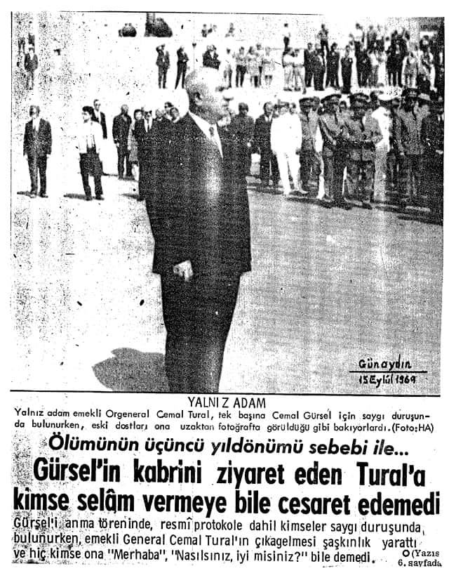
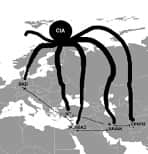

Talat Turhan
1924 yılında Elazığ’da doğdu. O tarihte babası Elazığ müddeiumumisi (savcı) idi. Baba tarafı Rize ilinin Çayeli ilçesinin tanınmış ailelilerinden Şerifoğulları’na mensuptur. Anne tarafı Elazığ-Harput’un tanınmış ailelerinden Efendigiller’dendir.
Babasının görevi nedeniyle yurdun çeşitli yörelerinde öğrenim hayatını sürdürdü; 1929 yılında Ardahan’da başladığı ilkokulu, 1935 yılında Zonguldak Gazi Mustafa Kemal İlkokulu’nda tamamladı. Zonguldak’ta başladığı ortaokul yaşamını, 1939 yılında Elazığ’da bitirdi. Daha sonra 1940 yılında İstanbul-Çengelköy’de bulunan Kuleli Askeri Lisesi’nde öğrenimini sürdürdü. İkinci Dünya Savaşı’nın başlaması nedeniyle İstanbul’un seyrekleştirilmesi planı çerçevesinde okulu Konya’ya taşındı, devam eden öğrenimini 1942 yılında orada tamamladı. Mezuniyetinde tarih dersi birinciliği nedeniyle ödüle layık görüldü. O dönemin askeri liseyi bitirdikten sonra Samsun’da 15. Topçu Alayı’nda askerlik stajını tamamladı.
Staj sonrası 1942-1944 yılları arasında Ankara’da Harp Okulu’nda öğrenimini tamamladı ve 30 Ağustos 1944’te asteğmen rütbesiyle Türk Silahlı Kuvvetleri’ne katıldı. 1944 yılında Harp Okulu mezuniyeti sonrasında başarı durumuna göre meslek seçimi yapabildiği için Topçu sınıfına ayrıldı. Daha sonra 1944-1946 yılları arasında Polatlı’da bulunan Topçu Okulu’nda mesleki öğrenim gördü. Asteğmenliğinden 6 ay sonra teğmenliğe yükseldi. Okulu bitirdiğinde Adapazarı’nda bulunan 17. Tümen’e bağlı 17. Koşulu Topçu Alayı’na (Atlı) atandı. Bu arada bir süre Kandıra’da görevini sürdürdü. Bir yıl orada görev yaptıktan sonra Şark (Doğu) hizmeti için 156. Ağır Topçu Taburu Müstakil Takım komutanı olarak Erzurum’un Tafta köyüne atandı ve daha sonra sırasıyla şu görevlerde bulundu: 1948: Topçu Okulu emrinde Müstakil Topçu Takım komutanı (kıtayla naklen), Polatlı; 1948-1950: topçu üsteğmen rütbesiyle Erzurum-Gez köyü ve Aziziye Tabyası 13. Uçaksavar Alayı topçu takım komutanlığı ve batarya komutanlığı (vekâleten); 1948-1949: kursiyer olarak Uçaksavar Okulu Ağır Uçaksavar M-8 Komuta Aleti ve SCR 584 Radarı Kursu, Tuzla; 1950: 1. Uçaksavar Alayı Topçu Takım komutanı, İstanbul-Rami, Bandırma (kıtayla naklen); 1950: Yedek Subay Taburu takım komutanı, Tuzla Uçaksavar Okulu; 1950: kursiyer (kurs birincisi) olarak İzmir-Gaziemir Ulaştırma Okulu Motor ve Bakım Kursu; 1950-1951: Üçüncü Bakım Kademesi komutanı, Öğretmen Subay Kursu, Tuzla; 1951-1953: Genel Konular Bölümü motor öğretmeni, Tuzla Uçaksavar Okulu (orada Motor Bölümü kürsüsünü kurarak ilk bölümün öğretmenliğini yaptı); 1953: Kara Harp Akademisi sınavı giriş birincisi, İstanbul-Yıldız; 1953-1954 Kore Tugayı (5. kafile) Uçaksavar Batarya komutan yardımcısı, Ankara ve Seferihisar (Türkiye’de hazırlık); 1954-1955: topçu yüzbaşı rütbesiyle Kore Tugayı (5. kafile) Uçaksavar Batarya Komutan yardımcısı (Batarya Birleşmiş Milletler Birincisi) Kore; 1955-1956: Uçaksavar Alayı 187. Hafif Uçaksavar Batarya komutanı, İstanbul-Orhaniye Kışlası; 1955: kursiyer olarak Polatlı Topçu Tekâmül Kursu; 1958-1959 2. Ordu Karargâh Harekât Başkanlığı kurmay stajyeri topçu binbaşı Konya; 1959-1960: 39. Tümen Topçu Komutanlığı Ağır Topçu Tabur komutan yardımcısı. (kurmay binbaşı), Dörtyol; 1959-1960 39. Tümen Harekât ve Eğitim Şube müdür vekili, İskenderun; 1960: Genelkurmay Harekât Başkanlığı Plan Harekât Dairesi Plan Kısım amiri, Ankara; 1960-1962: Milli Savunma Bakanlığı Kara emir subayı, Ankara (1960 yılında atandığı bu görevinde 30 Ağustos 1962 tarihinde yarbaylığa terfi etmiştir); 1960-1962: Milli Savunma Bakanlığı Özel Kalem müdür vekili, Ankara; 1961-1962: Ordu Dil Okulu İngilizce bölümü. (9 ay süreli bu kurs devam ederken 22 Şubat 1962 başkaldırı girişimi meydana gelmiş, bu olay nedeniyle kursu tamamlamadan ilişiği kesilerek Afyon Batı Menzil Komutanlığı Plan ve Prensipler Şubesi Kısım amirliğine sürgün edilmiştir. Daha sonra Danıştay’da dava açarak, dil kursuna bıraktığı yerden devam etme hakkını geri kazanmıştır.) 27 Mayıs 1960’tan sonra Ankara’da Milli Savunma Bakanlığı Özel Kalem müdürlüğü görevinde bulunduğu evrede Silahlı Kuvvetler içindeki dalgalanmalarda yer aldı. O dönemden itibaren ülkemizin yakın tarihine ilişkin olaylara devrimci inançları doğrultusunda doğrudan ya da dolaylı olarak katıldı. Silahlı Kuvvetler Birliği’ne üye oldu.
Özellikle Ankara’daki görevi sırasında ABD emperyalizmin güdümüne sokulan ülke düzeninin kokuşmuşluğunu algıladı. Bu tavrı düzene egemen olan güçler tarafından gözden kaçırılmadığı için, 22 Şubat 1962 olaylarına katılmış olma bahanesiyle Afyon’a sürgün edildi.
Daha sonra Genç Kemalistler Ordusu adlı bir dava nedeniyle Mamak Askeri Ceza ve Tutukevi’nde 1963 yılında 4 ay 17 gün tutuklu kaldı ve 3,5 yıl askeri yargıda yargılandı. Dava devam ederken hiçbir gerekçe gösterilmeksizin 42 sayılı yasayla emekliye ayrıldı. Emekli edildiğinde devresinde bulunan kurmay subaylar arasında kıdem bakımından birinci konumda bulunuyordu.
Kurmay yarbay rütbesiyle emekliye ayrıldığı 1964 yılından bu yana kendisine yapılan tüm iş önerilerini reddedip düzen dışında kalmayı yeğledi ve 1965 yılında yazın yaşamına başladı.
Egemen güçler peşini bırakmadılar. 1972-1974 yıllarında Bomba Davası adlı üst düzey cuntacı generallerin birbirleriyle olan makam ve çıkar çatışmaları üzerine düzenlenen komplo bir davanın baş sanığı olarak Ziverbey İşkence Köşkü’nde bir ay işkence gördü ve iki yılını Selimiye Askeri Ceza ve Tutukevi’nde geçirdi. İdam istemiyle yargılandığı bu davada af kabul etmemesine karşın, politik durumdaki değişime uyarlı olarak davası örtbas edildi. 1973 yılında cezaevinde yatarken “kontrgerilla işkencecileri” hakkında TBMM araştırması isteyerek bu konuyu ülke gündemine soktu.
1990 yılında İtalya’da patlak veren Gladio gizli örgütü, öne sürdüğü tüm savları doğrulamasına karşın, TBMM’deki bu konuyla ilişkin tüm girişimler bugüne kadar sonuçsuz kalmıştır. Susurluk Kazası’yla da daha önce öne sürdüğü savlar Türkiye yönünden doğrulandı.
46 yıl boyunca, çeşitli gazete ve dergilerde politik, stratejik, istihbarat ve güvenlik örgütleri, insan haklan, olağanüstü yargı, kontrgerilla, terörizm ve emperyalizmin örgütleri vb. yakın konularda araştırma ve inceleme türü dizi yazıları yayımlandı. Özellikle 1990’dan beri ilgi alanı içine giren konularda 17’si yurtdışında olmak üzere 120’ye yakın konferans, açıkoturum, panel vb. gibi etkinliklere katıldı. Bazı özel TV kanallarındaki belgesel ve söyleşilerde yer aldı. Basın toplantıları düzenledi.
Kitapları
- Bomba Davası / Savunma-1
- Bomba Davası / Savunma-2
- Özel Savaş, Terör ve Kontrgerilla
- Kontrgerilla Cumhuriyeti
- Doruk Operasyonu
- Emperyalizmin Bataklığında İstihbarat Örgütleri
- Çeteleşme
- Mehmet Eymür (Orhan Gökdemir’le birlikte)
- 27 Mayıs 1960’tan 28 Şubat 1997’ye
- Devrimci Bir Kurmay Subayın Etkinlikleri
- 30 Ağustos
- Atatürk’ün Yarbayı
- Genç Kemalistler Ordusu
- Baskın / 11 Eylül
- Küresel Çete
- Mont Pelerin / Küresel Sermayenin Beyni (Mehmet Eymen’le birlikte)
- Derin Devlet
- Bohemian Club
- Küreselleşmenin Şifresi
- İç Savaşın MİT’çisi Eymür
- 12 Mart Cezaevinden Mektuplar
- Faşizme Karşı Dilekçeler
- Kontrgerilla Düzeni
Sokrates’in Savunması
(MÖ 469-399)
“Her zaman, her yerde en güçlü olanlar hırsızlardır.”
“İyice bilin ki şunu, bir değil binlerce ölüm gerekirse bile hiç mi hiç değiştirmeyeceğim yolumu.”
“Devletteki haksızlıkları ve yolsuzlukları, eğrilikleri önlemek isteyen bir kimse canını kurtaramayacaktır.”
“İnsanları öldürmekle sürdürdüğümüz kötü yaşamın kınanmasına engel olacağınızı sanıyorsanız yanılıyorsunuz.”
“Ben gerçekten, kamu düzeni ve üstün çıkarı (egemen sınıfların çıkarı) için tehlikeliydim. Çünkü doğruyu söylemekten daha büyük alçaklık ve ihanet yoktur!”
Önsöz Yerine
Elinizdeki kitap 12 Haziran 2011 seçimlerinden önce basılmak üzere yayınevine verildi. Aslında seçimlerden bir ay önce bu kitabı yayımlamayı düşlemiştim.
1972–75 yılları arasında “Bomba Davası” adlı yapay bir davanın baş sanığı seçilmiş, işkence görmüş, hiçbir dönemle kıyaslanamayacak iki yıllık bir cezaevi deneyiminden sonra, yargılanma tamamlanmadan salıverilmiştim. “Bomba Davası”nın senaryosuna göre, Gnkur. Bşk. Org. Faruk Gürler, Hv. K.K. Org. Muhsin Batur, Ora. Kemal Kayacan iktidarı ele geçirmek için Marksist-Leninist bir cunta oluşturmuşlardı. Bana ise bu cuntanın iktidara gelmesine katkı vermek ve elverişli ortam hazırlamak için, sivil kesimin İstanbul bölgesi liderliği görevi verilmişti(!) MİT’e göre, Türkiye’de terör ve anarşiyi yönlendiren altı kişinin önde geleniydim. Dava, tüm zorlamalara karşın, tertip düzenleyen karşıdevrimci güçlerin senaryolarına uymadı... Ek iddianameyle sanık ilan edilen Gnkur. Bşk. Gürler, Hv. K. K. Batur, Dz. K. K. Kayacan “Bomba Davası”na günün dengeleri içinde getirilemediler. Tertip senaryosu çöktü.
Bu iğrenç senaryoda başat rol alan işkenceyle dava tezgâhlayan Org. Faik Türün ve Tümg. Memduh Ünlütürk hakkında “Parlamento Araştırması” isteminde bulundum. Yıl 1973… Aradan 38 yıl geçti. TBMM’de sayısız komisyonlar kuruldu. Ama ne yazık ki günümüzde, “Abdi İpekçi cinayeti” bahanesiyle “Kontrgerilla” gündeme getirilip seçim malzemesi yapılabiliyor.
NATO güdümünü kabullenen iktidarlar ABD’nin kontrolü altında bir “yeraltı örgütü”nün faaliyetlerini denetleyemezler. Bu nedenle darbeler, provokasyonlar, katliamlar, siyasi cinayetlerin failleri bulunamıyor. “Mış” gibi yazılıp kamuoyu yanıltılıyor.
1989 yılında Los Angeles Times bir makalesinde “Papa suikastı”ndan söz etti. Olumlu anlamda bana da yer verdi.
Kuşkusuz M. Ali Ağca’nın gizemli serüveni çözülemediği sürece Abdi İpekçi ve Papa suikastı aydınlanamaz. Ancak Ağca’nın Bulgaristan’da kaldığı süreç mercek altına alınabilseydi, bazı ipuçlarına ulaşılabilirdi. Örneğin:
Bulgaristan’da Ağca’nın B. Ç. ve A. U. adlı iki mafya babasınca finanse edildiği sürekli yazıldı. Ağca, Bulgaristan’da iken bir istihbarat örgütü yetkilisinin orada görevli bulunması rastlantı olabilir mi?
Her taşın altında bu ünlü istihbaratçıyı görebilirsiniz. Ziverbey İşkence Köşkü’nde, Kızıldere katliamında, operasyonlarda, ABD’de, Türkiye’de. Ama kimse bu zata dokunamıyor…
Emperyalistler, devrimleri ve devrimcileri düşman sayarlar. Kuşkusuz her ülkede devrim, bazı sınıf ve katmanların çıkarını bozar. Bu nedenle emperyalistler her ülkede karşıdevrimcilerle işbirliği halinde isyanlar çıkartıp ülke düzenlerini kendi çıkarlarına uyumlu hale getirmeye çalışırlar.
Cumhuriyet devrimlerine başkaldıranları emperyalistler destekliyorlardı. Günümüzde de “Turuncu Devrimler” ve “Arap Baharı”nın arkasında “küresel çete”nin parmağı var…
İslam coğrafyasına ve dinine yönelik tarihin yaşadığı en büyük “karşıdevrim operasyonu”, ABD’nin çıkarına uygun olabilir. Ancak bazı bahanelerin ardına sığınıp bu “küresel hıyanete” ortak olup, Atatürk Cumhuriyeti’ne saldırmak İslam’la bağdaşmaz…
Demokrat Parti (DP) iktidarı, 1958 yılında “Lübnan İç Savaşı”nda Müslümanlara değil Hıristiyanlara silah ve cephane yardımı yapıyordu.
Günümüzde de süregelen “Haçlı Savaşları”na Libya’da destek olan tek İslam ülkesi ne yazık ki Türkiye’dir… NATO’yu sorgulayamadan bu kısırdöngüden kurtulamayacağımız yıllardır yazılıyor. Her manada bağımlı olmayı ilke olarak benimsemiş iktidarlar ne NATO’yu sorgulayabilir ne de emperyalist dayatmalara karşı çıkabilirler.
1990 yılında İslamı düşman ilan eden ABD, kendi çıkarına uyumlu bir İslam yaratmak için milyarlarca doları boşuna harcamadı… Bu tarihsel çelişki ve utançtan kurtulmanın tek yolu “tam bağımsızlık” ve “Özgürlük ve bağımsızlık benim karakterimdir” diyen anlayışa geri dönmektir. Oysa, 60 yıllık süreçte dışarıdan beslenen tarikat, cemaat, etnik gruplar, STK’lar “Kemalist”lere savaş açacak kadar güçlendiler. Karşı devrim bir süreç olduğu kadar devrim de bir süreçtir. Tarihi dinamikleri bu bilinçle değerlendirmeliyiz.
Bırakın işbirlikçileri, hâlâ ABD’nin Irak işgaline katkı vermediğimize yakınan, dönemlerindeki başarısızlıkları bu olaya bağlayan NATO’cu eski genel kurmay başkanları var.
1924 yılında doğdum. Atatürk döneminde bağımsız bir ülkede yaşamak onurunu tattım. 1937 yılında Atatürk, Diyarbakır’ı ziyarete geldiğinde, ortaokul ikinci sınıf öğrencisiydim. İstasyon Meydanı’nı dolduran coşkulu halkın, Atatürk’ün şehirden ayrılmasını bir saat geciktirecek ölçüde sevgi tezahüratı yaptığı dönemde ben de oradaydım.
Beceriksiz, basiretsiz işbirlikçi politikalar yüzünden ülkemiz nereden nereye geldi…
Özetle devrimi yaşadım, karşıdevrimi gördüm, ülkemin “babalar gibi satılmasına” tanık oldum. Tepki koydum.
Sürgünler, işkenceler, hapishaneler gördüm. 47 yıldan beri emekliyim. 46 yıldır yazıyorum. Bu kez de beni engellemek isteyenler tazminat davaları açıp susturmaya çalıştılar.
1963 yılından bu yana Türkiye ve hatta dünyada tam 48 yıl sürekli yargılanan tek kişi olduğumu iddia ediyorum. Şu anda da iki davam Avrupa İnsan Hakları Mahkemesi’nde (AİHM) kabul gördü.
Yargıtay aşamasında bulunan bir tazminat davası aleyhimde sonuçlanırsa, onu da AİHM’e taşıyacağım.
Bozuk düzenlerde hak, hukuk, özgürlük ve demokrasinin bir anlam ifade etmediğini yaşayıp öğrendim. Ne yazık ki hakkımı AİHM’de aramak zorunda bırakıldım.
ABD güdümünde, NATO’cu ve TOTO’cu iktidarların düzenine karşı çıkmanın bir diyeti vardır. O diyeti fazlasıyla ödedim. Bu ülkede her dönemde kitap yazanlar suçlandı. Şimdilerde kitapla bomba eşdeğer tutuluyor. Eski bir bombacı (!) olarak bu devirde susmak bana yakışmazdı. Her ne kadar birileri misyon yüklenenleri potansiyel suçlu sayıyorsa da ülkeme olan sevgim beni yeniden yazmaya yöneltti… Ama bunu yapmak için ne yaşım ve sağlığım müsaitti. Ocak ayından beri “lenf kanseri” tedavisi görüyor, kemoterapinin tüm olumsuzluklarıyla boğuşuyordum…
Şubat ayında geçen yıldan kalan bir kitabımı tamamladım. Ancak küreselleşen dünyada mazlum uluslara yönelik ikinci sömürgeleşme süreci “Arap Baharı” diye başlatıldı. Yine bu döneme rast getirilen “Wikileaks Türkiye Belgeleri” her kademedeki işbirlikçilerin ipliğini pazara çıkardı. Hatta Mekke’yi 10 milyon dolara Hıristiyanlara pazarlamak isteyen Müslüman din adamı ismen açıklandı. Müslüman argümanları öne çıkarıp siyaset yapanlardan, küresel ve cemaat medyası için özüne girmekten özenle kaçındılar. Tüm bu gelişmeleri değerlendirmek bana düştü. Bu halimle mart, nisan ve mayıs aylarında günde 12-16 saat çalışmak zorunda kaldım. Kimse başkasına yazdırdı demeye kalkmasın el yazılı müsveddelerim elimde duruyor. Yüzlerce tanığım var.
1990 yılında Zaman gazetesine vermiş olduğum bir demeçte G. H. Bush’un “İslam’ı düşman” ilan ettiğini ilk kez kamuoyuna duyurdum.
Gerek baba ve gerekse anne tarafından cami yaptırmış bir aileden geliyorum. Çayeli’ndeki “Şerifli Camii” Şerifoğlu ailesine, bunun gibi Elazığ-Harput’taki “Ağa Camii”, Efendigil ailesince yaptırılmıştır.
1964 yılında emekliye ayrıldıktan hemen sonra yazmaya başladım. Elinizdeki kitapla 30’a yaklaştım; 100 kitapla ölmek isterdim ama kendi olanaklarımla bu kadarını yapabildim. Ne Soros ne de AB fonlarından beslendim. O nedenle de kalemimi özgürce kullanabiliyorum…
1973 yılından beri NATO’nun yeraltı örgütü kontrgerilla ve Gladio’yla mücadele ediyorum. Bu konuda bir ilki başardığım içte ve dışta genel kabul gördü. Kitaplarımda NATO güdümlü, ABD’nin finanse ettiği bir “yeraltı örgütü”nün nasıl cinayet işleyeceğini resmi ABD belgelerine dayanıp açıklıyorum. Ama küresel güdümlü iktidarlar NATO ve ABD’yle hesaplaşamayacak kadar güçsüz olduklarından hâlâ siyasi cinayetler ve darbeler üzerinden siyasi rant sağlamaya çalışıyorlar. Yıllar önce açıkladığım bu konulardaki gerçekleri de bu kitapta bulabilirsiniz.
1977’li yıllarda işbirlikçi iktidarları çete olarak kabul ettiğimden aylarca “iktidarların çeteleşmesi” konusunu yazdım.
1999 yılında yazdığım kitabın adı Çeteleşme idi.
Bu kitabımda küreselleşmeci Siyonist yapılanmanın köklerine inmek olanağını buldum. Bu oluşumda yer alan kişileri ve işbirlikçilerine ismen ulaştım. Bir kısmını açıkladım.
2004-2009 yıllarında “ABD derin devleti”ni ve örgütlerini çözmeye çalışan kitaplar yayımladım. “Küresel Çete, Bohemian Club, Mont Pelerin, Derin Devlet, Kontrgerilla Düzeni ve Küreselleşmenin Şifresi diye.
Sonuçta tepesinde Rockefeller ailesinin bulunduğu ve Rotschild ailesinin de söz sahibi olduğu bir gizli örgütlenmenin Anglosakson temelinde “Çokuluslu şirketler”in söz sahibi olduğu bir dünyayı 1920 yılından beri şekillendirmeye çalıştıklarını saptadım ve yazdım.
Kuşkusuz emperyalistler “dünya egemenliği” hayalini gerçekleştirmek için yandaşlarını da seçerler.
Kapitalizm, kapital birikimi olan sömürgeci ülkelerin çıkarlarına hizmet eden bir düzendir. Diğer ülkeler “serbest piyasa”cılıkla ancak emperyalizmin değirmenine su taşıyabilirler…
Ama her ülkede bu işlevi yapan işbirlikçi bulunması kolay olduğu için ABD, 1954 yılından beri seçtiği kişileri, denetim altına aldığı medyayla parlatıp bize seçtiriyor.
Küresel piramidin tepesinde işadamları var, onların altında politik liderler, dışişleri bakanları, merkez bankası müdürleri, akademisyenler ve medya mensupları yer alıyor. Bu oluşumda yer alanları sürekli açıklıyorum. Bu kitapta da bulabilirsiniz.
Özellikle 11 Eylül Baskını’nı bahane eden ABD, uluslararası tüm kuralları takmaksızın İslam ülkelerinin sahip olduğu yeraltı değerlerine el koyup, İslam’ı ılımlaştırmakla da yetinmeyip Hıristiyanlaştırmayı 3. milenyum hedefi olarak önüne koyduğu bir dönemde “NATO’nun Libya’da ne işi var?” demenin tam zamanı olduğunu düşünüyorum.
“Arap Baharı”, ABD’nin BOP’una inanılmaz boyutta katkı veren “karşıdevrimci” bir süreç olarak sürdürülüyor. Arkasında ABD, Almanya, İngiltere, Kanada, Avusturya, Fransa, Danimarka, İspanya ve İsveç‘in bulunduğu 30 yıldan beri faaliyet gösteren Siyonist tandanslı C.C.C. ve W.H.S. kuruluşlarınca denetlenen “hacker”lar örgütü ve “sosyal ağlar” sayesinde ABD, hem “Haçlı Savaşları”nı hem de “2’nci sömürgecilik süreci”ni risk almadan, müttefiklerini kendine ortak ederek sürdürüyor. Ülkemiz de ne yazık ki bu sürece katkı veriyor.
Bu kitap açıkladığım nedenlerle başlangıcında tasarladığım plana bağlı kalmaksızın, dış ve iç gündem son güne kadar izlenilerek yazıldığı için kokteyl bir kitap oldu. Geçmişten geleceğe değişik konulara yer verdim. Diğer kitaplarımda olduğu gibi “Wikileaks belgeleri” ardındaki örgütleri ve bağlantılarını ilk kez açıklamak bana nasip oldu.
Kitap birbirinden bağımsız bölümler halinde görünse bile “karşıdevrimci”lerin içyüzünü açıklamaya katkı verirse sevineceğim.
Sıranın bize gelmesini beklemeden bu ülkede yaşayan bütün halklar dışarıdan beslenen işbirlikçilerin dolduruşuna gelmeden bütünlüğümüze sahip çıkmalıdır diye düşünüyorum. Bu düşüncemin altını kitapta doldurmaya çalışıyorum. Bir Don Kişot gibi “küresel hıyaneti” karşıma alırken aklıma, çalışma azmime, kültür birikimime, bağımsızlığıma, deneyimlerime ve amatör ruhumdan güç aldım. Ancak savlarımı kanıtlamak için yaklaşık 850 kaynak ve açıklamaya yer verdim. Bu kadar dip notun okuyucuları sıkacağını biliyorum. Bu nedenle ilk kez kitabı dipnotlarına bakmaksızın okumanızı öneririm. Beğeninizi kazanırsa ikinci kez okuduğunuzda kaynakçaya bakılmasını öneriyorum. Bu kitapta yer alan konuların yıllarca ülkemin gündeminde kalacağını biliyorum. Beni izleyecek yazarların işini kolaylaştırmak için, tüm kaynakları açıkladım. Hakkı teslim eden saygın yazarlar gönderme yaparlar.
Saptadığım kadarıyla, daha yaşarken yaklaşık 140 iç ve dış kaynaklı kitapta bana gönderme yapıldı.
Google’e girip “talatturhan” yazarsanız benimle ilgili lehte ve aleyhte yüzlerce konuya ulaşabilirsiniz. Bunun gibi web siteme (www.talatturhan.com) girip tüm yazdıklarımı, etkinliklerimi görebilirsiniz. Tüm amacım düşüncelerimi halkımla paylaşmak G. Soros ve H. Kissinger’ın düzeninden yararlananlara söylenecek sözümüz yok…
1986 yılından beri sağlık sorunlarıyla boğuşuyorum. Bu süreçte özellikle yeğenim Prof. Dr. Canan Efendigil Karatay’ın inanılmaz katkıları sayesinde yaşamımı sürdürebildim. Son dönemde kanser tedavisinde Şişhane’deki T.C. İstanbul Bilim Üniversitesi Onkoloji Merkezi’nde Prof. Dr. Reyhan Küçükkaya ve Uz. Dr. Fehmi Hindilerden ve tüm çalışanların üstün çabaları olmasaydı, bu kitap yazılamazdı. Kendilerine teşekkür borçluyum.
Ustalık eserimi yazdım diye bir iddiam yok. 87 yaşımda kanserle boğuşurken ancak bu kadar yazabildim.
Bugüne kadar birçok yayıneviyle çalışmak zorunda kaldım. Onlara katkıları için teşekkür ederim. Ancak ilişkimi kestiğim günden beri telif ödemeyen yayınevleri 1992’li yıllarda ve 2000’li yıllarda yayımlanan kitaplarımı birçok internet sitesinde satıp kâr sağlamaya devam ediyorlar. 2004 yılından bu yana birlikte çalıştığım yayıneviyle de zorunlu nedenlerle ilişkimi kestim.
Bundan sonra kitaplarımı basıp, internet sitelerinde satmaya devam ederlerse yasal haklarımı kullanmak zorunda kalacağımı bildirmek istiyorum.
Bu kitabın hazırlanmasında bana her manada teknik yardım yapan torunum Bora ile dostlarımı sevgiyle anıyorum.
Destek Yayınevi’ne de bu kitaba katkıları için teşekkür ediyorum.
Hoşça kalınız.
Talat Turhan
8 Mayıs 2011
Harput Ağa Camii
Cami restorasyonu esnasında aslına sadık kalınmamıştır.
Şerifli Camii
Rize-Çayeli
Diyarbekir istasyon binası, terasın köşesinde Atatürk
O tarihte Diyarbekir Ortaokulu’nda ikinci sınıf öğrencisiydim. Fotoğrafta görünen aracın tamponuna çıkarak istasyon meydanını dolduran halkla birlikte uzun süre Ata’mızı görmek bahtiyarlığını yaşadım.
15 Kasım 1937
ABD Senatörü Albert J. Beveridge
“Amerikan Cumhuriyeti, tarihinin en üstün ırkının kurduğu bir cumhuriyettir. Tanrı tarafından yönlendirilen bir devlettir. Bu cumhuriyetin liderleri de yalnızca devlet adamı değil, aynı zamanda Tanrı’nın peygamberleridir.” (1889)
— ABD belgeleriyle ABD Emperyalizminin Doğuşu, Prof. Dr. Türkkaya Ataöv.
— Senato’da yapılan konuşma (27 Nisan 1889).
ABD Başkanı Franklin Roosevelt
(1882–1945):
“İşin gerçeği şu ki, büyük merkezlerdeki bir finans unsuru ta Andrew Jackson’ın günlerinden bu yana yönetime sahip olmuştur.” (1933)
Kore Askeri Danışman Gurubu
Komutanı
Tuğgeneral W.L. Roberts’ın
yabancı ordular için düşünceleri:(*)
“Komutanı bulunduğum 500 kişilik, savaşta pişmiş askerlerden oluşan grup, bizim adımıza kurşun atacak 100.000 kişinin nasıl savaşa hazırlanacağını kanıtlamıştır, bunlar iyiden iyiye eğitilmiştir...
Kore’de Amerikan vergi yükümlüsünün, bu ülkedeki yatırımlarının bekçi köpeği olan bir yerli ordu bulunmaktadır ve bu kuvvet en az giderle en çok sonucun nasıl alınabileceğini pek güzel örneklemektedir.” (1950)
(*) New York Herald Tribune’den aktaran: P. Baran “Büyümenin Ekonomik Politiği”, 5 Haziran 1950.
Başkan Kennedy’nin ABD yardımının
amacı hakkındaki görüşü:(*)
“Yardım, dünyayı denetleme yöntemlerinden biridir. ABD’ye yandaş, hükümetleri iktidarda tutmayı, uluslararası şirketlerin çıkarlarına engel olacak girişimleri önlemeyi, etki alanındaki ülkelerin kalkınma programlarını AID’nin önerileri ve IMF, Dünya Bankası yoluyla denetlemeyi, bu ülkelerin ABD’ye olan bağımlılıklarını sürekli kılacak bir denetim.” (1962)
(*) Oltadaki Balık Türkiye, M. Emin Değer, Çınar Yayınları, 1993.
IMF= International Monetary Fund (Uluslararası Para Fonu).
WB= World Bank (Dünya Bankası).
AID=Agency for International Development (USAID).
ABD Başkan Yardımcısı Humphrey:(*)
“Askeri bakımdan, önemi barutun keşfiyle kıyaslanabilecek yeni ve en cüretkâr bir saldırı biçimiyle karşı karşıyayız. Ulusal kurtuluş savaşlarından söz ediyorum! Bu yeni ve karmaşık harp biçimi, güvenliğimiz için belli başlı bir tehlike oluşturmuştur.” (1965)
(*) West Point Harp Okulu’nda yaptığı konuşma. )
ABD, Senatör Roman Hruska
(Kleindienst Soruşturması):(*)
“Amerika’daki bütün seçim kongreleri iş kurumları tarafından satın alınmaktadır ve bu odadaki herkes bunu bilir.”
(*) Egemen Devlet, ITT-Anthony Sampson, Koza Yayınları, 1974.
Bölüm – 1
ABD
ABD’nin Türkiye’ye Bakışı(1)
ABD Başkanı Wilson (5 Ağustos 1919):
“Türkiye’yi parça parça edelim. Türkiye, haritadan silinmelidir.”
Allen Dulles (29 Eylül 1922) [Eski CIA Şefi]:
— “Mustafa Kemal’e karşı sert bir tutum takınılmalıdır...”
— “Gelecekte bir istikraz için başvurabilirler...”
— “Eğer Türkiye, hiçbir zarar görmeden devletlere kafa tutmakta devam eder, kapitülasyonları kaldırır ve İstanbul’a yerleşirse, bu yalnız Ortadoğu’da değil, Avrupa’da da barışı tehlikeye atacaktır.”
THE NEWYORK TIMES (2 Ağustos 1920):
“Avrupa’dan süpürülen Türklerin dünya siyaset sahnesinden de, bir daha dönmemek üzere silinip gitmesi başlıca dileğimizdir.”
THE NEWYORK TIMES (21 Şubat 1922):
“Ortadoğu’daki Amerikan çıkarlarının genişletilmesi için sınırsız fırsatlar bizi beklemektedir. Balkan ülkelerinin ve Osmanlı İmparatorluğu’nun zengin doğal kaynaklarına henüz el sürülmemiş olup, madenlerin işletilmesi ve demiryollarının yapımı gibi en çekici iş alanları tamamen boş bulunmaktadır.”
THE NEWYORK TIMES (2 Ekim 1922):
“Anadolu’daki savaşın Türklerin zaferiyle son bulması yakın tarihin en korkunç olayıdır. Korkunç Türk bütün vahşetiyle yeniden sahneye çıkmıştır.”
THE NEW-YORK TIMES (13 Ekim 1922):
“Türkiye’deki Amerikan çıkarlarını üç ana konu etrafında toplamak mümkündür:
Birinci konu, mevcut ticari anlaşmaların ve kapitülasyonların korunmasıdır.
İkinci konu, ülkedeki Hıristiyan azınlıkların haklarının garanti altına alınmasıdır.
Üçüncü konu, misyonerlerimizin ülke sınırları içinde serbestçe faaliyet göstermesini sağlayan antlaşmaların sürdürülmesidir...
Amerika Birleşik Devletleri Hükümeti Kapitülasyonların kaldırılmasına karşı çıkmaya kararlıdır.”
THE NEW-YORK TIMES, Prof. Earle’nin kanısıyla da doğrulanmaktadır:
— “Misyonerler ve din adamları, dünyanın hiçbir ülkesinde Türkiye’deki kadar emperyalizme hizmet etmemişlerdir.”
ASIA, Lewis Heck (Ocak 1920):
— “İstanbul şehri, yakın gelecekte Amerikalı tüccar ve işadamları için çok önemli bir merkez niteliğini kazanabilir...”
— “Amerikan misyonerlerinin ve eğitim kurumlarının Türkiye’de yaratmış olduğu olumlu hava bu bölgeye ihracat yapacak işadamlarımıza büyük imkânlar sağlamaktadır.
— 1914 yılında Türkiye’de 627 Amerikan okulu bulunmakta ve bu okullarda 34.000 öğrenci okumaktaydı.”
— “İstanbul gibi büyük merkezlerde Amerikan bankalarının kurulmasını ve ticari şirketlerin kendi acentalarını açmalarına öneriyor. “Büyük yatırımların ise ancak bölgenin siyasi geleceği açıklığa kavuştuktan sonra gerçekleşebileceğinden” söz ediyor.
FOREIGN AFFAİRS, Prof. Philip Marshall Brown (15 Haziran 1923):
— KAPİTÜLASYONLAR
“Çeşitli misyonerlik örgütleri ile diğer yabancı hayır kuruluşlarının, dini ve siyasi propaganda merkezleri olarak kullanılmış olduğu da bir gerçektir.”
“ABD çıkarları gereği, bu konularda en yakından ilgilenmesi gereken ülkedir. ABD’nin Türkiye’deki misyonerlik kurumları, okullar, hastaneler ve yetimhaneler uzun yıllar, siyasi propaganda merkezleri oldukları yolunda hiçbir şüphe uyandırmadan görev yapmışlardır...”
ASIA, Arnold J. Toynbee (Eylül 1923):
— TÜRKİYE’NİN YENİ İKTİSADİ HEDEFLERİ
“Türkleri bağımsızlıkları ve vatanları uğruna amansız bir savaş vermeye sevk eden, güçlü milliyetçilik duygularından aldığını ve geçici bir heves olmadığını sanıyorum... Türklerin siyaset alanındaki bu zaferle yetinmeyerek ortaya bir de ‘iktisadi misak’ koymuş bulunmaları son derece ilgi çekici bir gelişmedir.”
ASIA, Arnold J. Toynbee (Ekim 1923):
— ANKARA, TÜRKİYE’NİN MASAL BAŞKENTİ
“Türklerin iktisadi bağımsızlıklarını tehlikeye düşürecek nitelikte tekliflere yanaşmayacakları ve iktisadi kalkınma için bu fiyatı ödemektense kalkınmamayı yeğleyecekleri bilinmektedir.”
Kaynakça ve Açıklamalar
(1) ABD Basınında Türk Kurtuluş Savaşı, Osman Ulagay, Yelken Matbaası, 1974.
Tuslog (JUSMMAT) Türkiye’nin Yakın Tarihinin Bir Özeti(1)
Geçmişi eskilere dayanan ve merkezi Ankara’da bulunan, Amerika’nın Turkiye’deki askeri faaliyetlerini koordine eden “division-level” bir organizasyon. “Bana yakışan kısalıkta” özet geçmişi şu şekildedir:
Her şey toz bulutu idi.
İkinci Dünya Savaşının bitmesiyle birlikte Ruslar Türkiye’den “Bize üs açmak için yer verin, konuşlanalım, dostluğumuz ilerlesin, ayağımız alışsın” diye bir istekte bulundular. (Aslında Montreux anlaşması uyarınca hak olarak gördükleri “Bulgaristan’ın deniz ticaretini garantiye almak istiyoruz biz” şeklinde bir sebep ileri sürdüler.)
Türkiye bu isteği “Haydaa, n’oluyoruz be!” diye tırsarak reddetti. Ama Ruslar baskıyı devam ettirdiler. Yunanistan’da komunist gerillaları Ruslar açık ve seçik olarak desteklemeye başladılar.
12 Mart 1947’de Harry Truman, Kongre’ye “Komünizme karşı bu iki kale ülkeyi desteklemeliyiz” diye konuşma yaptı (Truman Doktrini).
Mayıs 1947’nin sonlarına doğru Kongre 100 milyon dolar yardımı serbest bırakmıştı bile Türkiye için. Hemen akabinde ABD büyükelçisi “Bu kadar para nereye harcanıyor hele bir bakayım ben” diyebilsin diye Ankara’da Joint American Military Mission for Aid to Turkey (JAMMAT) kuruldu, sonra bunu 1958’de Joint United States Miltary Mission for Aid to Turkey diye değiştirdiler, oldu JUSMMAT. JAMMAT’ın havacılık birimi (1172d Foreign Mission Squadron ya da diğer adıyla USAFG Türk Hava Kuvvetleri’ne Amerikan uçakları ve uçuş konularında eğitim vermeye başladılar 1948’de. Aynı grup Balıkesir, Diyarbakır, Bandırma, Eskişehir, Merzifon, Batman, Adana (İncirlik) ve İzmir (Çiğli) hava üslerinin de modernizasyonu tasarımı / inşası konusunda Türkiye’ye bilfiil yardım ettiler.
1948’de Marshall Planı çerçevesinde Amerikalılar Türkiye’ye yapılan yardımı iyice abarttılar. Truman Doktrini sadece askeri yardımı öngörüyordu, Marshall Planı ise savaştan yıkılıp harap olmuş Avrupa’ya her açıdan maddi destek planıydı. İkinci Dünya Savaşı’nda yer almamış olmasına rağmen Türkiye bu plandan gayet güzel yararlandı. Bu sayede 1949’da NATO kurulduğunda Türkiye hemen “biz de katılalım” dedi ve çılgın bir lobi çalışmasına başladı. 1950’de patlak veren Kore Savaşı’na (bkz. Aptal Amerikan Başkanlarının Aptal Ajandaları) canı gönülden katılan Türkiye savaşta gösterdiği inanılmaz başarı sayesinde (en çok kayıp veren ülke, en iyi savaşan ülke, en psikopat askerlere sahip ülke, en kahraman ülke) bütün dünyanın beğenisini kazandı ve 1952’de Yunanistan’la beraber NATO’ya kabul edildi. (Sanılanın aksine Avrupa öyle ağzı kulaklarında bayılarak almadı içeri, kan vermemiz gerekti bunun için.)
NATO üyeliği çerçevesinde kabul edilen Status of Forces Agreement (SOFA) sayesinde bir sürü Amerikalı Türkiye’ye geldi. Bu SOFA denen şey NATO üyesi bir ülkenin askeri personeli ailelerine ve sivil erkânına başka bir NATO ülkesinde konuşlanmaları durumunda özel statüler veriyordu. Türkiye 10 Mart 1954’te SOFA ve buna bağlı birkaç askeri anlaşmaya daha imza atti. Bundan sonra ülkedeki Amerikan varlığı daha da bir artış göstedi. 1959’a gelindiğinde ülkede 20 değişik Amerikan askeri komuta birimi ve bunlara bağlı sivil örgütler bulunuyordu. Sadece JAMMAT (o sıralar artık JUSMMAT) altında 1.200’den fazla Amerikalı çalışıyordu. 1966’da bu rakam 30.000’i geçmişti bile. JUSMMAT haricinde:
- İzmir’de iki NATO bölge karargâhı (Allied Land Forces Southeast Europe and Sixth Allied Tactical Air Force).
- CENTO (Central Treaty Organization: 1954 Bağdat Antlaşması’ndan doğdu, 1979’da dağıtıldı).
- Bir sürü Amerikan Savunma İletişim Dairesi zakkum çiçekleri.
- NATO Hava Savunma Yer Birim İstasyonları (NATO Air Defense Ground Environment Stations).
- US Army (Amerikan Ordusu).
- US NAVY (Amerikan Deniz Kuvvetleri).
- US Coast Guard (Amerikan Sahil Güvenlik).
- US Air Force (Amerikan Hava Kuvvetleri).
ABD Genelkurmayı (Joint Chiefs of Staff) Nisan 1953’te bu kadar kaotik grubun organizasyon ve idaresini USAFE’ye (United States Air Forces in Europe) verdi. ABD Hava Kuvvetleri Avrupa Şubesi İşletmeleri). USAFE de tuttu bunu 7206. Hava Karargâh Birliği’ne verdi ki kendileri Hellenikon Hava Üssü’nü, Yunanistan’da konuşlandırmışlardı. 1 Nisan 1954’te şaka olsun diye 7206 ABS’nin bir birimi Ankara’da konuşlandırıldı (A Detachment of the 7206 Air Base Station: 1 subay ve 1 havacı. Bu arkadaşlar Kasım 1954’te Fas Rabat’ta konuşlanmış olan 17. Hava Kuvvetleri tarafından asimile edildiler (abiler bunlar bizim olsun dediler).
15 Mayis 1955’te 17. Hava Kuvvetleri Karargâhı 7217. Destek Grubu’nu kurdular Ankara’da (1 subay ve 1 havacıya el koyan Fas’taki Hava Kuvvetleri). Bu destek grubuna “Headquarters the United States Logistics Group” (HQ TUSLOG) diye sesleniyorlardı o sıralarda. O yılın yaz aylarında (25 Temmuz) 7206 ABS’nin 1. Birliği (Detachment 1 of the 7206 ABS) feshedildi (hani şu Yunanistan’dakilerin Ankara’ya gönderdiği 1 subay ve 1 havacıdan oluşan ve asimile olan birlik) ve 1 Ağustos’ta Ankara’da 5 subay, 39 havacı ve 4 Türk’ten oluşan “7217 Air Base Squadron” kuruldu. (Fas’taki asimilatorler 7217. Hava Kuvvetleri idi, onların Squadron’u bu.) Bu birime (7217. ABS) TUSLOG 1. Birliği adı verildi (TUSLOG Detachment 1). İşte tam bu dönemde Türkiye “Ooeeeeeh, yeter be, ne yaptığınızı siz bilmiyorsunuz, biz hiç takip edemiyoruz, Türkiye’deki bütün operasyonlarınızı TUSLOG altında isimlendirin ve organize edin gayri, nooolur, pleeeeaasssse” dedi. Bu sayede HQ TUSLOG, USAFE adına Türkiye’deki bütün aktiviteleri takip etti (bu da ne demek şimdi), 1. Birlik de yani TUSLOG Detachment 1 (AKA TUSLOG Detachment 1 Air Base Squadron) Ankara ve Karadeniz’deki Amerikan birlikleri+üsleri+etkinlik ve gösterileri için lojistik desteği sağladı.
Bundan sonrası bundan öncesinden daha da karışık. Birliklerin isimleri değişip durdu, yerleri değişip durdu (bir ara 1957’de Karamürsel’de bir birlik açıldı, 1958’de kapatıldı vs. vs.).
Ortadoğu karıştıkca ve Avrupa’nın önemi azaldıkça TUSLOG’un görevleri ve etkinliği de arttı. TUSLOG’un başındaki komutan Colonel (albay) iken Brigadier(2) general oldu (kurmay generali) vs. vs.
Türkiye Kıbrıs’a çıkarma yapınca Amerika Türkiye’ye ambargo koydu (Şubat 1975).
Türkiye de, Türkiye’de konuşlanmış Amerikan askerleri ve sivilleri için özel bir statü çıkardı, hayatı onlar için zorlaştırmaya çalıştı (Temmuz 1975).
Kongre Türkiye’ye uygulanan ambargoyu kaldırdı (Eylül 1978).
Türkiye Amerikali asker ve sivillere sorun çıkarmayı bıraktı (Ocak 1980) ve Amerika’yla 5 yıllık bir Savunma ve Ekonomik İşbirliği Antlaşması. (Defense and Economic Cooperation Agreement [DECA]) imzaladı.(3)
HQ USAFE, HQ TUSLOG’un Türkiye’de yerel lojistiklerle uğraşan kısmı ile genel işlere bakan kısmını ayırdı. Biri 7217. Hava Üs Grubu (7217th Air Base Group) diğeri de HQ TUSLOG oldu. (Lan zaten öyle idi ki!)
Eylül 1984 HQ TUSLOG statü değiştirdi, ki yeni statüsü bana hiç birşey ifade etmiyor (Redesignated a Division-Level Organization). Sanırım ana komuta merkezi olmaktan çıkartıp “birlik” seviyesine indirgediler (yani önemini düşürdüler).
Kasım 1985’te DECA’nın ömrü doldu
Kasım 1986’da Türkiye ve ABD, DECA’yı uzattılar.
Kaynakça ve Açıklamalar
(1) a-http://www.com/thead.aspx?sku=61
b- Türkiye’deki Amerika, Abdullah Özkan, Emre Yayınları, 1993.
(2) Tuğgeneral.
(3) SEİA (Türkçe), DECA (İngilizce).
JUSMMAT Komutanı Pendlaton(*)
Türk Subaylarını Anlatıyor
ABD’nin Türk Genelkurmayı içindeki gözü kulağı olan JUSMMAT’ın 1981- 1986 yılları arasında komutanlığını yapan General Pendlaton’un Türk subayları hakkında söyledikleri şeyler oldukça ilgi çekici... ABD’nin Türk Genelkurmayı içindeki etkinliğini gözler önüne seren bu değerlendirmeler, ABD’nin bizim subaylarımızı bizden daha yakından tanıdığını da kanıtlıyor.
“Türk subayları hakkında ne düşünüyorsunuz? Yıllarca birlikte görev yaptığınız Türk subayları hakkında kafanızda nasıl bir imaj oluştu” sorusuna ABD generali Pendlaton şu cevabı veriyor:
“Birlikte mesai yaptığım Türk subaylarından çok etkilendiğimi söyleyebilirim. Çok iyi eğitilmişler. Subaylar da tıpkı erler gibi cesur ve atak. Bu zaten öteden beri bilinir, fakat benim asıl vurgulamak istediğim ellerindeki malzemenin kalitesinin düşüklüğüne karşın asker olarak subaylarınızın kalitesinin yüksekliği. Bunu ben herkesten daha fazla söyleyebilirim ve benim bu söylediğim daha ciddiye alınmalı. Çünkü ben karargâh askeri değilim, yani hizmet süremin yarısı cephede geçti. Türkiye’deki görev süremde en yüksek düzeyde subaylarla çalıştım. Hepsinin ayrı ayrı özellikler var, ama örneğin General Torumtay çok farklı bir subaydır: üstün bir insandır. Türk-Amerikan Ortak Savunma Grubu’nda birlikte görev yaptık. NATO konularını çok iyi bilir. General Öztorun ve General Üruğ çok değerli subaylardır. Çok çalışkandırlar. General Yamak’la üç yıl birlikte çalıştım. General Çulha’yla yakın ilişkideydim. Bunların hepsi mütevazı insanlardır. Zaten Türkiye’de subay çok mütevazı bir yaşam sürer. Generalin aylık kazancı 400 dolar civarındadır. Ne malikânelerde yaşarlar, ne de yüksek sosyetede görünürler. Daha doğrusu görünemezler. Örneğin Ankara’da bir korgeneral bizim standartlarımıza göre çok düşük şartlarla, üç küçük yatak odalı, tek banyolu bir evde yaşar. Ve üstelik düşmanın kendisinden daha iyi silahlarla donatıldığını bile bile birliklerini motive etmek bir subayın görevleri arasındadır.”
ABD’li general, Türkiye’de subay olmanın hiç de avantajlı bir konum oluşturmadığından yanadır. “Peki hiç mi kendine özgü özellikleri yoktur?” ABD’li generalin verdiği cevap, bizim subaylarımızın yaşantılarıyla ne kadar yakından ilgili olduklarının da bir göstergesidir.
(*) Türkiye’deki Amerika, Abdullah Özkan, Emre Yayınları, 1993.
Kâğıt 1 doların arkasındaki masonik piramit
Piramidin açılımı
Kaynak: Çeteleşme, Talat Turhan, Akyüz Yayıncılık, 1993.
Kaynak: Küreselleşmenin Şifresi, Talat Turhan, İleri Yayınları, 2007.
Kaynak: Who’s Who of the Elite, G. Ross, 1985.
Kaynak: Who’s Who of the Elite, G. Ross, 1985.
SÖYLEŞİ
“Amerika Türkiye’de
Bir Cinayet Ağı Kurdu mu?”
Talat TURHAN
MAYIS 1991
İtalya’da faili meçhul tüm cinayetlerin altından Gladio’nun ismi çıktı. Bundan başka faşist-nazist terörist örgütler ile İtalya’da büyük çapta cinayetler yapan örgütlerin arkasında “P-2 Mason Locası”nın ismi çıktı.
— Müslüman Genç: Talat Bey biliyorsunuz geçtiğimiz yıllarda dünyada ve Türkiye’de Gladio üzerine çok şeyler söylendi, uzun tartışmalar oldu. Ancak halkımız bu konuda yeterince bilgilendirilmiş sayılmaz. Bize Gladio hakkında bilgi verir misiniz? Nedir Gladio?
— Talat TURHAN: “Gladio”nun Türkçe anlamı “Kılıç”tır. Ancak adı ne olursa olsun olay İtalya’da patlak verdiği ve oradaki gizli örgütün adı “Gladio” olduğu için “Gladio” tüm dünyada bu tür örgütlerin simgesel adı oldu. Gerçekte NATO’ya bağlı ülkelerde ve hatta NATO dışı Avrupa ülkelerinde Avusturya, İsviçre, İsveç gibi “gayri nizami harp” yapmak üzere yerüstü ve yeraltı örgütleri kurulmuştur. Teorisi ABD tarafından üretilen ve NATO’ya bağlı olduğu söylenilen bu yeraltı örgütlerinden İtalya’da ortaya çıkarılanın adı da “Gladio”dur. Fakat “Gladio” tüm dünyayı ve dolayısıyla Türkiye’yi de kapsıyor.
Türkiye’de “Gladio” benzeri örgütler “Kontrgerilla” uzun süre inkâr edildi. Fakat 1973 yılından itibaren tartışılmaya başlandı, başlatıldı. Sanıyorum bunu ben başlattım.
“Kontrgerilla” nedir? Ne değildir? Bunlar ancak 1973 yılından sonra açıktan tartışılmaya başlandı.
— Müslüman Genç: Bu tartışmalar belirli bir olayın sonucu olarak mı başladı?
— Talat TURHAN: 1972-1974 Yılları arasında hapiste yattım, sorgusuz sualsiz bir yıl içeride kaldım. Mahkemeye çıkarıldığım zaman Başbakanlık’a, Genelkurmay Başkanlığı’na, Kara Kuvvetleri Komutanlığına dilekçe verdim. Türkiye’de kendisine “Kontrgerilla” ismini veren bir gizli örgütün insanlara işkence yaptığını söyleyerek bu işkencenin ortaya çıkarılması için bir parlamento komisyonu kurulmasını talep ettim, bu dilekçeme hala yanıt verilmiş değil, her seferinde olay kapatıldı. Ancak bu sefer olay İtalya’da ortaya çıktığı için yankısı biraz fazla oldu. İtalya’da faili meçhul tüm cinayetlerin altında “Gladio”nun olduğu anlaşıldı. Bundan başka faşist-nazist terörist örgütler ile İtalya’da büyük çapta cinayetler yapan örgütlerin arkasında P-2 Mason Locası’nın ismi çıktı. P–2 Mason Locası’nın lideri Licio Gelli yargılandı ve ceza aldı, yani Mason Locasının bir ucu neo-nazist eylemci gruplarda, bir ucu İtalyan istihbarat örgütü SİSMİ’de, bir ucu da “Gladio”da. “Gladio” nereye bağlı? NATO’ya, o da ABD’ye... Görüldüğü gibi ABD İtalya’da cinayet ağı kurmuş. Diğer ülkelerin de yeraltına ABD egemen olduğuna göre…
 Amerika Türkiye’de Bir Cinayet Ağı Kurdu mu?
Amerika Türkiye’de Bir Cinayet Ağı Kurdu mu?
Böyle bir ağ acaba Türkiye’de var mı yok mu soruları soruldu. Bu arada “gayri nizami savaş” (kuraldışı savaş) olgusu ortaya çıkıyor. Gayri nizami savaşın bir örgüte ihtiyacı var. Daha doğrusu İkinci Dünya savaşı “soğuk savaş”ı gündeme getiriyor. Soğuk savaşta “özel savaş” kuramı geliştirip uygulamaya konuluyor. Özel savaşın bir bölümü “gayri nizami” savaştır. Gayri nizami savaşın ise iki unsuru var: Yerüstü unsuru ve yeraltı unsuru. Yeraltı unsurunu “Gladio” teşkil eder. Türkiye’de de “Gladio” benzeri bir örgüt vardır. Halk buna “Kontrgerilla” ismini takmıştır. Neden bu isim takılmıştır?
“Ziverbey (Zihni Paşa) İşkence Köşkü’nde” binlerce kişiye işkence yapanlar ve yaptıranlar “Burası Kontrgerilla örgütüdür. Burada Anayasa, Babayasa, Allah, Kitap, Peygamber geçmez. Biz her şeyin hâkimiyiz, ne dersek onu yapacaksınız” demişlerdir. Gerçekte “Kontrgerilla” bir örgütün değil de bir yöntemin adıdır. Bizde ise ismi hâlâ belirsiz bir örgütün varlığı biliniyor. Ancak kitaplarıma baktığınızda, “Bu örgüt işkence yapar, adam öldürür, soygun yapar, misilleme yapar, suçsuz insanları suçlar” diye yazdığımı görürürsünüz.
15 yıldır bu konuda açıklamalar yapıyorum, fakat hiçbir şey değişmedi, değişmez. Neden değişmez? 1990’ın kasımında Türkiye AGİK’e (AVRUPA Güvenlik ve İşbirliği Konferansı) imza koydu. “Paris yasasın şeklinde de Türkiye’de yayımlandı. Büyük propagandayla imza koyan bu 34 ülke için barış devri başladı denildi. Bu 34 ülke (“Kuzeyliler” deniliyor) “Güneyliler”e karşı anlaştılar, bunun hemen ardından Körfez Savaşı başladı.
Türkiye AKKA’ya (Avrupa Konvansiyonel Kuvvet İndirimi Anlaşması) imza atarak silahsızlanmayı kabul etti. Ancak bir yandan da silahlanmaya daldı. Neden daldı? Bu anlaşmaya göre NATO ülkeleri %10–15 nispetinde, “Varşova Paktı” üyeleri ise yüzde 60 nispetinde silahlarını indirecekler, imha edeceklerdi. AKKA’daki bir madde şöyle diyor: “Mersin limanı dahil 39 paralelin güneyindeki bölge silahsızlanma kapsamı dışındadır.” Yani kasım ayında Türkiye’nin yöreyi silahlanma bölgesi ilan edildi, imha edilecek silahların bir kısmı da yardım diye buraya aktarıldı. Yani Türkiye silahsızlanayım derken güneydeki ülkelere karşı bir başka ülke adına silahlandırıldı…
 Türkiye, Paramiliter Güçler Cenneti
Türkiye, Paramiliter Güçler Cenneti
AKKA’da başka bir madde daha var ki bu diğerinden daha ilginç: “Paramiliter güçler silahsızlanma kapsamı dışındadır”. Paramiliter güçler “özel savaşçı güçler” demektir. Yani sivil-asker karışımı güçler. Türkiye AGİK sürecindeki AKKA anlaşmasıyla paramiliter güçler cenneti haline dönüştürülmüştür. Diğer ülkeler Gladio türü örgütlerini lağvettiklerinden bu kısıtlamaların onlar için getirilmiş olduğunu sanmıyorum. Bu sayede Türkiye “Gladio” türü örgütlerle donanacak. Çünkü kapsam dışı bırakılmış. Komünizm de ortadan kalktığına göre demek ki Türkiye üzerinde ileriye dönük daha başka hesap ve düşünceler var diyebiliriz.
— Müslüman Genç: Gladio’nun karşılığı Türkiye’de nedir?
— Talat TURHAN: Bizde adı bir türlü konulamayan ancak az önce de belirttiğimiz gibi halkın “Kontrgerilla” adını verdiği yeraltı örgütü “Özel Harp Dairesi”nin bünyesi içerisindedir ve genellikle paramiliter bir güçtür ya da yetkili kişilerin deyimiyle “vatansever” güçlerden oluşmaktadır. Neo-nazist ve neo-faşist partilerin hemen hemen hepsinin “movement”, yani “hareket” kelimesini içeren adlardan oluştuğunu görüyoruz. Brezilya’dakinde de İtalya’dakinde de movement var. Adını movement yani “hareket”ten alıyor. Kime karşı eylem? Burada iç düşman kavramı ortaya atılıyor. Düzene karşı olan iç düşman. Bugüne kadar iç düşman olarak komünistler seçildi. Komünistlere karşı paramiliter güçlere hangi örgütlerin görevlendirildiğini biliyorsunuz. Kaldı ki Bülent Ecevit Özel Harp Dairesi’nin sivil uzantısı olan militanların MHP’lilerden oluşan “vatansever”lerden oluştuğunu bir generalden öğrendiğini açıklamıştır. Partinin adı da “Milliyetçi Hareket” Partisi. MHP ve onun yerüstü güçlerini palazlandıran güçler 12 Eylül 1980’den sonra onları yargılamak zorunda kalacak kadar örgütün elden kaçtığının farkına varmışlardır.
Ülke insanlarını karşıt kamplara bölme oluşumunda eski cumhurbaşkanı ve başbakanların katkısı olduğu da bilinmektedir. Nitekim Cevdet Sunay cumhurbaşkanı iken “bunlar vatansever gençler” diyerek şoven-milliyetçi anlayışa destek vermiştir. Başbakan Süleyman Demirel de “Bana sağcılar suç işliyor dedirtemezsiniz” şeklinde konuşmuştur. Bilindiği gibi zaman içinde gelişen olaylar bu gerçeği doğrulamıştır.
— Müslüman Genç: Özel Harp Dairesi’nin faaliyetlerine örnek verebilir misiniz?
— Talat TURHAN: Savunma-1 adlı kitabımda Özel Harp Dairesinin Kızıldere olayında kullanıldığını açıklamıştım. Kenan Evren’in yayımlanan anıları beni bu konuda doğruladı. 12 Mart 1971 sonrasını siyasal açıdan iki yönlü incelemek gerektiğini düşünüyorum. Birinci dönem hükümetten 11 Bakanın istifasına kadar geçen zamanı içermektedir. Bu istifalar ile Kızıldere olayı arasında kanımca bağ bulunmaktadır. Bu istifalar sonucunda hükümetin reformcu diye nitelenen kanadı tasfiye edilmiş, daha sağcı bir hükümet kurulmuş, bir yandan 1961 Anayasası emperyalist güçlerin istemleri doğrultusunda değiştirilirken “Ziverbey (Zihni Paşa) İşkence Köşkü”nde vb. işkence merkezleri kurularak temizlik operasyonlarına başlanmıştır. Tüm bunlar özel harbin kapsamı içinde bulunan “istikrar harekâtı”na girmektedir. Bu anlayışta Özel Harp Dairesi işin içinde yoktu denilemez. Ancak bir ülkede istihbarat örgütü bir tane olmaz, bazen beş on tane olabilir.
— Müslüman Genç: Bunu biraz daha açar mısınız?
— Talat TURHAN: Mesela ABD’yi ele aldığımızda oradaki örgütlerin bazıları şunlardır: “National Security Conseil” (NSC) var, Milli Güvenlik Konseyi’nin karşılığı. Bundan başka “savunma istihbarat teşkilatı”, DIA, NSA, CIA, FBI, AID var. AID dünyadaki en tehlikeli istihbarat örgütüdür. Özel sektörü finanse ediyor, cezaevleri ve tecrit kampları kuruyor, askeri darbeleri yönlendiriyor, polise eğitim veriyor, işkence öğretiyor, işkence aletleri sağlıyor vb. Bu örgüt aslında kalkınma örgütü diye kurulmuştur. AID 50 yıl önce Türkiye’ye çöreklenmiş, “Sınai Kalkınma Bankası”na hissedar olmuştur. Bu banka Türkiye’de dışa bağımlı özel sektör yetiştirmektedir. Türkiye’de ANAP zenginleri dışındaki zenginler oranın çocuğudur. Bu zenginler kısa zamanda büyük paraya ve imkâna bu banka sayesinde sahip oldukları için doğal olarak bu imkânı kendilerine sağlayan gücün yerli ajanları olarak görev yapıyorlar. Paraya sahip olan ülke siyasetine de sahip olduğu için ABD yanlısı politika Türkiye’de her geçen gün egemenliğini artırıyor. Sınai Kalkınma Bankası’nda uluslararası finans kuruluşlarının ve devletlere tefecilik yapan kuruluşların da hisseleri var.
Türkiye’nin özel sektör altyapısını onlar yönlendiriyorlar ki soyguna uygun hale gelsin. Öyle bir yapı oluşturalım ki, Türkiye yahut diğer ülkelerde, yardım bahanesiyle oluşturduğumuz altyapı değirmeninin suyu bizden gitsin. Yani ithalata dayanan bir ekonomik model. Bunu o kadar ileri götürdüler ki halk açlıktan ve sefaletten bitkin düşmüşken peynirden kedi mamasına kadar ithalata dayanan en lüks tüketim mallarını dışarıdan getiriyorlar. Ayrıca kendi ülkesinde sanayi geliştikçe eski makineleri ülkelere aktarıyor. İşi burada da bırakmıyor o örgütler içerisindeki insanları da bir araya getiriyorlar. Mason örgütü “Rotary” örgütü, “Lions” örgütü içerisinde vb. gibi. Onları bir de kendi aralarında dayanışmaya sokmuş oluyorlar. Halkta ise bu yapılanmayı kavrayacak kültür ve bilinçlenme olmadığı için medya yanlışı rahatlıkla doğru diye yutturabiliyor. Bu hainliğin başladığı süreçte karşı tepki ve başkaldırı da gittikçe yoğunlaşıyor. Başkaldırı olduğu sürece de yasalar sertleşiyor. Bu bağlamda ülke aleyhine oluşturulan bu düzeni koruyan örgütler de güçlendiriliyor, polis, MİT vb. gibi.
AID’nin burada çok büyük işlevi var. AID sarı sendikacılığı finanse ediyor. Örneğin Türk-İş’i yöneten “Amerika-Asya Hür Çalışma Enstitüsü” (AAFLI) Türk-İş’e para veriyor, bu enstitü de AID’in bir kolu. 20 yıldan beri Türkiye’de faaliyet gösteriyor. Seminerler düzenliyor, çalışıyor, eğitiyor. Her yere el atmış durumda. İşçisine, patronuna, devletine, polisine, istihbarat örgütlerine… Eğer siz doğruyu söylüyorsanız, çok çeşitli yöntemlerle kafanıza vuruyor ve sizi susturuyor, etkisiz hale getiriyorlar. Bu oluşum içerisinde eriyeceksiniz, size başka türlü yaşama şansı vermiyorlar.
— Müslüman Genç: Gladio meselesine ekleyeceğiniz başka şeyler...
— Talat TURHAN: Üzerinde durulması gereken en önemli olay AKKA ile Türkiye’nin getirilmiş olduğu konumdur. Belirtmiş olduğumuz gibi bu antlaşmayla paramiliter güçler silahsızlanma kapsamı dışına çıkarılmış ve “Gladio” cenneti haline dönüştürülmüştür. “Gladio” “kılıç” demektir. Bu örgütün sivil uzantısına da “vatansever” diyorlar. Vermiş olduğum konferanslarda dinleyicilere sordum: “Sizin içinizde vatansever olmayan var mı?” diye. “Yok” dediler. O halde vatansever olmanın ölçüsü ne? Kim vatansever kim vatan sevmez? Bunun tanımını yapmak gerekiyor, size bir pencereden bakmak fırsatı verilmiş. Onun içindekine vatansever, dışındakini de hain deniliyor. Bu örgütleri ABD finanse ettiğinden, onun çıkarlarına uygun eylemlerde bulunanlara “vatansever”, çıkarlarına ters düşenler “hain” kabul ediliyor. Esas tehlikeli kısım burası, temelde “Gladio”, bir ülke işgal edilirse o ülkedeki iç direnişi örgütleyecektir. Esas amacı budur, buna kimsenin bir şey diyeceği yok. Ancak durum böyle olmuyor ve bu gizli örgütler o ülke içerisinde kendilerine karşı olanları yok etmek için ölüm mangaları oluşturuyor, ülkede terör estiriyorlar. Artık “devlet terörü” denilen bir kavram ortaya çıkıyor. Devlet terörü yapıyorlar…
— Müslüman Genç: Tahmininize göre son yıllardaki cinayetlerden acaba hangileri bu güçler tarafından işlenildi?
— Talat TURHAN: Artık “devlet terörü” denilen bir kavram ortaya çıktı. Yasal görünümlü örgütler de katılıyor. “Terörle Mücadele Yasası” gibi yasalar bu amaca katkıda bulunmak için çıkartılıyor. Ülkede anarşi var, terör var denilip iktidar yönlendirilerek ülke daha da ABD yanlısı konuma getiriliyor. Bu da bir terördür. ABD’de yayımlanan ve yarı resmi bir kitaptan, Genelkurmay Başkanlığı tarafından Türkçeye de çevrilen belgede şunlar yazıyor:
“Kurbanların kendileri failleri için bir anlam ifade etmeyebilir. Terör kurbanlar değil, onları seyreden halk ister, terör bir tiyatrodur, önemli olan onları bu tiyatroya çekmektir.”
— Müslüman Genç: Ben konuyu yakın cinayetlere çekmek istiyorum. Mesela Turan Dursun ve Bahriye Üçok cinayetleri gibi. Bunlar tanıma uygun. Şahıslar o kadar da önemli değil, ancak cinayetin yapacağı etki büyük olacaktı, yanılıyor muyum?
— Talat TURHAN: Tabii, önemli olan budur. Terör, sahneye seyirci çekmek ister. Son hedefi davalarının ihtiva ettiği siyasi hedeflere ulaşmaktır. Bu, devlet de olabilir, terörist grup da olabilir. Dünyada devlet terörü var. Devlet bir yandan gizli örgütler kuruyor yahut kurulmuş örgütlerin içine adam sokuyor. O örgütleri kendi amacı istikametinde kullanıyor ve terör sonucunda belirli bir amaca ulaşıyor.
Sadece düzenleme yapmak için değil, halka baskı yapmak için de terörden, yasalardan yararlanıyor. Bu arada 1978 yılında Almanya, İtalya, İspanya’da antiterör yasaları çıkarıldı.
Almanya ve İtalya’nın şimdi için değil ama olası bir muhalefete karşı tedbirler almaları için anti terör yasası bahane oldu. Bu yasalar sayesinde polisin, silahlı kuvvetlerin yetkileri alabildiğince genişletildi. Sanığın kişisel savunma hakkı elinden alındı. Sanıklar tek kişilik hücrelerde tecrit edildi. Bizde de bu uygulama başladı… Yöntem aynı çünkü yönetenler belli. Sanıkların dünyayla ilişkileri kesildi, avukatlarla görüşmeleri yasaklandı. Bu arada Almanya’da ünlü trajikomik intihar olayları cereyan etti, Bader Meinhoff çetesi üyelerini öldürüp “intihar etti” dediler. İtalya’da sanıkların kafes içinde mahkemeye getirilmeleri sağlandı. Mahkeme kararı olmadan insanların gözaltına alınabilmesi ve polis yetkisiyle gözaltı süresinin uzatılması, mektupların, telefonların dinlenmesi yasallaştı,
 Kaldırın Bu Maddeleri
Kaldırın Bu Maddeleri
Aslında değişen bir şey yok. TCK’nin 141-142-163’ncü maddeleri her iki kanadın da hedefi haline gelmişti. Batı da bu maddeleri istemiyordu Bunların kalkması bahanesiyle daha ağır maddeleri içeren bir yasayla Türkiye’deki “soygun” düzeni sağlama alındı. Bu maddelerin kalkmasını ABD istedi. Geçen yıl AGİK başkanı geldi ve “kaldırın bu maddeleri” dedi. Türk basınında bu olay geniş ölçüde yer aldı. Türkiye’de dış etkiler daima egemendir.
— Müslüman Genç: MİT’in icraatları ve gizli teşkilatlarla olan alakası hakkında bilgi verebilir misiniz?
— Talat TURHAN: XX. yüzyıldaki bütün istihbarat örgütlerinin anası, en büyük örneği, Alman istihbarat örgütü “Gestapo”dur. Bu örgütün kuruluş, şemasını CIA’yla karşılaştırdığımızda aralarında paralellik görüyoruz. Çünkü CIA “Gestapo” modeliyle ve “Gestapo”nun kaçan elemanlarıyla kurulmuştur. Örgütün beyinleri alınmış, işbirlikçi yapılmış, götürülmüş, CIA kurulmuştur. CIA’nın hatta KGB’nin harcında “Gestapo” anlayışı yatmaktadır. Diğer istihbarat örgütleri de ne yazık ki bu istihbarat örgütlerinin uydusu gibi çalışıyor. “Gestapo”nun içerisinde cinayet işlemekle görevli polis örgütü görüyoruz. Kendinden olmayanı öldürerek ortadan kaldırma mantığının hâkim olduğu prensipleri ABD almış ve demokrasi, diyerek halkını kandırmaktadır. CIA içinde “kirli işler” bölümü var. Kirli işler bölümünde her türlü yasadışı operasyonlar yapılıyor. Adam öldürmek dahil. Bu bağlamda Doruk Operasyonu adlı kitabımda da açıkladığım gibi CIA ile MİT arasında çok sıcak ilişkiler var. Bu artık biliniyor, gizlenmiyor. İstihbarat örgütleri arasında böylesine iç içe geçmiş ilişkiler olunca işlenen kuşkulu cinayetlerde “acaba” diye sorusunu sormak herkesin hakkı oluyor. Türkiye’de faili meçhul bir sürü cinayet olduğunu biliyoruz. Batı istihbarat örgütleri içinde cinayet timleri olduğuna göre ve batı ile Türkiye’deki gizli istihbaratın ilişkisi sıcak olduğuna göre bu faili meçhul cinayetlerin onlar tarafından işlendiği kanaatine varabiliriz. Ben bu vakte kadar vermiş olduğum konferanslarda; “Bir ülkedeki faili meçhul cinayetlerden ve terör olaylarından iktidar ve istihbarat teşkilatları sorumludur”
şeklindeki kanımı açıklıyorum.
Nitekim bu görüşümü kuvvetlendirecek bir ortam içinde bulunuyoruz. Doruk Operasyonu adlı kitabımda daha geniş şekilde açıkladığım üzere MİT, Türkiye’de yasal olmayan birçok hareketlere katılıyor. Sheraton Oteli’nde oda tutup seçtiği kurbanları, insanları tuzağa düşürüyor. Şantajla bazı kişiler layık olmadıkları makamlara oturtuluyorlar.
İstihbarat örgütleri mevcut düzeni, korurlar, yaşatırlar ve o düzenin varlığı içinde kendileri de yaşarlar. Bir devletin düzeninde bozukluk varsa bu her yere yansıyacaktır. Haliyle Türkiye’de mevcut olan bozukluk MİT’e de yansımıştır. Ben bu açıklamaları MİT’in kendi elemanlarının ifadelerine dayanarak yapıyorum. Türkiye’de bu gibi örgütler kişisel çıkarlar sağlamak için maşa olarak kullanılıyor.
MİT’e yönelik çok yoğun eleştiriler vardı. O eleştiriler biraz azaldı. Azalma sebebi kamuoyunun çok ustalıklı olarak başka yönlere çekilmesidir. Daha sonra ortaya çıkan “Gladio” olayı konuşulmaya başladığı sıralarda yapmış olduğum konuşmalarda bu işin de “uyutulmaya” bırakılacağını söylemiştim. Dediğim gibi de oldu. Son 40 yıl içerisinde iki ayrı darbe dönemi yaşandı. 12 Mart 1971 dönemi ve 12 Eylül 1980. Bir yetkili 12 Mart dönemini istihbaratçılık açısından bütün pisliğiyle 12 Eylül dönemine taşımıştır. Bu kişi Org. Nurettin Ersin’dir. Çünkü Nurettin Ersin 12 Mart’ta MİT başkanı olarak görev yapıyordu. Oradaki bütün bilgi ve becerisini 12 Eylül’de konsey üyesi gibi bir konuma yani devlet yönetiminde ikinci bir konuma gelmek suretiyle taşımıştır. MİT tarihi boyunca birçok haksız tutuklama ve yasadışı işler yaptığının sayısız örnekleri bulunmaktadır.
Bir ülkedeki faili meçhul cinayetlerden ve terör olaylarından iktidar ile istihbarat teşkilatlarının sorumlu olduğunu sürekli açıklıyorum.
Bu işleri yapanlar vermiş oldukları hizmet karşılığında şimdi köşklerde yalılarda, korumalarla, arabalarla gayet mükemmel yaşıyorlar.
İstihbarat içindeki bozulmayı “MİT Raporu” olayı çok somut olarak ortaya koydu. Bu olayda suçlanan kişi genelkurmay başkanı olmasaydı, bu iş örtbas edilirdi. Ancak suçlanan kişi eski bir genelkurmay başkanı (Org. Necdet Üruğ) olduğu için olay gündemde kaldı ve bildiğimiz gibi MİT’in haksız olduğu ortaya çıktı ve Üruğ’a 40 milyon TL tazminat ödendi. Bu olay sonucunda MİT’e çöreklenmiş olan Amerikancı, masonik, CIA’cı kanadı temsil eden kişilerde açığa çıkmış oldular. Biliyorsunuz bunlardan biri de öldürüldü.
Aslında bütün devletlerin istihbarat örgütlerine ihtiyacı vardır. İstihbaratsız devlet olmaz. Aşiret düzeninde bile, aşiret reisinin halk içinden haber getiren ispiyonları vardır. Ancak bütün istihbarat örgütleri kötüye kullanılmaya müsaittir. Hele hele bizim gibi emperyalizmin dümen suyuna girmiş ülkelerin istihbarat örgütleri de otomatik olarak bozuk düzenin dümen suyuna giriyorlar.
— Müslüman Genç: Talat Bey son bir soru olarak şunu sormak istiyoruz: Türkiye’de sol artık düzen için bir tehdit olmaktan çıkma sürecinde Dolayısıyla bundan sonraki istihbarat hesapları İslam için veya İslami gelişmeler için olacak. Acaba sizin kanaatiniz de böyle mi?
— Talat TURHAN: Bunu bir buçuk yıl evvel bir gazeteye verdiğim demeçte açıkladım. Orada “Bundan sonra emperyalist ülkelerin hedefi İslam olacaktır” dedim. Çünkü en organize gücün, yani karşıya alınması gereken tek gücün İslam olduğu bir gerçek. ABD günümüzde en yakın tehlike olarak İslam’ı gördüğünden onu etkisiz hale getirmek enerji kaynaklarını ele geçirmek için yoğun çaba halindedir. “Körfez Savaşı” da bu açıdan bir fırsat oldu. Bu fırsat uzun müddet kullanılacaktır diye düşünüyorum.
— Müslüman Genç: Verdiğiniz bilgiler için teşekkür ederiz...
 Güncelleme
Güncelleme
— İkinci Körfez Savaşı öngörümüz doğrultusunda devam ediyor.
— Büyük Ortadoğu Projesi (BOP) bu sürecin bir parçası.
— Türkiye, ABD emperyalizminin çıkarına hizmet ederek Irak, Afganistan gibi ülkelerdeki Müslümanların toplu kıyıma karşı suskunluğunu koruyor.
— MİT ve “ölüm mangaları” için Doruk Operasyonu adlı kitabıma bakınız. Bu kitapta “Gestapo” şeması da bulunmaktadır.
— Orhan Gökdemir’le ortak imzalı Ziverbey’den Susurluk’a Bir MİT’çinin Portresi
— Mehmet Eymür kitapta bu konulara ilişkin yeterince ayrıntı vermiştir.
— Bu söyleşiden sonra geçen süreçte yaşanan olaylarla doğrulandım.
— Sürdürdüğüm etkinliklerle 1991’den bu yana yayımladığım kitaplar ile bu söyleşide öne sürdüğüm savlara daha da içerik kazandırmaya çalıştım.
— Arap Baharı (!) süreci ABD ve Siyonistlerin hedefleri doğrultusunda BOP’a katkı sunmaya devam ediyor.
Tarafımdan toplanarak yorumlanmıştır,
“Emperyalizmin Bataklığında İstihbarat Örgütleri –
Doruk Operasyonu”, adlı yapıtıma bakınız.

Bölüm – 2
BOMBA DAVASI SAVUNMA
Yargılayanları Yargılıyorum!
Bomba Davası Savunma-1 (2004)
Talat TURHAN
GÜNCELLEŞTİRİLDİ
... 12 Eylül 1980 darbesini izleyen MGK döneminden sonra, sıra cumhurbaşkanlığı seçimine geldiğinde, seçimden birkaç ay önce 9 Ağustos 1989 günkü Gazete’de yabancı kaynaklara atfen “Türkiye’yi kucağa oturtma planı” başlıklı, manşetten bir haber yayımlandı. “Özal’ın cumhurbaşkanı olması için CIA devrede”ydi. Gazete’ye göre, “CIA’nın hazırladığı planı Bush onaylamıştı”.(1)
Turgut Özal, bu haberden üç ay sonra Cumhurbaşkanı oldu. “Türkiye’yi kucağa oturtma planı” başlıklı makalemle konuyu gündemde tutmaya çalıştıysam da, medyanın suskunluğu devam etti.(2)
Merhum Özal’ın ABD’nin yönlendirmesi ve zorlamasıyla iktidara taşınması ve cumhurbaşkanlığına getirilmesi, ABD’nin “bizim çocuklar”ı sözde Atatürkçü MGK üyeleri onun Nakşibendi tarikatıyla yakınlığını bile göz ardı etmek zorunda kalmışlardı. “Konya miting”ini, 12 Eylül’ün gerekçeleri arasında gösteren ve Milli Selamet Partisi’ni (MSP) kapatanların, 12 Eylül’den önce MSP adayı olan Özal’ı kabul etme durumunda kalmaları da ABD dayatmasıydı.(3)
Yeni bir dönem geldi… Önümüze, CIA ajanlarınca “ılımlı islam” konsepti sürüldü.(4) Yirmi yılı aşkın bir süre uğraşılarak günümüzün altyapısı hazırlandı. ABD küresel hegemonyasının emrinde ve hizmetinde olan küresel ve cemaat medyasının kalemşorları beslenip bu sürece katkıda bulundular…
“Dinler arası diyalog” yaklaşımıyla, tüm dışişleri protokolleri bir yana bırakılıp Vatikan buluşmalarıyla Fethullah Gülen, parlatıldı. Anavatanında (!) güvenlik içinde yaşamasının koşulları sağlanırken, dünyada ve ülkemizde örgütlenme olanakları yaratıldı.
Sıra “ılımlı İslam”ı iktidara taşımaya gelmişti. İşte, bu noktada, ABD emperyalistlerinin kullandığı en etkin yöntem olan “psikolojik savaş” devreye sokuldu. Psikolojik savaş, çoğunlukla sivil bir kavram gibi görülür ve propagandayla eşanlamlı sayılır. Oysa 1962’den bu yana, J. F. Kennedy tarafından askeri bir savaşın parçası olarak algılanıp askeri literatüre eklenmiş ve yeniden kuramlaştırılmıştır.(5) Darbe, kontrgerilla, işkence okullarında psikolojik savaşın yöntemleri öğretilmektedir. Darbecileri suçlayanlar, ilk önce bu okullarda eğitim görenlerin emperyal çıkarlar adına halklarına yönelik provokasyon ve hıyanetlerini açığa çıkarmak yükümlülüğü altındadırlar…
Özetle, tüm dünya ulusları, küresel güçlerin bir parçası olan medya grupları kullanılıp, süresiz psikolojik savaş yöntemleriyle emperyalist değer yargıları topluma benimsetilmektedir. Bu aygıtı devreye sokup dünyanın herhangi bir ülkesinde istediğinizi iktidardan indirir, istediğinizi iktidara oturtabilirsiniz!..
Protokolde olmadığı halde, henüz sadece parti başkanıyken ABD Başkanı G. Walker Bush’un karşısına çıkarılan dünyadaki tek politikacı, belki de AKP Genel Başkanı R. Tayyip Erdoğan’dır. Bu randevu’yu ayarlayan kişiyi kitabımda “altı ayaklı örümcek” diye tanımlıyorum.(6)
Erdoğan’ın, ABD’deyken söylediği ve sık sık yinelediği “Dünya küresel bir köye dönüşmüştür” sözünü bir an için düşünelim: Köyün muhtarı belli, diğer liderlere “ihtiyar heyetinde” bile yer yok!..
ABD, hiç boş durmuyor; 58 ve 59’uncu hükümetlerdeki en genç bakan olan Ali Babacan’ın, 2003-2011 yılları arasında üst üste Bilderberg toplantılarına katıldığını gördüğümde, ister istemez “Atatürk’ün Gençliğe Hitabesi”ni anımsadım.(7)
Anglosakson egemenliğindeki masonik ve Siyonist karar merkezleri önce kendi çıkarlarına hizmet edecek kişileri kulüplerine, uluslararası örgütlere üye yapıp “global elit” ya da “küresel seçkin” sınıfına sokuyorlar… Sonra da kontrollerindeki medyayı kullanıp yıldızlarını parlatarak halklarına seçtiriyorlar… Ülkelerinde “seçilmiş yönetici” konumuna getiriyorlar.(8-10)
Nitekim Bilderberg üyesi olan küresel seçkinler arasında, cumhurbaşkanları, başbakanlar, bakanlar, büyükelçiler, akademisyenler, holding patronları ve medya mensubu Dinç Bilgin, Sedat Ergin, Nuri Çolakoğlu, Hasan Cemal, Fehmi Koru, Sami Kohen vb. gibi kişileri görüyoruz. Bu cephe, kuşkusuz ABD çıkarlarını kollayıp gözetme misyonunu üstlenmektedir. Medyada bir de iç ve dış istihbarat örgütleriyle United States Information Service’e (USIS) angaje olanlar var… Bunlar, “mütareke basını”nı oluşturuyorlar… “Küresel seçkin” konumlarından yararlanıp ABD’nin çıkarları için ahkâm kesiyorlar…
Hiçbir gücün tarih sahnesinde ilelebet kalmadığını biliyoruz. Elinizdeki kitapta sakın ABD düşmanlığı yaptığımı sanmayın!.. Ülkemin çıkarlarını korumak için, ABD emperyalizminin içyüzünü özellikle asker gözüyle, tüm güç ve olanaklarımı kullanıp kamuoyuna yansıtmak ve “Atatürk’ün bize emanet ettiği Türkiye’ye” geri dönmek özlemine sahip çıkacak yandaşlar arıyorum. Umutsuz değilim…
Sayıları 20.000’i bulan Devrimci Gençlik Birliği (DGB) Atatürk’e ve devrimlerine sahip çıkıyorlar.
Yıllarca Fetokulli yöntemiyle yandaşlarını F tipi örgütlerle yetiştirenlerin oyunları ÖSYM’nin 2011 sınavından sonra ortaya çıktı. Hangi görüşten olursa olsun gençlerimiz geleceklerini karalayan karşıdevrimcilerin hıyanetlerini bu hileli sınav sonucu algıladılar. Yurdun her yöresinde 6 Nisan 2011 günü ÖSYM’yi protesto için sokaklara çıkan gençlerimizin attıkları sloganlar sorunun özünü kavradığını gösteriyor. Özellikle Van’da protesto gösterilerine katılan öğrencilerin taşıdığı pankart çok anlamlıydı: “ÖSYM’de var!” Bilindiği gibi  dergisi bir tarikatın sözcülüğünü yapmasıyla tanınıyor. 7 Nisan 2011 ve sonrasında tüm ülkede ÖSYM’ye karşı protesto gösterilerine katılan liseli gençlerimizin sorunun özünü algıladıklarını görmek umutlarımı daha da artırdı…
dergisi bir tarikatın sözcülüğünü yapmasıyla tanınıyor. 7 Nisan 2011 ve sonrasında tüm ülkede ÖSYM’ye karşı protesto gösterilerine katılan liseli gençlerimizin sorunun özünü algıladıklarını görmek umutlarımı daha da artırdı…
Liseli gençlerimizin iktidar ile F tipi (!) arasındaki ve de F tipi-ABD ilişkilerini algılamaları geleceğimizi yönlendirebilir.
Küreselleşme dayatmasına karşı, başkaldırı başlamıştır.(11)
— Tüm dünyada küreselleşmenin örgütleri; bilinçli ve onurlu ülkeler, uluslar ve kamuoyunca protesto edilmektedir.
— Tüm dünyada savaş karşıtları seslerini yükseltmektedir.
— Özellikle bugünlerde, toplumun değişik kesimlerinin NATO ve ABD karşıtı protestolara katılması, bu kitaptaki ABD emperyalizmine ilişkin savlarımın ne kadar haklı çıktığını göstermektedir.
1991’de bir gazeteye verdiğim demeçte, NATO’ya üye olduğu halde, Türk Silahlı Kuvvetleri’nin hiçbir zaman NATO standartlarına ulaştırılmaması nedeniyle bu paktın ülkemize ihanet ettiğini açıklamamın, yıllar sonra olsa bile yankılanmasından huzurlu ve sevinçliyim. (12)
Bu arada, 25 yıl önceki saptamalarımın doğru çıkmış olmasından üzgünüm…(13)
“...Körfez sorunu sıcak savaşa dönüşecek, Amerika’nın elindeki çevik kuvvetlerle Körfez’e yönelik, yani NATO amaçlarının dışında kendi kuvvetlerini Türkiye’de konuşlandırması ve Türk Silahlı Kuvvetleri’nden yararlanma istekleri oldu. Kapalı kapılar ardında pazarlıklar sürdü. Amerika’nın Muş bölgesinde bir üs kurma girişimleri var. Türkiye’de bulunan üsler, NATO amaçlarına hizmet etmek yükümlülüğü altında. NATO’nun patronu Amerika olduğuna göre, Amerika’nın bütün niyeti, yurdumuzdaki bu üsleri gerektiğinde kendi çıkarları yönünde olası bir sıcak savaşta kullanmaktır.”
Kanımca, ülkemiz ve dünya, 37 yıl önce tanımladığım durumdan daha kötü bir konumda bulunuyor. Emperyalizmin “Sevr’e dönüş” özlemleri sonuç alma noktasına ulaştı. BOP kapsamında uydu bir “Osmanlı modeli”ne doğru sürükleniyoruz. Müslüman misyonerler (!) bu amaca hizmet etmek için küreselleştiler… Madalya üzerine madalya, fahri doktora üzerine fahri doktora alıyorlar…
Küresel saldırı, Kurtuluş Savaşı’yla elde ettiğimiz ulus devleti bertaraf etmeye çalışıyor…(14) Milliyetçi ve yurtsever direnişi kırmak istiyorlar… Ülkemizde tarımın çöküşü hızlandırılıyor, sendikasızlaştırma operasyonu sürüyor, Cumhuriyet Devrimi’nin armağanları olan büyük çaplı kamu kuruluşları yok pahasına özelleştirilmeye çalışılıyor, ekonomideki işlevleri tasfiye ediliyor. Sosyal devlet anlayışının gerektirdiği ne varsa bir bir tırpanlanıyor.
1990’da Paris Şartı imzalanırken, G. H. Walker Bush (baba), bundan böyle dünyadaki çatışmanın sıklet merkezinin “kuzey-güney” doğrultusunda olacağını, “düşmanlarının İslam oluğunu” açıkladı.(15)
İflah olmaz bir Hıristiyan köktendinci olan Evangelist oğlu G. W. Bush da mirası devralıp Haçlı Seferleri’ni başlatmış bulunuyor. Haksız savaş, Irak ve Afganistan işgalleriyle başlayan sürecin önü ulusal direnişlerle kesilmeye çalışılıyor. Böylelikle, şer mihverinin hevesleri bir ölçüde dirençle karşılaştı. Ancak, ülkemizi taşeronlaştırarak Büyük Ortadoğu Projesi (BOP)(16) adı altında kaldıkları yerden devam etmek istiyorlar. CFR,(17) Bilderberg, TC(18) ayağından oluşan Trilateral Coğrafya, Güney’e, yani Üçüncü Dünya’ya ve İslâm’a karşıdır. Uluslararası finans kapitali kontrol eden Çokuluslu şirketler sömürü ve yağmalamayı işgallerle hızlandırıp İslam coğrafyasındaki ülkeleri teslim almak istiyorlar.(19)
Öte yandan, nedense bir süredir ABD’de ikamet eden “ılımlı İslam” şeyhi “Amerika bize düşman olsa da biz onunla dost olmalıyız” yolunda fetvalar üretmektedir.
Böylelikle, “dinler arası hoşgörü” (20) adı altında küresel güçlerin amaçlarına hizmet eden bir İslam yaratılmak istenilmektedir. Tüm bu dolapların ardında altı ayaklı bir örümcek görüyoruz. Bir ayağı ABD’de, bir ayağı işbirlikçi sermayede, bir ayağı İslamî sermayede, bir ayağı Nur tarikatında, bir ayağı Kürtlerde, bir ayağı siyasal partilerde...
“Dinler arası hoşgörü” (21) tuzağındaki İslam’ı, “ılımlı İslâm” olarak muhatap almak isteyen emperyalist küresel merkezlerin bu yönelişinin arkasında ne yatıyor? Onu da bizzat Papa II. Johannes Paulus’tan öğrenelim:(22)
“I. binyılda Avrupa’yı ve Afrika’nın bir kısmını, II. binyılda Kuzey ve Güney Amerika’yı Hıristiyan yaptık. III. binyılda Asya, Ortadoğu, Kafkasya ve Orta Asya’yı Hıristiyanlaştıracağız. Hıristiyanlaştırılacak ilk ülke Türkiye’dir.”
Gün gerçek Müslümanlık ve yurtseverlik günüdür. Gün gerçek saf ve temiz, ülkesine ve bağımsızlığına bağlı olanların inançlarını yaşama günüdür.
1947 yılından beri ülkemizi yöneten “Küçük Amerikacı”lar, “Baba”lar, “Karaoğlan*”lar, “Kadayıfçı”lar, “Başbuğ”lar, “Bizim Çocuklar”, “Bacı”lar, “Tonton”lar, “ılımlı İslamcılar”ın ülkeyi getirdiği yer dışa bağımlılık ve gırtlağa kadar dayanan borç batağıdır.
Büyük güçlerin, emperyalistlerin ülkemizin işgalini ve işgal niyetlerini yaşayarak gördük… Günümüzde de, “Türkiye, Türklere bırakılamayacak kadar önemlidir” diye egemenliğimize saldırıyorlar; “Artık tekli yönetim zamanı geçti”, diyorlar…
Büyük Ortadoğu Projesi (BOP), Fırat’tan Nil’e, Lübnan’dan Arap Yarımadası’na, Hint Okyanusu’na kadar uzanan bir proje... Ya “vaat edilmiş topraklar” neresi? Onu da Tevrat’tan aktaralım:(23) “Sınırlarımız çölden ve Lübnan’dan büyük ırmağa Fırat Irmağı’na kadar Hititlerin bütün diyarı ve günbatısına doğru büyük denize kadar olacaktır.”
Ulusal onurumuza ve bağımsızlığımıza sahip çıkmak, “yeni dünya düzeni”ne, küresel dayatmalara karşı çıkmakla eşanlamlıdır.(24)
Ülkemizin ulusal refleksleri ve birikimleri, askeriyle ve siviliyle; aydınıyla, genciyle, namuslu sanayicisi ve işçisiyle, tarımdaki çilekeş üreticisi ve yoksul köylüsüyle, esnaf ve zanaatkârıyla; beyaz ve mavi yakalısıyla, emperyalizme pabuç bırakmayacaktır. Emperyalist-kapitalizmin dediği olmayacak, hegemonların diktatörlüğü tersyüz edilecektir!
Bu bilinç ışıdıkça siyasal anlamda güçlenecek ve yandaşları artacak; başta Irak olmak üzere ezilen uluslar direndikçe ABD balonu sönecek; uluslar gerçekten bağımsız, özgür, demokrat ve ulusal reflekslere duyarlı düzenlere bir gün mutlaka kavuşacaklardır.
Kaynakça ve Açıklamalar
(1) a- Gazete, 9 Ağustos 1989,
b- Çeteleşme, Talat Turhan, Akyüz Yayıncılık, 1999 (sayfa:31,62).
(2) 2000’e Doğru dergisi, 11 Ağustos 1991
(3) “Holding Turkey Together”, Time, 29 Eylül 1980, s.12.
(4) “Yükselen Bölgesel Aktör”, “Yeni Türkiye Cumhuriyeti”, Graham E. Fuller, CIA Türkiye Masası eski şefi, Timaş Yayınları, 1. baskı Mart 2008.
(5) Özel Savaş, Terör ve Kontrgerilla, Talat Turhan, Tümzamanlar Yayıncılık, 1993.
(6) Yargılayanları Yargılıyorum!, Bomba Davası Savunma-1, Talat Turhan, 3. baskı, Eylül 2004, s. 22-29.
(7) İngiliz vatandaşı da olan bir bakandan söz bile etmek istemiyorum. Quo vadis?
(8) Derin Devlet, Talat Turhan, İleri Yayınları 3.Baskı, Nisan 2006.
(9) Küresel Çete, Talat Turhan, İleri Yayınları, 2.Baskı Nisan 2006.
(10) Küreselleşmenin Şifresi, Talat Turhan, İleri Yayınları, 1.Basım, Ekim 2007.
(11) “Küresel Başkaldırı”, “Yirmi Birinci Yüzyıl Tiranlarına Karşı Mücadele”, Neva Wlton, Linda Wolf, Aykırı-Güncel, Nisan 2004.
(12) “NATO İhanet etti”, Mustafa Aydın-Talat Turhan, Yeni Asya, 21 Şubat 1991.
(13) a- “Birinci Körfez Savaşı üzerine söyleşi”, Tahir Aka-Talat Turhan, Yeni Asya, 14-18 Mart 1990 ve 17-28 Eylül 1990
b- “Devrimci Bir Kurmay Subayın Etkinlikleri,” Talat Turhan, Sorun Yayınları, 1. baskı, Ocak 2005, s. 196-212.
c- “Körfez Bunalımı Üzerine”, Talat Turhan, İktisat Dergisi s. 305-306, Ekim 1990.
d- “İşgal Öncesi”, Melih Aşık, Milliyet, 20 Ocak 2002.
(14) a- “Şeriatçılık da, bölücülük de serbest olmalı: ‘Bağımsızlık’ fikri sadece ‘yönetenlerin’ işine yarar. Avrupa Birliği gibi büyük bir örgütlenmenin içinde devletlerin yavaşça erimesi en iyi çözümdür.”, Taraf gazetesi, 7 Şubat 2008. Avrupa Birliği-Tabuta Çakılan Son Çivi, Yılmaz Dikbaş Asya/Şafak Yayınları, 1. baskı, Kasım 2006.
b- Büyürsün ya da parçalanırsın: “Öyle bir coğrafyada yaşıyorsunuz ki burada ya küçülmeye mahkûmsunuz ya büyümeye. Korkaklığa gerek yok ‘ulus devlet coğrafyası bitti”, Nasuhi Güngör, Star gazetesi, 8 Nisan 2011.
(15) a- “Şimdi de İslamı Düşman Seçtiler”, Zaman gazetesi, Talat Turhan, 19 Kasım 1990.
b- “NATO’dan İslam’a Karşı Ayıp”, NATO Başkomutanı Org. Galvin, Zaman Gazetesi, 29 Kasım 1990.
(16) a- Büyük Ortadoğu Projesi, Kemal Evcioğlu, Umay Yayıncılık, 2005.
b- “BOP Eşbaşkanlığı ve Vatana İhanet Suçu”, Teori, Eylül 2010.
(17) CFR: Commission of Foreign Relation.
(18) TC: Trilateral Commission.
(19) Küreselleşmenin Şifresi, Talat Turhan, İleri Yayınları, Ekim 2007.
(20) 5’te a.g.y., s. 150-152.
(21) a- Hinler Arası Diyalog, Bahadır Berk, Umay Yayınları, 1. baskı, Haziran 2008.
b- Yeni Türkiye Cumhuriyeti, Graham E. Fuller (CIA Türkiye Masası eski Şefi), Timaş Yayınları, 1. baskı
c- “Graham Fuller’in Türkiye’si”, Mart 2008, Erdal Ataberk, Cumhuriyet, 7 Aralık 2009.
(22) “Terörizmin Olgusunda Dinin Yeri”, Dr. V. Fatih Güven, Stratejik Analiz Dergisi, Haziran 2004.
(23) Tevrat (Eski Ahit) Yeşu Bap:1.
(24) Graham E. Fuller’in yorumu: “ABD’nin Büyük Ortadoğu Projesi bölgedeki başka ülkelerin çıkarları açısından felakete dönüşecektir. Türkiye’nin Ortadoğu’da Amerikan planlarına dahil olmamasının kendi çıkarına daha çok hizmet edecektir. Bu plana dahil olmak Türkiye’nin ya da bölgedeki başka ülkelerin çıkarları açısından idam fermanını imzalaması anlamına gelir…”, Tempo, 27 Kasım 2008.
Bölüm – 3
MÜSLÜMAN MİSYONERLİK
Bir Danışman! Ama Kimin?
Özgen Acar
Cumhuriyet, 11 Şubat 2011
16 Mayıs 2006 tarihli “Fethullah Gülen Kimin Misyoneri?” başlıklı yazımızdan şu üç paragrafı anımsamanın zamanı geldi:
“(...) Vatikan, ‘dinler arasında diyalog’ için Türkiye’deki Müslümanların ‘resmi örgütü’ Diyanet İşleri Başkanlığı yerine, kendisine ‘Rabb’in (yaratıcının) âciz kulu’ diyen ‘hoca efendi’ M. Fethullah Gülen’i seçti.
Nurculuğun piri ‘Said-i Nursi’nin de Hıristiyan dünyasıyla ilişkilerinin güçlü olduğu’ söylencesini öne süren hoca efendi hazretleri, kullandığı bu kalkanla Vatikan’ın istediği ‘diyaloğu’ Papa II. Johannes-Paulus’a yazdığı bir mektupla başlattı. Hoca efendi 9 Şubat 1998’de Vatikan’da Papa’nın huzuruna çıkarak ‘Hıristiyan dünyasıyla diyaloga’ girdi. Bu girişimini gerçekleştirmek için de sabırla Türkiye’deki Hıristiyan ve Yahudi liderler, hatta bazı aydınlarla kol kola girerek ‘diyalog’ ortamının takiyesini yarattı.
Türkiye’nin AB üyeliğine adaylığının gerektirdiği düşünce ve din özgürlüğü kuramları, ABD’nin BOP’u, hoca efendinin ekmeğine yağ sürdü. Sırtını ABD ve AB’ye dayayan hoca efendi, Vatikan’dan da ‘icazet’ alınca, uluslararası alanda maddi ve manevi yapılanmasını hızla yoğunlaştırdı. ‘Diyalog’ ve ‘misyonerlik’ Vatikan’ın özünde var, demiştik. Hoca efendinin hızla yayılmasında ‘misyonerlik’ olgusunun rolü inkâr edilemez. Hoca efendinin Papayla görüşmesinden sonra. ‘Müslüman misyonerleri’ de ‘Vatikan Misyonerlik Okulu’nda öğrenim görmeye başladılar. Vatikan’ın rahle-i tedrisinden geçtiler.. Aralarında bir Türk TV haber kanalının Roma muhabirinin de bulunduğu Gülen’in misyonerleri bugün işbaşında, Bu gerçek, Dışişleri Bakanlığı’nın ‘kriptolarında’ olduğu kadar MİT’in ‘kozmik’ kasalarında da yer alıyor olmalı.(...)”
O günlerde bazı okurlar ve dostlar “Vatikan’ın rahle-i tedrisinden” geçen Türk TV kanalının Roma muhabiri olan, Gülen’in misyonerinin kimliğin sormuşlardı.
O gün adını vermediğimiz meslektaşım Lütfullah Göktaş Marmara Üniversitesi’nde “ilahiyat ve felsefe” okuduktan sonra 1990’da Roma’ya yerleşmişti.
Vatikan’da Papalık’ın Gregorius Üniversitesi’nde “dinler tarihi” dalında uzmanlık eğitimi aldıktan sonra “dinler arası diyalog” alanında yoğunlaşmıştı. Çeşitli Arap yazarlarının kitaplarını Türkçeye kazandırması Göktaş’ın Roma’da yaşamını sürdürmesi için elbette yeterli değildi!
Göktaş’ın yaşamı, 1998’de Abdullah Öcalan’ın İtalya’ya gönderilmesinin yarattığı bir tesadüfle değişti.
Orada yaşayan bazı Türk meslektaşlara ek olarak, pek çok Türk gazeteci ve televizyoncusu da Roma’ya uçmuşlardı. Gidenler İtalyanca bilmiyorlardı.
Olayların yaşandığı yerlerdeki Türk meslektaşlarımıza yaklaşan Göktaş, İtalyancayı ve Roma’yı iyi bildiğini söyledi. Öcalan’ın Roma’dan ayrılmasına değin Göktaş NTV’cilere yardım ederken maddi olanak sağlamakla kalmadı, sonrasında bu kanalın Roma muhabirliğini de kaptı.
Ardından buna Anadolu Ajansı muhabirliği de eklenince Göktaş, hem gazeteci olmuş hem de maddi olanaklara kavuşmuştu.
Türk gazetelerine Roma’dan makaleler de gönderen Göktaş’ın ilginç yazılarından biri Radikal gazetesinde 11 Nisan 2005’te “Papa Türk ve Müslüman’dı!” başlığı ile şöyle başlıyordu:
“Başbakan Tayyip Erdoğan, Vatikan’daki cenaze merasimine, Varol Yusuf adına tanzim edilmiş bir Türk pasaportuyla gelmeliydi.
Ölen Papa’nın, aslında hem Türk hem de Müslüman olduğu gerçeğini dünyaya ilan etmeliydi. Bir Türk’ün, II. Johannes-Paulus adıyla Vatikan’a gömülmesine seyirci kalmamalıydı. Medyaya bırakmamalıydı bu işi.
Biliyorum. Türk medyası, ikinci bir ‘Türk Papa’ yaratma maharetinden yoksun değildir. İlk ‘Türk Papa’yı refiklerim ihdas etmişti. Ama büyük sırrı, bu kez ben açıklıyorum. Vatikan’a bu yazıyı okuyamadan gelip gitmiş Başbakan Erdoğan’ı da şimdilik mazur görüyorum. Ama Dışişleri Bakanı Abdullah Gül uyumamalı. Önümüzdeki günlerde, Vatikan’a tez elden bir nota verilmeli. Türkiye’nin, Varol Yusuf’un kemiklerinin asli vatanına iadesini talep etme hakkının mahfuz tutulduğu’, Vatikan’a açık bir dille iletilmelidir.
Tam dokuz kuşak boyunca, hayatlarını Polonya’da sürdürmek zorunda kalmış bir ailenin çocuğuydu Papa. Kökenleri, zamanında Anadolu’dan Polonya’ya göç etmiş (adları çelik kasamda mahfuz!) bir Türk çifte dayanmaktaydı. Bu mutlu çift, Polonya’yı mesken tuttuklarında, kendilerine ‘Vojtyla’ diye Polakça bir soyadı uydurmuşlardı. Katolik ve bağnaz bir ortamdaydılar. Hayatlarını idame ettirebilmek için asli kimliklerini gizlemeleri gerekiyordu. Günümüze dek süren bu aile geleneği, özetle şuydu: Evde iken namaz dahil dini vecibeleri aksatmaksızın yerine getirmek, dışarıda ise Katolik gibi görünmek!
Vojtyla’gillerin maceralarını anlatsam ansiklopedi olur. Mesela (çekmecemdeki belgelere göre!) bu aile, 1879 doğumlu çocuklarına ‘Varol’ adını vermiş, kütüğe ise ‘Karol’ yazdırmıştır. Karol, bir gizli Müslüman olduğu ileri sürülen Emilia Kaczorovska’yla evlenir.
Karol ve Emilia, 1920 yılında nur topu gibi ikinci bir oğlan çocuğa sahip olduklarında, isim konusunda küçük bir anlaşmazlık yaşanır. Baba, ‘Yusuf’ ismini önerir. Annenin itirazı yoktur ama bebeğe çift isim verilmesinde ısrarlıdır. İsimsiz bebek ilk kez hapşırdığında, bu sorun da kendiliğinden çözülüverir. Anne ve babanın, Türkçe olarak hep bir ağızdan, ‘Çok yaşa, var ol!’ dedikleri andır bu. İsim bulunmuştur artık: Varol Yusuf! Tabii ki asli kimliği gizleme geleneği mucibince bu isim, çocuğun nüfus cüzdanına ‘Karol Jozef Vojtyla’ diye yazdırılır.
Zavallı Karol Jozef Vojtyla’nın, nam-ı diğer Varol Yusuf’un hayatı meşakkatlerle doludur. Kimliğini gizleme uğruna, 26 yaşında rahip olur. O sıralar, 1978’de II. Johannes-Paulus adıyla Papalık tahtına oturmak zorunda kalacağını nereden bilebilirdi ki! Ama kader işte! (...)”
Bu yazıdan iki gün sonra Fethullah Gülen’in resmi internet sitesinde Zaman gazetesinden bir alıntıda meslektaşımız, “Papa’nın ardından en güzel yazıyı gazeteci dostumuz Lütfullah Göktaş kaleme aldı” sözleriyle övülüyordu.
Artık Göktaş’ın NTV-AA bağlantılı salt bir gazeteci olduğunu sanıyorsanız, yanılıyorsunuz!
4-6 Kasım 2008’de Roma’da “Dinler arası diyalog” bağlamında “Katolik-Müslüman Forumu’nun İlk Çalıştayı” yapıldı.
Toplantıya Türkiye’den bir ayağı Vashington’da olan, “Siyaset Ekonomi ve Toplumsal Araştırmalar Vakfı’nın (SETA)” müdürü katılmıştı. Ayrıca katılımcılar listesinde “Müslüman-Hıristiyan ilişkileri uzmanı” olarak “danışman” sıfatlı Göktaş’ın da adı vardı! Kimin “danışmanı” olduğu belirtilmemekle birlikte, kimin danışmanı olduğu anlaşılmıyor mu?
Eylül 2009’da Anadolu Ajansı, bağlı olduğu Başbakan Yardımcısı Bülent Arınç ve Başbakan Erdoğan’ın eşi Emine Hanım’ın Libya ziyaretini izlemeye Göktaş’ı Roma’dan özel olarak Trablus’a gönderdi.
Peki, “Dışişleri Bakanı Abdullah Gül’e uyumamalı” diyebilen, “çelik kasa sahibi” Lütfullah Göktaş bugün hangi göreve getirildi?
“Yazısını okuyamadan Roma’ya gittiği için şimdilik mazur gördüğü” Başbakan Erdoğan’a “basın danışmanı” oldu. Bakalım bundan sonra “mazur” mu görecek, yoksa Gülen-Erdoğan-Arınç-Vatikan arasında eşgüdümü mü sağlayacak?
Atatürk’ün “Tam Bağımsızlık” Tanımlaması
“Tam bağımsızlık demek, elbette siyaset, maliye, iktisat, adalet, askerlik, kültür gibi her alanda tam bağımsızlık, özgürlük demektir. Bu saydıklarımızın herhangi birinde bağımsızlıktan yoksunluk ulusun ve ülkenin gerçek anlamıyla bütün bağımsızlıktan yoksunluğu demektir”(*)
(*) Atatürk’ün Işığında Tam Bağımsızlık İlkesi, Prof. Muammer Aksoy, Sevinç Matbaası, Ankara.
Kemalizm’den Cemaatçiliğe
2011
Kurtuluş Savaşı
Bilindiği gibi Mustafa Kemal Paşa’nın Samsun’a çıkışından TBMM’nin açılışına kadar geçen süredeki çabaları sonucunda münferit halk direnişleri örgütlenmiş ve Kurtuluş Savaşımızın altyapısı bir anlamda Yunanlıların İzmir’e ayak basmasına (15 Mayıs 1919) koşut olarak şekillenmiştir. Tam bu sırada 23 Nisan 1920 günü TBMM’nin açılmasını bir anlamda tüm ulusun katılımıyla Kurtuluş Savaşı’nın yönetilmesi için bir üst iradenin oluşturulması olarak nitelendirebiliriz.
Kurtuluş Savaşımız beş muharebeden oluşmaktadır. Birinci ve İkinci İnönü Muharebeleri, Eskişehir ve Kütahya muharebeleri, Sakarya Muharebesi ve 30 Ağustos 1922 Başkomutan Meydan Muharebesi. Bu beş muharebeden ilk ikisi “keşif taarruzu” mahiyetinde olup Türk Ordusu’nun başarısıyla sonuçlanmıştır. Kütahya, Eskişehir muharebeleri ise, her ne kadar resmi tarihçiler tarafından es geçilse de Türk Ordusu bu muharebede büyük bir yenilgiye uğradığı tarihi bir gerçektir. Bu gerçeği objektif tarihçilerden öğrenebilirsiniz. Bu konudaki gerçeği bu muharebeye katılan Teğmen Celal’den(1) öğrendim.
Yenilgi sonrası Mustafa Kemal Paşa, TBMM’den “olağanüstü yetkiler” aldı. Komutayı doğrudan ele alıp stratejik dehasının sonucu orduyu toparlamak için yüzlerce kilometre geriye çekip bu alanı düşmana terk etti. Bugün Polatlı, Basrikale köyünde bulunan komuta merkezinden Sakarya Savaşı’nı yönetti. Savaşta başta subaylar olmak üzere, büyük kayıplar verilmesine karşın, zafer kazanıldı. Eskişehir, Kütahya, Afyon hattına kadar düşmana terk edilen topraklar geri alındı. Yunanlılar bu hatta mevzilenip, savunmaya geçti ve mevzilerini olağanüstü güçlendirdi.
O zamanın savaş kurallarına göre, taarruz yapabilmek için bire karşı üç kuvvete gereksinim vardı. Oysaki kuvvetlerimiz Yunanlılara eşitti. Mustafa Kemal Paşa’nın dehası bu tarihi olayda da kendini gösterdi. Eskişehir ile Afyon arasındaki yaklaşık 90.000 kişilik Yunan Ordusu’nun karşısına 10.000 kişilik bir güç bırakıp 90.000 kişilik gücümüzü Afyon güneyine, Yunan Ordusu’nun 10.000 kişilik mevziinin karşısına kaydırması stratejik açıdan çok büyük risk oluşturuyordu. Böyle bir riski ancak Mustafa Kemal Paşa alabilirdi. Bu sayede savaş prensiplerinin en önemli kuralı olan “sıklet merkezi” prensibiyle bire karşı dokuz güç toplandı. Bu durumda Yunanlıların karşısında çok büyük bir üstünlük sağlanmış oldu. Bu sayede Yunan cephesi çökertildi, 30 Ağustos 1922’de, Başkomutan Meydan Muharebesi sonucu, düşman kuvvetleri imha edildi. Kalanlar ise bozguna uğramış olmanın şaşkınlığı içinde kaçıyorlardı. 30 Ağustos zaferinden sonra 9 Eylül 1922 günü Bizans İmparatorluğu’nu diriltmek hayaliyle emperyalist güçlerin maşalığını yapan Yunan Ordusu İzmir’de denize döküldü.(2) Cumhuriyet ilan edildi (29 Ekim 1923).
 CHP ve Darbeler
CHP ve Darbeler
Kurtuluş Savaşı bitmiş, sıra “ulus devlet”in inşasına gelmişti. Bu amaçla, “kuvvetler birliği” ilkesine dayanan 1921 Anayasası değiştirilmiş, 1924 Anayasası yapılmıştı. Kuşkusuz, Cumhuriyet kazanımlarını ve ulus devleti korumak için, devrimci bir partiye gereksinim vardı. Bu amaçla Cumhuriyet Halk Fırkası (Partisi) [CHP] kuruldu ve ilkeleri açıklandı:
— Devrimcilik
— Cumhuriyetçilik
— Devletçilik
— Halkçılık
— Milliyetçilik
— Laiklik
1950’den günümüze kadarki emperyal güdümlü karşıdevrimci iktidarlar ilk dört ilkeyi ortadan kaldırmayı becerdiler. Şimdilerde Silivri’de “milliyetçilik” ve “laiklik” ilkelerinin tabutuna çivi çakılıyor. CHP kanımca “Atatürk ilkeleri”ne sahip çıktıkça yücelir.
Osmanlı “kılıç artığı (bakiyet üs-süyuf) karşıdevrimci güçler, o günden bu yana ulus devlete, Kemalizm’e, Atatürk’ün ilkelerine ve tüm bunları korumak görevi yüklenen Silahlı Kuvvetlerimize karşı olmuşlardır. Bu nedenle, Atatürk, “İdare-i maslahatçılar asla devrimci olamazlar” özlü sözüyle ulus devletimizin korunmasını partisine, Silahlı Kuvvetlere ve devrimcilere emanet etti. “10’uncu Yıl Nutku”nda da (29 Ekim 1933) Cumhuriyet’i gençliğe emanet etti… Cumhuriyeti “korumak ve kollamak” görevini İç Hizmet Kanunu’nun 35’inci maddesi uyarınca, halkına karşı CIA ve AID güdümlü Askeri Darbeler gerçekleştiren cuntalar, ABD emperyalizminin ve halkına zulüm edip karşıdevrimci çevrelerin değirmenine su taşımıştır.
Şimdi o çevreler Silahlı Kuvvetler üzerinde operasyon düzenleyecek kadar güç kazandılar. Ne yapılmalıdır? 12 Eylül 1980 cunta lideri Kenan Evren’e sahip çıkmak yerine, 12’li darbeleri redd-i miras edip Atatürk ve Kemalizm ve ulus devlete sahip çıkılmalıdır. Ülkemizde gelmiş geçmiş iktidarlar tüm özlem ve vaatlerine karşın cuntacılardan hesap soramıyorlar. Bu tavrın kuşkusuz dış ve iç nedenleri var.
Küreselleşme dayatmasıyla gücünün arttığı bir dönemde kendisine hizmet eden cuntacılardan hesap sorulması işine ABD emperyalizminin gelmeyebilir. Gerçi bu konudaki çifte standarda örnekler verilebilir. Ancak emperyalistler için önemli olan küresel çıkarlarıdır. İç nedenlere gelince 12’li darbeler “Karşıdevrimci” güçleri iktidara taşımıştır. Onun için Kenan Evren, Gül Çankayası’nda ağırlanmıştır. O nedenle de seçim vaatlerine karşın darbeciler yargılanamıyor ve halkımızı oyalıyorlar…
Yunanistan, Arjantin, Şili vb. gibi ülkeler darbecilerini yargılayıp hapse koydular. Bu ülkeler içinde Arjantin Genelkurmay Başkanı Gen. Balza’nın örnek bir yaklaşımı var. Balza göreve başladığında verdiği demeçte mealen, “Arjantin Silahlı Kuvvetleri cunta döneminde yapılanlardan (cinayet, kayıp ve işkence) kurumsal olarak sorumludur. Ancak Silahlı Kuvvetler dönemimizde bundan sonra bu gibi olayların yaşanmamasının teminatını verebilir” demiştir.
Silahlı Kuvvetlerimizin Gen. Balza’dan alacağı çok dersler olduğunu düşünüyorum. Darbe dönemlerinde her türlü baskı ve zulme muhatap olmuş milyonları “geçmişten hesap sorma” sloganıyla yanına alan iktidar, dış destekle Silahlı Kuvvetler üzerinde operasyonlar düzenleyecek kadar güç kazandı. İktidara, angaje ve işbirlikçi medya mensupları her geçen gün “psikolojik savaş” yöntemleriyle Silahlı Kuvvetler’i yıpratmaya devam ediyorlar. Hatta Silahlı Kuvvetler ve jandarmanın kaldırılması özlemi içinde bulunan küreselleşmeci ve cemaatçi çevrelerin sözcülüğünü yapıyorlar.
Yayınlanan Wikileaks belgelerine kuşkuyla yaklaşmış olmama karşın, CIA’nın tüm ayrıntılarıyla başta generaller olmak üzere ayrıntılı “biyografik istihbarat” yapmış olduğu görülüyor. ABD kendine uygun gördüğü bir zamanda bazı güçleri kullanıp ABD emperyalizminin işine gelmeyen Silahlı Kuvvetler mensuplarını bertaraf etmek için çaba sarf ettiği açıkça görülüyor. Böyle giderse bu sürecin artarak devam edecek davalar doyum noktasına gelip tıkandığında emperyalist öneriler doğrultusunda “genel af”la kapatılacağını düşünüyorum. Tıpkı “Bomba Davası”nda olduğu gibi… Kanımca Emperyalist odakların önereceği bu formül Silahlı Kuvvetler açısından onurlu bir çözüm olmayacaktır. Sonuçlanmamış bir davada sanıkların salı verilmesi onları kuşkudan arındırmaz. Tam tersine karşıdevrimcilerin sürekli çiğnemeleri için ağızlarına sakız verir…
 Truman Doktrini ve İsmet İnönü
Truman Doktrini ve İsmet İnönü
İkinci Dünya Savaşı’na girmemiş olmamıza karşın ülkemiz yorgun, halsiz, bitkin bir durumdayken ABD, Truman Doktriniyle Türkiye ve Yunanistan’a “Komünizme karşı olmak” görevi verdi. Bu amaçla “Marshall Yardımı”nı başlattı (1947). İsmet İnönü cumhurbaşkanıydı ve ilk ikili antlaşma imzalayıp Atatürk Devrimlerine ilk kazma vuruldu. Daha sonra gelen iktidarlar, ABD yanlısı muhafazakârlık, özelleştirme liberalleşme söylemleriyle ülkeyi ABD emperyalizminin bağımlılık batağına soktular. Menderes-Demirel-Ecevit-12’li askeri darbeler-Özal-Çiller-Erdoğan çizgisi dışa bağımlı emperyalizme uyumlu politika üreterek ülkemizi bugünkü duruma getirdi.
Bu amaçla Atatürk’ün tüm kazanımları ve ilkelerinin ortadan kaldırılması gerekiyordu. Çünkü özellikle 1990 yılından bu yana kendisini daha da açıkça belli eden küresel öneriler bunları dayatıyordu. İlkesiz bir Atatürkçülüğün Türkiye’yi getirdiği nokta budur.
 Ecevit Bilderberg Örgütüne Üye Oluyor
Ecevit Bilderberg Örgütüne Üye Oluyor
Bu çizgide İsmet İnönü’den sonra en büyük günahın Bülent Ecevit’e ait olduğunu düşünüyorum. Çünkü “halkımızın umudunu” bağladığı bir dönemde (1975), ABD, Derin Devletinin Avrupa ayağını oluşturan Bilderberg örgütüne Henry Kissinger, Süleyman Demirel, Bülent Ecevit, İhsan Doğramacı, Halil Tunç, Jack Kamhi vb. gibi seçkinler üye oluyordu. Daha sonraki evrede “devrimci Ecevit”in Rockefeller Bursuyla ABD’ye gittiğini öğrendiğimde şaşkınlığım daha da arttı.(3)
Bir kitabımda Demirel ile Ecevit’in 1954 yılından beri örtüşen çizgilerini açıklamak gereğini duydum.(4) Oysaki Selimiye Askeri Ceza ve Tutukevi’nde yattığım bir dönemde Başbakan Bülent Ecevit’e Kontrgerillaya ilişkin 384 kelimelik bir telgraf gönderdim.(5)
Daha sonra 1975 yılında, Bomba Davası’nda yaptığım savunmayla Sıkıyönetim Askeri Mahkemesi’ne verdiğim şemada, daha o günlerde küreselleşmenin ayak seslerini duymaya başladım: “Türkiye düzenini kendi çıkarları doğrultusunda değiştirmek isteyen iç ve dış güçler ittifakından” söz ettim.
Şemada, 12 Mart dönemi sonunda ne gibi sonuç alınacağını açıklıyorum ve ileride bir dönem geleceğini (1980), “27 Mayıs’ın tasfiye edileceğini”, “CHP’nin kapatılacağını”, “Türk Silahlı Kuvvetlerinde Atatürkçülerin tasfiye edileceğini” açıklıyorum. Sonuçta “faşist bir düzen” geleceğini öngörüyorum. O günlerde Cumhuriyet Halk Partisi (CHP) iktidarda olup çok partili dönemde çıtası en yüksek bir durumda bulunuyordu. CHP’nin kapatılacağı ön görüme gülüp geçiyorlardı…
1976 yıllında CHP Milletvekili Süleyman Genç’in evine bomba atılmış, bu nedenle de CHP, TBMM’ye “Kontrgerilla” konusunda araştırma önergesi vermişti. Önergenin içi boş olduğunu görünce, bu konudaki tüm belgelerimi toplayıp Başbakan Bülent Ecevit’i bilgilendirmek için Ankara’ya gittim. Kendisi ertesi gün Libya’ya gittiği için görüşmemiz gerçekleşemedi. Ama önerisi üzerine CHP Genel Merkezi’nde Deniz Baykal’la saatlerce görüştüm, bilgilerimi aktardım. İçi boş olan önergenin bilgi ve belgelerimle doldurulup TBMM’deki “Kontrgerilla önergesi”ne katkıda bulunmaya çalıştım. Deniz Baykal bu konuda benden rapor istedi. Hazırladığım raporun birer kopyasını 1 Mayıs 1976 günü, Baykal’a, İçişleri Bakanı Hasan Fehmi Güneş’e, İlhan Selçuk’a, Uğur Mumcu’ya verdim.(6) O günkü Cumhuriyet Halk Partisi’nde Kontrgerilla örgütünü aşma iradesi bulunsaydı, 1980 darbesi yaşanmayacaktı diye düşünüyorum.
 Said-i Nursi Üzerine
Said-i Nursi Üzerine
Başlangıçta Nurs adlı bir köyde doğduğu için Said-i Kürdi diye tanımlanan bu kişi köyünün adıyla anılmaya başlandı. Said-i Nursi diye. ABD’ye yakın duran bir dini yorum getirmesi kurucusu olduğu “Nur tarikatı”na dış destek sağladı. Bu nedenle de ABD güdümlü “küçük Amerikacı” sözde muhafazakâr işbirlikçi iktidarlar “Nur tarikatı” yandaşlarının oyunu kazanmak için Said-i Nursi’nin elini öpmekte, yandaşlarını desteklemekte yarışa girdiler. Tarikat geliştikçe gelişti. Bu arada şeyhlerini daha da yüceltmek için Said-i Nursi’nin adının Kuran’ın “Nur Suresi”nden geldiği efsaneleri türetildi.
İnsanlar fani olduğu için, ABD istihbaratı Nursi’nin tilmizini aradı ve 1969 yılı sularında İzmir Konak’taki bir vaizi devşirdi. Sadakatini denedi, denetimindeki Medya’yla parlattı. Onu, ABD’ye hayran bir İslami akımın “ılımlı İslam”ın lideri yaptı… Bu anlayışın dünyaya yayılması ABD emperyalizminin uzun erimli çıkarlarıyla örtüşüyordu… Bu nedenle ABD, “kültür emperyalizmi” adına kesesinin ağzını açtı.
Bu oluşuma koşut iktidar ve yetkilileri, iktidarı yaşatan güçler ABD ve İngiltere’de F. tipi bir yapı oluşturdu. Büyük bir dış destekle palazlanan F. tipi sermaye “İslami değerleri” öne çıkarıp özellikle 1990 yılından sonra İslam’ı düşman gören Hıristiyan ülkelerin çıkarlarına hizmet etme gafletine düştü. İktidarı ve devleti ele geçiren bu oluşum Mustafa Kemal’in kurduğu “ulus devlet”i ve “Atatürk’ün ilkeleri”ni ortadan kaldırmak için F. tipi yapıları kullanıp Atatürkçü düşünceyi mahkûm edip “Osmanlı Modeli”ni getirmek istiyorlar.(7-8)
Menderes’ten Erdoğan’a kadar süregelen iktidarlar politikalarını CHP düşmanlığını sürdürmekte ısrarlı gözüküyorlar. Bu konudaki görüşlerimi bir kitabımda açıkladım.(9) Günümüzde farklı bir yoruma gerek duymadığım için o bölümü olduğu gibi aktarıyorum:
 Said-i Nursi - Demokrat Parti ve Cumhuriyet Halk Partisi
Said-i Nursi - Demokrat Parti ve Cumhuriyet Halk Partisi
CHP neden hedef seçilmişti? Çünkü Said-i Kürdi,(10) Türkiye Cumhuriyeti’nin temel ilkeleri yanında laikliğin de baş düşmanı olduğu için, Atatürk’ü hedef seçmiş ve “Şualar ve Sözler” adlı lahikasında “Barla Mektupları”nda Atatürk’e olan kinini kusmuştur. Bir kesimde süregelen “laik düzen” ve “Atatürk düşmanlığı”na sözü edilen risaleler kaynak olmaya devam etmektedir.
Bilindiği gibi, Mustafa Kemal, Kurtuluş Savaşı dönemi koşullarında “Panislamist” ve “Pantürkist” görüşleri de yadsımıştır. Oysa, Said-i Kürdi yaşamı boyunca “ittihad-ı İslam” görüşünü benimsemiş ve bu görüşlerini özellikle Mektubat adlı risalesine yansıtmıştır.
1950’li yıllarda Demokrat Parti (DP) iktidara gelince, Said-i Kürdi, Adnan Menderes ise Celal Bayar’ın destek ve iltifatlarına mazhar olmuş, onlara mektuplar yazmış, CHP’ye ve Atatürk’e karşı görüşlerini yayma olanağı bulmuştur.
Said-i Nursi 1952 yılında Başbakan Adnan Menderes’e gönderdiği mektuptaki(11) “Adnan Menderes gibi bir İslâm kahramanı ile sohbet etmek isterdim.” şeklinde yazdıktan sonra görüşlerini, “Gayet kısa birkaç esası İslamiyet’in bir kahramanı olan Adnan Menderes gibi dindarlara beyan ediyorum” diye belirtmiş ve “Cenab-ı Hak sizleri İslâmiyet lehindeki hizmetlerinizde muvaffak ve mezkûr tehlikelerden muhafaza eylesin diye ben ve Nurcu kardeşlerimiz, yapacağınız hizmete ve mezkûr hakikati kabul etmenize mukabil dua etmeye karar vereceğiz.’’ sözleriyle DP iktidarına açık destek vermiştir.
Demokrat Partili bir grup Nur talebesi Adnan Menderes’e yazdığı bir mektupta şunları beyan etmiştir:(12)
“Bediüzzaman Hazretleri, şimdi Kuran, İslamiyet ve vatan hesabına bütün kuvvetiyle ve talebeleriyle, dersleriyle Demokrat Partinin iktidarda kalmasını muhafazaya çalıştığına biz Demokrat Parti mensupları ve Nur talebeleri kâfi kanaatimiz gelmiştir
Üstadımızdan, ne için Demokrat Partiyi (DP) muhafazaya çalıştığını sorduk, cevaben: ‘Çünkü Halk Partisi iktidara gelecek olursa, komünist kuvveti aynı parti bu vatana hâkim olacaktır... İşte bunun için hayat-ı içtimaiye ve vatanımıza dehşetli bir tehlike teşkil eden bu partinin iktidara gelmemesi için Demokrat Parti’yi, Kuran, vatan ve İslamiyet namına muhafazaya çalışıyorum’ dedi.”
Ve de Said-i Nursi Beyanat ve Tenvirler adlı risalesinde, “Amerika gibi din lehindeki ciddi çalışan muazzam bir devleti kendine hakiki dost yapmak, iman ve İslamiyet’le olabilir,” diye ABD emperyalizmine biat ettiğini kabulleniyordu... Nurcuların ABD dostluğunun kökenine ışık tutan bu anlayışın altını çizmek istiyor ve günümüzdeki ABD destekli “ılımlı İslam İdeolojisi” girişimlerinin kökeninde bu anlayışın yattığını vurgulamak istiyorum.
Said-i Nursi Hıristiyanlığın “ittihadı İslam”a yandaş olma gerekliliğini yorumunu yapıyor ABD’ye ve Avrupa’yı “ittihad-ı İslam”a çağırıyor. Nitekim Said-i Nursi, “Emirdağ” lahikasında, “Eskiden Hıristiyan devletler bu ittihad-ı İslam’a taraftar değildiler. Fakat şimdi komünistlik ve anarşistlik çıktığı için hem Amerika, hem Avrupa devletleri Kuran’a ve ittihad-ı İslam’a taraftar olmaya mecburdurlar” diye tarikatını emperyalist ülkelere yöneltmektedir.
“Emirdağ” lahikasında, Said-i Nursi’nin, Cumhurbaşkanı Celal Bayar ve Bakanlar Kuruluna yazdığı bir mektupta şu görüşler yer almaktadır:
“Evet biz dini siyasete alet değil, belki vatan ve milletin dehşetli zararına siyaseti mutaasıbane dinsizliğe alet edenlere karşı bizim siyasete bakmamıza mecburiyet-i katiye olduğu zaman, vazifemiz siyaseti dine alet ve dost yapmaktır...”
Özetle:
— Said-i Nursi, kesinlikle görüldüğü gibi Demokrat Parti yanında “dini siyasete alet etmeyi”, savunageldiği fikirlere uygun görmektedir.
— Said-i Nursi, ABD yanlısı bir politikayı İslam’ın çıkarına uygun görmektedir.
— Said-i Nursi, Atatürk’e, CHP’ye ve masonluğa düşmandır.
 Nur Tarikatı, Demokrat Parti ve Cumhuriyet Halk Partisi’nin Kapatılması
Nur Tarikatı, Demokrat Parti ve Cumhuriyet Halk Partisi’nin Kapatılması
Bu anlayışın temsil ettiği tarikat potansiyelinden gerek Demokrat Parti’nin gerekse ABD ve Avrupa’nın yararlanmak istemesinden daha doğal bir davranış olabilir mi? Bu nedenle Demokrat Parti liderleri, Said-i Nursi’nin elini öptüler. Ve kutsal dinimizi ABD ve Avrupa emperyalizminin “anti-komünist politikası” için araç olarak kullandılar...
Başta Nur tarikatı olmak üzere, diğer tarikatların desteğiyle iktidarını sürdüren Demokrat Parti iktidarı güç yitirdikçe, bir yandan tarikatlara verdiği ödünleri artırırken diğer yandan, Cumhuriyet Halk Partisi’ne karşı tutumunu sertleştirmeye yönelmiştir. Bu tavrı örneklemek gerekirse:
— Ethem Menderes’in(13) anı defteri (14 Kasım 1957):
“Bayar şunları söyledi: İcap ederse İsmet Paşa’yı sehpaya götürmekte hiç tereddüt etmem. Ne korkunç ihtiras.”(14)
— Abdullah Aker’in(15) ifadesinde Fatin Rüştü Zorlu’nun(16) şu sözleri yer alıyordu:
“Tek çare vardır. Halk Partisi’ni kapatmak ve bütün milletvekillerini tutuklamak.”
Başbakan Adnan Menderes’in konuşması:(17)
“İşe el koyup, ahlaksızlar, namussuzlar, sizi kapattık diye TBMM kararıyla CHP’yi kapatmak lazımdır. Bunların hakkından ancak Meclis gelir...”
Başbakan Adnan Menderes daha sonra yaptığı bir konuşmada:
“Emir verdik. Derhal gidin dedik. Üniversiteye girmek değil, temelinin altına gireceğiz. Belki bu akşam, belki yarın akşam bir ‘özel mahkeme’ kuracağız. Tek başına silahları alıp kahır (ezme, yok etme) ve tebdil (değiştirme) edeceğiz.”(18)
 Demokrat Parti’nin Diktaya Gitmesi 27 Mayıs’a Davetiye Çıkartıyor
Demokrat Parti’nin Diktaya Gitmesi 27 Mayıs’a Davetiye Çıkartıyor
Demokrat Parti’nin demokrasiyle uzaktan yakından ilgisi olmayan şiddet politikasını iki örnekle daha sergilemek istiyorum:
— Ethem Menderes:(19) “Bence tek çare suçu komünistlerin üstüne yıkıp birkaçını köprü üstünde sallandırmak”
— Celal Bayar:(20) “Şiddet ve tenkilden başka çare yoktur...”
Demokratik yollardan değiştirme olanağı bulunmayan ve diktaya yöneldiği verdiğim örneklerle kesinlikle görülen bir iktidarı devirmekten başka çare kalmadığı için, 27 Mayıs 1960 hareketi zorunlu hale geldi...
— ABD’nin tüm, kurtuluş savaşları ve ihtilalcilere karşı olduğu için, Mustafa Kemal’e de karşı olduğu bilinen bir gerçektir.(21)
— ABD, Mustafa Kemal’in anti-emperyalist, anti-kapitalist ve tam bağımsızlık politikasına karşıdır.
— ABD, Atatürk’ün kamulaştırma politikasına karşıdır.
— ABD, Atatürk’ün başta devletçilik olmak üzere tüm ilkelerine karşıdır.
1946’da kurulan Demokrat Parti, ekonomide liberalliği benimsemiş ve Atatürk karşıtı bir politika güdüp tüm gerici, tutucu güçlerin desteğiyle iktidara gelip, ülkeyi dış güçlerin istemleri doğrultusunda yönetmeye çalışmıştı. Ama politikası iflas ettiği için devrildi. O nedenle 27 Mayıs 1960 harekâtının halkımız tarafından büyük destek bulduğunu yaşayıp gördüm.
Özellikle, Toros Dağları’nın güneyinde Göksu Irmağı’ndan Fırat Irmağı’na kadar olan, İskenderun’daki 39. Tümen’in sorumluluk bölgesinde bulunan tüm yerleşim birimlerinden görevim nedeniyle rapor aldığım için halk desteğini kesinlikle biliyorum.
Bugün “46 ruhundan” söz edenlerin, listelerinde tarikatçı adayların boy göstermesi, ABD yanlısı parti liderlerinin tarikat şeyhlerini baş tacı etmesi, emperyalist uydusu ekonomik politikaları uygulamakla görevli “küresel seçkinler”in hıyanetleri sürmektedir.
Aslında soğuk savaş döneminde (1945-1990) Said-i Nursi’nin ABD ve Avrupa yanlısı İslamiyet tutumu ve CHP düşmanlığı anlayışı ve antikomünist örgütlenmesi, emperyalistlerce desteklenmiş, ABD ile Avrupa’yı dışlamayan bir İslami anlayış iktidarlara egemen olmuştur.
Adnan Menderes’ten Tayyip Erdoğan’a kadar süregelen ABD yanlısı liberal politikalar (Ecevit dahil) başta Nur tarikatı olmak üzere diğer tarikatlardan destek almış, karşılığında onlara destek vermiştir.
Erbakan’ın, “milli görüş”ü Nur tarikatını dışlamasına karşın diğer tarikatların desteğinden yararlandığı görüldü. Erbakan Suudi Arabistan kökenli “Hizb üt-Tahrir” örgütü ve diğer İslam ülkeleriyle ilişkiye geçmiş ancak bu ülkelerin ABD’yle ilişkilerini ve bölgedeki Siyonist yayılmayı görmemezlikten gelmeyi yeğlemiştir.
Cumhuriyet döneminde ilk kez Başbakan’lıkta ağırlanan tarikat şeyhleri Erbakan’ın cenazesinde vefa borçlarını fazlasıyla ödeme fırsatı buldular.
Kuşkusuz Said-i Nursi’nin İslamiyet anlayışı emperyalist ülkelerin işine geldiği için sürekli fonlanıp geliştirildi. Ancak insanlar fani olduğu için Said-i Nursi’nin tilmizinin bulunması gerekiyordu. Bu görevin Fethullah Gülen’e verildiği açıkça görüldüğü gibi kendisi de Nevval Sevindi’yle(22) yaptığı söyleşide ABD’ye yakınlığını açıkça itiraf ediyor.
Gülen’e verilen destek sonucu cemaat, medya başta olmak üzere yaşamın her alanında ekonomik güç kazandı. ABD güdümlü iktidarlar cemaat desteği olmaksızın iktidar olamayacaklarını anladıkları için “nurlanma”yı yeğliyorlar… Ecevit’in bile arkasında Fethullah Gülen çıktı… Aslında 1975 yılında Çeşme’deki Altınyunus Oteli’nde toplanan Bilderberg örgütüne Demirel’le birlikte üye yapılan Ecevit, küresel sisteme alındıktan sonra iktidara getirilmiştir. ABD uzun yıllar denetimine aldığı iktidar ve muhalefetle ülkemizi yönetti. Artık her yol Washington’a çıkıyordu. Cemaatiyle, iktidarıyla, muhalefetiyle…
Sırası gelmişken Mustafa Yıldırım’ın yapıtından alıntı yapalım:(23)
“Başarılı çalışmalar sonucunda Türk hükümetleri de ekonomik bunalımları aşmada ve özellikle Amerikan Kongresi’ni ve devlet yönetimini etkilemede İsrail destekçisi örgütlerin önemine inandılar. Yahudi dernekleriyle ilişkiler yoğunlaştı. İlk üst düzey ilişki Bülent Ecevit’in 1 Şubat 2002’de ‘Ahitin Çocukları’, ADL B’nai B’rith’e konuk olmasıydı. Ecevit’i ‘uluslararası devlet adamı’ olarak niteleyen örgüt ona, Tevrat’ın cihat borusu ‘şofar’ı verdi.
ADL B’nai B’rith-Türkiye ilişkileri Abdullah Gül ve Recep Tayyip Erdoğan hükümetleri dönemlerinde daha da gelişti. Gül, Erdoğan ve Mehmet Ali Şahin. AKP’nin kuruluş döneminde İstanbul Hilton’da Abraham Foxman’la görüşmüşlerdi. Aralık 2004’te İstanbul ve Ankara’yı dolaşan ADL YK Başkanı Barbara B. Balser ve ADL Direktörü Abraham H. Foxman, Erdoğan’la görüştüler. Erdoğan, Türkiye’de anti-Semitizm ile savaşmaya kararlı olduklarını belirtirken bir de dinsel gerekçe açıkladı: ‘Hepimizi aynı Allah yarattı. Anti-Semitizm insanlığa karşı islenmiş bir cinayettir. Bu bizim kırmızı çizgimizdir.’ Yedi ay sonra New York’ta Ahitin Çocukları’ndan ‘Yahudileri Korumada Cesaret’ ödülünü alan Erdoğan ‘ulusunun Birleşik Devletler ve İsrail Devleti arasında güçlü bağlar oluşturma kararlılığını bir kez daha’ belirtti. Aynı günlerde ATC [Amerikan Türk Konseyi]’nin yemekli toplantısına katılan Genelkurmay 2. Başkanı Org. İlker Başbuğ, Türkiye ile İsrail arasındaki sıkı işbirliğini ‘Türk-İsrail işbirliği İsrail’in bölgedeki durumunu güçlendirmektedir. Türklerin İsrail ile olan işbirliği Ortadoğu’da sürekli barış için bir katalizör olabilir. Ortadoğu’da kalıcı bir barış ortamının sağlanması bölge ülkelerinin olduğu kadar özellikle ABD’nin yararınadır’ diyerek somutlaştırdı.
Başbuğ’un sözleri, İsrail ile iyi ilişkilerin TSK ve AKP hükümetiyle tam bir anlaşma içinde geliştirildiğini gösteriyor.”
Terazinin Kefesi ve DGM’ler
Talat Turhan, Politika,
28 Eylül - 4 Ekim 1976
“Nakşibendilik Tarikatı’nın kökenini, boyutlarını, niteliklerini ve bu gün ulaştığı düzeyi algılayamayanların Türkiye’nin politik olaylarına teşhiste güçlük çekmeleri olasıdır…”
İktidarların Çeteleşmesi ve Bürokrasi
Talat Turhan, 7 Gün Dergisi,
24 Ağustos 1977
“Hilafetçi, tarikatçı, Abdülhamitçi politikacılar; Atatürk devrimlerine, O’nun ilke ve devrimlerinin savunucusu güçlerle, özgürlükçü parlamenter düzene ve düzenin çatısını oluşturan Anayasa’ya karşıdırlar. Bugün Anayasa çatısı altında yer almaları, geriye dönük hayallerini gerçekleştirmek için, iktidarı araç olarak kullanmak art niyetinden kaynaklanmaktadır.”
Kaynakça ve Açıklamalar
(1) a- 1961 yılında Kara Kuvvetleri kolan Korg. Celal Alkoç.
b- Dostum sağlığında bana anılarını yazdığını söylemişti. Ne yazık ki vârisleri yakın tarihimizin tanığı olan bu saygıdeğer Komutanın anılarını bugüne kadar yayımlamamışlardır (web siteme bakınız).
(2) 30 Ağustos, Talat Turhan, İleri Yayınları.
(3) “İlk Rockefeller bursiyerleri: Bülent Ecevit”, Aydınlık, Erol Bilbilik, 16 Ocak 2000.
(4) Devrimci bir Kurmay Subayın Etkinlikleri-2, Talat Turhan, Sorun Yayınları, 2001
(5) Faşizme Karşı Dilekçeler, Talat Turhan, İleri Yayınları, s. 38-139, Şubat 1974.
(6) “Devrimci bir Kurmay Subayın Etkinlikleri 2’nci kitap”, Talat Turhan, Sorun Yayınları, (bkz. sayfa:129-150/1 Mayıs 1976)
(7) a- Çeteleşme, Talat Turhan, Akyüz Yayıncılık, 1999
b- Yeni Türkiye Cumhuriyeti, Graham E. Fuller (CIA Türkiye masası eski şefi), Timaş Yayınları, Nisan 2008.
(8) 7 a’da a.g.y.
(9) 7 a’da a.g.y.
(10) a- “Şualar ve Sözler, Barla Mektupları”, Said-i Nursi.
b- 7 a’da a.g.y.
(11) “Emirdağ Lahikası-II”, Said-i Nursi, s. 172.
(12) “Beyanat ve Tenvirler”, Said-i Nursi, Beyazıt Kütüphanesi 218249.
(13) Demokrat Parti iktidarının Milli Savunma Bakanı.
(14) Demokrat Parti iktidarının son döneminde yoğunlaşan İsmet İnönü’ye yönelik saldırıların bu anlayıştan cesaret aldığı kuşku götürmez.
(15-16) “Ethem Menderes’in Anı Defteri” (14 Kasım 1957).
(17) Konuşma Demokrat Parti grubunda 7 Nisan 1960 günü yapıldı.
(18) Demokrat Parti grubunda İstanbul’daki öğrenci olayları üzerine 29 Nisan 1960 günü yapılmıştır.
(19) “Büyükelçi Mahmut Dikerdem”, Günaydın Haber, 10 Nisan 1977 (6 Eylül 1955 olayları sonrası).
(20) “İşte Ankara”, Emin Karakuş, dizi yazı, 18 Kasım 1977. (Celal Bayar bu cümleyi Prof. Dr. Ali Fuat Başgil’e söylemiştir.)
(21) Amerikan Basınında Türk Kurtuluş Savaşı, Osman Ulagay.
(22) Fethullah Gülen ile New York Sohbeti, Nevval Sevindi, s. 39-41, Sabah Kitapları 47, 1. baskı, İstanbul, Ekim 1997’den aktaran: Talat Turhan, Çeteleşme, Akyüz Yayıncılık 1999
(23) Ortağın Çocukları, Mustafa Yıldırım, Ulusdağı Yayınları, 3. baskı, Şubat 2011, Ankara, (s. 31-32)
Müslümanlık Misyonerlikle Bağdaşır mı?
2011
Görüldüğü gibi, Bomba Davası/Savunma-1 adlı kitabımın 22 ve 29’uncu sayfalarında yer alan önsözünde(1) Papa II. Johannes-Paulus’un “III. binyılda Asya, Ortadoğu, Kafkasya ve Orta Asya’yı Hıristiyanlaştıracağız. Hıristiyanlaştırılacak ilk ülke Türkiye’dir” söylemine yer vermiştim. (2)
Papa’nın bu söyleminden yedi yıl sonra bir gazetede yayınlanan yazıda(3) görüldüğü gibi II. Johannes-Paulus’un önerileri doğrultusunda “Dinler arası diyalog” bağlamında Fethullah Gülen Papa II. Johannes-Paulus’u ziyaret etti. İsrail’deki hahambaşı, Fethullah Gülen’in ayağına getirildi. Fethullah Gülen de ABD’de bu planın dini ayağının uygulanması görevini aldığı için, hem ülkemizde hem de ABD istihbarat örgütlerinin istekleri doğrultusunda geniş bir coğrafyada okullar açıp faaliyetini sürdürmeye devam ediyor. Bu planın siyasal ayağı Büyük Ortadoğu Projesi (BOP) eşbaşkanlığını üstlenen ve bu amaçla görev aldığını ifade eden Adalet ve Kalkınma Partisi (AKP) yetkilileri tarafından yürütülmektedir. Bu görevin yapılmasında İspanya Başbakanı Zapatero da emperyalist odaklar tarafından devreye sokulmuş bulunuyor…
Özgen Acar’ın makalesinde Müslüman misyonerlerin “Vatikan Misyonerlik Okulu”nda öğrenim görmeye başladıkları ve bu amaçla Lütfullah Göktaş’ın ülkemizdeki öğreniminden sonra 1990 yılında Roma’ya gidip “Papalık’ın Gregorius Üniversitesi’nde, dinler arası diyalog alanında yoğunlaştığı” açıklanmaktadır.
Lütfullah Göktaş 2005 yılında Radikal gazetesinde yayınlanan bir makalesinde Papa II. Johannes-Paulus’un “Türk ve Müslüman” olduğunu iddia ediyor ve de gerçekte adının Varol Yusuf olduğunu savlıyor. Devamla Başbakan Tayyip Erdoğan’a Papa II. Johannes-Paulus’un ce Türk ve Müslüman kimliğiyle “gömülmesine seyirci kalmamalıydık” diye yakınıyor.
Peki, kimdir Lütfullah Göktaş?
— Bir Türk TV kanalının Roma muhabiri.
— Bir özel TV kanalının Abdullah Öcalan’la ilişkisini (Öcalan Roma’dayken) sağlayan aracı kişi.
— Anadolu Ajansı’nın Roma muhabiri. (Bilindiği gibi Anadolu Ajansı Başbakan Yardımcısı Bülent Arınç’a bağlıdır.)
— Başbakanlık danışmanı.
4–6 Kasım 2008 günlerinde Roma’da “Dinler arası diyalog” bağlamında “katolik, Müslüman Formu’nun çalıştayı”nda ABD’den SETA müdürü katılmış, Göktaş da danışman olarak orada bulunmuştur.
Her şey apaçık ortada… 1990 yılında ABD liderliğinde 34 ülkenin katılımıyla imzalanan Paris Şartı imzalandıktan sonra ABD açıkça Dünya liderliğine soyundu ve de G. H. Walker Bush’un (baba Bush) ağzından “İslam’ın düşman seçildiği” ilan edildi. O günden bugüne kadarki gelişmelerin bu doğrultuda yürütüldüğünü inkâr edemeyiz. Nitekim İslam’a karşı Hıristiyan bir ülkenin niyetini bu kadar açıkça ifade ettiği bir dönemde ABD ile “stratejik ortaklık” ya da “model ortaklık” ipine sarılıp siyaset yapanlar “Müslüman mahallesinde salyangoz” satanların durumuna düşerler. Ne yazık ki ABD’nin dümen suyunda politika üretenler ve bu politikadan geçinenler İslam’a karşı açıkça yönetilen bu hıyanet karşısında suspus olurken, belki de ilk kez Türkiye’de emperyalistlerin bu niyetlerini bir gazetede açıkladım.(4) Benden on gün sonra da NATO Başkomutanı Org. Galvin’in demeci beni doğruladı, “ABD İslam’ı düşman seçmişti”. (5)
Turgut Özal, USA Today dergisiyle yaptığı söyleşide, (6) “Dünyada muhtemel bir tehlike artık kapitalizme karşı komünizm değil, Hıristiyanlığa karşı İslamiyet”tir diye görüşlerime katılıyor.
Milletvekili Rıfat Diker: “Amerika .......... (Irak)’a demokrasiyi yerleştirdikten sonra .......... bir kıpırdama olduğu zaman Irak’ın halini hatırlatacak ………. Nasıl bir zamanlar Mısırlılar, Osmanlılar, Romalılar dünyaya hâkim oldu iseler, şimdi de Amerika dünyayı teslim alacak…” diye kanısını açıklıyor.
Büyük Ortadoğu Projesi’ni (BOP) uzun süreden beri kitaplarımda BİP olarak tanımlıyorum. Yani Büyük İsrail Projesi. Aslında ABD kurulduğu günden beri Siyonist bir dünya yaratmak amacıyla Papa II. Johannes-Paulus’un Hıristiyanlaştırmak istediği bölgeye yeni şekil vermeye kalkması BİP projesiyle uygulamaya konulmuştur. Fas’tan Afganistan’a kadar olan Müslüman coğrafyasında 22 İslam ülkesi, Tevrat-Yeşu Bap-1’deki “vaat edilmiş topraklar” bağlamında İsrail adına bölgeye egemen olmak istenilmektedir. Kuşkusuz bu gaflet ve ihanete katkıda bulunanlar Papa II. Johannes-Paulus’un hayaline hizmet etmiş olurlar.
BOP kapsamı içinde Irak dünyanın gözü önünde büyük bir vahşet ve katliamla ele geçirilmiş, ülkenin kaynaklarına el konulmuştur. ABD’nin dünyanın en büyük ülkesi olduğunu hâlâ iddia edenlerin bu vahşeti onaylamak durumuna düşen işbirlikçiler olduğunu düşünüyorum. (7–8)
Peki Türk Silahlı Kuvvetleri’nin Afganistan’da ne işi var diye sormamızın tam zamanıdır. ABD hegemonik amaçları doğrultusunda İslami bir ülkeyi ele geçirmek için sivilleri bile katlederken emperyalistlerin suçuna ortak olmak İslam’la bağdaşır mı?
ABD, Afganistan’ı işgal etmeden önce UNICOL adlı ABD petrol şirketine Hamit Karzai’yi küresel hıyanetine ortak etmiş, halen de kullanmaya devam etmektedir. Küresel Medya H. Karzai’nin kadınlar tarafından yakışıklı bulunduğunu söyleyecek kadar onu parlatıyor… Liderleri bu işbirlikçiyle dostane ilişkileri hangi gerekçeyle sürdürüyorlar?
Bu gerçekleri ne zamana kadar görmemezlikten geleceğiz?
Mağrip ve maşrık(9) ülkelerinde halk ayaklanmalarını spontane devrim olarak niteleyenler bilinçli olarak dünyayı kandırmaya devam ediyorlar. Gerçekte BOP kapsamı içine giren tüm ülkeleri, silah gücüyle denetim altına alınmasının imkânsız olduğu Irak ve Afganistan’da görüldü. Türk Silahlı Kuvvetleri’ne “ihraç ürünü” olarak göz koyan ABD’li ünlü spekülatör George Soros’u turuncu devrimlerinden tanıyoruz. Gürcistan, Ukrayna ve benzerleri aynı yöntemle düşürülüp ABD yandaşları iktidara getirildi. Kuzey Afrika’daki Soros devrimlerinin(!) adı “Nilüfer”e dönüştürüldü. Emperyalistler, “Sevr” özlemi içinde ülkemizi parçalamak istiyorlar.
Soğuk savaş döneminde (1945-1990) ABD, işine gelmeyen iktidarları askeri darbeleri manivela olarak kullanıp devirdi. Şimdi de Soros gibi kişileri kullanan emperyalistler “güdümlü bir muhalefet”i örgütleyip ülkeleri denetim altına almaya çalışıyor. ABD istihbarat örgütleri, Soros gibi adamları kullanıp muhalefeti örgütlüyorlar, finanse ediyorlar. Bu işbirlikçileri denetiminde aldıkları “Non Gouvernemnt Organisation”larla (NGO)(10) destekliyorlar. Bu amaçla “siber savaş” yöntemlerine başvuruyorlar.
İşlerine gelmeyen iktidarlara karşı o ülkede oluşturdukları “güdümlü muhalefet”i ayaklandırıp iç savaş çıkartıyorlar.
Daha sonra da hedef seçtikleri ülke iktidarı “sivil halka katliam” yapmakla suçlayıp müdahale ederek yerüstü ve yeraltı değerlerini gasp ediyorlar…
Bu arada Kuzey Afrika’daki ülke halklarının diktaya karşı başkaldırmaları da bir anlamda ABD emperyalizminin değirmenine su taşımaktadır. Çünkü başkaldıran halkların diktatörleri yerinden etmekten başka bir plan ve projesi olmadığı açıkça görülmektedir. Doğal olarak istikrarsızlık içine düşecek ülkelerde, ABD istihbarat örgütleri yeni düzenleri kendi amaçları doğrultusunda şekillendirecektir.
Mısır örneğine gelince, olaylar sırasında açıkça görüldüğü gibi, Hüsnü Mübarek ve onun istihbarat başkanı Ömer Süleyman’ın ABD uşağı ve Siyonist işbirlikçileri olduğu başkaldırı döneminde açıkça görüldü. Bu iki insanlık ve İslam düşmanı hırsızlık ve soygun çetesinin gitmiş olması ABD açısından bir anlam taşımamaktadır. Hüsnü Mübarek’in halkından çaldığı milyarlarca dolara emperyalist tekeller adına “küresel bankalar” el koyup kârlı çıkmışlardır. Buna karşılık, tüm lider kadrosu ABD’de özel eğitimden geçirilen Mısır Ordusu yönetime el koymuştur.(11) Değişen hiçbir şey olmadığını yaşayarak göreceğiz. Halkımız bu gibi durumları “gitti gülsüm, geldi gülsüm” diye tanımlıyor. Mısır generallerinin önlerine konulan klasik CIA, AID yöntemlerine göre, yeni bir Anayasa hazırlanıp uydu bir “kurucu meclis” toplanacak, yeni anayasanın, demokrasi ve özgürlük getirdiği söylemleriyle oyalanarak ABD güdümünde yeni bir düzen kurulacaktır…
Nitekim ABD Dışişleri Bakanı Hillary Clinton, Tahrir Meydanı’nda zafer turu atıp başkaldıranları kendi amaçlarına hizmet ettiği için bir anlamda kutlamıştır.
Örnekte görüldüğü gibi, ABD özellikle soğuk savaş döneminde “ayaklanmaları bastıranları bastırmak için kontrgerilla yöntemlerini geliştirip dünyaya yayarken şimdi de spontane gelişen olayları yönlendirmektedir ya da kontrollü muhalefeti kullanıp kendisine bağlı düzenler yaratmaya çalışmaktadır”.
Libya’ya(12) gelince, ülkemizde aç ve yoksul bırakılmış on binlerce vatandaşımıza ve ailelerine iş imkânı sağlamış bir ülke olması yanında, yüzlerce müteahhitimizin orada aldığı ihaleler nedeniyle kazandıkları dolarlar ülke ekonomisine katkıda bulundu. 1974 yılında Kıbrıs Harekâtı’nda en sıkıştığımız bir durumda Kaddafi ülkemize lojistik destek verdi. Tüm bunlardan daha önemlisi, Libya bir İslam ülkesidir. TBMM’den tezkere çıkmasını beklemeden oraya hava ve deniz unsurları göndermek, çatışmalara girmeseler bile İslam’la nasıl bağdaştırılabilir?
Irak örneğinde olduğu gibi, petrol zengini ülkelerin petro-dolarlarını gasp edebilmek için ülkeler silahlandırılmakta, sonra da emperyalist ülkelerin bombalarıyla sattıkları silahlar imha edilmektedir. Bu kısırdöngünün kapitalizmin değirmenine su taşıması yetmiyormuş gibi, deniz aşırı savaşlarda yaklaşık günde bir milyar dolar sarf edilip küresel ekonomiye ivme kazandırılmakta, işgal edilen ülkelerin doğal kaynaklarına el konulup giderler karşılanırken diğer yandan da silah tekellerinin ekmeğine yağ sürülmektedir… Ama tüm bu çabalar Küresel Ekonomik krizi engellemeye yetmiyor…
Libya’da önceden organize edilen “kontrollü muhalefet” ayaklandırılıp Kaddafi’nin karşısına çıkarılmıştır. Kaddafi, bir anda “küresel medya” tarafından tüm dünyada suçlu duruma düşürüldükten sonra emperyalist saldırı başlamıştır. Emperyalistler bombalarıyla kendi sattıkları silahları yok ederken Kaddafi’yi Saddam’ın durumuna düşürmek istemişlerdir… Kaddafi’nin tam sıkıştığı bir dönemde bürokrasiyi ve halkını yemleme vaadinde bulunması ise bir anlam ifade etmedi.
BOP kapsamında değerlendirdiğimiz, Ortadoğu bölgesi, “nükleer tekel”i elinde bulunduran emperyal ülkelerin, kurulduğu günden beri desteklediği İsrail’in Siyonist politikasına göre yeniden dizayn edilmektedir. Bu Bağlamda Suudi Arabistan ayrı bir özellik taşımaktadır. Şöyle ki; kitaplarımda da belgeleriyle açıkladığım gibi, 1973 yılında G. W. Bush’un Texas’taki “Harken Energy” adlı şirketi tam batacağı bir sırada Suudi Arabistan’dan Şeyh Mahfuz’un bir milyar dolarlık kıyağıyla kurtarılmıştır. Suudi Arabistan’ın bilinçli başlattığı bu ilişki, Bush ailesinin iktidarı döneminde sürdürülmüş, sonuçta başta Rockefeller ailesi olmak üzere, 860 milyar dolar ABD ekonomisine enjekte edilmiştir.(13)
Yakın bir tarihte Başbakan R. T. Erdoğan, Suudi Arabistan’da bir üniversitede konuşurken ticaret hacmimizin 2,5 milyar dolar olduğunu söylediğinde şaşırdım. Müslüman bir ülkenin Hıristiyan bir ülkeyle birkaç trilyon dolarlık ekonomik ilişki içinde bulunmasına karşılık, bir İslami ülkeyle 2,5 milyar dolarlık ticari ilişki içinde olmasını nasıl okumalıyız?
Suudi Arabistan kralı ABD’deki üç aylık tedaviden sonra, ülkesine döndüğünde halkının yükselen muhalefetini susturmak için 400 milyar doları ayırmak gereğini neden duydu?
Emperyalistler tüm ülkeleri sömürüp işleri bitince işbirlikçi liderleri tuvalet kâğıdı gibi attıklarını tarihi örnekler bize gösteriyor. Örneğin, Güney Vietnam’daki ABD işbirlikçisi lider ABD’ye sığındığında ona layık gördüğü iş, barmenlikti. (14)
Ürdün Kralı Hüseyin 1977 yılı itibariyle 17 yıl CIA’dan para alarak tahtını koruduğunu açıkladı.(15)
Yemen, Bahreyn, Suriye’de cereyan eden, bundan sonra da başta Türkiye olmak üzere, olası başkaldırıların, BOP kapsamı içinde Siyonizm’in uzun erimli planlarına katkıda bulunacağı gün gibi görünüyor. Çizgiden çıkan İran sırada bekliyor.
Emperyalistler çıkarlarını korumak için her yola başvuruyorlar. Hedef seçilen ülkelerde “mikro milliyetçilik”, “mikro etnisite” ve “radikal İslam” tehdidini kullanıp ülkeleri parçalıyorlar.
Yugoslavya örneğinde olduğu gibi…
Irak-İran Savaşı’nda Sünni-Şii çelişkisi kullanıldı. Irak’ta kitle imha silahları (!) bahanesi yanında Sünni-Şii çelişkisini artırmak için kutsal mekânlar bombalandı; Tunus, Mısır, Libya, Yemen’de diktatörlüğüne göz yumulan liderlerin baskıcı rejimleri kullanıldı. Suriye’de Alevi-Sünni çelişkisi kullanılmak isteniliyor. Günü geldiğinde İran’da nükleer silahlara sahip olma bahanesi yanında Şii-Sünni-Vahhabilik çelişkilerinin kullanılacağı anlaşılıyor. İran’ın İsrail’i hedef alması yanında “Panşiizm” özlemi Ortadoğu bölgesinde Suudi Arabistan’la da çelişmektedir. BOP’un başka yöntemlerle yürürlülüğe konulduğu bu yeni dönemde ilk önce Sudan halkoylamasıyla parçalandı.
Bahreyn’de de Sünni-Şii çelişkisi kullanılıyor.
Kuzey Afrika ile Ortadoğu’daki değişim ve savaştan daha şimdiden emperyalistler milyarlarca dolar kazanırken, bizim ekonomimizde kayıpların milyarlarca dolara erişeceği anlaşılmaktadır.
Emperyalistler amaçlarına ulaşmak için Türk Silahlı Kuvvetlerine gereksinim duymaktadır. Ancak Silahlı Kuvvetler ülkemize yönelik emperyal saldırılara hedef olduğunu algıladıkça “ulusal çıkarlarımız”a öncelik verdiği için sistematik şekilde yıpratılmaktadır. Bu nedenle ülkemizdeki “Laik-antilaik”, “Türk-Kürt”, “Sünni-Alevi”, “Müslüman-Hıristiyan” vb. gibi çelişkiler kaşınmaktadır. İşbirlikçiler ülkemizi bölmek isteyen emperyalist ülkelerce örgütlenmekte ve beslenmektedir.(16) Kutsal dinimiz emperyalistler tarafından kullanılmak istenmekte ve uydu bir “Osmanlı İmparatorluğu”(17) modeline dönülmek amaçlanmaktadır. Türk Silahlı Kuvvetleri emperyalistlerin amaçlarına hizmet edinceye kadar “psikolojik savaş”ın hedefinde tutulmak, hatta etkisizleştirilip dağıtılmak istenmektedir. Bu niyet açıkça görülmektedir.(18)
Küreselleşmeciler dünyayı köy gibi görüyorlar. Uzayın sonsuzluğu düşünüldüğünde bu tanımlama haklı olabilir. İktidar “yeni Türkiye”den söz ediyor. İlginçtir CIA ajanı Graham E. Fuller’in 2008 yılında yayımlanan kitabının adı da Yeni Türkiye Cumhuriyeti. Fuller’in önerdiği bir model mi sahneye konuluyor? (19)
İslam’ı ehlileştirip “ılımlı İslam”a dönüştürme dayatmasının anlamı nedir?
“Dinler arası diyaloğ”un emperyalizmin planı olduğunu algılayamazsak “ulus devlet”imiz yok olabilir.
Küreselleşmeciler “tel ülke”, “tek dil”, “tek din” istiyorlar. Dünyayı da bu doğrultuda şekillendiriyorlar. 1950 yılından bu yana uygulanan “küçük Amerika”cı politikalar sonucu ülkemiz emperyalist güdüme sokuldu. CIA okullarında (!) İngilizce eğitim veriliyor. Ülkemizdeki “İngilizce öğrenimi” yeterli görülmemiş olmalı ki öğretmenlerimiz işsiz dolaşırken binlerce İngiliz öğretmeni para verip çağırıyoruz. 1960’lı yıllarda Amerikalı “Barış Gönüllüleri”ni bağrımıza bastık. Köylerimizde ağırladık. Hem “biyografik istihbarat” hem de “misyonerlik” faaliyetlerinde bulundular.
Şimdi de Amerikalı öğretmen tepki çeker diye paramızla “İngiliz öğretmen” ithal etmeye kalkanların Angloamerikan birlikteliğinden haberleri yok mu?
Dünyada para ödeyip “Kültür Emperyalizmi”ne katkı veren başka bir ülke var mı? Quo vadis?
— 1830 yılında New York’ta kurulan Mormon tarikatının günümüzde Mardin’de ne işi var?
— “Mormon tarikatı” ile “Utah Üniversitesi” arasındaki ilişkinin boyutu nedir?
— “Mormon tarikatı” ile Korkut Özal arasındaki ilişkinin boyutu nedir?
— “Mormon tarikatı” liderini Korkut Özal, Nakşibendi şeyhi M. Zahit Kotku’ya tanıştırmış mıdır?(20–23)
“Mormon tarikatı”nın denetiminde olan ABD, “Utah Üniversitesi”nde eğitilenler mercek altına alınarak, “misyonerlik sorununa” bu açıdan bakmalıdır.
Bu ortamda Fethullah Gülen’e “dokunan yanıyor”.
Ergenekon, Balyoz, Devrimci Karargâh, Zirve derken bir canavar yaratıldı. Dalgalar, dalgaları izledikçe davalar inandırıcılığını yitirdi ve kontrolden çıktı. Özellikle basın mensuplarının tutuklanması dış ve iç kamuoyunun tepkisini çekti. “Uluslararası örgütler”ce belirlenen “basın özgürlüğü” notumuz dibe vurdu. ABD Büyükelçisi F. Ricardone’nin acemiliği de işe yaramadı.(24)
Eğer bir davanın savcılığına iktidar, muhalefet avukatlığına soyunursa dava siyasileşir. Siyasi bir davanın olağanüstü yetkilerle donatılmış bir mahkeme tarafından sonuçlanacağını umanlar kimi kandırmaya çalışıyorlar?
Yargı ile siyaset birbirleriyle ne kadar bağdaşmazsa, din ile siyasetin birbirine karıştığı ülkelerde demokrasiden söz edilemez…
Oysaki Said-i Nursi Demokrat Parti (DP) döneminin cumhurbaşkanı Celal Bayar’a yazdığı mektupta, “…vazifemiz siyaseti dine alet ve dost yapmaktır” diye yazmaktadır. (25)
Said-i Nursi’nin izleyicileri ülkemizde güç kazandı, her alanı ve siyaseti kontrol ediyorlar ve de “Amerikan muhipliğini” (!) inkâr etmiyorlar.
Siyasetin yargıya, dinin siyasete müdahale ettiği bir düzende ancak “düzenin yasallığı” sorgulanabilir… “Atı alan Üsküdar’ı geçti.” Makyaj yöntemlerini “reform” diye yutturmaya çalışmak politikada geçerliliğini yitirdi…
Demokratik, laik bir hukuk devletinin temelini oluşturan Anayasa’da “kuvvetler ayrılığı ilkesi” benimsenmişse “yürütme”nin bütün tasarrufları “yargı”nın denetimindedir.
Anayasal kurallara karşın “Yargı benim işime karışmasın, ben de yargının işine karışmam” deniliyorsa, bu cümlenin üzerinde durulması gerekiyor…
1975 yılında İstanbul Sıkıyönetim Askeri Mahkemesi’nde yargılanırken yaptığım savunmada “Faşizm”in yargıya müdahale anlayışına yer vermek gereğini duydum. Çünkü bana göre “Faşist bir düzende” yaşıyorduk. Sıkıyönetim mahkemeleri ise bu düzene hizmet ettiği için, “Olağanüstü mahkeme” konumundaydı.
Bu nitelikteki mahkemelerden “adalet beklemek” gibi bir hayale düşmedim ama 4.283 sayfalık bir savunma hazırlayıp direndim.
Bu nedenle, faşist düzen anlayışında yargı bağımsızlığı ve hukukun, yasaların üstünlüğü ilkesi yoktur. Bir kişi ya da dernek, şef veya parti örgütünün emrine göre suçlu görülmüşse, mutlaka “mahkûm” edilecektir!
Nitekim İtalya’da faşistler tarafından suçlanan Serrati adındaki bir sosyalistin yargı organınca suçsuz bulunup beraat etmesi üzerine, Mussolini rahatlıkla ve bir sakınca duymaksızın şöyle diyebilmiştir: “Bir daha böyle bir şey olursa, Milis Örgütü’nden bir müfrezeyi serbest bırakılan suçluyu beklemek üzere yollayacağım. Yargı organları birini böylece serbest bırakabilirler, ama ben onu vurdururum.”
Bir Alman mahkemesi, Hitler’in cezalandırılmasını istediği bir sanığı suçsuz bulduğunda, Hitler’in söylediği şu sözler de bu gerçeği doğrulamaktadır: “Benim suçlu diye ilan ettiğim bir kimseyi bir Alman mahkemesinin suçsuz çıkarması olayı bir daha görülmeyecektir.” (26)
ABD’nin azgelişmiş ülkelere soktuğu faşist uygulamada da, ABD için “zararlı kişiler”i uydurma suçlarla itham ederek, onlardan işkence altında “ikrar” ve “atf-ı cürüm” alacak, gizli soruşturma teknikleri ve yasadışı örgütler oluşturulmakta; siyasal suç sanıklarını yargılamak üzere genel mahkemeler yanında “özel mahkemeler” kurulmakta; gerek soruşturma makamlarına gerekse yargı organlarına faşist zihniyetli kişiler yerleştirilmeye çaba gösterilmektedir. Bunun sonucu, azgelişmiş ülkelerde istenen her türlü tertip senaryosunu sahnelemek, istenen her kişiyi suçsuz da olsa mahkûm etmek olanaklı olabilmektedir.
Faşizmin hukuk anlayışından örnekler verip “12 Mart faşizmi”ni tarih önünde suçladım.
Yine “Savunma”mda “12 Mart faşizmi”nin emperyalistleri tatmin edemediğini ileriki bir dönemde daha kara “Faşist bir düzen” geleceğini de açıkladım. Nitekim 12 Eylül 1980’de ABD güdümlü darbe geldi. 1982 yılında halkın %92 onayıyla “askeri vesayet rejimi” (!) meşrulaştırıldı…
29 yıldan beri gelen tüm iktidarlar “askeri vesayet rejimi” (!) ve Anayasa’sından memnun olmalılar ki değiştirmediler, değiştiremediler…
İlginç bir rastlantı sonucu 12 Eylül 2010 günü yapılan referandum sonrası bir anlamda “Anayasa Değişikliği” provası yapıldı. “Hakimler ve Savcılar Yüksek Kurulu” (HSYK) “yargı” ve “yüksek yargı” AKP’nin ileriye yönelik niyetlerine uyarlı bir tarzda şekillendirildi. Halkımızın “askeri darbelere” yönelik tavrını “evet”e dönüştürmek için “12 Eylül darbecileri”nden hesap sorulacağı sözü verildi. Darbecilerin suçları TCK’de bulunmasına karşın Ankara’da görevlendirilen bir savcı suç duyurularını ve ihbar mektuplarını inceleyip (!) 2011 yılı sonunda dava açılacağını söyledi. “Zamanaşımı” neden göz ardı ediliyor?
“Daha evvel neredeydiniz?” sorusunu sormak bana mı düştü?
HSYK, iktidarın niyetleri doğrultusunda şekillenirken, YARSAV Başkanı E. Ülker Tarhan bir gazetede yayımlanan demecinde, “Kriminal insanlar yargıç seçecekler” diyordu. (27)
Tarhan’ın ne demek istediğini “kriminal” kelimesinin anlamını bilenler anladı ama Türkiye’nin coğrafi konumunun bile farkında olmayan “sessiz çoğunluk” anlamadı.
Tarhan, Milletvekillerinin TBMM’de bulunan suç dosyalarını anımsatmak istiyordu.
Ya dinimizi Kuran’ın kuralları içinde ifa edeceğiz ya da emperyalistlerin bölgemizi Hıristiyanlaştırılması planına ortak olacağız.
Bu konudaki yeğlemesini halkımız 12 Haziran 2011 seçimlerinde ifade ettiğimiz bu gerçekler doğrultusunda kullanırsa düzlüğe çıkarız, yoksa sonumuz karanlıktır diye düşünüyorum.
Kaynakça ve Açıklamalar
(1) Yargılayanları Yargılıyorum! Bomba Davası Savunma-1, Talat Turhan, Sorun Yayınları, 3. Baskı, Eylül 2004.
(2) Dr. V. Fatih Güven, “Terörizm Olgusunda Dinin Yeri”, Stratejik Analiz, Haziran 2004 sayısı.
(3) “Bir Danışman Ama Kimin?”, Özgen Acar, Cumhuriyet, 11 Şubat 2011.
(4) “Şimdi de İslamı düşman seçtiler”19 Kasım 1990 Zaman Gazetesi.
(5) General Galvin, 29 Kasım 1990, Zaman gazetesindeki demeci.
(6) “ABD’nin Truva Atı”, B. Bozgeyik, Yeni Asya, 21 Şubat 1991.
(7) Black Water, Jeremy Schill, April Yayıncılık, Ağustos 2010.
(8) Hayatımın Beş Yılı, Murat Kurnaz, Merkez Kitaplar, Ekim 2007.
(9) Kuzey Afrika’nın batı ve doğusu.
(10) Emperyalistlerce finanse edilen ve yönlendirilen NGO’lar tepki çekince bunlara “Sivil Toplum Kuruluşu” (STK) denilmeye başlandı. Günümüzde bu örgütler, siyasi partilerle birlikte anılıyor. Emperyalistlerin fonlarıyla beslenenler çıkarları adına ancak işbirlikçilik yapabilirler.
a- Sivil Örümceğin Ağında/Project Democracy, Mustafa Yıldırım, Ulus Dağı Yayınları, 13. baskı, Haziran 2006.
b- Mont Pelerin-Küresel Sermayenin Beyni, Talat Turhan-M. Eymen, İleri Yayınları, Mart 2005
c- Satılık Vatan, Yılmaz Dikbaş, Asya Şafak Yayınları 1. baskı, Ekim 2005.
d- Gaflet, Dalalet, Hıyanet, Yılmaz Dikbaş, Asya Şafak Yayınları, 11. baskı, Ekim 2007.
(11) Mısır Ordusu’nun İçini Oyup Kim Kağıttan Kaplan Yaptı”, Soner Yalçın, Hürriyet, 13 Şubat 2011.
(12) Başbakan R.Tayyip Erdoğan 30 Kasım 2010’da Libya’da Kaddafi’nin ödülünü aldı.
(13) House of Bush, House of Saud, Craig Unger, Serbiner, 2004
(14) Nguyen Koo Ki Vietnam’dan ABD’ye kaçtığında yanında sadece 490.000 TL parası vardı. Ancak kısa bir süre içinde 3,36 milyon TL değerinde bir villa satın almış ve Kaliforniya eyaletinde 3 milyon TL değerinde bir meyhane açmış, son model bir Cadillac arabayla gezmeye başlamıştı. Kao Ki de diğer işbirlikçi liderler gibi halkını soydu. Ancak halkına hıyanet ettiği için servetine el konulmadı.
(15) Kral Hüseyin: “20 yıldan beri CIA’dan para aldım”, Millyet, 1 Mart 1977.
(16) a- Sivil Örümceğin Ağında, Mustafa Yıldırım, Ulusdağı Yayınları, 13. baskı, Haziran 2006.
b- Gaflet, Dalalet, Hıyanet, Yılmaz Dikbaş, Asya Şafak Yayınları 4. baskı, Ekim 2007.
c- Satılık Vatan, Yılmaz Dikbaş, Asya Şafak Yayınları, 1. baskı, Ekim 2005.
d- Mont Pelerin, Talat Turhan-M.Eymen, İleri Yayınları 1. baskı, Mart 2005.
(17) Yeni Türkiye Cumhuriyeti, Graham E. Fuller, Timaş Yayınları, Nisan 2008 .
(18) a- Dış İşleri Bakanı Ahmet Davutoğlu, 26 Mart 2011 günü TRT-Türk’e verdiği demeçte acaba ne demek istiyordu? Mealen: “1911’den 1923’e kadar süren dağılma döneminin tarihi bütünleşmesini ya başaracağız ya da acılar yaşamanın eşiğindeyiz.”
b- M. Kemal bu dağılmayı toparlayıp Cumhuriyet’i kurmamış mıydı?
c- Prof. Mümtazer Türköne Mealen: “Ergenekon’la biz darbe dönemini kapattık, öldürdük, tabutuna çivi çakıp mezara koyup üstünü örttük” (27 Şubat günü, Kanal 35 TV’de yayınlanan “Askeri Vesayetin Sonu” konu başlıklı “açıkoturum”da sarf edilen bu cümlenin benzerleri diğer katılımcılar [Gültekin Avcı, Mehmet Metiner, Önder Aytaç] tarafından dile getirildi.)
(19) 17’de a.g.y.
(20) Ortağın Çocuğu, Mustafa Yıldırım, Ulus Dağı Yayınları, 2010.
(21) “Mormonlar Türkiye’de”, Boxer Dergisi, 23 Mayıs 2009.
(22) “Turgut Nereye Koşuyor”, Emin Çölaşan, Tekin Yayınevi, 1992.
(23) www.mormonlar.org
(24) “ABD İstihbarat işlerinin başında ABD Büyükelçisi Var”, Barış, dizi yazı, 16 Nisan 1975.
(25) Çeteleşme, Talat Turhan, Akyüz yayıncılık, 1999.
(26) Bomba Davası/Savunma-1, Talat Turhan, 1986.
(27) Milliyet, 22 Ağustos 2010.
Talat Turhan’ın demeci 10 gün sonra Avrupa Müttefik Kuvvetler Yüksek Komutanı Orgeneral John Galvin tarafından doğrulandı:
“Yeni tehlike İslam kökten dinciliği.”

Bölüm – 4
DEVRİM ve KARŞIDEVRİM
Devrim ve Karşıdevrim
2011
Tarihi süreç içersinde “devrim, karşıdevrim” kavgası sürüyor. “Osmanlı dönemi”nden örnek vermek gerekirse Simavnalı Şeyh Bedrettin ile Osmanlı Padişahı Genç Osman’ı anımsamalıyız.(1)
Genç Osman’ın 1622 yılında açıkladığı ilkeler devrim ötesinde unsurlar taşıdığı için Osmanlı karşıdevrimcileri padişahı boğarak öldürdüler…
Genç Osman’dan tam üç yüz yıl sonra Gazi Mustafa Kemal 30 Ağustos 1922’de kazandığı zafer sonucu işgal edilen topraklarımızı kurtarıp zaman içinde Genç Osman’ın ilkesini fazlasıyla yaşama geçirmeyi başardı.
Kuşkusuz bu büyük değişim ve dönüşüm çıkarları bozulan çevreleri rahatsız etti. Karşıdevrimciler Cumhuriyet’e, Atatürk’e ve devrimlerine karşı tavır aldılar, örgütlendiler ve iktidar oldular.
Atatürk ne kadar “tam bağımsızlık”tan, özgürlük ve devletçilikten yana ise, karşıdevrimci iktidarlar yaşamlarını sürdürmek için o ölçüde bağımlı olmayı, özelleştirmeyi ve serbest piyasa ekonomisini yeğleyip emperyalistlerin güdümüne girdiler. 1947 yılında “Marshall Yardımı”yla başlayan bu süreç, 1950 yılında Kore’ye asker göndererek; 1952’de Kore’de dökülen kanların bedeli NATO’ya üye olarak ve sayısız ikili antlaşmalarla politik, askeri, sosyal, kültürel vb. gibi alanlarda sürerek devam ediyor. 12’li faşist darbeler, karşıdevrimin önünü açmak için ABD tarafından tezgâhlandı. Siyaset emperyalistlerin istemleri doğrultusunda şekillendi.
Büyük Atatürk Cumhuriyet’i kurduktan sonra, “Türkiye Cumhuriyeti şeyhler, dervişler, müritler ülkesi olamaz, en doğru, en gerçek tarikat uygarlıktır” demek suretiyle Cumhuriyete sahip çıkması gereken gençliğin, yönünü belirlemiş olmasına karşın şeyhler, dervişler ve müritleri potansiyel oy deposu gören iktidarlarla İslam’ı kendi çıkarları doğrultusunda şekillendirmek isteyen emperyalistler, 1950 yılından beri tarikat liderleriyle işbirliği sonucu şekillendirilen “ılımlı” diye halkımıza yutturulan “güdümlü İslamı” anlayışı iktidarlara egemen oldu.
İslami değerleri istismar edip halktan oy alan iktidarlar yaşamlarını NATO uyduluğunda gördükleri için, hem ABD’nin İslam’ı açıkça düşman ilan ettiği 1990 yılından beri süregelen “yeni Haçlı Seferleri”nde Türkiye ya sessiz ve seyirci kaldı ya da Müslümanlara karşı yürütülen savaşlarda emperyalist ülkeler safında yer alıp islam katliamına ortak olmak zorunda kaldı…
Bu hıyanetlere karşın ABD işbirlikçisi, karşıdevrimci iktidarlar oy isteğini yitirmediler. Demokrat Parti (DP) liderlerinin elini öptüğü, Süleyman Demirel’in mevlitlerine katıldığı bir tarikat lideri Müslümanlara ABD’yle dost olmayı öneriyordu. Onun tilmizi ise “ABD’nin bize düşman” olmasını bile ılımlaştırmıştı.(2)
Atatürk’e, Kurtuluş Savaşımıza, Lozan’a ve bağımsızlığımıza karşı tavır aldığını açıkladığımız ABD’nin, Türkiye’de Cumhuriyet karşıtı olan her akıma destek verip ülkemizi her manada kullanmak için gösterdiği çabalar gerek “güdümlü İslam” ve gerekse “etnik ayrımcılık” konusunda zirve yaptı. ABD bu oluşuma katkıda bulunan her girişimi desteklemekle kalmamış Avrupa Birliği’ni de devreye sokup işbirlikçi “örümcek ağları”yla çıkarlarına hizmet eden kişi ve örgütleri parayla destekleyip “Atatürk Cumhuriyeti”ni ortadan kaldırmak istemiştir. Buna göre üstlerine vazife olmadığı halde para verip ısmarlama “yeni Anayasa taslağı” hazırlıyorlar…
Ülkemizin bu duruma gelmesinden sorumlu olan eski iki genelkurmay başkanının görev süreleri dönemindeki tarihi sorumluluklarını göz ardı edip “1 Mart Tezkere”sinin TBMM’den geçmemiş olmasını hata olarak değerlendirip karşıdevrimci saflara göz kırparak yaranmaya kalkmalarını bizim anlamamız olanaklı değil... Eski iki genelkurmay başkanının ABD’nin Güneydoğu Anadolu’yı işgaline sıcak bakabilecek kadar NATO’cu olmasını bugünkü kaosu anlamamız için yeterli olduğunu düşünüyorum.
Nitekim Silahlı Kuvvetler üzerinde yürütülen bu sistemli operasyonda, bu anlayışta olan genelkurmay başkanlarının payları olduğu görülüyor. Ancak Silahlı Kuvvetler’i dışlayan, önemsizleştirmeye çalışan, her fırsatta hakarete yeltenen, savaş gücünü azaltacak boyutta girişimlerde bulunan, karşıdevrimci bir iktidar anlayışı, intikam almaya yönelik girişimleri “küreselleşmenin hedefleri”yle örtüşmesinin yanında ABD, Türk Silahlı Kuvvetleri’ni amaçları doğrultusunda kullanamaması nedeniyle de iktidara destek veriyor.
Yıllardan beri sürdürülen bu operasyon ve karşıdevrimci propaganda bombardımanına karşın kamuoyu nezdinde Silahlı Kuvvetler’e güven ilk sırada yer alırken, siyasi partiler ve medya güven yitiriyor. Daha da tehlikelisi toplumun büyük bir kesiminin (yüzde 43) düzene olan güvenini yitirmiş olmasıdır.
Yaşamlarını emperyalist bağımlılıkta gören iktidarlar, ABD’den yönlendirilen, Hıristiyanlığa yakın duran İslami anlayış, ülkemizde güç kazanmış politikaya şekil veriyorsa bu gaflet, dalalet ve hatta hıyanetin hesabı sorulmalıdır.
Kurumlar arası çatışmanın sürdüğü, siyasetin yozlaşıp belden aşağı indiği, etnik çatışmaların zirve yaptığı bir ortamda iktidar hırsı uğruna her türlü pragmatik ve oportünist yöntemleri kullanıp birbirine hakaret etmeyi maharet sayan, ufukları dar politikacıların ülkemizde yarattıkları kaos ortamı sorgulanmadan bir yere varamayız.
Belgeyle açıkladığım üzere, 1958 yılı sularında Demokrat Parti iktidarı, Lübnan iç savaşında Müslüman-Hıristiyan çatışmasında Hıristiyanlara silah ve cephane yardımı yapmak suretiyle katliama güç veriyordu.
Günümüzde de bu anlayış sürüyor. Bir savunma paktı olarak belirli bir bölgede savunma amacıyla kurulan NATO özellikle 1990 yılından beri ABD çıkarlarına göre şekilleniyor. ABD nereye saldırıyorsa sınır orası... Savunma paktı diye kurulduğu iddia edilen NATO’yu, Irak, Afganistan, Libya müdahalelerinde görüldüğü gibi BOP’u gerçekleştirmek için kullanıyor.(3)
ABD, çıkarları ve ileriye yönelik “stratejik hedefler”i doğrultusunda halkı Müslüman olan ülkelere saldırıp yeraltı kaynaklarına el koyarken savaşın risklerine NATO ülkelerini hatta BM’lere dahil ülkeleri ortak ediyor. Bu ülkeleri içinde durumu en kritik ülke Türkiye’dir. NATO kararlarına uymaktan başka bir seçeneği olmayan iktidarlar, NATO’nun İslam coğrafyasında süregelen Müslüman kıyımına destekte bulunuyorlar…
Bu nedenle de “NATO’nun Libya’da ne işi var?” denildikten bir hafta sonra NATO’nun Libya saldırısına katkı vermek zorunda kalınıyor.
Bu tutumun Türkiye’nin çıkarına olduğunu kimse iddia edemez. Ancak, ABD’den yönlendirilen, ABD’ye bağımlı bir İslami anlayış ülkemizde örgütlenip palazlanarak düzeni denetleyen bir konuma getirildiği için karşıdevrimci iktidarlar, ABD güdümündeki tarikatlar tarafından desteklenmekte, ülkemiz kaostan kaosa sürüklenmektedir.
“Wikileaks belgeleri”nde görüldüğü gibi(4) ABD, cumhurbaşkanından, generallerden medya patronlarına, iktidardan tarikatlara kadar her alanda istihbarat yapıyor. Kaset savaşı dahil her yöntemi kullanırken kendi çıkarlarına uyan kişilerden yararlanıp, ulusal çıkarlarımızı gözeten kişi ve kurumları etkisiz duruma getirmek için istihbarat ağını devreye sokup “Türkiye Cumhuriyeti”nin temellerini dinamitleyerek bir “Osmanlı modeli” getirmek istiyor.(5)
Böyle bir ortamda iktidar mücadelesi tüm düzeysizliğiyle seçime endeksleniyor görünse de aslında AKP içinde 2023 yılına kadar iktidarda kalmayı düşleyen bir grup 12 Eylül 2010 referandumundan beri düzeni çıkarları doğrultusunda şekillendirmeye çalışıyor.
Ülkemizin, özellikle 1954’te Bilderberg örgütünün(6) kuruluşundan bu yana ABD derin devletinin denetimi altına girdiği görülüyor. Bu gerçeği kitaplarımda açıklıyorum.
1959, 1975 ve 2007 yıllarında Türkiye’de yapılan Bilderberg toplantılarına katılan ve ABD derin devletinin çekirdeğini oluşturan (Bull’s of Eyes) kişilerle Türk katılımcılarını ve de 2007 yılında alınan kararları mercek altına alırsak ülkemizde son dört yıldaki gelişmelere doğru tanılar koyabiliriz.
1954 yılında Cumhurbaşkanı Celal Bayar, ABD’ye gittiğinde, “Memleketimiz el değmemiş kaynaklara sahip tatlı bir pazardır, geliniz” demek suretiyle ülkemiz kaynaklarını açıkça ABD’ye peşkeş çekmekte bir sakınca görmüyordu.(7)
24 Eylül 2010 yılında Cumhurbaşkanı Abdullah Gül Birleşmiş Milletler’in (BM) 65’inci genel kurulunda yapmış olduğu konuşmada şunları söylüyor: “Yatırım için ‘minimum risk, maksimum kazanç’ ararsanız… İkisinin buluştuğu nadir ülkelerden biri Türkiye’dir. Böyle ülkeyi dünyada zor bulursunuz.” (8)
1950’den 2010 yılına kadar Türkiye’yi yöneten kişilerin büyük bir çoğunluğu mason, premason, Bilderberg üyesi oldukları için, sol görüşlü olanlar da dahil olmak üzere ülkemizi emperyalistlere peşkeş çektiler.
Ülkemizi “babalar gibi” satmaya devam ediyorlar. Özelleştirmede birbiri ile yarışıyorlar. Satılacak hiçbir şeyimiz kalmamasına karşın özelleştirmede ısrar ediyorlar.
Türk halkının bugünkü işsizliğinden, açlığından, yoksulluğundan liberal politikacılar ve destekleyicileri sorumlu olmalarına karşın 2007 yılında Türkiye’deki Bilderberg toplantısında alınan karar doğrultusunda ekonomi ve iktidar yeniden dizayn edilip “yeni Anayasa”yla Atatürk Cumhuriyeti’nin sonlandırılması çabaları sürdürülüyor. Acı olan gerçek Meclis’te grubu olan üç partinin de “Atatürk” ismini ağızlarına almamada birbiriyle yarış halinde olmalarıdır.
Adına isterseniz “İkinci Cumhuriyet” deyiniz, isterseniz “Yeni Osmanlıcılık” deyiniz. Türkiye, küreselleşmecilerin sömürgesi olmaya doğru hızla yol alıyor.
“Yeni Anayasa” referandumunda isterseniz son şansınızı deneyebilirsiniz
Başbakan Tayyip Erdoğan’ın, “başkanlık sistemi” istemi safları ayrıştırmaya başladı. Örneğin Cumhurbaşkanı Abdullah Gül, Meclis Başkanı M. Ali Şahin ve Başbakan Yardımcısı Bülent Arınç, başbakanın önerisine sıcak bakmadıklarını açıkladılar. ABD, Fransız başkanlık sistemi tartışıladursun bu iktidar hırsı Medvedev-Putin kavgasına dönüşebilir.
Tarafların, ABD’den ve cemaat yandaşlarından destek alıp iktidar mücadelesini sürdürmeye çalışacaklarını var sayarak, “Wikileaks belgeleri”ne göre ABD büyükelçisinin, Abdullah Gül’ü kendilerine yakın gördükleri için överken R. T. Erdoğan’a sempatiyle yaklaşmadığını görüyoruz.(9)
Belgelerde 2002 yılında yayımlanan ABD Büyükelçiliği raporlarında Gül-Erdoğan ilişkilerine olumsuz yaklaşılmazken daha o tarihte Gül’ün “Kemalist müesseselere” ABD gibi olumsuz yaklaştığı da görülüyor.
Bir anlamda günümüzde “askeri vesayet” diye tanımlanan anlayışın, AKP iktidarının ilk döneminde “Kemalist kurumların etkisizleştirilmesi” şeklinde gündeme geldiğini de görmekteyiz. Askerlerin sivil otoritenin emri altına alınması demokratik bir istem gibi sunulurken, Silahlı Kuvvetler darbecilikle suçlanıp açılan davalarla yıpratılmaya çalışılması eyleminde emperyalist ülkeler ile iktidarın uyum içinde olduğu da görülüyor. Halka verilen sözlere karşın darbecilerin yargılanması savsaklanıyor.
Avrupa Birliği ilişkilerine gelince, sürekli oyalanmamıza karşı çıkan Başbakan R. T. Erdoğan Avrupa Parlamentosu’nda kendi üslubuyla tepki vermesi hoş karşılanmamasına karşın, Cumhurbaşkanı Abdullah Gül, Avustralya ziyaretinde verdiği demeçte, “Türkiye’nin AB üyeliği stratejik bir zaruret…”(10) diye konuşuyordu.
Cemaat ilişkilerini sıcak tutmak için, her iki taraf birbiriyle yarışıyor. Dış gezilerde mutlaka malum okullar ziyaret ediliyor. Cemaat desteği için taraflar birbiriyle yarışıyor.
AKP kurulduğunda imam-hatip kökenliler başat rol oynuyordu. Hatta bir Refah Partisi milletvekili “İmam-hatipliler devleti yönetiyor” diye konuşmuştu.(11)
Ama zaman içinde iktidar kavgasında ekol farklılıkları da görülmeye başlandı.
Örneğin; Abdullah Gül, Mehmet Şimşek, Ekmeleddin İhsanoğlu, Fehmi Koru, Şükrü Karatepe İngiltere’deki ünlü Exeter Üniversitesinde öğrenim görmüş olmalarına karşın Ali Babacan, 1989 yılında ODTÜ Endüstri Mühendisliği bölümünden mezun olduktan sonra Fullbright bursuyla gittiği ABD de 1990-92 yılları arasında Illinois’deki Northwest Üniversitesi Kellogy School of Managment’da işletme mastırı yaptı.
Babacan’ın özgeçmişi doğal olarak AKP’de öne çıktı ve parti içinde onu seçilmiş konuma getirdi. Bu konuyu 2005 yılında yazdığım bir kitapta öngörmüştüm.(12) O günden bugüne kadar geçen 6 yıllık süreçte de Ali Babacan’ın yıldızı parladı. 2004 yılında hem “Bilderberg örgütü” üyesi hem de “genç küresel lider” (young global leader) seçildi. Her yıl da AKP’den “Bilderberg toplantıları”na katılan tek kişi oldu.
Babacan, 2011’de sayısı 900’ü bulan seçilmiş, “genç küresel lider”ler arasında yer alıyor.(13) Bu bağlamda 2011’in yıldızlarından Julian Assange ile Marc Zuckerberg’i aynı potada görebiliyoruz…
Türk vatandaşı “genç küresel liderler”den birkaç örnek verirsek, seçilen liderlerimizi daha yakın tanıyabiliriz:
— Erkut Yüceoğlu (TÜSİAD Başkanı) 1999.
— Muharrem Kayhan (TÜSİAD) 2000.
— Özdem Sanberk (TESEV başkanı) 2001, 2002, 2003.
— Kemal Derviş, 2004.
— Hasan Cemal (gazeteci) 2004.
— Mustafa Koç (Koç Grubu) 2004.
Ali Babacan ile GKL(14) sitesindeki yerli ve yabancı kişilerin “küresel birlikteliği” daha iyi anlaşılabilir.
Gerçekten de küreselleşmeciler, sınır tanımadan kendi hedeflerine ulaşabilmek için tüm değerleri çiğniyor. Halkları aç, yoksul bırakıp kendi kurallarını dayatarak küresel saldırı ve sömürme yöntemleriyle ülkeleri teslim almak istiyorlar. Bu kadarıyla da yetinmeksizin dinleri kendi çıkarlarına göre dizayn etmek için çaba sarf ediyorlar. Bu amaçla her ülkede bazı tarikatlarda din adamlarını satın alıp kullanıyorlar.
ABD Büyükelçiliği yazışmaları(15) cumhurbaşkanı seçilen Abdullah Gül’den çok şey beklenildiğini gösteriyor. O günden bu yana gelişmelerin ABD’nin reform istemleri (!) doğrultusunda geliştirildiğini görüyoruz. Bu arada, ABD, Ali Babacan’ın dışişleri bakanı olma olasılığından söz edilip, bu “ilişkilerin anahtar rolü oynayacağı” açıklanıyor.
Belgede Abdullah Gül’den beklenilenlere de yer veriliyor.
Yurt cephesi, Gül hâlâ çekişmeli olan bir atmosferde dinin rolü ve statüsü (İslam’ın ama aynı zamanda Hıristiyanlığın); Türkiye’nin kültürel çeşitliliği ve azınlıkları (Kürtler de buna dahil); askeriyenin rolü ve doğru dürüst sivil-asker ilişkileri; ülkede hukuk düzenini güçlendirmek için anahtar nitelikleri yargı ve yargı reformu gibi meseleler dahil olmak üzere, Türkiye’yi ve Türk hayatını normalleştirmeye yardım etmeye çabalarken, daha bir ip cambazlığı yapmayı gerektirecektir. Bu konulardan her biri tek başına problemlidir; bir araya geldiklerinde, zorlu bir sınav ve hem Gül hem de Türkiye’nin geleceği için potansiyel bir tehlike oluşturmaktadır.
Gül’ün, Türkiye’nin üçlü ulusal güvenlik yönetimindeki yeni rolü de anahtar niteliktedir. Cumhurbaşkanı, Milli Güvenlik Kurulu ve Türk Genelkurmayı’nın yanı sıra etkili bir oyuncu olabiliyor. Cumhurbaşkanı Demirel, sahne arkasındaki bu rolü iyi oynamıştı; Sezer oynamadı. Gül’ün ilk zorlu sınavı, özellikle de askeriye karşısında liderliğini sağlamlaştırmak olacak.
ABD, Büyükelçisi R. Wilson çıkarına göre yaptığı değerlendirmede Gül’ün “derin devlet”i tasfiye edebileceğini yazıyor. Kitaplarımda belgelerle açıklandığına göre dünyada sadece “ABD derin devleti” ve onun örgütleri vardır.(16) İşbirlikçi ülkelere yapılan bu yapılanma her geçen gün güçlenmesine karşın “ulus devlet”in sonlandırılmasında ABD ile karşıdevrimci güçlerin niyetleri örtüşüyor…
Sonuçta ekonominin yönetimi Ali Babacan ve Ahmet Şimşek’e bırakıldı.
Ancak duyguları sömürüp, başörtüsü bahanesiyle Atatürk’e ve Cumhuriyete saldırarak intikam siyaseti güden karşıdevrimcilerin oyununu ekonomide olası bir kaos altüst edebilir.
Seçim öncesi ekranlara yansıtıldığı gibi halkımızın işsiz, yoksul, yoksun, yolsuz ve gırtlağına kadar borç içinde feryat ettiği görülüyor. Sadaka dağıtılarak biriken sorunların halledilemeyeceği anlaşılıyor. “Serbest piyasa ekonomisi” uyduluğunun sonuna gelindiği görülüyor.
Dünya ekonomisi olumlu sinyaller vermiyor. Emperyalistler her zamanki gibi savaşlardan yararlanmak yolunu seçtiler, ikinci sömürgecilik dönemini “Arap Baharı” diye başlattılar.(17)
Irak ve Afganistan’daki haçlı saldırısı ilk aşamada Pakistan ve İran’a yönelik olarak sürüyor. Tüm bu emperyalist saldırılar Asya ve Afrika’da ABD ile Çin arasındaki rekabeti için dünyadaki ekonomik dengeleri bozabilir.
“Arap Baharı”na destek olma aymazlığının ülkemize daha şimdiden 50 milyar dolar kayba mal olduğu ifade edilmektedir.
Tüm bu olumsuzluklar seçimden sonra halka fatura edilecek, zamlar halkımızın dayanma gücünü aşacak gibi görünüyor.
Global sorunların dışta ve içte ülkemizi zorladığı bir dönemde, güvencemiz olan kurumlara savaş açanlar ancak “küresel hıyanete” ortak olup, küreselleşmecilerin ülkemize yönelik niyetlerine kapı açabilirler.
Cari açığın çığ gibi büyüdüğü bir ekonomide “acı reçete” uygulamak ekonomik sorunları içinden çıkılamayacak boyuta taşıyabilir. Başbakan Tayyip Erdoğan’ın işi zor görünüyor.
Seçimden sonra ülkemizi olumsuz yönde etkileyecek koşulları göğüslemesi çok güç…
Dışta ve içte uygulanan politikalar ters tepti.
Anayasa’yı tek başına değiştirmek için düşlediği 367 sayısını seçim sonucu elde etmesi olası görünmüyor.
Abdullah Gül-Tayyip Erdoğan rekabetinde ABD’nin Abdullah Gül’ü tuttuğu Wikileaks belgelerinde açıkça görülüyor.(18)
Başbakan Tayyip Erdoğan’ın,
— İsrail’e cephe açarak, ABD’deki Yahudi lobisini karşısına alması;
— ABD büyükelçisiyle sürtüşmesi;
— AB’ye karşı sert tavır alması;
— İran politikasında ABD’yle ters düşmesi;
— Başlangıçta NATO’nun Libya saldırısına karşı durması vb. gibi tavırlar kuşkusuz not edildi.
Dışişleri bakanının politikalarının da ABD ve AB tarafından onaylanmadığı görülüyor.(19)
Keşke tüm bu politikalarda “ülke çıkarları” gözetilebilseydi. Tayyip Erdoğan’ın içte ve dışta popülizm yapmayı yeğleyerek karizmasını artırıp iktidar hırsını tatmin için 2023 yılını hedeflemesi, Anayasa’yı değiştirip “başkanlık sistemi”ne sığınması ters tepebilir. Hele seçimlerde düşlediği oyu alamazsa referanduma kadar geçen süreçte daha da sertleşebilir. Ama bu tavrı Erdoğan’ı hedeflerine ulaşmadan alıkoyabilir.
Tayyip Erdoğan’ın aldığı ödüllere bakıldığında çelişkileri açıkça görülüyor. Politikaya başlarken hem ABD’deki CFR ve Yahudi liderlerinin hepsinin kapısını çalıp madalya alacaksınız hem de Siyonist karşıtı rejimlerin ödüllerini kabul edeceksiniz, bu tavrı dünya kamuoyuna kabul ettirmek zor. (Ödül listesi ekli.)
Süleyman Demirel’in ödülleri işe yarasaydı 87 yaşında eleştiri konusu olmazdı. Kenan Evren’in fahri doktoraları işe yaradı mı?
Sayın Erdoğan, Süleyman Demirel’i bir zaman ziyaret edip saygı gösterdiniz. Şimdi onun 87 yaşında olmasını öne çıkarıp yargılamaya kalkışmak size yakışmaz. Ben de 87 yaşında kitap yazmaya devam ediyorum.
Eğer Süleyman Demirel’in örgütsel bağlantılarını gündeme getirebilseydiniz daha inandırıcı olurdunuz.(20)
Sizi eleştirenlerin seslerini duyup özeleştiri yapmalısınız. Çevrenizi saran insanların size gerçekleri söyleyebilecek kadar yürekli olduğunu sanmıyorum.(21)
 Eleştiriler ve Yanıtlar (yorumsuz)
Eleştiriler ve Yanıtlar (yorumsuz)
Time:
“Erdoğan’ın otoriter çizgisi nedeniyle bir çok Türk endişe yaşıyor…”(22)
Süleyman Demirel:
“Bir hâkime gösterdiğiniz güveni devletin Genelkurmay başkanına da göstereceksiniz. Şu manzara olmamalıdır: Benim hakime güvenim var, genelkurmay başkanına yok. Böyle bir davranış devleti karmakarışık eder.” (23)
Hüsamettin Cindoruk:
“Gücü yetse diktatör olacak.”(24)
Murat Belge:
“Medeni bir insan, bir heykelden söz ederken ucube demez.” (25)
Kadir Gürsel:(26)
“Rejimi değiştirip iktidarı kimseden paylaşmadan tamamını şahsının uhdesinde toplayarak Türkiye’nin tek ve güçlü adamı olmak istiyor…”
“… Ama bu hesap ‘otoriteryen’ hesabıdır…”
“… ‘güç’ kontrolden tamamen çıkmak üzere…”
 Avrupa Parlamentosu (AP) Türkiye Karar Taslağı (27)
Avrupa Parlamentosu (AP) Türkiye Karar Taslağı (27)
“İnternet de dahil olmak üzere basın özgürlüğü alanındaki sansür eylemleri ve giderek artan otosansür karşısında kaygı duymaktadır. Türk hükümetini basın özgürlüğü prensiplerine bağlı kalmaya çağırmaktadır.”
“AP Hükümet ve muhalefeti devlet kurumlarında ‘siyasi çoğulculuğu güçlendirmek’ adına devletin ve toplumun modernleşmesi ve demokratikleşmesi için birlikte çalışmaya” çağırdı.
 Erdoğan, Avrupa Parlamentosu Raporuna Sert Çıktı(28)
Erdoğan, Avrupa Parlamentosu Raporuna Sert Çıktı(28)
“Bu raporda bir defa denge diye bir şey söz konusu değil. Kusura bakmasınlar, hazırlayanların da dengeli olduğuna inanmıyorum… Onlar rapor hazırlamakla görevli, biz de bildiğimizi okumakla görevliyiz. Olay bu kadar basit…”
“Türkiye’den bu kadar uzak, Türkiye’yi bu kadar tanımayan, Türkiye’yi bu kadar bilmeyen kimler hazırlamışsa bu raporu, tamamen sipariş üzerine hazırlanmış bir rapor olarak görüyorum. Türkiye’de basın özgürlüğünü o ifadeler ortaya koyamaz.”
“Ülke gerçeklerini yansıtmaktan tamamıyla uzak bir Avrupa Parlamentosu (AP) raporu. Adil ve objektif ol. Söylemek mümkün değil…”
Başbakan bu demeciyle baş müzakereci Egemen Bağış’ın bu konudaki değerlendirmesini de yadsımış oluyordu. Bağış’ın değerlendirmesi, “AP’nin daha önce bu kadar dengeli bir rapor hazırladığını hatırlamıyorum” şeklindeydi.(29)
 AKPM’deki Tartışma(30)
AKPM’deki Tartışma(30)
Başbakan 13 Nisan 2011 günü “Avrupa Konseyi Parlamenterler Meclisi”nde (AKPM) sorulan soruları kendi üslubu içinde yanıtlarken baş müzakereci Egemen Bağış da salondaydı…
Başbakan Erdoğan, Avrupalı parlamenterlerin sorularına aşağıdaki yanıtları verdi:
Ahmet Şık’ın kitabıyla ilgili soruya:
“…Bombayı kullanmak suçtur ama bombanın hazırlanmasında ki malzeme de suçtur.”
“Hep işinize geldiğinde bağımsız yargıdan bahsediyorsunuz. Bağımsız yargıyı her yerde savunuyorsunuz ama Türkiye’ye gelince, Türkiye’de bağımsız yargı istemiyorsunuz ya? Yürütmeye bağımlı bir yargı istiyorsunuz. Kusura bakmayın yürütmeye bağımlı bir yargı yok. Bağımsız bir yargı var, görevini yerine getiriyor.”
Dini azınlıklarla ilgili bir soruya:
“Türkiye’yi yakından takip etmiyorsunuz, duyduklarınızla hareket ediyorsunuz… Türkiye’ye çok Fransız’sınız.”
Yüzde 10 barajla ilgili bir soruya:
“Türkiye’yi bu noktada yargılama gayreti içersine girenler, önce kendilerine bir baksınlar… Ondan sonra bizi yargılasınlar.”
Kuşkusuz başbakanın bu tavrı içte ve dışta olumlu ya da olumsuz eleştirildi, örneklemek gerekirse:
AKP milletvekili adayı Hv. Tümg. Şirin Ünal:(31)
“Sayın başbakanın AKPM’deki konuşmasını gururla izledik. Böyle birinin liderliğinde Türkiye’ye hizmet etmek istiyoruz.”
Die Welt:(32)
“Unutulmayacak bir performanstı, hükümet yanlısı medya, başkanlarının bu konuşmasını ‘tarihi’ diye nitelendirerek kutladı. Şova katılan Avrupa temsilcileri de tarihi olduğu konusunda hem fikirdi, ancak tam tersi nedenlerle kimse bu kadar kaba, aşağılayıcı ve hakaret eden bir başbakana rastlamamıştı.”
 ABD Belgeleri ve Erdoğan
ABD Belgeleri ve Erdoğan
Sırası gelmişken ABD Büyükelçiliği belgelerinde yer alan Başbakan Tayyip Erdoğan’la ilgili birkaç bölüme yer vermek istiyorum.
ABD Büyükelçiliği’nin değerlendirmesi (16 Kasım 2002):(33)
“Erdoğan’a odaklanan televizyon yayınlarından açıkça görüldü ki genel beklenti, AKP’nin, Erdoğan’ın birkaç ay içinde başbakan olmasına imkân vermek üzere anayasa değişiklikleri ve diğer yasal düzenlemeler yapmaya çalışacağı yönünde.”
ABD Büyükelçilik raporunun başka bir bölümünde ise:
“Gül’le partinin genel başkanı Erdoğan arasındaki ilişkinin karmaşık olduğunu söylüyorlar. (Gül) Erdoğan’a sadık ama ………....... da var ve ara sıra bizimle konuşurken, ………………… Erdoğan’a tabi olmaktan duyduğu rahatsızlığı yansıttı.”
Seçimlerden iki hafta önce, ABD Büyükelçiliği’nce Washington’a gönderilen bir telgraf (16 Temmuz 2007):(34)
“Başbakan Erdoğan Adalet ve Kalkınma Partisi’nin tepeden inmeci bir Erdoğan mahkemesine dönüştüğünü açıkça gösterdi… Taşra cephesinde katılımcı demokrasi duygusu daha zayıf. ‘Büyük adam’ bis yapıyor. Türk siyasetine her zaman musallat olan merkezi hükümetin kontrol kompleksi yine sahnede.”
 Başbakan Erdoğan’dan İki Tavır
Başbakan Erdoğan’dan İki Tavır
Marmaray Projesi yaşama geçirilirken dünyada bir örneği bulunmayan arkeolojik bir devrim yaşandı. Kazılarda ortaya çıkan buluntular ezber bozdu. İstanbul’un tarihi 8.500 yıl geriye gitti. İstanbul’un değeri katmerleşti. Arkeolojik kalıntılar, Erdoğan’ı rahatsız etmiş olmalı ki bu konuda da vermiş olduğu demeçte eleştirilen “tek adam” tavrını sürdürdü:(35)
“Yok kuruluydu, yok yargısıydı, bunlara takılıp kaldık. Üç sene bizi engellediler… Bundan sonra engel mengel tanımıyoruz bedeli ne olursa olsun…”
 NATO Üyeliği(36)
NATO Üyeliği(36)
Seçim öncesi iktidar, Demokrat Parti, Adnan Menderes (Ali Adnan), NATO üyeliği ve kefen üzerinden politika yaparken, NATO konusunda çark etmek zorunda kaldı.
Başbakan Erdoğan, Türk-Alman Ekonomi Kongresinde,
“NATO Libya’ya müdahale etmeli midir? Böyle saçmalık olur mu yahu. NATO’nun ne işi var Libya’da? NATO mensubu ülkelerden birine herhangi bir müdahale yapılması halinde böyle bir şeyi gündeme getirebilir. Bunun dışında Libya’ya nasıl müdahale edebilir? Bakın biz Türkiye olarak biz bunun karşısındayız, böyle bir şey konuşulamaz, böyle bir şey düşünülemez.
Libya Libyalılarındır… Kendi mukadderatlarını ülkelerin halkları belirlemelidir, başka kimse değil. Kimse kalkıp da o ülkelerdeki petrol kuyularının hesabını yapmasın… Çünkü bunların faturası, bedeli çok ağır olur” şeklinde konuştuktan kısa bir süre sonra NATO’nun Libya’daki katliamına katkı vermek zorunda kaldı.
Emin Değer, “Oltaya takılan balığın yeme ihtiyacı yoktur” diye yazmıştı.(37)
Bağımlı bir ülkede geleceği planlamanın ve iktidarı kişisel komplekslere göre şekillendirmenin “Big Brother”in onayına bağlı olduğu gerçeği göz önünde bulundurulmadan ahkâm kesmek politikacıları zor durumda bırakabilir.
Türkiye’yi “küçük Amerika” yapma sevdalılarının vardığı yer, NATO güdümünde BOP bağlamında İslam’a yönelik katliama katkıda bulunmak noktasına geldi.
ABD, daha fazlasını istiyor. Kendi çıkarlarına uyumlu bir İslam yetiştirmeye çalışıyor. Papa II. Johannes-Paulus ise, dünyayı Hıristiyanlaştırmak projesinin altyapısını hazırlıyor.
Misyonerlik faaliyetleri “ılımlı İslam” katkısıyla yeni bir boyut kazandığı için, misyonerlik ve Said-i Nursi üzerine çalışan saygıdeğer akademisyenlerin evleri aranıp gözdağı veriliyor.(38) Güvenlik güçleri ve yargı bu anlayışa göre şekilleniyor. “Yeni Anayasa”nın bugüne kadar tanık olduğumuz gibi, birkaç kişinin dünya görüşünün iktidar hırsına göre şekillenmesi vatandaşların bilincine bağlı görünüyor. Ya tam sömürgeleşeceğiz ya da özgürlük, bağımsızlık ve hatta dinimize sahip çıkacağız, tercih sizin…
Recep Tayip Erdoğan’ın Aldığı Ödüller
|
Yıl |
Kategori |
Ödül töreni |
Notlar |
|
29 Ocak 2004 |
“(AJC) Cesaret karakteri ödülü” (İngilizce: Profiles of Courage)[37] |
||
|
“Dünyanın En Etkili 100 Kişisi”nden biri |
|||
|
“Altın Plaka” ödülü |
Amerikan Başarı Akademisi (İngilizce: Academy of Achievement) |
Geleneksel olarak verilen ödül Tayyip Erdoğan’a, aktör James Earl Jones tarafından sunulmuştur. |
|
|
“Yılın Avrupalısı” ödülü |
European Voice dergisi[38] |
||
|
“Avrupa Kurumlar” ödülü |
İtalyan Akdeniz Laboratuvarı Vakfı |
||
|
“Tatar Madalyası” |
Rusya Devlet Başkanı Vladimir Putin tarafından verilmiştir. |
||
|
“Karadeniz Ülkelerinde Yılın Reformcusu” ödülü |
|||
|
“Üstün İnsani Hizmet Nişanı” |
|||
|
“Kültürler Arası Diyaloğu Himaye” ödülü |
Tataristan Cumhurbaşkanı Mintimer Şeymiyev tarafından verilmiştir. |
||
|
“2007 Barış ve Diyalog” ödülü |
Rumi Forum tarafından Başbakan Erdoğan’a ve İspanya Başbakanı Zapatero’ya sunulmuştur. |
||
|
“Kristal Hermes” ödülü |
Ödül, Almanya’nın Hannover kentinde düzenlenen bir törenle Almanya Başbakanı Angela Merkel tarafından verilmiştir. |
||
|
2006 yılının “En Başarılı Lider” ödülü |
İmedya |
||
|
“Agricola” ödülü |
BM Gıda ve Tarım Örgütü (FAO) |
Ödül, açlıkla mücadele ve gıda üretiminin artırılması konusunda önemli katkılar sağlayan şahsiyetlere verilmektedir. |
|
|
“Köprüleri İnşa Etmek” ödülü |
Müslüman Sosyal Bilimciler Derneği |
||
|
“İbn-i Sina” ödülü |
Kofi Annan ve Zapatero’yla birlikte ödüle layık görülmüştür. |
||
|
“Barış, Özgürlük ve Demokrasi” ödülü |
Crans Montana Forumu |
||
|
Pakistan devletinin en büyük ödülü olan Devlet Onur Nişanı. |
|||
|
“İslam’a Hizmet” ödülü |
Kral Faysal Fonu |
||
|
“Sevilla Kültürler Arasındaki Bağ” ödülü” (İspanyolca: Sevilla, Nodo entre Culturas) |
İspanya’dan Medeniyetler İttifakı projesinin harekete geçirilmesinde üstlendiği önemli rolü nedeniyle verilmiştir. |
||
|
“Hariri” ödülü |
BM Habitat ve Refik Hariri Vakfı |
Vakıf tarafından İstanbul Büyükşehir belediye başkanlığı sırasındaki başarılarından ötürü Tayyip Erdoğan’a “liderlik, devlet adamlığı ve iyi yönetim” konularında verilmiştir. |
|
|
İkinci kez “Dünyanın En Etkili 100 Kişisi”’nden biri |
Tayyip Erdoğan “liderler” kısmında 17’nci sıradan listeye dahil olmuştur. |
||
|
“FIESP Nişanı” |
Brezilya Sao Paulo Sanayi Federasyonu Merkezi |
Sanayiye yaptığı katkılardan dolayı verilmiştir. |
|
|
“Sigarayla Küresel Mücadele özel” ödülü |
BM Dünya Sağlık Örgütü (DSÖ) |
||
|
“Dünya Aile” ödülü |
BM Dünya Sağlık Örgütü (DSÖ) |
Dünya Aile Örgütü’nün 2010 yılı özel ödülüdür. |
|
|
“Kosova Bağımsızlık Altın Madalyası” |
Kosova Cumhuriyeti’nin en büyük devlet nişanıdır. |
||
|
“Yılın Lideri” |
Arap Bankalar Birliği |
Lübnan ziyareti çerçevesinde verilmiştir. |
|
|
“Kaddafi İnsan Hakları” ödülü |
Libya ziyareti çerçevesinde verilmiştir. |
||
|
“İslam Dünyası Mümtaz Şahsiyet” ödülü |
Şeyh Fahad El-Ahmad Uluslararası Hayır İşleri Ödülü Kurulu |
||
|
“Kırgız Devlet Nişanı” (Kırgızca: Danaker Ordeni) |
Kırgızistan ziyareti sırasında iki ülke ilişkileri katkısından dolayı verilmiştir.[47] |
||
|
2010 yılının “En Başarılı Lider” ödülü |
İmedya |
 Fahri doktora
Fahri doktora
- 26 Ocak 2004: Aziz John’s Üniversitesi.
- 3 Nisan 2004: Kırım Devlet Üniversitesi.
- 18 Mayıs 2006: Bulgar Bilimler Akademisi.
- 20 Temmuz 2006: Girne Amerikan Üniversitesi.
- 29 Mart 2008: Saraybosna Üniversitesi.
- 15 Ekim 2008: Fatih Üniversitesi.
- 4 Temmuz 2009: Maltepe Üniversitesi.
- 4 Temmuz 2009: İstanbul Üniversitesi.
- 22 Ağustos 2009: Halep Üniversitesi.
- 16 Nisan 2010: Gazze İslam Üniversitesi.
- 18 Mayıs 2010: Avrupa Madrid Üniversitesi.
- 12 Haziran 2010: Karadeniz Teknik Üniversitesi.
- 2 Ekim 2010: Piri Reis Üniversitesi.
- 31 Ekim 2010: Harran Üniversitesi.
- 4 Kasım 2010: Priştine Üniversitesi.
- 25 Ocak 2011: Kiev Üniversitesi.
- 16 Mart 2011: Moskova Devlet Diplomasi Enstitüsü.
- 21 Mart 2011: Ümmü’l-Kurra Üniversitesi.
 Tayyip Erdoğan’a Fahri Vatandaşlık Unvanı Veren Kentler
Tayyip Erdoğan’a Fahri Vatandaşlık Unvanı Veren Kentler
Cumhuriyet, 31 Temmuz 1975

Hürriyet, 24 Eylül 2010
Kaynakça ve Açıklamalar
(1) “Genç Osman’ın İlkeleri”, Lamartine, Osmanlı Tarihi, s. 608-692.
(2) Çeteleşme, Talat Turhan, Akyüzyayıncılık, 1999.
(3) “Büyük Ortadoğu Projesi”, Kemal Eyüpoğlu, Umay Yayınları 2005.
(4) “Wikileaks Belgeleri”, Taraf, 17 Mart, 16 Nisan, 12-13 Mayıs 2011.
(5) 2’de a.g.e.
(6) a- Kulüp Bilderberg, Daniel Estulin, çev. Cihat Taşçıoğlu, 2007.
(7) a- “Bu Günlere Nasıl Geldik”, Prof. Dr. Hıfzı Veldet Velidedeoğlu, Cumhuriyet, 31 Temmuz 1975.
b- Celal Bayar’ın “Gül ve Haç Kardeşliği” üyesi ve 30’uncu dereceden mason olduğunu kitaplarımda açıklıyorum. (Halid Özkul’un kitaplarına bakınız.)
(8) a- “Türkiye gibi riski az, kazancı yüksek ülke zor bulursunuz”, Vahap Mungar, Hürriyet 24 Eylül 2010.
b- “Cumhurbaşkanı Gül’ün bir tarafında Başbakan Yardımcısı Ali Babacan, Türkiye’nin Washington Büyükelçisi Namık Tan, diğer tarafında Yatırım Ajansı Başkan Vekili Hüseyin Aslan ve cumhurbaşkanının ekonomi başdanışmanı Ahmet Ertürk var. Yatırım Ajansı’nın Türkiye’de yatırımı olanlar, yatırıma yakın duranlar kriterine göre belirlediği 20 şirketin üst düzey yöneticileri masanın etrafında yerini almış.”
c- 2005 yılında yazmış olduğum ve bu kitaba da aktardığım bir bölümde Ali Babacan’ın “genç küresel lider” ve sürekli Bilderberg örgütü katılımcısı olarak AKP iktidarında, ABD’nin tuttuğu kişi olduğunu açıklıyorum.
(9) a- 4’te a.g.y.
b- Wikileaks belgelerinde Cumhurbaşkanı Abdullah Gül, “Samimi, demokrat, özgüven sahibi, yüksek kararlı, mülayim, kibar, imanı kaya gibi sağlam, Türkiye’de siyasi başarı ve sosyal barış için şart olan Özalcı erdeme sahip” gibi sözlerle nitelendiriliyor. Ama T. Erdoğan’a bu ölçüde sıcak yaklaşılmadığı da görülüyor. (Taraf, 10-11 Nisan 2011)
(10) Milliyet, 3 Mayıs 2011
(11) Refah Partisi Denizli Milletvekili Ramazan Yenidede: “Eskiden imam-hatipliler için ölü yıkayıcı derlerdi. İmam-hatipliler artık sadece ölü yıkamıyor, devleti yönetiyor.” Milliyet, 1 Ekim 1996.
(12) Küresel Çete, Talat Turhan, İleri Yayınları, 2005 s. 98-106.
(13) www.youngloballeaders.org
(14) 13’te a.g.s.
(15) “Wikileaks Türkiye Belgeleri”, Taraf 11 Nisan 2011.
ABD Büyükelçisi Ross’un, Abdullah Gül’ün cumhurbaşkanı olduğu günün ertesinde Washington’a gönderdiği telgraf: “Bu Türkiye siyasetinde cesaret ve kararlılık adına bir zaferdir.”
Ross ayrıca, “Gül’ün yükselişi çok önemli. Şimdi daha eşit bir topluma ve derin devletin nihai sonuna ulaşma fırsatı var” diye de görüş bildiriyor.
(16) Derin Devlet, Talat Turhan, İleri Yayınları.
(17) a- “Türkiye Ekonomisi Riski, Cari Açık ve Enflasyon”, The Economist’ten aktaran: Milliyet, 7 Mayıs 2011.
b- Ali Babacan: “Kriz gösterdi, iyi ki bankaları sıkıyoruz”, Milliyet 7 Mayıs 2001
c- “Ali Babacan, dünya ekonomisinin büyük risklerle karşı karşıya olduğuna dikkat çekerek Türkiye’nin istikrarı için gerektiğinde ‘acı reçeteler’ uygulamaya hazır olduklarını söyledi.” Milliyet, 16 Mayıs 2011.
d- “Halkın yüzde 51’i borçlu.” Milliyet, 16 Mayıs 2011.
(18) 4’te a.g.g.
(19) “Sıfır Sorun Balonu Söndü”, Şükrü Elekdağ, Cumhuriyet, 1 Aralık 2010.
(20) a- Devrimci Bir Kurmay Subayın Etkinlikleri, 1’inci kitap, Talat Turhan, Sorun Yayınları, 2001.
b- Bu kitap yazıldığında Süleyman Demirel cumhurbaşkanı, Bülent Ecevit başbakandı. Buna karşın her ikisinin de örgüt bağlantılarını açıkladım.
(21) a- “Dalkavuklar Tükenmez”, Orhan Birgit, Cumhuriyet 9 Mart 2011.
b- “Adayım çünkü…”, Şamil Tayyar, Star 14 Mart 2011.
c- “İktidar”, Nuray Mert, Milliyet 14 Nisan 2011.
V.Ö.: “Sayın Başbakan Recep Tayyip Erdoğan’ın emrinde bir nefer olarak hizmet edebilmek amacıyla görevimden istifa ediyorum.” (Dışişleri görevlisi)
(22) Aktaran: Milliyet, 15 Eylül 2010.
(23) “Demokrasi sadece kağıt üzerinde”, Süleyman Demirel-Leyla Tavşanoğlu söyleşisi, Cumhuriyet, 19 Aralık 2010
(24) “Hüsamettin Cindoruk-Leyla Tavşanoğlu Söyleşisi”, Cumhuriyet, 14 Ocak 2011.
(25) Tempo, Şubat 2011.
(26) “Demokrasi İçin, Gücü Azaltılmış Erdoğan”, Kadri Gürsel, Milliyet, 23 Mayıs 2011.
(27) “AP’den İleri Demokrasi Dersi”, Ç. Turunç Baturalp’in haberi, Cumhuriyet, 9 Mart 2011.
(28) “Erdoğan, AP raporuna sert çıktı: ‘Bildiğimizi Okuruz’”, Milliyet, 11 Mart 2011.
(29) Egemen Bağış, Bilderberg örgütü üyesi.
(30) a- “Fransız arkadaş Türkiye’ye de Fransız”, G. Özalp, A. Karakuş’un haberi, Milliyet, 14 Nisan 2011.
b- 14 Nisan günlü ve sonrasında tüm medyada yer alan haber ve yorumlar.
(31) “Karşınızda AKP’li general”, Taraf, 15 Nisan 2011.
(32) Die Welt’ten aktaran: “Erdoğan’a Eleştiri”, Milliyet, 16 Nisan 2011.
(33) a- “Wikileaks Türkiye Belgeleri-Gül Kolay Lokma Değil”, Taraf 10 Nisan 2011.
b- Bu belgelerin yazıldığı tarihte T. Erdoğan henüz başbakan olmamıştı.
(34) a- “Wikileaks Türkiye Belgeleri-AKP’de one man show”, Taraf, 13 Nisan 2011.
b- Bis yapmak: Tekrarlamak.
c- One man show: Tek kişilik gösteri.
(35) “Yok çömlek çıktı, yok kuruluydu, yargısıydı artık engel tanımıyoruz-Erdoğan, Marmaray’ın ne olursa olsun 29 Ekim 2013’te açılacağını söyledi.” Burcu Purtul’un haberi, Vatan 27 Şubat 2011.
(36) 1 Mart 2011 günlü gazeteler.
(37) Oltadaki Balık, Emin Değer, Çınar Yayınları 1994.
(38) a- 2’te a.g.y.
b- Meczup Yaratmak, Mustafa Yıldırım, Ulusdağı Yayınları, 2006.
c- “Misyonerlik Korkusu ve Gerçek Hedefi”, Doç. Dr. Mazhar Bağlı, Taraf, 12 Nisan 2011
“Evleri aranan ilahiyatçılardan hiçbirisinin din sosyolojisini ilgilendiren çalışmaları yokken, resmi ideoloji için ‘özel bir oluşturma’ çabaları herkesçe biliniyor.”
d- “Gülen okullarına FBI soruşturması”, Milliyet 21 Mart 2011
c- “F. Gülen: ‘Polemiğin tarafı değiliz, kaos isteyenlere prim vermeyeceğiz’”, Zaman, 2 Nisan 2011.
f- “Gülen’i eleştiren tasfiye ediliyor”, Der Spiegel’den aktaran: Cumhuriyet 7 Nisan 2011.
g- “Cemaatler dışa açılarak cemiyete dönüşüyor”, Star, 8 Nisan 2011.
h- “Antalya Vali Yardımcısı M. Borazan: ‘Keşke Pensilvanya Valisi olabilsem.’” Milliyet, 12 Nisan 2011.
i- “Türkiye’deki etkin cemaat”, Finacial Times’dan aktaran: Milliyet 30 Nisan 2011.
“… Ancak Gülen yanlısı medyanın siyasi gündemi şekillendirmeye çalıştığı ortada. Zaman gazetesi askerin demokrasiye müdahalesini sonlandırmak için kampanya yapıyor ve bu bağlamda da Ergenekon soruşturmasını desteklemekte başı çekiyor.”
j- “BBC: ‘Gülen hareketi tüm dünyaya yayıldı.’” Milliyet, 26 Mayıs 2011.
k- “Emniyet artık irticaı izlemiyor!”, Milliyet, 29 Mayıs 2011.
Victor Hugo’nun, 1849 yılı Fransız Yasama Meclisi görüşmelerinde, laik eğitime karşı verilen kanun teklifi önerisi hakkında konuşması:
- Öğretim sorununda en güzel çözüm, parasız ve zorunlu olmasıdır.
- İlköğretim için zorunlu, ötekiler için de parasız. İlköğretimin parasız olması, çocuğun hakkıdır.
- Okulsuz bir bucak, kolejsiz bir kent, fakültesiz bir merkez kalmasın. İnsan bilgisinin her derecesi devlet eliyle halk kitlesinin en karanlık yerlerine konulunca mutlaka aydınlığa varılacaktır.
- Ben eğitimde özgürlük istiyorum. Devletin altında olmalı bu özgürlük ve devlet de laik, bütünüyle laik, özellikle laik olmalıdır. Yani ben, bu denetleme heyetinin ne yüksek kuruluna, ne alt kuruluna rahip temsilcilerinin girmesini istiyorum. Atalarımızın bir düş saydıkları devlet ile Kilise’nin ayrılmasının, gerek Kilise’nin, gerek devletin yararına olarak daha da derinleşmesini istiyorum.
- Baylar bu kanun bir silahtır. Bir silah o kadar önemli olmayabilir. Onu tutan eldir önemli olan. Hangi eldir bu kanunu tutan el? İşte sorunun can alıcı noktası. Baylar, bu el din partisinin elidir. Baylar, ben bu elden korkuyorum, bu silahı kırmak istiyorum, bu kanunu reddediyorum.
- Ruhban partisine hitap ediyorum ve onlara diyorum ki, bu kanun sizindir. Ve açık söyleyeyim, ben size güvenmiyorum. Öğretmen, yaratmak demektir. Ben sizin kurduğunuz şeye güvenmem. Ben gençliğin eğitimini, çocukların ruhunu, yaşama açılan körpe zekâların işlenmesini, yeni kuşakların düşüncesini, yani Fransa’nın geleceğini sizin ellerinize bırakamam.
Genç Osman’ın İlkeleri (1622)
- Yeniçeri ve Sipahi ocakları kaldırılıp yerlerine Anadolu, Suriye, Mısır’da Türkler ile Türkmenlerden oluşan bir ordu kurulacak.
- Din adamı sınıfı devlet idaresinden uzaklaştırılacak. Din ocağı haline getirilecek.
- Harem tasfiye edilecek, saray gelenekleri değiştirilerek, hanedanın Türk ailesinden nikâhlı kız almaları yolu açılacak.
- Fatih ve Kanuni yasaları yeni şartlara uygun olarak değiştirilecek.
- Başkent İstanbul’dan Anadolu’ya taşınacak, gayri milli bir çevreden milli bir çevreye nakledilecek.
- Kıyafette yenilikler yapılacak.
Kaynak: Lamartine, Osmanlı Tarihi, cilt 2 s. 608–692.
 H. Avni Güler’in Talat Turhan’a Mektubu (25 Mart 2011)
H. Avni Güler’in Talat Turhan’a Mektubu (25 Mart 2011)
Sevgili ağabeyim, büyük insan, Sayın Talat Turhan’a acil şifalar dileklerimle arz olunur.
Lübnan halkı Müslüman Arap ve Hıristiyan Araplardan oluşur.
Ayrı dinden olan bu iki halk zaman zaman tartışırlar ve bazen de savaşırlar.
Yönetimde genellikle cumhurbaşkanı Hıristiyanlardan, başbakanlar da Müslümanlardan oluyor.
1958 yılında da Lübnan’da gene bir iç savaş başladı ve devam etti. Türkiye’de bilindiği gibi Celal Bayar-Menderes yönetimi var. O yıllarda Menderes’in dışişleri bakanı Fatin Rüştü Zorlu’dur.
Ben Hava Yzb. Hüseyin Avni Güler seyrüsefer bombardıman uçucu subayı olarak Etimesgut Havaalanında görevliyim. Benim gibi halen hayatta Pilot Alb. Ahmet Özserengur, Hv. S. Şef. Alb. Abdül Oksal, Nevzat Balaban, Hasan Bezcioğlu ile rahmetli üs komutanı Gen. İbrahim Metel, Alb. Emin Karayağız, Talat Balaban vs. görevdeyiz.
Gizli bir emirle Menderes-Celal Bayar yönetimi, Lübnan’a yardıma karar verdi ki Etimesgut’tan uçaklar dolusu malzemeleri Beyrut Havaalanı’na tarifesiz korsan uçuşuyla götürüyorduk.
Dışişleri Bakanı Fatin Rüştü Zorlu meydana geliyor, uçaklara sandıklar yükleniyor, dolu sandıklarda yükümüzün ne olduğunu bilmiyoruz. Soranlara yiyecek içecek diye cevap veriyorlar.
Lübnan’a uçarken Kıbrıs üzerinden geçiyoruz. Kıbrıs o tarihlerde İngilizlerin elinde. Kıbrıs üzerine geldiğimizde Victoria parolasını veriyoruz geçiyoruz. Beyrut Havaalanı’na iniyoruz. Bize birer sandviç ve kola veriyorlar. Uçağımıza yakıt ikmali yapılıyor, Lübnan’daki Ermeniler tarafından yakıt deposuna şeker vesaire atılmaması için uçağın başında nöbet tutuyoruz ve Etimesgut’a dönüyoruz. Ben beş sefer gittim Beyrut’a, Etimesgut’tan seksen beş (85) uçak dolusu malzeme gitti Lübnan’a. Binbaşı Rıza Kalaycıoğlu (bir uçak kazasında şehit oldu) komutasındaki bir uçağımız Beyrut Havaalanı’na inince havaalanı Müslümanların eline geçtiğinden uçağımızı ve ekibini esir aldılar. O zaman anladık ki biz hükümetimizin emriyle Hıristiyanlara silah, teçhizat götürmüşüz. Savaşta Müslümanların belki de binlercesinin ölümüne yardım etmiş oluyoruz ve kendimizi suçlu görüyoruz.
Menderes hükümeti kendisini halka Müslüman milliyetçi, mukaddesatçı olarak tanıttığına bütün Türk milleti şahit.
Ayrıca, Cezayir halkı Fransızlara karşı bağımsızlık savaşı verdiğini bildiği halde utanmadan Menderes-Celal Bayar yönetimi Birleşmiş Milletler’de Fransızları desteklemişti.
Bayar-Menderes-Fatin Rüştü Zorlu’nun dışında o zaman kimsenin bilmediği bu konu yasalara göre TBMM’den, Bakanlar Kurulu’ndan geçirilmesi lazımken bu görevler yapılmamıştır. Adı geçen üç yönetici anayasal suç işlemişlerdir.
 Hüseyin Avni Güler
Hüseyin Avni Güler
27 Mayıs Milli Devrim Derneği Genel Başkanı
Em. Hv. Kd. Alb.
12 Ekim 1996 günü bir basın toplantısı düzenledim. Em. Hv. Alb. H. Avni Güler’le bağlantı kurup yukarıda yer alan görüşlerini basın mensuplarına duyurdum. Ama basın “üç maymun”u oynadı, açıklanan tarihi gerçekler kamuoyundan saklandı. Bu kez H. Avni Güler’den bir mektupla görüşlerini açıklamasını istedim. Beni kırmadı, bu tarihi tanıklığı için kendisine teşekkür ederim.
Hüseyin Avni Güler’in Talat Turhan’a yazmış olduğu mektup

Bölüm – 5
ANAYASA
Selimiye’de Akrep ve
Çıyanlı Hücrede
Anayasa Çalışması
(1972)
12 Mart 1971 muhtırasal darbesinden sonra, solun kökünü kazımak için düzenlenen “Temizlik Operasyonu”nun ardında, ABD ve istihbarat örgütleri (CIA, AID, vb. gibi) vardı.
Bu amaçla 1950 yılından beri dış destekle palazlandırılan “Antikomünist Cephe” iktidarları, istihbarat örgütleri, Kontrgerilla Örgütü, Emniyet, Sıkıyönetim komutanları, Sıkıyönetim mahkemeleri ve medya eşgüdüm içinde çalışıyordu. Uydu iktidarların bu hıyanete ayak uydurmaktan başka seçeneği yoktu. Yasalar ve Anayasa rafa kaldırılmış, düzen işbirlikçilerin eline geçmişti.
Darbe, solu ve işçi sınıfını karşısına aldığı için “Antikomünist Cephe”yi oluşturan sivil, asker bürokrasi, sermaye sınıfı, muhafazakâr çevreler, sarı sendikalar vb’den gibi destek alıyordu.
Özellikle İstanbul Sıkıyönetim Komutanı Org. Faik Türün, yapısı gereği (ABD yanlısı, antikomünist, muhafazakâr) “Temizlik Operasyonu”na canı gönülden katılmış, “Zihni Paşa Ziverbey İşkence Köşkü”nü kurdurup on binlerce genç, aydın ve yurtsevere zulüm yaptırmış genelkurmay başkanı olabilmek için “Bomba Davası” adlı sahte davalar düzenlenmesi için her yola başvurmuştu. Türün, emekli olunca Adalet Partisi (AP) tarafından TBMM’ye alınması ve cumhurbaşkanı adayı gösterilmesinin anlamı açıktır. Türün’ün, Sıkıyönetim komutanlığı yetkilerini AP ve güdümünde olduğu çevrelerin istekleri doğrultusunda kullanması gerçekte günümüzde zirve yapan karşıdevrimci, cemaatçi ve işbirlikçi politikanın önünü açmıştır. Bu nedenle oy avcılığı uğruna “Diyarbakır Cezaevi”ni müze yapmak isteyenlerin, “Ziverbey İşkence Köşkü”nü görmemezlikten gelmesi çifte standardın ötesinde bir ayıptır…
Dizginler “Amerika’dan daha Amerikancı”, IQ’su düşük bir kadronun eline geçmişti. Cunta liderine ne yapacağı bildirilmişti. Sosyal uyanmayı, ekonomik gelişmenin gerisine çekmek… Bu amaçla yasalar ve 1961 Anayasası durmadan değiştiriliyordu.
Aslında “Karşıdevrimcilerin” 1961 Anayasası’yla zoru vardı. “Bu Anayasa’yla devlet yönetilmez” diye yakınıyorlardı. 12 Mart cuntasının başbakanı Nihat Erim, 1961 Anayasası’na katkı vermesine karşın “Bu Anayasa lükstür” deme noktasına gelince AP’yle amaçta birleşti. Süleyman Demirel’in iktidarda yapamadığı değişikliği cuntacılar yapıyorlardı… Bu nedenle kendisini iktidardan uzaklaştıran cuntacılara destek verdi…
Bu ortamda boy hedefi seçilip “Zihni Paşa Ziverbey İşkence Köşkü”ne alınıp bir ay konuk edildim (Temmuz 1972).
İşkence sonrası Selimiye Kışlası’nda Faik Türün’ün özel olarak hazırlattığı ahırdan dönme akrep ve çıyanların cirit attığı bir hücreye alındım.(1)
7 Ağustos 1972 günü avukatım Birsen Balcıkardeşler ziyaretime geldi. Bir üsteğmen gözetiminde 10 dakika görüşmemize izin verdiler. Kendisinden Anayasa’yla ilgili mevzuatı istedim. Hukukun var olduğu varsayımı içinde zalimlerle karşı mücadeleye karar vermiştim. Birkaç gün sonra avukatım istediklerimi getirdi.
Hücrenin çok ağır koşulları içinde “Anayasa çalışması”na başladım. 1971 darbesi sonrası 1961 Anayasası kevgire çevrilmiş, cuntacıları yönlendiren çevrelerin istemleri doğrultusunda Anayasa’da üç kez değişiklik yapılmıştı:
1’inci değişiklik: 1421 sayılı yasa; 2 madde.
2’inci değişiklik: 1488 sayılı yasa; 35 madde 9 geçici madde.
3’üncü değişiklik: 1699 sayılı yasa; 5madde 2 geçici madde.
Sonuçta 42 madde, 11 geçici madde olmak üzere 53 madde değiştirilip “1961 Anayasası” ucubeye dönüştürülmüştü.
Hücrede yapılan bu değişiklikleri 1961 Anayasa’sına işlemiş cuntanın nereye gitmek istediğini saptamaya çalıştım.
Üzerinde durulan madde gözaltı süresini düzenleyen 30’uncu maddeydi. İşkenceciler, efendilerine daha iyi hizmet sunabilmek için gözaltı süresini uzatmak istiyor, cunta da bu maddeyle oynuyordu…
Kanunsuz emirler yasa ve Anayasa’dan üstün sayılıyor, halk sindirilip susturuldukça zulüm devam ediyordu…
Anayasa rafa kaldırılmış, özü budanmıştı. Bu nedenle işkenceciler içeri aldıkları kişileri esir sayıyor, Anayasa ve yasaların geçerli olmadığını söyleyip işkencede aldıkları ikrarlarla sahte davalar düzenleyerek efendilerine hizmet sunuyorlardı…
Hak, hukuk, adalet rafa kaldırılmıştı, ABD’nin isteği doğrultusunda “Temizlik Operasyonu” yapılıyordu.
İşkenceciler ABD’de öğrendikleri “teknik sorgulama yöntemleri”ne göre bilimsel (!) çalışıyor, örgütleri de efendilerinden aldıkları para karşılığında vatandaşlarına zulüm ediyorlardı.
Resmi FM 31-15, vb. gibi ABD kaynaklı belgelere ve bu anlayışı benimseyen anlayışa göre(2) “Temizlik Operasyonu” ABD’nin Ankara’daki JUSMMAT örgütüyle birlikte çalışan ve ABD dolarlarıyla beslenen o dönemde “Seferberlik Tetkik Kurulu”nca yönlendiriliyordu.(3)
STK’nin eski başkanlarından Tümg. Cihat Akyol, yazdığı bir makalede(4) “zulüm” ve “sahte Operasyon” öneriyordu…
İktidarlar oy kaygısı nedeniyle zaman zaman “Darbecilerden hesap soracağız” deyip insanları kandırıyorlardı.
Darbecilerden hesap sormak demek ABD’den hesap sormak demektir…
ABD güdümündeki iktidarlar hesap sorabilir mi?
Bu güdüm var olduğu sürece “Anayasa değişiklikleri” bir anlam ifade etmeyecek, ABD’nin ve iktidarın işine gelen düzenlemeler “küresel medya”nın dezenformasyonu sayesinde halka “yeni Anayasa”yla yutturulacaktır.
Nitekim 1982 Anayasası’nın zokası halkımıza böyle yutturuldu.
1961 ve 1982 Anayasalarını eleştirip “yeni Anayasa”nın altyapısını hazırlamakla görevli çevreler, 1961 Anayasa’sının yüzde 61, 1982 Anayasa’sının yüzde 92 kabul görmesini baskıya bağlayıp ikircikli tavır sergiliyorlar.
Önemli olan Anayasa ve yasalar değil, uygulayıcıların tavırlarıdır.
Hele hele iktidarlar Anayasa Mahkemesi, yüksek yargı ve yargıyı kendilerini olası bir yargılamadan kurtarmak ve yürütmeyi güçlendirip tek adam diktasını pekiştirmek için şekillendirmek gibi bir gayretin içine girmişlerse öyle bir ülkede “demokrasi”, “cumhuriyet” söylemi yutturmadan ileri geçmez…
Ülkemizde hak, hukuk, adalet kavramlarının ve hatta Anayasa’nın benim için işlemediğini savlıyorum. Kuramsal anlamda bireysel olaydan genelleme yapılırsa iddiam doğrulanabilir.
48 yıldan beri sürekli yargılanan belki de tek kişiyim. Bu süreci ikiye ayırıyorum. “Avrupa İnsan Hakları Mahkemesi”nden (AİHM) önce ve sonra diye.
AİHM’den önceki süreçte de sonuna kadar şahsıma yönelik haksızlıklara karşı direndim. En azından haksızlık yapan kişi, kurum ve mahkemelerin içyüzünü açıklamaya çalışmakla aydın olmanın gereğini yapmaya çalıştım.
AİHM’den sonra ise açtığım bir davayı kazandım. İki davam kabul edildi. Bir davam Yargıtay’da sürüyor. O dava da aleyhime sonuçlanırsa AİHM’e gideceğim. Böylelikle ülkemizde adaletin işlemediğini kanıtlamak için hak aramada rekor kıracağım.
Önemli olan benim hak arama inadım değil, Türkiye’de adaletin işlemesidir.
Nüfusa göre bir istatistik yapılırsa AİHM’de en çok dava kaybeden ve en fazla tazminat ödeyen ülke olduğumuz görülebilir…
Buradan çıkaracağımız sonuç, ülkemizde adaletin işlemediğini anlamamıza yeter. Daha önemlisi AİHM kriterleri göz ardı edilip Ergenekon, Balyoz vb. gibi davalarda tutuklama sürelerinin sınır aşıcı boyutta uzatılmasıdır.
Bilinçli yapıldığı görülen bu kitlesel haksızlığa ülkemizin bütçesinin yetmeyeceğinin ayırdına varan iktidar “Avrupa Birliği” hayalinden vazgeçemeyeceğine göre, AİHM’e gidiş yolunu engellemek için “Anayasa Mahkemesi”ni devreye sokmak ve mahkemeyi kendi anlayışına göre şekillendirip “Yüce Divan” fobisinden de kurtulmak istiyor…
Anayasa ve yasalar halkın çıkarına göre düzenlenir. İktidarların ve tek adamların diktasını pekiştirmek için işbirlikçiler ve onların öncülüğünde düzenlenen raporlara kılıf uydurmak Anayasa’yı yenilemek anlamına gelmez…
 Bana Ne Adalet Partisi’nin (AP) Ne de Adalet ve Kalkınma Partisi’nin (AKP) Adaleti İşliyor…
Bana Ne Adalet Partisi’nin (AP) Ne de Adalet ve Kalkınma Partisi’nin (AKP) Adaleti İşliyor…
27 Mayıs 1960’tan sonra 5434 sayılı yasaya ek, 42 sayılı yasa çıkarılmıştı. Yasa 5 yıl (1960-1965) yürürlükte kalıcı şekilde düzenlenmişti. 42 sayılı yasaya dayanılarak o dönemde yüzlerce general ve üstsubay (Bnb.-Alb.) emekliye sevk edildi. Bunlar EMİNSU (Emekli İnkılap Subayları) adı altında örgütlenip hak aramaya başladıklarında, iktidarda bulunan “Adalet Partisi” ile Başbakan Süleyman Demirel’i bir araya getiren tek neden 27 Mayıs’a karşı olmaktı…(5)
Demirel, ek kanuna (42 sayılı yasa) bir ek kanun çıkartıp EMİNSU’culardan binbaşı ve yarbay rütbesinden ayrılanların maaşlarını Albay’lığa yükseltti… Bu tasarruf bir haksızlığın giderilmesi için yapıldıysa ona kimsenin bir sözü olamaz. Ancak AP, yandaş saydığı bir gruba kıyak yapmak için yasa çıkartıyorsa işin rengi değişir.
EMİNSU’ların toptan emekliye ayrıldığını (22 Ağustos 1960) açıklamıştım. 42 sayılı yasa 1965’e kadar yürürlükte olmasına karşın AP, iktidarı kendi duygusal yaklaşımına göre (27 Mayıs’a karşı ve 27 Mayıs’tan yana olanlar) bir ayrım yapmış, çıkardığı yasaya bir tarih eklemişti.
1964 yılında 42 sayılı yasaya dayanılıp idarenin keyfi bir tasarrufuyla emekliye sevk edildiğimde “yasama tekniği”yle bağdaştırılması olanaksız üçlü bir çelişki doğdu.
Örneğin, benden bir rütbe küçük ve kıdemi dört yıl daha az olan sınıf arkadaşım istihkam binbaşı rahmetli İsmet Cangüner (944-7), 1961 yılından bu yana albay muadili emekli maaşı aldı.
42 sayılı yasaya göre 24 Kasım 1961 günü emekliye ayrılan sınıf arkadaşım Piyade Binbaşı M.A. da (944-188) emekli Albay maaşı almaktadır.
Sınıf arkadaşlarımla aynı kanunla emekliye ayrılmamıza karşın 1964’ten beri yarbay maaşı alıyorum.
Bu haksızlığı Danıştay’a dava açıp düzeltmeye çalıştım. Org. Memduh Tağmaç ve Org. Cemal Tural, Danıştay’a baskı yapıp davanın lehime sonuçlanmasını engellediler.
M. T. 1971’de cunta başı olunca bir daha Danıştay engeline takılmamak için “Askeri Yüksek İdare Mahkemesi”ni kurdurttu. İdarenin süregelen haksızlıkları nedeniyle bu mahkemenin verdiği hukuk dışı kararı da AİHM’e götürmüş bulunuyorum.
“Adalet ve Kalkınma Partisi” iktidarı döneminde uzun süre “Yüksek Askeri Şûra”nın (YAŞ) Silahlı Kuvvetler’den ayırmak istediği kişilerin (subay, astsubay) kararına başbakan muhalefet şerhi koydu. Bu tavır bırakın “müesses nizam”ı hiçbir kuralla da bağdaştırılamaz. İktidarın emrindeki bir kurulun kararına muhalefet şerhi koymasını medya görmemezlikten geldi…
1960’tan sonra da “Adalet Partisi” uzun süre “Demokrat Parti”nin devamı olduğunu söylemeye cesaret edemedi.
Emrinizdeki bir kurumun haksız bulduğunuz tasaruflarına karşı çıkmayacaksınız, zamanını bekleyeceksiniz, mağdurları koruyup kollarken kurumu yıpratma girişimini sürdüreceksiniz bu tavır ne iktidar prensipleriyle ne de adaletle bağdaştırılabilir.
Bu ülkede nerede ise yarım yüzyıl haksızlığa uğrayan bir kişi olarak “YAŞ mağdurları”nın haksızlığının giderilmesine en çok ben sevinirim. Ancak bu tasarrufun ardında intikam duygusu ve yandaş kayırma çabası varsa ve “yasa önünde eşitlik” ilkesi çiğneniyorsa bu tür girişimleri onaylamam.
Nitekim AKP, YAŞ mağdurları yanında darbe mağdurlarının da haklarını korusaydı adaletli davranmış olurdu.
Bozuk düzeni sorgulamadan ABD ve AB’nin çeşitli kurumlarından aldıkları paranın diyetini ödemek için, birbiriyle rekabet eden kişi ve kuruluşların hiç üzerine vazife değilken “Anayasa çalışmalarına” soyunması ancak “Sahibinin Sesi” logosuyla tanımlanabilir.
Dışarıdan güdümlü çevrelerin sözcülüğünü yaptığı girişimler ve sonuçları “Anayasa konusu”yla uzun zamandır ilgilenen bir kişi olarak beni hiç ilgilendirmiyor…
İktidarlar ve yargı daha adil olmak yerine iç ve dış güdüme girdikleri sürece adaletten daha da uzaklaşacak, demokrasi sözde kalacaktır...
Kaynakça ve Açıklamalar
(1) a- Bomba Davası/Savunma, Talat Turhan, İleri Yayınları, 2006, s. 425-430.
b- “Kutudaki Akrep”, Av. Alp Kuran (12 Mart Olayı-26 Şubat 1975).
(2) a- ST 31-15 Gayri Nizami Kuvvetlere Karşı Harekât Talimnamesi, 1965.
b- Ayaklanmaları Bastırma Harekâtları, David Galula, Genelkurmay Basımevi, 1965.
(3) Gölgede Kalan İzler ve Gölgeleşen Bizler, Kemal Yamak, Doğan Kitap, 2006.
(4) “Gayri Nizami Kuvvetlere Karşı Harekât”, Tümg. Cihat Akyol, Silahlı Kuvvetler Dergisi eki, Mart 1971.
(5) “Adalet Partisi, Demokrat Parti’nin Devamı mı?”, Talat Turhan, dizi yazı, 7 Gün dergisi, 13 Nisan 1977.
Selimiye Askeri Ceza ve Tutukevi’nin zorlu koşullarında 1961 ve 1982 anayasalarının karşılaştırarak yaptığım çalışmamdan örnekler:
Anayasa Çalışması
1960 ve 1982 anayasalarının karşılaştırılması
Anayasa Değişiyor, Sömürü
Düzeni Değişmiyor
2011
Büyük Atatürk’ün, devrimci adalet bakanı Mahmut Esat Bozkurt,(1)
“İhtilal, hayatın gereğidir. Doğal hakların en başında gelir. İhtilal, millete insan gibi yaşama olanaklarını veren en yüce bir kuvvettir. Başka bir ifadeyle ihtilal, tarihin alın yazısıdır. Ret ve inkârı kabil olmayan bir olgudur.
Türk milleti 1918’de ihtilal hakkını kullanmasaydı, bugünü yaratamazdı.
İhtilal, eskilikle benzeri olmayan eski bir şeyin yerini, yepyenisini almasıdır. Türk ihtilalinin, bin yılı bütün müesseseleriyle, fikriyatıyla yere vurarak, yerine yepyenilerini koyması gibi. Şu halde bir inkılap değil, bir ihtilal karşısındayız.
Atatürk ihtilal deyimini severdi diye ihtilali tanımlıyordu.
Atatürk’e layık olmanın çabası içinde “Bomba Davası” baş sanığı sıfatıyla idamla yargılandığım bu davada M. Esat Bozkurt’un görüşlerini yineledikten sonra direnmemi sürdürdüm.
Bomba Davası, Talat Turhan:
Mayıs-Haziran 1973:
Duruşma tutunağı, s. 15: “Ben Silahlı Kuvvetler’de gizli bir örgütün mensubuyum. Bu örgüt 27 Mayıs 1960 hareketinden sonra demokrasinin yaşatılması ve düzenlenmesi için teşekkül etmişti. Ancak 26 Ekim 1961 günü Çankaya’da yapılan ve siyasi parti liderlerinin katıldığı bir toplantı sonunda imzalanan protokolle Silahlı Kuvvetler komutanları siyasilerce aldatılmışlar, kandırılmışlardır. Protokol dört esası ihtiva etmekteydi. Birinci esas, 27 Mayıs’ın devirdiği, adaletin mahkûm ettiği kimseler içini af çıkarılmasıydı. Af çıkarıldı. İkincisi, üniversiteden tasfiye edilen 147’lerin tekrar üniversiteye dönmemeleriydi. Döndüler. Üçüncüsü 27 Mayıs’la ilgili kanunların değiştirilemeyeceğiydi. Başta Anayasa olmak üzere birçok kanun değiştirildi. Ve halen mevcut Anayasa’nın 1961 Anayasası’yla bir ilgisi kalmadı. Dördüncü konu EMİNSU’ların (EMİNSU: 27 Mayıs ihtilâlinden sonra emekli edilen subaylara verilen ad) orduya dönmemeleriydi. Bizler ancak birbirimizle uğraştığımıza ve sahipsiz olduğumuza göre dönemezlerdi, dönmediler. Mevcut parlamentoda esrar kaçakçısı, eroin kaçakçısı, hırsız gibi kimseler varsa, ben bu parlamentoyu kabul etmiyorum. Bu uğurda yapılan birçok toplantıya katıldım. Bundan dolayı kafam isteniyorsa şerefle veririm.”
Duruşma tutanağı, s.17: “Atatürk’e de Bolşevik denmişti. Askeri savcı benim ihtilalciliğimden bahsediyor. Eğer bunu geçmişteki hareket ve faaliyetime dayandırıyorsa, haklıdır. Ben zaten bunu inkâr etmiyorum. Açıkça beyan ediyorum ve hesabı da yargı önünde verilmiştir.”
Duruşma tutanağı, s. 18: “Şayet bir gün serbest kalırsam, bu tertiplerin içinde olan herkesi ortaya çıkarmak için uğraşacak ve onlarla mücadele edeceğim. Ya onlar beni vuracaklar ya ben onları…” Bu misyonumu kalemimle sürdürüyorum.
Duruşma tutanağı, s. 39: “Osmanlı ve Cumhuriyet tarihinde benim üzerimde yapılan tertiplerin bir benzerine rastlanamaz. Gerçekte, bu bir noktada benim gücümdür. Çünkü iktidarın bütün olanaklarına karşın, erdem noksanı olan kişiler en büyük rakip olarak beni seçmiş görünüyorlar. Bu tertibin ‘İstanbul mafyası’ olarak nitelenen tertipçilerinin Sunay Çankayası’na kadar uzanan delillerini … tertipçilerin yüzüne fırlatacağım.”
“İhtilal, o aziz silahtır ki, bir milletin bütün kutsal varlıklarının üstünde, bir kartal gibi uçar… Süzülür ve dolaşır. Bütün bunları kanatlarının altında esirger. (2)
 Nehru ve Düzen
Nehru ve Düzen
Pandit Nehru, Dünya Tarihine Bakışlar adlı kitabında (mealen), “Taş ve topraktan iyi bir yemek pişiremezsiniz. Bir ülkede düzen bozuksa o ülkede bütün insanlar âcizdir. Onun için insanlarla uğraşmak yerine bozuk düzeni yıkın” diye yazmaktadır.
Düzeni yıkmak için her zaman silaha başvurmak gerekmez. Halkların bilinç düzeyi yeterliyse düzen oy’la da değiştirilebilir. 12 Haziran 2011 seçimleri bu nedenle milat olarak değerlendirilmektedir.
 Adnan Öztrak’ı Ziyaret
Adnan Öztrak’ı Ziyaret
1965 yılında bir arkadaşımın Karayolları’nda müfettişlik yapan bir yakını (Süleyman … adlı bir kişi) evime geldi. TRT Genel Müdürü Adnan Öztrak’ın felç geçirdiğini, sınıf arkadaşı olduğu için Bayramoğlu’ndaki villasında ziyaretine gideceğini ve bu ziyarete benim de katılmamı istedi. Eve gittiğimizde gerçekten de rahmetli Adnan Öztrak perişan durumdaydı. Fizik tedavi aletleri her gün tedavi için hastaneden evine taşınıyordu. O dönemde millet hastane bulamazken bu ayrıcalıklı kişiye devlet hizmeti ayağına getiriyordu. AdnanÖztrak’la ilk kez karşılaşıyordum. Geçmiş olsun dedikten sonra, Öztrak’ın bana hitaben, “Siz ihtilalcisiniz ama bizlerin de Anayasa’sı var” demesini kendisine yakıştırmamıştım. Hasta olan bir kişiye inandığım etik değerlerle bağdaşmadığı için, yanıt vermedim. Sohbetimizin devamında bir anısını anlatmak gereğini duydu:
Dönemin genel kurmay başkanı Org. Cemal Tural bir gün kendisini makamına çağırıp, “Müdür müdür! Sen benim konuşmalarımı sansür ediyorsun,” deyince, Öztrak, “Efendim biz sansür uygulamayız, ancak gelen haberleri süresi içersinde özetleriz” diye yanıtlamış. Bunun üzerine Cemal Tural kızgın bir ifadeyle, “Bundan sonra benim konuşmalarımı olduğu gibi yayınlayacaksın. Büyük adamların konuşmaları sansürlenmez” diye tehdidini sürdürmüş.
Bana karşı Anayasa savunuculuğu yapan Adnan Öztrak aldığı emri zorunlu olarak yerine getirdiğini de itiraf etti. Org. Cemal Tural’ın böylesine kanunsuz emirlerle bütün kurum ve toplumun sindirilip susturulduğu bir dönemde bir gazeteye arkadaşım Em. Kur. Alb. Selçuk Atakan’la birlikte Cemal Tural’a bir açık mektup yazıp manşetten yayımlattık.(3) Ve de bavullarımızı alıp, Ankara’da bir otele yerleşip tutuklanmamızı bekledik. Cemal Tural’ın tutuklanmamız için iktidara yaptığı baskı karşılık görmeyince İstanbul’a döndük. Şimdi soruyorum merhum Adnan Öztrak mı yoksa biz mi Anayasa’dan yana idik?
 Yeşilköy Sipahi Ocağı Kulübü’nde Yemek
Yeşilköy Sipahi Ocağı Kulübü’nde Yemek
1982 Anayasa referandumundan birkaç ay önce sınıf arkadaşım Em. J. Kd. Alb. Doğan Şahinler “Sipahi Ocağı”nın Yeşilköy’deki yazlık mekânında beni yemeğe davet etti. Yanında İhsan Gümüşoğlu da vardı. Yemeğe başlar başlamaz gelen şef garson masamıza ikinci bir masa ekledi. Kulüpte benimle tanışmak isteyen üç kişi masamıza geldi.
Nazan (Kapanlı) Arar, Lütfü Yılmaz ve eski bir DP milletvekiliyle tanışıp sohbete başladık. Konuklar konuşuyor ben dinliyordum. Beni konuşturmak için Lütfü Yılmaz sözü başlattı:
— L. Y. “Talat Bey ben sizin bütün yaşamınızı biliyorum, siz karda yürürsünüz ama izinizi belli etmezsiniz.”
— T. T. “Lütfü Bey doğru söylüyorsunuz ama ben derin karda yürümesini sevdiğim için izimi sürmek zordur.”
Nazan Hanım sohbete katıldı:
— N. A. “Talat Bey bu büyük bir söz.”
— T. T. “Ben sizleri geldiğinizden beri dikkatle dinliyorum. Kusura bakmayın ama sizleri anlamakta güçlük çekiyorum. Geldiğinizden beri hem Kenan Evren’i hem de Süleyman Demirel’i destekliyorsunuz. Bana sorarsanız ikisine de karşıyım. Ayrıca Prof. Orhan Aldıkaçtı’yı övüyorsunuz. Bana göre Aldıkaçtı’nın bilimsel etiği tartışmalıdır.”
— L. Y. “Nasıl?”
— T. T. “Orhan Aldıkaçtı’nın 1961 Anayasası diye bir kitabı var. Üniversitelerde uzun süre ders kitabı olarak okutulan bu kitapta Demokrat Parti’yi yeriyor, 27 Mayıs’ı övüyor.”
— L. Y. “Yarın akşam sizi yemeğe davet ediyorum. Sizi arabamla alıp eve bırakacağım.”
— T. T. “Herhalde Aldıkaçtı’nın 1961 Anayasası adlı kitabını görmek istiyorsunuz.”
— L. Y. “Evet.”
Ertesi gün kitabı Lütfü Bey’e verdim. Doğruyu söylediğimi test etti. Kendisiyle uzun süre görüştük. Bu arada Rotaryen olduğunu da öğrendim.
O günlerde Kenan Evren’e karşı olduğunu söylemek kolay değildi. Ülkemizde bazıları “yaralı kuşa kurşun atmayı” severler ama Kenan Evren’i bir türlü yargılayamıyorlar. Buna karşın, Evren hâlâ Harp Okulu’nda ağırlanıyor…
 Birinci Bölüm:
Birinci Bölüm:
“Mutlakıyetçi düzenler de halkın itaati ile meşrulaşır. Kimse rejimin gayri meşru olduğunu savunamaz.”
“İttihat ve Terraki gibi hürriyeti vaat ederek gelen Demokrat Parti (DP), on senelik iktidarı boyunca Anayasa’yı vaatlerine uygun olarak tadil etmek şöyle dursun bilakis hak ve hürriyetleri ihlal etmekte şayanı hayret bir pervasızlık göstermiştir.”
“Adalet fikrinin hâkim olduğu bir toplum ‘keyfi’ tutumların doğrudan uygulanmasına veya ‘hukukileştirilmesine’ karşı hep birden direnir. Bu eksiklik DP’nin her gün bir parça hukuk rejimi dışına çıkmasını kolaylaştırmıştır.”
“DP iktidarı muhalefetin denetlemesini tamamen tesirsiz bırakmak istemiş ve muhalefetin denetlemesi dışında kalma ‘politikasını’ Anayasa’nın ruhuna aykırı bir seri tasarrufla gerçekleştirmeye çalışmıştır.”
“Tahkikat Encümeni’nin Fransız İhtilali’nin çok meşhur Milli Selamet Komitesi’ne benzer yetkilerle teçhiz etmeye doğru bir eğilimin var olduğu anlaşılıyordu.”
“TBMM, Tahkikat Encümeni’ni kazai yetkilerle donatıyordu.”
“Bu yetkilerle donatılmış Tahkikat Encümeni yukarıda belirtildiği üzere ‘Milli Selamet Komitesi’ne benzer bir güç kazanmış, fakat Anayasa da ihlal edilmiş oluyordu.”
“27 Mayıs’ta Türk milleti adına Silahlı Kuvvetlerimiz gayri meşru duruma düşmüş iktidarı tasfiye etmiştir.”
“Hürriyet mücadelesi daima aydınlar tarafından yapılmıştır. Çünkü aydın düşünür ve düşündükçe hürriyetini ister.”
“Celal Bayar parti ve devlet faaliyetleriyle, muhalefeti sindirmek politikasıyla yakından ilgilenmiş ve direktifler vermiştir.”
“DP iktidara gelince muhalefette iken savunduğu hürriyet felsefesini unutmuş ve liderler daha başlangıçtan itibaren takip ettikleri keyfi rejimi devam ettirebilmek için Atatürk Devrimleri’nin özüne dokunan tavizler vermeye veya doğrudan devrimler aleyhinde bir tutum takibe başlamışlardır.”
“DP serbest seçimleri ortadan kaldırmak, hiç olmazsa muhalefeti Anayasa’ya aykırı kanunlar da çıkartarak seçimlerde müessir olamayacak şekilde sindirmek ve bu şekilde devamlı olarak iktidarda kalmak istemiştir.”
“İhtilal bir taraftan 1950-1960 arasındaki tereddiye uğramış müesseseleri yeniden düzenler ve gayri meşru bir iktidarı tasfiye ederken, diğer taraftan da 1950’de bir gerçek olduğu görülen birden fazla partili sisteme yani demokrasiye dayanan yeni bir Anayasa’nın yapılmasını sağlamıştır.”
“1961 Anayasa’sının hazırlanışı ve kabulünün karakteristik vasıfları memleketimizde ilk defa olarak bir Anayasa’nın ön projesinin yapılması, ilk defa bir Kurucu Meclis toplanması ve yine ilk defa olarak halkoyuna başvurulmasıdır. 1961 Anayasası anayasa hukukundaki demokratik anayasaların konması hususundaki son gelişmelere uygun olarak konmuştur.”
 İkinci Bölüm:
İkinci Bölüm:
”27 Mayıs keyfi bir rejimi devam ettirebilmek için, Atatürk Devrimleri’ne karşı olan seçmenlerin de oylarını sağlamaya çalışan, onları bu yolda tahrik eden, esasen ısrarla Anayasa’ya tasallutta bulunan bir kliğe ve onun en sonunda serbest seçimleri ortadan kaldırmak, hiç olmazsa muhalefeti sindirmek, iktidarı muhafaza etmek çabalarına karşı yapılmıştır. İhtilalden önce keyfi rejim taraftarları ile Atatürk Devrimleri’ni silmek isteyenlerin el ele verdikleri görülmekte idi.”
“27 Mayıs, toplumu temelinden değiştirmeyi gaye edinen bir hareket değildir. İhtilal kaba bir kuvvet haline gelmiş bir iktidarın tereddiye uğrattığı demokrasi düzenini yeniden kurmak, Atatürk Devrimlerini yeniden bütünlüğü ile topluma mal etmek için yapılmıştır.”
“1961 Anayasa’sı da klasik fert ve devlet ikiliğini temel almış fakat toplumun sosyal mahiyetinin tespitinde Atatürk Devrimlerine özel bir önem vermiştir. Böylece Anayasa’nın felsefesi fert hak ve hürriyetleri, Devlet fonksiyonları ve Atatürk Devrimlerine verilen mana ve muhtevada bulunmaktadır.”
“1950 de Demokrat Parti iktidara geldikten sonra tavizler sıklaştı ve DP içinde Atatürk Devrimlerine inananlar azınlıkta kaldılar.”
“1950’den 1960’a kadar devamlı olarak ve gittikçe şiddetlenerek din politikaya alet edildi; devrimler aleyhine bir tutum takip olundu.”
“Anayasa’nın değiştirilmesi hususunda görüldüğü gibi son safhalarda, her iki meclis arasında tam bir müsavat kabul görmüştür. Bu da Millet Meclisi’ne gelecek çoğunlukların Anayasa’yı diledikleri gibi değiştirmelerine engel olacaktır.”
“İktidar bazen belirli suçların kanunun tayin ettiği mahkemelerde yargılanmasını önlemek için bir kanun koyarak suçluyu özel bir mahkemede yargılatır. Bu sistemin fert hak ve hürriyetleri açısından bir teminat teşkil etmediği aşikârdır.”
12 Haziran 2011 seçimlerinden sonra yapılması düşünülen “Anayasa değişikliği”nin Aldıkaçtı’nın kitabında yer alan görüşlerin tam karşıtı olduğu bugünden görülüyor…
 Cağaloğlu’ndaki Anayasa Paneli
Cağaloğlu’ndaki Anayasa Paneli
1991 yılında dostum ve arkadaşım Uğur Mumcu’yla Cağaloğlu’nda düzenlenen “Anayasa Paneli”ne katıldık. O panele Mehmet Barlas’ın da katıldığını anımsıyorum. Katılımcıları dikkatle dinledikten sonra halen bir gazetede çalışan bir yazara soru yönelttim. Yanımda taşıdığım ST 31-15 Gayri Nizami Kuvvetlere Karşı Harekât talimnamesinde yer alan maddeleri okuyup bu konudaki düşüncelerini sorduğumda panel katılımcıları salonu terk ettiler… 1973 yılından beri kitaplarımda, konferanslarımda, yazılarımda ve tüm etkinliklerimde bu konuyu gündemde tutmama karşın o günden bugüne kadar demokrasi havariliğine soyunan tüm iktidarlar bu olayın üzerine gitmek gücünü gösteremediler. ABD kaynaklı FM 31-15’ten tercüme edilen bu askeri talimname var olduğu sürece bu ülkede demokrasi ve anayasa söylemlerinin havada kalacağını düşünüyorum.
 Cağaloğlu’nda Başka Bir Anayasa Paneli
Cağaloğlu’nda Başka Bir Anayasa Paneli
Belleğim beni yanıltmıyorsa Cağaloğlu’nda Çağdaş Gazeteciler Derneği’nin 1992 yılında düzenlediği bir Anayasa paneline katıldım. Konuşmacıları dikkatle dinledikten sonra yanımda götürdüğüm ST 31-15 talimnamesinde yer alan Anayasa’yla bağdaşmayan maddeleri okudum.
ABD kaynaklı aynı talimnamede “cumhurbaşkanlarına görevler yüklendiğini”,(4) oysaki Anayasa’da cumhurbaşkanının görevleri açıklandığını, bu durumun Anayasa’yla nasıl bağdaştığını sordum. Salonda büyük bir alkış koptu, özellikle genç katılımcılar etrafımı sardılar. Bu sırada panel katılımcıları salonu terk etmişti. İlginin üzerime yoğunlaştığını gören görevli bir provakatörle (!) aramızda şu konuşma geçti:
— P: “Sen burada böyle konuşuyorsun ama Selimiye Tutukevi’nde yatarken, ‘Muvaffak olsaydık bütün solcuları kesecektik’ diyordun.”
— T. T: “Ben sizi cezaevinden anımsamıyorum. Bu yalanı görevin gereği uyduruyorsun.”
— P: “Ben sizinle aynı cezaevinde yatmadım, arkadaşımdan duydum.”
— T. T: “Arkadaşın kim?”
Provokatör görevini başaramamanın ezikliği içinde uzaklaşırken gençler beni alkışlamaya devam ediyordu.
Oysaki Nokta dergisi’nde kapaktan yayımlanan Mehmet Güç’le yapmış olduğum söyleşide bu konuyu belgelere dayanarak açıklamıştım. Hem Anayasa panellerine katılanlar hem de o günden bugüne kadarki cumhurbaşkanları bu önemli sav karşısında sessiz kalmayı yeğlediler.
Günümüzde Anayasa’yı değiştirmek isteyen çevrelere bu konuyu yeniden anımsatmak isterim…
 Çanakkale’deki Anayasa Paneli (9 Ağustos 1992)
Çanakkale’deki Anayasa Paneli (9 Ağustos 1992)
Bu panele katılmam için dostum merhum Veli Yılmaz çok ısrar etmişti. Yılmaz bir derginin yazarı olduğu için yazdığı 75 makaleden 750 yıla hüküm giymişti. 10 sene yattı çıktı. Yüreği çektiklerine dayanmadığı için, doyamadığı kızının yanında sokakta kalp krizi geçirerek öldü. Basın özgürlüğü dün böyleydi bugün farklı mı?
Sıcak bir yaz gününde Çanakkale Belediyesi’nce düzenlenen Anayasa Paneli’nde değerli konuşmacılar arasında bulunuyordum. Konuşma sırası bana geldiğinde panel yöneticisinin sorularını yanıtladıktan sonra, o dönemde fısıltı gazetesinde değişik versiyonları dile getirilen bir anekdotu yineleyip katılımcıları etkilemek istedim:
Arjantin’deki darbeden sonra iki Arjantinli iddiaya tutuşur, “Darbe yapmak mı, turşu kurmak mı kolaydır” diye. Bir türlü anlaşamayınca bir CIA ajanını bilirkişi seçerler. Ajan, “Turşu kurmanın çok değişik yöntemleri olmasına karşın biz uydulaştırdığımız ülkelerde beş hıyar bulunca darbe yaptırırız” der.(5)
Panel sona erdiğinde sokağa çıktığımda, Çanakkale halkı yüzüme bakarak gülüyordu. Fıkra amacına ulaşmıştı.
Çanakkale belediye başkanını (İsmail Özay) ziyaret edip kentten ayrıldım…
 Ören’deki Anayasa Paneli (16 Ağustos 1992)
Ören’deki Anayasa Paneli (16 Ağustos 1992)
Çanakkale Anayasa Paneli’ne Veli Yılmaz’ın ısrarıyla katıldığımı açıklamıştım. Ören’de düzenlenen panele de Veli’nin isteği üzerine katıldım.(6) Hava çok sıcak olmasına karşın deniz kenarındaki bir bahçede düzenlenen bu panel katılımcılarla doluydu. Hatta dinleyiciler arasında anayasa profesörü merhum Prof. Bahri Savcı’da vardı. Bu saygıdeğer profesörün karşısında anayasa konusunda konuşmak bana düşmezdi. Kendisinden özür dileyerek konuşmama başladım. Beni dikkatle dinleyen Savcı’nın söylediklerimi onayladığını görmekten mutlu oldum. Çanakkale panelinde olduğu gibi bu kez bütünüyle bana ait olan doğaçlama bir fıkra üretip ortamı yumuşatmaya çalıştım. O sırada insanlar önümüzdeki plajda denize giriyorlardı.
Arjantin’deki darbeden sonra cunta lideri General, ülkenin en ünlü ressamını çağırır emir verir:
“Senden bir tablo yapmanı istiyorum, fonda kurtarıcımız ve bayrağımız olacak, ön planda da yeni kurtarıcı olan bizleri göstereceksin.”
Ressam aldığı emir gereğince tabloyu yapıp getirir. Fon tamam, ön plana apoletli beş cunta üyesi yerleştirilmiş, ancak kafaları kutu gibi, içleri. Cunta lideri kızıp “Bu ne rezalet” deyince, ünlü ressam “Efendim ben soyut ressamım, emrinizi böyle algıladım” karşılığını verir. Cuntacı “Atın içeri bu komünisti” der ve ikinci ünlü ressamı çağırır. Aynı emri ona da verir, ressam tabloyu bitirip getirir. Bu kez de fon emre uygun yapılmasına karşın ön plana beş boş sürahi konulmuştur. Cuntacı lider daha da sinirlenip bu ikinci komünisti de hapse gönderir.
Bu kez üçüncü ünlü ressam çağrılır. Ressam aldığı emre göre tablosunu yapıp cunta liderine sunar. Tabloda beş cuntacı general bir televizyon ekranı içine sığdırılmış ama ön planda, Sam Amca’nın elinde televizyonun kumanda aleti bulunmaktadır.
Cunta liderinin öfkesi daha da artar, “Bu herifi emre itaatsizlikten hapse atın” emrini verir.
Ressamlarla başa çıkamayacağını anlayan cunta lideri bu kez de “Bana ünlü bir anayasa profesörü getirin” diye bir emir verir.
Profesör geldiğinde elindeki notları uzatıp “Bunlara göre bana bir anayasa taslağı yap getir” emrini verir.
Profesör giderken tekrar yanına çağırır, “Söylemeyi unuttum, benim şu andaki devlet başkanı sıfatım hazırlayacağın anayasa da ‘cumhurreisi’ olacak” der.
Taslağı alınca da denetimindeki Kurucu Meclis başkanına verip onaylanması için gerekenleri yapmasını emreder.
23 Eylül 1982 günü Kurucu Meclis’in kabul ettiği 1982 Anayasa Taslağı’nı Prof. Dr. Orhan Aldıkaçtı bu anlayışa uygun bir şekilde hazırlamıştı.
Her dönemde güce boyun eğmeyi kendisi kişisel ve siyasal çıkarları doğrultusunda şiar edinen bu karakterdeki insanlara “bilim adamı” denilmesi kanımca “bilim”e hakarettir…
Bu tür kişilere; dönek, rüzgârgülü, fırıldak deniliyor. Sizler başka türlü tanımlamalar yapabilirsiniz…
Ne yazık ki düzen bozuldukça ve uydulaştıkça bu karakterdeki adamlar toplumun her kesimine egemen oldular…
Aldıkaçtı karakterinde bir “anayasa profesörü” bulup Anayasa’yı değiştirebilirsiniz, denetiminizdeki medyayı ve parasal olanakları kullanıp Anayasa’yı halka onaylatabilirsiniz ama bu karakterde ve kültürde insanlar var oldukça bir şeyi değiştiremezsiniz.
Aldıkaçtı’nın kitabında Demokrat Parti, Celal Bayar ve 27 Mayıs hakkında yazdıklarından alınacak dersler olduğunu düşünüyorum.
1961 Anayasası’nı “Kurucu Meclis” hazırladı ve de halkımızın yüzde 68’i onay verdi. 1982 Anayasası ise aynı yöntemle hazırlandı, yüzde 92 onay aldı.
Gerek 27 Mayıs ve gerekse 12 Eylül sonrası sahneye konulan “Kurucu Meclis” üyeleri o günlerden beri en üst düzeyde maaş almalarına karşın onayladıkları “1961 ve 1982 anayasalarını bugün neden savunamıyorlar?
Ören’den Veli Yılmaz’la İstanbul’a dönerken: “Yahu Veli, beni bu yaşta oradan oraya dolaştırıyorsun, küçük gruplara hitap ediyorum. Ama ABD işbirlikçileri, ikinci cumhuriyetçiler, serbest piyasacılar, cemaatçiler küresel medyayı araç olarak kullanıp milyonları zehirliyorlar” dedim.
Aradan yaklaşık dört ay geçtikten sonra, Kanal 6 TV’den söyleşi daveti aldım.
Tepki verip, “Ben düzen televizyonunda konuşmam” deyince, Veli Yılmaz, “Talat Abi, daha birkaç ay önce küçük gruplara hitap etmekten şikâyet ediyordun, şimdi küreselleşme yanlısı bir kanal sana konuşma olanağı sunuyor. Kuşkusuz onlar seni kullanmaya çalışacaklardır. Ama bana göre aklın ve kültürün seni kullanmak isteyenleri bastırır” (7) deyip, TV söyleşisine katılmak için beni ikna etti.
3 Aralık 1992 günü Kanal 6’da çekim yapıldı. Üç gün sonra 6 Aralık günü Ahmet Altan ve Neşe Düzel’le yapmış olduğum söyleşi yayınlandı. Stüdyodan çıkarken bir adam yanıma geldi. “Siz çok tehlikeli şeyler söylüyorsunuz” dedi.
Ona, “Ben hayatım boyunca gerçekleri söylemeye çalıştım. Gerçekler size tehlikeli gelmiş olabilir” dedikten sonra kimliğini sorduğumda, Hürriyet gazetesi muhabiri olduğunu açıkladı.
Bana sorulmadan ve izin alınmadan Hürriyet gazetesi muhabirinin stüdyoda ne işi vardı? Kanal “Hürriyet Gazetesi”ne birlikte bana tuzak kurmuştu... Nitekim 4 Aralık günü Hürriyet gazetesinde bana mal edilen saptırma bir haber yayımlandı.(8) O zaman devlet bakanı olan Em. Tuğg. Orhan Kilercioğlu’yla karşı karşıya getirildim. Bu sahte haberi düzeltmek için yasal olarak yapmam gereken her yola başvurdum. 6 Aralık günü söyleşi Kanal 6’da yayınlanmasına karşın 7 Aralık 1992 günü Hürriyet gazetesinin sahte haberi daha da abartıp yayımladı. Tekzibimi bastırmak için mahkemeye gitmekten başka yol kalmadığı için dava açtım, ama davam reddedildi...
Bu davayla “sivil yargı”yı tanıma olanağını buldum.
Emperyalist işbirlikçileri boş durmadılar, belki dünyada ilk kez bir TV yayını hakkında, izlenilmeden, mahkeme tarafından durdurma kararı verildi(!)(9)
Ancak, Kanal 6 yetkilileri, İngiltere’den yayın yaptıkları için mahkemenin durdurma kararını göz ardı edip 6 Aralık’ta söyleşimi yayınladı.
Kanal 6’daki söyleşiyi yönetenlerin bir başka sorusu ise: “Cuntacı mısınız?” idi. Bu soruyla da tuzağa çekilmek istenmiştim.
“Cumhurbaşkanı Cevdet Sunay ne kadar cuntacıysa, ben de o kadar cuntacıyım’’ diye yanıt vermiştim.
Hürriyet’in maksatlı haberi üzerine Orhan Kilercioğlu’nun açtığı yıllarca süren ceza ve hukuk davalarında üç kez beraat etmeme karşın yine bazı güçler devreye sokuldu, sonuçta Kilercioğlu’na tazminat ödemeye mahkûm edildim. Yargıtay mahkeme kararını onayladı...
Kanal 6 ile Hürriyet gazetesinin bu derin komplosuna yıllarca direnip Avrupa İnsan Hakları Mahkemesi’nden (AİHM) geri çevirmeyi başardım. Ve de yargıya ders verdim…
Bu olay sonucu bir kez daha sivil yargıyı ve Yargıtay’ı test etmek olanağı buldum...
 Almanya’da Demokrasi Paneli (17-19 Eylül 1993)
Almanya’da Demokrasi Paneli (17-19 Eylül 1993)
Bonn’da, Gustav Stresemann Institute E.v.’de düzenlenen Türkiye demokrasisinin tartışıldığı bir panele katıldım. Panelde Prof. Zafer Üskül Alman Tageszeitung gazetesi Türkiye Muhabiri Ömer Erzeren, bir de ben konuk olduk. Bana verilen konu “Kontrgerilla Cumhuriyeti nedir?” idi. O günlerde aynı adlı bir kitap yayımlamıştım.(10) 50-60 Alman vatandaşından oluşan katılımcılar genellikle eyaletlerin Türkiye uzmanları ve medya mensuplarından oluşuyordu. Cumhuriyet gazetesi Almanya muhabiri Dilek Zapçıoğlu bunlar arasındaydı. Köln’de yayımlanan Gündem gazetesi de muhabir göndermişti. Her zaman olduğu gibi ciddi bir hazırlıktan sonra sunum yaptığım için, dinleyicileri etkilemeyi başarmıştım. Bu arada Türkiye’de insan haklarına ilişkin bir soruya muhatap olduğumda mealen, “Sizler önce evinizin içine bakın, Münih yakınında Oberammergau kasabasında NATO’ya bağlı İstihbarat Okulu’nda tüm NATO ülkelerinin güvenlik ve emniyet örgütlerine darbecilik, istihbarat, cinayet, sabotaj, psikolojik savaş yöntemleri öğretiliyor” deyince, şaşırdılar. Çünkü Oberammergau’dan haberleri yoktu. Daha sonra da 20 Aralık 1993 günü Oberammergau’ya gidip Pentagon, CIA, SHAPE karargâhı ve NATO’ya bağlı “İstihbarat Okulu”nu görüntüledim.
Bonn’da panele katıldığımda, oradaki hukuk fakültesinden mezun olmuş bir öğrenci yanıma gelip kendisine “Türkiye’deki anayasal gelişmeler” konulu bir mastır tezi verildiğini, bu konuda yardımcı olmamı istedi. Heyetimizde bir anayasa profesörü bulunduğunu bilmesine karşın benden görüş almakta ısrarlı olmuştu…
Genç kızımıza 1876 yılından 1982 yılına kadar geçen sürede anayasa değişiklikleri hakkında bildiklerimi özetledikten sonra bir sürprizle karşılaştım. Yanımızda bizi dikkatle dinleyen bir kişi bana hitaben, “Talat Bey, siz benim doktora tezimi okudunuz mu?” diye sordu. Şaşırmıştım, ilk önce Türkçeyi bu kadar güzel nasıl konuşabildiğini sorduğumda “çocukluğunun babasının görevi nedeniyle Türkiye’de geçtiğini” açıkladı. Eğer doktora tezi yanında ise görmek istediğimi söylediğimde kitabını bana uzatıp devamla, “Siz tezimi kısa bir süre içinde özetlediniz” dediğinde gururlandım. Doktora tezinde yararlanılan Türkçe kaynaklarını taradım, hepsi kullanılmıştı. Kızımıza, “İyi olacak hastanın doktor ayağına gelir” dedim. Bu arada 1999 yılında yayımladığım bir kitapta, saygıdeğer bilim adamı Dr. Christian Rumpf’un ülkemizde sık sık anayasa konusunda düzenlenen etkinliklere çağrılmasının bu konuya özgün bir katkıda bulunacağını belirttim. Kimseden ses çıkmadı.(11)
Derin Devlet, Gözaltı Süresini Uzatmaya Çalışıyor
Cezaevinden çıktıktan sonra elime geçen “Marmara Brifingi” adlı resmi belgeyi bir yayınevine verip yayınlanmasını istedim. Önsözünü de ben yazdım. Kitabın tanıtılması için basın toplantısı yaptım. Başkanlığını Org. Turgut Sunalp’in yaptığı “o günün derin devleti”ni oluşturan yasallığı olmayan bir heyet “gözaltı süresi”nin uzatılmasını öneriyor, bir süre sonrada Anayasa bu doğrultuda değiştiriliyordu.(12)
Böyle bir durumda 1971 sonrası yapılan Anayasa Değişikliklerinin yasallığından söz edilebilir mi? Bir ay süreyle işkence görmüş bir kişi olduğum için, bir ülkenin Anayasa’sında yer alan “gözaltı süresinin kısalığını ya da uzunluğunu” o ülkenin demokrasisinin niteliği hakkında bir ölçüt oluşturacağını yaşamımla biliyorum.(13)
Adı 12 Mart 1971 darbesi sonrası Ziverbey Zihnipaşa Köşkü’ndeki işkencecileriyle birlikte anılan Em. Org. Turgut Sunalp, 12 Eylül darbesi sonrası Ayaklanmaları Bastırma Hareketi adlı CIA kaynaklı bir yayınevi tarafından basılan Genel Kurmay Başkanlığı’nca tercüme edilen bir kitapta(14) önerilen doğrultuda “demokrasicilik oyunu”na geçildiğinde Parti Başkanlığı’na soyundu. Bu amaçla Ankara’da bir mafya babasının evinde parti kurma çalışmalarını sürdürdü. Ancak ABD’nin yeğlemesi Turgut Özal’dan yana olduğu için Turgut Sunalp başbakan olamadı. Anayasa konusundaki bu umursamazlık, sözde demokrasiye geçildiği iddia edilen bir dönemde, İktidardaki bir kişi, “Bir kere de Anayasa’yı ben çiğnesem ne olur” diyebildi. Bu söyleme karşın Anayasa’yı savunmakla yükümlü kurumlardan hiç ses çıkmadı.
Günü kurtarmak ve uzun erimli hedeflerine ulaşmak için, ABD emperyalistlerinin önerileri doğrultusunda düzen değiştirmeye kalkanlara İngiltere’de anayasa yerine geçen Magna Carta’nın 1215 yılından beri yürürlülükte olduğunu anımsatmak isterim. Magna Carta’ya karşın İngiliz kralının keyfi uygulamalarının karşısında dört yüz yıl süren başkaldırı sonucu 1679 yılında Habeas Corpus Act kabul edilip tutuklama, yargılama ve kişi özgürlükleri kurala bağlanmıştır. 1215 yılında İngiltere’de yürürlüğe giren Magna Carta’dan 746 yıl sonra, 1679’da kabul edilen Habeas Corpus Act’an 282 yıl sonra 1961 yılında kabul edilen Anayasa’ya “kişi hak ve özgürlükleri”ne yer verilmiştir.(15) Günümüzdeki uygulamalar İngiltere’den 796 ve 332 yıl geridedir. Bu anlayış yapılması düşünülen 2011 Anayasası’yla kalıcı hale getirilmek istenilmektedir. Bu gidişe dur denilmelidir. Osmanlı’dan günümüze kadar Gülhane Hattı Hümayun’unun (1839) kabulünden ferman ve anayasalar da vatandaşlara verilen hak ve özgürlüklerin bile geriye giden bir anlayışın iktidara egemen olduğu görülüyor.(16) “Çağdaş uygarlık” hedefine toplum “ileri vites”e takılarak ulaştırılabilir. Toplumu “geri vites”e takmak isteyenlerin sonu hüsran ve karanlıktır.
Anayasa maddelerini karşılaştırırken bu değişimin nedenini de algılamaya çalıştım. Tüm kuramsal ve deneysel çabalarımın sonunda vardığım sonuca göre, anayasalarımız üç bölümden oluşmaktadır. Bir bölümünde anayasanın kabul tarihinden önceki döneme tepkiyi içeren maddeler yer alırken, diğer bölümünde uluslararası geçerliliği olan belgelere konulan imza gereğince yükümlü olduğumuz maddeleri içermektedir. Bir bölümü ise demokratik ülkelerin anayasalarından alınan maddeler “yeni Anayasa”ya aktarılmaktadır.
Ancak yaşamlarını emperyalistlerle işbirliğinde gören iktidarların özlemlerinin Anayasa’ya aktarılıp ülkemizi karanlığa itme ve “ulus devlet”i ortadan kaldırma dayatması “yeni Anayasa”ya konulup Cumhuriyet kazanımlarının ortadan kaldırılması niyeti açıkça görülmektedir.
Gerçekte 1961 yılından günümüze kadar anayasa değişmelerini izlemiştim. Özellikle, 1961 Anayasası ve 1971 darbesi sonrasında yapılan üç aşamalı 53 maddelik anayasa değişikliklerini 1972-74 yılları arasında kaldığım Selimiye Tutukevi’nde karşılaştırıp bazı yargılara varmıştım.
12 Haziran 2011 seçimlerinden sonra Anayasa’nın tümden değiştirme özlemi ardında emperyalist öneriler doğrultusunda laiklikten “güdümlü İslam”a dönüştürüleceğini, laik-antilaik çelişkisinin karşıdevrimin özlemleri doğrultusunda düzenleneceğini, Türk Silahlı Kuvvetleri’nin Milli Savunma Bakanlığı’na bağlanacağını, yargı ve yüksek yargının okyanus ötesinden gelen öneriler doğrultusunda şekillenip Osmanlılık özleminin yolunu açacağını, emekçi ve emeklilerin haklarının budanacağını, sendikaların etkisizleştirilmesi, basın özgürlüğünün sınırlandırılması vb. için çaba gösterileceğini anlamak için kâhin olmak gerekmez…
Yaşamımla biliyorum ki Anayasa değiştirmekle bir yere varılamıyor. Önemli olan halkımızın kültür seviyesinin yükseltilmesidir diye düşünüyorum. Bazı TV kanallarının halkımıza yönelttiği sorulara verilen yanıtlar, kanımca, bir yandan “milli eğitim politikası”nın iflas ettiğini gösterirken diğer yandan gerek TRT ve gerekse özel TV kanallarının ve de yazılı medyanın görevleri arasında bulunması gereken kültür hizmetini yerine getirmedikleri anlaşılıyor. Demek ki propaganda ve paparazilik yapmaktan kültüre sıra gelmiyor...
1982 Anayasası mutlak değiştirilmelidir. Ama iktidarın anlayışına göre değil. Atatürk’ün “antiemperyalist, antikapitalist ve tam bağımsızlık” ilkeleri doğrultusunda...
Kaynakça ve Açıklamalar
(1) Anadolu İhtilali, 2 cilt, Mahmut Esat Bozkurt, Kaynak Yayınlar, Nisan 2003.
(2) 1’de a.g.y.
(3) “Orgeneral Cemal Tural’a Açık Mektup”, Selçuk Atakan-Talat Turhan, Akşam, 6 Aralık 1965.
(4) “Kontrgerilla Cumhurbaşkanlarına da Görev Yükler”, Nokta 13-19 Aralık 1992.
(5) “Anayasa ve Demokrasi Paneli”, Çanakkale, 9 Ağustos 1992, katılımcılar: Muzaffer Erdost, Ercan Kanar, Veli Yılmaz.
(6) “Anayasa ve Demokrasi Paneli”, Ören 16 Ağustos 1992, Katılımcılar: Doç. Dr. Semih Gemalmaz, Veli Yılmaz.
(7) “12 Mart Cuntaları ve Kontrgerilla”, Kanal 6, “Bizim Koltuk” programı, Ahmet Altan-Neşe Düzel’le söyleşi.
(8) “Talat Turhan Kontrgerillayı Anlattı”, Hürriyet 4 Aralık 1992.
(9) a- “‘Bizim Koltuk’ta Müthiş İddia”, Yalçın Doğan, Milliyet 6 Aralık 1992
“İkinci Cumhuriyet, Kontrgerilla ve Demokrasi”, Mehmet Altan, Sabah, 6 Aralık 1992.
(10) Kontrgerilla Cumhuriyeti, Talat Turhan, Tümzamanlar Yayıncılık, 1993.
(11) Çeteleşme, Talat Turhan, Tümzamanlar Yayıncılık, 1999.
(12) Marmara Brifingi/Devletin Gözüyle Sol ve Sağ Örgütler, Kaynak Yayınları, 1995 (Talat Turhan’ın önsözüyle).
(13) Bomba Davası/Savunma, Talat Turhan İleri Yayınları, 2006.
(14) Ayaklanmaları Bastırma Hareketi, David Galula, çev. Hasan Lembet, Genelkurmay Basımevi, 1965.
(15) 1961 Anayasası, Doç. Dr. Orhan Aldıkaçtı 164.
(16) Türk Anayasa Metinleri, Dr. A. Şeref Gözübüyük-Dr. Suna Kili, Ankara, 1957.
Bir ABD talimnamesi cumhurbaşkanlarına görev veriyor
“Kontrgerilla Cumhurbaşkanlarına da Görev Yükler”
Nokta dergisi, 13–19 Aralık 1992
Bölüm – 6
NEREYE GİDİYORUZ?
(Quo Vadis?)
Yeni Anayasa - İleri Demokrasi
Geriye Dönüş - Bölünme - Teslimiyet
2011
İktidarın geçmişe dönüş özlemleri dokuz yıllık süreçte ivme kazandı. Uluslararası gelişmeler ve cemaat desteği, dışarıda önerilen “ılımlı İslam” modeline göre(1) yıllardan beri sürdürülen kadrolaşma ve cemaatleşme sonucu kademe kademe güvenlik güçleri, bürokrasi, yargı ve üniversitelerin teslim alınması iktidarın elini güçlendirdi. “Kemalizm” ve “Atatürk Devrimleri”ne yönelik karşıdevrim süreci sürüyor. Bu sürece, yandaş medya ve akademisyenler propaganda desteğiyle katkıda bulunuyor.
Buna karşılık, iç ve dışta sorunlar çığ gibi büyüyor, ekonomi ve işsizliğin alarm sinyalleri verdiği bir dönemde, seçim propagandası kutuplaşmayı daha da artırıyor, ülkemiz bölünmenin eşiğine getiriliyor.
Politik liderlerin karizması üzerinden sürdürülen, ülke sorunlarından uzak, popülist politikaları onaylamak zorunda bırakılan halkımız, parti yerine lider seçme eğiliminde görülüyor.
Bu eğilimin karşıdevrimcilerinin gücünü artırmasından endişe duyuyorum.
İktidar, “Osmanlı özlemi”ne kadar(2) geriye giden karşıdevrimci hedeflerine ulaşmak için girişimlerini inatla sürdürüyor. 12’den 12’ye adeta bir rövanşı simgeliyor. İktidar, 12 Eylül 2010 referandumu sonucunda yapılan Anayasa ve yasa değişikliğiyle yargı üzerindeki etkisini artırdı.
Silahlı Kuvvetler’i etkisizleştirme amacıyla yürütülen operasyonların önünü açan yasa değişikliği yapılırken dönemin genelkurmay başkanı, bir suikast senaryosu üzerine düzenlenen, “kozmik oda” aramasına demokrasi adına göz yumdu…
Askerin sivil yargıda yargılanması yasalaştı. İrticadan nemalananların, irtica ve bölücülükle mücadele edenlerle hesaplaşması somutlaştı… 12 Haziran 2011 seçimleri iktidarı daha da güçlendirirse belki de 12 Eylül 2011’de yapılacak “yeni Anayasa” referandumuyla 1923’te kurulan “Atatürk Cumhuriyeti”nin tabutuna çivi çakılıp(3) 2023’te, “ileri demokrasi”ye doğru yol alınacak!..
Demokratik görünümlü bu karanlık niyetin, cemaat ve ardındaki güçlerden destek alan hıyanetin tezgâhlanabilmesi için
— Anayasa’nın değiştirilemez maddelerinin değiştirilmesi;
— Başkanlık sistemine geçilmesi;
— Genelkurmay Başkanlığı’nın MSB’ye bağlanması;
— Yargının tam denetim altına alınması gerekiyor.
Anayasa’nın yürütmeyi güçlendirme amacı doğrultusunda değiştirilmesi bazı otorite düşkünlerinin saplantılarını tatmin edebilir ama kurumlar arası çatışmaları daha da artırıp kaotik bir ortam doğurabilir. Bu ortam halkımızı ve ülkemizi felakete sürükleyebilir.
Yaşamı boyunca hiçbir partiye üye olmamış, kişisel çıkar gütmemiş ve tüm hayatını ülkenin esenliği yolunda çaba harcamakla geçirmiş, bu uğurda diyet ödemiş 87 yaşında bir kişi olarak bu karanlık gidişin sonunun felaket olacağını düşünüyorum.
ABD ve AB, “ulus devlet”leri ortadan kaldırmayı çıkarlarına uygun görüyor. İslam coğrafyasında yer alan ülkelerde işgal sonrası egemenliğini sürdürebilmek için, İslam’ı yeniden şekillendirip “ılımlı İslam” anlayışını egemen kılmak için milyarlarca dolar sarf ediyorlar.
Ümmetçi ve şeriatçı anlayışın “milliyetçilik” karşıtlığı emperyalistlerin hedefleriyle örtüşüyor.
İşbirlikçi sermaye, emperyalizmle göbekten bağlı olduğu için, iktidar, cemaat ve İslami sermaye, çıkarlarını emperyalistlerle bütünleşmekte görüyorlar.
“Yeni Anayasa” ve “ileri demokrasi”nin, küreselleşmecilerin amaçlarına hizmet etmek için şekilleneceği görülüyor…
“Yeni Anayasa” hazırlamak TBMM’ye ait bir görev olmasına karşın, bazı çevrelerin küresel dayatmalar ve iktidarların özlemleri doğrultusunda “Anayasa çalışması” başlatıp ortam hazırlamasına öncülük ettiği görülüyor:
— TÜSİAD
— TESEV
— Abant toplantısı vb. gibi.
Gerçekte üniversitelerimizde bu konuda akademik çalışma yapılması gerekirken böyle bir çalışma görülmüyor. Buna karşılık bazı anayasa profesörlerinin yukarıda belirttiğim kuruluşlarla birlikte çalıştıklarını biliyoruz.
Geçen yıl yoğunlaşan Anayasa çalışmaları bu yıl da Başbakan R. T. Erdoğan’ın özlemleri doğrultusunda sürerken tepkilerini de beraberinde getiriyor.
Sürece AKP milletvekili Prof. Burhan Kuzu “Her yönüyle Başkanlık Sistemi” adlı kitabıyla katıldı. Kuzu kitabında “kongre hükümeti” diye adlandırdığı bir başkanlık sistemi öneriyor ve bu modelde “Eyalet sistemi ve tam başkanlık uygulaması vardır…” diye önerdiği sistemi açıklıyordu.(4)
Başbakan Erdoğan, Londra ziyaretinde kendisine sorulan, “Başkanlık sistemini destekliyor musunuz?” sorusuna “… seçim sonrasında konuşulabilecek şeyler” yanıtını vermiş olmasına karşın bu konuda bir TV kanalında ayrıntılı açıklamalarda bulunmuştu.(5)
Başbakanın iktidarı şekillendirme gayreti Wikileaks Belgelerinde görüldüğü gibi A. Gül-T. Erdoğan rekabetini ortaya çıkardı. Bu konuda AKP’nin ağır topları da “Başkanlık Sistemi”ne karşı tavır aldılar.(6)
Başbakan Erdoğan’ın “başkanlık sistemi” özlemine ilk tepki Altan kardeşlerden geldi.
Ahmet Altan makalesinde:(7)
“… nihayet baklayı ağzından çıkardı ….. seçimlerden sonra ‘başkanlık referandumuna’ gidebileceğini söyledi.”
“… Başkanlık referandumu karşımıza,
— PKK’ya af
— Ergenekon’a af
— Bedelli askerlik
— Yeni Anayasa
— Türbana kamusal özgürlük
— Alevilere cemevi gibi toplumun bütün kesimlerinin ilgisini çekecek vaatleri içine doldurduğu bir torbayla çıkacak. Ben başkanlık sisteminin Türkiye için değil dünyadaki bütün ülkeler için çok tehlikeli olduğuna inanıyorum…”
Prof. Dr. Mehmet Altan ise bir TV kanalında yaptığı açıklamada başkanlık sistemini eleştirdi(8) (mealen):
— Demokrasiye katkıda bulunmaz;
— Deprem yaratabilir.
Prof. Dr. Ersin Kalaycıoğlu bir gazetede yayımlanan söyleşide: (9)
“AKP’nin 2007 seçim beyannamesini çok makul bulmuştum ve desteklemiştim. Şimdi büyük hayal kırıklığı içindeyim.”
“2011 seçim beyannamesi gösteriyor ki, Erdoğan uzlaşı vurgusu olmayan bir Anayasa yapmaya yöneliyor. Nasıl ki 1982 Anayasası General Kenan Evren için hazırlandı, 2012 Anayasası R. T. Erdoğan için hazırlanacak.”
“Erdoğan bundan sonra ülkeyi referandumla yönetecek. Referandumla demokrasinin hiç ilgisi yoktur… Meclis’te beceremediğinizi halka gidip yaptırmak otoriter rejim mantığıdır, demokrasi değildir.”
Prof. Dr. Ergun Özbudun başkanlığında AKP’ye Anayasa taslağını hazırlayan ekipte yer alan YÖK yürütme kurulu üyesi, Selçuk Üniversitesi öğretim üyesi Prof. Dr. Yavuz Atar’ın, bir gazetede yaptığı söyleşi daha da ilginçti:(10)
“Erdoğan, cumhurbaşkanı olup ve kendine sadık birini başbakanlığa getirip, bir de ‘Meclisi kayıtsız feshetme yetkisi’ gibi birkaç maddelik anayasa değişikliği yapıp, Fransız tipi yarı başkanlığı getirebilir.”
“… Halk tarafından seçilecek bir cumhurbaşkanıyla klasik parlamentarizmin yürütülmesi mümkün değil.”
“Halkımız Osmanlı’dan gelen bir geleneğin, bir kültürün sonucunda, tek adam yönetimini, karizmatik lideri sever.”
ABD Büyükelçilik yazışmalarında her ne kadar taraflarca kabul edilmese bile Gül - Erdoğan rekabeti sürüyor. Ancak Prof. Yavuz Atar’a göre:(11)
“2012’nin temmuz ya da ağustos ayında halk cumhurbaşkanını seçecek. Eğer Erdoğan bugünkü sistemde cumhurbaşkanı olursa, Başbakan olarak sahip olduğu yetki ve sorumluluklar elinden gidecek ve sisteme egemen olamayacak…”
Özetle ikili arasındaki rekabetin, dış etmenlerinde etkisiyle kızışacağını, 2012 yazının iyiden iyiye ısınacağını öngörebiliriz…
Her türlü sürpriz ve gelişmeye açık, haziran-ağustos aylarındaki iktidar kavgasında “son gülen, iyi gülecek”... (12)
TESEV ve TÜSİAD’ın tüm etkinliklerini gerçekçi bir gözlemle değerlendirebilmenin kişisel ve örgütsel bazda beslendiği kaynakları saptamanın yaşamsal önemi olduğunu düşünüyorum.
Eğer bu örgütlerin arasında mason, mason üstü ve premasonik örgüt üyeleri varsa Siyonizm’e hizmet edeceklerdir.
Eğer cemaatlerle ilişkileri varsa onların sözcülüğünü yapacaklardır.
Eğer çokuluslu şirketlerle birlikte çalışıyorlarsa “küresel sermaye”nin çıkarlarına hizmet etmek gibi bir mecburiyetleri olacaktır.
Bu nedenle hangi vakfın, derneğin ya da üyelerinin hangi dış desteklerle fonlandığını bilmemiz gerekiyor. Bu bilgiler ülkemizin ne tür ilişkiler ağı içinde dış güdüme açıldığını gösterebilir.
Örneğin TÜSİAD (Türkiye Sanayicileri ve İşadamları Derneği) açılımından da anlaşılacağı gibi dernek statüsündedir. Ancak günümüzde Avrupa fonlarının beslediği dernekler “Sivil Toplum Kuruluşları” (STK) olarak tanımlanıyor ve de demokratikleşme açısından siyasi partilerle bir tutuluyorlar.
AB, STK dışında da başta öğrenciler, öğretim görevlileri, belediyeler de dahil olmak üzere proje üreten (!) her kesimi besliyor. Ülkemizi kendi değer yargılarına göre şekillendiriyor.
İktidarların yapamadığını AB yapıyor. Özellikle Doğu ve Güneydoğu Anadolu’daki belediyeleri destekliyor. Aynı kaynaklardan beslenen “seçilmiş işadamları”nın “Kürt sorunu”na eğilmelerinin samimiyetine inansam onları takdir ederim. Ancak “parayı veren düdüğü çalar örneği” angaje edilenlerin özgür iradelerine göre davranması olanaksızdır.(13)
Bu tür kuruluşların dışarıdan aldıkları paranın bir kısmını akademisyenlere aktarıp ısmarlama “Anayasa Taslağı” hazırlatmalarının ardındaki gerçeği anlamadan, propagandanın da etkisiyle yönlendirilenler yanıldıklarını anladıklarında iş işten geçmiş olabilir.
 TESEV Anayasa Çalışması (Yorumsuz) (14)
TESEV Anayasa Çalışması (Yorumsuz) (14)
“Yeni Anayasa’nın iktidarın kaynağının sadece halk olduğunu kesin bir dille belirtmesi gerekir.”
“Vicdani ret temel bir hak olarak yeni Anayasa’da yer almalıdır.”
“Anayasa hiçbir şekilde etnik kimliklere referans yapmamalı, ancak tüm kültürel farklılıklara ve hayat tarzlarına saygıyı temel ilke olarak belirlemelidir.”
“Türkçenin resmi dil olarak muhafaza edilmesi gerekir. Ancak, anadili Türkçe olmayan Türkiye Cumhuriyeti vatandaşlarının kamu hizmetlerinden yararlanmasında kendilerine uygun kolaylıklar sağlanacağının da Anayasa’da kayıt altına alınması gerekir.”
“Zorunlu din derslerinin kaldırılması gerekmektedir.”
“Diyanet İşleri Başkanlığı’nın sunduğu din hizmetlerinden yararlanmayan mezhep ve dinlere bağlı cemaatler ile muhtelif inanç gruplarının örgütlenmeleri durumunda, devlet bunları kamu tüzelkişiliği olarak tanımalı. Cami ve mescitlere sağlanan kolaylıklar cemevlerine de tanınmalı. Diyanet’e bağlı ibadethanelere tanınan imtiyazlar, Müslüman ve Müslüman olmayan gruplara da tanınmalı.”
“Yürütme yetkilerinin cumhurbaşkanı ile Bakanlar Kurulu arasında paylaşıldığı, yürütmeye ait asıl yetkilerin Bakanlar Kurulu’na tanındığı, cumhurbaşkanının yetkilerinin ise sembolik konularla sınırlandığı klasik parlamentarizmin Türkiye için en uygun tercih olduğunu düşünmekteyiz.”
“Siyasi partilerin kapatma nedenleri; şiddete başvurma, şiddet çağrısında bulunma, kin ve nefreti teşvik etmeyle sınırlanmalı.”
“Genelkurmay başkanına bağlı atamaların Bakanlar Kurulu tarafından yapılması gerekir.”
 TÜSİAD’ın Gücü Nereden Geliyor?
TÜSİAD’ın Gücü Nereden Geliyor?
İsminden de anlaşılacağı üzere TÜSİAD sanayici ve işadamlarının sorunlarını halletmek amacıyla kurulmuş bir dernek olmasına rağmen küresel ilişkiler ağı gelişip “serbest piyasa ekonomisi” öne çıktıkça, dernek iktidarı yönetmeye kalkınca sürtüşmeler yaşandı. Gazete ilanlarıyla iktidarları düşürmeye kalktılar. Günümüzde de “bertaraf olmak” polemiğinden sonra tarafların anlaştığı bir evrede Başbakan Yardımcısı Bülent Arınç ile TÜSİAD Başkanı Ümit Boyner arasında “internet yasakları” konusunda “sert tartışma” başladı.(15) Bu tartışma sürebilir.
TÜSİAD’ın 1996 yılında Henry Kissinger’ı konferans için ülkemize çağırmış olması beni çok tedirgin ettiği için 20 gün yoğun bir çalışma yapıp “Henry Kissinger’ın içyüzü” konulu bir “basın toplantısı” düzenledim.(16)
Henry Kissinger’ın “küreselleşmenin lideri” David Rockefeller’in sağ kolu olduğunu biliyordum. Bu ideolojik birlik Kissinger’ı “ABD derin devleti”nin en etkili konumuna getirdiği için, XX. yüzyılda ABD politikasını Siyonizm’e katkıda bulunacak şekilde yönetmeyi başarmış, mazlum uluslara yönelik ABD saldırganlığının öncülüğünü yapmıştır.
Böyle bir kişinin ülkemizi yöneten liderlerle dostluk ilişkisi içinde bulunmasından kuşkulandığım için Kissinger’ı hep izledim.
Kissinger, “ABD derin devleti”ni oluşturan CFR, BB ve TC örgütlerinin üyesi olmanın yanında dünyayı yöneten çekirdek kadro içinde yer almaktadır. Bunun yanında “Bilderberg örgütü”nün de lideridir.
Bilderberg üye listelerine baktığımızda TÜSİAD üyelerinin çoğunun bu örgüte üye olduğunu görürüz. TÜSİAD üyelerinin büyük bir çoğunluğunun da premasonik örgütlere üye olduğu düşünülürse bu derneğin faaliyetlerine daha doğru teşhis konulabilir.
“Zenginler kulübü” diye de tanımlanan TÜSİAD’ın gerek örgüt ve gerekse STK olarak Avrupa fonlarından beslendiğini görüyoruz.
Bu örgütler ve üyelerin isim listelerini ortaya döktüğünüzde “küresel işbirliği” ağını saptayabilir, TV kanallarına her programa aynı kişilerin çıkarılmasının nedenlerini bulabilirsiniz.
Daha da önemlisi birbirinden ayrı saflarda görünen kişilerin beslendikleri kaynağın sözcülüğünü yapmakta birbirleriyle yarıştıklarını görünce şaşıracaksınız.(17)
Küresel hıyanet cephesi efendilerine hizmet etmek için birbiriyle yarıştıkça ülkemiz karanlık bir geleceğe doğru yol alıyor.
 TÜSİAD’ın Anayasa Çalışması
TÜSİAD’ın Anayasa Çalışması
12 Eylül referandumu öncesi iktidar TÜSİAD’ı kendi yanında göremediği için sert bir üslupla eleştirmiş, buna Ümit Boyner’den yanıt gelince iktidar-TÜSİAD ilişkileri gerilmişti.(18)
Referandumdan hemen sonra TÜSİAD, Anayasa konusunda görüşlerini şöyle açıklamıştı:(19)
“Hedef bir arada, özgürce irademizin ifadesi ve gerçek bir toplum sözleşmesi niteliğinde hazırlanacak bir XXI. yüzyıl Anayasa’sı olmalıdır.”
“Bölenlerden ilki din ve vicdan özgürlüğüdür. Devlet tüm din ve mezheplere tam anlamıyla eşit mesafede duracak mıdır?”
“İkinci bölen kimlikler meselesidir. Hepimiz, Türk, Kürt veya herhangi bir etnik köken tanımlamasının ötesinde ‘eşit vatandaş’ olma noktasında anlaşacak mıyız?”
“Üçüncü bölen ise kuvvetler, yani yasama, yürütme ve yargı erklerinin ayrılığı ve hiçbir vesayet altında olmadan etkili çalışabilmeleridir. Yasama, yürütme ve yargının aralarındaki ilişkilerde doğru kontrol/denge mekanizmalarının nasıl oluşturulacağı, yargının tarafsızlık ve bağımsızlığının nasıl korunacağı, vatandaşın hür iradesinin siyasi partilerde ve Meclis’te en yüksek şekilde nasıl temsil edileceği konusunda anlaşacak mıyız?”
Gerçekte liberal ekonomik politikaları savunan bir iktidar ile liberalizmden, özellikle de özelleşmelerden palazlanan bir kuruluşun ters düşmesi olağan sayılmazdı. Sonuçta bir yerde buluşmaları gerekiyordu.
Başbakan Erdoğan’ın, TÜSİAD’ın 41’inci genel kurul toplantısına gidip konuşma yapmasıyla gergin ortam yumuşadı.(20)
TÜSİAD’ın görevlendirdiği 22 Akademisyen ve kanaat önderi, 5 aylık bir çalışma sonucunda hazırladığı önerileri Yeni Anayasa Yuvarlak Masa Toplantıları Dizisi: Yeni Anayasa’nın beş temel boyutu adlı bir kitapta yayınladı. Her ne kadar kitap TÜSİAD imzası taşımasa da, örgütün “3 böleni, 3 birleştiren haline getirme” direktifine(21) uygun hazırlandığı açıkça görülüyor.(22)
Bu konuda yazılan bir makaleden:
“Tarihi bağlamda demokratikleşme süreci, üç ana meseleyle karşı karşıya kalmıştır. Katılımcı ve uzlaşmacı bir süreçle hazırlanacak, XXI. yüzyıla yakışır yeni Anayasa … 3 böleni, 3 birleştiren haline getirmeye hizmet etmelidir.”
3 böleni hatırlayalım:
— Din ve vicdan özgürlüğü;
— Kimlikler;
— Kuvvetler ayrılığı
Küresel sermayenin isteklerini bir ön çalışmayla topluma yansıtma görevini üstlenen TÜSİAD’ın hazırlattığı kitaptaki öneriler, iktidarın da niyetiyle örtüşüyordu. Anayasa’nın değişmez maddeleri (Cumhuriyet hariç) tümüyle değiştirilmek isteniyordu.
Peki, bu raporu kimler hazırladı? Birkaç örnek vermek gerekirse:(23)
— Prof. Dr. Ergun Özbudun
— Prof. Dr. Turhan Tarhanlı (Türkiye İnsan Hakları Vakfı üyesi; Helsinki Yurttaşlar Derneği kurucu üyesi)
— İlter Türkmen
— İvo Molinas
— Ümit Fırat (Helsinki Yurttaşlar Derneği Kurucu Üyesi)
— Fikret Toksöz (TESEV) isimlerinin öne çıktığını görüyoruz. Bu kişilerden özellikle akademisyen olanların AKP, TESEV ve Abant toplantılarında yer aldığı da biliniyor.
Bu bilgilere ilaveten TÜSİAD üyelerinin CFR, Bilderberg, Rotary üyelikleri dışında; Avrupa Birliği fonlarından beslenen Vakıf ve Dernek üyeliklerinden bazı örnekler vermek istiyorum:(24)
Erkut Yucaoğlu (Bilderberg üyesi, Boğaziçi Üniversitesi Vakfı üyesi)
Jack Kamhi (Bilderberg üyesi, Boğaziçi Üniversitesi Vakfı üyesi, 500’üncü Yıl Vakfı üyesi)
İshak Alaton (TESEV, Kadın Emeğini Değerlendirme Vakfı üyesi)
Ümit Boyner (Kadın Girişimcileri Derneği Yönetim Kurulu üyesi)
Cem Boyner (Bilderberg örgütü üyesi [1995], Genç Küresel Lider “Young Global Leaders” [1995])
31 Aralık 2002’de Ümit Boyner’inde içinde bulunduğu TÜSİAD üyesi “Avrupa Üzerine Radyo Programı ve İnternet Sitesi” E-MAG projesi için AB’den 53.617 euro aldı.
Selahattin Demirtaş, Sezgin Tanrıkulu, Osman Baydemir’inde bu tür derneklerde üyelikleri bulunuyor.
Avrupa Birliğinin bol keseden dağıttığı paralar saymakla bitmiyor.
Üniversiteler, Akademisyenler, Belediyeler ve hatta Başbakanlık İnsan Hakları Başkanlığı AB’den fonlanmış.(25)
Araştırmacı yazar Yılmaz Dikbaş kitabında: “Kim kime karşılıksız para verir?” sorusuna yanıt verip bu kirli “sivil örümceğin ağı”nın içyüzünü açıklıyor.(26)
TÜSİAD’ın hazırlattığı “Anayasa Çalışması” TÜSİAD’ın 40’ıncı yıl dönümüne denk getirildi. TÜSİAD Başkanı Ümit Boyner, “Tabu ve korkuların üzerine gidilmesi gerektiğini” söyledi ve eşi Cem Boyner’in olası eleştirileri kastederek sorduğu “Dik duracak mısınız?” sorusunu da “Dik duracağız” diye yanıtladı. (27) Bir TV kanalında yaptığı söyleşide ise 12 Eylül referandumundan sonra 22 akademisyeni görevlendirdiklerini “beş ana başlıkta fikir talep ettiklerini” açıkladı.
Sipariş üzerine akademisyenler ve kanaat önderleri profesyonel (!) bir çalışma sonucu sipariş edilen “Anayasa Çalışması”nı yapıp beş ana konuda fikir ürettiler:(28)
“Cumhuriyet dışında değiştirilemez madde olmayacak…”
“Bölgeler kendi eğitim sistemini ortaya çıkarabilecek…”
“Atatürkçülüğe ideolojik anlam yüklenmeyecek…”
“Türk milleti veya milliyetçiliğe atıf yapan ifadeler Anayasa’da yer alacak…”
“Vatandaşlığın tanımlanmasında Türklük kavramına yer verilmeyecek…”
Özetle… Cumhuriyet’in içi boşaltılacak… Laikliğin akıbeti meçhul… “Türk” sıfatı tarihe gömülecek… Uzun dönemde de herhalde “Türklerin Ülkesi” anlamına geldiğinden “Türkiye” sözcüğü kaldırılacak…”
TÜSİAD’ın tezlerini savunmak için düzenlediği forumu, Nuri Çolakoğlu yönetti.(29) Katılımcılar arasında şu isimler yer aldı:
— Narcis Serra (İspanya başbakan yardımcısı ve savunma bakanı)
— Brian Currin (ETA ve IRA’yı savunan avukat)
— Cem Boyner
— Prof. Murat Belge (Helsinki Yurttaşlar Derneği üyesi)(30)
—Prof. Ahmet İnsel
—Prof. Mithat Sancar (Türkiye İnsan Hakları Vakfı üyesi)(31)
—Prof. Ahmet Kabaoğlu
TÜSİAD’ın forumuna katılan özellikle yabancı kişilerin, Anayasa çalışmalarında yer alan görüşleri kuvvetlendirmek amacıyla seçildiği özenle görülüyor. Örneğin Narcis Serra’nın Genelkurmay Başkanlığı’nın MSB’ye bağlanması önerisini güçlendirmek için seçilmiş olduğu görülüyor.
Bunun gibi ETA ve IRA örgütünün Avukatlığını yapmış olan Brian Currin’de Kürt sorununa ilişkin maddelere haklılık kazandırmak için seçilmiş bir konu mankeni olduğu kesinlikle anlaşılıyor.
Örneğin Cem Boyner’in “Devletin, terör örgütüyle görüşürken yasal partiyle görüşmediği örnek var mı?” sorusuna B. Currin, “Çok olağandışı bir durum. Ben daha önce hiç karşılaşmadım” diye yanıt veriyordu.(32)
Doğrusu bir yandan para kazanırken diğer yandan ülke sorunlarına bu ölçüde ilgi duyan Boyner çiftini kutlamak gerekir.
Kürt sorununa insani yönden yaklaşan her anlayışa saygı duyarız.(33)
Ancak Cem Boyner ile Kürt sorunu arasındaki ilişkinin ardına baktığımızda gerek TÜSİAD’ın ve gerekse Diyarbakır Belediyesi başta olmak üzere bazı Kürt aydınlarının Avrupa fonlarından beslendiklerini gördüğümüzde çıkar ilişkilerinin başat rol oynadığını söyleyebiliriz.(34)
Bu durumda Kürt sorununa yaklaşımın samimiyetinden kuşku duymamız doğaldır.
Cem Boyner görev bilincini daha da ileri boyutlara taşıyıp (!), “Türkiye’deki insanların özgürlüğü, onur ve hakları; ülkenin bölünmesinden, devletten daha önemlidir” diyerek niyetini belli etmiştir.
Cem Boyner’in bu açıklamasından sonra ona yönelik eleştiriler yoğunlaştı.(35)
Buna karşılık Abdullah Öcalan’dan “TÜSİAD çalışmasına destek” geldi.(36)
“TÜSİAD’ın önerileri söylediklerimle örtüşüyor. Demokratik Anayasa’yı biz de ileri sürmüştük. Ulus ve vatandaşlık tanımının bir etnisiteye bağlı olmadan yapılması gerektiğini belirtmiştik. Özgürlükler de ülkesel bütünlük de önemlidir. İkisi birbirine karşıt şeyler değil.”
Ümit ve Cem Boyner’in tüm “dik durma” (!) çabalarına karşın dört gün önceki TÜSİAD açıklamasının tam karşıtı bir geri dönüşle TÜSİAD hazırlattığı “Anayasa Çalışması”na sahip çıkmaktan vazgeçti. “22 akademisyen ve kanaat önderini (!)” iyot gibi açıkta bıraktı.
Kuşkusuz TÜSİAD’ı “çark etmeye” zorlayan nedenler vardı. Sorunun daha ilginç boyutu beş ay para alıp, “ısmarlama anayasa taslağı” hazırlayan 22 kişiden hiç ses çıkmaması idi…
TÜSİAD açıklamasında,(37) “Cumhuriyet’in demokratik, laik, sosyal bir hukuk devleti olması niteliklerini ve devletin dili, başkenti ve bayrağı konularını içeren Anayasa’nın değiştirilemez maddelerinin değiştirilmesi yönünde, ne geçmişte ne bugün, bir görüş ve önerimiz olmamıştır” denildi.
TÜSİAD’ın kendisine yakıştırılmayan bu tavrı eleştiri konusu oldu:(38)
“İmralı TÜSİAD’ı karıştırdı - Türkiye’de alanlarında uzman akademisyenlere hazırlatılan Anayasa için ‘Bizim görüşümüz değil’ diyen TÜSİAD’ı, Abdullah Öcalan’ın destek açıklaması korkuttu.”
1984 yılından bu yana çatışmaya dönüştürülen “Kürt sorunu”na ABD ve AB fonlarından beslenen bazı örgüt ve kişilerden son zamanlarda destek gelmeye başladı. Bu kişiler içinde İshak Alaton’un(39) öne çıktığını görüyoruz.
Alaton, TÜSİAD hakkında, “İki adım ileri, bir adım geri atıyoruz. TÜSİAD’ın ağır topları ‘ağır’ bastı ve Ümit Boyner, Diyarbakır’a gitsin, eşiyle halay çeksin, yine TÜSİAD da, Türkiye de değişmek istemiyor. Tutucu kuvvetler, Türkiye’de egemen. Biz cesaretimizi kaybetmiyoruz. Türkiye’yi değiştirmek için uğraşmaya devam ediyorum.” diyor.
İshak Alaton’un “TÜSİAD’ın ağır topları”nı açıklaması kendisine yakışan bir tavır olurdu.
Bu konuyu da açıklamak ne yazık ki bana düşüyor.
— CFR üyesi, David Rockefeller’in Citibank’ının yönetim kurulu üyesi ve Rotary Kulüp üyesi en ağır top.(40)
— Bilderberg örgütü toplantılarına sürekli katılan TÜSİAD üyeleri
Türkçemizde “zırva tevil götürmez” diye bir özdeyiş bulunuyor. TÜSİAD 40 yıllık yaşamında bu boyutta bir çelişki yaşamamıştı. Tüm suçu iki öğretim görevlisi üzerine atıp işin içinden sıyrılmanın kolay olacağını sanan bir TÜSİAD üyesi yapmış olduğu açıklamada,(41) “Erkut Bey bile bir gün önceden görmüş, yönetim çalışmayı inceleyememiş” dedi.
TÜSİAD’ın çelişkili tavrına karşı eleştiriler süre geldi. Derya Sazak:(42) “TÜSİAD dün yayımladığı 13 maddelik muhtırayla kendi hazırlattığı Anayasa taslağını rafa kaldırmış oldu. Üç günde ne değişti de TÜSİAD çark etti?”
Erol Katırcıoğlu:(43)
“Özgürlük talebinin bütün suçunu (!) ‘akademisyenlere’ deyim yerindeyse fırlatıp attılar ve tabii sonuçta da Cem Boyner’in dediği gibi bu işin altından kalkamamış oldular.”
“Cem Boyner’in bu anayasa için söylediklerini bu eskimiş örgüt için biz de şöyle söyleyebiliriz: Böyle devam edemezsiniz sayın başkan, böyle iki başlı yürüyemezsiniz.”
Prof. Baskın Oran(44) ve Taraf gazetesi(45) bu konudaki eleştirilerini sürdürdü:
“TÜSİAD’ın yeni anayasa taslağı diye kamuoyuna açıklanan metin, beş gün sonra TÜSİAD’ın açıkladığı gibi, kendi görüş raporu değilse şayet, bu taslağı hazırlayıp, kamuoyuna duyuran koca koca hukukçulardan habersiz iş mi çevirdiler yani?”
Ülkemizde Türkiye İşçi Partisi’nin (TİP) 15 milletvekiliyle Parlamento’ya girmesi uluslararası sermaye ve işbirlikçilerini tedirgin ettiğinden solun yükselişini engellemek için tedbirler almaya itti.
Bu amaçla Tepebaşı Tarhan Han’da “Özel sektör Enformasyon Bürosu” adı altında bir büro kuruldu.
Büroyu Em. Hv. Kur. Alb. Turan Çağlar yönetiyordu. Büroda dönen dolapları algılayabilmek için Turan Çağlar’a ziyaretlerimi sıklaştırdım.(46) “Özel Sektör Enformasyon Bürosu” işlevini bitirmiş olmalı ki 1 Ağustos 1971’de TÜSİAD kuruldu.
12 Mart cuntacıları solun kökünü kazımak gibi bir misyonu sürdürürken sınıf bilinci içinde hareket eden işçi sendikalarının da nötralize edilmesi görevini TÜSİAD üstlendi.(47)
Gerçekten de bu “büyük oyunun” senaristlerini kutlamak gerek. Solu bitirdiler, dikensiz gül bahçesi yarattılar, siyaset yelpazesinin sağında küresel çıkarlara göre oynatılan bu oyunu “demokrasi” diye millete yutturuyorlar.
Günümüzde TÜSİAD gibi üç büyük işçi konfederasyonu da Avrupa fonlarından besleniyor.(48)
TÜSİAD’ın foyası meydana çıktı, iktidara destek olup devleti yönetmeye kalkmasınlar. (49–50)
Ümit Boyner ve eşinin dik durma tartışması balonu çok kısa sürede söndü,(51) çünkü dik durmak “tam bağımsızlıkçılara” yakışan bir davranış biçimidir. O nedenle enternasyonal örgüt ve kişiler dik duramazlar…
Nitekim Fethullah Gülen 1997 yılında yaptığı bir söyleşide şunları dile getirdi:(52)
“Aşırı komünist akımlar herhangi bir akli, mantıki dayanağa dayanmadan ABD düşmanlığı yapıyorlar. ABD’ye düşmanlık yapabilir, fakat birlikte yaşadığımız bir dünyanın genel ahengi düşünüldüğünde, bazen düşmanımızla bile iyi geçinmek mecburiyetinde oluruz.”
Rahmi Koç bir gazetede yayımlanan demecinde,(53) “ABD bugün patron. O ne derse o olur” demek suretiyle son sözünü söylemiş oldu.
Gerçektende işveren örgütleri arasındaki ilişki takdire değer. TÜSİAD’ın imdadına Türkiye İşveren Sendikası Konfederasyonu (TİSK) yürütme komitesi Başkanı Tuğrul Kutadgubilik(54) yetişti, ortamı yumuşatmak içi “Atatürk modeli anayasa” istedi.(55)
TİSK’in önerisi “devletin şekli, Cumhuriyet’in nitelikleri ve devletin bütünlüğü değiştirilmeden çağdaş bir ekonomi anayasası” idi.
 Abant Toplantısı (30 Nisan 2011)(56)
Abant Toplantısı (30 Nisan 2011)(56)
Toplantı Prof. Dr. Levent Köker başkanlığında yapıldı. Devlet Bakanı ve Başmüzakereci Egemen Bağış açılış konuşmasını yaptı. “Yeni Dönem Yeni Anayasa” konulu Abant Palace Oteli’nde yapılan toplantıya akademisyen ve yazarlar katıldı:
Profesörler:
— Levent Köker (dönem başkanı)
— Ergun Özbudun
— Mete Tunçay
— Atilla Yayla
— Murat Belge
— Fuat Keyman
— Mümtazer Türköne
— Mehmet H. Altan
— Yavuz Atar
— Serap Yazıcı
— Eser Karakaş
— Ersin Kalaycıoğlu
Doçentler:
— Osman Can
— Yücel Sayman
— Levent Korkut
— Nur Uluşahin
— Mehmet Uçum
— Cafer Solgun
— Akın Özçer
— Emin Aktar
— Nazlı Ilıcak (yazar)
Prof. Dr. Ergun Özbudun:(57)
Beş ay süreyle TÜSİAD’ın Anayasa çalışmalarını yürüten Özbudun’un son Abant toplantısına katılması ilginçtir. Aynı kişi bir gazeteye vermiş olduğu demeçte eski düşüncelerini yinelemek gereğini duydu: (58)
“Anayasa hukukçusu Prof. Dr. Ergun Özbudun, Anayasa’daki her maddenin değişebileceğini ifade etti. ‘Anayasa değişmez bir metin değildir’ diyen Prof. Özbudun, çünkü anayasa insanlar ve toplumlar için yapılmıştır. Anayasaların değişmesi doğaldır. Hiçbir kuşağın kendisinden sonra gelecek kuşakları ebediyen bağlama hakkı yoktur. Bu ahlaken de, hukuken de, siyaseten de doğru değildir.”
“Türkiye’nin, değişmez maddelerin yorumlanmasından kaynaklanan sıkıntıları geçmişte çok yaşadığını ifade eden Özbudun, Avrupa’daki anayasalarda değişmez maddelerin yok denecek kadar az olduğunu kaydetti.”
Prof. Dr. Serap Yazıcı:
Son Abant toplantısına katılan Anayasa profesörü Yazıcı,(59) “Türkiye çok karanlık bir tünelden geçiyor. Toplumdaki hoşgörüsüzlük ve kutuplaşma iki yıl öncesine göre çok daha arttı” dedikten sonra “Türkiye eğer Anayasa yapacaksa bu ancak bir seçimle mümkün olabilir” diye eklemiştir.
Bu söyleşiden yaklaşık bir buçuk yıl sonra seçim öncesinde profesörün öngörüsü doğrultusunda ülkemiz kaosa doğru sürükleniyor. Gerçi Sayın Yazıcı’nın Anayasa yapılması için öngördüğü seçim 12 Haziran’da yapılmış olacak.
Bu bakımdan Sayın Yazıcı’nın Abant’ta söyledikleri önem kazanıyor:(60)
“Bugün yeni bir anayasa yapmaya yakın gibi hissediyoruz hiç de öyle olmadığını düşünüyorum. Vesayet kurumlarının tavsiyesi noktasında AK Parti’nin nasıl tavır alacağını tahmin edebiliriz.”
Prof. Dr. Atilla Yayla:
Sayın profesörün Mont Pelerin örgütüne üye olduğunu bu konuda kitap yazılıncaya kadar kimse bilmiyordu.(61) Kitap yazıldıktan sonra bir gazetede yayımlanan tanıtım yazısında(62) Yayla “Mont Pelerin” için: “Liberaldirler, devletçiliğe gıcık kaparlar, ben de camianın tek Türk üyesiyim.” demek suretiyle üyeliğini kabul etti.
Nitekim bu kişiyi her liberal her platformda görmekteyiz. Bunun yanında Abant toplantılarının sürekli müdavimi olması, kitaplarında Atatürk’ü eleştirmesi, Zaman gazetesinin sürekli yazarı olması niteliğini ortaya koymaktadır.
Abant toplantısına sürekli katılan kişilerin cemaate yakın oldukları söylenebilir. Atilla Yayla hem cemaat hem de liberal dış ve iç örgütlerle ilişkileri nedeniyle özgün bir örnek oluşturmaktadır. Bu nedenle cemaate yakın olmayıp da liberal görüşte olan akademisyenlerin neden Abant toplantılarına katıldıklarını anlamamız olanaklı hale geliyor.(63) Abant toplantısında 10 maddelik bir sonuç bildirgesi yayımlandı.(64)
“Son oturumda taslağı okunan ve müzakerecilerin görüşleri doğrultusunda yeniden hazırlanan 10 maddelik sonuç bildirisi şöyle:
1982 Anayasası’ndan ve bu Anayasa’nın oluşturduğu bunaltıcı iklimden Türkiye’nin bir an önce kurtarılması zaruridir.
Türkiye’nin şu anda önündeki en önemli üç anayasal sorun; kimlikler, temel hak ve özgürlükler, seçilmiş otoriteler-asker ilişkileri ve diğer vesayet kurumlarının demokrasinin temel ilkelerine uygun olarak yeniden yapılandırılmasıdır.
Yeni Anayasa, öncelikle devletin demokratik ve çoğulcu yapıda örgütlenmesini düzenlemelidir.
Siyasi partilerin demokratik kazanımlarımız temelinde yeni bir anayasa ihtiyacı üzerinde bugüne kadar görülmemiş ölçüde bir mutabakat tesis etmiş olmaları seçilecek parlamentonun yeni Anayasa’yı yapma yetkisinin demokratik meşruluğunu güçlendirmektedir.
Temel hak ve özgürlükler, yeni Anayasa sürecinin ana odağı olmalıdır. Hükümet sistemi tartışmaları (başkanlık, yarı başkanlık, parlamenter rejim) yeni Anayasa’nın çözmesi gereken temel sorunların gölgede kalmasına ve ertelenmesine sebep olmamalıdır.”
Yukarıda görüldüğü gibi 2007 yılından bu yana Profesör Ergun Özbudun başkanlığından AKP’nin hazırlattığı Anayasa taslağı o günden bu yana gerek medyada gerek çeşitli platformlarda (TÜSİAD ve son Abant toplantısı Anayasa çalışmaları) önümüze sürülüyor. Amacın, emperyalist ülkelerin istemleri doğrultusunda Türkiye’nin düzenini yeniden şekillendirmek, milliyetçiliği reddetmek maskesi altında Atatürk’ü ve devrimlerini ortadan kaldırıp, küresel dayatmalara uyarlı bir düzen getirmek olduğu açıkça görülüyor. Bu nedenle iktidarın, işbirlikçi sermayenin, liberal aydınların, cemaatin ve hatta bir kısım Türk vatandaşı Kürt önderlerinin “yeni Anayasa” konusunda koşut düşünmeleri de yadırganmamalı. Çünkü tüm bu gruplar yıllarca ABD’de eğitimden geçirildiler, fonlandırıldılar, iktidara getirildiler. Türkiye Cumhuriyeti’nin dibini oymak için yeterli zaman geçtikten sonra da “yeni Anayasa”yla “tabuta son çivi”yi çakmaya sıra geliyor. Başbakan Recep Tayyip Erdoğan iktidarı süresince içte ve dışta karizmasını yükseltmek için yeterli çaba sarf etti. Medyayı da kendine göre dizayn etme olanağını buldu. Cemaatten de destek alıp kendisine hasım saydığı kurumları pasifize etmeye çalıştığı için oy çoğunluğunu demokrasiye koşut sayıyor.(65) Bu nedenle özellikle 12 Eylül 2010 referandumundan sonra yüzde 58’e sahip çıkan, yüzde 42’yi dışlayan bir tavır sergilemeyi yeğledi.
Gerçek demokrasinin bir anlamda yüzde 42’yi de özümseyen yöneticiler tarafından kurulabileceğini düşünüyorum.
27 Mayıs 1960’tan birkaç ay önce merhum Başbakan Adnan Menderes, İskenderun’a ziyarete gelmişti. Belediye meydanında deyim yerindeyse “iğne atsan yere düşmeyecek” kadar halk toplanmıştı.
27 Mayıs 1960 hareketinden sonra değil İskenderun’da Toros Dağları’nın güneyinde Göksu Irmağı’ndan Fırat’a kadar olan bölgede hiçbir yerleşim biriminde tepki olmadığını görevim gereği, 8 saat süren telefon konuşmasıyla (özellikle jandarma hatlarını kullanarak) saptadım.(66)
ABD’nin İslam’ı kendine göre dizayn etme projesinde milliyetçiliğe yer yok. Bu dayatma hem iktidarın, hem cemaatin, hem de etnik grupların işine geliyor. Paranın geçerli olduğu bir dünyada parayı bastırdığınızda küresel ve yerel isteklere uyarlı Anayasa yaptırabilirsiniz.
Çoğunluğun gücüne dayanıp 2023 yılını hedef koyabilirsiniz. Ancak Wikileaks belgelerinde de açıkça görülen ve 2003 yılından beri süregelen Abdullah Gül-R.Tayyip Erdoğan rekabetinde küresel güçlerin kimden yana tavır koyacaklarını bilmiyoruz.
Bunun yanında AKP içinde de şimdiden bazı ağır topların başkanlık sisteminin sakıncalarını hesap ederek tavır aldıklarını görüyoruz.
Başkanlık sistemi, federasyonu beraberinde getireceği için ülkemizin parçalanmasıyla sonuçlanacağını düşünenler haksız sayılmazlar.
Türkler ile Kürtlerin, aralarında ne kadar çelişki ve çatışma bulunursa bulunsun aynı coğrafyada uyum içinde yaşamalarının stratejik bir zorunluluk olduğu anlaşıldığında iş işten geçmiş olabilir.
ABD kendi çıkarları için Türk Silahlı Kuvvetleri’ni yeterince kullanamayacağını anladığından, Kürtleri amaçları doğrultusunda kullanmak için(67) Kuzey Irak’taki oluşumu destekledi. Bölgedeki savaşlarda Guam’da yetiştirdiği 5.000 Kürt peşmergesini Irak savaşında kullandı. PKK’ya destek verdi. Sevr hedefine ulaşmak için ortamı hazırladı. Sıra Türkiye’nin bölünerek küreselleşmecilerin çıkarları doğrultusunda kullanılmasına geldi. Bu amaçla düzenlenmeye çalışılan yasal zemin bazı kişilerin iktidar hırsıyla örtüştüğü için, ülkemiz demokratik diktaya doğru yol alıyor.
Yukarıda da belirttiğimiz gibi Profesör Orhan Aldıkaçtı, cunta lideri Kenan Evren’in isteklerini Anayasalaştırmıştı. Bu gün de bir kısım akademisyen aldıkları para karşılığı “kişiye özel” Anayasa hazırlığı yapmak çabasında görülüyorlar.(68)
Bu oyunlar süredursun, akademisyenler para alıp fikir üretmeye devam etsin, haddim olmamasına karşın 1965 yılından bu yana sürdürdüğüm “Anayasa çalışmalarımı” daha da ileri götürüp 1961 ve 1982 anayasalarını mukayeseli olarak değerlendirmiş bulunuyorum. İlgililere duyurulur.
Yıllardan beri bu ülkeyi seven ve dışarıdan fonlanmayan çok değerli yazarlarımız “Türkiye’nin bölünmesinden” boşuna söz etmediler.
Ülkemin gerçek yurtseverleri bu değerlerimizin haykırışlarına kulak vermeli ve ülkemizdeki bu satılmışlığa son vermek için üstlerine düşen görevleri yapmalıdırlar diye düşünüyorum.(69)
Prof. Dr. Feroz Ahmad’ın değerlendirmesini anımsamamızda yarar var:(70)
“Demokrasi nasıl sadece Müslümanlarla sınırlandırılabilir? Demokrasi bütün vatandaşları kucaklayan rejimin adıdır. Bugün Türkiye’de Cumhuriyet rejiminin milliyetçiliğinden söz ediliyor. Ama 1923’teki milliyetçilik aslında vatanseverlik demekti.
Kemalistler 1920’li yıllarda, ‘Biz İslamı batıldan kurtarıyoruz’ demişlerdir. Amaç gerçekten rasyonel, bilimsel bir dini, gerçek İslam’ı yerleştirmek ve tarikatlardan, cemaatlerden kurtarmaktı.”
Kaynakça ve Açıklamalar
(1) Yeni Türkiye Cumhuriyeti, Graham E. Fuller (CIA Türkiye masası eski şefi), Timaş Yayınevi 2008.
(2) a- Çeteleşme, Talat Turhan, Akyüzyayıncılık 1999.
b- Küresel Çete, Talat Turhan, İleri Yayınları 2005.
c- Dışişleri Bakanı Ahmet Davutoğlu “Değişim Liderleri” zirvesinde yaptığı konuşma: “Osmanlı Vurgusu”, Cumhuriyet, 15 Mart 2011.
(3) Prof. Mümtazer Türköne’nin TV konuşmalarında ve yazılarında “tabuta çivi çakmak” söylemini farklı anlamda kullandığını açıklamıştım.
(4) Burhan Kuzu: “Parlamenter rejim artık bitmeli”, Taraf, 27 Mayıs 2011.
(5) “Başkanlık referanduma sunulabilir”, Milliyet 1 Nisan 2011.
(6) a- “Başkan’ın bütün adamları - Yeni dönemde başkanlık sistemi isteyen Erdoğan, Gül’e yakın isimleri ve liberalleri liste dışında bıraktı. Partide kendisine yakın isimleri seçilecek sırada koydu.”, Taraf 13 Nisan 2011.
b- “Başkanlık referandumu hazirandan hemen sonra”, Taraf, 1 Nisan 2011.
c- “Gizli Anket Paniği”, Cumhuriyet, 4 Mart 2011.
(7) “Başlıyor”, Ahmet Altan, Taraf 1 Nisan 2011.
(8) “Haber Türk TV Sabah Yayını”, 1 Nisan 2011.
(9) Mine Şenocaklı - Prof. Ersin Kalaycıoğlu röportajı, Vatan, 18 Nisan 2011.
(10) Neşe Düzel - Prof. Dr. Yavuz Atar söyleşisi, “ABD usulü başkanlık bize olmaz”, Taraf, 19 Nisan 2011.
(11) 10’da a.g.s.
(12) “Bentrand Russell, İktidar adlı eserinde iktidarı tanımlarken “Şehvet gibi size rağmen hükmünü icra eder” diyor.
(13) a- Sivil Örümceğin Ağında, Mustafa Yıldırım, Ulus Dağı Yayınları, 2011.
b- Avrupa Birliği - Tabuta Çakılan Son Çivi, Yılmaz Dikbaş, Şafak Yayınları, 5. baskı 2007.
c- Mont Pelerin - Küresel sermayenin Beyni, İleri Yayınları, 2005.
d- Küresel Çete, Talat Turhan, İleri Yayınları, 2. baskı 2006
(14) “TESEV’in Anayasa Çalışması Açıklandı: ‘Devletin ideolojisi olmasın”, Şükran Pakkan’ın haberi, Milliyet, 21 Nisan 2011.
(15) “Zehir zemberek - Bülent Arınç, internet yasaklarına karşı çıkan TÜSİAD Başkanı Ümit Boyner’i ağır eleştirdi. Boyner de aynı sertlikte yanıt verdi.”
— B. A.: ‘İktidara gelirse, porno serbest.’
— Ü. B.: ‘Sayın Arınç’ı ayıplıyorum.’” Milliyet, 28 Mayıs 2011.
(16) a- “TÜSİAD’ın Girişimleri ve Henry Kissinger’ın İçyüzü”, Talat Turhan, basın toplantısı, 12 Ekim 1996 (kitaba eklendi).
b- Derin Devlet, Talat Turhan, İleri Yayınları, 2. baskı 2006.
c- Küreselleşmenin Şifresi, Talat Turhan, İleri Yayınları 2007.
(17) 13’te a.g.y.’lar.
(18) a- “Referandum sürecinde başbakan ile TÜSİAD ilişkileri gerildi. TÜSİAD, başbakan’ın ‘Taraf olmayan bertaraf olur’ sözü üzerine, ‘Bir taraf değiliz TÜSİAD oy tercihini açıklamaz. Kaldı ki hiçbir kurum veya kişi, tercihini açıklamaya zorlanamaz’ diye Ümit Boyner yanıt verdi.” Milliyet, 18 Ağustos 2010.
b- “Taraf olmayan bertaraf olmasın”, Güngör Uras, Milliyet, 18 Ağustos 2010.
(19) “3 böleni, 3 birleştiren haline getirme zamanı”, Milliyet, 13 Eylül 2010.
(20) “TÜSİAD toplantısı ‘baldan tatlı’ bir toplantı oldu”, Güngör Uras, Milliyet, 21 Ocak 2011.
(21) 19’da a.g.g.
(22) “TÜSİAD yeni Anayasa paketi hazırlamadı, hazırlamayacak”, Serpil Yılmaz, Milliyet, 24 Mart 2011.
(23) 22’de a.g.g.
(24) 13’te a.g.y.’lar
(25) 13’te a, b’de a.g.y.’lar
(26) 13’te b’de a.g.y.
(27) a- Milliyet, 24 Mart 2011.
b- “Ümit Boyner: Türkiye demokratik standartta eksiliyor. 10 demokratikleşme paketi üzerine çalıştıklarını belirten TÜSİAD Başkanı Ümit Boyner, ‘Hukuk devleti hiçbir kişi veya kuruma mutlak bir dokunulmazlığın sağlanmadığı bir düzendir’ dedi”, Milliyet, 16 Şubat 2010.
(28) “Danayasa”, Melih Aşık, 24 Mart 2011.
(29) a- “Cem Boyner sordu: ‘Öcalan’la görüşme varken BOP neden dışlanıyor?”, Milliyet, 24 Mart 2011.
b- “Yeni Anayasa”, Derya Sazak, Milliyet, 24 Mart 2011.
c- Milliyet gazetesi ile TÜSİAD arasında yakın ilişki nedeniyle çoğunlukla konu aynı gazeteden yararlanılıp incelendi.
d- Nuri Çolakoğlu: Bilderberg örgütü üyesi.
(30) “Bu iş nereye varacak”, Murat Belge, Tempo, Mart 2011.
“AKP’nin dönüşümcü enerjisini kaybetmekte olduğunu düşünüyorum. ‘içki yaşı, Süleyman’ın ihtişamı veya heykelin sefaleti’ gibi gereksiz ve kendi içinde de çarpık konuların seçim öncesinde ‘muhafazakâr sempati toplama’ kaygısıyla eşelediğini söyleyenler var.”
(31) Bütün yaşamımı amatörce mücadeleye adamış bir kişi olarak TİHV ve İHD’ye karşı olmam düşünülemez. Dışarıdan alınan fonlarla bu konuda objektif bir mücadele yapılamayacağını düşünüyorum. 1975 yılında Amnesty International Bölge şefi Anne Burley evime gelerek bana Uluslararası Af Örgütü’nün (Amnesty International) Türkiye masasını önerdi. Lisanım yeterli olmadığı gerekçesiyle reddettim.
(32) 29 a’da a.g.g.
(33) Arşivimde 1960 yılından itibaren topladığım 35 klasör “Kürt sorunu” dosyası var. Bu amaçla da hiçbir kurum ve kişiden para almadım.
(34) 13 b’de a.g.y., s. 433-437 “2001-2006 yılları arasında Avrupa Birliği, Diyarbakır Büyükşehir Belediyesi’ne yaklaşık 40 milyon euro hibe etmiştir.”
(35) a- “Tetikçiler iş başında, Türkiye sömürüye peşkeş çekildi, millet Cem Boyner’i reddetti, TÜSİAD ve polise tokat atanlar”, Esfender Korkmaz, Yeni Şafak 24 Mart 2011.
“Aslında bunlara kimlerin talimat verdiğini Türk, Kürt hangi etnik kökene sahip olursa olsun, yüce Türk milleti iyi biliyor. Boyner gibiler …… Türk halkının sırtından spekülatif karlar elde ediyor. Sonrada aynı milleti yeniden dizayn etmeye, ülke bütünlüğünü hiçe saymaya kalkıyorlar.”
b- “İşbirlikçinin vatanı yoktur”, Mehmet Bedri Gültekin, Aydınlık, 28 Mart 2011
“TÜSİAD’ın, kuruluşunun 40’ıncı yılında düzenlediği Yeni Anayasa Toplantısı’nda dile getirilen görüşler; işbirlikçilerin, servetlerini edindikleri ‘vatan’larına yönelen tehdit karşısında tercihlerini, tehdit sahiplerinden yana koyduklarının belgesidir.”
“TÜSİAD üyeleri bütün zenginliklerini bugüne kadar emperyalistlerle işbirliği yaparak elde ettiler. Birçoğu Batılı büyük tekellerin acentesi haline gelmişlerdir. Acentelerin şirkete kafa tutması, ayrı hareket etmesi düşünülemez.”
c- “Esir milletin özgür bireyi olmaz”, Doğu Perinçek, Aydınlık, 30 Mart 2011:
“TÜSİAD Şûrası, bu süreçte hep vatan düşman, millet düşmanı ve özgürlük düşmanı cephenin merkezindeydi.
ABD Kürtleri ezdirdiği zaman, ezdiler. Şimdi takma gülücüklerine kanacak ‘enayi Kürt’ arıyorlar!”
d- “Bu kimin Anayasası?”, Doğan Heper, Milliyet, 31 Mart 2011.
(36) “Öcalan’dan TÜSİAD çalışmasına destek”, Taraf, 26 Mart 2011.
(37) a- Milliyet, 28 Mart 2011.
b- “TÜSİAD’dan Anayasa açıklaması”, Taraf, 28 Mart 2011:
“TÜSİAD’ın demokratikleşme raporları dikkate alındığında, Cumhuriyet’in demokratik, laik, sosyal bir hukuk devleti olması niteliklerini ve devletin dili, başkenti ve bayrağı konularını içeren Anayasa’nın değiştirilemez maddelerinin değiştirilmesi yönünde, ne geçmişte ne bugün, bir görüş ve önerisi olmadığı, bu hususların TÜSİAD tüzüğünde açıkça ifade edilmiş değer olduğu bildirildi.
Açıklamada, çalışmanın son bölümünün çalışmanın eş koordinatörleri Prof. Ergun Özbudun ve Prof. Turgut Tarhanlı tarafından kaleme alındığı ve diğer yirmi katılımcı açısından bağlayıcı olmayan, şahsi yorum ve değerlendirmeleri içerdiği ifade edildi.
Açıklamada ‘Belge bir TÜSİAD görüş raporu değildir; akademisyen ve kanaat önderlerinin beş temel başlıkta uzlaştıkları veya uzlaşamadıkları tespitleri içermektedir’ dendi.”
(38) Taraf, 29 Mart 2011.
(39) a- İshak Alaton:
— TESV üyesi
— Kadın Emeği Değerlendirme Vakfı (KEDV) Danışma Kurulu üyesi (aynı vakıfta Citibank genel müdürü, İsak Antika’da Danışma Kurulu üyesi)
b- 38’de a.g.g.
(40) Who’s Who of the Elite, Robert Gaylon Ross, RIE, 1995.
(41) a- Milliyet, 9 Mart 2011.
b- “TÜSİAD’ın yeni başkanı (Erkut Yücaoğlu) yabancı sermayenin danışmanı”, Aydınlık, 17 Ocak 1999.
c- Eylem Türk’ün, Erkut Yücaoğlu’yla söyleşisi, Milliyet 6 Mayıs 2000:
“Yeni cumhurbaşkanı Ahmet Necdet Sezer’i tanımak isteyen TÜSİAD Başkanı Yücaoğlu: ‘Liberalleşeme konusundaki düşüncelerini öğrenme arzusundayız.’”
d- E. Yücaoğlu, Boğaziçi Üniversitesi Vakfı üyesi.
e- “Bilderberg’i Masonlar Yönetiyor”, Haftaya Bakış, 7 Ekim 1999.
f- Rahmi Koç: “Taşlar yerine oturuyor - Asker artık görüşünü eldivensiz belirtiyor”, Milliyet, 21 Ocak 2001,
(42) “Çark”, Derya Sazak, Milliyet, 29 Mart 2011.
(43) “TÜSİAD’ın Bitişi”, Erol Katırcıoğlu, Taraf, 31 Mart 2011.
(44) “Fıymak Nereye Kadar”, Baskın Oran, Radikal, 2-3 Nisan 2011.
(45) “TÜSİAD önce burjuva Anayasası’nı mı oluşturmalı yoksa!”, Taraf, 5 Nisan 2011.
(46) Turan Çağlar dört beş yıl çalıştıktan sonra Akbank Sosyal İşler Müdürlüğü sıfatıyla uzun bir süre aynı doğrultudaki çalışmalarını sürdürdü. Çağlar gücünü sınıf arkadaşı İstanbul Bölgesi MİT Başkanı Turan Deniz’den alıyordu. Turan Deniz görevden ayrılınca, Turan Çağlar kaçırılıp Belgrad Ormanı’na götürülerek, terk edildi. Daha sonra ABD casusluğu suçlamasıyla tutuklandı ve Ankara Mamak Askeri Ceza ve Tutukevi’nde kalp krizi geçirdi bahanesiyle cenazesi ailesine teslim edildi.
Çağlar’dan sonra yerine gelen Fethi Gemuhluoğlu’nu da tanıdığım için Özel Sektör Enformasyon Bürosu’nun ne yaptığını yakından biliyorum.
Büroda antikomünist propaganda yapmak için her türlü yola başvuruluyor; gazete ve dergi çıkartmak için para veriliyor; bazı köşe yazarları besleniyor ve anlı şanlı profesörlere para verilerek kitaplar yazdırılıyordu. Örneğin o dönemde NATO karşıtlığı ve “milli petrol davası” güdüldüğü için emperyalizmin işine gelmeyen bu gelişmeler nötralize edilmeye çalışılıyordu.
(47) “İşçi Sınıfı ve Sınıf Gerçeği”, dizi yazı, Talat Turhan, 7 Gün dergisi, 16 Şubat- 9 Mart 1977.
(48) a- 13 b’de a.g.y.
b- HAK-İŞ Sendikaları Konfederasyonu Mesleki Eğitimi Geliştirme ve Sosyal Ortaklık Projesi 20 Nisan 2005’te AB fonlarından 169.963 euro aldı.
c- Devrimci İşçi Sendikaları Konfederasyonu (DİSK) üyelerine İnsan Haklarına Saygıyı Öğretme Projesi için 30 Mayıs 2002’de 550.128 euro aldı.
d- Diğer sendikalar için Yılmaz Dikbaş’ın kitabına bakınız.
(49) “TÜSİAD ne diye bu işlere karışıyor ki?”, Hasan Cemal, Milliyet 17 Şubat 2010.
(50) “TÜSİAD ziyaretinde konu yargı reformu”, Radikal, 19 Şubat 2010.
— Ümit Boyner: “İnsanlar birçok şeyden yoksun yaşayabilir ama adaletin işlemeyeceği korkusuyla yaşayamaz.”
“TÜSİAD’ın bu konuda çok detaylı bir çalışması olduğunu söyleyerek, bunları da hükümetle, gerekli bakanlarla hep paylaştık, paylaşmaya da devam edeceğiz.”
(51) “Cumhuriyet’in en yakıcı günlerlinde AVM’de yer için yarışacak mıyız? - TÜSİAD Başkanı Ümit Boyner, perakendecilere Türkiye’nin sorunlarına duyarlılık çağrısı yaptı. Akmerkez’e yakın yerde bomba patladığında mağazalarını düşünenlerin olduğunu söyleyen Boyner, çocuklarımız ‘Ülke için ne yaptınız?’ dediğinde AVM’lerden en iyi yerleri kapmak için çalışıyorduk mu diyeceğiz?”, Beste Özkal’ın haberi, Milliyet, 29 Kasım 2011.
(52) a- Yeni Yüzyıl, 7 Şubat 1997.
b- Fethullah Gülen ile New York Sohbeti, Nevval Sevindi röportajı, Sabah Kitapları, 1. baskı, Ekim 1997
c- 2 a’da a.g.y.
d- “Gülen Cemaati Amerikan Üssünde”, 13 Şubat 2011 (http://haber.sol.org.tr/print/devlet-ve-siyaset/gulen-cemaati-amerikan-ussunde-haberi...
(53) a- “Koç: ‘Güç ABD’de, boyun eğeceğiz.’”, Yeni Yüzyıl, 7 Şubat 1998.
b- 2 a’da a.g.y.
c- Devrimci Bir Kurmay Subay’ın Etkinlikleri, 1’inci Kitap, Talat Turhan, Sorun Yayınları, 3. baskı, 2001.
(54) a- Tuğrul Kutadgubilik:
— Türkiye Metal Sanayicileri Sendikası (MESS) Yönetim Kurulu başkanı;
— İktisadi Kalkınma Vakfı (İKV) Yönetim Kurulu üyesi;
— Boğaziçi Üniversitesi Vakfı Mütevelli Heyeti üyesi vb.
b- 13 b’de a.g.y.
(55) “TİSK ‘Atatürk modeli anayasa’ istedi”, Aydınlık, 30 Mart 2011.
(56) a- “Anayasa yapımı sürecinde halk sonda değil, başta olmalı”, Zaman, 1 Mayıs 2011.
b- “Abant’ta yeni Anayasa için orta yol arayışı”, Belma Akçura’nın haberi, Milliyet, 1 Mayıs 2011.
c- “1982 Anayasası’ndan kurtulmak şart”, Belma Akçura’nın haber, Milliyet, 2 Mayıs 2011.
(57) a- Birkaç yıldan beri süregelen Anayasa çalışmaları içersinde her platformda aynı isimleri görüyoruz. Genellikle “serbest piyasa ekonomisi”ni savunan bu kişilerin liberal düşünce topluluklarında ve TV kanallarında hep aynı düşünceleri yansıttıklarını görmekteyiz.
Aynı kişilerin hem TÜSİAD’ın hem de cemaatin Anayasa çalışmaları içersinde yer almalarını ben de, sizler gibi merak ediyorum.
Merakın da ötesinde bu kadar geniş katılımlı toplantıların parasının nereden finanse edildiğini de düşünüyorum.
Bu kişilerin tümünün bağlantılarının saptanılması bu kitabın konusu değildir.
b- Ancak Yılmaz Dikbaş’ın 13 b’de a.g.y’ından yararlanıp AB fonlarından para alan hangi örgütlere üye olduklarının bir kısmını açıklamakla yetineceğim:
— Ergun Özbudun, Türk Demokrasi Vakfı (TDV) başkan vekili (TDV 8 uluslararası örgütle birlikte çalışmaktadır: NDI, IRI, NED…..) [s. 338-339]
— Mete Tunçay, Helsinki Yurttaşlar Derneği Kurucu Üyesi (s. 398)
— Atilla Yayla, Liberal Düşünce Derneği Yönetim Kurulu Başkanı (s. 399); Plato Meslek Yüksek Okulu müdürü, Mont Pelerin üyesi, Zaman gazetesi yazarı.
— Murat Belge, Helsinki Yurttaşlar Derneği Kurucu üyesi (s. 398)
— Mehmet Altan, Türk Demokrasi Vakfı (TDV) üyesi (s. 338)
— Ersin Kalaycıoğlu, Türk Demokrasi Vakfı (TDV) üyesi (s. 339)
— Yücel Sayman, Türkiye İnsan Hakları Vakfı (TİHV) Kurucu üyesi (s. 350)
(58) “Değişmez Madde ‘Anayasa’da olmaz” Akit, 12 Mayıs 2011.
(59) “Bırakın Anayasa’yı bu ortamda kira kontratı bile yapılmaz!”, Mine Şenocak - Serap Yazıcı söyleşisi, Vatan, 18 Ocak 2010.
(60) 56 b’de a.g.g.
(61) Mont Pelerin/Küresel Sermayenin Beyni, Talat Turhan-M. Eymen, İleri Yayınları, 2005.
(62) “Yeni bir örgütle tanıştık: Mont Pelerin”, Ayda Kayar, Hürriyet, 22 Mayıs 2005.
(63) “Türkiye’nin Mecburiyeti”, Atilla Yayla, Zaman, 17 Eylül 2010:
“Kimse yanılmasın, AKP bu sürecin kısmen bugünkü siyasi sahibi ve öncüsü ise kısmen de sürecin önünde sürüklenen bir aktör. Dipten gelen sosyolojik dalga kendi siyasi temsilcisini her halükârda ortaya çıkartacak kadar güçlü. O kadar ki, bugün bu değişim ve dönüşüme karşı çıkanları yarın aktörü haline getirebilir ve süreci devam ettirir.”
(64) 56 c’de a.g.g.
(65) “Gerçek demokrasi kimsede yok”, Özlem Yüzüak’ın ünlü felsefeci Jean-Luc Nancy’yle yaptığı söyleşi, Cumhuriyet, 1 Kasım 2010.
J. L. N.: “Demokrasiyi anlam bakımından sorgulamadıkça insanlık olarak bir yere varamayız.”
“Hukuk, yasalar bağlamında yaygınlaşıyor ama bu bizi daha çok demokrasiye ya da özgürlüğe götürmüyor; tam tersine, çırılçıplak ve anlamsız olan bir şiddete götürüyor. Bunu da sorgulamalıyız.”
(66) a- İlgili kitaplarıma bakınız.
b- http://www.turksolu.org/108/turhan108.htm
(67) a- Kürdistan Ütopyası / Kürt Sorunu mu? Kürt Bağımsızlığı Sorunu mu?, Ersal Yavi, 2 cilt, Yazıcı Yayınevi, 2006:
“Yaklaşık 180 yıldan bu yana Kürt isyanlarının sebebi ne olursa olsun hedefleri bağımsız Kürdistan’dı. Bundan hiçbir zaman vazgeçmediler.”
b- Askeri okullarda herkese bir takma isim verilmesi adettir. Bana da bir yanılsama sonucunda “Kürt Talat” ismi takıldı, bu isimden halen de kendimi kurtarmış değilim, oysaki anne tarafım kitaplarımda yer aldığı gibi kökü 1648 yılına kadar giden bir Türk ailesinden gelmektedir.
Yargılandığım “Bomba Davası’nda (1972-1975) Askeri Savcı Süleyman Takkeci’nin düzenlediği ek iddianamede “Kürt Talat” ismini aleyhimde kullandığını da sırası gelmişken söylemek isterim.
Anne tarafından Elazığ kökenliyim. Çocukluğum orada geçti. 1936-1939 yılları arasında babam Diyarbakır’da yargıç olduğu için ortaokulu orada okudum. Bölgeyi çok iyi tanıyorum. Kürtlerin yaşadıkları zorlukları çok yakından biliyorum.
— 12 Mart 1996 günü Yargıtay 4. Hukuk Dairesi’nde yapmış olduğum murafaada şunları söylüyorum:
“‘Düşünce ve ifade özgürlüğü engellenmeye devam ederse, yargısız infazlar sürerse, fail meçhul cinayetler devam ederse, köy boşaltma uygulamalarından vazgeçilmezse (Çeteleşme, s. 79-81) demokrasi kurulamaz, deyip ezilenlere sahip çıktım. Onun için söylediklerimi dikkate almalısınız.
Daha önceden yazdığım kitaplarla ABD’nin tüm mazlum halkları denetime almak için kullandığı “kontrgerilla yöntemleri”ni 1975 yılından itibaren açıklamış, kitaplar yazmış, bölgede oynanan oyunların içyüzünü ortaya koymaya çalışmıştım.
Nitekim içte ve dışta birçok Kürt aydınının beni algıladığını biliyorum. Bu bilinç içinde ABD emperyalistlerinin önerisi olan, ‘faili meçhul cinayetler’ ‘köy Boşaltma Uygulamaları”nın sakıncalarını dile getirmiştim.
ABD’nin bilinçli olarak arkasında durduğu bu yasadışı uygulama sonucunda halklar birbirine düşman edildi, hem de Kürt sorunu ülke çapında yaygınlaştırılarak bugünkü kaos ortamı yaratıldı. Kürt sorununa küresel mihraklardan para alarak yaklaşan politikacılara, Türk ve Kürt aydınlarına itibar etmemeli.”
(68) a- “Bizimkisi, anayasa fetişizmi - Biz anayasa olmadan yapamayız. Bu açıdan otorite ya da özgürlük hiç fark etmez. Hangisini istersek, önce ona uygun bir anayasa yapmamız gerekir. İsteklerimiz de anında değişir.”, Prof. Dr. Fazıl Sağlam, Cumhuriyet, 12 Nisan 2010.
b- “12 Eylül 2010 - 12 Eylül 2010”, Faruk Loğoğlu, Cumhuriyet, 23 Ağustos 2010:
“Artık gizlisi saklısı da pek kalmamış olan bu hedef, ‘laik değerlere’ değil inançlara da dayalı yeni bir toplumsal düzen yaratmak ve bu farklı Türkiye için küresel planda yeni bir adres belirlemektedir. Bu, ‘İkinci Cumhuriyet’, ‘Neo-Osmanlıcılık’ gibi söylemleri çok aşan, laik olmayan esaslara dayalı bir toplumsal yaşam, din ile devlet işleri arasındaki çizginin kaldırılmış olduğu, ‘hukuk’un üstünlüğü yerine ‘inanç’ üstünlüğünün hâkim kılınacağı ve buna uygun bir dış politikanın izleneceği bir düzenin özlemidir.”
c- “Anayasa yine kişiye özel olacak”, Mehmet Tezkan, Milliyet, 8 Nisan 2011:
“Yeni Anayasa büyük bir ihtimalle yine kişiye özel yazılacaktır…
Yeni Anayasa maddeleri Başbakan’ın başkan olmasına göre kurgulanacaktır…
Erdoğan’a göre dizayn edilecek…
Yeni Anayasa, yeni Anayasa diye çok fazla umutlanmayın…
Çünkü istenen Evren için yazılanı çöpe atıp, Erdoğan için yazılanı geçerli kılmaktır.”
d- “Kutsal madde olmamalı”, Doç. Dr. Bahadır Erdem-Miraç Zeynep Özkalfa’nın haberi, Milliyet, 29 Mayıs 2011.
(69) a- Yeni Dünya Düzeni Kemalizm ve Türkiye, Metin Aydoğan, 2 cilt, Umay Yayınları 1. baskı Aralık 1999.
b- Bitmeyen Oyun - Türkiye’yi Bekleyen Tehlikeler, Metin Aydoğan, Umay Yayınları, 1. baskı, Ağustos 1999.
c- Gaflet Dalalet Hıyanet, Yılmaz Dikbaş, Asya Şafak Yayınları, 1. baskı Temmuz 2001.
d- Satılık Vatan, Yılmaz Dikbaş, Asya Şafak Yayınları, 1. baskı Ekim 2005.
e- Gizli Ordular, Halid Özkul, Sorun Yayınları, 1. baskı Aralık 2005.
f- Küreselleşme ve Siyasi Partiler, Metin Aydoğan, Umay Yayınları, 1. baskı, Mart 2006.
g- Kurtarılan bir Ülke Nasıl Batırılır, Ersal Yavi, Yazıcı Yayınları, 1. baskı, Mayıs 2007.
(70) “23 Milliyetçiliği Vatanseverliktir”, Leyla Tavşanoğlu-Feroz Ahmad (Osmanlı ve Cumhuriyet tarihi uzmanı) söyleşisi, Cumhuriyet 30 Ocak 2011.
Aydınlık, 26 Mart 2011

Bölüm – 7
OLAĞANÜSTÜ YARGI VE SİYASİ İDAMLAR
Olağanüstü Yargı ve Siyasi İdamlar
2011
 Bochum Üniversitesi’nde Konferans (8 Ağustos 1993) (1)
Bochum Üniversitesi’nde Konferans (8 Ağustos 1993) (1)
Almanya’da Bochum Üniversitesi’nde öğrenim gören ve her ulustan oluşan öğrencilere konferans verdim. Konferans bittikten sonra, bir Türk hukuk doktora öğrencisi yanıma geldi. Hocasının doktora tezini kendisinin seçmesini önerdiğini belirtip tez konusu önermemi istedi. Verdiğim yanıtta; “olağanüstü yargıyı yargılamasını” önerdim. Doktora öğrencisinin sözümü tutup tutmadığını bilmiyorum ama Cumhuriyet kurulduğu günden beri olağanüstü yargının var olduğu ülkemizde İstiklal Mahkemeleri ve Devlet Güvenlik Mahkeme’leri (DGM) dışında bu konuda bir çalışma yapılıp yapılmadığını bilmiyorum. Ancak olağanüstü mahkemelerde yargılanmış ve emperyalist işbirlikçilerin boy hedefi seçtiği bir kişi olduğum için, bu görevin yerine getirilmesini hukukçulardan istiyor ve bekliyorum. Örneğin. Ankara Barosu’nun başlattığı tarihsel davaların yeniden gözden geçirme girişimini yaygınlaştırmalı ve geçmişimizdeki olağanüstü davalar, doktora ve mastır tezlerine konu yapılmalıdır. Böyle bir girişimle olağanüstü mahkemelerde süregelen hukuksuzluk asgariye indirilebilir.
27 Mayıs 1960’tan sonra kurulan Yüksek Adalet Divanı’nın vermiş olduğu idam kararları ne derece haksız ise 21 Mayıs 1963 başkaldırısından sonra sıkıyönetim askeri mahkemesinin verdiği idam kararları da o derece haksızdır.(2) 12’li darbelerden sonra sıkıyönetim askeri mahkemelerinin verdiği idam kararları da o derece de gayrı meşrudur. Daha sonraki dönemde kurulan Devlet Güvenlik Mahkemeleri (DGM) ile onun yerine kurulan Olağan Üstü Mahkeme’ler için de aynı yargıya varabiliriz.
Özetlersek, süre gelen hak ve hukuksuzluğu engellemek istiyorsak yapılacak tek şey olağanüstü yargının kaldırılmasıdır. Bunun yanında olağanüstü yargının kararlarını onaylamakla yükümlü olan yasama organının da o ölçüde tarihsel sorumluluk içersinde olduklarını algılamalıyız. Nitekim 27 Mayıs 1960 sonrasında yasama görevi Milli Birlik Komitesi’nde (MBK) olmasına karşın 12’li darbelerde bu yetki cuntacı beş general tarafından gasp edildiği için insanlar kolaylıkla haksız yere idama gönderilmişlerdir.
Talat Aydemir(3) ile sınıf arkadaşım Fethi Gürcan’ın(4) idamlarına gelince, mahkeme kararı TBMM’ce, siyasi bir linç anlayışı içerisinde “3’e 3” söyleminin etkisi altında onaylandı. Sonuçta iki kişi idam edildi. İdam cezası alan beş kişinin cezası müebbet hapse dönüştürüldü.
Ne yazık ki toplumumuzda aklı başında olması gereken çevreler bile aymazlık içinde Talat Aydemir’i Adnan Menderes ve arkadaşlarının idamlarından sorumlu tutmaktadır. Bu yargı yalandır, yanlıştır, iftiradır… Talat Aydemir ve Fethi Gürcan’ın idamlarından sonra “Silahlı Kuvvetleri Birliği” (SKB) dönemine ait belgeleri Talat Aydemir, 22-23 Şubat 1962 gecesi güvendiği J.Tğm. C. K’ye(5) saklamak için vermişti. Tğm.’de dosyaları yerine teslim etmemişti. Belgelerin el değiştirip Em. Kur. Alb. Muammer Şahin’e geçtiğini biliyordum. Silahlı Kuvvetler Birliği’ne ait belgeler içinde bulunan dosyadaki Talat Aydemir’in el yazısıyla idamlar konusunda yazdığı mektubu Konya’ya gidip Muammer Şahin’den, geri vermek koşuluyla alıp Ankara’ya döndüm.
Talat Aydemir’in mektubunu arkadaşım merhum Em. Kur. Alb. Selçuk Atakan’la dönemin TBMM başkanı Osman Sabit Avcı’ya Ankara-Yenişehir’de bir evde gösterdiğimizde, Avcı heyecanlandı ve bizden izin isteyerek kendi el yazısıyla kopyasını aldıktan sonra, “Bu mektup idamlardan önce elime geçseydi Talat Aydemir ve Fethi Gürcan’ı astırtmazdım” diye hayıflandı.(6)
Bu ülkede önyargılar mesnetsiz olursa ve de yasama organı siyasi linç histerisine tutulursa, idam suçunu işlemeyen kişiler haksız yere idam edilebilir. Bu hesap ne lafla ne de sloganla çözülebilir. Boş vaatleri bırakın. İdamları kendi siyasi yaklaşımınıza göre seçim propagandasına malzeme yapma alışkanlığından vazgeçin… Geçmişten ders alıp yanlış yapmamaya bakın…
Bir gazetede yaptığım açıklamada Silahlı Kuvvetler Birliği’nin ve Talat Aydemir’in, Adnan Menderes ile arkadaşlarının idamından sorumlu tutulamayacağını, buna karşılık Talat Aydemir’in el yazısıyla yazdığı mektubundan da anlaşılabileceği gibi idamları engellemeye çalıştığını belirttim.(7) Yukarıda belirttiğim yazıdan 44 yıl sonra yayımlanan Talat Aydemir’in Anıları (2010)(8) bir isim farkıyla yazdıklarımla tümüyle örtüşmektedir.
12 Mart 1971 darbesi sonucunda sol görüşlü gençlere savaş açılıp ABD kaynaklı gayri nizami Harp yöntemleri sahneye konulup “Temizlik Operasyonu”na girilmiş askeri sıkıyönetim mahkemeleri bu amaçla kullanılıp gençlerimiz idam edilmişlerdir. “3 e 3” şeklinde somutlaşan siyasi linç özlemi, karşıdevrimcilerin zaferiyle sonuçlanmış, Adnan Menderes, Fatin Rüştü Zorlu ve Hasan Polatkan’ın idamının intikamı bu kez de Deniz Gezmiş, Yusuf Aslan, Hüseyin İnan’dan alınmıştır. Deniz Gezmiş ve arkadaşlarının haksız yere idam edilmeleri toplumda onarılmaz yaralar açtı. Deniz Gezmiş ve arkadaşları gençlerimiz ve halkımızın idolü oldu. Kahraman olmaları tüm karşıdevrimci çabalara karşın önlenemedi. 39 Yıl sonra 4 Nisan 2011’de Deniz Gezmiş’in İstanbul-Ataşehir’de heykeli dikildi. Deniz Gezmiş ve arkadaşlarının emirle idam edilmelerini karara bağlayan yargıç ve savcıların bugün ne düşündüklerini merak ediyorum.
O dönemde Askeri Yargıtay, zorlama bir yorumla “banka soygunu” eylemlerini bile TCK.’nin 146’ncı Maddesine (Anayasa’yı tebdil ılga, iskat…) sokup idam kararı vermişti. Mealen: “Şeker insan için faydalıdır, ancak şeker hastaları şeker yerlerse ölürler” benzetmesiyle askeri mahkemelerin kararları onaylandı. Günümüzde Deniz Gezmiş ve arkadaşlarının haksız yere idam edildiğini karşıdevrimciler bile kabul ediyorlar.
Doğan Öz cinayetinde Askeri Yargıtay’ın cinayet failini ısrarla koruması “derin devlet”in etkisi altında kalmasını anlamak için hukukçu olmak gerekmez…
Bu tür onarılmaz haksızlıkların giderilmesi için olağanüstü, özel yetkili mahkemeler kaldırılmalıdır.
Siyasi idamlar sürecinde siyasi liderlerin gösterdiği ikircikli, çifte standartlı tavır bile, siyasi idamlarda liderlerin tarihsel suçluluğunu ortaya koymaya yetebilir...(9)
Kaynakça ve Açıklamalar
(1) Almanya-Bochum Üniversitesi’nde 8 Ekim 1993 günü “CIA, Mossad, MİT, bunlar halkı korumak için mi kurulmuşlardır?” konusunda Talat Turhan’ın vermiş olduğu konferans.
(2) a- “İnfazlarla ilgili açıklama”, Talat Turhan, Dünya gazetesi, 8 Nisan 1967.
b- Hatıratım, Talat Aydemir, Yapı Kredi Yayınları, 1. baskı, Mayıs 2010.
(3) 2’de a.g.y.
(4) İhtilalin Süvarisi, Nesrin Turhan, Doğan Kitapçılık, 1.Baskı, Şubat 2004
(5) J.Tğm. C.K. Talat Aydemir’den aldığı belgeleri karşıdevrimci gruplara teslim etmişti. Aslında söz konusu belgeleri, Harita Genel Müdürlüğü Matbaası’nda iki nüsha mikro filme aldırıp Talat Aydemir’e iade etmiştim. Belgelerin el değiştirmesi karşısında o gün kendime bir suret ayırmadığım için bugün pişmanım.
(6) “Silahlı Kuvvetler Birliği Toplantısı Tutanakları.”
(7) 2 a’da a.g.y.
(8) 2 b’de a.g.y.
(9) Siyasi idamların TBMM’deki müzakeresi sırasında İsmet İnönü ve Süleyman Demirel’in çifte standardı görülebilir.

Bölüm – 8
YAŞADIĞIM HAKSIZLIKLARDAN ÖRNEKLER
22 Şubat 1962 Sonrası Afyon’a Sürgün Edilmem
2011
22 Şubat 1962 başkaldırı(1) süresinde iki gün gece gündüz Milli Savunma Bakanlığı Özel Kalem müdürü sıfatıyla görevimin başındaydım. Bu nedenle komutam altında bir birlik olmadığı için, başkaldırıya aktif olarak katılmam da söz konusu olamazdı. Buna karşın 22 Şubat sonrası yapılan emekli listesine Org. Cevdet Sunay(2) ve Org. Memduh Tağmaç kişisel hırs ve kinlerini tatmin için beni de eklemişlerdi. Liste imza için Milli Savunma Bakanı İlhami Sancar’ın önüne getirildiğinde, bakanım tepkisini gösterip “Türk Silahlı Kuvvetleri’nde en son emekliye ayrılacak kişi Talat Turhan’dır. En yakınımdaki çalışma arkadaşımı bana sormaksızın emekliye ayıramazsınız” der ve listeyi imzalamaz. Daha sonra yapılan pazarlık sonucunda Afyon Batı Menzil Komutanlığı’na sürgün edilmem sağlandı. Görevimi sanki hiç bir şey olmamış gibi sürdürmeme karşın, Sunay-Tağmaç ikilisi istihbaratçılarını ve adamlarını peşime taktılar. Afyon’a gittiğimde Genelkurmay Başkanlığı’na bir dilekçe verip yapılan bu haksızlığın giderilmesi isteminde bulundum.(3) Genelkurmay anayasal dilekçe hakkımı hiçe sayıp yanıt vermedi.
Afyon’a sürgün edilmeden önce hem görevimi sürdürüyor hem de Ordu Dil Okulu’nda İngilizce dil kursuna devam ediyordum. 22 Şubat 1962 günü İngilizce kursunu üç ayda tamamlamış iken yetkililer tarafından Ankara’da kalmam sakıncalı bulunduğu için kurstan da ayrılmak zorunda bırakıldım(!). Afyon’a gittiğimde Danıştay’da dava açıp kursumun artakalan altı aylık bölümünün tamamlanması isteminde bulundum. Danıştay, haklılığımı kabul etti ve “bir yıl sonra İngilizce kursuna devam etmeme” karar verdi. Bu karar bana haksızlık yapan çevreleri deli etmeye yetmişti. Nitekim İngilizce kursuna başlayacağım bir sırada “Genç Kemalistler Ordusu (GKO) Davası” bahanesiyle gözaltına alınıp kursa devam etmem engellendi.
 İzmir’de Gözaltına Alınmam
İzmir’de Gözaltına Alınmam
Afyon’da görevimi sürdürürken 19 Nisan 1963 günü Genelkurmay Başkanı Org. Memduh Tağmaç’ın, askeri C–47 nakliye uçağıyla gönderdiği askeri yargıç ve subaylardan oluşan bir heyet tarafından evim arandı. Gerçekte Genelkurmay dolaylı da olsa Afyon’daki komutanlığa itimat etmediği için, güvendiği kişileri görevlendirmişti. O sırada İzmir Asker Hastanesi’nde ameliyat olmuştum, askeri savcı Hv. Yrg. Bnb. Zeki Güngör uçakla İzmir’e geldi ve beni gözaltına alıp Ankara’ya götürmek istedi.
Fissür ameliyatımı yapan saygıdeğer Tbb. Yb. Rebii Gencer direndi, “Hastamın bir haftadan önce nakli sakıncalıdır” şeklinde rapor verdi. Doktoruma Allah’tan rahmet dilerken davranışının tüm tabiplere örnek olmasını dilerim.
Bu arada başhemşire ile Ayhan Altın isimli hemşirenin hastanede kaldığım süre içinde bana yardımcı olmak için çırpınmalarını, yaşamımın en güzel anılarından biri olduğu için belleğimde sakladım. Cezaevine gidince gerek doktoruma gerekse değerli hemşirelere teşekkür mektupları yazdım.
Bir hafta sonra İzmir’e gönderilen bir askeri ulaştırma uçağıyla Ankara’ya taşınıp tutuklandım. İzmir-Çiğli Havaalanı’ndan özel uçakla Ankara’ya götürülürken yaklaşık bir piyade alayı kadar kuvvet çevre emniyeti almıştı. Neden benden bu kadar korktuklarını hâlâ anlamış değilim. Ankara, Etimesgut Askeri Havaalanı’na indiğimizde pist başında bekletildim. Gelen askeri cipteki bir topçu binbaşı alçak bir sesle; “Talat beni bağışla, hayatımın en zor görevini yapmak zorunda kaldım. Merkez Komutanlı’ğında seni almaya istekli çok kişi vardı. Onların seni üzeceğini bildiğim için bu görevi ben istedim” dedi. Kural gereği cipin önünde kendisi oturması gerekirken, ön koltuğu bana bırakıp, kendisi arkada oturdu. Silah arkadaşımın bu davranışı direnme gücümü daha da artırdı.
Günaşırı Dışkapı’daki askeri hastanesine pansumana götürülmemi de doktorum raporuna eklemişti. İlk seferde görevli piyade binbaşı pansuman olurken yanımda kalmada ısrar edince pansuman olmayı kabul etmeyip Merkez Komutanlığı’na döndüm. İkinci kez bir topçu binbaşı görevlendirildi nezaket ve terbiye içersinde pansumana götürürken, cipin önünde beni oturttu. Dönüşte de istemememe karşın bir saat Ankara’da dolaştırıp geri getirdi. Demek ki beş parmağın beşi bir olmuyordu…
Merkez Komutanlığı’nda kaldığım bir aylık süre içinde Genelkurmay Askeri Mahkemesi, 30 Mayıs 1963 günü, “soruşturmaya mahal olmadığı” kararını verdi. Karara imza koyması gereken tüm makamlar imzalamış, Gnkur. Bşk. Org. Cevdet Sunay o gün yerinde bulunamadığı için, karar kesinleşmemişti. Bu işlemi yapan dostum Yrg. Yzb. Durmuş … o gece Ankara’da bulunan eşimin kaldığı Bahçelievler’de 65. Sokak’taki eve gidip müjdeli haberi vermişti…
GKO Davası’nda tutuklanınca maaşım kesildi. Yaşamımı sürdürebilmek için birikmiş param da yoktu. Ev kirasını ödeyemeyeceğim için, eşimden Afyon’daki kira evini boşaltıp İstanbul’daki baba evine taşınmasını rica ettim. Ev sahibim o tarihte Cumhuriyetçi Köylü Millet Partisi (CKMP) İl Başkanı Diş. Tbp. Ahmet Karayiğit idi.
Eşim ev boşaltma istemimi kendisine iletince tepki gösterip, “Kocan tanıdığım en namuslu insan, yakın bir tarihte serbest bırakılacak, senden kira isteyen var mı, üst katta bacın İlter Karayiğit yemek pişiriyor. Siz de ailemizin bir ferdi olarak bize katılırsınız” der ve evin boşaltmasına izin vermez.
Ahmet Karayiğit daha sonra Adalet Partisi’nden (AP) köy işleri bakanı oldu. Afyon’da cenaze törenine katıldım. Nur içinde yatsın…
 21 Mayıs ve Genç Kemalistler Ordusu Davası
21 Mayıs ve Genç Kemalistler Ordusu Davası
20-21 Mayıs 1963 gecesi Em. Kur. Alb. Talat Aydemir(4) liderliğinde başkaldırı girişimi gerçekleştiğinde ben Ankara Merkez Komutanlığı’nda tutuklu bulunuyordum. Bir aylık soruşturma sonucunda hakkımda verilen “soruşturmaya mahal olmadığı” kararı rafa kaldırıldı. Ankara’da sıkıyönetim ilan edilmiş, Org. Cemal Tural sıkıyönetim komutanlığına atanmıştı. Hakkımda verilen kararı Tural’a götüren Yb. E. B.’ye hakaret eden Tural, 21 Mayıs sanıkları arasına katılıp idam istemiyle yargılamamı emreder... Üç ay süreyle 21 Mayıs sanıklarının lider kadrosunun ifadeleri alındı. Soruşturma sonucunda tam tersine, 21 Mayıs 1963 başkaldırısını engellemek için çok yoğun bir çaba gösterdiğim anlaşıldı. Bu kez Org. Tural ayrı bir dava açılıp yargılanmamı emretti. “Genç Kemalistler Ordusu Davası”(5) (1963-65) böyle başladı… Uzun süre devam eden bu zoraki davada mahkemeler birbirleriyle paslaştı. Hukuki ve selbi ihtilaf diye… Sonunda “siyaset yapmaktan” Askeri Ceza Kanunu’nun 148. maddesi gereğince 4 ay hapis cezası verildi. Gerçekte 4 ay 17 gün Ankara, Mamak Askeri Ceza ve Tututevi’nde kalmıştım. Bu tarihten sonra (1965) Türk Silahlı Kuvvetlerinde kaç kişinin Siyaset yapmaktan yargılandığını doğrusu bilmek isterim…
GKO Davası’nda yargılanırken bir gün arkadaşlarımla Kızılay Atatürk Bulvarı’nda yürürken Yrg. Bnb. Baki Önal’a(6) rastladım Önal, büyük bir samimiyet içinde yanıma gelip selam verince: “Baki, senin beni ne kadar sevdiğini biliyorum ama ben izleniyorum. Başın belaya girmesin” dedim.
Baki Önal, “Abi ben seni de tanıyorum, seninle uğraşanları da… Onların anasını, avradını s.k. edeyim” diye yüksek sesle karşılık verdi.
“Nerede görev yapıyorsun” diye sorduğumda, Piyade Okulu’nda kıdemli yargıç olduğunu söyledi.
Bu tarihten altı ay sonra Baki Önal, yargılandığım Genelkurmay Askeri Mahkemesi kıdemli yargıçlığına atanmıştı. Bu adamdan bana zarar gelmez diye düşünürken GKO Davası’nda aleyhime çıkan davada imzası vardı…
Dava, Askeri Yargıtay’da onaylandı. Kararda 3 yargıç aleyhimde 2 yargıç lehimde oy kullanmıştı. Aleyhimde oy kullananlardan daha sonra Askeri Yargıtay başkanı olan Yrg. Alb. Rafet Tüzün’ü yakinen tanıyordum. 1960-62 yıllarında birlikte çalıştığım için dostluk ve arkadaşlığımız vardı. Bomba Davası’nda aleyhime oy kullanmasını yadırgamıştım. Buna karşılık lehimde oy kullanan saygıdeğer Yrg. Alb. Nihat Saçlıoğlu ve Yrg. Alb. Kemal Gökçe’yi hiç tanımıyordum. Mesleklerini onurla temsil eden bu askeri yargıçlar karara koydukları muhalefet şerhinde alışılmışın dışına çıkıp bana övgüler yağdırmışlardı. Bir gün Ankara’da İzmir Caddesi’nde Balin Oteli’nin altında bulunan Gül Ağacı adlı restoranda merhum Saçlıoğlu ve Gökçe’ye rastladım. Yanlarına gidip kendimi tanıttım ve teşekkür ettim. Askeri Yargıtay adına utandıklarını gözlemledim. Nur içinde yatsınlar…
Yine o günlerde Ankara Kızılay’da Atatürk Bulvarı’nda arkadaşlarımla yürürken, As. Yargıtay Bşk. Yrg. Tümg. Rafet Tüzün’e rastladım. Selam verdiğinde tepki gösterdim ve aramızda şöyle bir diyalog geçti:
T. T. “Rafet sen bana utanmadan nasıl selam veriyorsun?”
R. T. “Talat Bey çok sinirlisiniz, ben size değil Dündar Seyhan’a selam verdim.”
T. T. “Affedersiniz… Bak Rafet, Yargıtay kararının dört aleyhimde, bir lehimde çıkmasını isterdim. Arkadaşlığımız olduğu için, senin lehimde olmanı beklerdim.” Bu sözlerime verdiği yanıt karşısında dehşete düştüm:
R.T. “Ne yapalım Cemal Tural’ı siz sivrilttiniz biz üzerine oturduk.”
Kendisini yanıtladım:
T.T “Rafet, demek ki sende kazık üzerine oturacak … varmış” deyip ayrıldım.
Rafet Tüzün emekli olunca, gazetelerde yayınlanan bazı makalelerinde 12 Mart 1971 dönemini, özellikle Org. Faik Türün’e bağlı sıkıyönetim mahkemelerindeki uygulamaları eleştiren yazılar yazdığını gördüğümde şaşkınlığım daha da arttı. Yaşadığım süre içinde “rüzgâr ekenlerin fırtına biçtiklerine tanık olmuştum” R. Tüzün Sosyal Demokrasi Partisi’nin (SODEP) kurucu üyeleri arasına katıldı. Öldü gitti, değer miydi?
 Faşizm ve Org. Cemal Tural
Faşizm ve Org. Cemal Tural
Sırası gelmişken Cemal Tural’la birlikte çalışmadığımı da açıklamalıyım. Buna karşın Tural, ordu komutanlığından, genelkarmay başkanlığına kadar geçen süreç içerisinde tüm yetkilerini yasa tanımaz bir tutumla aleyhimde kullanmaya devam etti.
Tural 1958 yılında İstanbul’da, 66. Tümen Komutanıyken kendisini ziyarete giden dostum merhum Em. Kur. Alb. Faruk Ateşdağlı’nın(7) ihtilal komitesine katılma önerisini reddeder. O sıralarda “9 Subay Olayı” ortaya çıkmış ve bu subaylar tutuklanmıştı. Bu kişileri yargılayan askeri mahkeme başkanı Tümg. Tural’dı. Mahkemeden sanıklar için beraat kararı çıkmış, karara Tural da katıldığı için ihtilalcilerin gözüne girmişti. Sanıkları savunan avukatlar içinde saygıdeğer merhum İlhami Sancar da bulunuyordu. 27 Mayıs 1960’tan sonra İlhami Sancar milli savunma bakanı oldu, Ben ise özel kalem müdürü olarak onunla birlikte çalışma şerefine nail oldum. Dokuz subayın sanıkları arasında bulunan Kur. Alb. Naci Aşkun(8) ve Kur. Alb. merhum İlhami Barut’la(9) birlikte çalışmam askerlik yaşamımın en onurlu dönemini oluşturdu. Her ikisi de “9 Subay Olayı” sanıkları arasında idiler. İlişkilerim samimi ve dostçaydı.
Tural Türkiye’de 1943 yılında ilk kez Erzurum’da kurulan cuntanın içinde yer aldı. Cunta, “Cumhurbaşkanı İsmet İnönü’nün diktaya gitmesini engellemek” için kurulmuştu. Tural’ın karakteri ürkek olduğu için daha sonra 1943 cuntasından ayrıldı. Benden çok büyük olmalarına karşın 1943 cuntasında yer alan N. Aşkun, Kur. Alb. Necip San(10), Kur. Alb. Faruk Ateşdağlı’yla dostluğum sürdüğü için bu olayları birinci elden biliyorum.
27 Mayıs 1960 günü Korg. Tural, Gelibolu’da 2. Kolordu komutanıydı. O gün, Milli Birlik Komitesi (MBK) kendisinin hemen İstanbul’a gelmesini emrettiğinde, 1958 yılında ihtilalcilerin kendisine yaptığı teklifi kabul etmemiş olmanın pişmanlığı içersindeydi. Başına bir iş gelmesinden korkuyordu. Nitekim, birkaç ay sonra 238 general bir gecede emekliye ayrılmış, bu arada İskenderun 39. Tüm. K. Tümg. Vahit Kıratlı’nın emekliliğini tebliğ etmek bana düşmüştü. Bu olayda yaşadığım travmayı ömrüm boyunca unutamadım. Tural, zaman kazanmak için makam arabasıyla Korudağı’nın virajlarından inip inip çıkıyordu.(11) Bu nedenle İstanbul’a Harbiye Orduevi’ne geldiğinde, (eski bina) Atatürk Heykeli önünde duran MBK üyesi Kur. Yb. Orhan Kabibay ve Kur. Bnb. Orhan Erkanlı karşısında esas duruşa geçip, “İhtilali yapanlar kumandanımdır” demiştir. Tural’ın yaşadığı bu travma sonucu edindiği kompleks yaşamı boyunca sürüp davranışlarını etkiledi. Örneğin, Ankara, Mamak Askeri Ceza ve Tutukevi’nde (1963) kaldığım süre içinde yediğimiz yemekler çok kötüydü. Hele bir seferinde ıspanağın dibinde çamur biriktiğine tanık olmuştuk. Olayı araştırdığımda Ankara Sıkıyönetim Komutanı Org. Tural’ın aşçıları döverek sebzelerin yıkanmaması için emir verdiğini aşçıbaşından öğrenmiştim.
17 Haziran 1962 günü İzmit-Hereke Sümerbank Yünlü Sanayii Fabrikası’nın deniz kıyısındaki lokalinde kızım Feza’nın yaş gününü ailece kutluyorduk. Tam bu sırada 1. Ordu Komutanı Org. Tural maiyetiyle lokale geldiğinde yüksek sesle hakaret içeren cümleler sarf ettim. Tural, duymamazlıktan geldi ve çekip gitti. Bu olaya orada bulunanlar ve özellikle eşim ve kızım tanık oldular. O gün yaptığım askerlik dışı bu davranışa suskun kalan Tural’ın eline yetki geçtiğinde, yargıyı kullanarak idamımı istemesinden daha doğal ne olabilir.
Mamak Askeri Cezaevi ve Tutukevi’nden tahliye edildikten sonra o güne kadar Türk Silahlı Kuvveti’nde hiçbir kurmay subaya uygulanmayan bir tayinle karşılaştım. Atama yerim, Afyon Askerlik Şubesi’nde misafirlikti.
Askerlik şubesine gidip ne yapacağımı sorduğumda, “Evinizde oturacaksınız, Afyon dışına çıkmayacaksınız, aydan aya gelip maaşınızı alacaksınız” dediler. Oysaki askerlik şubesinde olmayan bir kadrodan bana maaş verenler suç işliyorlardı. Suç işlemeyi bile göze alıp kinlerini tatmin etmeye çalışanların, oyunlarını boşa çıkarmak için Kara Kuvvetleri Komutanlığı’na dilekçe vermeye başladım. Ya açığa alınmak ya da kadrom olan bir göreve atanmak istedim. Sonuçta, Afyon Batı Menzil Komutanlığı Lojistik Şubesi’ndeki eski görevime atandım. Aradan yaklaşık 14 ay geçmişti ama namuslu, onurlu insan şube müdürüm Kur. Alb. Hayrettin Erdoğan, yapmış olduğum hizmetleri takdir ettiği için, odamı kapalı tutmuş ve kapı üzerindeki isim levhasını kaldırmamıştı. Silahlı Kuvvetlerde Erdoğan gibi albaylar da vardı…
 Emekliye Ayrılmam
Emekliye Ayrılmam
1964 yılının ağustos ayında devremde (1944) bulunan tüm kurmay subayların kıdem bakımından birinci sırasında olduğum bir dönemde, olumlu sicil almış ve albaylığa terfiye hak kazanmış olduğum halde, tümüyle hukuk dışı bir tasarrufla 39 yaşımda emekliye sevk edildim. Emekliye ayrılmam için Org. Tural emir vermiş, o dönemde Batı Men. K. Tümg. Kâmi Güzey, Kur. Bşk. Kur. Alb. Mustafa Kıvrıkoğlu ve Lojistik Şb. Md. Kur. Alb. Vahit Güneri bu kanunsuz emre karşı direnmeden ve vicdanları sızlamadan imza koymuşlardı… Bu imzayı koymasalardı iki kurmay albay general olamazlardı. Ölüp gittiler, değer miydi?
Emekliye sevk edildiğim tarihte devletin üç ayda bana bağladığı emekli maaşı 1.379 TL’ydi. Afyon’da işadamı dostum rahmetli Muzaffer Sayıoğlu birlikte çalışmayı önerdi. Ne rastlantıdır ki tam bu sırada Ankara’dan Afyon Emiyet Müdürlüğü’ne gelen bir imzasız ihbar mektubunda mealen, “Talat Turhan bölgede nüfuzlu bir kişiliktir, halk ihtilali çıkartabilir, bölgeden uzaklaştırılması gerekir” deniliyordu. Dönemin Afyon Emniyet Müdürü Hamza … Bey, bu pisliğe bulaşmamak için valiyle görüşüp söz konusu mektubu Afyon Batı Menzil Komutanlığı’na havale ettirdi. Gerçekte mektuptan M. Sayıoğlu haberdar edilip istenen sonuç elde edilmişti. Bu durumda daha emekliliğimin başında iş yapma girişimim engellenmişti.
Dostum M. Sayıoğlu bu olayın ezikliğini yaşamı boyunca üzerinde taşıdı ve kendisini bağışlamam için sürekli yanımda kaldı. Öylesine ki yargılandığım Genç Kemalistler Ordusu Davası’nın (1963-65) her duruşmasında özel arabasıyla ve şoförüyle beni Ankara’ya taşıdı, ağırladı ve ertesi gün Afyon’a geri getirdi. Rahmetle anıyorum. Emekli olduğum için Batı Menzil Komutanlığı’nın üzerimde hiçbir yetkisi olmamasına karşın ihbar mektubu İstihbarat Şube Müdürü Kur. Alb. Mehmet Bozkurt yanıtlayıp ihbarın asılsız olduğunu ilgili makamlara bildirdi. Daha sonra da M. Bozkurt bu durumdan beni haberdar ettiğinde, kendisine “Eğer ihbarın doğru olduğu şeklinde bir değerlendirme yapsaydın Batı Menzil Komutanlığı’na iftiradan dava açardım” diye yanıt verdim. Bu koşullar altında Afyon’da kalmamın bir anlamı kalmadığı için, İstanbul’a gelip baba evine yerleştim.
Emeklilikten sonra yapılan haksız tasarrufu Danıştay’da iki dava açıp düzeltmeye çalıştım. Birinci davada hakkım olan albaylığa terfi etmek isteminde bulundum. Danıştay’ın vermiş olduğu kararda mealen, “Müşteki albaylığa terfi etmeye hak kazanmıştır ancak 90 gün içersinde dava açılmadığı için, davanın düşürülmesine karar verilmiştir” deniliyordu. Aslında avukatım S. A. hata yapmasaydı albaylığa terfi etmem söz konusuydu. Benim bildiğim kadarıyla TSK’de terfiler otomatik olarak yapılır. İdare beni terfi ettirmek için neden Danıştay’a gitmemi beklemiştir? Bu yanlışlık nedeniyle 47 yıldan beri maddi ve manevi mağduriyetim sürüyor.
Bu kez de beni izlemek için Kuzguncuk’ta 6 polis memuru görevlendirilmişti. Oturduğum semt küçük bir yer olduğu için, polisler göze batıyor, onlar izlemeye çalışırken, esnaf onların davranışlarını bana bildiriyorlardı. Bu durum birkaç yıl sürdükten sonra, bir rastlantı sonucu durumu kanıtlama olanağı bulduğumda, dönemin içişleri bakanına bir mektup yazıp izlemenin kaldırılması isteminde bulundum. Bakan izlemeyi sonlandırdı. Daha sonra da şahsen görüştüğümüzde: “Org. Cemal Tural’ın MİT’ne emir verip izlenilmemi istediği, MİT’in de İstanbul Emniyet Müdürlüğü’ne emir verip izlenmeye alındığımı” açıkladı. Oysaki ne Tural’ın MİT’e emir verebilirdi ne de MİT, Emniyet Müdürlüğü’ne. Ama burası Türkiye… Bu koşullar altında yapacağım bir iş kalmadığından okumak ve yazmak kararı verip bir arşiv oluşturmaya başladım.
Merak ettiğim ilk konu Anayasa idi. Bu amaçla altı ay evimden çıkmaksızın, ülkemizde yayımlanan tüm Anayasa kitaplarını okudum. Kuzguncuk’ta peşime takılan polisler hakkımda rapor vermede zorlandılar. Bu kitaplar arasında Prof. Dr. Mümtaz Soysal’ın Anayasaya Giriş ve Doç Dr. Orhan Aldıkaçtı’nın Anayasa Hukukumuzun Gelişmesi ve 1961 Anayasası (1964) adlı kitaplar da vardı. 12 Mart 1971 muhtırasal darbesinden sonra M. Soysal’ın Mamak Askeri Ceza ve Tutukevi’ne konulup işkenceye tabi tutulmasını içim ürpererek halen anımsarım. (12)
Web sitemde görüleceği gibi emekli olduğum tarihten bir yıl sonra 1965’ten beri durmaksızın yazıyorum, kitap üretiyorum, konferanslar veriyorum, TV konuşmaları yapıp üstlendiğim misyonu yerine getirmeye çalışıyorum. Daha da önemlisi bu çabaları sürdürürken hiçbir maddi ve manevi çıkar beklemeksizin, bozuk düzene karşı çıkmaya devam edip direniyorum. Direnme devrimlerin anasıdır… Yazdıklarımın ayrıntılarını sitemde görebilirsiniz.(13)
Kaynakça ve Açıklamalar
(1) “22 Şubat”, Osman Deniz-Talat Turhan, Akşam, 24 Şubat 1969.
(2) a- “Sayın Sunay’a Açık Mektup”, Devrim gazetesi 20 Ocak 1970.
b- “Em. Org. Rüştü Erdelhun’un Açıklaması”, Devrim gazetesi 16 Şubat 1970.
c- “Asker Dostların İlginç Açıklaması”, Çetin Altan, Akşam, 22 Ocak 1970.
d- “Bu Vatan Kimin?”, İlhami Soysal, Akşam, 10 Şubat 1970.
(3) “5 Mart 1962.”
(4) Hatıratım, Talat Aydemir, Yapı Kredi Yayınları 2010.
(5) Genç Kemalistler Ordusu, Talat Turhan, İleri Yayınları 2004.
(6) 1950 yılında üsteğmen iken İzmir Gaziemir Ulaştırma Okulunda motor kursuna katıldım. Baki Önal da muhabere teğmeni olarak aynı kurstaydı. 50 muhtelif sınıftan oluşan kursiyerler arasında, kursu birincilikle bitirdiğim için bana özel bir saygısı vardı.
(7) Kara Harp Akademisi öğretim üyesi, ataşemiliter (Bükreş).
(8) İskenderun, Dörtyol’da alay komutanım, MİT Başkanı, Gelibolu’da kolordu komutanı.
(9) Afyon Batı Menzil komutanım, Gelibolu’da kolordu komutanı.
(10) Askeri Müze komutanı, Emniyet genel müdürü, Başbakanlık müsteşarı.
(11) “Orgeneral Cemal Tural’a açık mektup”, Selçuk Atakan - Talat Turhan, Akşam, 6 Aralık 1965 (manşet).
(12) “12 Mart dosyalarından insan manzaraları - ‘Bağırsana Be!..’ ve bir Anayasa profesörünün yüzünde patlayan iki tokat”, Politika, 19 Şubat 1976.
(13) www.talatturhan.com
Nüfus cüzdanımın (eski) emeklilik sayfası

Günaydın gazetesi, 15 Eylül 1969
Askeri Kimlik Kartı
2011
Genelkurmay Askeri Kimlik Kartımın Süresini Uzatmıyor
Yıllarca hakkımda süregelen bu haksız, hukuksuz, vicdansız uygulamalar yetmiyormuş gibi, 1964 yılından 2008’e kadar geçen 44 yıllık süre içinde Emekli Top. Yb. (944-8) sıfatıyla askeri kimlik kartı kullanıp orduevlerinden ve askeri kamplardan yararlandım. 2008 yılında TSK’deki askeri kimlik kartları “akıllı kart”a dönüştürülürken kartımın süresi uzatılmadı. Bunun üzerine Genelkurmay Başkanlığı’na vermiş olduğum dilekçe yasal süre içinde gözardı edilip yanıtlanmadı.(1) Askerlikte “Bir birliğin yaptığı ve yapamadığı işlerden komutan sorumludur”. Bu nedenle de, Anayasa’ya aykırı tasarrufun, kanımca birincil sorumlusu Gnkur. Bşk. Org. İlker Başbuğ’dur. Haksızlığın giderilmesi için, Askeri Yüksek İdare Mahkemesi’nde (AYİM) Avukatım Atilla Yılmaz dava açtı.(2) Dava aleyhimde sonuçlandı.(3) Kararda, “… davacıya verilen kimlik kartlarının idarenin mevzuata aykırı olan açık hatalı işlemi sonucunda oluşturulmuş olup, sonradan geri alınmasının unutulması nedeniyle bu kişi lehine kazanılmış hak oluşturması da mümkün bulunmamaktadır…” deniliyordu. Bu kararı Avrupa İnsan Hakları Mahkemesi’ne (AİHM) götürmüş bulunuyorum.(4)
Deneyimlerimle biliyorum ki askeri yargı çoğunlukla komutanların etkisi altında karar veriyor. Özellikle sıkıyönetim mahkemelerinin kararlarının doğruluğuna beni kimse inandıramaz. En yakın dostlarım içinde onlarca askeri yargıç bulunan bir kişi olduğum için, bu konudaki eleştirilerimin dikkate alınmasını temenni ederim.
Daha önce de Özel Savaş, Terör ve Kontrgerilla adlı kitabımda kendisine hakaret edildiği iddiasıyla dava açan Orhan Kilercioğlu’nun haksız tazminat davasıyla ilgili tüm yargı yollarını tüketip AİHM’ne götürdüm. Bu davayı AİHM’de kazandım.(5) Bunun dışında Mehmet Eymür adlı kitabımız nedeniyle Enis Karaduman’ın açtığı tazminat davasıyla ilgili olarak Türkiye’deki yargı yollarını tüketip AİHM’ne başvurduk. Davamız kabul edilmiş olup yargılama devam etmektedir.(6)
Aslında şahsıma reva görülen bu kadar hukuk tanımaz bir tutumdan ve bu yaştan sonra askeri kimlik kartımın süresi uzatılmadığı için Askeri tesislerden yararlanmak, askeri törenle uğurlanmak gibi bir niyetim bulunmamaktadır. Amacım haklılığımın kanıtlanmasıdır. Nitekim Askeri Yüksek İdare Mahkemesi kararında, “İlker Başbuğ” dışında 1964-2009 yılları arasında görev yapan tüm genelkurmay başkanlarını dolaylı da olsa suçlamaktadır. Genelkurmay unutur mu? Genelkurmay başkanları görevlerini yaparken hata yaptıkları bir mahkeme kararına nasıl girebiliyor? Muhatapları yanıtlamalıdır.
Kaldı ki yasal hakları olmamasına karşın, Ankara Sıkıyönetim Askeri Mahkemesi tarafından beraat kararı verilen ve bir kısmı ceza alan ve Silahlı Kuvvetler’den disiplin kurulu kararıyla ihraç kararı Harp Okulu öğrencilerinin, askeri kimlik kartı kullandıklarını biliyorum.
Daha da önemlisi, 5 Şubat 2011 günü askeri törenle Levent Camii’nden cenazesi kaldırılan Em. Top. Kur. Yb. Osman Deniz (1943) 21 Mayıs 1963 yargılamasının sonunda idam cezasına mahkûm olmuş, cezası müebbette dönüştürülmüştü. Feri ceza olarak da “kamu haklarından mahrumiyet cezası” aldığı için Silahlı Kuvvetlerden ihraç edilmişti. Deniz’in ölünceye kadar askeri kimlik kartı kullandığını da saptamış bulunuyorum.
Kişiliğime yönelik bu “çifte standart”ın kanımca birincil sorumlusu Em. Org. İlker Başbuğ’dur. Çünkü hiç araştırma yapmaksızın, kendisini ABD yanlısı olmakla eleştiren, birlikte kitap yazdığım(7) bir kişinin kişisel sorumluluğuna beni de ortak etmek gibi bir yanılgı içersine düşmüştür. Benden 18 yıl sonra Harp Okulu’ndan mezun olan bu kişinin bu davranışını meslektaşlarımın onaylamayacağını da biliyorum.
Aslında Osman Deniz örneğinde görüldüğü gibi gerek Org. İlker Başbuğ ve gerek Askeri Yüksek İdare Mahkemesi’nin (AYİM) çifte standardı kesinlikle ortaya çıktığı görülmektedir.
Bu kesin belge karşısında Askeri Yüksek İdare Mahkemesi’nin kararının yanlışlığı da kesinlikle ortaya çıkmıştır. Gnkur. Bşk. Org. Işık Koşaner devletin zarara girmesini istemiyorsa askeri kimlik kartımı iade edip gelmiş ve geçmiş tüm genelkurmay başkanlarını (1964-2008) AYİM’in suçlamasından kurtarmalıdır. Bu durumda Avrupa İnsan hakları mahkemesi’ndeki (AİHM) davayı geri çekip tazminat almaktan vazgeçeceğim ve de verilen askeri kimlik kartını da iade edeceğim.
Sürekli kişiliğimi hedef alıp 1964’den 2008’e kadar durmaksızın haksızlık yapılması mercek altına alınmalı ve özür dilenmelidir. “Bir kişiye yapılan adaletsizlik topluma yönetilen tehdittir” söylemine inanan bir kişi olduğum için süregelen haksız ve hukuksuz uygulamaların durdurulmasını istiyorum. Silahlı Kuvvetler’de kaç general ve subay ne kadar kitap üretti?
Silahlı Kuvvetlerimizi hedef alan emperyalist saldırılara karşı kurumumuzu korumak sorumluluğunun gereklerini yerine getireceğinize 30’a yakın kitap üreten eski bir meslektaşınızla uğraşmanın Silahlı Kuvvetler’e bir getiri sağlayacağını sanmıyorum…
Askeri Yüksek İdare Mahkemesi Lağv Edilmelidir
Gerçekte, Askeri Yüksek İdare Mahkemesi’nin (AYİM) meşruiyetini sorgulamamamız gerekiyor. 1962 yılından 1971 yılına kadar geçen süreçte Danıştay’da idare hakkında açtığım davalar lehime sonuçlanmıştı. Bu arada TSK’ye dönüş için açtığım dava da lehimde sonuçlanmak üzereyken Org. Memduh Tağmaç’ın baskısı sonucunda davanın aleyhime sonuçlandığını kesinlikle biliyorum. Memduh Tağmaç başta ben olmak üzere asker kişilerin Danıştay’da açtığı davalardan fazlasıyla rahatsız olduğu için 12 Mart 1971 darbesinin Lideri olunca, askeri kişilerin Danıştay’a gitmesini engellemek için daha kolay etkileyeceğini düşündüğü Yüksek Askeri İdare Mahkemesi’ni emirle Anayasa’yı değiştirtip kurdurdu. Kanımca bu mahkeme temelinden gayri meşrudur. Bunun yanında diğer tüm mahkemeler Avrupa Birliği standartlarına uydurulmaya çalışıldığı bir dönemde içinde yargıç olmayan subayların bulunması da meşruiyetine gölge düşürmektedir.
Temyizi olmayan, içinde yargıç sınıfından gelmeyen asker kişilerin bulunduğu bu mahkeme mutlaka lağv edilmelidir. 1971 yılı öncesine dönülüp asker kişilerin idareyle olan ihtilaflarında Danıştay’a gitmeleri için anayasal ve yasal düzenlemeler mutlaka yapılmalıdır. AYİM’in verdiği kararlar yok sayılmalıdır. Avrupa Birliği standartlarına uyumda bu değişiklik mutlaka yapılmalıdır.(8)
 Danıştay’da Dava Kazanıyorum
Danıştay’da Dava Kazanıyorum
Danıştay’a açtığım davalarda hem lehime hem de aleyhime karar alınmış olmasına karşın, bu öneriyi adalet adına gündeme taşımak istiyorum.
Her siyasi davada yargılanan sanıklar, kendilerine yapılan haksızlığı Fransız Yzb. Dreyfus’un davasıyla özdeşleştirir.(9) Basın da sürekli bu örneği yineler. Ancak çok kişi Dreyfus’a, Émile Zola’nın (1840-1902) Aurore gazetesinde “Suçluyorum” başlığıyla cumhurbaşkanına hitaben yayımladığı açık mektupla sahip çıkmıştır.
Kökeni, dini, imanı, mezhebi, inancı, ideolojisi ne olursa olsun haksızlığa direnmek kanımca insan olmanın önkoşuludur. Ülkemizde Cumhuriyet’in kuruluşundan günümüze kadar tüm “olağanüstü mahkeme”lerin verdikleri kararlarla haksızlık yaptıklarını yaşayarak ve okuyarak öğrenmiş bulunuyorum. Eğer toplumda haksızlığa karşı direnme yetisi olsaydı, belki de bu hukuksuz tutumun hiçbirini yaşamayacaktım.
İktidarlar beni susturmak için her yolu denemeyi sürdürüyorlar. İki kez kitaplarım nedeniyle tazminat ödemeye mahkûm oldum. 2010 yılında da bütçemi aşan tazminat davaları açıp beni susturmayı denediler. Orhan Gökdemir’le birlikte yazdığımız Mehmet Eymür adlı kitap nedeniyle 7.000 TL tazminat ödemeye mahkûm edilmiş bulunuyoruz. Dava halen temyiz aşamasında bulunmaktadır.
Günümüzde özellikle 28 Şubat 1997 “postmodern darbesi”nde sessiz kalıp da, bugün darbe karşıtlığı yapanları kınıyorum. Bir akademisyen çıkıp darbe sonrası yazılanları kitaplaştırsa dönekler dışında hepsinin ipliği pazara çıkar diye, düşünüyorum.
Emekli olduktan sonra üzerimde yoğunlaşan devlet kini hızını kesmedi. Bu nedenle 12 Mart darbesi sonucunda 2 yıl (1972-74) Selimiye Askeri Ceza ve Tutukevi’nde kaldım, işkence gördüm. Bomba Davası adlı bir davada idam istemiyle (TCK 146) yargılandım. Dava sonucunda “1803 sayılı af yasasının lehimde olan hiçbir hükmünü kabul etmemek” için dilekçe vermeme karşın(10) hukuk tanımaz bir tutumla sıkıyönetim askeri mahkemesi davayı TCK’nin 171. maddesine (gizli ittifak) sokup, düşürerek affa soktu. Davayı aleyhime temyiz edip Askeri Yargıtay’a gönderdim ama sonuç alamadım.
Tevfik Fikret’in “Hak bildiğin yolda yalnız yürüyeceksin” özdeyişini benimseyip çalışmalarımı Selimiye Askeri Ceza ve Tutukevi’nden çıktıktan sonra 10 klasör, 4283 sahifelik bir savunma hazırlayıp zulme ve adaletsizliğe direndim. 1965 yılında başladığım yazın hayatını sürdürüyor, etkinliklere ve istediğimde TV söyleşilerine katılıyorum.
Özetle, Anayasa, demokrasi, hak-hukuk ve özgürlükten söz etmek isteniliyorsa,
— “Olağanüstü mahkemeler” kaldırılmalıdır;
— Özel yetkili savcı ve mahkeme uygulamasına son verilmelidir;
— “Adaletin kapısı karakol” olduğuna göre emniyet, güvenlik ve istihbarat örgütlerinin emperyalist ülkelerde eğitimine son verilmelidir.
— “Mormon tarikatı”nın denetiminde olan ABD, “Utah Üniversitesi”nde eğitilenler mercek altına alınıp, “misyonerlik sorununa” bu açıdan bakılmalıdır.
Kaynakça ve Açıklamalar
(1) Talat Turhan’ın 16 Aralık 2008 günü “Gnkur. Bşk.’lığı Akıllı Kart Şb. Md.’lüğüne” verdiği dilekçe.
(2) Av. Atilla Yılmaz’ın AYİM’e verdiği 17 Şubat 2009 tarihli dilekçe.
(3) AYİM’in 17 Kasım 2009 günlü Gensek. no: 2009/1001, esas no: 2009/444, karar no: 2009/987.
(4) Davam Nisan 2011’de AİHM’de kabul edilmiştir.
(5) Özel Savaş, Terör ve Kontrgerilla, Talat Turhan, Tümzamanlar Yayıncılık, 1. baskı, Mart 1993.
(6) Ziverbey’den Susurluk’a bir MİT’çinin Portresi / Mehmet Eymür, Talat Turhan - Orhan Gökdemir, 9.Baskı, 2000.
(7) a- Montpelerin / Küresel Sermayenin Beyni”, Talat Turhan – M. Eymen, İleri Yayınları, 2005
b- Ortağın Çocukları, Anglo Amerikan Sivil Paşalar Darbesi, Mustafa Yıldırım, Ulusdağı Yayınları, 3. baskı, Şubat 2011 (İlker Başbuğ için bkz. s. 265-267).
(8) Önerilerimiz doğrultusunda yapılması düşünülen yeni Anayasa gerekli düzenlemelerin yapılacağı bugünlerde basına yansımış bulunuyor.
(9) “Türkiye’de Bir Émile Zola Yok”, Soner Yalçın, Hürriyet, 6 Şubat 2011.
(10) “Faşizme Karşı Dilekçeler”, Talat Turhan, İleri Yayınları, 1. baskı, Nisan 2009 (s. 284-286).
Albert Einstein (1879–1955)
1953’lü yıllarda ABD’de McCarthy’cilik anlayışı iktidarca benimsendiği bir dönemde, Albert Einstein bir dostuna şu açık mektubu gönderiyordu:(*)
“Bu ülke (Amerika) aydınlarının karşı karşıya bulunduğu sorun son derece ciddidir. Gerici politikacılar, bütün aydınlara kuşkuyla bakılmasını sağlamakta başarılı olmuşlardır. Bu başarıdan sonra şimdi kendilerine boyun eğmeyenleri aç bırakma çabalarına girişeceklerdir. Buna karşı ne yapmalıdır? Onlarla işbirliği yapmamak doğru olur kanısındayım. Gerekirse herkes cezaevine girmeyi, parasız kalmayı, ülkenin çıkarları uğruna kendi çıkarlarından olmayı göze almalıdırlar.
Yeterli sayıda kimse bunu yapabilirse başarı kazanılır. Başarı kazanılmazsa, bu ulus zaten köle olarak yaşamayı kabullenmiş sayılır.”
Şimdi bu mektuptaki parantez içindeki “Amerika” yerine “Türkiye” koyup yeniden okuyalım diye bir öneride bulunamıyorum. Yasaların gazabına uğramamak için…
(*) “Einstien’ın Mektubu”, Sadun Tanju, Cumhuriyet, 8 Aralık 1975.

Bölüm – 9
MEDYA VE BASIN ÖZGÜRLÜĞÜ
MEDYANIN VE HIYANETİN KÜRESELLEŞMESİ
Medya ve Basın Özgürlüğü
Medyanın ve Hıyanetin Küreselleşmesi
2011
Çeteleşme ve Küresel Çete adlı kitaplarımda “küresel düzene” entegre olmuş medya mensuplarını ABD kaynaklarına gönderme yapıp açıklıyorum. Medyanın her alanda olduğu gibi bu alanda da Anglosakson bir emperyal çetenin denetimi altında bulunduğu görülüyor. Bin yıldan beri Siyonizm’i dünya’ya egemen kılmak için çeşitli adlarla örgütlenen ve günümüzde “ABD derin devleti”ni oluşturan örgütlenme İkinci Dünya Savaşından sonra Mason localarını da denetleyen bir üst yapı şeklinde “Yeni Dünya Düzeni”nin (Novus Ordo Seclorum) iskeletini oluşturdu:
— RIIA,(1) İngiltere: Uluslararası Kraliyet Enstitüsü (1920);
— CFR,(2) Amerika: Dış İlişkiler Komisyonu (1921);
— BB, Bilderberg örgütü (1954);
— TC,(3) Üçlü Komisyon (1971).
“Siyonizm’i küreselleştirmek” ve dünyaya egemen olmak isteyen bu örgütlenme zaman içinde yan örgütler ve premasonik örgütlerle güçlendirilmiştir. Kitaplarımda bu “derin ilişkiler şebeke”sini hem örgütsel hem de kişisel bazda açıklıyorum.(4) “Derin devlet” olgusunu “komplo teorisi” diye yadsıyanların –çoğu bu sistem içinde oldukları için– yalan söylemeye devam etmekten başka seçenekleri bulunmamaktadır.
Aslında bu örgütlenmenin şekillenmeye başladığı tarih 1776 yılında Almanya’da kurulan “İlluminati Locası”dır. Bu loca 1832 yılında ABD’de “Kurukafa ve Kemikler Topluluğu” adını almıştır.(5-6)
Ülkemizde 2007 yılında yayımlanan Mason Diktatörlüğü adlı kitap 1920’li yıllarda “Büyük Fransız Locası”nın tutanaklarını içermektedir. Bu kitapta yer alan “Mason Programı”nın bir maddesinde de “yeni bir rejimin kurulması” önerilmektedir.(7)
Kuşkusuz “Yeni Dünya Düzeni” kurulurken tüm kurumlar bu düzenin hedefleri doğrultusunda şekillenecekti. “Soğuk savaş” döneminde (1945-1990) ABD’nin dünyaya dayattığı düzen “antikomünist” ideolojisiyle (!) şekillendi.
Sovyet blokunun dağılmasından sonra G. Herbert Bush, (baba) başkanlığında, Avrupa ülkeleriyle (Türkiye dahil 34 ülke) “Paris Şartı” imzalandı.
G. H. Bush’a göre “Dünyanın yeni düşmanı İslam”dı.(8) Küreselleşen dünyada tüm kurumlar bu anlayışa göre şekillenecekti. Aslında 1615 yılında kurulan “Gül ve Haç Locası”ndan günümüze kadar kurulan örgüt üyelerinden oluşan “işbirlikçi çete”si loca kuralları arasında bulunan “mutlak itaat” kuralı gereğince her emre uymak zorundaydı. Düşmanın komünistlikten İslam’a dönüştürülmesi bir sorun oluşturmadı ama İslam İslam’a nasıl düşman edilecekti, sorun burada idi.
11 Eylül 2001 baskını(9) bu sorunu çözdü, İslam ikiye ayrıldı: “Radikal İslam” ve “Ilımlı İslam” diye.(10)
Bu durumda emperyalist öneriler doğrultusunda iktidarlar yeniden düzenlendi.
Refah Partisi’nin, Adalet ve Kalkınma Partisi’ne dönüştürülmesi bu anlayışla şekillendirildi. AKP’nin önüne başat iki görev konuldu:
— Hinler arası diyalog;(11)
— Büyük Ortadoğu Projesi.(12)
Dünya küreselleşirken Türkiyede bu gidişe ayak uydurmak zorundaydı. Birinci görevin başarılabilmesi için gerekli altyapı hazırlanmıştı.
1919 yılından 1990 yılına kadar süregelen “büyük değişim”in birinci evresinde ve 1990 yılından günümüze kadar gelen ikinci evrede emperyalistler güdümüne aldıkları tüm ülke iktidarlarını ve kurumlarını çıkarları doğrultusunda şekillendirdiler. Bu dayatmaya karşı çıkanlar bertaraf edilmeye çalışılıyor.
1776-1971 arasında oluşan, güçlenen, işbirlikçilerini hatta hainlerini yaratan “Siyonist masonik çete”, dinleri, mezhepleri de çıkarları doğrultusunda şekillendirmeye çalışıyor.
“Küresel çete”nin oluşmasında işbirlikçi iktidarlar ve kurumlar yanında “istihbarat örgütleri”ne de etkin bir rol verildi. 1975 yılında imzalanan “Jamaika Protokolü”yle ABD istihbarat örgütleri CFR’a bağlandı ve küreselleşti… Kuşkusuz ABD’nin “küreselleşen istihbarat örgütleri”nin bu amaçla müttefik ülkelerin “istihbarat örgütleri”ni denetim altına almaları gerekiyordu. Bu nedenle “Ev Sahibi Ülke”ler (Host Country) sisteme bağlandı.(13)
 Psikolojik Savaş ve Medya
Psikolojik Savaş ve Medya
ABD, J. F. Kennedy’nin girişimleri sonucu “ulusal kurtuluş savaşı”yla bağımsızlık kazanıp sosyalist olmak isteyen ülkelerin önünü kesmek için “özel savaş” yöntemlerini küreselleştirdi. “Psikolojik savaş”, “özel savaş”ın bir bölümü haline getirildi.(14)
Çeteleşme adlı kitabımda “psikolojik savaş” kavramını yorumlayıp şematize ettim.
Görüldüğü gibi psikolojik savaş’ta başvurulan propaganda yöntemlerini uygulamak için, “istihbarat örgütleri” kadar yazılı ve görsel medya yanında sinema ve internete de görev düşmektedir.
Tüm bu işleri düzenlemek için CIA denetiminde USIS (Amerikan Haberler Merkezi) ve JUSPAO örgütleri(15) kurulmuştur. İlki açık görünümlü olmasına karşın, ikincisi çok gizli, sivil ve asker karmasından oluşan alttan ve derinden çalışan bir yapıdadır.
Bu bağlamda P-2 Mason Locası’nın rolü 1990’lı yıllarda ortaya çıktı. P-2 Mason Locası üstadı Licio Gelli ve “istihbarat örgütü” başkanı General Musimici İtalya’daki terörü yönetmekten mahkûm oldular. Kuşkusuz “P” Locaları diğer ülkelerde de var.(16)
Küreselleşme içinde yer alan “medya elemanları” bir anlamda “özel savaş”çıdır. Bu nedenle “medya tetikçisi” deyimi cuk diye oturuyor…
Küresel Medya mensuplarının “ABD derin devleti”ni oluşturan örgütlerin (CFR, BB, TC) masonik, premasonik ve diğer küresel örgütlere üye olması doğaldır.
“Ankara Kitap Fuarı”nda “medya ve etik” konulu bir konferans verdim.(17) Bu konferansta ABD’de görsel, yazılı, ajans ve yayın evlerinde görevli istihbarat örgütleriyle çalışan küresel medya mensuplarını ismen açıkladım.(18) Bu arada CIA’yla ilişkili medya kuruluşlarını da kaynak göstererek belirttim.(19)
İstihbarat örgütleri ile medya arasındaki ilişkiler her ülkede süregelmektedir.
Bu alışverişten her iki taraf da yararlı çıkmaktadır. Şöyle ki, işbirlikçi medya ya da çalışanı bu sayede “atlama haber” vermekte ve itibar kazanmaktadır. İstihbarat örgütleri ise kendi amaçları doğrultusunda medyayı kullanmaktadır
ABD’de bu yönteme “kaos operasyonu” denilmektedir. (20)
“Ev sahibi” ülkelerin medya mensupları “küresel istihbarat örgütleri”nin birine ya da bir kaçına üye yapılacağı gibi, yerli istihbarat ve güvenlik örgütlerinde çalışsa da fark etmez. Aslında bu tür alış veriş küreselleşen dünyada gerek TV kanalı ve gerekse yayın organları bağlamında sürmektedir. Kuşkusuz görevlendirilen “medya tetikçileri”nin üst düzey kadrosu “ABD derin devleti” örgütü elemanlarının “küresel örgüt” üyesi olması öncelikli bir yeğlemedir. Bu bağlamda da Türkiye’nin özel bir konumu var. Çünkü Avrupa’da “Bilderberg örgütü” (1954) üyeleri olan tek İslam ülkesi biziz. Bunun yanında cemaatçi, ikinci cumhuriyetçi, liboş, fetoş, besleme, yandaş, etnik ayrımcı gibi medyayı ve çalışanlarını sınıflandırma bizleri yanılgıya götürebilir çünkü küreselleşmede her yol Washington’a çıkıyor.
Sınırsız maddi olanak ve itibar içinde yaşamak isteyen medya mensuplarının da yolu Washington’dan geçiyor…
Bir gazeteci küresel+cemaat ideolojisine uyan bir kişiyi mükemmel bir şekilde tanımlıyor.(21)
“Yalıya yerleştin… BMW seçtin… Gömlek cebine koca bir puro koydun… Yat kiraladın, Türkbükü’nde otellerde ‘afternoon party’ olayına girdin… Parfümü sıktın… Rayban’i taktın… Gece Bodrum’da ev davetlerinde boy gösterdin… Şamdan’da, Papermoon’da masası olan gazeteci bile oldun… Rodos’a davet edildin… Devlet parasıyla bedava dünyayı gezmeye bile başladın… Kendine ‘Fetoş’ diye seslenilmesine bile ses çıkarmadın…
… Ayda 105.000 TL kazansan da ciddiye alınma ölçüsü para değil… Ne yazık ki şu birkaç yılda ola ola bir karikatür oldun, bizim gibi çoluk çocuğun ağzına malzeme oldun, sitcom sofrasının mezesi haline dönüştün.”
Yazdıklarımı somuta almak isteyenlerin medyadaki yabancı ortaklıkları saptamaları yeterlidir. Küreselleştirme, özelleştirme, kleptokrasi böyle bir şey olmalı…
Ne yazık ki medyanın çok büyük bölümü Anglosakson egemenliğine girip küreselleşti… Küreselleşmenin ideolojisi ise Siyonizm’dir.
Daha 1905 yılında Sultan Abdülhamit’e Thedor Herzl İsrail’i Yahudilere bağışlama karşılığında bir yıl süreyle “Siyonist Medya”yla desteklemeyi önermişti… Ama padişah ne Filistin’i satmaya ne de parlatılma önerisine izin vermişti. “Küresel medya”nın parlattığı kimselere mercek tutulmalıdır… Çünkü genellikle bu tür insanlar Siyonizm’e hizmet ederler. “psikolojik savaş”ın en etkin araçlarından biri olan medya bu amaçla kullanılır. Örneğin soğuk savaş döneminde Berlin’den yayın yapan “Free Europe Radio”nun (Özgür Avrupa Radyosu) SSCB’nin dağıtılmasında önemli katkısı olduğu açıktır. Dışarıdan beslenen “özgür, özerk, demokrat, açık (!)” vb. gibi kelimelerle tanımlanan medya ve Sivil Toplum Kuruluşları (STK) ülkelerine değil “küreselleşmeye” hizmet etmek için beslenirler… Bunun gibi Katar’da yayın yapan “El Cezire TV” Ortadoğu ve “Kuzey Afrika”da “siber devrim”lerin fitilini ateşlemekte başarılı olmuştur.
“Katar emiri”nin İngiltere’yle her manada ilişkisi vardır… “El Cezire TV” kanalı büyük ölçüde görevini yerine getirdi. BOP’un “psikolojik savaş” yöntemleriyle gerçekleşmesine katkı verdi. “Nilüfer Devrimleri”yle bölge ülkeleri parçalanıyor. Bu günlerde “El Cezire”nin ülkemize gelmesi için pazarlık yapması “medya’nın küreselleşme”sinde “altın vuruş” olabilir…
 İliştirilmiş Gazetecilik: Embedded Journalism
İliştirilmiş Gazetecilik: Embedded Journalism
Körfez Savaşı sırasında yeni bir medya kavramıyla tanıştık: “embedded journalism”. Bu terim savaşta Irak’a saldıran ülkelerin, savaşçı güçlerinin yanına “iliştirilmiş” savaş görüntülerine, böylece ilk ulaşan ve aktaran “seçilmiş” (!) medya mensuplarını nitelendirmek için kullanıldı:
“İliştirilmiş gazetecilik olarak nitelenen özellikle SSCB’nin dağılmasından sonra tek kutuplu dünyada, tek yanlı küreselleşmenin oluşmasıyla ortaya çıkan gazetecilik. ABD ve yandaşı güçlerin Irak işgalinde çok somut bir biçimde ortaya çıkan bu gazetecilik türü, her ülkenin kendi kurumlarında da savaş muhabirliği, polis muhabirliği, adliye muhabirliği, spor muhabirliği gibi o kurumun ve egemen güçlerin tek yanlı görüşünü yansıtan demokratik olmayan gazetecilik” diye tanımlanıyor. (Wikipedia)
 Uçağa Bindirilmiş Gazetecilik: On Boarded Journalism
Uçağa Bindirilmiş Gazetecilik: On Boarded Journalism
Sırası gelmişken haddim olmamasına karşın bir deyim türetmek istiyorum “on boarded journalism” yani “uçağa bindirilmiş gazetecilik”…
Cezaevlerindeki yazar arkadaşlara bir önerim var “Cezaevi yan gelip yatma yeri değildir.”
Bizim suçumuz yok diye sızlanacaklarına “on boarded journalist”leri saptamakla işe başlasınlar… O zaman suçlarının ne olduğunu daha iyi anlarlar. Şaka bir tarafa tanısam da, tanımasam da aydın oldukları için hepsine saygı duyduğum için bir tüyo vermek istiyorum.
Cumhurbaşkanı Turgut Özal, Abdullah Gül ve Başbakan Recep Tayip Erdoğan’ın uçaklarına iliştirilmiş gazetecileri saptayıp bu kişileri biyografileriyle öğrenip, tüm yazdıklarını yorumlayıp “on boarded” gazetecileri saptayabilirsiniz.
Soner, telefonuma yanıt veremeyecek kadar büyüdüğünü bilmeme karşın benimle çalışmaya hazır mısın?
Böyle bir araştırma içine girmek için kuşkusuz Silivri en emin limandır günümüz Türkiye’sinde…
“On boarded” gazetecileri sınıflandırdığımızda her türüne rastlayabiliriz…
TV kanalları, ajanslar, medya, dergiler, yayınevleri vb. gibi yapıların küresel ilişkilerini saptarsanız küreselleşme yandaşlarını ve tetikçilerini saptayabilirsiniz.
Örneğin, her zaman her kanalda karşınıza çıkan ve “şablon slogan”larla bilgiçlik yapan kişiler de mercek altına alınmalıdır diye düşünüyorum.
 Silivri’nin Gazetecileri
Silivri’nin Gazetecileri
Silivri’de boş yere bağırıp durmayın, “terör” suçlususunuz. (!) Büyüklerimizden daha mı iyi bileceksiniz?..
“Yeni Dünya Düzeni”ne uyum sağlayamadınız. “küresel çıkarlar”a uyum sağlayamadınız. Bundan büyük suç var mı? Başına çuval geçirilen askerlerimizi anımsayın. Başınıza gelenleri, bu olayı milat kabul edip değerlendirmeye çalışın…
Oturun oturduğunuz yerde… Sokrates’in, Beccaria’nın dediklerini ve Magna Carta’yı (1215), Habeas Corpus Act’ı (1679) vb. okuyunuz…
Ben de önerdiğim yapıtları “selimiye zindanları”nda yeniden okuduğumda Magna Carta’dan 746 yıl Habeas Corpus Act’tan 282 yıl sonra “1961 Aanayasası”nda yer alan yargılama, tutuklama, özgürlüğe ilişkin kuralların getirildiğini öğrendim. Aradan yarım yüz yıl geçti. Şimdi “ileri demokrasi”ye geçiyoruz. Magna Carta’dan 749 yıl daha geriye gideceğiz.(22)
Sevgili tutsak gazeteciler, iyi ki Silivri’desiniz. Yoksa üzerine ölü toprağı serpilen toplumdan ses seda çıkmadan “tabutunuza çivi çakılacaktı”.(23)
Yargılamanın sonunu bekleyip umutlanmayın, afla çıkacaksınız.
Kehanette bulunmuyorum. Ben bu filmin başoyuncusuydum. Bomba Davası’nda (1972-75) istememe karşın “Selimiye (Ebu Garip) Cezaevi”nden afla çıktım.(24)
Saygıdeğer Prof. Yalçın Küçük çok dikkatli bir araştırmacı olmanıza rağmen gözden kaçırmış olabilirsiniz. Bazı gazetecilerle birlikte gözaltına alındığınız günün tarihi 3 Mart’tı… Devrim kanunlarının kabul edildiği gün… Ne ince ayar değil mi? (25)
Yalçın hocam, sen iyi koku alırsın, bazı “embedded gazeteciler” Emniyet’ten bile önce davranıp sütunlarında bazı kişileri hedef gösterip görevlerini (!) yerine getiriyorlar… Silivri’ye konuk edilmeden önce sizinle söyleşi yapan gazeteciyi iyi tanıyor olmalısınız, “Halkçı ve orducu sosyalist Yalçın Küçük”...(26)
Sevgili hocam lütfen içerde de “halkçı, orducu ve de sosyalist” olmaya devam ediniz. Yanınızda olmak isterdim ama 87 yaşındayım, iki kansere karşı “devrimci direnci”ni sürdürüyorum… Beni bağışlayınız… Görevimi şimdilik “açık hava hapishanesi”nde sürdüreceğim mezara kadar… “Hava kurşun gibi ağır” yaşamak istemiyorum… Emirleri Mustafa Kemal’den alıyorum… Ölümümün, dirimden daha fazla işlevi olmasını umut ediyorum…
İyi ki içerdesiniz… Arkadaşlarınız sokağa döküldü, “basın özgürlüğü” diye bağırıyorlar… Turnusol görevi gördünüz. Medyayı bir kez daha test etmek olanağı bulduk.
“Basın özgürlüğü”nden yana olanlar-olmayanlar diye…
Birinci grupta bulunanlar “fena halde” yanılıyorlardı. Kuramsal anlamda “basın özgürlüğü” olabilir. Bazı dönemlerde ne yazık ki özgürlükler rafa kaldırılıyor.
Boşu boşuna sokağa çıkıp bağırmayın. “Basın özgürlüğü”nün olmadığını kabul edip düzeni sorgulamaya başlayın. Bir zamanlar muktedirlerden gelen emirlerle saygın gazeteciler: Emin Çölaşan, Bekir Coşkun, Oktay Ekşi, Cüneyt Ülsever vb. gibi sokağa bırakıldı…
Buna benzer olaylar Fehmi Koru ve Önder Aytaç’ın bile başından geçti.
Perakendecilik dönemi bitti… Günümüzde gazeteler, TV kanalları toptan alınıp satılıyor. Bir gün sabahleyin patronunuzun değiştiğini de sürprizle karşılaşabilirsiniz.(27) Kuşkusuz, başından beri izlediğim “medyadaki küreselleşme” küreselleşmenin patronları tarafından tezgâhlanıyor.
Sevgili Uğur Dündar, Sedat Ergin, Can Dündar, “basın özgürlüğü” kavramının teoride olduğunu yaşamımda edindiğim tecrübelerden biliyorum. Boşuna üzülmeyin, yorulmayın…
27 Mayıs öncesini araştırınız, 12 Mart ve 12 Eylül faşist darbe dönemlerinde cezaevlerinde işkence gören: Doğan Avcıoğlu,, İlhan Selçuk, İlhami Soysal, Uğur Mumcu, Veli Yılmaz vb. gibi çok değerli yazarlarımızın kitaplarını gözden geçiriniz.(28)
4 Temmuz-31 Ağustos 1972 tarihleri arasında yaklaşık bir ay işkence gördüm. Benim gibi on binlerce genç, aydın, akademisyen ve yurtsever işkence tezgâhından geçti. İşkenceciler ve onların amirlerinin çoğu ABD’de “özel eğitim”den geçirilmişti. “komünizmle mücadele”, “sorgulama”, “psikolojik savaş”, “sahte belge” üretme yöntemlerini bilimsel yöntemlerle (!) öğrenip “vatansever” olmuşlardı…
“Atatürkçü Türk Silahlı Kuvvetleri mensuplarına ve sosyalistlere” işkence yapıp, sahte belgeler üretip sahte davalar açıp “Yurtseverleri” yargılıyorlardı.(29) İğrenç ve aşağılık dönemde kızlarımızın ve kadınlarımızın vajinalarına, gençlerimizin anüsüne cop sokuyorlardı… “Vatansever” bir “NATO paşası” vajinasına, cop sokma işkencesini kutlarcasına iğrenç açıklamalar yapıyordu…(30) İşkenceci İstanbul Sıkıyönetim Komutanı Org. Faik Türün çelişkili ifadelerle suçunu gizleyeceğini sanacak kadar saf ve çifte kavurulmuş bir “vatansever”di. (!) Bu işkenceciyi son yolculuğuna uğurlayan “paşalar”ın (!) psikolojilerini bilmek isterdim…
Sevgili Mustafa Balbay “Zulümhane” diye bir kitap yazmadan İlhan Selçuk’lara, Uğur Mumcu’lara yapılanları düşünmeliydin. Nedense herkes miladı kendinden başlatmayı yeğliyor. O nedenle de “tarih tekerrür ediyor” … Selimiye, Diyarbakır cezaevleri ile Silivri’yi karşılaştırabilseydin “Hilton”da yattığını anlardın. Otur oturduğun yerde suçlusun… “Atatürkçüsün, Türk Silahlı Kuvvetleri’ni tutuyorsun ve de düşünüyorsun” Milletvekili olup çıkmanı isterim. Ancak TBMM’nde sana düzeni sorgulamak şansını vermeyeceklerini de biliyorum. Çünkü “antiküreselleşmecisin”, “embeddet” ya da “onboarded” gazeteci olsaydın paşalar gibi yaşar, dışarıda milletvekili adayı olup son model Mercedes’le memleketinde şov yapardın.
Eski yazılarını gözden geçirirsen suçunun ne olduğunu daha iyi anlarsın. Örneğin ben suçlu olduğunu saptadığım için (!) bir kitabımda yer verdim.(31) Bir yazında İstanbul’da toplanan “NATO zirvesi”nde Bush’un taleplerini açıklıyorsun:
“— Trakya’da yeni bir üs kuralım.
— Mardin-Batman-Silopi üçgeninde 18.000 asker bulunduralım.
Bu askerler Türkiye dışındaki operasyonlar için bildirimsiz girip çıkabilsin.
— İncirlik genişletilsin ya da Batman Havaalanı’nı üs yapalım.
— Sabiha Gökçen Havaalanı’nı kullanma izni verin.
— Trabzon ve Samsun limanlarını deniz üssü olarak kullanalım.
— Boğazlar’dan gemilerimize bildirimsiz geçiş hakkı tanıyın.
— İskenderun Körfezi’nde bir deniz üssü kuralım ya da İskenderun limanının bir bölümünü bize verin.”
Sevgili Balbay içerde olduğun için dua et… Muammer Aksoy, Uğur Mumcu, Eşref Bitlis’i sorgusuz sualsiz ortadan kaldırdılar… Sen “zulümhane”ye razı ol yoksa seni benim gibi, F tipi hücreye atarlar. Ben de Allahıma şükürler ediyorum. Büyük paşalar(!) iki kez asılmamı emretti. Direnerek paçayı kurtardım. Emperyalizmin dini imanı yoktur. Müslüman’ı Müslüman’a kırdırırlar… Denetime aldıkları medyayı kullanıp halkı İngiltere’nin gelecekteki kraliçesi Kate Middelton’un düğünü de yetmiyormuş gibi, külotunun rengiyle bile oyalarlar… Yazık oldu Diana’ya, gündemden düştü…
 Kontrgerilla Düzeni ve Medya
Kontrgerilla Düzeni ve Medya
Böyle bir düzende “adalet aramak” yanılgıların büyüğüdür diye düşünüyorum. Sadece düşünmüyorum yazıyorum ama derdimi kimseye anlatamadım.
Bana göre 1967 yılında “Türkiye düzeni”, “askeri demokrasi” idi.(32) 1977 yılında “iktidarların çeteleşmesi”(33) 1993 yılında düzenin adı “kontrgerilla cumhuriyeti” idi.(34) 2009 yılında “kontrgerilla düzeni”nden(35) söz ediyordum.
1975 yılında yaptığım Savunma’da ise ilk kez kamuoyunu iki resmi belgeyle tanıştırdım:
— ST 31-15 (FM 31-15) [Gayri Nizami Kuvvetlere Karşı Harekât].
— FM 31-16 (Counterguerilla Operation).
ST 31-15’te bir yeraltı örgütünün cinayet dahil her türlü eylem yapabileceği ve bunları yaparken de yasalara bağlı olmayacağı açıklanıyor. Bu eylem için ABD yardım ediyor. Aynı talimnamede “suçsuz kişilerin adi suçlarla suçlanması” da var. Ama halen “faili meçhul cinayetler”i konuşuyoruz.
“Kontrgerilla düzeni”nde iş ve ticaret adamları ve örgütleri ile işçi sendikaları, medya, din adamları, polis ve yargı bir potaya konulur; bu düzen medyayla desteklenir.(36)
Böyle bir düzende adalet beklemek havanda su dövmektir.
Bu ülkede 48 yıl süreyle yargılanmış bir kişi olarak adalet olmadığını biliyorum. Ne yazık ki adaleti dışarıda arıyorum. “Avrupa İnsan Hakları Mahkemesi”nde (AİHM) bir dava kazandım. İki davam burada bekliyor, dördüncü davamı da AİHM’e götüreceğim.
Bu dönemde de süregelen davalar AİHM’e giderse oradan yüzde yüz geri dönecektir. Bu tazminatları ödemeye devletin bütçesi yetmeyeceği için daha şimdiden “Anayasa Mahkemesi” devreye sokulmaya çalışılıyor. Yargı “küresel demokrasi”ye göre şekilleniyor, Türk Silahlı Kuvvetler hedef tahtasına konulurken “Emniyet örgütü”nün cemaatin eline geçtiğini yazanlar, Hoca Efendi’ye dokunanlar yanıyor…
Halkımızın “İslam’ın İslam’a kırdırılması” üzerine kurulu ABD projesine katkı verip kendi inançlarına ters düşme yanılgısına sonuna kadar prim verebileceğini umut dahi etmek istemiyorum.
”Ülkemizi Hıristiyanlaştırma” doğrultusundaki girişimler açığa çıkmaya başladı. Hoca Efendi’nin “Mavi Marmara” gemisinde İsrail’in yaptığı katliamda İsrail’i tutmasını aklı başında olanlar savunamazlar. Dünyada hiçbir İslam ülkesinin lideri “Haçlı seferleri”ni savunamaz. BOP’un eşbaşkanlığını kabul edemez. BOP kapsamında yeniden başlatılan “Haçlı seferleri”ne katkıda bulunamaz.
Eğer bu hıyanete küresel ve cemaat medyası katkı veriyorsa “gaflet, dalalet ve hıyanet” içinde olduklarını savlayabiliriz.
Atatürk Türkiyesi’ni bağımlılık batağına sürükleyen ABD güdümlü iktidarlar (1950-2011) ve hatta Büyük Atatürk’ün ölümünden bir hafta sonra heykelini hurdacıya satanlar, 1947 yılında “Marshall Yardımı”ndan alınan para karşılığı “tam bağımsızlığımızı” emperyalizme terk edenlerin ülkemizi getirdiği yer çıkmaz sokaktır… 1938 yılında heykel satıyorlar, 2011’de heykel yıkıyorlar. “Ucube” olduğu için değil… Sanata karşı oldukları için değil… Saf, temiz, dinine bağlı halkımızı kandırıp ABD güdümünde “ılımlı İslam” anlayışını iktidara taşımak için.
“Ucube”yi yıktırıp hem Kuran’ın Maide Suresi’nin 7’nci cüzüne göre davrandıklarının propagandasını yapıyorlar, hem de propagandayla ABD güdümüne sokulan cemaat ve tarikatlara göz kırpıp oy almak istiyorlar. Öyle ya Kars’ta Şeyh hazretlerinin türbesini bir put nasıl gölgeleyebilir?..
Bu düzene karşı çıkanlar CIA güdümlü “Temizlik Operasyonları”yla esir alınıp tezgâhtan geçiriliyor. Dün bizler “esir”dik, ne yazık ki günümüzde sizler Silivri’desiniz.
12 Mart’tan sonra Nihat Erim’in başbakanlığı döneminde gençlerimize ve aydınlara yönelik kıyımın adı “Balyoz Harekâtı”ydı…(37)
12 Mart İstanbulu’nun ayrı bir özelliği daha vardı. İşkencecilerin çoğu 27 Mayıs düşmanı, tarikatçı ve ABD uşağıydı.
İktidar, küresel ve cemaat medyası “darbelere karşı olma” sloganıyla sözü “Ergenekon, Balyoz” vb. davalara getirip oy almak istiyorlar. Diyarbakır Cezaevi’ni müze yapıp halkı kandırmak istiyorlar…(38) Ama “Ziverbey (Zihni Paşa) İşkence Köşkü”nü ağızlarına bile almıyorlar. Çünkü işkenceci paşa (!) antikomünist ve tarikatçıydı… 12 Mart 1971 sonrası idam edilenlerin ve yargısız infazlarla öldürülen ve işkence görenlerin aileleriyle örgütlenip “78’liler gibi” haklarını aramalarını öneriyorum…
Çifte standart sergileyenlere inanmayınız…
Bizler 12 Mart zulmüyle mücadele ederken, bugün darbelere karşı olduğunu söyleyip oy toplayanlar o zaman nerelerdeydi?
 Soner Yalçın’ın Suçu Ne?
Soner Yalçın’ın Suçu Ne?
Soner Yalçın’ı tanıyalı yıllar oldu. Sakin, sessiz, saygılı ve aydın bir solcuydu. Zaman içinde saf değiştirdi.
İyi de oldu, cevheri ortaya çıktı. Değerli kitaplar yazıp hepimizi aydınlattı. Para da kazandı… Yaşam standardı yükseldi ama solcu damarı kıpırdadı, düzen yandaşlarının damarına bastı… Kapitalistlerin acımasız olduğunu benden daha iyi bilirdin Soner…
Seni de korumak bana düştü, ben ne birileri gibi ne kendiliğinden savcılığa ve avukatlığa soyunmuyorum. Hem de kanserle boğuşurken…
Hakka ve hukuka olan saygımdan zaman ayırdım, yazdıklarını taradım:
— “Atatürk’ün koruma polisi Nakşibendiydi. (Osmanlı’da dinlemeyi böcekçi başı yapardı.)” (39)
— “Benzer olay (B. Arınç’a suikast iddiası) 44 yıl önce de yaşanmıştı.” “Cadı Avı’nın Tanığı: Ayn Rand.”(40)
— “Mehmet Akif’i şaşırtacak benzerlik/Darbe iddiasıyla tutuklamalar/Eski defterler açılıyor/Güvenilir başsavcı aranıyor.” (41)
Soner, “Ergenekon soruşturması, darbe iddiaları, ıslak imza, kozmik oda, Balyoz planları, EMASYA tartışmaları vb…” Mehmet Akif’le karşılaştırmak sana mı düştü?.. Hayatını yaşasaydın ya…
—“Tahkikat Komisyonu’na ‘evet’ mi, ‘hayır’ mı?/Bodrum’un kat irtifakıyla referandumun ne ilgisi var?” (42) diye sorup duyarlı konulara giriyorsun…
“Erdemir, Tüpraş, Galatport, İETT arazisi, ETİ Alüminyum, Şeker AŞ, İzmir limanı, mayınlı arazi, Tekel kararı, telefon dinlemeleri” vb. gibi duyarlı konuları kaleme almak sana mı düştü?
Soner yoksa sen “terör üyesi” misin?… Sakın benim de başımı derde sokma…
— “Meclis Kürtlere özerklik verdi mi?/Osmanlı liberalleri ile Kürt şeyhleri anlaştı: Kürtlere özerklik.” (43)
— “Annesi Tevfika bilinmeden Menderes anlaşılabilir mi?”(44)
Soner, Menderes’in özel hayatını kurcalamak sana mı kaldı? 27 Mayıs 2010 günü Anakara’da Sky Turk televizyonunun 27 Mayıs programına katıldım. Korkut Özal ile Hasan Celal Güzel de programa katılıyorlardı. Keşke programı izleyebilseydin. H. C. Güzel, Menderes‘i halkın evliya olarak nitelendirdiğini söylüyordu.
Bir TV programında Önder Aytaç, “Adnan Menderes’in ezanı Arapça okutturduğu için idam edildiğini” söyledi.(45)
Soner, bazıları rahmetli Menderes üzerinden “darbe karşıtlığına soyunup” oy hesabı yaparken Menderes’in soy isminin başlangıçta “Ertekin” olduğunu açıklamakla nereye varmak istiyorsun?
—“Türkiye’de bir Émile Zola yok./ Portre: Teğmen Mehmet Ali Çelebi.”(46)
Çelebi’yi kıskanıyorum. Bizler teğmenken dünyadan haberimiz yoktu… Milli Şef bilinçli subayların, iktidarı için tehlike oluşturacağını düşünmüş olabilir. Çünkü hem ihtilali teşvik etti, hem de “27 Mayıs”ın tekerine çomak sokmak için yapmadığını bırakmadı.
Dışarıda “Atatürk’ün Gençliğe Hitabesi”ni ve “Bursa Nutku”nu okumak suç olabilir. İçerde istediğiniz kadar okuyup yolunuzu bulabilirsiniz… Ve de “yola devam” edebilirsiniz. Yolunuz açık ve aydınlık olsun…
Soner, “Mısır Ordusu’nun içini oyup kim ‘kâğıttan kaplan’ yaptı?” deyip yanıtını da sen veriyorsun…
Bu kadarı da yetmiyormuş gibi “üniformalı müteahhitler”den söz ediyorsun.(47) Tam da ülkemizde “kâğıttan kaplan” tartışmasının yaşandığı bir dönemde…
Soner, bu düzenin bu kadar kıvrak zekayı kaldırmayacağını anlaman için Silivri’ye mi gitmen gerekiyordu? Dua et askeri savcı Süleyman Takkeci’nin eline düşmediğin için…
Sevgili Soner, durmasını bilmedin. Bu makalenin yayımlandığı günden bir gün sonra (14 Şubat 2011) Oda TV’de arama başlamıştı…
Belki avukatlarının gözünden kaçmış olabilir. 13 Şubat 2011 günlü “Kâğıttan Kaplan” başlıklı yazının son bölümünde “CHP’nin Zaferidir Bu” ara başlığı içinde,
“Türkiye’de generaller darbeyi zenginleşme aracı olarak kullandı…”
“Ve ne yazık ki, Türkiye bugünlerde hızla tek adamlığa gidiyor” diye yazıyorsun.
Ülkemiz cuntacılardan, çetelerden, mafyadan, terörist medya mensuplarından bertaraf edilip “ileri demokrasi”ye doğru yol alırken Türkiye’nin hızla tek adamlığa gittiğini yazıp taammüden suç işliyorsun.
Nitekim Oda TV’de de faşizmden söz ediliyordu.(48)
Herkesin özgürce düşüncesini açıkladığı (!), TV programlarında sürekli karşı görüşe yer verildiği, Abant Toplantılarının düzenlendiği, TÜSİAD, TESEV gibi “Sivil Toplum Kuruluşları”nın (STK) vb. gibi para ödeyip ısmarlama Anayasa taslakları hazırlattığı bir ülkede aşağıdaki cümlelerle faşizmden söz etmek Oda TV’ye mi düştü?
“Faşizmin temel özelliğinin ise devlet yetkilerini tek parti elinde toplandığını göstermektedir…”
“Faşizm ….. iktidarı ele geçirirken liberal ve demokrat aydınları yanına çekmek için totaliter rejim korkusunu yayma yöntemini de kullanmıştır…”
Oda TV aranırken seni de konuk etmek için içeri alıyorlardı.
Soner, sen ne uslanmaz bir “terör örgütü” üyesisin(!)
Kitaplar yazdın, makaleler yayımladın. Sana bir yere kadar “küresel medya” fırsat verdi. Kitapların yüz binlerce sattı. Sana bu imkanı sağlayanların kasalarına para doldurdun. Hızını alamadın bir de Oda TV kurup muhalefetinin sınırlarını genişlettin. İleri dönük tasavvurların vardı. Seni yanlış tanımışım Soner… Beni bağışla, bu boyutta “hiper aktif” bir çocuk olduğunu anlayamadığım için…
Soner, içeri atıldın, orada da rahat durmadın. Yazılarını sürdürmeye devam ettin.
“Namık Kemal’i kim öldürdü? Namık Kemal okudu, hapse atıldı.” (49)
Soner, Sokrates’ten günümüze değin tüm dünyada okuyanların hapishanelerle tanıştığını bilmen lazımdı. Demek ki nöbet sende…
Devrim ile karşıdevrim ve aydın ile cehalet arasında savaş sürüyor yüzyıllardan beri…
12’li faşist askeri darbelerden sonraki evrelerde TV kanallarında silah ve bombaların yanında sergilenen yasaklı kitap görüntülerini ne çabuk unuttun…
“Basında ajan motifi: Kamçılı Kız./Her gazetede birkaç ajan var./Kırmızı kurdele, kırmızı eşarpla propaganda yapmak.” (50)
Soner, yazılarınla eskicilik yapıyorsun… 12 Mart ve 12 Eylül sonrası iddianamelerinin papağanlığını yapmak için beslenen dönemin medyasında “antikomünist propaganda”nın şaheserlerini bulabilirsin.
Birkaç örnekle yetinmek zorundayım:
— 12 Mart döneminde Erzurum Atatürk Üniversitesi’nde görevli bir akademisyen Homongolos adlı bir kitap yazdığı için ciddi ciddi “komünist propaganda” yapmak suçuyla yargılandı. Neymiş kitabın son hecesi, tersinden okununca “sol” olurmuş… Ya bu davanın savcısı (!) ABD’de Los Angeles şehrinde yaşasaydı…
— Şirketin adını “Nar” koyanlar komünistlikle suçlandı… Neymiş, Nar tersten okunduğunda “Ran” olur ve komünist (!) Nazım Hikmet’in soyadını çağrıştırırmış…
— Can Yücel, Gerilla Harbi diye bir kitap tercüme etmişti. Kitap üç bölümden oluşuyordu. Giriş bölümü ünlü ABD’li gerilla generali Griffin’e aitti; ikinci bölümü Mao, son bölümü ise Che Guevara yazmıştı. Kitap çok ilginçti. Her iki sol lider birbirlerinden habersiz gerilla pratiğinden geldikleri için yazdıkları inanılmaz derecede benzeşiyordu.
Yalnız Can Yücel’e “komünizm propagandası”ndan dava açan savcı “sehven” ABD vatandaşı Gen. Griffin’e ait bölümü dikkate almıştı… Yani Griffin, “komünizm propagandası” yapmaktan mahkemeye verilmişti. Ayıkla pirincin taşını…
Can Yücel’in(51) avukatı Z. Nur Erün aynı zamanda benim de avukatımdı. Bu nedenle olayı ayrıntılarıyla biliyorum.
Avukat, İstanbul’da, ABD Konsolosluğu’na başvurup belge aldı. Gen. Griffin’in ABD’li olduğunu kanıtladı. Müvekkili beraat etti.
Sevgili Soner, birilerinin “yazarların gerektiğinde kulaklarından tutup atılması” tehdidini umursamadın. İçerde de yazmaya devam ettin. Patronunu güç durumda bırakmış olmalısın ki işine son verildi.(52) Üzülme, direnme gücünle, engin kültürünle aydınlığı temsil ediyorsun… Bulunduğun yeri de aydınlatmaya devam et…
Aslında sizlerin içeri alınmış olması yurtdışı ve yurtiçindeki tepkileri artırdı. Gerek ABD ve gerekse AB’de kurumsal ve bireysel karşı koyuşlar yoğunlaştı. İç ve dış basın Türkiye’de “basın özgürlüğü” ve “demokrasi”yi tartışmaya başladı. Yetkili kişilerin duyarsız tavırları ve eleştirileri önemsemeyen tutumları, ülkemizde rejim konusunda kuşkuları artırdı… Açıklanan “basın özgürlüğü” raporuna göre 101’inci sıradan 106’ncı sıraya düştü (4 Mayıs 2011 tarihli gazeteler).
Her ne kadar “Çay geçilirken at değiştirilmese de” yoğun dış ve iç tepkiler Savcı Zekeriya Öz’ü yerinden etti… Mahkeme başkanı ile üye yargıçlar arasında alışılmışın ötesinde küskünlükler yaşanıyor. Bu süreç sonunda Silivri’de görülen davalara halkın güveni her geçen gün azalmaya başladı.
Tüm bu süreci, en ince ayrıntısına kadar izleyen bir kişi olarak, Soner Yalçın örneğinde olduğu gibi “silah arkadaşlarım” yönünden de eleştirmek isterdim. Ancak uzun tutukluluk hali şimdiden AİHM standartlarını aştı. İktidar şimdilik AİHM’e gidişin önüne engel koymaya çalışıyor.
 AİHM Eski Yargıcı Rıza Tüzmen
AİHM Eski Yargıcı Rıza Tüzmen
Bu nedenle AİHM eski değerli yargıcı Rıza Tüzmen’in konuya yaklaşımını özetlemek istiyorum.
 Türkiye’de İnsan Hakları Kimin Sorunu(53)
Türkiye’de İnsan Hakları Kimin Sorunu(53)
“ABD büyükelçisi’nin ‘Balyoz davasını dikkatle izliyoruz. Basın özgürlüğünden söz ederken gazetecilerin gözaltına alınmasını anlayamıyoruz’ yolundaki sözleri hükümet cephesinde tepkiyle karşılandı.
Bu anlayış İkinci Dünya Savaşı’ndan sonra değişti. Nazilerin 6 milyon Yahudi’yi sistematik bir biçimde öldürmesinin yarattığı dehşet, insan hakları ihlallerini tüm uluslararası toplumun ilgi alanına soktu. Bu gibi ihlallere sadece moral ilkelerle karşı koyulamayacağı anlaşıldığından, insan hakları kurumsallaşmaya ve hukuksallaşmaya başladı. Nazi savaş suçlularının yargılandığı Nürnberg Mahkemesi, insan hakları ihlallerine karşı uluslararası yaptırım uygulanmasının ilk adımı.
Soğuk savaşın sona ermesinden sonra ise, insan hakları tüm liberal demokrasilerin ortak paydası oldu.
Hiçbir devlet insan hakkı ihlallerini saklamak olanağına sahip değil.
İkincisi, küreselleşme bir uluslararası sivil toplum yarattı. Bu uluslararası sivil toplum örgütleri, insan hakları ihlallerini izliyor, belgeliyor, dağıtıyor, uluslararası alanda devleti teşhir ediyor ve bir tepki oluşturuyor.
Günümüzde devletler uluslararası insan hakları normlarına uyum sağladıkları ölçüde demokratik devletler sınıfına girmeye hak kazanıyorlar.
Bu gelişmenin sonucunda insan hakları, devletlerin iç işi olmaktan çıkarak uluslararası toplumun sorunu oldu. Bu aynı zamanda, insan haklarının devletlerarası ilişkilerin bir parçası olması anlamını taşıyor. Uluslararası toplumun, insan haklarını korumak gibi kolektif bir sorumluluğu doğuyor.
İnsan haklarının evrensel niteliği, insan hakları kavramının içinde var. Tüm insanlar bu haklara doğuştan eşit olarak sahip olduğundan, bir ülkede insan haklarının ihlal edilmesine tepki göstermek, insan olmanın getirdiği bir sorumluluk.
Ancak insanın değer taşımadığı, totaliter rejimlerle yönetilen ülkeler, insan haklarını kendi içişleri olarak görüp, evrensel normlara kapılarını kapamak isterler.
Dışarıdan gelen eleştirileri öfkelenmeden dinlemek ve gereğini yapmak o ülkedeki demokrasinin kalitesini yansıtır.”
 Türk Modeli İster misiniz?(54)
Türk Modeli İster misiniz?(54)
“Doğu Avrupa’da komünist rejimlerin yıkılmasından sonra, demokrasi tek geçerli yönetim biçimi oldu.
Bu tür demokrasilere örnek Putin’in Rusya’sı, Chavez’in Venezuela’sı. Ancak Güneydoğu Asya’da, Latin Amerika’da başka çok örnek var.
Freedom House’un 2010 raporuna göre, demokraside gerileme var. Hükümetler genelde serbest seçim yapıyorlar. Ancak yargı bağımsızlığı, basın özgürlüğü gibi liberal demokrasinin özünü oluşturan temel değerlerine saygılı davranmıyorlar. Ayrıca keyfi tutuklamalar, insan hakları ihlalleri birçok ülkede demokrasinin kurumsallaşmasını engelliyor.
Economist Intelligence Unit’in 2010 raporu Türk demokrasisi hakkında daha ayrıntılı bilgi veriyor. Türkiye, tam demokrasi ve kusurlu demokrasilerden sonra gelen ‘hibrid ülkeler’ sınıfına giriyor. Seçim notu 7,9. Buna karşılık katılım 3,9, demokrasi kültürü 5, hak ve özgürlükler 4,7. Başka bir deyişle, Türkiye’de seçimler dürüst yapılıyor. Ancak özgürlükler sınırlı, katılım zayıf, demokrasi kültürü iyi değil.
Oysa, Türkiye’deki demokrasinin en büyük özelliği iktidarın tek elde toplanması. Büyük bir güç yoğunlaşması oluşması. Bağımsız kurumlara izin verilmemesi. İktidar denetiminde bir yapı, sindirilmiş bir basın, yandaşlarla doldurulan partileşmiş bir devlet, iyicene daraltılan bireysel hak ve özgürlükler alanı, keyfi tutuklamaların, yasadışı telefon dinlemelerinin, sabaha karşı yapılan aramaların, gözaltıların yarattığı korku Türkiye’de bir baskı ortamı yaratıyor. Soluk alacak yer bırakmıyor. Türk demokrasisini, ‘hibrid ülkeler’ sınıfına sokuyor. Türk demokrasisi güç egemen yönetimler modelinin özelliklerini taşıyor. Bu ise gerçek demokrasi değil, demokrasiye alternatif bir model.”
 Hukuksal İşlemler(55)
Hukuksal İşlemler(55)
“Nedim Şener ve Ahmet Şık’ın tutuklanmalarının iki boyutu var. Hukuksal boyutu ve basın özgürlüğü boyutu.
Terör örgütüne üye olmak gibi sadece suçun yasal niteliğinin belirtilmesi yeterli değil. Aynı zamanda hangi eylemlerin bu kuşkuyu doğurduğunun da söylenmesi gerekir.
Nedim Şener ile Ahmet Şık’a terör örgütüne üye olmak gibi bir suçlama dışında, bu suçu gerçekleştirmek için hangi eylemlerin yapıldığı belirtilmiyor. Bu Sözleşme’nin 5/2 maddesinin ihlalini oluşturur.
Özgürlükten yoksun bırakmak gibi bireysel hak ve özgürlükler açısından büyük bir önem taşıyan bir konuda savcının takdir yetkisi son derece dar. Bunun geniş tutulması, keyfi tutuklamalara yol açar.
Kısıtlamaya ilişkin CMK 153/2 ile AİHM kararları çelişiyorsa, yargıç, Anayasa’nın 90. maddesi gereğince, AİHM ilkelerine göre karar vermek zorunda. Savcı da, AİHM ilklerine aykırı düşecek bir kısıtlama isteminde bulunmamalı.”
 Türkiye’de Basın Özgürlüğü(56)
Türkiye’de Basın Özgürlüğü(56)
“Nedim Şener ve Ahmet Şık’ın tutuklanmalarının ortaya çıkardığı bir sorun tutuklamaların hukuka uygunluğa ise, başka bir sorun da basın özgürlüğü.
AİHM, açıkça şiddete teşvik, ırkçı söylem, hakaret gibi istisnalar dışında basın özgürlüğünün sınırlanmasını kabul etmiyor.
Türkiye’yle ilgili olarak açılan pek çok davada AİHM, gazetecilerin, devletin bütünlüğünü bozmayı hedef alan propaganda yapmak, halkı kin ve düşmanlığa tahrik etmek, terör örgütü kurmak ya da üye olmak gibi suçlardan mahkûm olmalarını, Sözleşme’nin ifade, basın özgürlüğüne ilişkin 10. maddesine aykırı buldu. Bu davalarda AİHM, açıkça şiddet teşvik öğesi yoksa, basın özgürlüğünü koruyan kararlar verdi.
Şener ve Şık’a atılan suç da terör örgütüne üyelik.
Sorgulamada, Ergenekon davasının inanılırlığının ortadan kalkması, tutuklu yargılananların serbest kalması için kamuoyu oluşturmak, iktidarı eleştirmek ya da cemaatle ilgili kitaplar yazmak gibi bir gazeteci için doğal olması gereken etkinliklerin suç eylemi olarak kabul edildiği anlaşılıyor. Bu eylemler ile terör örgütü arasında şöyle bir mantıksal bağ kuruluyor: Bu tür eylemler, Oda TV’de bulunan isimsiz, nereden geldiği belli olmayan, gerçekliği ispatlanmaya muhtaç bir belgede geçiyor. Bu bir örgüt belgesi olarak kabul ediliyor. Şener ve Şık da bu eylemleri yapıyorlar. Bu eylemler normal gazetecilik etkinliği olsa bile, mademki Oda TV’deki belgede bu etkinliklerden söz ediliyor, o zaman Şener ve Şık da terör örgütü üyesi. Bu mantıktan hareketle Türkiye’deki tüm muhalif gazetecilerin, hatta daha da ileri giderek, Ergenekon ve Balyoz davalarını eleştiren yerli, yabancı herkesin örgüt üyesi oldukları sonucuna varılabilir.
Basın özgürlüğüyle ilgili başka bir sorun da, Şener ve Şık’ın evlerinde yapılan arama ve el koymalar. Arama ve el koyma, basın özgürlüğünün ayrılmaz bir öğesi olan haber kaynağının gizliliğiyle yakından ilgili.
Avrupa Parlamentosu’nun son kararında, Ergenekon ve Balyoz davalarındaki uzun tutukluluk süreleri eleştiriliyor, Türkiye’de hükümetin beyanlarının ve savcıların faaliyetlerinin ifade özgürlüğünü sınırladığı belirtiliyor, yasaların AİHM kararlarına uyum sağlayacak şekilde değiştirilmesi isteniyor.
Hükümet bu karara, ‘Siz istediğinizi söyleyin, biz bildiğimizi okuruz’ yolunda tepki gösterdi. Ama bu tepkinin Türkiye’yi, demokrasi, insan hakları, hukuk devletinden oluşan evrensel ortak değerler alanı dışına çıkardığını da bilmek gerekir.”
 Genç Kemalistler Ordusu Davası ve Medya
Genç Kemalistler Ordusu Davası ve Medya
1963 yılının nisan ayında gözaltına alındım. Bir ay süreyle, herhalde o dönemde medyanın gündemi günümüzdeki kadar yoğun olmadığından sürekli gündemde kaldım.
Medya tetikçileri beni “günah keçisi” seçmişlerdi. Yazılarının çoğu aleyhimde, olmasına karşın, özellikle İlhan Selçuk, Teoman Erel’in makaleleri, o koşullarda moralimi yükseltmişti.
20-21 Mayıs 1963 gecesi Talat Aydemir’in başkaldırı girişimi başarısızlıkla sonuçlanınca bu kez medyaya yeni bir konu çıkmıştı, peşimi bıraktılar ama yargılandığım Genç Kemalistler Ordusu (GKO) Davası’nda izlemeye devam ettiler.(57)
 Bomba Davası(58)
Bomba Davası(58)
Bomba Davası adlı bir davada İstanbul Sıkıyönetim Askeri Mahkemesi’nde yargılandığım sürede (1972-75) yeniden Medyanın baş hedefi seçilmiş, “andıç” bombardımanına tutulmuştum. Ne yazık ki özellikle şahsımı hedef alan pembe renkli “Andıç” kitapçığının kapağında Genelkurmay Başkanlığı amblemi vardı. İmza bulunmayan, aslında paçavra değeri bile taşımamasına karşın haysiyetsiz ve onursuz kişiler tarafından, işkenceyle alınmış “kontrgerilla ifadeleri”nden oluşan bu kitapçıktan binlerce basılmış, başta Silahlı Kuvvetler olmak üzere tüm kurumlara dağılmıştı.
Yargılama sonucu sıkıyönetim askeri mahkemesinin kararını içeren “gerekçeli hüküm”de alınan karar Ders Alalım kitapçığını tümüyle doğrulamıyordu. Bu durumda Genelkurmay amblemini kullanıp “kara propaganda” yapan çevrelerin tüm foyası ortaya çıkmış oluyordu.
Bu yüce kurumun, eski bir mensubunu aşağılayacağı bir kitapçık yayımlayacağını düşünmek bile istemiyorum. Bu nedenle o günlerde bu tertibi düzenleyenlerin ortaya çıkarılıp özür dilenmesini ilgili makamlardan hâlâ bekliyorum. İnsan haysiyetiyle oynamak bu kadar kolay olmamalı… Yargılandığım dönemde zamanın milliyetçi, muhafazakâr (!) gazeteleri sürekli şahsımı hedef alıp, “andıç”lamaya devam ettiler.
Özellikle Tercüman ve Son Havadis gazeteleri bu konuda birbirleriyle yarıştılar.
Onlara göre:
— Org. F. Gürler, Org. M. Batur, Ora. K. Kayacan’dan oluşan “Marksist, Leninist bir cunta” üyesiyim…
— Bu cuntanın iktidara gelmesi için ortam hazırlamak amacıyla İstanbul’daki bombalama olayları için örgüte (!) emir vermişim…
— Verdiğim emir sonucu “bilinmeyen işyerinden, bilinmeyen miktarda alınan paraları, bilinmeyen bir örgüte (!)” vermişim…
— Bolu Dağı’nda bilinmeyen bir mahalde bir öğretmeni, bir de öğrencisi olan bir kamp kurmuşum…
— Henüz yapımı tamamlanmamış “Boğaz Köprüsü”nü tahrip etmeyi düşünmüşüm ama eylemi ertelemişim…
— Dinamit alışverişi yapmışım,
— Devrimci kadro listesi (Bakanlar kurulu) ve Anayasa taslağı hazırlamışım vb. gibi…
Ziverbey İşkence Köşkü’nde hepsi işkence altında alınan ifadeler olduğu gibi askeri savcının iddianamesine yansıtılmış ama el yazısıyla alınan bu itirafnamelerin bir kısmı mahkemeye gönderilmemişti.
Bütün devlet kurumlarını kişisel kin ve ihtirası doğrultusunda yönlendiren Sıkıyönetim Komutanı Org. Faik Türün’ün “sahte delil üretmek” ve “gizli tanık” bulmak gibi bir derdi yoktu. Ziverbey (Zihni Paşa) İşkence Köşkü, “suçlu üretme merkezi” gibi çalışmış. Okyanus ötesinde yetiştirilmiş (!) işkenceciler, komutanın emirleri doğrultusunda suç ve suçlu imal ediyorlardı. Amaçları Atatürkçülüğü, Kemalizm’i, milliyetçiliği, devrimciliği ve 27 Mayıs’ı suçlamak idi. Tıpkı bugünkü gibi.
Gerçekte “gerekçeli hüküm”den önce hazırladığım 4.283 sayfalık “savunma”yla bu aşağılık tertiplere alet olanların suratlarına tarihsel bir tokat atmıştım. Mahkemenin gücü ve yeteneği savunmamı anlayacak kapasitede değildi. Örneğin mahkeme başkanı sınıf arkadaşım Top. Alb. Mümtaz Onay ile daha sonra karşılaştığımızda: “Talat bir hafta konuştun hiçbir şey anlamadım. Sadece ben değil yargıçlarda anlamadı” diye itirafta bulunduğunda merhum Onay’a şunu söyledim:
“Sizlerin savunmamı anlamayacağınızı biliyordum. Ancak sanık kürsüsünü kullanarak tarihe hitap ettiğimin de bilincindeydim.”
Sıkıyönetim askeri mahkemelerinin savunmaları okumak gibi bir dertleri yoktu. Çünkü işkenceci komutanların emirlerini yerine getirmek, onların çıkarlarına uygun düşüyordu. Aslında savunmamı okuduktan sonra karar vermeleri için en az bir yıl çalışmaları gerekiyordu. Oysaki savunmamdan kısa bir süre sonra gerekçeli hüküm açıklanmış; iktidarların, sıkıyönetimin, askeri mahkemelerin ve işkencecilerin tüm pisliklerini üzerini kapatmak için 1803 sayılı Af Yasası çıkartılıp “Bomba Davası”nı örtbas etmeyi yeğlemişlerdi. İktidarın bu niyetini algıladığım için aftan önce bir dilekçe verdim. 1974 affını kabul etmediğimi belirttim. Bu kez de tertipçiler yasa değiştirip tertiplerinin üstünü örttüler.
Tüm bu girişimlerine karşın dönemin Başbakanı Süleyman Demirel başta olmak üzere af yasasını siyasi amaçla kullanmaya devam ettiler. Her zaman olduğu gibi o dönemin “medya tetikçileri” af dilekçemi karartmak için çaba sarf ettiler.
Üç yıllık emek ve bir daire fiyatına mal olan bu çabam ne yazık ki göz ardı ediliyor. Günümüzde “darbe karşıtlığı” moda oldu. Bazıları bundan siyasal rant sağlamak için çaba sarf ediyorlar. Hem de 27 Mayıs 1960’tan 27 Nisan 1997 yılına kadar olan süreci yargılayıp Silahlı Kuvvetler’den öç almak istiyorlar.
 Derin Devlet(59)
Derin Devlet(59)
Bu konuda piyasada 10’dan fazla kitap bulunuyor. Genellikle yazarlar derin devlet’i “Susurluk Olayı” bağlamında değerlendiriyorlar. Ben ise 1.000 yıllık Siyonist bir derin devlet yapılanmasından söz ediyorum. Günümüzde de “küresel dayatma” sonunda “ABD derin devleti” masonik bir dünya düzeni kurmak için, “BM ve NATO”yu kendi çıkarları doğrultusunda kullanıyor.
“Susurluk soruşturması” sırasında “Elkatmış Komisyonunun” almış olduğu 10 kişinin sorgulanması kararına karşın Başbakan yardımcısının “koalisyonu bozma tehdidi” üzerine dönemin başbakanı “Susurluk Komisyonu” raporunun sonuca ulaşmasını engellediğine dair savlar olmasına karşın faturanın Em. Tuğg. Veli Küçük’e çıkarılması haksızlıktır.(60)
Savunmamı tarihe mal etmek için, İstanbul Üniversitesi’ne ve Türkiye Barolar Birliği’ne ücretsiz verme önerime karşın olumlu yanıt alamadım. Bu tavır Türkiye’nin ayıbıdır. En azından bana yapılan tertiplerin bir başka gruba yapılması engellenebilirdi… Ama yetkililerde “derin devlet”i anlamak, mücadele etmek niyet ve iradesini göremiyorum.(61)
 Başbakan Recep Tayyip Erdoğan: (2005)(62)
Başbakan Recep Tayyip Erdoğan: (2005)(62)
“Soru: “Derin devletle tanıştınız mı, sizin tanımınız nedir?”
R. T. E.: Valla, elimde ölçecek kumpas yok şu anda. Olduğu zaman söylerim. Böyle bir tanımın içersine de daha çok tabii emekli olanlar giriyor. Muvazzaflar pek girmiyor. Biz, onu bırakalım yine emekliler yapsın.”
Soru: “Ecevit, ‘tartışmanın, hükümetin iyi gittiği bir dönemde gündeme getirilmesini yadırgadığını’ söyledi?”
R. T. E.: “Doğru. Bayram değil seyran değil meselesi, lüzumsuz böyle şeyin gündeme getirilmesi... Türkiye, bunların 12 Eylül öncesinde bedellerini ağır ödedi. Daha sonra yine benzer gelişmeler oldu. Türkiye’ye bu tür, insanımızı da huzursuz eden, piyasaları da olumsuz etkileyen gündemler getirilmemeli. Bunlarla uğraşmanın anlamı yok zaten... Gidin yoklamayı yapın, kimse ne derin devleti ne de kontrgerillayı konuşur, bilir...”
 CHP Genel Bşk. Yrd. Gürsel Tekin (2011)
CHP Genel Bşk. Yrd. Gürsel Tekin (2011)
Ankara (Cumhuriyet Bürosu) - CHP Genel Başkan Yardımcısı Gürsel Tekin, “Kemal Kılıçdaroğlu’nu derin devlet genel başkan yaptı” diyen AKP Kahramanmaraş Milletvekili Avni Doğan’a “Bizim Türkiye’de bildiğimiz tek derin devlet, AKP’nin derin devletidir. Sizden başka derin devlet varsa çıkarın ortaya da derin mi, sığ mı neymiş görelim. AKP ve yandaşları köşeye sıkıştıkça derin devletin ipine sarılıyor, Siz kendi derin devletinizi gizlemek için ne yaparsanız yapın, biz söz veriyoruz; halkın iktidarında AKP’nin derin devletini de kendisini derin devlet gibi yutturmaya kalkanları da karanlık köşelerinden çıkaracak ve hesap soracağız” dedi.
Yetkili kişilerin derin devlet anlayışlarını okuyucuların takdirine sunuyorum.
 12 Mart Döneminde Medya
12 Mart Döneminde Medya
Bomba Davası’nda yargılandığım süreçte (1972-75) ve daha sonraki evrede malum çevreler beni suçlamaya devam ettiler. Örneklemek gerekirse, Son Havadis gazetesinde, Bomba Davası iddianamesinde yer alan, “iddianın sefaleti” diye tanımladığım iddiaları alıp sürekli köşesinde beni suçlayan Tekin Erer, aslında görevini yapıyordu.
Çünkü; Erer “Asya Ülkeleri Antikomünist Teşkilatı” kongresinin Tokyo’daki toplantısına katılıp ağırlanmıştı… Toplantıya katılan kişiler:
— Prof. İlhan Akgün
— Prof. Mehmet Yardımcı
— Tarihiçi Yılmaz Öztuna, aynı görüşü paylaşıyordu.
O dönemde “antikomünizm”den geçinenler bu dönemde “küreselleşme yanlılığı, radikal islam düşmanlığı, cemaatçilik”ten geçiniyorlar…
Ceza ve tutukevinden çıktığımda bir gün Tekin Erer’e rastladığımda oldukça sert bir tavır sergileyip aleyhime yazmış olduğu yazıların gerçek olmadığının mahkeme kararıyla doğrulandığını anlatıp hesap sordum. Özellikle “Boğaz Köprüsü’nü havaya uçurmak” savını ağzına sakız etmişti. Kuşkusuz söyleyecek bir şeyi yoktu…
 Nazlı Ilıcak(63)
Nazlı Ilıcak(63)
“İhtilalci” olduğumu mahkemede açıkça belirttiğimi kitabına alıp, beni “Uslanmaz ihtilalci” diye suçlamaktadır. Evet “Atatürk ihtilalcisiyim” ihtilalin zaman, mekân ve imkân meselesi olduğunu da çok iyi bilirim. Lenin’in dediği gibi, ihtilalde “bugün erken, yarın geç” kuralı geçerlidir. Hiç öyle bir fırsat elime geçmedi. Bazı çevreleri hâlâ tedirgin ettiğim için, 48 yıldan beri yargılanıyorum ve hâlâ bazıları için konu oluyorum…
Herhalde ölümü rahat bırakırlar.
Nazlı Ilıcak, Tercüman gazetesindeki 39 gün aralıksız süren yazı dizisinde gerçekten de çok büyük gazetecilik yapıyordu. Kendisine postayla gönderilen (!) belgeleri değerlendiriyor, onunla da yetinmeksizin yazdıklarını kitaba dönüştürüp paraya çeviriyordu.
Ilıcak’a kanımca yazı dizisinde adı geçen tüm kişilerin şükran borcu vardır. Çünkü; kendisine MİT’in ulaştırdığı(64) bu el yazısı itirafların bir kısmı mahkemeye gönderilmiş diğer bölümü ileride kullanmak için saklanmıştı. Saklanan ifadeleri Ilıcak yayımlayınca, İlhan Selçuk işkence altında verdiği ifadeyi akrostiş yapıp, “İşkence altındayım” diye yazmıştı. Bir anlamda Ilıcak “ava giderken avlanmıştı”. İlhan Selçuk, kıvrak zekâsını ve aklını kullanıp “Ziverbey (Zihni Paşa) İşkence Köşkü”nde Ilıcak sayesinde ifadelerin niteliğini kanıtlamak olanağını buldu…(65)
Demokratik hukuk devletlerinde istihbarat örgütleri ne sorgulama yapabilir ne de işkence.
Nazlı Ilıcak gençken babasını 27 Mayısçılar hapsettiler. Cuntacılara karşı kini hep sürdü. Hatta diyebiliriz ki “cuntacı düşmanlığı”ndan geçindi. (66)
Ilıcak ünlü “yazı dizisi”nde ve kitabında “el yazılı” (!) ifadelere dayanarak, beni sabotaj ve soygun, yapımı tamamlanmamış Boğaz Köprüsü’nü yapıldığında havaya uçurmakla suçladı.(67)
Nazlı Ilıcak’ın aracılık yaptığı iftiralara yanıt vermek için kendisine 2-26 Mayıs ve 20 Temmuz 1986 tarihli üç mektup gönderdim. Sadece birini yayınladı.
Sayın Ilıcak “dizi yazısı”nda bir anlamda “kötü muameleyi” kutsamıştı. (68)
27 Mayıs ihtilalcileri yerine beni koyduğundan N. Ilıcak’a müteşekkirim. Süregelen bir yanılgıyı düzeltmeme neden olduğu için.
N.Ilıcak:
“Hakkınızdaki dinamit, bomba, sabotaj gibi suç isnatları beraatla neticelenmemiştir. Gerekçeli hükümde bu konularda yeterli delil bulunmadığından bahsedilmiş ama dava 171’inci madde kapsamına alındığı için 1974 affıyla düşmüştür. Af çıkmasaydı gerekçeli hükümden beraat edeceğim anlaşılıyor demek başka, beraat ettim, temize çıktım demek başkadır.
Beraat etmediniz Sayın Talat Turhan ama belki edeceksiniz. Belki kelimesinin bulunduğu her yerde şüphenin devam ettiğini unutmayınız.”
Bu kadarına da pes doğrusu… Kendisine gönderdiğim 2 Mayıs 1986 tarihli mektubumu kitabına koymasına karşın eklerinde yer alan Selimiye Askeri Ceza ve Tutukevi’nde yazdığım “affı kabul etmeme dilekçemi”(69) göz ardı edip beni “şüpheli” ilan etmek basın etiğiyle bağdaşabilir mi?
 Nazlı Ilıcak Kitabında
Nazlı Ilıcak Kitabında
“Görüldüğü gibi Talat Turhan’ın ihtilalci ruhu 1960’lara dayanmaktaydı. Kendisi 1961 seçimlerinin iptali için kurulan ve idamların gerçekleşmesi maksadıyla Mili Birlik Komitesi’ne baskı yapan Silahlı Kuvvetler Birliği’nin bir üyesiydi. Daha sonra yasadışı bir örgüt olan Genç Kemalistler Derneği’ndeki faaliyetlerinden dolayı emekliye sevk edildi. 12 Mart’a giden yolda, kökünü 27 Mayıs darbesinden alan eziklikler, başarısızlıklar, ihtiraslar açıkça göze çarpar. Talat Turhan da 27 Mayıs’tan devraldığımız profesyonel darbecilerden biridir.”
Yazıldığı gibi “Genç Kemalistler Derneğindeki faaliyetlerimden dolayı emekliye sevk edilmedim”. Genç Kemalistler Ordusu (GKO) Davası 1965 yılında hükme bağlandı. Bense davaya bağlı olmaksızın, 1964 yılında emekliye sevk edildim.(70)
 Yassıada’da İdamlar
Yassıada’da İdamlar
Yassıada’daki yargılama sonucunda “Yüksek Adalet Divanı”nın üzerinde baskı kuran Silahlı Kuvvetler Birliği’nin (SKB) mensubu olarak suçlamak ve bir camianın kinini üstüme çekmek insaf ve vicdanla bağdaşmaz. Şöyle ki:
Eğer zahmet edip 2 Mayıs 1986 tarihli mektubuma ek olarak gönderdiğim yazımı objektif ölçütler içinde değerlendirseydiniz bu büyük hataya düşmezdiniz.(71)
Dünya gazetesinde yayımlanan yazımdan 43 yıl sonra, Talat Aydemir’in kitabında bu konuya yer verilmektedir:(72)
“Yassıada’da herhangi bir genç subay infialini önlemek için Emin Arat başkanlığında Kur. Alb. Şükrü İlkin, Kur. Yb. Talat Turhan Yassıada K. Top. Yb. Tarık Güryay’a sanıkların her türlü emniyetinin alınması için bir heyet göndermiştir. Bu teklifi biz albaylar yapmışsızdır. İkinci olarak, Dz. K.K. Koramiral Necdet Uran Paşa’yı da deniz kuvvetlerinde emniyet almaları için göndermiştir.”
Bu konudaki yazımdan sonra yayımlanan “Aydemir’in hatıratı” olay bazında motamot örtüşmektedir, bir isim farkıyla.
Sayın Ilıcak:
— 27 Mayıs’ın lider kadrosu içinde yer almadım.
— 12 Mart faşist darbesinin tüm ağırlığıyla üstümden geçtiğini biliyorsunuz.
— 12 Eylül’den sonra Ankara Sıkıyönetim Komutanlığı hakkımda tutuklama kararı çıkardı. İstanbul Sıkıyönetim Komutanı Ankara’yı takmadığı için tutuklanmadım.
— 28 Şubat 1997 “balans ayarı” ve 27 Nisan 2007 günlü “e-muhtıra”cılarıyla uzaktan yakından hiçbir ilgim yok. Tam tersine 1975’ten günümüze kadar yazdığım tüm yazı ve kitaplarımda darbeleri suçluyorum ve darbecilerin yargılanmasını istiyorum.
Sayın Ilıcak yazılarınız MİT’in yalan ve tertibini içermektedir. 1975 yılında İstanbul Sıkıyönetim Komutanlığı Askeri Mahkemesi’nde hükme bağlanmış, hakkımdaki iddiaların gerçek olmadığı ortaya çıkmıştı. Bu gerçeği göz ardı edip kontrgerilla ifadelerine dönmek hukukla bağdaşmaz. Ama hak aramak bile masraf gerektirdiğinden hakkınızda dava açamadım. “Gerekçeli hüküm”ü göz ardı etmenizde kasıt olduğu açıkça görülüyor.
Ülkemizde demokrasi, hukuk ve insan hakları bir türlü benimsenemediği için dün ortaya sürülen dehşetengiz iddialar(73) günümüzde de süregelmektedir.
Sayın Ilıcak yine de size şükran borçluyum. Çünkü, işkence ve çok ağır koşullar altında değerli arkadaşlarımın hakkımda düşündüklerini sayenizde öğrenmiş oldum.
— Em. Tümg. Celil Gürkan:(74)
“Ben şahsen Talat Turhan’ın şahsında, belki haddinden fazla şiddetle ifade edilmiş gerçekten vatansever, Atatürk sever, milliyetçi, entelektüel bir eski kurmay subay müşahade etmişimdir.”
— İlhami Soysal (gazeteci yazar):
“Talat Turhan ….. hemen herkesten de duyduğum Atatürkçü ama atak ve asabi mizaçlı olduğu, gözü kara bir asker olduğuydu…”
— İlhan Selçuk (gazeteci yazar):
“Talat Turhan’ı şerefli bir emekli subay olarak bilirim…”
Sırası gelmişken bir meslektaşınızın sizin hakkınızdaki görüşlerine yer vermek istiyorum. (75)
“Türkiye’nin en iyi portre yazarı şair Cemal Süreya gazeteci Nazlı Ilıcak için yazdığı o muhteşem portre yazısında ‘Türk basınının Ajda Pekkan’ı...’ nitelemesinde bulunmuştu...
Hakikaten öyledir Nazlı Ilıcak...
70’lerde gündemdeydi:
Fırtına gibi başlamıştı olaya... Havalıydı... Yaşamayı seviyordu. Biraz yaramazdı...
80’lerin başında gündemdeydi: Bildiğini haykırıyordu... Taraf oluyordu... Başı belaya giriyordu... Yetmezmiş gibi eşinin de başını belaya sokuyordu...
80’lerin sonunda gündemdeydi: Biraz durulmuştu. Acılar olgunlaştırmıştı onu galiba.
90’ların başında gündemdeydi: Yine küsmüştü birilerine... Yine taraftardı birilerine...
90’ların ortasında gündemdeydi: Askeri kıpırdanmalar karşısında galeyan hali... Kendisini Refah Partisi saflarında bulmuştu birdenbire...
Sosyetik arkadaşların şaşırıp uzaklaşma dönemi...
Ve geldik 2000’lere... Nazlı Ilıcak yine gündemde...
Sırrını çözmeye çalışıyorum onun...
Sanırım büyüsünü şunlar belirliyor: Kararlılık, mücadele azmi, sükûnetten nefret, işini ciddiye alma, düşman kazanma sanatını icrada ustalık, bildiğini okuma, sözünü budaktan sakınmama, nefret edilmekten ürkmeme... Bir de yeniliğe açık olma...”
Sayın Ilıcak dün olduğu gibi bugün de Atatürkçülük, milliyetçilik, yurtseverlik suçtur. Siz uçtan uca savrulup durdunuz. Bugün de görevinizi yapıyorsunuz. Aramızda “amatör-profesyonel” farkı var.
 Hv. K. K. Org. Muhsin Batur’dan İbrahim Fırtına’ya
Hv. K. K. Org. Muhsin Batur’dan İbrahim Fırtına’ya
Saygıdeğer Hv. K. K. Em. Org. İbrahim Fırtına çıldırmadan yatmaya devam ediniz lütfen.(76)
Kanımca sizden değil makamınızdan intikam alınıyor. Çünkü; Org. Muhsin Batur da “Bomba Davası”nda ek iddianameyle 1973 yılında sanık ilan edilmiş ama o günün dengeleri içinde mahkemede yanıma oturtulamamıştı.
Muhsin Batur’un suçu çok büyüktü. Çünkü, 26 Mayıs 1960 günü, Başbakan Adnan Menderes, Eskişehir Askeri Havaalanına indiğinde 1. Taktik Hava Üssü komutanı olan Kur. Alb. Muhsin Batur’un çıkarttığı merasim birliğinin K.’ı Hv. Kur. Bnb. Necdet Düvencioğlu(77) kıtayı esas duruşa geçirmiş ama geriye dön diyerek Adnan Menderes’i aşağılamış ve sonuçlarına katlanmıştı. Daha sonra da havacı subaylar benzer tavrı sergilemişlerdi. İktidarda bulunanlar elindeki gücü orantılı kullanmasını bilselerdi darbeler yaşanmazdı.(78)
Kur. Alb. Muhsin Batur’un bir suçu daha vardı. 27 Mayıs 1960 günü Kütahya’da Adnan Menderes’i yakalamış ve uçakla Ankara’ya getirmişti…
Sayın Ilıcak, gün geldi sizi de “andıç”ladılar. Haklı olarak tepki verdiniz. Özellikle 12 Mart sonrası “andıç”ladığınız kişileri anımsadınız mı? “Men dakka dukka”
 Vesayet, Darbeler, Türk Silahlı Kuvvetleri ve Ergenekon
Vesayet, Darbeler, Türk Silahlı Kuvvetleri ve Ergenekon
27 Şubat 2011 günü bir kanalda “Askeri Vesayetin Sonu” konu başlıklı bir panel düzenlendi. Panele Gültekin Avcı, Mehmet Metiner, Önder Aytaç ve Mümtazer Türköne katılmışlardı.
Belirli bir çevrenin zihniyetini yansıttığı için önemsediğim paneli, el yazısıyla not ettim.(79)
Gültekin Avcı (Emekli savcı) [mealen]:
İhtilal ile ayaklanmayı karşılaştırdıktan sonra:
— “Silahlı Kuvvetler müdahalesi ihtilal değil, ayaklanmadır.”
— “28 Şubat (1997) halkın silah zoruyla Kemalistleştirilmesidir.”
Önder Aytaç:(80)
28 Şubat’ta Genelkurmay Harekât başkanı olan Korg. Çetin Doğan’ın o dönemde “irtica konusundaki görüşleri”ni ekrana yansıttı. (kısa metrajlı film).
Mehmet Metiner: (AKP Milletvekili adayı)
— “Asker de kendi arasında bir değildir.”
— “Asker beni düşman görmesin, ben de askeri düşman görmem.”
— “Gerekirse tankların üzerine çıkarım.”
— “Asker nerede duracağını bilecek!”
— “28 Şubat anlayışında bir değişim olmadı.”
— “28 Şubat millete ihanettir.”
— “28 Şubat’ın intikamı mutlaka alınmalı, Modern demokrasi’lerde bu intikamı yargı alır. Bu adaletin intikamıdır.”
— “Genelkurmay’ın sicili bozuktur.”
YARSAV, İşçi Partisi (o tarihte Aydınlık gazetesi günlük yayına geçmemişti), Cumhuriyet ve Sözcü Gazeteleri, Yüksek Yargı, Atatürkçü Düşünce Derneği (ADD) ile Çağdaş Eğitim Vakfı’nı (ÇEV) bir potaya koyup suçladı.
Mümtazer Türköne: (Prof.):(81)
— “27 Mayıs Moğol istilasıdır.”
— “27 Mayıs 47 yıl sürdü. 27 Nisan 2007 günü verilen e-muhtırayla bu düzen sona erdi.”
— “28 Şubat, pespaye …… bir darbedir. Büyük sermaye soygun düzenini sürdürmek için askeri öne sürdü.”
— “2011 ekonomik krizi 28 Şubat’ın sonrası geldi.”
— “Ergenekon’la bir darbe dönemini kapattık, öldürdük, tabutuna çivi çakıp mezara koyup üstünü örttük.”
— “Anayasa yapmanın tam zamanı.”
 Medya ve Etik
Medya ve Etik
Yukarıda da belirttiğim gibi Ankara Kitap Fuarı’nda 2000 yılında bu konuda bir konferans vermiş, ABD medyasındaki CIA’ya hizmet eden görsel ve yazılı medya kurumlarını açıklamıştım. Medyamızın büyük bir bölümünün yabancı kontrolüne geçtiğini hepimiz biliyoruz. Bunun dışında, iktidar ve cemaat yanlısı medyayı da katarsanız söyleyecek sözün bittiği yere varılır. O nedenle hep aynı kişiler karşımıza çıkarılıyor. Parayla doyuruluyor. Şablon sözlerle halkımız uyutuluyor. Ara sıra “karşıt” görüşe yer veriliyormuş gibi yapılıp değerli insanlar konu mankeni olarak kullanılıyor…
Yeterince beslendiğine kani olunduğunda da yandaşlar değiştiriliyor. Bir dostum program başına 1.500 dolar aldığını söylemişti. Doğrusu iyi para…
Muhtelif TV kanallarında en az 20 saat yayına genellikle teke tek katıldım ve bu programların hiçbirisinden para almadım.
Ama bir TV kanalında tuzağa düşürülüp yaklaşık 8 yıl yargılandım.
Karşıt görüşe bir örnek vermek istiyorum, programda her zaman olduğu gibi en gerçekçi ve objektif kişi Prof. Dr. Osman Altuğ idi(82) (mealen):
“Atmaktan kolay bir şey yok. Kim büyüyor? Ekonomiyi halletmeden Türkiye’nin hiçbir sorunu halledilemez. Seçmene rüşvet veriliyor. Geleceği nasıl şekillendireceksiniz? Hayal ile gerçek toplanır mı? Parası olanların demokrasisi.”
Prof. Dr. Oral Erdoğan (mealen):
“Makro baktığımızda küreselleşen dünyada aynı oyunlar dönüyor.”
Prof. Dr. Mümtazer Türköne daha önce de söz ettiğim gibi bu kanalda da “27 Mayıs” ve “yeni Anayasa” konusundaki şablon görüşlerini açıkladı.
 Örnek Bir Liboş Portresi
Örnek Bir Liboş Portresi
Bir TV kanalında çekim için stüdyoya gittiğimde büyük bir sürprizle karşılaştım. Katılımcılardan ikisi muhafazakârdı. Bunlardan birisi 27 Mayıs 1960’tan sonra kasaba avukatlığından gelip partisinin en üst düzeyine kadar çıkmayı becermiş bir kişiydi. İkincisi ise THKO (Türk Halk Kurtuluş Ordusu) Davası’nda savcı yardımcılığı yapmakla övünen bir kişiydi. Deniz Gezmiş’in idamını kullanıp siyasi rant sağlayarak politikaya atmıştı. Oysaki THKO Davası’nda Savcı K.Ç. idi. Başsavcı akıllı bir kişi olduğu için, gölgede kalmayı yeğlemiş, yardımcısını öne sürmüştü. Başsavcının akrabasından biri Ülkücü hareketi Avrupa’ya taşımış ünlü kişilerden biriydi…
Dördüncü katılımcı Deniz Gezmiş’in dava arkadaşı olan ve kendini komünist olarak tanımlayan Mustafa Yalçıner’di.
Gerçekten de kanal yöneticisi kendi açısından ilginç bir topluluk oluşturmuş, kişileri birbiriyle çatıştırmayı başarmıştı. Kuliste gördüğüm ünlü politikacının hasmane tavrını görünce 27 Mayıs’ı gündeme getirdiğinde üzerinde tartıştık.
Stüdyoda çekim yapıldı. Yayın ertesi gün yapılacaktı. Gerçekten de yönetmenin arzu ettiği şekilde bir tartışma ortamı doğdu. İlginç bir program oluştu.
Program bittiğinde kanal yönetmeni, beni arabasıyla evime bırakmayı önerdi. Yolda giderken arabanın özel şoförü, “Efendim önce sizi bırakayım, sonra Talat Bey’i” dedi.
Boğaz’ın Anadolu yakasında, genellikle liboş gazetecilerin sahibi olduğu köşklerin birinin önüne geldik. Yönetmen ayrılıp villasına yöneldi.
Gerçekten de öğrenmenin yaşı yokmuş. Villayı devletin polisleri koruyordu. Yönetmenin sahtecilikten mahkûm olduğunu daha sonra öğrendim.
Şoför arkadaş “stüdyodaki konuşmaları dinlediğini, beni çok takdir ettiğini, kendisinin de benim gibi Karadenizli olduğunu ifade ettikten” sonra “görevli polis olduğunu, özel arabası olduğunu, ne zaman istersem bana hizmet etmekten onur duyacağını” söyledi.
Ertesi gün program yayınlandı. Ünlü politikacının sadece bir cümlesi sansür edilmesine karşın, konuşmam yüzde 50 sansürlenmişti. Böylece fikir bütünlüğüm dağıtılmış, resmen bana yönelik bir kasıt olduğunu anlamıştım.
Bir medya patronunun kızıyla evlenip yaşamının başlangıcında avantaj sağlayan bu çift pasaportlu kişi, ne yazık ki etkinliğini hâlâ sürdürmektedir.
Düşünebiliyor musunuz sahtecilikten mahkûm olmuş bir kişinin villası korunuyor. Bu da yetmiyormuş gibi özel şoförünü de devlet sağlıyor. Eğer bana söylenen doğru ise…
Özelden genele gidilirse bugünkü işbirlikçi, cemaatçi ve iktidar yanlısı medyanın içyüzünü öğrenip “derin devlet”in medya ayağının şifresini çözebilirsiniz.
Bu kitabı yazarken Oray Eğin’in Akşam gazetesinde bir meslektaşını tanımlayan ilginç yazısından alıntı yaptım. Kitabım bitmek üzereyken Oray Eğin’in yeni çıkan kitabı elime geçti.(83)
Eğin’e teşekkür ediyorum. Çünkü; “medya ve basın özgürlüğü” konusunda yazmak istediklerimin çoğunu kaleme almış.
 Fehmi Koru
Fehmi Koru
Zaman gazetesi yazarı Fehmi Koru, “Medya, istihbarat örgütlerinin yönlendirmesine direnmeli, iç ve dış istihbarat örgütlerinin medyayı sık sık kullandığını” söyledi. (84)
“Fehmi Koru, Bilderberg toplantıları ile bu toplantılara katılanlar hakkında, tümü yerici nitelikte olmak üzere bugüne kadar 34 yazı kaleme almış. Yabancı bir gazetecinin bu toplantılara katılanlar için ‘medyanın yalancıları ve fahişeleri’ deyimini kullandığını da yazan Koru, şimdi aynı toplantının davetlisi, Bilderberg mi değişti yoksa Fehmi Koru mu?”
Kitaplarımda Bilderberg örgütünün katılımcılarının ABD istihbarat örgütleri tarafından seçildiğini, toplantılarının içeriğinin, yerinin ve emniyetinin de onlar tarafından saptandığını 1999 yılından beri ismen açıklıyorum. “İç ve dış istihbarat örgütlerinin medyayı sık sık kullandığını” itiraf eden Koru’nun Bilderberg örgütü katılımcısı olmasının çelişkisini bugüne kadar açıklayamadı.
Fehmi Koru 2011 yılının şubat ayında bir dergide yapmış olduğu söyleşide ilginç açıklamalarda bulunuyor: (85)
— “Benim tanıdığım Tayyip Bey böyle birisi değil.”
— “Bu ülkede hiçbir sağ partiye üçüncü dönem yönetme görevi verilmedi. Bunu ANAP da, Demokrat Parti de gördü. AKP için bu seçim çok kritik, epey zorlanacak.”
— “Aydınların AKP’yi eleştirmelerini çok sağlıklı buluyorum. Aksi yanlış olur. Geriye dönüş gibi gördükleri gelişmeler varsa eleştirmek hakları, AKP bu eleştirilerden yararlanmalıdır.”
 “Ortağın Çocukları” ve Fehmi Koru(86)
“Ortağın Çocukları” ve Fehmi Koru(86)
“ARI Derneği toplantıya katılan gazetecilerden, toplantıyı düzenleyen ABD örgütünün temsilcilerinden, Stansfieid Turner’dan söz etmiyordu. Şato konuğu Güneri Cıvaoğlu ise Turner’ın CIA eski başkanı olduğunu belirtmese de CIA eski istasyon şefi Graham Edmund Fuller’dan söz ediyordu.
Ve tabii çok ilginç bir isim olarak Türkiye’de iyi tanınan Graham E. Fuller’e de değinmeliyim. Türkiye konusunda bütün Beyaz Saray yönetimlerinin görüşüne başvurduğu Fuller için bir söylenti CIA elemanı olduğudur. Kendisine ve bizim Türkiye grubundan onu tanıyanlardan bazılarına göre değil.
Fehmi Koru ise, şatoya daha önce de gelmiş ve ‘1995 seçimleri sonrasında Türkiye’de Refah Partisi’nin yükselişi’ konusunu anlatmıştı. Son toplantıya katılmasına bir ay kala Como Gölü’nü ve Bellagio Şatosu’nu övüyordu:
Geçmişte bir etkinliğine katıldığım Amerikan vakıflarından biri (adını vermiyor), dünyanın cennet köşelerinden biri olan Como Gölü kıyısındaki bir şatoyu, kafalarını toplayıp eser üretebilsinler diye yazarların emrine tahsis ediyor... Şatonun kitaplığı, oradaki imkânlardan yararlanılarak üretilmiş eserlerle doluydu...
Fehmi Koru, ‘cennet’ köşesindeki son toplantının ardından ev sahiplerinin hayırseverliğine değiniyordu:
Bellagio Şatosu, Johnny Walker viski firmasının sahibinin eşi tarafından Rockefeller Vakfı’na hibe edilmiş; vakıf, kendisi hafta boyu süren toplantılar düzenlediği gibi zaman zaman başka kuruluşların da oradan yararlanmasına izin veriyor.”
Fehmi Koru vb. gibi yazarlar zaman zaman bana saldırmak için fırsat kolladılar. Bu kişilerin bağlantılarını algıladıktan sonra onurlu mücadelemde ne kadar haklı olduğumu görmüş oldum. Onlar kendilerine sağlanan ayda 100 bin liralık olanaklarla tatlı yaşamlarını sürdürürken, ben 1964 yılından beri düzenin pisliklerine bulaşmadan, hiçbir yabancı örgütle maddi ve manevi ilişkiye geçmeksizin yaşamımı sürdürdüm.
Fehmi Koru’nun da açıklamalarından anlaşılacağı üzere Cumhurbaşkanı Abdullah Gül ile Başbakan Recep Tayyip Erdoğan arasındaki iktidar mücadelesi keskinleşmiş gibi görünüyor. Nitekim Süleyman Demirel’in de dostu olan Koru, R. T. Erdoğan’ın uçağından Abdullah Gül’ün uçağına transfer olan “on boarded gazetecilerin” seçkin bir örneğini oluşturmaktadır.
Aslında bu çelişki uzun zamandır görülüyordu. Her iki taraf yurtdışı seyahatlerinde cemaate yakın medya mensuplarını uçaklarına almaları yanında özellikle A. Gül dünyanın her yerinde Gülen okullarının bulunduğu yerleri seçiyordu.
Politikacılar, anayasacılar, işbirlikçi örgütler daha şimdiden iki gruba ayrılmış görülüyor. “Başkanlık sisteminden” yana olanlar ile karşı olanlar diye…
İleriye dönük niyetlerini 2023 yılına kadar sürdürmek düşüncesinde görülen tek seçici T. Erdoğan’ın “başkanlık sistemine” karşı olanları daha şimdiden dışlamaya başladığını görüyoruz. Nitekim en yakınındaki dava arkadaşlarının seçim bölgelerini değiştirerek bu niyetini açıkça gösterdi.
Wikileaks belgeleri de tümüyle incelendiğinde ABD kendine çok yakın gördüğü A. Gül’e destek vermektedir. Buna karşılık T. Erdoğan içte ve dışta karizmasını artırmak için dünya kamuoyunda hoş karşılanmayan tavırlar sergilemektedir. Bazı kamu araştırmalarında Gül önde görünüyor.
F. Koru, A. Gül, Mehmet Şimşek ve Ekmeleddin İhsanoğlu’yla İngiltere’de “Exeter Üniversite”nde öğrenim görmeleri nedeniyle birliktelikten söz edilebilir.
F. Koru’nun A. Gül’e yakın durmasının “ekol” birlikteliğinden kaynaklandığı söylenebilir.
Ülkemizde önümüzdeki dönemde bütün olayların bu ikili mücadele çerçevesinde şekilleneceğini düşünüyorum…
Kanımca gerek “Küreselleşen dünya”da gerekse ülkemizde medya bir çirkef çukuru içinde bocalamakta ve burada çalışanların lider kadrosu ise çoğunlukla yerli ve yabancı istihbarat örgütleriyle ilişki halinde lüks yaşamlarını sürdürmektedir. Ne yazık ki bu grubun dışında kalan görsel ve yazılı medya marjinalleşmiştir.
 Medya ve Etik
Medya ve Etik
“Medya ve Etik” adlı konferansımda kullandığım belgelerin bir kısmını açıklamak suretiyle konuyu sonlandırmak istiyorum:
— CIA Başkanı William Colby: “CIA ajanları gazeteci olarak dış ülkelere gönderilir.”(87)
— “CIA’nın basın mensuplarını ajan olarak kullanması soruşturma konusu oldu.”(88)
— CIA başkanı George Bush’tan: “gazetecileri de kullanmak” için izin istedi.
“CIA’nın faaliyetlerini denetleyen Senato Komisyonu …… yayımladığı raporunda, CIA’nın görev sınırlarını aşan casusluk faaliyetleri için gazeteciler ve din adamlarından faydalandığı” bildirildi. (89)
Hillary Clinton, “Nakşiler ile Nurcuların arasının nasıl” (90) olduğunu merak ediyor.
“Büyükelçi Edelman 2004 yılında Washington’a gönderdiği raporda, “Türkiye’de İslam konusunda yakın irtibatta olduğum bir kişi, Mekke ile Medine’yi özerkleştirmek için bizden 10 milyon dolar talep etti” diye yazıyor.
Wikileaks belgesinde İslam’ın kutsal mekânlarını ABD’ye pazarlamak isteyen bu kişinin “Suudi Arabistan’ın ilahiyatçılarıyla” olağanüstü bir iletişimi olan merhum Z. H.’nin oğlu B. H. olduğu da açıklanmaktadır.
Kutsal mekânları pazarlamak isteyen bu kişiler karşısında medyanın suskunluğunu korumasının dinimiz adına bugüne kadar yaşanılan hıyanetlerin en büyüğü olduğunu düşünüyorum. Kaldı ki Cumhurbaşkanı Sayın Abdullah Gül, Wikileaks belgelerinin bazısının doğru, bazısının yanlış olduğunu açıkladıktan sonra bu suskunluğun süregelmesinin anlamı ancak hıyanetle açıklanabilir.
— CIA güdümünde kara propaganda: “Pek çok uydurma haberle yanıltılıyor.”(91)
— The Rolling Stones dergisi, “25 yıl içinde 400’den fazla Amerikalı gazeteci ve yayıncının CIA hesabına çalıştığını ileri sürdü.”(92)
— “ABD’de 800 yayın organının CIA hesabına çalıştığı açıklandı.”(93)
— “ABD Adana Konsolosluğu yerel medyaya çengel attı. Konsolosluk 3 TV yayıncısını ABD’ye gönderdi.”(94)
Her şey apaçık ortada, kaldı ki 1964 yılında Genelkurmay Mahkemesi’nde “Genç Kemalistler Ordusu Davası”nda yargılanırken CIA-MİT ilişkisini Türkiye’de duruşma tutanağına geçirten ilk kişi de benim.
 Yalan Belge ve Haber Üretilmesi
Yalan Belge ve Haber Üretilmesi
ABD, FM 30-20 Resmi Talimnamesinin adı Yanlış Bilgi Verme Merkezi’dir.
Kuşkusuz ABD’yle işbirliği halinde çalışan “ev sahibi ülke”nin tüm kurumları bu yöntemleri uzun zamandan beri kullanmaktadır. Bu nedenle medya sürekli yanlış belgeler üretip insanların yaşamlarını karartmaktadır.
— FBI’nin de ipliği pazara çıktı: “Zencileri suçlamak için sahte belge düzenlemiş.”(95)
— “Batılı haber ajansları Üçüncü Dünya ülkeleriyle ilgili yalan haberler veriyor.”(96)
— “ABD usulü yanlış bilgilendirme.”(97)
— “CIA’dan yalan bilgi.”(98)
— “MİT’çi gazeteci için komisyon kuruldu Parlamento’ya yansıyan bu konu da gösteriyor ki, istihbarat örgütü ile medya arasındaki ilişki Parlamento’nun gündemine taşınmıştır.” (99)
Kaldı ki açıkladığım gibi ABD resmi talimnamesinden tercüme edilerek 1965 yılında yürürlüğe konulan ST 31-15 Gayri Nizami Kuvvetlere Karşı Harekât Talimnamesi’nde “suçsuz kişilerin adi suçlarla suçlanması” kuralı var olduğu sürece, bu ülkede hak ve adaletten söz edenlerin bağlantılarını araştırmak gerekir.
1972 yılında yargılandığım ve “Bomba Davası” sanıkları arasına bir mafya mensubu, bir de hırsızlıktan sabıkalı kişi davaya kasten katılmıştı. Sabıkalı kişi kendine verilen görevi bir gün mahkemede ayağa kalkıp “Adam yaralama, gasp ve hırsızlıktan sabıkalı devrimciyim” demişti. Bu tertibi düzenleyenler sabıkalı bir kişi ile devrimciyi aynı potaya koyup devrimi suçlamaya yeltenmişlerdi…
ABD’li yargıç Oliver Wendel Holmes 1929 yılında, “Anayasa’daki ilkeler arasında diğerlerine nazaran en fazla riayet edilmesi gereken biri varsa o da düşünce özgürlüğü ilkesidir; yalnızca bizimle aynı fikri paylaşanlar için değil, fakat nefret ettiğimiz fikirler için de düşünce özgürlüğü” (100) diye yazmıştı.
 ABD Büyükelçisi Acemi mi?
ABD Büyükelçisi Acemi mi?
ABD Büyükelçisi Francis J. Riccardone, Nedim Şener, Ahmet Şık, Soner Yalçın’ın tutuklanması ve Oda TV’nin aranmasından sonra “basın özgürlüğü” hakkındaki düşüncelerini açıklamak gereksinimi duydu:(101)
“Türkiye’de tuhaf şeylerin yaşandığı zamanlar oluyor. Anlamaya çalışıyoruz dedim çünkü gerçekten anlayamıyoruz. Bir yanda gazeteciler gözaltına alınıyor, bir yanda basın özgürlüğü deniyor. Biz anlamıyoruz. Belli bir dava veya dava konusu üzerine yorum yapmadım. Biz detayları bilmiyoruz. Davanın ne anlama geldiğini anlamaya çalışıyoruz. Biz anlamıyoruz, çünkü yabancıyız. Açıklayamadığımız belli durumlar ortaya çıktığında anlamak istiyoruz ve açıklamanız için size soruyoruz.”
Büyükelçinin bu açıklamasını ABD Dışişleri Sözcüsü Philip Crowley, “Kaygılıyız” diyerek destekledi.(102)
Daha sonraki bir tarihte ABD büyükelçisinin altı gazeteciyi davet edip “of the record” görüşme yapması olaya ilginç bir boyut getirmiş oldu.(103) Çağrılan gazeteciler bir anlamda medyadaki yapılanmayı yansıtıyordu. İçlerinde Bilderberg örgütü üyeleri, küreselciler ve cemaat medyasından temsilciler vardı. Özel toplantıda büyükelçi “I’am apalled” (dehşete düşürülmek; sukut-ı hayale uğratılmak) demişti.
Bu arada İçişleri Bakanı Beşir Atalay gerçeklere bağdaştırılması olanaksız bir açıklama yapıp politika literatürüne yeni bir kavram kazandırdı:(104)
“Türkiye, basın özgürlüğü açısından ABD’den daha çok basın özgürlüğünün olduğu bir ülkedir.”
Sayın Başbakan R. T. Erdoğan her zamanki üslubu içinde büyükelçiyi yanıtladı: (105)
“Maalesef bu yaygaraya hiç üzerine vazife olmadığı halde hariçten birileri de inanıyor ve görüş bildiriyor. Türkiye’yi tanımaz, bilmez. Ne nedir? Hangi yasa var? Hiç haberi olmaz. Orada hemen bir tuzağa, tezgâha gelir, kalkar açıklama yapar. Dur ya, önce bir araştır, sor nedir, yargı burada yapacak, hangi neticeye varacak bunu bir öğren, işte buna ‘acemi elçilik’ denir. Bir internet sitesine yönelik tamamen yargı yoluyla bir tasarrufta bulundu. ‘Vay efendim hükümet basını susturuyor.’ Ya bunun bizimle ne alakası var.”
Gerçekte 4 dil bilen, 33 yıllık diplomat Ricciardone diplomatik yaşamında İtalya, İran, Güneybatı Asya, Afganistan, Irak ve Mısır’ı yakından tanıyan, bu arada Türkiye’de görev yaptığı dönemde etnik ve dinsel azınlıkları ilişki kurmayı beceren çok deneyimli bir diplomat olduğu için, ilginç bir zamanlamayla ülkemize gönderilmişti… “Terör uzmanı” olarak tanınıyordu.(106)
Başbakanın “acemi” tanımlamasından sonra Ricciardone bile demeç verip, “Şüphesiz yüzde yüz ifade ve basın özgürlüğünü destekliyoruz. Hem özgürlükten bahsediyorsunuz, hem de gazetecileri tutukluyorsunuz. Bunu anlamakta güçlük çekiyoruz.” demek gereğini duydu…
Ricciardone’nin bu demeci de ABD dışişleri bakanı sözcüsü tarafından desteklendi. Ama tüm bu gelişmelere karşın yetkililerimiz inadım inat tavrını sürdürmekte, ABD ve AB’yle bu konuda da sürtüşmeyi yeğlemektedirler. Nitekim AB Komisyonu genişleme ve komşuluk politikasından sorumlu üyesi Stefan Füle, “Türkiye’nin basın özgürlüğünü iyileştirmek için yasal çerçeveyi acilen değiştirmesi gerekiyor” demiştir.(107)
Cumhurbaşkanı Abdullah Gül, Avusturya’da Der Standart ve Die Press gazetelerine yapmış olduğu açıklamada: (108) “Basın özgürlüğü hiçbir açıdan engellenmiyor ama elbette ki bazı gazetecilerle ilgili sorunlar var, çünkü, onlar hakında mesleki değil başka yasadışı fiillerden dolayı dava açılmıştır…” demektedir.
Bu arada 11 Mart 2011 tarihli Avrupa Parlamentosu raporunda, “Türkiye’de basın özgürlüğü endişe verici bir biçimde geriye gidiyor. Tutuklu süreleri uzunluğu da endişe doğuruyor” değerlendirmesine karşın sayın başbakan, “Rapor da, yazanlarda dengesiz, biz bildiğimizi okuruz”(109) tavrını bilindiği gibi Avrupa’da da sürdürdü.(110)
Sayın Gül 30 Nisan 2011 günü vermiş olduğu demecin bir benzerini daha önce de vermiş, Denizli’de, (111) “Herhalde bilgi noksanlığından kaynaklanan bazı yanlış değerlendirmeler olduğunu görüyoruz” şeklinde konuşmuştur.
Bu konuda birlikte tavır alan ikilinin aynı anlayışta birleşmeleri doğal sayılmalıdır. Tarikatlar ve cemaatlerin ülke yönetimine egemen olduğu Wikileaks belgelerinde bile açıklanıyor.
İkilinin bu tavrı The New York Times, Özgen Acar, Fehmi Koru, Kadir Gürsel, Mehmet Tezkan, Melih Aşık, Nuray Mert, Can Dündar, Demiray Oray tarafından eleştirildi.(112) Ünlü düşünür ve dilbilimci Prof. Noam Chomsky şu görüşte: (113)
“Üçüncü Dünya ülkelerinde demokrasiden söz edilebilmesi, ABD’li yatırımcılar tarafından münasip görülmüş yollardan kalkınmayı hedef olarak seçmiş bulunan lokal oligarşinin ve benzeri elemanların medyayı ve politik sistemi bütünüyle kontrolleri altına geçirmiş olmalarıyla mümkündür. Bu ülkelerde halk gerekirse şiddet yoluyla dışlanmakta, ABD’yle göbekten bağ kurmuş silahlı kuvvetler bu neticenin alınmasında önemli görevler üstlenmektedir. Hizmeti karşılığında da gönlünce at oynatabilmesi keyfini sürmektedir.”
Bu durumda ABD’yle düşünür ve dilbilimci Noam Chomsky’e medya konusunda hak vermemek olanaksız: “Batı ülkelerinde uygulanan demokrasi bir yanılsamadan ibaret.”(114)
Ama biz yeni Anayasa yapıp “ileri demokrasi”ye geçeceğiz.
Fransız Devrimi’nin fikir babası J.-J. Rousseau (1712–1778), “Dünyanın hiçbir ülkesinde demokrasi kurulmamıştır, kurulamayacaktır. Demokrasinin kurulabilmesi için o ülkede yaşayanların melek olması gerekir” diyordu. (115)
400’den fazla Amerikan gazetecinin
CIA hesabına çalıştığı ileri sürüldü
New York – The Rolling Tones dergisi, son 25 yıl içinde 400’den fazla Amerikalı gazeteci yayımcının Merkezi Haber Alma Örgütü (CIA) hesabına çalıştığını ileri sürerek bunların bazılarının ve mensubu bulundukları gazete, dergi ve haber ajanslarının adlarını yayımlamıştır.
Watergate skandalını meydana çıkaran ünlü gazetecilerden Carl Bernstein’in kaleme aldığı yazıda, çeşitli gazete, dergi, radyo ve TV şirketi ile haber ajansının zaman zaman “CIA” ve ajanlarını kadrolarına alarak bunlara gazeteci süsü verdikleri ve zaman zaman da kendi kadrolarında bulunan gazetecilerin, CIA hesabına faaliyet göstermesine göz yumdukları ileri sürülmüştür.
Derginin adını verdiği bütün yayın organları, iddiaları kesinlikle reddetmişlerdir.
Dergiye göre, yakın tarihte CIA hesabına çalışan gazeteciler arasında Pulitzer Ödülü kazanan tanınmış kalemler, yazarlar ve yayın temsilcileri bulunmaktadır:
Yayın organları
The New York Times,
CBS,
Time,
Newsweek vb.
Ajanslar
“Associated Pres”,
“United Pres International”,
“Reuters” vb.
Radyo ve TV kuruluşları
“NBC”,
“ABC”,
“Mutual Broadcasting System” vb.
Gazeteler
The Washington Post,
The Lousville – Courier Journal,
Copley News Service,
Miami Herald,
The New York Herald Tribune,
Herats
Scripps-Howard vb.
Bütün bu yayın organları haklarında ortaya atılan iddiaların yalan olduğunu söylemişlerdir.
Cumhuriyet, 13 Eylül 1977
Kaynakça ve Açıklamalar
(1) “Royal Institute International Affairs” (Chatham House-RIAA).
(2) “Commision of Foreign Relation” (CFR).
(3) “Trilateral Commision” (TC).
(4) Derin Devlet, Talat Turhan, İleri Yayınları, Ekim 2005.
(5) Çeteleşme, Talat Turhan, Akyüz Yayıncılık, Haziran 1999.
(6) a- “Skulls and Bones Society” (SBS).
b- SBS’nin taş mabedi ABD’de “Yale Üniversitesi”nde bulunuyor.
(7) a- Mason Diktatörlüğü, A. G. Michel, Ağustos 2007.
b- s. 99 “Yeni bir rejimin kurulması”.
(8) a- “Şimdi de İslam’ı düşman seçtiler”, Talat Turhan, Zaman, 19 Kasım 1990.
b- “NATO’dan İslam’a karşı ayıp”, Zaman, 29 Kasım 1990.
(9) a- Baskın/11 Eylül, Talat Turhan, İleri Yayınları, 2004.
b- Bu kitap “ABD Kongre Kütüphanesi”ne girdi.
(10) a- Diplomasi, Henry Kissinger, İş Bankası Kültür Yayınları, 1998
b- Medeniyetler Çatışması ve Dünya Düzeninin Yeniden Kurulması, Samuel P. Huntington, OkuyanUs Yayınları, 2002.
c- Bazı fikir hırsızları, konferans ve TV kanallarında sık sık “Çete” ve “Küresel Çete” kullanmasına karşın bu konudaki geçmişi görmemezlikten gelecek kadar zavallılaşıyorlar.
d- Sömürgeleşen Türkiye, Prof. Dr. Cihan Dura, İleri Yayınları, 2004.
e- Yeni Türkiye Cumhuriyeti, Graham E. Fuller, Timaş Yayınları, Mart 2008.
f- Konuya ilişkin tüm kitaplarım: Çeteleşme (1999), Küresel Çete (2005) ve Derin Devlet (2005).
g- Küreselleşmenin Şifresi, Talat Turhan, İleri Yayınları, Ekim 2007.
(11) Hinler Arası Diyalog, Bahadır Berk, Umay Yayınları, 2008.
(12) a- Küresel Çete, Talat Turhan, İleri Yayınları, 2005.
s. 53-57 “Fethullah Gülen’in Küresel Misyonu”.
s. 62-65 “BOP değil Büyük İsrail Projesi (BİP).
b- İsrail’in Nükleer Silah Cephaneliği, Yılmaz Dikbaş, Asya Yayınları, 2006, s. 142-149.
(13) a- Doruk Operasyonu, Talat Turhan, Sorun Yayınları, 1989 (FM 30-31), s. 155-166.
b- NATO’nun Gizli Orduları, Gladio Operasyonları, Terörizm ve Avrupa Güvenlik İlkeleri, Daniele Ganser, Güncel Yayıncılık, 2005.
Başta Doruk Operasyonu olmak üzere konuya ilişkin tüm kitaplarımdan ve bana gönderme yapan tüm yabancı yapıtlar (sh.: 493-497).
c- ABD Ordusu Ev Sahibi Ülkenin İç Savunmasını Yönetmelidir, Gladio türü örgütler, Nisan 1975.
d- “ABD ile ev sahibi arasında rekabet olmamalı”, Barış gazetesi, 12 Nisan 1975
(14) a- Özel Savaş, Terör ve Kontrgerilla, Talat Turhan, Tümzamanlar Yayıncılık, Mart 1992.
b- Kontrgerilla Cumhuriyeti, Talat Turhan, Tümzamanlar Yayıncılık.
(15) a- United States Information Service (USIS).
b- Joint United State Public Affaire Office (JUSPAO).
(16) a- 13 c’de a.g.y., s. 496.
b- “P-2’nin kadrosu son derece seçme”, Altan Öymen, Milliyet, 1981.
İtalyan hükümet bunalımına yol açan mason locasının kadrosunda 3 bakan, 43 milletvekili, 42 general, 35 yüksek memur, 14 yargıç ve savcı, 47 sanayici, 22 gazeteci var. Basında egemen olup sokağa kaydırmak isteyen P-2’ciler ülkenin büyük gazetelerinden Corriere Della Sera’nınhisselerini ele geçirmişler.
c. La verita, Licio Gelli, Demetra Edizioni, 1989, s. 423.
(17) Ankara Kitap Fuarı, “Medya ve Etik Konferansı”, Talat Turhan, 18 Mayıs 2000.
(18) a- Who’s Who of the Elite-Member of the Bilderberg, CFR, TC and Skull&Bones Society, Robert Gaylon Ross, Sr.-RIE.
b- Küresel Çete, Talat Turhan, İleri Yayınları, 2006, s. 90-92
(19) a- Washington Star gazetesi, 1973. CIA Başkanı William Colby, “Yurtdışında görevli 36’dan fazla Amerikalı gazetecinin CIA’yla ilişkili” olduğunu yazdı.
b- W. Colby Temsilciler Meclisi Haberalma Komisyonu önünde yaptığı açıklamada, “ABD’li gazeteciler CIA’da çalışıyor” demiştir. Yeni Ortam gazetesi 8 Kasım 1975.
c- CIA Başkanı W. Colby: “CIA ajanları gazeteci olarak dış ülkere gönderilir.” Cumhuriyet gazetesi 29 Aralık 1977
d- “CIA’nın basın mensuplarını ajan olarak kullanması soruşturma konusu oldu”, Yeni Ulus gazetesi, 11 Ocak 1978.
e- Örnekleri çoğaltabilirim. Yukarıda “internet öncesi” döneme ait birkaç örnek vermekle yetindim.
(20) İsrail Amerika ve Bomba, Seymour M. Hersh, Beyan Yayınları, 1992, (s. 198-200.
(21) a- Oray Eğin, Akşam gazetesi, Nisan 2011.
b- İmha Planı, Oray Eğin, Destek Yayınevi, Nisan 2011.
(22) a- Anayasa Hukukumuzun Gelişmesi ve 1961 Anayasası, Doç. Dr. Orhan Aldıkaçtı, Toker Matbaası, İstanbul 1961.
b- “Hukuka Açılan Kapı, Manga Carta”, Yılmaz Şipal, Cumhuriyet, 4 Nisan 2011
(23) Kanal 35, panel: “Askeri Vesayetin Sonu”, 27 Şubat 2011, saat 14.50-16.30. Katılımcılardan Prof. Dr. Mümtazer Türköne konuşuyor: “Ergenekon’la biz darbe dönemini kapattık, öldürdük, tabutuna çivisini çakıp, mezara koyup üstünü örttük.”
(24) Faşizme Karşı Dilekçeler, Talat Turhan, İleri Yayınları, 2009, s. 284-286.
(25) “Devrim Yasaları: 3 Mart 1924’ün 78. Yılı”, Dr. Alev Coşkun, Cumhuriyet, 3 Mart 2011.
(26) a- “Halkçı ve Orducu sosyalist Yalçın Küçük”, Alper Görmüş, Yeni Aktüel, 3-16 Şubat 2011.
b- 12 Mart Döneminde “Madanoğlu Davası”nda, başta İlhan Selçuk, İlhami Soysal, Doğan Avcıoğlu aynı nedenlerle yargılanmıştı.
(27) a- “Milliyet’te yeni dönem”, Milliyet, 21 Nisan 2011 (sürmanşet).
b- “Milliyet-Vatan, Karacan ve Demirören’e satılıyor”, Posta, 21 Nisan 2011 (sürmanşet).
(28) a- Kurtarılan bir Ülke Nasıl Batırılır, Ersal Yavi, Yazıcı Yayıncılık, Mayıs 2007.
b- Küresel Köyün Efendileri, Yılmaz Dikbaş, Karma Kitaplar, Ağustos 2007.
c- Küreselleşmenin Şifresi, Talat Turhan, İleri Yayınları, Ekim 2007.
(29) a- “Ziverbey Köşkü”, İlhan Selçuk, Cumhuriyet.
b- 12 Mart Cuntaları, Nazlı Ilıcak, Timaş Yayınları, 2001.
c- Tercüman, 17-18 Nisan 1986.
d- Yıllar önce, “Ziverbey Köşkü” yerine yapılan apartmanın önünde Mete Çubukçu’yla ilginç bir söyleşi yapmıştık. Çevredeki esnaf da bize katılmıştı. Çubukçu’yu anlayabilirim, patronu izin vermemiş olabilir. Ancak kimsenin de benim zamanımı almasına izin veremem. Söz verdiği CD kopyasını beklemeye devam edeceğim…
(30) a- “Taş gibi delikanlılar dururken copa neden müracaat edilsin”, Turgut Sunalp, Hürgün, 26 Ekim 1985.
b- Mehmetçiği tecavüzcü olarak kullanmayı düşünecek kadar basiretsiz bir kişi, 12 Eylül’den sonra nedense başbakan olacaktı…
c- “Faik Türün konuştu: ‘İşkence olarak dün ne yapıldıysa bugün de onlar olmuştur.’” Hürriyet, 7 Şubat 1974.
(31) a- Bomba Davası/Savunma-1, Talat Turhan, Sorun Yayınları, 2004, s. 56-60.
b- FM 19-20 Military Police Investigations.
“Askeri polisin sorgulama yöntemlerini konu alan bu resmi ABD talimnamesinin Emniyet’te kullanıldığını 1977 yılında yazdım…
c- FM 31-1 Psychological Opertions US Army Doctrine
d- Genelkurmay eski başkanı Silahlı Kuvvetler’e yönelik psikolojik harekât yapıldığını söylemek yerine bu talimnamede yer alan yöntemleri halkımıza anlatabilseydi daha yararlı olabilirdi…
e- FM 100-37 Terorism Conteraction, (Terörizm Karşı Harekât).
f- FM 31-15 (ST 31-15), [Gayri Nizami Kuvvetlere Karşı Harekât].
(32) a- “İnfazlarla İlgili Açıklama”, Dünya gazetesi, 6 Mayıs 1967.
b- İhtilal Çıkmazı, Emin Aytekin
c- Yukarıdaki yazımı E. Aytekin, olduğu gibi kitabına almış olmasına karşın “sehven” ismimi koymamıştır.
d- Kontrgerilla Düzeni, Talat Turhan, İleri Yayınları, 2009.
(33) “İktidarların Çeteleşmesi”, Talat Turhan, 7 Gün Dergisi, 10 Mayıs-20 Temmuz 1977.
(34) Kontrgerilla Cumhuriyeti, Talat Turhan, Tümzamanlar Yayıncılık, 1993.
(35) Kontrgerilla Düzeni, Talat Turhan, İleri Yayınları, 2009.
(36) a- Civil Military Advisory Comittee (CMAC).
b- Tercüme yapılırken uygulama esas alınıp yorum yapılmadı.
c- Başta Savunma olmak üzere bu konuya kitaplarımda açıklık getiriyorum.
(37) a- 12 Mart ve Nihat Erim Olayı, Kurtul Altuğ
b- Bomba Davası Savunma-1/Yargılayanları Yargılıyorum, Talat Turhan, Sorun Yayınları 1986.
(38) “Kötü Günlerdi Artık Geçti”, Zaman, 19 Nisan 2011.
(39) Soner Yalçın, Hürriyet, 27 Aralık 2009.
(40) a- Soner Yalçın, Hürriyet, 3 Ocak 2010.
b- Mont Pelerin/Küresel Sermayenin Beyni, Talat Turhan-M. Eymen, İleri Yayınları, 2005, s. 317-334.
(41) Soner Yalçın, Hürriyet, 7 Şubat 2010.
(42) Soner Yalçın, Hürriyet, 5 Eylül 2010.
(43) Soner Yalçın, Hürriyet,, 19 Eylül 2010.
(44) a- Soner Yalçın, Hürriyet, 19 Aralık 2010.
b- Efendi, Soner Yalçın, Doğan Kitap, 2004.
(45) “Askeri Vesayetin Sonu”, Kanal 35, 28 Şubat 2011.
(46) Soner Yalçın, Hürriyet, 6 Şubat 2011.
(47) Soner Yalçın, Hürriyet, 13 Şubat 2011.
(48) “Genç Siviller Faşist mi?”, Onur Güngör, Oda TV, 19 Kasım 2009 (www.odatv.com).
(49) Soner Yalçın, Hürriyet, 13 Mart 2011
(50) a- Soner Yalçın, Hürriyet, 20 Mart 2011
b- “Soğuk savaş dönemi antikomünist imalatından biri de Stalin motifiydi. Kızıl Ordu’nun Hitler faşizmini yenmesi dünyada büyük bir Stalin sempatisi yarattı. Bunun yok edilmesi gerekiyordu, basın devreye sokuldu.”
(51) Em. Org. İ. H. Karadayı, Em. Top. Kd. Alb. Metin Özcan ve yedek subay adayı Can Yücel, Abdi İpekçi, Can Eliyeşil, Selçuk Ramazanoğlu, Oğuz Arın vb. 1951 yılında Tuzla, Uçaksavar Okulunda öğrencilerimdi.
(52) “Hürriyet, Soner Yalçın’ı çıkardı: Hürriyet gazetesi, Bekir Coşkun, Oktay Ekşi ve Cüneyt Ülseverden sonra…”, Aydınlık 30 Mart 2011.
(53) Rıza Tüzmen, Milliyet, 18 Şubat 2011.
(54) Rıza Tüzmen, Milliyet, 4 Mart 2011.
(55) Rıza Tüzmen, Milliyet, 11 Mart 2011.
(56) Rıza Tüzmen, Milliyet, 14 Mart 2011.
(57) a- Genç Kemalistler Ordusu, Talat Turhan, İleri Yayınları, 2004, s. 185.
b- Başmakaleler, makaleler, yorumlar, fıkralar: Özcan Ergüder, Esin Talu, Falih Rıfkı Atay, Gökhan Evliyaoğlu, Burhan Felek, İlhan Selçuk, Tarık Zafer Tunaya, Sabri Esat Siyavuşgil, Cahit Tanyol, Faruk Nafiz Çamlıbel, Kadri Kaplan, Ahmet Kabaklı, G. Kenan Esengil, Teoman Erel, Ahmet Emin Yalman, Hayri Alpar, Çetin Altan, Haluk Nuri Baki.
(58) a- Bomba Davası’nda Talat Turhan Savunması, 1975 (10 klasör).
b- Faşizme Karşı Dilekçeler, Talat Turhan, İleri Yayınları, 2009.
(59) Derin Devlet, Talat Turhan, İleri Yayınları 2006.
(60) “Sakalı Yoktu Dinletemedi”, Sabah Gazetesi pazar eki, 9 Mart 1997.
(61) “Tayyip Erdoğan: ‘Kontrgerillaya müsamaha gösteriliyor.’”, Aydınlık Eylül 1978.
(62) a- “Recep Tayyip Erdoğan ile Röportaj”, Aksiyon dergisi, 18 Nisan 2005.
b- “Gürsel Tekin: Bildiğimiz tek derin devlet AKP’ninki.’”, Cumhuriyet, 10 Ocak 2011.
(63) a- “El yazısı iftiralarla 12 Mart cuntaları/Demokrasinin sırtındaki hançer, Nazlı Ilıcak’ın kaleminden”, Tercüman gazetesi, 12 Mart-19 Nisan ve 8 Mayıs 1986.
b- “12 Mart Cuntaları”, Nazlı Ilıcak, Timaş Yayınları, 2001.
(64) Çünkü bu el yazısı ifadeler sadece MİT’te bulunuyordu ve bu durumu da Bomba Davası’nda bir “MİT yazısı”nı gösterip kanıtlamıştım.
(65) Ziverbey Köşkü, İlhan Selçuk, Cumhuriyet Yayınları.
(66) Nazlı Ilıcak’ın kitapları:
— 27 Mayıs Yargılanıyor (2 cilt)
— 12 Mart Cuntaları
— Salim Başol’u Yargılıyoruz
— Allah Kurtarsın
— Menderes’i Zehirlediler
— Bitmeyen Hasret
— Zincirbozan Mektupları
— 28 Şubat Sürecinde Din, Siyaset ve Laiklik
— Sert Adımlarla Her Yer İnlesin
(67) MİT’in Yalanları, mahkeme kararıyla, Adnan Akfırat, Kaynak Yayınları, 2001, s. 39-40, 12 yalan: “Talat Turhan Boğaz Köprüsünün ayaklarına bomba koyma planları yaptı…”
(68) web sitemin, “Nazlı Ilıcak’a Yanıtlar”, bölümüne bakınız (www.talatturhan.com).
(69) Faşizme Karşı Dilekçeler, Talat Turhan, İleri Yayınları, 2009, s. 284-286.
(70) Nazlı Ilıcak’ın cevabı: “Kötü muamele görmek suçsuzluğun delili sayılmaz.” Tercüman, 11 Mayıs 1986.
(71) a- 66’da a.g.y., s. 363-364.
b- “Af kanununun lehimde tecelli etmesi dahilinde olan tüm hükümlerinden yararlanmak istemediğim hakkında”, Selimiye Askeri Ceza ve Tutukevi 4 Mart 1974.
c- 9’da a.g.y., “Talat Turhan: ‘Ben gizli bir örgütün mensubuyum.’” Tercüman, 13 Mart 1986
d- Genç Kemalistler Ordusu, Talat Turhan, İleri Yayınları, 2004.
e- “İnfazlarla ilgili Açıklama”, Talat Turhan, Dünya gazetesi, 8 Mayıs 1967.
f- İhtilal Çıkmazı, Emin Aytekin.
g- Web sitemin (www.talatturhan.com) Nazlı Ilıcak bölümüne bakınız.
(72) a- Hatıratım, Albay Talat Aydemir, Yapı Kredi Yayınları, 2010.
b- “İnfazlarla ilgili açıklama”, Talat Turhan, Dünya gazetesi, 8 Nisan 1967.
(73) “Erler, komutanlarına silah çekmek istemediği için 40 militan talebe aranıyordu. (Faik Türün) Kendisini enterne etmekle görevlendirilen subayı cuntacılara karşı korumuştu.”, Tercüman, 16 Mart 1986.
(74) a- 63 b’de a.g.e.
b- 28 Mayıs 2010 günü Ankara’da Celil Gürkan’ı evinde ziyaret ettim. Doksan yaşında ve trafik kazası geçirmiş olmasına karşın oturduğu apartmanın kapısına kadar beni uğurladı. Kendisini bu vesileyle yeniden saygıyla anıyorum. Yanımda avukatım Atilla Yılmaz da vardı.
(75) “Her daim genç gazeteci: Nazlı Ilıcak”, Ahmet Hakan, Hürriyet, 1 Kasım 2009.
(76) a- “Eskişehir’den çıkan belge ‘Balyoz güncellendi’ diyor. Oraj çökerse yeni plan yapılacak”, Star gazetesi, 28 Nisan 2011.
b- İ. F.: “Çıldıracağım artık!”, Milliyet gazetesi, 29 Nisan 2011.
(77) 1972 yılında Ziverbey İşkence Köşkü’nde Düvencioğlu’ndan alınan intikamı yazmaktan bile utanıyorum. Kin ve nefretle bu toplumun hiçbir yere varamayacağını artık anlamalısınız.
(78) a- “27 Mayıs ve Gerçekler”, Ahmet Yıldız, Cumhuriyet, 27 Mayıs 1986.
b- “Muzaffer Özdağ’dan yanıt”, Milliyet, 28 Mayıs 1986.
(79) a- Kanal 35, 27 Şubat 2011.
b- Karanlık İlişkiler, Gültekin Avcı, Birey Yayıncılık, 2006 (Mehmet Altan’ın önsözüyle).
c- Bir yayınevinin kitap kataloğundan Türkiye’nin en çok okunan yazarları açıklanıyor:
—Âdem Güneş
—Ahmet Davutoğlu
—Ahmet Taşgetiren
—Halil Ertuğrul
—Hayrettin Karaman
—İhsan Atasoy
—Mehmet Altan
—Mehmet Paksu
—Metin Karabaşoğlu
—Osman Can
—Senai Demirci
—Şamil Tayyar (AKP milletvekili adayı)
—Cemil Tokpınar
—Dücane Cündioğlu
—Gültekin Avcı (28 Şubat paneli yöneticisi)
—İskender Pala
—Kenan Gürsoy
—Mehmet Ali Bulut
—Mustafa Armağan
—Mümtazer Türköne (panel katılımcısı)
—Nevzat Tahran
—Ümit Meriç
—Vehbi Vakkasoğlu
—Yavuz Bahadıroğlu
(80) web sitemdeki “Ergenekon ve Talat Turhan” bölümüne (www.talatturhan.com) bakınız.
(81) a- Habertürk TV’de (sansursuz@haberturk.com) 18 Nisan 2011 gecesi yayınlanan “2023 Vizyonu Gerçekçi mi?” konulu programda Mümtazer Türköne (mealen):
— “27 Mayıs 1960’da kurulu düzeni bitirdik tasfiye ettik”
— “Yeni Anayasa inşa etme noktasında bir dönüm noktası olacaktır.”
b- Görsel ve yazılı medya arşivleri tarandığında bu kişinin, bu tür şablon konuşmaları yinelediği kesinlikle görülebilir. Kuşkusuz Türköne’nin konumu bu tür hedeflere ulaşmak için yeterli olmadığına göre bu söylemlerinin bir amacı vardı:
— Abant toplantısı müdavimi ve Zaman gazetesi yazarı bu kişi o çevrelerin sözcülüğünü yapmış olabilir.
— Eşi AKP milletvekili olan Türköne’nin, siyasete atılmak için bazı çevrelerin sözcülüğünü yapmaktan bir beklentisi olabilir. Ancak “raldan ziyade kralcı” olmak her zaman geçerli olmayabilir. Nitekim Bolu İzzet Baysal Üniversitesi’nde öğrencilerin tepkisiyle karşılaşmasını yeterince değerlendirememiş olmalı ki AKP milletvekili aday adayı oldu.
(82) a- “2023 Vizyonu Gerçekçi mi?”, Habertürk TV, 18 Nisan 2011 (sansursuz@haberturk.com). Program yöneticisi Yiğit Bulut, katılımcılar Prof. Dr. Osman Altuğ, Prof. Dr. Doğu Ergil, Prof. Dr. Mümtazer Türköne, Prof Dr. Oral Erdoğan
b- Kurumsal ve kişi bazında kimlerin Soros dahil hangi kurumdan beslendiğini Mustafa Yıldırım ve Yılmaz Dikbaş kitaplarında yazıyorlar. Onlara ek olarak biz de bir kitabımızda bunları belirtiyoruz. Mont Pelerin-Küresel Sermayenin Beyni, Talat Turhan, İleri Yayınları, 2005.
(83) a- “ABD Cemaat’i Sattı mı?”, Oray Eğin, Akşam, 18 Mart 2011.
b- İmha Planı-Medya Nasıl Çökertildi, Oray Eğin, Destek Yayınevi, Nisan 2011.
(84) a- Selam gazetesi, 24-30 Nisan 1985.
b- “Ankara Kulisi”, Milliyet, 8 Mayıs 2006.
(85) “Cemal Subaşı-Fehmi Koru röportajı”, Tempo dergisi, Şubat 2011.
(86) Ortağın Çocukları, Mustafa Yıldırım, Ulusdağı Yayınları, 2010, s. 100-105.
(87) Cumhuriyet, 29 Aralık 1977.
(88) a- Yeni Ortam, 8 Kasım 1975.
b- Yeni Ulus, 11 Ocak 1978.
(89) Politika, 12 Mayıs 1976.
(90) a- Wikileaks Türkiye Belgeleri, Taraf, 23 Mart 2011.
b- Taraf, 27 Mart 2011.
(91) Politika, 9 Mart 1978.
(92) a- Vatan, 13 Eylül 1977.
b- Politika, 13 Eylül 1977.
(93) Politika, 2 Ocak 1978.
(94) Aydınlık, 13 Haziran 1999.
(95) a- Milliyet, 6 Mayıs 1976.
b- ABD istihbarat örgütlerinin yasadışı faaliyetlerini soruşturan Senato Özel Komisyonu’nun “CIA hakkında hazırladığı 600 sayfalık komisyon raporu.”
(96) Günaydın, 26 Kasım 1979.
(97) Yeni Gündem, 21 Şubat-9 Mart 1986.
(98) Milliyet, 18 Eylül 1986.
(99) a- Belma Akçura’nın haberi, Milliyet, 4 Mayıs 2000.
b- “Gazeteci MİT’çi olamaz”, Milliyet, 30 Nisan 2000.
(100) “En üstün siyasi değer, ifade özgürlüğü”, ABD Büyükelçisi Mark Parris’in yazısı, Milliyet, 3 Mayıs 2000.
(101) Cumhuriyet, 16-18 Şubat 2011.
(102) Cumhuriyet, 28 Şubat 2011.
(103) “ABD Büyükelçisi ile Bir Toplantı”, Cüneyt Ülsever, Hürriyet, 20 Şubat 2011.
(104) 102’de adı geçen yazı.
(105) “Ricciardone”, Milliyet, 19 Şubat 2011.
(106) “Yeni ABD Büyükelçisi”, Işık Kansu, Cumhuriyet, 29 Ocak 2011.
(107) Cumhuriyet, 4 Mart 2011
(108) “Umarım gerçekler açığa çıkar”, Milliyet, 30 Nisan 2011
(109) “Biz de bildiğimizi yazarız”, Can Dündar, Milliyet, 12 Mart 2011
(110) “Avrupa’dan sert uyarı”, Çimen Turunç Baturalp’in haberi, Cumhuriyet, 10 Mart 2011.
(111) “Gül raporu beğenmedi”, Sedat Kurt’un haberi, Cumhuriyet, 12 Mart 2011
(112) Gazeteler 13-28 Mart 2011
(113) ABD Terörü, Pınar Yayınları, 1991, s. 148-149.
(114) “Chomsky: ‘Batı’dan istenen uzak durması’”, Cumhuriyet, 11 Mart 2011.
(115) Toplum Sözleşmesi, Jean-Jacques Rousseau.
Talat Turhan, Çeteleşme (1999)
Talat Turhan, Çeteleşme (1999)
TAYYİP ERDOĞAN:
“ECEVİT KONTRGERİLLA’YA MÜSAMAHA GÖSTERİYOR”
Kontrgerilla ve güvenlik soruşturması hakkında konuştuğumuz MSP İstanbul Gençlik Kolları Başkanı Tayyip Erdoğan, Ecevit’in Kontrgerilla’ya müsamaha gösterdiğini belirtti.
Kontrgerilla’nın dış kaynaklı olduğunu kaydeden Erdoğan, Ecevit’in Kontrgerilla’yı bir soru olarak bırakmamasını istedi. Erdoğan bu konuda MSP Genel Başkanı Necmettin Erbakan’ın da aynı talepte bulunduğunu hatırlattı.
Tayyip Erdoğan güvenlik soruşturmasının yasal olmadığını belirterek şöyle dedi:
“Güvenlik soruşturması yapan kişilerin kendileri ve davranışları yasal değildir. Yasal olmayan bu uygulamaları devlet ele almalıdır.”
Aydınlık gazetesi, Eylül 1978
Talat Turhan Arşivi
EK
DÜŞÜNCE ÖZGÜRLÜĞÜNE KATKI
6 Aralık 1992 günü Kanal 6’da yayınlanacak “12 Mart, Cuntalar ve Kontrgerilla” konulu “Bizim Koltuk” programı için Ahmet Altan ve Neşe Düzel’le 3 Aralık 1992 günü bir söyleşi yaptım.
Söyleşi bitince, benim bilgim ve haberim dışında stüdyoya sokulan bir kişi yanıma geldi ve bana hitaben, “Siz çok duyarlı konuları bu kadar cesaretle nasıl dile getirebiliyorsunuz?” sorusunu yöneltti. Kendisini “Gerçek olduğunu bildiğim konuları açıklamaktan çekinmedim” diye yanıtladım. Ama günümüzdeki deyimiyle “derin devlet”in TV’de konuşmamı istemediğini, bu kişinin bu amaçla stüdyoya sokulduğunu algılamıştım. Nitekim çekimden bir gün sonra bir gazetede “Talat Turhan kontrgerillayı anlattı” başlıklı bir haber yayımlandı. Anılan haberde, o söyleşide yer almayan açıklamalar bana mal edilip, o tarihte devlet Bakanı olan Orhan Kilercioğlu suçlanılıyordu. Bu haberin bir işlevi olduğunu ertesi gün öğrendim… Yalan ve yanlış bir habere dayanılarak mahkemeye başvurulmuş, Kanal 6’daki yayını durdurma kararı alınmıştı. Oysa ben aynı günün (4 Aralık 1992) akşamı gazetedeki haberin doğru olmadığını, yayın yapıldığında bunu göreceğini Orhan Kilercioğlu’yla şahsen görüşerek açıklamıştım. Sanırım, “Türkiye’de ilk kez bir TV yayını izlenilmeden mahkeme kararıyla durdurulmaya çalışılıyordu. Aslında bu durum gerçek bir hukuk skandalı ve medyaya yönelik ilk kez uygulanan bir sansür girişimi idi. Bu nedenle de basına yeterince yansıdı. Mahkeme kararına karşın Kanal 6, gününde (6 Aralık 1992) söyleşiyi yayınladı. “Derin devlet”in oyununu bozdu... Ama benim susturulmam gerektiğine karar verildiği için girişimler sürdürüldü...
“Bizim Koltuk”ta yayınlanan söyleşide yayın durdurma gerekçesi olarak kullanılan haberin, gerçek olmadığı kesinlikle görülmesine karşın aynı gazetedeki söyleşide yer almayan Orhan Kilercioğlu’na yönelik suçlamalar bana mal edilerek sürdürüldü. Şöyle ki: “Programda Ahmet Altan ile Neşe Düzel’in sorularını yanıtlayan Talat Turhan, 1977’de Taksim’deki kanlı 1 Mayıs’ta bugün devlet bakanı olan Orhan Kilercioğlu’nun parmağı vardır. Kilercioğlu, o tarihte askerdi. Yine o tarihte askeri cuntalardan biri olan Namık Kemal Ersun cuntası içinde yer alıyordu.”
Oysa bana mal edilen bu suçlama 1978 yılında bir gazetede yer almış olmasına karşın Orhan Kilercioğlu yasal haklarını kullanmıştı. Kişiliğimi hedef alan basın özgürlüğü ve etiğini hiçe sayan, yargıyı yanıltan bu komployu önlemek için, ilk yanlış haberin yayımlandığı 4 Aralık 1992 gününden itibaren gerek ben ve gerekse avukatım tüm özel ve yasal olanaklarımızı kullanarak yanlış ve maksatlı haberleri düzeltmeye çalıştık. Sonuçta mahkemeden düzeltme kararı aldık. Bu karar, bir anlamda daha önce başka bir mahkeme tarafından yanlış bir habere dayanılarak alınan TV yayınını durdurma kararının gerçeğe uygun verilmediğini de kanıtlıyordu...
“Derin devlet” bir yazarı susturmak için seferber olmuştu. Düşünce özgürlüğü akıl almaz yöntemlerle engellenmeye çalışılıyor, basın etiği göz ardı ediliyordu... Anılan mahkeme kararına karşın düzeltmem yayınlanmadı. Hürriyet gazetesini mahkemeye verdim. Davam reddedildi... Mahkemenin düzeltme kararını yayımlatmamasının nedenini anlamış değilim.
Üniversitelerimizin hukuk fakülteleri benzerine rastlanması olanaksız bu davaları bir doktora tezine konu ederse elimdeki bütün belge ve bilgileri vermeye hazırım. Böyle bir girişim yargının kötüye kullanılmasını önlemeye katkıda bulunabilir diye düşünüyorum.
Birinci perde trajikomik bir şekilde kapanmıştı ama bir kez ilahlar tarafından kurban seçilmiştim. Bir yolu ve yöntemi bulunup konuşmam ve yazmam engellenmekteydi.
Bir yapıtımda Orhan Kilercioğlu’na yönelik eleştiriler nedeniyle hakkımda ceza ve hukuk mahkemelerinde davalar açıldı. Davacı o dönemin parasıyla 100 milyon TL tazminat isteminde bulunuyordu. Ankara, 2. Asliye Ceza Mahkemesi beraat kararı verdi?
Özel Savaş Terör ve Kontrgerilla isimli kitapta toplumun bazı kesimleri tarafından zaman zaman ortaya atılan, bir süredir Türkiye’nin gündeminde yer alan, kamuoyunu yakından ilgilendiren “Kontrgerilla” konusu yaşanılan oyunlarla bağlantılı olarak işlenmiştir. Bu yapılırken “Kontrgerilla”nın varlığına inanan ve buna karşı çıkan sanık Mehmet Talat Turhan, geçmişte tutuklanmasının yarattığı burukluğun da etkisiyle sivil idarede ya da Silahlı Kuvvetler’de önemli görevler üstlenen bir kısım üst düzey yöneticileri kişisel eleştiriler yöneltme yoluna gitmiştir. Bunların başında da Devlet Bakanı Orhan Kilercioğlu gelmektedir.
Başlangıçta Silahlı Kuvvetlerde görevliyken emekli olduktan sonra siyasete atılarak devlet bakanı olan Orhan Kilercioğlu siyasi kimliğe sahip bir kişidir. Orhan Kilercioğlu gibi siyasette belli yerlere gelen kişilerin toplumun değişik kesimleri tarafından şu ya da bu şekilde suçlanmaları doğal karşılanmalıdır. Kaldı ki, ağırlık Orhan Kilercioğlu’na verilmekle birlikte kitapta başka kişilerden de söz edilmektedir. Kitapta Orhan Kilercioğlu hakkında yazılanlar, ona karşı yapılmış eleştiri niteliğinde görüldüğünden, kitap dışında yapılan yayınları kabul etmeyen, hakaret kastı bulunmadığını ileri süren ve bu savunmanın aksi kanıtlanmayan sanık Mehmet Talat Turhan’ın atılı suçtan beraatına karar verilmesi uygun bulunmuştur...
Verilen bu beraat kararı, Yargıtay 4. Ceza Dairesi’nce onandı. Davacının tazminat istemi Ankara 1. Asliye Hukuk Mahkemesi’nce reddedildi.
Kısaca, yazılanlar mahkemenizce daha önceden yazılanları aktarmak, yapılan söyleşilerde davacının söylediği sözleri, fazla abartmadan yorumlayarak yazarın siyasi tercihi yönünde eleştirme daha iyi ve dikkatli çalışmayı teşvik için tahrik niteliğinde olduğu, kişilik haklarına saldırı niteliğinde görülmediği için davacının davasının reddine karar vermek gerekmiştir.
Hüküm: Yukarıda açıklanan nedenlerle üç yargı kademesinde lehimde süregelen dava, Yargıtay 4. Hukuk Dairesi’nce bozulmuştur. Davacı hakkında gerçekliği kanıtlanmayan olgulara dayanılarak söylenilen bu sözler kişilik haklarına saldırı teşkil eder. Bu nedenle anılan yayın Borçlar Kanunu’nun 49. maddesi uyarınca manevi tazminatı gerektirir niteliktedir. Davacı, yararına uygun bir miktarda manevi tazminata hükmetmek gerektirirken davanın reddedilmiş olması, bozmayı gerektirmiştir...
Yukarıdaki bozma kararının düzeltilmesi için avukatım Vahit Özsoy’un tashih-i karar istemi Yargıtay 4. Hukuk Dairesi’nce oybirliğiyle reddedildi ve dava, Ankara 1. Asliye Hukuk Mahkemesi’ne geri döndü. Yargıç Cumali Demirkaya’ya (20 990) aynı Yargıcın davaya bakması ve de delillerde bir değişiklik olmamasına ve Yargıtay 4. Hukuk Dairesi’nin içtimai durumu da nazara alınarak, bir zenginleştirme nedeni de olmamak şartıyla münasip miktarda tazminata hükmetmek gerekir şeklinde açık ve net olan bozma kararına aykırı olarak Ankara 1. Asliye Hukuk Mahkemesi; “sözleriyle eleştiri hududu aşılarak kişilik haklarına saldırıda bulunulmuştur” görüşünü belirtmiştir. B. Y.’nin 49. maddesi gereği tazminatı gerektiren bu saldırının davacı üzerinde yaratacağı etkiler, tarafların mali, içtimai ve sosyal durumları dava tarihi itibariyle paranın reel alım gücü tümüyle dikkate alındığında davanın kabulüne, 100 milyon TL manevi tazminatın faiziyle birlikte davalıdan alınarak davacıya verilmesine karar verilmelidir.
Hüküm: Yukarıda açıklanan nedenlerle,
1- Davanın kabulüne, 100 milyon TL manevi tazminatın 4 Aralık 1992 tarihinden itibaren işleyecek yüzde 30 yasal faiziyle birlikte davalıdan alınarak davacıya verilmesine, karar verilmiştir…
Bu kararın da avukatım tartından temyizi üzerine, Yargıtay oybirliğiyle verdiği karında önceki bozma kararı doğrultusunda ve aynı gerekçelerle, tazminat miktarını (100 milyon TL) fazla bularak mahkeme kararını bozmuştur.
Bu ikinci kez bozma kararı üzerine, davaya bakan Ankara Asliye 1. Hukuk Mahkemesi, yargıcın değişmesine ve hiçbir yargıcın da genelinde kendisinin hiç bakmadığı bir dava dosyasında iki kez de birbirini izleyen ve destekleyen “Aynı nitelikte bozma kararının bulunması ve dolayısıyla kendisinin vermemiş olduğu ve hiç bakmadığı bir dava dosyası hakkında ve üst üste aynı nedenlere dayalı bozma kararına karşın ısrar kararı vermesinin yargıda bir başka örneği bulunduğunu sanmıyorum”. Bu karar üzerine Yargıtay Genel Kurulu’na başvurulmuş, kurul Yargıtay 4. Hukuk Dairesi’nin önceki bozma kararı doğrultusunda ve aynı gerekçelerle Asliye 1. Hukuk Mahkemesi’nin ısrar kararını oybirliğiyle bozmuştur.
Yasa hükmündeki bu karara mahkemelerin uyma zorunluluğu bulunduğundan mahkeme 60 milyon TL manevi tazminat kararı vermiştir.
Israr kararını veren yargıç M. Akif Mirasoğlu, ihtiyati tedbir kararı veren Yargıç Aydemir Ersoy’dur. Son 60 milyon TL tazminat kararı veren yargıç M. Ülkü Gündür’dür. Bu karar da avukatım tarafından temyiz edilmiştir. Yargıtay bozma kararı vermiştir. Bu bozma kararına mahkeme tarafından uyulmuş ve karar kesinleşmiştir.
Okuyucuyu ilk bakışta sıkacağını bilmeme karşın 6,5 yıl süren bu yargılamayı sonuca götürmekteki amacım iç hukuktaki yargı yolunu tüketmek, düşünce ve ifade özgürlüğüne katkıda bulunmaktı. Kuşkusuz bu süreci sonuçlandırmak maddi ve manevi bakımdan kolay olmadı. Süreç uzadıkça faiz işlediğinden Orhan Kilercioğlu’na 240 milyon TL ödemek zorunda kaldım. Diğer masrafları da katınca nerde ise tüm yapıtlarımdan aldığım telif ücreti kadar para ödemek zorunda kaldım. Bu koşullar altında yazarların düşüncelerini özgürce ifade edebilmesi olanaklı mıdır?
Amacım iç hukuk yolunu tüketmek, “Avrupa İnsan Hakları Mahkemesi”ne “haksız yargılama” gerekçesiyle başvurmaktı. Dava 1998 yılında sonuçlanmasına karşın 1996 yılında Yargıtay 4. Hukuk Dairesi’nde 12 Mart 1996 günü yaptığım murafaa metnini olduğu gibi aşağıya çıkarıyorum. Okuyucuların kolaylıkla algılayacakları gibi aradan geçen dört yıllık süreçte savunduğum tezleri yaşam doğrulamış (uluslararası finans kuruluşların temsilcileri Bakanlar Kurulu’nda koşullarını dikte ettirecek kadar güç kazanmış) borç batağındaki iktidara can simidi uzatılmıştır.
Orhan Kilercioğlu-Talat Turhan Davasında Savunma
(Murafaa) 12 Mart 1996
Birinci Bölüm Ek 11
1 Güzel Yazılar (TYS organı), Ocak-Şubat 2001.
Yargıtay 4. Hukuk Dairesi Başkanlığı’na
27 Mayıs’tan (1960) sonra bulunduğum görevler ve içinde yer aldığım olaylar nedeniyle yaşayarak “düzenin bozuk” olduğu kanısına vardım. Bu nedenle zaman zaman tarihsel olaylara katıldım. Bu arada 1965 yılından bu yana 31 yıldan beri deneyimlerimi ve kültür birikimimi yansıtmaya çalışıyorum. Bunu yaparken salt idealizm içinde bulunuyor ve toplumumuza dayatılan çıkarcı anlayışa şiddetle ve nefretle karşı çıkıyorum.
Bozuk düzenin birincil sorumluları olarak yasa hudutları dışına çıkan istihbarat örgütlerini gördüğüm için, yazı ve yapıtlarımda onları eleştiriyorum. Ayrıca bana ve binlerce yurtsevere işkence yapan “Kontrgerilla örgütü”ne karşı çıkıyorum. Oysa en yetkili kişiler ve politikacılar tarafından da kabul edildiği gibi, bu güçlerin düzen üzerindeki gizli egemenliği de sürmeye devam etmektedir.
Böylesine güç bir misyonu üstlenen bir kişinin donanımlı olması gerektiği bilinciyle de, bugüne kadar yayımlanan ve 1.317 sayfa tutan 5 yapıtımda 963 kaynak ve dipnotu kullandım.(I) Bunun gibi yayımlanan yazılarımda da aynı yönteme başvurmaktayım. Örneğin 1977 yılında Ankara’da yayımlanan haftalık 7 Gün dergisinde, “İşkence, Siyasi Cinayetler ve Güvenlik Örgütleri” ile “İktidarların Çeteleşmesi ve Bürokrasi” başlıklı iki yazı dizisinde 407 kaynak ve dip nota gönderme yapmış bulunuyorum. Bu amaçla 17’si Avrupa’da olmak üzere 50’ye yakın konferans, açıkoturum ve panele katıldım. Bazı özel TV kanallarında birkaç saat süren söyleşi ve belgesel programlarında yer aldım.(II) Uğraşılarım sonucunda yüz binlerce okur, on binlerce dinleyici ve milyonlarca izleyiciye düşüncelerimi yansıtma olanağı buldum. Bu süreçte yapıt ve yazılarım tekzip edilmediği gibi, bakmakta oluğunuz dava dışında soruşturmaya da tabi tutulmadım. Bu nedenle yazı ve yapıtlarım konusunda gerçek kanıyı okuyucularım, dinleyicilerim ve izleyicilerim vermişlerdir.
Pandit Nehru bir yapıtında diyor ki:(1) “Bozuk düzende insanlar âcizdir, kum ve çakıldan iyi bir yemek yapamazsınız. Bir ülkede düzen bozuksa onunla mücadele edin ve onu yıkın.”
Bu anlayışla mücadelemde insanları hedef alan bir tutumu ilke olarak benimsemedim. Ancak zorunluluk sonucu bozuk düzenle sürdürdüğüm kavgada zaman zaman çok daha üst düzeydeki insanları muhatap almak zorunda kaldım
Orhan Kilercioğlu’nun beni mahkemeye vermesini kendi adıma ve onun adına talihsizlik sayıyorum. Çünkü onun benim değer ölçülerim içinde hedef olacak değerde bir kişi olduğunu sanmıyorum, onun adına talihsizliğe gelince, 1978’lerden bu yana hatta mahkemenin devamı süresince aleyhinde öne sürülen savları göz ardı ederek bakan olduğu dönemde bir meslektaşını hedef seçmesidir. Aslında bu davaya iki kişi arasında basit bir tazminat davası gözüyle bakılması olayın boyutunu küçültür.
Mustafa Kemal, Sivas Kongresi’nde Amerikan mandacılığı görüşünü yenmiş, “Tam bağımsızlık, antiemperyalizm ve antikapitalizm” ilkelerini şiar edinip Kurtuluş Savaşı’nı kazanarak Cumhuriyeti kurmuştur. Oysa 1950’den sonra “Küçük Amerika”cı iktidarlar ülkeyi ABD güdümüne sokma uğraşısı içinde bulunmuşlardır. 12’li darbeler (1971 ve 1980) bu oluşuma en büyük katkıyı sağlamıştır. Parti yetkilileri DYP’nin DP ve AP’nin devamı olduklarını göğüslerini kabarta kabarta söylüyorlar. Orhan Kilercioğlu DYP’ye katılmakla safını beli etmiştir. Bu anlamda Mustafa Kemal’in “tam bağımsızlık” ilkesine aykırı bir anlayışı benimseyenlerle karşı olmamız doğaldır.
Amerikancı iktidarların ülkemizi bugün içine düşürdükleri durum tam anlamıyla kaostur. Sorumluları da bu oluşuma neden olan partilerin lider kadroları ve 12’li darbelerdir. Kilercioğlu bu darbe dönemlerinde TSK’de görevlidir, Kuramsal açıdan cunta tanımlamasına ansiklopedilerde yer verilmektedir.
Örneğin, Büyük Larousse, cilt 4. s. 2511’de:
“Cunta: Bir hükümet darbesiyle yönetime el koyan otoriter ve genellikle askeri hükümet.
Cuntacı: Cunta üyesi ya da cunta yandaşı”
Bu durumda darbelerin oluşumunda birincil rol üstlenenler ile onlara destek verenler cuntacıdır.
Cuntaya destek verenleri halka halka genişletmek olanaklıdır. Bu halkaların başında da o dönemlerde Silahlı Kuvvetler’de görev yapanların gelmesi gerekir…
Özetle: Cunta dönemlerinde istifa etmeden sivil, asker bürokraside görev alanları cuntacı olarak tanımlamak doğaldır.
Bana gelince, 11 Mart 1971’den beri “Cuntacılık” bataklığında oluşan iğrenç ve aşağılık ilişkilere karşı çıkan bir tavrı benimsemiş bulunuyorum. 12 Mart döneminin başbakan yardımcısı olan Sadi Koçaş’ı 11 Mart 1971 günü uyarmıştım:(2)
“Durumun güçlülüğünü görmeme ‘Sunay ve Tağmaç’la Reform Olmaz’ diyenlere ‘Kendini harcamağa hakkın yok’ diye ısrar edenlere rağmen galiba amatörce bir şeyler yapılabilir düşüncesiyle kabul etmiştim. Ama gördük ki hata etmişiz.”
“12 Mart 1971’den hemen önce ve hükümetin kuruluşu sırasında Emekli Kurmay Yarbay Talat Turhan ve …………. bu uyarıları yapanların ikisidir.”
“12 Mart 1971 cuntası döneminde gözaltına alınıp aşağılık işkencelerden geçirilip cuntacılar arasındaki iktidar kavgasında basamak olarak kullanılmak için tezgâhlanan “Bomba Davası” diye ünlenen bir davanın baş sanığı yapılıp idamla yargılandığım bir dönemde bile dik durmaya çalıştım ve Af Yasası (1803 sayılı) çıkmadan önce, mahkemeye bir dilekçe vererek bu yasanın lehimde olan hükümlerini kabul etmememe karşın dava örtbas edildi.”(3)
“Bozuk düzen”in ve darbe dönemlerinin en büyük zararını yargı çekmektedir. O dönemlerde sıkıyönetim komutanlığının emirlerine uymadığı için mahkemeler lağv edilmiş ve yargıçları sürülmüşlerdir.
Yaşayarak algıladığım bu çirkinlikleri 4.500 sayfalık bir savunmayla yanıtlarken bir an olsun kişisel çıkar ve kaygı içinde olmaksızın, darbe dönemlerinde ABD emperyalizminin etkinliğini, olağanüstü yargının düşürüldüğü durumu belgesel bir biçimde gözler önüne serip demokrasinin gelişmesine katkıda bulunmaya çalıştım. Daha sonraki evrelerde de cuntaların oluşmasını engellemek için ilgilileri uyardım.
Benim anlayışıma göre bir adamın taşıdığı rütbe ya da bulunduğu makam o kişiye onur kazandırmaz. Onur, bir kişinin yaşam boyu sürdürdüğü olumlu davranışın bileşkesiyle şekillenir. Çıkarı için her kalıba girmekte sakınca görmeyenlerin onur ve saygınlıktan söz etmeye hakları olabileceğini sanmıyorum.
1964 yılında emekli edildikten sonra aldığım sayısız iş tekliflerini kabul etmedim.(II) “Bozuk düzen” içinde askerlikten iktisap ettiğim onuru korumak için büyük bir özveri içinde emekli maaşıyla bir yaşam sürdürdüm. Bu anlayışla da Türk Silahlı Kuvvetleri’ne olan saygımdan generallerin holdinglerde çalışmasını içime sindiremedim.
Nitekim Ankara 1. Asliye Hukuk Mahkemesi yargıcı Cumali Demirkaya da bu anlayışımı benimseyip kararına (esas no. 1993/D.13, karar no: 1994/018) yansıtılmıştır.
“Tahsilli tahsilsiz birçok işsiz varken emekli olan Generallerin özel ya da kamu sektöründe kolayca iş bulmaları yazarın siyasi tercihi ile eleştirilmiş, ‘hayali ihracat yolsuzluklarla nasıl mücadele edecektir’ denilerek mücadelenin en iyi şekilde yapılmasını hedeflemiştir.” (III)
Genelkurmay başkanlığı makamı bir askerin ulaşabileceği en üst düzeyde bir onurdur. Bu onuru koruyup çocuklarına miras bırakmak yerine iki kuruşluk çıkar uğruna uluslararası finans kuruluşlarının, özellikle ABD’ye bağımlı işbirlikçi sanayi burjuvası oluşturmayı amaçlayan bir bankada ya da bir holdingde görev kabul etmesini hiçbir güç bana onaylatamaz. (IV)
Bunun gibi, cunta üyesi bir oramiralin bir asker kaçağının holdinginde görev kabul etmesi utanç verici bir tavrıdır.(V)
Ömür boyu emir vermiş bir kişinin emir altına girmesi askerlikle bağdaşmaz diye düşünüyorum. Bu boyutuyla askerlik ile ticaretin birbiriyle bağdaşmayacağı kanısındayım. Nitekim özel sektörde görev yapmış bazı generaller zaman içinde yanılgılarını dile getirmişlerdir. Örneğin, Ege Ordusu komutanıyken İzmir’de Selçuk Yaşar’la iyi ilişkiler kurup sonra Yaşar Holding’e giren Em. Orgeneral Süreyya Yüksel anlatıyor ve sonra da ekliyor:(4)
“Şimdi bana sorarsanız biz askerler iyi yolda değiliz. Çünkü hem piyasayı bilmiyoruz, hem alet oluyoruz.”(5)
Bilindiği gibi Kilercioğlu’nun, “Bilirsiniz orduda çarpışan ekipler vardır. Biz çarpıştık yenildik. 48 yaşında emekli edildik” şeklindeki cümlesi zaman zaman medyada yer almıştır. Bu kişi özel sektörün değişik kurumlarında yer aldıktan sonra Em. Orgeneral Süreyya Yüksel gibi Yaşar Holding’de çalışmıştır.
Kilercioğlu’nu hiç tanımam, ona yönelik bir kastım olamaz. Görüldüğü gibi, ilkesel bir karşı koyuş tavrı içindeyim.
Ülke sorunlarıyla hiçbir çıkar gözetmeksizin ilgilenirken bu fakir ülkenin kanını emen “hayali ihracat” olayları her yurtsever gibi beni de rahatsız etmiş ve bu konuda da makaleler yayılamış bulunuyorum. Oysaki bir derginin Kilercioğlu’na yönelttiği sorulardan biri,(6) “Siz aday olmadan önce Yaşar Holding’in Ankara temsilcisiydiniz. Holdingin yan kuruluşu Yaşar Dış Ticaret AŞ’nin Hazine ve Dış Ticaret Müsteşarlığı’nda hayali ihracat dosyası bulunuyor. Onlar hakkında da gerekli cezanın hemen uygulanmasını sağlayacak mıdır?” şeklindedir.
Nitekim ben de benzeri kuşkuyla Özel Savaş, Terör ve Kontrgerilla adlı yapıtımda: “Yaşar Holding’den bakanlık koltuğuna oturan bu kişi, başta hayali ihracat olmak üzere yolsuzluklarla nasıl mücadele edecektir?” sorusunu sormaktayım.
Bu tutumumla Kilercioğlu’na yönelik bir suç kastı aramak yerine dönemin iktidarı tarafından örtbas edilen bu ekonomik hıyanetin kamu vicdanında doğurduğu tepkiyi paylaşmadaki duyarlığım takdir edilmelidir.(VI)
Taraf olmuş bir kişinin objektif davranmasının düşünülmesi akla uygun düşmez. Kaldı ki Yaşar Holding’de görev yapan Em. Orgeneral Süreyya Yüksel’in “alet oluyoruz” şeklindeki itirafından sonra...
— Ama Kilercioğlu’nun çok değişken bir kişiliği var.(7) Askerler onun bu kişiliğini yakından bilirler.
— Emekli olur olmaz özel sektöre hizmet sunuyor.
— Basına göre, Türk Silahlı Kuvvetleri’nde görevliyken Süleyman Demirel’le ilişkili ve onun desteğiyle milletvekili oluyor.
— Kenan Evren’in açıkladığına göre Süleyman Demirel’in aleyhinde konuşuyor.
— DYP’den milletvekili ve bakan oluyor. ANAP dönemi yolsuzluklarını araştırmakla görevlendiriliyor. Hatta onun döneminde Yüce Divan’a gönderilen ANAP’lı yetkili iki kişi aklanıyor.
— DYP’de politik geleceğin kalmadığını anlayınca ANAP’a girebilecek kadar değişken...
Kilercioğlu bir gazetede yayımlanan demecinde, “Özel sektör Türkiye’nin efendisidir” demektedir. Şahsen bu açıklaması nedeniyle teşekkür ediyorum. Çünkü bu konuda onun hakkında yazdıklarım tümüyle doğrulanmaktadır. Başkaları hangi sektörü kendisine efendi seçerse seçsin, benim hiç efendim olmadı ve de olmayacak...
Batı’yla bütünleşmeye çalışan Türkiye gerek yönetsel, gerek insan hakları ve gerekse yargılamadaki bozukluklardan kaynaklanan sorunlar nedeniyle ağır eleştiri bombardımanı altındadır. Milyarlık transfer ücretleri ve maaş alıp “bozuk düzen”in savunuculuğuna soyunan “Amerikanofil liboşlar” dışındaki tüm yazarlar mayınlı tarlada dolaşan asker gibi tedirgindir.
İfade özgürlüğünü engellemek ve ona gem vurmak, yazarların kültür birikimlerini topluma yansıtmasını engelleyeceği gibi, gerçekleri de kamuoyuna açıklama görevlerini yerine getirmelerini önleyerek ülkeyi karanlığa iter.
İç hukuk, değişen dengeler içinde uluslararası hukukun bir gün parçası olma durumunda kalacaktır. Bütünleşmeye çalıştığımız Batı kamuoyuna düşünce suçu olan bir ülkede demokrasinin varlığını kabul ettiremeyiz. Bir yandan Türkiye’nin tanıtımı için milyarlar sarf ederken diğer yandan ifade özgürlüğünün önüne engeller koyup yazarları hapishanelere doldurarak harcanan milyarlarla elde edilmek istenen sonucu sıfırlayacaksınız...
Kanımca yapıtlarımda eleştirdiğim etkin kurumlar bu davadan yararlanıp ekonomik gücümü taşan tazminat ödemeye mahkûm ettirip beni susturma yolunu denemek istiyorlar. Ama hiçbir güç beni susturamayacaktır. Eğer tazminat ödemeye hükmederseniz bu parayı halkımdan toplayıp öderim. Ama yazmaya da devam ederim.
Yargılama sürecinin bugüne kadar ki seyrinin uluslararası hukuk ölçütlerine uygun olduğunu sanmıyorum. Şimdilerde yanlış hesap Bağdat’tan değil Strasbourg’dan dönüyor. Yargılama süreci beni tatmin etmezse hiç arzu etmememe karşın “Avrupa Konseyi Avrupa İnsan Hakları Mahkemesi”ne başvurmak zorunda kalacağım ve sayenizde babamın da vasiyetini yerine getirmiş olacağım.(8)
Bireysel başvuru hakkı tanındığından bu yana “Avrupa İnsan Hakları Mahkemesi”nde (AHİM) yaklaşık 200 dava açılmış, sonuçlanan 10 davada Türkiye 200 milyar TL tazminat ödemek zorunda kalmıştır.
— Düşünce ve ifade özgürlüğü engellenmeye devam ederse,
— İnsan hakları ihlalleri, özellikle işkence devam ederse,
— Yargısız infazlar sürerse,
— Faili meçhul cinayetler devam ederse,
— Köy boşaltma uygulanmasından vazgeçilmezse vb. AHİM’de davalar çığ gibi büyüyecek, esasen iflasa sürüklenen ülke ekonomisine yeni bir yük yüklenecektir.(VII) Sonuçta uluslararası hukuka uyulmak zorunda kalınacak, ama ülkemiz bu arada büyük kayıplara uğrayacaktır. Adalet mekanizmasının birçok nedenle tıkandığı ve kamuoyu nezdindeki saygınlığını yitirdiği hakkında yayınlar yapıldığı bir dönemde, AHİM’den dönen her dava bu kanıyı pekiştirecektir.
Montesquieu diyor ki: “Memleketler mümbit oldukları nispette değil, hür oldukları nispette gelişirler.”
Hür olmanın koşulları uluslararası belgelerde açıklanmaktadır. Bu belgelere imza koyan Türkiye’nin imzasının arkasında durduğu söylenemez. Saygılarımla...
Talat TURHAN
Kaynakça ve Açıklamalar
(1) Dünya Tarihine Bakışlar, Pandit Nehru.
(2) “Atatürk’ten 12 Mart’a”, Sadi Koçaş, cilt:1, CEM-MAY, 1977.
(3) a- Bomba Davası Savunma-1, Talat Turhan, 1986.
b- Bomba Davası-Savunma-2, İşkence Talat Turhan, 1986.
(4) Aydınlık, 27 Ağustos 1989.
(5) Aktüel, 5-11 Aralık 1991.
(6) 5’de a.g.d.
(7) Gündem, 28 Mayıs 1993.
(8) 3 a’da a.g.e.
Yayına hazırlanırken eklenen kaynakça ve açıklamalar
(I) a- Çeteleşme, Talat TURHAN, Akyüzyayıncılık, 1999.
b- Emperyalizmin Bataklığında İstihbarat Örgütleri/Doruk Operasyonu, Talat TURAN, Sorun Yayınları, 1999.
c- Ziverbey’den Susurluk’a Bir MİT’çinin Portresi, Mehmet Eymür-Talat Turhan-Orhan Gökdemir, Sorun Yayınları, 1999. Bu üç yapıtta da 1.000’e yakın kaynak ve dipnotu kullanıldı.
(II) I a’da a.g.y., s. 443–509.
(III) Örneklersek, aradan geçen dört yıl süresinde, orgeneraller (em.) Teoman Koman Muhittin Füsunoğlu, Oramiraller (em.) Vural Beyazıt, Güven Erkaya’nın bu tür hizmetleri kabul etmeleri kuşkusuz bu konuda duyarlı olan kurumları üzmüş, anılan kişiler kamuoyunda yıpranmıştır.
(lV) Em. Orgeneral Memduh Tağmaç, Em. Orgeneral Semih Sancar.
(V) Em. Oramiral Celal Eyiceoğlu.
(VI) Dört yıl sonra da üçkâğıtçı, madrabaz, sahtekâr, dolandırıcı ve bezirgânlardan oluşan çetelerin Bankaların içini boşaltmak ve hayali ihracat yoluyla ülkemizi ekonomik iflasa sürüklediklerini ne yazık ki yaşayarak algılıyoruz.
(Vll) Dört yıllık sürede (1996-2000) AİHM’de açılan davalar çığ gibi büyümüş, ödenmek zorunda kalınan tazminat tutarı bütçenin kaldıramayacağı boyuta ulaşmıştır. Bu gerçek adalet bakanları ve ilgililerce sürekli dile getirilmektedir.
Sonuç
1996 yılında Yargıtay 4. Hukuk Dairesi’nde yaptığım savunmada (murafaa) belirttiğim gibi, yargılama sürecindeki olumsuzluklar ve çelişkiler beni tatmin etmediği için, iç hukuk yollarını tüketmenin maddi ve manevi yükümlülük ve sıkıntılarını göğüsleyerek 1999 yılında Avrupa İnsan Hakları Mahkemesi’ne (AİHM) başvuruda bulundum.
Gerçekte anılan mahkemede çoğunlukla; insan hakları, işkence, köy boşaltma vb. gibi gerekçelerle açılmış davalar bulunmaktadır
Sanırım düşünce ve ifade özgürlüğüne karşı yargının olumsuz tavrı nedeniyle açılmış başka dava bulunmamaktadır.
Amacım tazminat almak değil, yargılamanın haksızlığını ve düşünce ve ifade özgürlüğünü bundan sonra da engellemek isteyeceklerin önünü kesecek bağlayıcı bir örnek oluşturmaktır. Kuşkusuz AİHM’in beni haklı görmesi koşuluyla hedefime ulaşabilirim. Bir yapıtımda eğer AİHM’den sonuç lehime çıkarsa alacağım tazminatı bağışlayacağımı açıklamış bulunuyorum.
Ama ne yazık ki 2.000’li yılında geçmişin olumsuz kalıtları sürdürülmeye devam etti. İnsan Hakları İzleme Örgütü’nün (Human Rights Watch) son raporunda, özelikle, şiddete dönük olmayan görüş ve ifadeleri nedeniyle yargılanan ve hüküm giyen yazar ve siyasetçilerin durumuna dikkat çektiği” açıklanmıştır.
Gerçek bir demokrasiye ulaşmak umuduyla...
Bölüm – 10
ARAP BAHARI
Küresel Kaos ve Arap Baharı(!)
2011
 Ordo Ab Chaos
Ordo Ab Chaos
Emperyal kapitalizm, İkinci Dünya Savaşı’ndan sonra Anglosakson birlikteliği temelinde Siyonist bir “Yeni Dünya Düzeni” kurmak için, 1920 yılından beri kurulan “gizli örgütler”le “Küreselleşme” hedefine ulaşmak için kaos, komplo ve savaşları sürdürüyor… Günümüzde de süregelen olayların ardında bu anlayış yatmaktadır…
1948 yılında “İsrail Devleti”nin kurulmasındaki Anglosakson cephenin katkısı biliniyor. Bir kitabımda bu olguyu “R&R düzeni” diye somuta alıyorum.(1) Aslında Siyonizm’in Ortadoğu’ya yerleşmesi bu bölgede süregelen çatışmanın zeminini hazırladı. Silah tekellerinin kasası doldukça kapitalizmin değirmenine su taşınır… Kapitalizm geliştiği ölçüde de emperyalizm “küresel hedefi”ne ulaşabilir. Emmebasma tulumba çalıştıkça altta kalanların canı çıkıyor. Kapitalizm vahşileştikçe saldırganlaşıyor.
Kitaplarımda kâğıt 1 doların arka yüzündeki piramidin şifresini açıklıyorum. Orada görüleceği gibi, dolar üzerindeki 1776 rakamı Almanya’da kurulan “Illuminati Locası”nın kuruluş tarihini simgeliyor… Bu locanın temel felsefesi “Ordo ab chaos”tur. Yani “kargaşadan (kaos) düzen çıkarmak”… Ancak çıkacak düzen ABD çıkarlarına hizmet etmeli…
 İlluminati’den Skulls&Bones’e
İlluminati’den Skulls&Bones’e
“Illuminati Locası” 1832 yılında ABD’de “Skulls&Bones” (Kurukafa ve Kemikler) Locası adıyla kuruldu.
Locanın simgesi “kurukafa ve iki çapraz kemik”tir.(2)
“Skulls&Bones Society”nin Taş Mabedi, ABD’de “Yale Üniversitesi”nin içinde bulunuyor.(3)
Üst düzey mason örgütü (S&B) üyelerinin listesi bir kitapta yer alıyor.(4) Her yıl ABD’de seçilen 15 genç lider (!) “young global leader” bu locaya katılır. Genellikle bu locanın üyeleri ABD’nin üst düzey yönetiminde yer alırlar (key personel)…
Dede Prescott Bush, oğul George Herbert W. Bush, Torun G. W. Bush Skulls&Bones gizli mason örgütü üyeleridir.(5)
“Illuminati Locası”nın temel felsefesi “kaos”tur. Skulls&Bones’un ise “savaş”tır (war).
1776’dan 2011’e kadar “Dünya Masonluğu”nu Kaos ve Savaş’lar şekillendiriyor…
Dede Bush, İkinci Dünya Savaşı öncesinde Almanya’da Nazilerle işbirliği yaptığı için düşen itibarının iadesini sağlamak amacıyla “Skulls&Bones” örgütüne başvurduğunda kendisine başarılması çok zor bir görev verildi: Kızılderililerin lideri Geronimo’nun kemiklerinin mezardan çıkartılıp S&B’un Taş Mabedi’ne taşınması… Senatör Prescott, kemik hırsızlığını başarıyla yerine getirdiği için S&B üyesi yapıldı(6) ve kendisine Geronimo takma adı verildi.
Usame bin Ladin’in “Geronimo Operasyonu”yla öldürülmesi ABD’ye başkaldıran Geronimo’nun adının yüz yıllardan sonra bile, bir başka kişinin şahsında “Haçlı Seferleri”nin yeni bir anlayışla sürdürüldüğünü göstermektedir.
“ABD’nin başkanı George W.Bush Texas valiliği” döneminde “150’den fazla idam mahkûmunun infaz kararına imza attı” … Florida valisi olan kardeşi Jeb Bush bile bazı idamları askıya alırken, gözünü kırpmadan yaptı bunu. “Suç işleyen cezasını çekmeliydi, işte o kadardı…”
“Yale Üniversitesi’nde siyasi yelpazenin sağ kanadındaki öğrencilerin gizli grubuna, ‘kurukafa ve kemikler’e üyeydi.”
Bush ailesi 1973 yılından beri “Suud hanedanı”yla akçeli ilişkilere girip zenginliklerine zenginlik katmayı da başarmıştır. Bu ilişki sonucunda Bush’lar Suud’ların 980 milyar petro dolarını ABD ekonomisine aktarmışlardır. Aktarılan miktarın çoğu da Rockefeller’in çokuluslu Şirketleri’ne katkı vermiştir.(7)
Kaos ve savaş felsefesini özümseyen S&B Locası üyeleri olan baba ve oğul Bush dönemindeki savaşların ardında “Hıristiyan köktendinciliği” aranmalıdır. Özellikle IQ’su (Intelligence Qualty) oldukça düşük torun G. W. Bush “Kurukafa ve Kemik Locası” üyesi olmasının yanında, Evangelist’tir (Protestanlığın kendisini Museviliğe yakın hisseden bir tarikatı). Bush siyaseten de “New Conservative (Neo-Con)” yani “Yeni Muhafazakâr”dır.
Torun Bush ne tarafından bakarsanız bakın aşırı ve bağnaz bir insan… Bir de ABD başkanlarına özgü bir anlayış sonucu böyle bir kişi kendini peygamber görecek kadar takıntılı ise…
Geçmişinde alkol bağımlılığı olan ve uyuşturucu kullanan bu kişi “ABD derin devleti” tarafından kullanılmak üzere seçilmiş bir figürdü. S&B, Evangelist ve Neo-Con desteğiyle iki dönem başkanlık yaptı…
Özetle baba ve oğul Bush tam 12 yıl başkanlık makamını işgal ettiler. Oğul Bush 2’nci dönemde seçilmeseydi yerine gelecek J. Kerry de “kemikçi”ydi…
Oğul Bush’un aklından kuşku duyduğum için, dostum psikiyatr Prof. Metin Özek’ten bu kişinin “psiko biyogarfisi”ni değerlendirmesini rica ettim. Saygıdeğer merhum profesör istediğimi yerine getirdi.(8)
Aslında baba Bush, SSCB’nin dağılmasının ardından 1990 yılında “Paris Şartı”nı imzaladıktan sonra “İslam’ı Düşman” ilan etti.(9) Bu anlayışa karşı başkan B.Clinton(10) ve Obama İslam’a karşı değilmiş gibi görünmeyi yeğliyorlar. Ancak 1990-2001 arasında ABD islam karşıtlığını somutlaştırmak ve bir bahane bulmak için bir nedeni yoktu. 11 Eylül 2001 “İkiz Kuleler” saldırısından(11) sonra şahane bir fırsat yakaladı.
ABD tarihini incelediğimizde büyük değişim ve dönüşüm süreçlerinin öncesinde “derin komplo”lar görüyoruz:(12)
— “Maine olayı (1898)
— Lusitania olayı (1915)
— Pearl Harbor baskını (1941)
— Vietnam Savaşı (1964)
— 11 Eylül baskını (2001)”
 11 Eylül Baskını ve Sonrası
11 Eylül Baskını ve Sonrası
11 Eylül baskınından “el-Kaide ve Usame bin Ladin” suçlu gösterilip bu kez de “radikal İslam” düşman olarak ilan edildi.(13) ABD, Usame bin Ladin’e 2001’de açtığı savaşı (!) tam 10 yıl sonra, 2011 yılında sonlandırdı.
Gerçekte sayısı bilinmeyen yayınlara karşın 11 Eylül gizi aydınlanmış değildir. Çünkü 11 Eylül baskınından hemen sonraki bir hafta içinde, Başkan Bush’un emriyle ABD’den kalkan iki uçağın ilkinde “Suud hanedanı”, diğerinde ise “Usame bin Ladin”in aile mensupları vardı. Bir anlamda G. W. Bush, “baskın”ın çözümünü engelledi. Babasının başlattığı “Körfez Savaşı”nı oğlu “Irak’ın işgali”yle sürdürdü. Başkan Bush bahanelerinin yalan dolan ve iftiradan ibaret olduğu günümüzde ortaya çıktı. Ancak, torun Bush’un IQ’sunun düşüklüğü, gerçek niyetini anlamamıza yetti. “Irak Savaşı”ndan önce sipariş ettiği topların adını koymuştu Crusade; Bush “Haçlı Seferi”ni yeniden başlatmış ve inancına göre “kıyameti tetikleyip” cennete gitmenin yolunu açıyordu(!)(14)
1997 yılında Neo-Con’lar tarafından kurulan “Yeni Amerikan Yüzyıl Projesi” (PNAC)(15) yetkililerinin hazırladığı “geleceğin stratejisi”ni belirleyen ilke kararlarını uygulamak H. G. Bush’a düştü. “11 Eylül 2001 baskını” Bush’un önünü açtı… Kural tanımaz ABD saldırganlığı ivme kazandı.
Hudson Enstitüsü üyesi Richard Perle:(16)
“Temmuz 1996’da İsrail Başbakanı B. Netanyahu’ya … ‘yeni strateji belgesi’ sundu. Öneriye göre İsrail barış görüşmeleri başlamadan önce Gazze’nin tümünü el koymalıydı. Ancak hepsinden önce Suriye, Lübnan, Arabistan ve İran’da kargaşa yaratılmalıydı…”
G. H. Bush Başkanlıktan ayrılmadan 1 ay önce Gazze işgal edildi.
“Arap Baharı”(!) sürüyor…
Başkanlar değişiyor ama strateji değişmiyor. Çünkü onlar “ABD derin Devleti”nin uygulayıcıları…
1989 yılında yayımladığım bir kitapta ABD’nin terör konusundaki yaklaşımını değerlendirmiştim. (17)
“Terörle mücadelede önemli olan bataklığın kurutulmasıdır … Oysa ‘teröre karşı terörü’ (uygulayan) ABD dünyanın bütün ülkelerine ‘diplomalı caniler’(!) ihraç etmektedir.”(18)
ABD, Irak ve Afganistan saldırılarında teknolojik üstünlüğünü kullanıp başlangıçta başarılı görünmesine karşın “işgali idame ettirme imkân ve kabiliyeti” sınırlı olduğu için başarılı olamadı. Çünkü kara ordusu Hispanik çapulculardan oluşuyordu. ABD’nin Irak’taki vahşetini dünya kamuoyu gördü.(19)
 Üçüncü Dünya Savaşı mı Yaşanılıyor?
Üçüncü Dünya Savaşı mı Yaşanılıyor?
ABD, küresel hegemonyasını gerçekleştirmek için Fas’tan Afganistan’a kadar 22 İslam ülkesini tam denetim altına alıp bölgedeki yeraltı kaynaklarına el koymak istiyor. Irak ve Afganistan’daki müdahale yöntemleriyle sonuç alamayacağını anladığı için bölgede uzun yıllardan beri üzerinde çalışılan “siber savaş” yöntemleriyle Kuzey Afrika ve Ortadoğu’daki rejimleri değiştirmeye başladı. Bu sürecin devam edeceği görülüyor.
Bazı çevrelerin “Nilüfer Devrimleri”nden söz edip “domino etkisi”ni gündeme getirmelerinin bir saptırma olduğunu düşünüyorum.
“ABD derin devleti”nin beyin takımında yer alan ve SSCB’nin dağıtılmasında etkin rol oynayan ünlü stratejist Zbigniew K.Brzezinski:(20)
“Arap dünyasındaki son gelişmelere genç nüfusun sosyal ağlar üzerinden birbirlerini etkilemelerinin büyük rol oynadığını, bu etkinin sınır tanımadığını…” söyledi.
Kanımca, 1990 yılında “İslam’a karşı” başlatılan Üçüncü Dünya Savaşı Usame bin Ladin’in 2 Mayıs 2011’de Pakistan’da infaz edilmesiyle (!) yeni bir döneme evriliyor.(21)
Dünyanın en büyük devletinin(!) bir kişiyle 10 yıl savaşmasını zafer diye tanımlayanlar “Pavlov köpeği” gibi koşullandırılmış olmalı…
— 11 Eylül 2001 İkiz Kuleler baskını;
— Süregelen bölgesel ve etnik çatışmalar;
— Terörizme karşı Harekât;(22)
— Uyuşturucuyla mücadele;(23)
— İslam fundamentalizmiyle savaş;
— Turuncu Devrimler (Soros Devrimleri);
— İnternet devrimleri (Facebook, Twitter, Nilüfer Devrimleri, Arap Baharı(!) vb. gibi);
— Büyük Ortadoğu Projesi (BOP), Genişletilmiş Ortadoğu Projesi’nin (GOP) tamamlanması;
— İran, Pakistan hatta Hindistan’ın nükleer silah ve tesislerden arındırılması, ilan edilmemiş Üçüncü Dünya Savaşının evreleri sayılabilir.
 Emperyalizm Yandaşları Örgütlerini Çoğaltıyor
Emperyalizm Yandaşları Örgütlerini Çoğaltıyor
Z. Brzezinski’nin belirttiği “sosyal ağlar” üzerinde birbirlerini etkileyen gençlerin lider kadrosunu “Genç Küresel Liderler” arasında görüyoruz.(24) “Genç Küresel Liderler” örgütlenmesini 2005 yılından beri izliyorum. Küresel Çete adlı kitabımda şu isimlere yer veriyorum:(25)
Cem Boyner (1995), Uğur Bayar (1999), Cansen Başaran Symes (2000), Leyla Alaton (2001), Elif Bilgi (2002), Yaprak Özer (2003), Ali Babacan, Ali Koç, Ferit Şahenk, Arzuhan Yalçındağ (2004).
Bu kişileri seçen komitede sadece bir Türk vatandaşı bulunmaktadır: Mehmet Ali Yalçındağ…Yabancı bir kurul tarafından seçilen “küresel genç lider” Ali Babacan’ın çok özel bir konumu olduğu görülüyor. Kitabımda bu kişiye de yer veriyorum.(26)
“Ali Babacan, hem Bilderberg örgütü hem de Genç Küresel Liderler üyesidir. Ali Babacan AKP’de ABD’nin tuttuğu ve gelecekte Başbakanlığa hazırladığı isimdir…”
Bu öngörüm 2005’ten 2011’e kadar geçen sürede daha da güçlendi. Çünkü A. Babacan, AKP’den her yıl “Bilderberg Toplantı”larına katıldı ve makamını korudu.(27)
 Genç Küresel Liderler
Genç Küresel Liderler
“Young Global Leaders” (Genç Küresel Liderler) sitesine girildiğinde 900 seçilmiş “küresel genç”le karşılaşabilirsiniz. Sevgili Soner Yalçın bu kişiler ile çokuluslu şirketler ve özellikle Rockefeller ve Rotschild bağlantılarını saptarsan “küreselleşme”nin tabana yayıldığını; bunlar arasındaki Facebook ve Twitter bağlantılarının “genç devrim”lere neden olduğunu; dünyadaki bu değişimin “2’nci sömürge dönemi”ni başlattığını görürsün, neden içerde olduğunu global düzeyde algılayabilirsin…
Türk vatandaşı küresel genç liderleri tanımamızın yaşamsal önemi olduğunu düşünüyorum. Çünkü “dış mihrakların” seçip önümüze koyduğu bu kişiler “Sosyal Ağlar” üzerinden tüm yandaşlarıyla bağ kurabildikleri gibi, bağlı oldukları merkezlerin ilkeleri doğrultusunda kamuoyu oluşturmak için “küresel medya”yı kullanıyorlar. Hatta bağlı oldukları çevrelerin değer yargılarını topluma kabul ettirip karar merkezlerini ve seçimleri etkileyebiliyorlar. Bu çevrelerin “Kürt sorunu”na sahip çıkmasının değerlendirilmesini “Kürt aydınları”na bırakırken bir soru sormak istiyorum:
Neden “Genç Küresel Liderler” arasında bir Kürt yok?
 Davos’ta Seçilenler
Davos’ta Seçilenler
Neden Kürtlerden küresel genç liderler seçilmiyor? Bu kişiler Davos’ta “Dünya Ekonomik Forumu”nda (WEF)(28) bir heyet tarafından seçiliyor.
WEF İcra Kurulu Başkanı Klaus Schwab, 2004 yılından 2009 yılına kadar seçilecek 111 liderin 2020 yılına kadar önlerine konulan görevleri gerçekleştirmek istiyordu. Schwab: “Amacımız, küresel genç liderleri bir araya getirip küresel ilişkilere hâkim olmalarını sağlamak ve gelecek kuşağın karar vericiler (decision maker) rezervlerini garanti altına almak...”(29)
Seçildiği günden beri yıldızı parlayan küresel genç liderlerinden birkaç örnek vermek gerekirse:
— Cem Boyner (1995)
— Leyla Alaton (2001)
— Tayyibe Gülek, Tulu Gümüştekin (2002)
— Ali Babacan, Ali Koç, Ferit Şahenk, Arzuhan Yalçındağ (2004)
— Özlem Denizmen (Doğuş)
— Aslı Karahan Ay (UBS)
— Serpil Timuray (Vodafon)
— Cenk Aydın (JP Morgan)
— Ayla Göksel (AÇEV / Özyeğin Vakfı)
— Ümit Kumcuoğlu (Kare Yatırım)
— Murat Özyeğin (Fibe Holding)
— Ahmet Olcay Sunucu (Progeda Managment Consulting)
— Suzan Sabancı Dinçer (Akbank)
— Osman F. Boyner (CEO, Boyner Sanayi)
— Mehmet Gürcan, Damla Güler (WS Network)
— Hakan Kanafani (CEO Türk Telefon)
— Murat Saraylı (Vice President)
— Ferit Şahenk (Chairman, Doğuş Grubu)
— Arzuhan Doğan Yalçındağ (Chairwoman, Doğan Medya)
— Ali Y. Koç (President Koç Information Teknoloji Gn. Bşk.)
Bu kişilerin “küresel medya” tarafından sürekli parlatılmasının bir nedeni olmalı...
Eğer “küresel seçkinler”in örgütlerine üye değilseniz, makam ve rütbeniz ne olursa olsun size protokol kuralları içinde nezaketle davranırlar. Ama nasıl tepki verirseniz veriniz “Fransız kalırsınız.”
 Time Seçkinleri
Time Seçkinleri
Şimdi de Time dergisi okurlarının seçtiği “Yılın Seçkinleri” listesine kısaca göz atalım.
Time 2010 seçkinlerinden (204 kişi) bazıları:
— Julian Assange (Wikileaks belgelerini yayınlayan “siber aktivitist” (1. sırada)
— Lula de Silva (Brezilya devlet başkanı)
— J. T. Wany (Tayvanlı bilgisayar üreticisi ACER Group CEO)
— Amiral Mike Muller (ABD genelkurmay başkanı)
— Dominique Strauss Kahn (IMF direktörü)
— Bradley Manning (Wikileaks belgelerini sızdıran kişi (hapiste) [8. sırada]
— Selam Fayyad (Filistin Yönetimi başkanı)
— Recep Tayyip Erdoğan (T.C. başbakanı) [17. sırada] (2011’de listeye giremedi)
— Michelle Obama (ABD başkanının eşi) [22. sırada]
— Marc Zuckerberg (Facebook’un kurucusu)
Time 2011 Seçkinleri: (tam liste internette)
— Wael Ghonim (Mısır Facebook devrimcisi (!) [1. sırada]
— Joseph Stiglitz (ekonomist) [2. sırada]
— Mark Zuckerberg (Facebook kurucusu)
— Julian Assange (Wikileaks belgelerini yayınlayan “siber aktivist” (9. Sırada)
— Colin Firth (İngiliz oyuncu) [12. sırada]
— Joe Bidden (ABD başkan yardımcısı) [14. sırada]
— N. Sarkozy (Fransa cumhurbaşkanı) [32. sırada]
— Hillary Clinton (ABD dışişleri bakanı) [47. sırada]
— Justin Bieber (gençlerin Kanadalı idolü) [39. sırada]
— Barack Obama (ABD başkanı) [86. sırada]
— Rain (Güney Koreli pop yıldızı)
— Beyonce (ABD’li şarkıcı)
— Lady Gaga vb. gibi…
Time listesinde yer alan kişilerin seçiminde dergi okuyucularının beğenisi söz konusudur. Ancak ilginç olan küresel genç lider ile Time listelerinin örtüşmesi ve bazı kişilerin öne çıkmasıdır:
— Julian Assange
— Mark Zuckerberg vb. gibi
Wael Ghonim:(30)
“Mısır’da Tahrir Meydanı’ndaki ateşli konuşmalarıyla Mısır Devrimi’nin fitilini ateşleyen, 30 yıllık H. Mübarek’i koltuğundan eden, 25 Ocak Devrimi’nin kahramanı 30 yaşındaki google çalışanı W. Ghonim’in 2011’in adamı” olması kuşkusuz rastlantıyla açıklanamaz.
Mısır Devrimi’nden (!) sonra ABD dışişleri bakanı Tahrir Meydanı’nda zafer yürüyüşü yaparken herhalde W.Ghonim’i yanına aldı…
Emperyalist devletlerce örgütlenip finanse edilen “Hacker’lar Kulübü” üyelerinin (!) yaptığı iş, devrim değil, “karşıdevrim”dir. Sahnede rol alan kişilerin köklerine bakılırsa halklara Devrim diye yutturulan bu “küresel hıyanet”in boyutları gerçek anlamıyla saptanabilir, saflar yeniden belirlenebilir…
Siyonist tandanslı “genç devrimler”den yana mısınız, yoksa buna karşı mısınız? Bu soruya verdiğiniz yanıta göre safınızı belirleyin…
 Genç Devrimlerin (!) Liderleri
Genç Devrimlerin (!) Liderleri
Julian Assange tüm dünyaya “Wikileaks belgeleri”ni sızdıran kişi olarak tanıtılıyor. Onun belgelerini yayımlayan gazeteler(31) ve bu konuda yazılan kitaplarda(32) Assange’ın arkasındaki güç özenle gizleniyor.
Her ülkede belirli bir zamanlama içinde seçilerek servise konulan “Wikileaks belgeleri”, Julian Assange’ın ardındaki örgütleri tanımadan ve bu oluşumu finanse eden devletlerin “küresel amaçları”nı değerlendirmeden doğru tanılar konulabileceğini de sanmıyorum.
Pentagon’dan bilgi sızdırıp(!) “Dünya Medya”sına servis eden Assange’ın küresel genç lider seçilmesi nasıl açıklanabilir? Sorularımın yanıtlarını aşağıda açıklamaya çalışacağım.
Mark E. Zuckerberg (siber aktivist, hacker):
“ABD’li 26 yaşında ‘Facebook Sosyal Paylaşım Sitesi’nin kurucusu, Harward Üniversitesi’nde okurken üç arkadaşıyla şu anda CEO’su olduğu Facebook sitesini kurdu. Üniversitenin veritabanını hacklediği için öğrenimini tamamlayamadı. Yahudi bir aileden gelmiş olmasına karşın, kendisini ateist olarak tanımlıyor.
Facebook, 18 ayda ABD’nin en büyük arkadaşlık sitelerinden biri haline gelince 1 milyar dolarlık servet sahibi oldu. ‘The Brand Finans ® Global 500’ listesine göre dünyanın en değerli 281. markası oldu.”
ABD’de Zuckerberg’e varıncaya kadar 280 marka ve trilyon dolarlık şirket sahipleri dururken, acaba Başkan Obama neden bu genç delikanlının ayağına kadar gitti?(33)
ABD Başkanı Barack Obama’nın facebook ziyaretinde, sitenin kurucusu Marc Zuckerberg’in ilk kez kravatla görüntülenmesi espri konusu oldu. Obama’yı ceket ve kravatla karşılayan Zuckerberg’in görüntüsü, hafızalarda yer edinen kapüşonlu spor kıyafetlerinin aksine dikkat çekerken, Obama da bu durumu diline doladı. ABD Başkanı, “Benim adım Barack Obama, yani Marc Zuckerberg’e ceket giydiren ve kravat taktıran dünyadaki tek adamım” derken, 26 yaşındaki genç patron “Bu benim için onurdur” yanıtını verdi.
Görüldüğü gibi Obama’nın Zuckerberg ziyaretini medya magazinleştirme yolunu seçmişti.
Oysa ki Hacker üstadının kurduğu “paralel ağlar” Kuzey Afrika ve Ortadoğu’daki “genç devrimler”in fitilini ateşlemişti.
ABD, BOP kapsamında Irak ve Afganistan müdahalelerini(34) teknolojik üstünlüğüne karşın çözememişti ama 26 yaşında bir “young global leader” (!) bu sorunu gönüllü işbirlikçileriyle bedavaya kapatmış, Obama’nın kamuoyunda her geçen gün azalan itibarını yükseltmişti. Seçim öncesi Obama’ya verilen destek gerçekte bir ziyaretle ödenemeyecek kadar büyüktü…
 “Yeni Amerikan Projesi” (PNAC) Devam mı Ediyor?
“Yeni Amerikan Projesi” (PNAC) Devam mı Ediyor?
11 Eylül 2011 baskınının 3’ncü binyılın en büyük komplosu olduğu hakkında dışta ve içte birçok kitap yayımlandı.(35) Michael Moor 9/11 filmini yaptı.
“ABD derin devleti”ni yöneten “Siyonist çete”nin nüvesini siyaseten oluşturan Neo-Con’lar,(36) 11 Eylül komplosuyla yarattıkları “CIA boys”, Usame bin Ladin hayaletini her tarafı falsolu “Geronimo Operasyonu”yla kaldırmaya karar vermiş olmalılar ki Obama’yı bu kumarı oynamaya razı edip ikinci dönem başkanlık yolunu açtılar diye düşünüyorum. Ekonomik çöküş önlenebilirse…
1945’ten önce düşman faşizm idi. 1945-1990 döneminde de ABD, düşmanı belirledi: “komünizm”… 1990-2011 yılları arasında düşman “İslam fundamentalizmi”ydi. Bu dönemde imal edilen figür Pakistan’da “sahte bir operasyon”la ortadan kaldırıldı. Yeni düşman kavramının belirleneceği yeni görevlere hazırlıklı olunmalıdır…
2011 yılından önce ABD, çıkarına hizmet etmeyen ülkeleri “Haydut Devlet” diye niteliyordu. (37)
2 Mayıs 2011 gününden itibaren ABD suçladığı devletlerin yerine geçti, “Rouge State” oldu. Bu yeni dönemde ne “devletler hukuku” ne de “Birleşmiş Milletler”i takıyor…(38)
Obama’nın büyük kumarı bumerang etkisi yapabilir. Çünkü 11 Eylül’ün karanlığı “Geronimo Operasyonu”yla Hint Okyanusu’nun derinliklerinde bitmeyebilir… “Yalan (her olayda) saygıdeğer bir gelenek(39) olmayabilir…
“Ladin N’oldu?” (40)
Başkan Bush 17 Eylül 2001 tarihli basın toplantısında şunları söylüyor:
— “Size söyleyebileceğim tek şey şu, Usame bin Ladin baş şüphelidir… Daha önce de söylediğim gibi aranıyor, ölü ya da diri…”
Bush 28 Aralık’taki basın toplantısında konuşuyor:
“Bu adam üç ay öncesine kadar belli bir ülkenin kontrolü altında olan biri… Şimdi bildiğimiz bir şey var ki, artık Afganistan’ın kanatları altında değil…”
13 Mart 2002 tarihli basın toplantısı…
Bir soru üzerine Bush konuşuyor:
“Bu adam beni gerçekten bağlamıyor!”
Suçu ve suçluyu gizleme psikoloji içinde saçmalayan bu adamın 8 yıl ABD’yi yönetmesi nasıl değerlendirilmeli?(41)
ABD’de “Demokrat Parti ile Cumhuriyetçi Parti” (Fil ve Eşek) arasında oynanan demokrasi tahterevallisi sonucu sahneye konulan başkanlar yaklaşık 1.900 kişi tarafından yönetilen “ABD derin devleti”nin sözcülüğünü yapmakla yükümlüdür. Çizgiden çıkanlar öldürülür, J. F. Kennedy gibi…
 Wikileaks Belgeleri
Wikileaks Belgeleri
2010 yılının son aylarında tüm gazeteler, 2011 yılında da Taraf gazetesi Wikileaks belgelerini yayımlamaya devam ediyor.(42) Yine bu yıl Wikileaks adlı bir kitap yayınlandı.(43) Yayın yapan gazetelerin ve bu konuda kitap yazanların bir amacı vardı. Ancak belgelerin ardındaki ülkeler, örgütler ve kişiler özenle gizleniyordu. Gerçekleri anlayabilmek için perde arkasına girilmesi gerektiğine karar verip ip ucu aramaya başladım.
Bir gazetede “Asange’ın hayatı kitap oluyor” arabaşlığı altında yayımlanan haber(44) Wall Street Journall gazetesine gönderme yapılıp “Wikileaks’ın en önemli finansal destekçilerden Almanya merkezli, Wau Holland kuruluşunun ….. bağış topladığını gösteren bir rapor açıkladı …..” diye yazıyordu.
İpin ucunu yakalamıştım ama kanserle ölüm kalım savaşı yaşadığım günlerdi… Kemoterapi tedavisinin yan etkilerini tüm ağırlığıyla yaşadığım mart ve nisan aylarında yazmaya başladığım bu kitabı bir misyon gibi kabul ettiğim için büyük bir özveriyle tamamlayabildim. Emperyalistler ve işbirlikçileri ülkemizi parçalamak için “altın vuruş” yapmaya çalışıyorlar, uyanık olmak zorundayız…
Wikileaks kitabının(45) kapağı ve kapak yazısı ilginç:
Şeytana benzetilen dünya kabloyla (sosyal medya) bir yerlere doğru yönlendiriliyor izlenimi veriyor.
Kapakta ise bu yer açıklanıyor: “Yeni Dünya Düzenine Hoş Geldiniz”. Kitapta Wikileaks belgeleri hakkında lehte ve aleyhte yazılara yer verilmiş olmasına karşın sorunun özünü öğrenebileceğimiz “cryptome.org” sitesi ile “Freedom House” örgütü arasındaki ilişki “dedikodular çıkmıştı” diye nitelendiriliyor ve M. Choussudovsky’ye gönderme yapılıp sorunun özü gizlemeye çalışılıyordu… (sh:150)
Sorunu çözmemizde dolaylı da olsa katkı verenlere ve tüm okuyuculara teşekkür borçluyum.
—Cryptome.org,
—Wau Holland Stiftung (Foundation),
—Julian Assange,
—P2P,
—Michel Chossudovsky vb. gibi sitelere girince gerçekleri, Küresel medyanın halklarını hedef alan hıyanetlerini, genç (Facebook) devrimlerini, Geronimo Operasyonu’nun iç yüzünü, Suudi Arabistan ve Pakistan’ın “küresel islami terör”e karşı verdikleri destek nedeniyle cezalandırılacağını, İran’ın nükleer programı nedeniyle baş hedef olduğunu, bu oyunda CFR başta olmak üzere ABD istihbarat örgütlerinin (CIA, AID, NSA) rolünü, başta Rotschild ailesi olmak üzere “küresel medya”yla ilişkilerini propaganda ve dezenformasyon faaliyetlerinde “economic elite”e (!) verilen görevleri ve tüm bu karanlık ilişkiler ağı içinde ABD Büyükelçileri ile Jullian Assange’ın rolünü saptayabiliriz…
Bu görevi yapabilmek için şimdilik zamanım yok ama cezaevinde çile çeken saygıdeğer meslektaşlarım, akademisyenler ve gazeteciler, “küresel medya”nın karanlık ilişkilerinden oluşan bu “hıyanet ağlarını”nın ardındaki nedenleri çözdüklerinde kendilerini içeri atan “Yeni Dünya Düzeni”ni sorgulayabilirler…
 “Caos Computer Club”a Hoş Geldiniz!
“Caos Computer Club”a Hoş Geldiniz!
Yani “Kaos Bilgisayar Kulübü”ne hoş geldiniz!
“Caos Computer Club”, 1981 yılında Almanya’da kuruluyor. Amacı, “Hackers’ları yasal hale getirip sosyal sorumluluk vermek”…
“Caos Computer Club”ın, “Caos”u ile Almanya’da 1776 yılında kurulan “Illuminati Locası”nın sloganı “Ordo Ab Chaos” arasındaki bağ araştırılmaya değer.(46) Daha ileri gidip Illuminati’nin 2’nci locası olarak 1832 yılında kurulan “Skulls&Bones” Locası’nın sloganı olan “war” (savaş) değerlendirilip “Genç Devrimciler”in içyüzü aydınlanabilir…
“Caos Computer Club”ı algılayabilmek için: cryptome.org sitesine girmek gerekiyor.(47)
3 Mayıs 2011 günü siteye girdiğimde şaşırdım, çünkü “Usame bin Ladin”in öldürülmesini açıklayan bol resimli bir siteyle karşılaştım.(48)
Konuya ilişkin NSA sitelerini(49) mutlaka tıklamak gerekiyor. “National Security Agency” (Ulusal Güvenlik Ajansı) ABD istihbarat örgütleri içinde en etkin örgüt olduğu için daima ABD istihbarat bütçesinden en büyük payı alır.
Özellikle 11 Eylül baskınından sonra örgütün etkinliği daha da artmıştır. NSA, ABD’de “Fort Meed”de dünyadaki tüm telefonları dinler, e-mail’leri kayda alır, Facebook, Twitter, Youtube vb. gibi siteleri denetler… Özetle “internet” ondan sorulur. Hatta ve hatta bazı fotokopi makinelerinde çekilen her fotokopinin bir sureti NSA’ya aktarılır.
“Caos Computer Club”nün arkasında NSA’nın bulunmasından doğal ne olabilir. İstihbarat var olduğu sürece “biyografik istihbarat” (HUMINT [Humen Intelligence]) var olagelmiştir.
İnsanların “beşikten mezara” kadar izlemenin sayısız faydaları vardır, istihbarat açısından. Çünkü izlenen kişiler bir gün cumhurbaşkanı, başbakan, komutan, büyükelçi, iş adamı, medya patronu vb. olduklarında toplanan bilgiler istihbaratçıların işlerini kolaylaştırır(!) “Wikileaks Belgeleri” belli bir amaç içinde servis edilmesine karşın tekzip edilmediği sürece kabullenmek durumundayız…
CIA’yla kucak kucağa yaşayanlar ülkemizde yaşadığımız kaosun tarihsel suçlularıdır. Ajanlar kum gibi çoğalıyor…
Cryptome.org sitesine girildiğinde,
— CIA’yla ilgili siteler,(50)
— Obama’yla ilgili siteler,(51)
— Wikileaks’ın finansmanıyla ilgili siteler,(52)
— Kriptoyla ilgili siteler,(53)
— Bunların dışındaki 46 sitede Nükleer ve kimyasal felaket siteleri
yanında Fukişima nükleer sızıntısına ilişkin cryptome yakışan haberlere ulaşabilir, “Hacker’lar örgütü”nü değerlendirebilirsiniz…
 Wikileaks’in Arkasında Kim Var?(54)
Wikileaks’in Arkasında Kim Var?(54)
Kanada Küresel Araştırma Merkezi Müdürü Michel Choussudovsky’nin “Who is Behind Wikileaks?” başlıklı özgün makalesinin tercüme özetini yorumu da katıp sunuyorum. İngilizce bilen okurlara yazının tümünü siteden indirip okumalarını öneririm.(55)
Almanya’da “Wau Holland Vakfı”, gelişmiş ülkelerden topladığı bağışlarla bağışçı ülkeler başta olmak üzere “sosyal ağlar”dan yararlanıp “Wikileaks belgeleri”ni küresel medyaya servis etmektedir.
Asıl amacı Çin, Asya, Afrika ve Ortadoğu’daki otokratik ve baskıcı rejimler olmasına karşın, Batı’da da etik olmayan rejimleri yıpratmak için, küreselleşmecilerin çıkarlarına yönelik propaganda yapmaktır (CBC News, Ocak 2007).
Wikileaks’ın baş editörü ve sözcüsü Julian Assange, Wikileaks’in medyaya alternatif olmadığını açıklıyor ama New York Times, The Economist, The Guardian, Der Spiegel vb. gibi medyaya servis edilen sızıntılar sansür edilip ABD çıkarları doğrultusunda uygun bir zamanda yayımlanıyor.
Acı bir ironiyle sürekli medya dezenformasyonu pompalayan Wikileaks’le birlikte hareket eden The New York Times bugünlerde komplo suçlamasıyla karşı karşıyadır…
Gerçeği saptırdığı için…
Senatör Joseph L. Lieberman:
“Kesinlikle inanıyorum ki Wikileaks, 1917 yılında yürürlülüğe giren Casusluk Yasası’nı ihlal etmiştir. The Times’ın da bu ilişkiler ağı içinde bulunmasına ne demeli?” Mr. Lieberman devamla: “Bana kalırsa The New York Times suçlu olsun olmasın yurttaşlık yasasını çiğnemiştir. Adalet Bakanlığı bu nedenle de soruşturma yürütüyor.” (N.Y.Times.com, December 7, 2010)
Julian Assange, küresel medyanın doğruluk ve şeffaflığından söz etse bile, ABD elçiliklerinden sızan belgelerin çok dikkatli bir şekilde “redakte” edildikten sonra yayınlandığını da açıklıyor. (Public Broadcasting Service 8 Aralık 2010)
Wikileaks belgeleri ABD ve Avrupa’nın yandaş medyası tarafından J. Assange aracılığıyla sahneye çıkarılmıştır. Sonuçta tüm yayınlar, ABD dış politikasına hizmet etmek amacını gütmektedir…
Bu ilişkiler içinde öne çıkan The New York Times, Wall Street (ABD sermaye çevreleri), Washington düşünce kuruluşları, Dış İşleri Komisyonu’na (CFR)’a bağlıdır. (Birçok kaynakta belirtildiği gibi Birleşmiş Milletler [BM] dahil tüm ABD resmi kuruluşları, bankalar ve çokuluslu şirketler hatta NATO, Rockefeller ailesinin denetimi altında bulunmaktadır.)
Wikileaks’le ilişkide The New York Times başyazarı David Sanger bağlı olduğu örgütlerle bu ilişkinin başını çekmektedir.
D. Sanger kendisi gibi CFR üyesi olan Madeleine K. Albright, Condoleeza Rice, William Perry, CIA Başkanı (eski) John Deutch, Dünya Bankası Başkanı (eski) Robert B. Zoellick, 9/11 Komisyonu Başkanı Philip Zelikow ve “Aspen Intitute’s Strategy Group”la birlikte hareket etmektedir (bkz. F. William Engdahl, Wikileaks: A big dangerous US Goverment Con Job, Global Research, December 10, 2010).
CFR üyesi olan birkaç ABD’li gazeteci Wikileaks’le söyleşi yaptılar (Time Magazine’s Richard Stengel November 30, 2010 ve The New Yorker’s Raffi Khatchadurian, Wikileaks and Julian Paul Assange: The New Yorker, June 11, 2007)
Rockefeller ailesinin ABD’nin medyasının çoğunda hisseleri bulunmaktadır. Özellikle The New York Times (NYT) Rockefeller’in çıkarına hizmet eder. Uzun zamandan beri NYT’nin başkanlığını yapan Arthur Sulzberg Jr, oğlu Arthur Ochs Sulzberg ve büyük oğlu Arthur Hays Sulzberg “Rockefeller Vakfı”nın mütevelli heyeti üyesidirler…
NYT’nin dışişleri editörü Ethan Bronner ve Thomas Friedman da Dış İlişkiler Komisyonu CFR (Council of Foreign Relations [CFR]) üyeleridir. Rockefeller ailesi ve vakfı başta NYT olmak üzere denetimi altındaki CFR ve ona üye olan etkin kişilerle Wikileaks’le birlikte çalışıyorlar.
Özellikle CFR üyesi NYT başyazarı David Sanger ve arkadaşları seçilen (sansür edilen) Wikileaks belgeleriyle ABD dış politikasına katkıda bulunan dezenformasyon (yanlış bilgilendirme) faaliyetlerini sürdürmektedir.
J. Assange’e göre acı olan gerçek küresel medya ve özellikle The Economist’in, Wikileaks’le birlikte çalışmalarıdır.
Mazlum ulusların haritadan silinmesini amaçlayan örgütlü bu küresel tezgâh Tunus, Mısır, Libya vb. gibi ülkelerde meyvesini vermeye başlamış, Usame bin Ladin’in yargısız infazı sonucunda hukuk yüzyıllarca geriye götürülüp “orman kanunları”nın geçerli bir dünyaya girilmiş olduğu görülmektedir. Önümüzdeki evrede seçilen ülkelerde emperyalistlerin barbarlıklarının artarak devam edeceğini öngörebiliriz. Nitekim Michel Choussudovsky’in özgün makalesinde:
David Sanger’in “İran nükleer programı”na ait Wikileaks belgelerinde de kritik rol oynamıştır (The New York Times, Kasım 2005’te yayımlanan rapor, David Sanger ve William J. Broad).
“İran nükleer silahları”na karşı yürütülen yalanlarla dolu propaganda kampanyası “Wikileaks belgeleri”nden oluşmaktadır.
NYT’nin seçtiği, sansürlediği, redakte edip yayımladığı Wikileaks ağları odaklandığı,
— İran’ın Nükleer Programı,
— Kuzey Kore,
— Suudi Arabistan ve Pakistan’ın desteklediği el-Kaide,
— Çin’in Kuzey Kore’yle ilişkileri vb. gibi konuları içermektedir.
NYT’nin Wikileaks belgelerini, CIA, diğer holding medyası, ABD’nin diğer istihbarat örgütleri ve iç güvenlik örgütleriyle koordine ederek yayınlayıp ABD’yi, NATO ve İsrail’in İran’a karşı olası bir savaşına hazırlamak için propaganda amacı gütmektedir.
Gerçekte 1950 yılından beri CIA’nın OSP (Office Special Projects) uyduladığı “Operation Mocking Bird” (Bülbül Operasyonu) yöntemlerini (Psikolojik Savaş ve yanlış bilgilendirme [dezenformasyon]) ABD birleşik medyası günümüzde uyguluyor.
İngiltere’de Rothschild ailesi, vakıfları ve İngiliz büyük sermayesinin sözcülüğünü yapan The Economist, Wikileaks’le işbirliği halinde çalışmaktadır. Özetle, Wikileaks birleşik sosyal ağlar çerçevesinde The CFR, The NYT, Time Magazine, Forbes, Finers Stephens Innocent (FSI) vb. gibi yer almaktadır…
Yandaş holding medyasının (embeded gazeteciler) dezenformasyon ve propagandaları da son yıllarda sızdırılan bu belgelere dayanmaktadır. Bu belgelerle ABD askeri programlarını da yönlendirir.
Wikileaks Belgeleri ve
Arkasındaki Güçler Hakkında Genel Bir Değerlendirme
Küreselleşmenin Şifresi(56) adlı kitabımda küreselleşmeyi özellikle Rockefeller ve Rothschild ailesi ile çokuluslu şirketler bağlamında açıklamaya çalışmış, ABD politikasına yön veren komplolardan söz etmiştim.
“ABD Yeni Yüzyıl Projesi”nin (PNAC) uygulamalarına ivme kazandıran 11 Eylül 2001 baskınının içyüzünü açıklamıştım.(57)
Şimdi de “Wikileaks belgeleri” ve “küresel hıyanet ağları” ardındaki Siyonist örgütlenmeye destek veren ülkeleri açıklayıp “Arap Baharı”nın kıvılcımını tetikleyen hacker örgütlerini ve “hacker’ların küresel lideri” Julian Assange’ın içyüzünü açıklayıp Usame bin Ladin’in yargısız infazından sonra(58) Pax American’a hedefine ulaşmak ve “dünya egemenliği” yolunda “Facebook devrimleri”yle BOP projesini uygulamaya koydu. “Nilüfer Devrimi”, Arap Baharı’da denilen “sosyal ağlar” kullanılıp isyan ateşinin kıvılcımını tetikleyip Tunus, Mısır teslim alındı. Libya’nın teslim alınması için NATO devreye girdi… Yemen, Bahreyn, Suriye istikrarsız hale getirildi.
“Bahreyn’de Şii isyanını bir türlü bastıramayan Sünni yönetimin en az 60 Şii camisini yerle bir ettiği ortaya çıktı. Kaçak yapıldığı için yıkıldığı iddia edilen bu ibadethaneler arasında 400 yıllık bir cami de bulunuyor.”(59)
Müslüman ülkeler dinlerini, imanlarını, ibadethanelerini korumak istiyorlarsa “Bahreyn”de oynanan oyunun başka bir versiyonunun “Suriye”de tezgâha konulduğunu algılayıp sıranın kendilerine gelmesini beklemeden İslam’a yönelik savaşa karşı önlemlerini almalıdırlar… Irak’ta yeniden başlatılan “Haçlı Seferleri” sürüyor. Kuşkusuz bu saldırı “Büyük İsrail Projesi” (BİP) eşbaşkanlığını kabullenmekle, NATO’nun kuyruğuna takılmakla ve de “dinler arası diyalog” yanılsamasıyla engellenemez.
Yukarıda açıklanan “Wikileaks belgeleri” ve bu belgelerin ardındaki niyetlere göre; Suudi Arabistan ve Pakistan, el-Kaide’ye ve “küresel İslami teröre” destek verdiği için cezalandırılacak, İran hem “nükleer programı”na devam ettiği için, antisiyonist anlayışını “İsrail’i haritadan silmek” şeklinde belirttiğinden, en ağır şekilde cezalandırılıp Asya ve Ortadoğu bölgesi “küresel hedefler” doğrultusunda yeniden düzenledikten sonra ABD çatışması kaçınılmaz hale gelecek…
“Üçüncü Dünya Savaşı” tanımlaması yaparken yakın tarihi değerlendirdim. Çünkü çok kapsamlı bir konu olan “küresel strateji”nin geçmişini ve geleceğini değerlendirmek bu kitabın konusu değildir. Ancak “reel politika” üstadı (!) Henry Kissinger’ın(60) ABD-Çin ilişkilerini başlatan bir kişi olarak çatışmadan söz etmesi kuşkusuz bugün daha da önemlidir. Çünkü, Julian Assange’ın örgütünün kurucuları arasında Çin ve Tibet muhalifleri de yer almakta…
Henry Kissinger: “ABD’nin 14,8 trilyon ekonomisi kadar borcu var. Çin ise trilyon dolara yaklaşan bir döviz rezervi dağının üzerinde oturuyor ve her gün dünya ticaret pazarında ABD’ye ve diğer gelişmiş ülkelere karşı mevzi kazanıyor.” (61)
ABD’nin, 1950 yılında Kore’de başlattığı, Vietnam, Kamboçya, Ortadoğu, Afganistan ve Kuzey Afrika’da sürdürdüğü savaşlar, son çözümlemede Çin’in stratejik açıdan çembere alınması şeklinde değerlendirilebilir.
Japonya, Güney Kore, Tayvan, Filipinler, Avustralya, Yeni Zelanda, Uzakdoğu ve Ortadoğu ülkeleriyle oluşturulan bu stratejik kuşatma güneyde Hint Okyanusu’ndaki ve kuzeyde Türki cumhuriyetlerdeki ABD üsleriyle çemberleştirilmiştir. 1950 yılında başlatılan bu süreçte ülkelerin ikiye bölünmesi “küresel hıyanet” bağlamında değerlendirilmelidir.
 Askerler Boşuna Uğraşmaz(62)
Askerler Boşuna Uğraşmaz(62)
“ABD komandoları, Kuzey Carolina’daki Fort Bragg üssünden 14 Eylül 1997 gecesi havalanıp ertesi gün Kazakistan’ın güneyindeki Çimkent semalarına inip ‘Centrazbat Tatbikatı’nı başlattılar. Tatbikatın amacı ‘istikrarsız unsurlardı’ … Senaryo gereği Kazak ve Özbek topraklarında yayıldığı varsayılan ‘düşmanları’ aramaktı…
Centrazbat 97 tatbikatını yöneten Atlantik Kuvvetleri Komutanı Org. John Sheehan, yaptığı açıklamada, ‘Eğer buralarda bir kriz çıkacak olursa ve ABD’nin yardımını isterseniz, yanınızda olup sizinle birlikte savaşacağız’ diyor ve ‘Taliban’a vurulacak darbeden’ söz ediyordu.
Dışişleri Başkan Yardımcısı Srobe Talbott ise:
‘Hazar havzası …….. 200 milyar varillik petrol yataklarının üzerinde bulunuyor…’”
ABD, SSCB dağıldıktan sonra İslamı düşman ilan edip o günden 2011’e kadar her yöntemi kullanmakta “İslam coğrafyası”nda stratejik ve ekonomik çıkarlarını korumak için her yolu denemektedir.
Centrazbat 97 tatbikatının ilginç yanı “Kayseri’deki Hava İndirme Tugayı ile Rus birliklerinin katılmasıydı”.
The New York Times gazetesi: “ABD’nin Orta Asya’daki Kırgızistan’da inşa ettiği hava üssü bu yönde kuvvetli bir işaret ABD askerlerinin Özbekistan ve Pakistan’da hava üslerini onarmalarının, Kandahar Havaalanı’na 101. Hava Tugayı birliklerini konuşlandırması”nın bir anlamı olmalı. Sevgili Balbay kulakların çınlıyor mu?
 Afganistan Neyin Anahtarı?(63)
Afganistan Neyin Anahtarı?(63)
“Amerika, Afganistan’a komik bir savaş açmış; hedef Bin Ladin gibi gösterilmesine rağmen Asya dengelerinde ‘ABD’nin sağlam bir yer tutması’ esas politikayı oluşturuyor.
… ABD’nin Asya’da vurmak için önü açılmış; bugün mü yarın mı hesabı yapılıyor. Savaş başlatıldıktan sonra belki de çok uzun yıllar sürecek yeni bir gerginlik ortamı söz konusu. Eski yıllardan çok farklı…”
— Doğu-Batı ayrımının keskinliği…
— Hıristiyan-Müslüman kutuplaşmasının kaşındığı, aranın açıldığı bir durum…
Dünyada bölgeler arası dengelerin bütünüyle bozulduğu, sermayenin büyük bir çoğunluğunun “trilateral coğrafya” (ABD+AB+Japonya) ülkelerin eline geçtiği, yeraltı kaynakları açısından zengin olan ülkelerin yeniden sömürgeleştirme süreci BOP kapsamında sürüyor. 1990 yılında düşman ilan edilen İslam’a karşı çıkan savaş 11 Eylül bahanesiyle Usame bin Ladin’in yargısız infazına kadar sürdürüldü.
“Üçüncü Dünya Savaşı” diye tanımladığım, düşük yoğunluklu savaş yöntem değiştirdi. Facebook, Twitter vb. gibi “sosyal ağlar” kullanıp mazlum ulus halklarını birbirine düşürüp yaratılan kan ve şiddet ortamından küreselleşmeciler yararlanıyor.
Bu nedenle de Facebook kurucusu Mark Zuckerberg’in Obama ayağına gidiyor, Avrupalı liderler sarmaş dolaş oluyor…
ABD’nin Çin’i stratejik çembere almak için Afganistan’a müdahalesinin amacı, Asya egemenliğini perçinlemek, ülkedeki zengin yeraltı kaynaklarını gasp etmek, uyuşturucu ticaretini denetime almak ekonomik çıkarları yanında bölgede nükleer silahlara sahip ülkelere (İran, Pakistan) müdahale etmek için stratejik üstünlük sağlamak olduğu görülüyor.
Günümüzde ABD ve Çin ekonomileri birbirini beslemiş olmasına karşın Çin ekonomisi büyürken ABD ekonomisinin gerilemesi olası bir Dördüncü Dünya Savaşı’nın zeminini hazırladığı görülüyor. Nükleer ve termonükleer silahların da kullanılacağı böyle bir savaşta ABD için Afganistan sayısız olanaklar sunuyor…(64)
Michel Choussudovsky’nin “Wikileaks’ın Arkasında Kim Var?” makalesinde açıklanan görüşlerin(65) on yıl önce de (2001) gündemde olması “ABD müdaheleciliği”nin sürekliliğini gösteriyor.(66)
ABD derin devletinin sözcülüğünü yapan The New York Times günümüzde Wikileaks’la birlikte çalışıp sızma haberler yayarak ABD saldırganlığını sürdürüyor…
“Wikileaks Belgeleri”nin ardında ne olduğunu araştırırken 1981 yılında Almanya’da kurulan “Caos Computer Club’dan” (Kaos Bilgisayar Kulübü) söz etmiştim. Bu oluşumda Herwart Holland Moritz’in (1951-2001) başat rolü olduğu görülüyor. Alman gazetecisi olan Moritz “bilgisayar aktivistleri”nin (hacker) lideri sayılabilir. Nitekim öldükten iki yıl sonra arkadaşları Wau Holland Vakfını kurdular.(67)
Kaos Bilgisayar Kulübü ve Wau Holland Vakfı birbirlerinin devamı gibi görünseler de her ikisi de dünya çapındaki etkinliklerini sürdürmektedir.
 Küreselleşmenin Şifresinin Şifresi,
Küreselleşmenin Şifresinin Şifresi,
“Wau Holland Stiftung” (Foundation) Vakfı
Wau Holland Stiftung (Foundation) Vakfı’nın,(68) küresel dezenformasyon (yanlış bilgilendirme) misyonunu yazılı ve görsel medyayla işbirliği halinde “küreselleşmenin hedeflerine” hizmet ederek sürdürdüğü anlaşılıyor. Kuşkusuz bu çaptaki bir yapılanmanın istihbarat örgütleriyle koordineli çalışması da doğaldır. Başta “National Security Agency” (Ulusal Güvenlik Ajansı [NSA]) olmak üzere ABD istihbarat örgütleriyle birlikte çalıştığı görülüyor.
HUMINT (biyografik istihbarat), SIGINT (Muhabere İstihbaratı), siber istihbarat vb. gibi istihbarat çalışmalarına Caos Computer ve Wau Holland’ın katkıları tartışılamaz.(69)
ABD istihbarat örgütleri ev sahibi ülkelerin istihbarat örgütleriyle birlikte çalıştığı da bilinen bir gerçek olduğuna göre(70) ev sahibi ülkelerin istihbarat örgütleri medyayı yönlendirirken, ya da “psikolojik savaş” yöntemlerini uygularken Caos Computer ve Wau Holland “küresel ağı”nın kurallarına göre hareket etmek zorunda kalmaları kaçınılmazdır…
Tüm dünyayı saran “sosyal ağlar”, ABD istihbarat örgütlerinin işini inanılmaz ölçüde kolaylaştırıyor ve milyonlarca dolarlık “istihbarat bütçesi”ni rahatlatan “ağlar” başta, HUMINT ve SIGINT olmak üzere, istihbaratı bedavaya getiriyor…
Wau Holland Vakfı’nın sitesine göre vakıf bağışlarla yaşamaktadır. 2010 yılı aralık ayı itibariyle:
695.925.46 € banka transferi yoluyla,
+635.772.73 € paypal yöntemiyle
1.331.698.19 € gelir sağlanmış bu paranın 401.824.62 €’su harcanmıştır.
Bağış yapan ülkeler:
— ABD %34,6
— Almanya %14,4
— İngiltere %12,3
— Kanada %6,2
— Avusturya %5,7
— Fransa %3,2
— Danimarka %3
— İspanya %2,3
— İsveç %2,1
— İsviçre %2,1
— İtalya %1,7
— Diğerleri %12,4’dir
“Wau Holland Vakfı”nın bağış yapan ABD ve Avrupa ülkelerinden oluştuğu listede görülüyor. Kuşkusuz bağışçıların yüzde 51’ini Anglosakson ülkelerinden oluşmasının bir anlamı olmalı… “Küresel çete’nin(71) propaganda ayağını oluşturan “Küresel Aktivistler (Hackers) Örgütü”, Caos Computer ve Wau Holland, “sosyal ağları” kullanıp yüz milyonlarca Facebook, Twitter, Youtube vb. gibi kullanıcıları birer “potansiyel ajan” olarak değerlendirip ABD istihbaratına muazzam katkıda bulunuyorlar.
1991’de kurulan Caos Computer Club’ın 2011’de; Tunus’ta Nawaat adlı muhalif blokun kurucusu Sami bin Garbiya’dan(72) yararlanıp “Arap Baharı”nın fitilini ateşlediği anlaşılıyor.
Sami bin Garbiya, Washington DC’de Mayıs 2011 Dünya Basın Özgürlüğü Günü yaptığı konuşmada şunları söylemiş:
“Baskıcı rejimlerde gazetecilerin aktivistlere dönüşmesi kaçınılmaz. Basın özgürlüğü yoksa gazetecilik yapmak mümkün değil. Dolayısıyla özgürlükleri savunmak, onun davasını gütmek lazım ki gazeteci olabilelim. Onun için önce aktivist olmak lazım…
… 2009 sonunda 44 gazeteci vardı hapiste, sayı 2010 yılı sonunda 58’e Mart 2011 itibariyle de 68’e çıktı…
Türkiye’de iktidar otoriterleşme çizgisinde ilerledikçe, basın özgürlüğünde doğal olarak geriye gidiliyor…”
Kuşkusuz cezaevlerinde yatan ve onlara “basın özgürlüğü” konusunda destek olan dostlar, bu konuya daha çok ilgi duyacaklardır. Aktivistlerin Siyonizm ve emperyalizme 30 yıllık katkıları mercek altına alınmalıdır.
“Küresel düzen” medya mensuplarına iki seçenek sunuyor: Ya “terör örgütü üyesi” olmak ya da küreselleşen dünyada “medyatik hıyanete ortak” bir aktivist olmak…
Bu esaret zincirinin ancak ulusal çıkar ve değerlerimize sahip çıktıkça kırılabileceğine 87 yaşıma karşın inanmak istiyorum…
“Wau Holland Vakfı” bağışçısı olmasak bile, bu kuruluş koşutunda güneş gibi parlatılan Facebook kurucusu Mark Zuckerberg’le(73) aynı örgüte üye olan “genç liderler” izle övünebilirsiniz(!)(74)
“Genç küresel liderler”imiz, küresel liderlerinin emirlerini her konuda olduğu gibi “Wikileaks”te de yerine getirip görevlerini yapacaklar, ödüllerini alacaklardır…
Jullian Assange’ın Etkinlikleri (1971)
Yukarıda açıklamaya çalışılan kaotik örgütlenmenin dünya çapında ilişkileri “bilgisayar aktivisti (hacker)” J. Assange, (75) Wikileaks baş editörü ve sözcüsüdür. Bu kimliğiyle “Wau Holland” örgütünün görünen yüzü olduğu için de her yerde onu görmemiz olanaklı.
—1993’te, Avustralya’da ilk kamu internet servis sağlayıcı olan “Suburbia Giriş Ağı”nı kurdu.
—1993’te “Victoria Poksi Çocuk İstismarı Birimi”ne teknik destek sağladı.
—2006’da, Wikileaks’i kurdu.
—2009’da, Wikileaks baş editörü ve sözcüsü oldu.
—2010’da, Kopenhag’da “Yeni Medya Günleri 09” medya konferansına katıldı.
—UC Berkley Gazetecilik Mezunları Okulu hacker konferansına katıldı.
—25. ve 26. “Kaos İletişim Kongresi” hacker konferansında boy gösterdi.
—2010’da, el-Cezire’de(76) İngilizce “MSNBC Demokrasi Şimdi!” kanalında görüldü.
—2011’de Oxford’daki TED konferansında konuştu.
—Avustralya Üniversitesi bilgisayarından Pentagon’a giriş.
—Avustralya’da “İnternet Sansürü” konulu bir panele katıldı.
— “Demokrasi Forumu”nda Avustralya’nın en ünlü etik bilgisayar hacker’ı olduğunu söyledi vb. gibi…
Ekim 2011’de İstanbul’a davet edildi…
— ABD diplomatik yayınları Wikileaks ve The New York Times, The Guardian, Der Spiegel, Le Monde, El Pais gibi uluslararası medya üzerinden başlatıldı. (Bu gazeteleri yayınlandığı ABD, İngiltere, Almanya, Fransa ve İspanya’nın Wau Holland Vakfı bağışçıları olduğunu anımsayalım…)
— ABD’nin Irak ve Afgan savaşına girişiyle ilgili belgeleri yayınladı.
— Afgan Savaşı Günlüğü”nü yayımlamasından sonra “Frontline Club”da basın toplantısına katıldı.
— Yayınlanan 251.000 “Wikileaks Belgesi” ABD diplomatik yayınlarından oluşuyordu. Bunların yüzde 53’ü “hizmete özel”, yüzde 40’ı “gizli”, yüzde 7’si “çok gizli” gizlilik derecesi damgalıydı (2010).
(Bu belgelerin Türkiye’yi ilgilendiren bölümü Taraf gazetesinde yayınlandı.)
— “Wikileaks belgeleri”, Tunus Devrimi’nin fitilini ateşlemek konusunda da öne çıktı (2010) vb.
 Suçlamalar:
Suçlamalar:
— “Wikileaks belgeleri”nin yayınlanmasının ertesi günü Avustralya sözcüsü Robert Mc Clelland, Assange’in Wikileaks nedeniyle soruşturulacağını açıkladı (2010).
— Beyaz Saray sözcüsü N. Gingich, “Bilgi terörizmi insanların öldürülmesine neden oluyor. Terörizme bulaşan J.Assange’a düşman muamelesi yapılmalıdır.” dedi (2010).
(ABD derin devletinin 1 no’lu örgütü CFR ve bu oluşumun lideri David Rockefeller ve Avrupa’da kapitalistlerin lideri Rothschild ailesi(77) ve onlarla birlikte küresel çıkarlara ayak uydurmayan ülkelerin bölünme/parçalanması için düzenlenen “küresel hıyanet”in başını çektiği görülen J. Assange’nın “Beyaz Saray Sözcüsü” tarafından suçlanılmasını “küresel dezenformasyon” diye nitelendirebiliriz.)
— J. Assange’a bilgi sızdırdığı için bir ABD istihbarat erinin (Bradley Maning) cezaevinde olduğunu gazeteler yazıyor. (Eğer bu sav doğru ise ABD istihbaratının 11 Eylül öncesi gibi gaflet içinde olduğunu söyleyebiliriz. Bir ABD’li yüzde 40’ı “gizli” gizlilik derecesi taşıyan 251.000 belge sızdırabiliyorsa “ABD istihbarat örgütleri” uyuyor demektir.)
— J. Assange “İsveç’te iki kadına cinsel taciz” suçlamasıyla suçlandı, İngiltere’de 2011 yılının şubat ayında yargıç karşısına çıkarıldı. Sonuçta İsveç’e iadesine karar verildi.(78)
 İlgi Alanlarından Bazı Örnekler
İlgi Alanlarından Bazı Örnekler
— Kenya’daki yargısız infazlar.
— Fildişi Kıyısı sahillerinde toksik atık boşaltımı.
— Scientology Kilisesi belgeleri.
— Guatemala Körfezi statüsü.
— Kaupting ve Julius Baer bankaları belgeleri vb. gibi…
— The Economist dergisi (İng.) “İfade Özgürlüğü” ödülü (2008).
— Uluslar arası Af Örgütü (Amnnesty International) [İng.] Medya” ödülü (2009).
— “Sam Adems Ödülü” (2010)
— Le Monde gazetesi, (Fr.) “Yılın Adamı” ödülü (2010)
—Time dergisi (ABD) “Yılın Adamı” ödülü (2010) [1’nci sırada].
—Time dergisi (ABD) “Yılın Adamı” ödülü (2011) [9’ncu sırada]
—Avustralya, “Sydney Üniversitesi Barış Vakfı” tarafından verilen “Sydney Barış” ödülü (2011).
“Assange ‘insan hakları için gösterdiği istisnai cesaret’ nedeniyle kazandığı bu ödül 14 yıldan beri veriliyor. Daha önce de Nelson Mandela ve Dalay Lama’ya verilmişti. Vakıf başkanı Stuart Rees, vakfın altın madalya ödülünün siyasi veya kültürel ortodoksiye uymayı reddeden, alışılmış olmayan bir tutum için ödül verildiğini açıkladı.”(79)
— Rusya Devlet Başkanı Medvedev, Assange’ın “Nobel Barış Ödülü”ne aday olması gerektiğini açıkladı (2010).
Wau Holland Vakfına bağışta bulunan ülkeler yanında Avustralya, Rusya vb. gibi ülkelerin desteğiyle “sosyal iletişim ağları”nı kullanıp 25.000 belge sızdıran bu çok önemli kişiye (VIP) verilen ödüller az bile… Assange, yüz yılın adamı adayı bile olabilir…
— Assange sızdırdığı belgelerle “küresel sömürü düzeni”ne inanılmaz ölçüde imkân sağlıyor.
— ABD’nin Irak ve Afganistan’da milyarlarca dolar harcamasına karşın beceremediği silahlı mücadeleyi ucuza kapatıyor.
— Assange, emperyalistlerin göz koyduğu petrol, yeraltı zenginliğine ve stratejik öneme sahip ülkelerin yeniden sömürgeleşme sürecine “genç devrim”lere(80) katkı verip hizmet sunuyor.
— Assange, kurduğu “sosyal ağlar”dan yararlanıp Tunus ve Mısır’da “Arap Baharı”nın fitilini ateşledi. Emperyalistler açısından sorunlu “haydut devlet”lerin icabına bakmak için “Facebook”la birlikte çalışmalarını sürdürüyor.
— Assange, birlikte çalıştığı ülkelerin “istihbarat örgütleri”ne(81) akıl almayacak ölçüde ucuza imkân sağlıyor…
Kitabın bu bölümünde “genç küresel liderleri”, Time dergisinin seçtiği 2010 ve 2011 yılının adamlarını ve “Genç Devrimler”in liderlerini açıkladım. Bu isimler ile J. Assange’ı ilişkilendirdiğimizde durumu daha iyi değerlendirebiliriz diye düşünüyorum.
Örneğin Time Dergisi okuyucuları hangi nedenlerle Başbakan R. T. Erdoğan, Lula de Silva, Amiral Mike Muller, Dominique Strauss Kahn, Michelle Obama, Marc Zuckerberg, Julian Assange vb. gibi kişileri 2010 yılının adamı seçmişlerdir?
Bunun gibi Time dergisi okuyucuları, 2011 yılında, Wael Ghonim, Marc Zuckerberg, Julian Asange gibi Küresel aktivistler yanında Sarkozy, Hillary Clinton, Barack Obama (36’ncı sırada), Lady Gaga’yı yılın adamı seçmişlerdir.
Küreselleşme içinde yer alan örgüt ve kişilere ilaveten “Caos Computer Club” (1981), “Wau Holland Stiftung” (2003) örgütleri ve bu örgütlerin esasını oluşturan hacker’ların ilişki ve işlevleri anlaşılmadan, dünya’da ne dönüp bittiğini, bu arada emperyalizmle işbirliği içinde olan ülkemizin uçurumdan aşağı doğru sürüklendiğini algılamalıyız…
Günümüzde süregelen 12 Haziran 2011 seçimleri öncesi iktidarıyla, muhalefetiyle “Hoca Efendi”nin peşine takılan bu yoz politikayı, sorgulamanın ve çare aramanın zamanı geçmek üzeredir.
1950’den günümüze kadar emperyalist dayatmayla ülkemizde uygulamaya koyulan, dışa bağımlı ekonomik politikanın yansımalarını yaşayıp görüyoruz…
Borç batağı, işsizlik, açlık, yoksulluk ve çaresizlik içinde yaşam mücadelesi vermeye çalışan büyük bir çoğunluk yanında küresel işbirlikçi sermayenin özelleştirme vurgunuyla daha da palazlanmasının yarattığı gelir uçurumunun; arası dengesizlik, mezhepsel ve etnik ayrımcılığın ülkemizi getirdiği nokta kaostur.
Bilinçli bir planlama ve hazırlık içinde emperyalist ülkelerin istihbarat örgütleri, küresel ve işbirlikçi medyayı kullanıp ortam hazırladıktan sonra “Facebook” üyeleri içinden seçilmiş hacker’lar isyanın fitilini ateşlemektedir.
Marc Zuckerberg’in (Facebook kurucusu) bu işlevi küresel boyutta başarıyla sürdürdüğü için Obama ayağına gidiyor.
Tunuslu blog’cu ve siber aktivist Sami Bin Garbiya, Tunus’taki isyanın fitilini ateşledi…
Mısırlı blog’cu ve siber aktivist Wael Ghonim, Mısır’daki isyanın fitilini ateşledi…
Sıranın hangi ülkelere geldiği görülüyor.
Blog’cu ve siber aktivist Julian Assange ise örgütsel anlamda da tüm dünyadaki blog ve hacker’ların lideri.(82)
 Facebook Devrimleri ve İstihbarat
Facebook Devrimleri ve İstihbarat
Caos Computer ve Wau Holland örgütlerinin yaşayabilmeleri için bağışçı ülkelerin istihbarat örgütleri ve küresel medyayla birlikte çalışmak zorunda olduğunu Wikileaks belgeleri ve Julian Assange örneğini verip açıklamaya çalıştım. HUMINT ve SIGINT istihbarat türlerinden söz ettim. Yeri gelmişken 2005 yılında yayımlanan bir kitapta yer alan değerlendirmemi yinelemek istiyorum.
Genellikle tüm istihbarat örgütleri yasalara uymaktan hoşlanmazlar. Özel savaş kuramında yasa tanımazlık kurala bağlanmıştır. FM 31-15 resmi talimnamesinin 9. maddesi şunu öngörüyor:
“Bir gayri nizami kuvvetin yeraltı unsurları kaide olarak kanuni statüye sahip değillerdir.”
Yukarıdaki kuram “Made in USA” kaynaklıdır. Bu ülke mi dünyayı demokratikleştirecektir?
CIA ekolünden yetişme Gen. Gehlen de aynı kanıdadır:
“Operasyonel konularda alınan kararların ivedilikle uygulanabilmesi için, servisin teknik ve ekonomik imkânlarını kullanmada da esneklik getirmesi gerekir. Bu sebeple, hükümetler iki alternatifle karşı karşıyadırlar:
Ya istihbarat servisini var olan devlet hizmetleri kurallarının girdabına sokacaklar ya da bu konuda gizli servis için bir istisnalık yaratacaklardır.”
Örneğin CIA’nın örtülü operasyonlarına, devlet ve hükümet başkanlarına varıncaya kadar suikast düzenlenmesine göz yumulması gibi diğer devletler de aynı yolu mu izleyeceklerdir?
Gehlen, KGB’den örnek verip bir ajanın “zehir püskürten bir silahla öldürdüğünü, ... bu gibi ölümlerin, tıbbi inceleme sonunda kalp krizi olarak belirlendiğini” açıklıyor (s. 259). Sanki bu yöntemlerden haberi yokmuş gibi...
İstihbarat dünyasında değişik örgütlerin varlığı, istihbaratın tek elde toplanması ya da örgütler arası koordinasyon sorunu hep tartışılır. Gehlen, Batı Almanya’da istikrarın sağlanmadığı bir evrede “Gehlen örgütü”nü tek elden yönetmesine karşın, istihbarat örgütlerinin işbirliği içinde çalışmasına sıcak bakmakta (s. 168), sonuçta Batı Almanya’nın üç servisi (BND, BTV, MAD) arasında “özerk bir işbirliği idealdi” şeklinde kanısını açıklamaktadır (s. 284).
Benim de kanım aynı doğrultudadır”.
Yukarıda “Gehlen’in anıları”nın istihbarat örgütlerinde ders kitabı olarak okutulduğunu yazmıştım. Mehmet Eymür Analiz adlı kitabında(83) beni doğrulamaktadır. Kitabın bir bölümünün ara başlığı “Gehlen ve İstihbarat”tır. Bu bölümde önemli bir ipucu yakalıyoruz. Şöyle ki Nigel West’in Games of Intelligence isimli kitabında, “bir ülkenin istihbarat servisini teste tabi tutmak için ölçütler” açıklanmıştır. Bunlardan biri, “cinayetleri tasvip”tir. Yani bir istihbarat servisi ne kadar cinayet işlerse o kadar makbuldür Nigel West’e göre...
CIA’nın “number one” oluşunu ve de ramboculuğunu istihbarat sayan CIA işbirlikçisi istihbaratçıların, örgütlerine verdiği zarar sayılamayacak kadar fazladır. Bu tavrı demokrasiyle de bağdaştırmak olanaklı değil. Yerli istihbarat örgütleri CIA’nın benimsediği yeni doktrin karşısında ulusal onur ve çıkarlarını korumak için CIA’yla çatışacak şekilde yeniden organize edilmelidir.
Tüm sözlüklere baktığımızda, “istihbarat”ın Batı dillerinde Latince kökenli olduğunu görüyoruz:
Informations ve Inteligences (İng., Fr.)
Inteligenze (Al.)
Inlelligenza (İt.)
Intencia (Isp.)
Intelligence “akıl” demektir. Nasıl ki aklın sınırı yoksa istihbarat konusu da sınırsızdır. Özellikle teknik olanaklardaki akıl almaz gelişmeler, iletişimin küreselleşmesi en çok istihbaratta kullanım alanı bulmuştur. İstihbarat akıl olduğuna göre istihbaratçının da önde gelen niteliği akıllı olmasıdır.
İstihbarat birçok bakımdan sınıflara ayrılabilir. Ayrıntıya girmeksizin örnekler vermek istiyorum. Günümüzde ve gelecekte güncelliğini koruyacak NSA (National Security Agcncy), ABD’nın en etkin casusluk örgütü olup tüm dünyadaki telefonları ve iletişim ağlarını dinlemektedir. Eğer bir iktidar küresel karar vericilerin direktiflerine uyarak Telekom’unu satarsa NSA’nın ekmeğine yağ sürer diye düşünüyorum.
İstihbarat, haber ve bilgilerin belirli bir yöntem ve sırayla irdelenmesinden oluşur. Örneğin üzüm haberse istihbaratı şaraba benzetebiliriz.
Bir kitabımda genelde teknoloji kullanılarak yapılan istihbarata bazı örnekler vermiştim”’.
SIGINT (Signal Inteligence): İstihbaratı.
ELINT (Electronic Inteligence): Elektronik İstihbaratı.
COMINT (Communatıons Inteligence): Muhabere İstihbaratı.
IMINT (Imagery Intelligence): Görüntü istihbaratı vb. gibi.
Bir de insan istihbaratı (biyografik istihbarat) HUMINT (Human Inteligence) var.
1956 yılında Kara Harp Akademisi’nde öğrenci iken istihbarat öğretmenimiz Kurmay Albay Hidayet Uğur idi. Derste biyografik istihbarata kendisinden çok çarpıcı bir örnek vermişti:
Hidayet Uğur, Erzurum Muhabere İşletme Alayı’nda teğmenken, casus olarak çalışan bir muhabere çavuşu, bağlantılı olduğu merkeze morsla bir haber geçerken suçüstü yakalanıyor. Şifre çözülünce haberde “Teğmen Hidayet Uğur’un karakterinin anlatıldığı” görülüyor. Muhabere çavuşu ile biri kadın olmak üzere dört beş kişi Sovyet casusluğundan yargılanıp idam ediliyorlar.
Kurmay Albay Hidayet Uğur bizlere bu örneği verdikten birkaç ay sonra Moskova’ya ataşemiliter olarak atandı ve gitti.
Kuşkusuz biyografik istihbarat başta ABD olmak üzere dünyanın tüm ülkelerinde yapılıyor. Teknoloji de istihbaratçılara sonsuz olanaklar sunuyor. Özellikle “11 Eylül 2001 baskınından sonra” başta biyografik istihbarat olmak üzere insanlar paranoya derecesinde gözetim ve denetim altına alınmışlardır. “Terör bahane, istihbarat şahane”, ama asimetrik savaşçılar canlarını feda ederek, Hispanik paralı askerleri perişan ediyorlar.
ABD işbirlikçisi Hitler’in istihbarat generali R. Gehlen’in kitabına 6 yıl önce yazdığım değerlendirmemde yer alan öngörülerim Usame bin Ladin’in yargısız infazıyla gerçekleşmiştir.(84) ABD gibi bir devletin bir kişiye savaş açıp 10 yıl sonra öldürebilmesini halkın çılgınca kutlaması ancak “akıl tutulması”yla açıklanabilir. Aslında ABD Usame bin Ladin paravanını kullanıp 1990’dan beri İslam’a karşı sürdürdüğü savaşın birinci evresini Pakistan’da kapatmış, Tunus, Mısır, Libya, Suriye vb. gibi ülkelerde “siber savaş” başlatmıştır.
Bu savaşa katkı vermek amacıyla 30 yıl önce Almanya’da kurulan Siyonist hacker örgütünün devamı olan Wau Holland Vakfı ve onun sahnedeki görünen yüzü Julian Assange’ın katkılarını açıklamaya çalıştım.
İstihbarat örgütlerini yukarıda açıkladığım, SIGINT, ELINT, COMINT, IMINT, HUMINT istihbarat yöntemlerini kullanmak suretiyle Afrika, Ortadoğu ve Asya’da “BOP coğrafyasındaki ülkelere” demokrasi (!) götüreceklerdir…
ABD’nin islama yönelik bu saldırısına NATO bağlamında katkıda bulunmak zorunda kalan iktidarların durumu içler acısıdır. 1952’den beri NATO kuyrukçuluğu yapan iktidarlar sonuçta “Haçlı Seferi”ne katkı vermek durumuna düşürülmüşlerdir.
“Yeni Dünya Düzeni”nin maskesi düşmüş, emperyalistlerin “barbarlık dönemi”ni başlatıp ikinci sömürgeleşme dönemine geçtikleri görülmüştür…
ABD’nin “dünya egemenliği hayali”nin farkında olan Çin, bir yandan ekonomisini güçlendirip silahlanırken öte yandan “Şanghay Beşlisi” diye tanımlanan siyasi yapılanmaya gitmiştir.
Pakistan, Usame bin Ladin’e yani “İslami terör”e yataklık yapmakla suçlanıyor. Sırada olduğunu anladı. Devlet başkanı, Rusya ve Çin’i peş peşe ziyarete başladı…
ABD, yıllardan beri nükleer silahların teröristlerin(!) eline geçmesinin olası felaketinden söz etmesi boşuna değildi. ABD “İslami terör”e yataklık yaptığı bahanesiyle Pakistan’a “demokrasi” (!) götürüp “nükleer silahlarına” el koymak niyetindedir. İran rejimiyle hesaplaşma Pakistan’ın düşürülmesine bağlı görülüyor. Bu iş için de, Tunus ve Mısır’da kullanıp başarılı olduğu “sosyal ağlar”dan yararlanmayı düşündüğünü söyleyebiliriz.(85)
Sosyal Ağlar(86)
— Haber paylaşım siteleri,
— Müzik paylaşım siteleri,
— Resim paylaşım siteleri,
— Yorum siteleri,
— Karma siteler vb. gibi gruplara ayrılıyor.
Bu siteler içinde,
— Youtube vb. gibi olanlar özellikle gençlerimiz tarafından kullanılıyor.
İnternet kullananlar hem de belirli bir ücret ödeyip istihbarat örgütlerine istemeyerek de olsa katkı sunuyorlar. Teknoloji bireyleri esir aldı. Bulunduğumuz yer, ilişkili olduğumuz kişiler, sarf ettiğimiz para, seyahatlerimiz, konuşmalarımız, beğenilerimiz, e-mail’lerimiz vb. gibi başta NSA, CIA, DIA, AID ve yandaş örgütlerce kontrol edilip özgürlüğümüz sıfırlanıyor. İdeolojimiz saptanıyor. Sosyal iletişim ağlarını kullanan kişiler arasından seçilen “siber ajan”lar parayla beslenip facebook’la iletişim sağlıyor ve gençleri kışkırtarak sokak eylemleri başlatıyorlar. Daha önceden organize edilen muhalif unsurları da devreye sokup, “Genç Devrimler”i tezgâhlıyorlar.(87)
Emperyalistlerin güdümünde yaratılan bu kaos ortamında ABD çıkarlarına hizmet etmeyen rejimler devriliyor. Tunus ve Mısır’da olduğu gibi…
Libya’da önceden hazırlanan muhalefete karşın Kaddafi direnince oyun bozuldu. NATO devreye sokuldu.
“NATO’nun Libya’da ne işi var?” diyen iktidar bir hafta sonra dış baskıya boyun eğmek zorunda kaldı.
Libya’nın Müslüman halkı NATO uçaklarınca bombalanırken Kaddafi’nin “sivil halka katliam” yapmakla suçlanması ne alçak bir çelişkidir.
Müslüman bir ülke iktidarı olarak emperyalistlerle aynı safta bulunmak nasıl bir politikadır?
Nitekim 1958 yılında “Lübnan İç Savaşı”nda Müslümanlar ile Hıristiyanlar savaşırken Demokrat Parti (DP) iktidarı Hıristiyanlara silah ve cephane yardımı yapıyordu. Bu sevkıyatta görev almış onurlu bir hava yüzbaşısı H.Avni Güler’in (Em. Hv. Alb.) el yazılı açıklamalarına yer verdim.
Bunun gibi İncirlik Havaalanı’nın kullanılmasına izin vemek suretiyle ABD’nin Irak’taki Müslüman katliamına katkıda bulunuldu.(88) Hâlâ bazı paşalar 3 Mart 2003 tezkeresinin TBMM’den geçmediği için hayıflanıyorlar…(89)
AKP iktidarı kendisiyle çelişkiye düşmek pahasına Demokrat Parti’den günümüze kadar süregelen bağımlılığa katkı sunuyor…
“Libya Tezkeresi”nin geçmesini TBMM’de onaylayan muhalefet partileri ABD güdümlü politikaya destek vermek suretiyle siyaset yelpazesinin sağında saf tutan konuma düşmüşlerdir.
Emperyalist güdümde anlaşan partilerin birbirlerine temel sorunlarda söyleyecek sözleri olmadığı için bol vaat, bol küfür ve kasetleşme yöntemleriyle siyaseti kirletip milleti kandırmaya çalışıyorlar…
Atatürk’ü anan yok…
Kasetle siyaset yapmada “siber savaş” yöntemlerinin rolü tartışılamaz.
ABD, dünya çapında milliyetçiliği artık küresel çıkarlarına ters gördüğü için MHP’nin defterini dürmek istiyor.
Gerek ülkemizde, gerekse ABD ile AB’de siyaset kirlendi ve belden aşağı düşürüldü. Savaşlar bile halkının gözünden düşen liderlerin çıtasını yükseltmek için kullanılıyor.
Obama, “Geronimo Operasyonu”nu kullanıp seçilme şansını artırmaya çalışıyor. Sarkozy, Tunus’un kaptırılmasıyla daha da düşen yeniden seçilme şansını artırmak için Libya’yı bombalıyor… Daha da ileri gidip rakibine belden aşağı vurmak için “Küresel bir komplo” içinde olabiliyor.
Bunlara karşın, Fransız halkının büyük bir çoğunluğu Dominique Strauss Kahn’ın suçluluğuna inanmadığı için Sarkozy bumerang etkisiyle gidebilir.
Tüm bu oyunlarda istihbarat örgütleriyle birlikte çalışan “siber aktivistler”in rolü olduğu yadsınamaz.
ABD, internet(90) ve “sosyal paylaşım” sitelerini kullanarak kurduğu tezgâhın Türkiye’de geri teptiğini yapılan protestolardan anlıyoruz. 15-16 Nisan 2011 günleri Türkiye’nin her yerinde protesto için sokağa çıkan, ÖSYM’de mağdur edildiğine inanan gençler ve liselilerin atmış oldukları sloganlar bilinçliydi.:
— Gerici AKP liselerden defol…
— Ampül’le kararan tek ülkeyiz…
— AKP halka hesap verecek…
— Hırsızlar iş başında, adalet nerede? (Antalya)
— Tayyip Amerika’da Fethullah’ın yanına… (Manisa)
— Son Gülen iyi güler… (Karabük)
— Şifre bahane Cemaat şahane… (Malatya)
— Kopyacı şifreci AKP… (İskenderun)
— ÖSYM’de “Sızıntı” var… (Van)
— Atatürk gençleriyiz şifrenizi bozarız!.. (Bursa)
Gerçekte 2007 yılında çıkarılan 5651 no’lu yasanın olumsuzlukları ve youtube yasağı tartışılırken, gençlerin tepkisinden çekinen iktidar “Bilgi Teknolojileri ve İletişim Kurumu”nu devreye sokup 22 Ağustos 2011’de uygulanmak üzere “güvenli internet” hizmeti yönetmeliği hazırlatıp sansür uygulamalarını daha ileri bir aşamaya taşıması mayıs ayında da sokakları ısındırdı. Başta Ankara, İstanbul, Afyon, Bodrum olmak üzere 30’dan fazla şehrimizde ve yurtdışında Köln, Amsterdam, Viyana’da çeşitli sloganlarla eylemler başlattı:(91)
— İnternetime dokunma…
— İnternete sehven giriyoruz…
— Zalimin zulmü varsa sehvenin Allahı var…
— Sansürsüz internet…
— Özgürlüğümüze tıklamayın…
— TİB’siz internet…
— Yalandan bıktık…
— Çocukları filtre değil aileleri korur…
Wau Holland Vakfı hacker’ları Tunus, Mısır gibi ülkelerdeki becerilerini ülkemizde gösterememiş internet kullanıcısı milyonlarca genç karşıdevrimci anlayışa karşı tavır almıştı. Çağdışı bu uygulamalar şimdiden tepki çekmeye başladı. Wall Street Journal, New York Times, Le Monde gazeteleri eylemlere sütunlarında yer verdi. CNN, “Sınır tanımayan Gazeteciler Örgütü”nün “İnternetin Düşmanları” adlı raporunda Türkiye’yi “tam gözetim altındaki ülke” diye tanımladığını açıkladı.(92)
Sultan Abdülhamit kuşkucu bir kişiliğe sahip olduğu için, kurduğu yaygın hafiye ve muhbir ağı yetmiyormuş gibi basına sansür getirmiş, tıpkı bugünkü gibi bazı kelimeleri yasaklamıştı. Özellikle iki kelime öne çıkarılmıştı: “ihtilal” ve “burun”
Abdülhamit’in yasakları işe yaramadı, çünkü bir ihtilal sonucu tahtını terk etmek zorunda kaldı.
Cumhuriyet döneminde her ne kadar 24 Temmuz’u “sansürün kaldırılması günü” diye kutluyorsak da özellikle “olağanüstü hal” ve “sıkıyönetim” dönemlerinde inanılmaz ölçüde sansür uygulamalarına tanık olduk.
12 Mart (1971) darbecileri “devrim” ve “ihtilal” kelimesini kullananları potansiyel suçlu kabul edecek kadar bağnazdı. “Devrim” ve “ihtilal” kelimeleri yerine basın “inkılap” kelimesini kullanmak zorunda kalındı. Ama yasaklara karşı halkımız doğan çocuklarına Devrim, Özgür, Deniz vb. gibi isimler koyup baskıya karşı tepkilerini gösterdiler.
İletişim ve bilişim devrimin sınırlarını aşıp uzaya tırmandığı dünyada istihbarat örgütleri, Wau Holland ile küresel ve yandaş medya tarafından halka yönetilen propaganda yetmiyormuş gibi iktidar “Bilgi Teknolojileri ve İletişim Kurumu” (BTK) ve “Telekomünikasyon İletişim Başkanlığı” TİB ve “Radyo Televizyon Üst Kurulu” (RTÜK) vb. gibi kurumlarla en otoriter yöntemlerde bile benzeri görülmeyecek ölçüde toplum denetime alınıp düşünceye kelepçe vurulmak isteniliyor…
Youtube yasağına tepkilerin TİB’in sürdüğü bir dönemde yaptığı açıklamada,(93) “Bu sözcüklerle ilgili yasaklama söz konusu olmayıp, yer sağlayıcıların katalog suçlardan birini işleyen siteleri tespit etmelerini kolaylaştırmak için sunulmuş anahtar sözcüklerdir” diye sözcük sansürü savunuluyordu.
Örnek vermek gerekirse: Baldız, çıplak, çıtır, liseli, sarışın, hatun, frikik, ateşli, vb. gibi Türkçe; homemade (ev yapımı), hot (sıcak), girl (kız), teen (13–19 Yaş grubundaki genç teen-age) vb. gibi İngilizce sözcükler yasaklanıyordu.
Sansürlenen kelimelerin cinsel içerikli olmasının üzerinde durulması gerekiyor. Çünkü iktidar gösterilen tepkilere karşı kendi dünya görüşü doğrultusunda inadını sürdürüp “yaşam alanını” sınırlamak istiyor.(94) Bu tavrıyla da oy tabanına hoş görünmeye çalışıyor. Ancak AKP, “Dimyat’a pirince giderken evdeki bulgurdan olabilir”.
Cumhurbaşkanı Abdullah Gül’e yakın duran Fehmi Koru’nun herhalde bir bildiği olmalı…(95)
Ama “evdeki hesabın çarşıya uymadığı” görülüyor. Toplumun bütün kesimleri ayakta. “Demokrasi”, “basın ve internet özgürlüğü” tüm dünyayı ilgilendirdiği gerçeğini göz ardı edenler “akıntıya karşı kürek” çekenler durumuna düşebilirler… Son tepkiler gün geçtikçe büyüyor:
— Tekel işçileri
— “Vardiya Bizde” grubu (Ergenekon tutuklusu general, amiral ve subayların eşleri)
— Medya mensupları
— İstanbul Barosu
— Doktorlar ve sağlık çalışanları
— ÖSYM ve LGS mağduru gençler ve lise öğrencileri
— Sanatçılar (“ucube” tartışması nedeniyle)
— İnternet sansürüne karşı çıkanlar
— TMMOB (Türkiye Mimar ve Mühendis Odası Birliği üyeleri)
— Özürlü vatandaşlar ve gruplar
Türkiye nüfusunun ortalamasının 27 yaşında olduğu, internet kullanıcılarının çoğunluğunun gençlerden oluştuğu ve nüfusunun yüzde 30’unu geçtiği düşünüldüğünde, bunun yanında çoğunlukla gençlerden oluşan bir network gurubunun “sosyal ağlar”ı kullanıp haberleştiği bir çağda sansür uygulamaya kalkmak iktidar prensipleriyle bağdaşmaz.
Ülkemizde her geçen gün laik-antilaik çelişkisini abartıp geri dönüş, cemaatlleştirme, Osmanlılaştırma özlemini güden çevreler her geçen gün güç kazandı. Devrim-karşıdevrim kavgası sürüyor…
1984 yılından beri dış destekle sürdürülen etnik çatışma ne kadar “sivil itaatsizlik” denilip hafife alınsa da sürüyor.
Emperyalistlerin istihbarat örgütleri tüm ülkelerdeki çelişkileri saptayıp kendi çıkarlarına ters düşen rejimleri alaşağı etmek için isyankâr grupları ve güdümlü muhalefeti kullanıp kaos yaratarak ülkeleri denetime alıyorlar. İsyan fitilini ateşlemek içinde “sosyal ağlar” üzerinden Facebook kullanıcılarından yararlanıp isyanı tetikliyorlar; bu yöntemde hacker’lar ve örgütleri başat rol oynuyorlar. Bu yöntemin ayrıntılarını açıklamaya çalıştım. Türkiye’de 30 milyon Facebook kullanıcısı olmasına karşın gençlerimizin bilinç düzeyi ABD oyununu bozdu.
ABD her yolu denemeye devam edip Türkiye’yi ve Türk Silahlı Kuvvetlerini çıkarı doğrultusunda kullanmayı deniyor. Kaddafi’nin düşürülmesi için, NATO bağlamında ülkemiz ne yazık ki kullanılıyor.
Ama ABD’nin asıl amacının, İran’a yönelik planlarına Türkiye’yi de katıp İslam’ı İslam’a kırdırmak olduğu açıkça görülüyor. Önümüzdeki yıllarda İran’la aramızı açmak için, düzenlenecek sahte ve gerçek operasyonlarla karşılaşabiliriz. Bu tür komplolara karşı uyanık olmalıyız…
Nasıl ki “NATO’nun Libya’da ne işi var?” denildikten bir hafta sonra, NATO’nun Libya’daki operasyonuna katılıp bir anlamda “haçlı istilaya” katkı verme durumunda bırakılmışsak, ABD’nin İran rejimini değiştirme kararına da destek vermek zorunda bırakılabiliriz. Türkiye’nin “küresel değişim süreci”nde dış politikada “sıfır sorun politikası” uygulamaya soyunmasını ya da bölge ülkelerine örnek gösterilmesini nasıl okumalıyız?
“Arap Baharı”yla (!) ABD güdümüne sokulan ülkelerde “Türkiye örneği”nden söz edilebilir mi?
Obama, “Arap Baharı”na ilişkin 20 Mayıs (2011) günü yaptığı konuşmada biraz günah çıkarmaya çaba gösterse de, “ABD müdahalesi”nin içyüzünü dolaylı da olsa açıklamış oldu.
Obama konuşurken alışılmışın dışında fonda, 8 ABD bayrağının görülmesinin acaba anlamı neydi?
Mısır’ın 1 milyar dolarlık borcunu silerken, aynı zamanda o kadar borç vereceğini açıklamasının ardındaki nedenleri merak edenler Truman Doktrini’yle başlatılan “Marshall Yardımı”yla ülkemizin teslim alınma sürecine bakabilirler…
Kuzey Afrika ve Ortadoğu’daki İslam ülkeleri bir plan ve program sonucu tek tek düşürülürken “Küresel Medya”nın bazı kalemleri “ABD’nin haklı olduğu”nu, bazıları ise “Büyük Ortadoğu Projesi”nin geçerliliğini söyleyebilecek kadar işbirlikçi… Küresel medyanın bu bölümde somut örneklerle anlatmaya çalıştığımız gibi, yandaşlıktan başka seçeneği kalmadı. Bu nedenle TV kanalları, gazeteler alınıp satılıyor, el değiştiriyor. Eğer “medya çalışanları” yaşamlarını sürdürmek için bu satılmışlığa ayak uydurmak zorunda kalıyorlarsa sözün bittiği yere geldik demektir.
ABD İslam ülkelerinde katliamlarını sürdürüp, işine gelmeyen iktidarları devirmek için her türlü yönteme başvururken, ABD güdümlü politikada ısrar etmek İslam’la bağdaşmaz. Bu kirli oyunu halkımız bozup dinine diyanetine sahip çıkmak zorundadır…
 Arap Baharı (yorumsuz)
Arap Baharı (yorumsuz)
ABD, Mısır’da muhalifleri destekledi mi? (96)
Norveç’in Aftenposten gazetesinin dün yayımladığı Wikileaks belgeleriyle, ABD’nin Uluslararası Kalkınma Kurumu’nun(97) Mısır’daki demokrasi taraftarı kuruluşlara, Hüsnü Mübarek’i zor durumda bırakmak için milyonlarca dolar bağışladığı ortaya çıktı. 6 Ekim 2007 tarihli bir belgeye göre, AID, 2008-2009 yılları arasında demokrasiyi destekleyen Mısır’lı programlara toplam 141,5 milyon dolar (yaklaşık 228 milyon TL) bağışta bulunmuş. 9 Ekim 2007’de kaleme alınan bir başka belgede ise, “ABD, Mısır’da değişim için demokratik kurumların inşasına yardım ediyor. Başkan Mübarek ise ABD’nin demokrasiyi desteklemesine şüpheyle bakıyor” deniliyor. Mısır Uluslararası Yardımlaşma Bakanı Feyza Abülnaga, yardımlardan duyulan rahatsızlık nedeniyle 2008 yılında, Mısır’da bulunan ABD büyükelçiliğine bir mektup göndererek, 10 sivil toplum kuruluşuna yardımın kesilmesini istemiş.
 ABD, Facebook Devrimcilerini Nerede Eğitiyor? (98)
ABD, Facebook Devrimcilerini Nerede Eğitiyor? (98)
ABD Dışişleri Bakanlığı Arap dünyası başta olmak üzere otoriter rejimlerdeki muhalifleri aralarında güvenli bir şekilde iletişim sağlamaları için eğitiyor. Bu ülkelerde aktivistler e-posta ve Facebook gibi sosyal paylaşım sitelerini kullandıklarında takibe alınabildikleri için Amerikalılar şifreli bir şekilde mesajlaşabilmeleri konusunda bilgi veriyor.
“İnternet Özgürlüğü Girişimi” adı verilen program sayesinde 2008’den beri İran, Çin, Bahreyn gibi ülkelerden yaklaşık 5.000 muhalife Türkiye, Lübnan ve Irak’ta dersler veriliyor. İnternet kullanıcılarına kimliklerini ve bulundukları yeri saklamak için anlatılan tekniklerin yanı sıra, cep telefonları mesajlarını koruma altına almalarını sağlayan yazılım programları da öğretiliyor. Geçtiğimiz üç yılda programa ayrılan 50 milyon doların 20 milyonluk bölümünü harcayan ABD Dışişleri Bakanlığı’nın önümüzdeki yıllarda siber aktivistlerin kendilerini güvenlik altına almalarını sağlayacak stratejiler geliştirmeye yönelik yatırım yapmayı amaçladığı belirtildi (Los Angeles Times).
Mısır, Yemen ve Bahreyn‘deki isyancıları yöneten ekip New York’ta kursa katıldı mı? (99)
“ABD’nin Ortadoğu’daki isyanları organize eden gençleri sosyal medyanın kullanımı ve demokratik haklar konusunda kapsamlı eğitimden geçirdiği ortaya çıktı.
Ortadoğu’da isyanlarla başa çıkmaya çalışan diktatörlerin ‘ülkemizi dış güçler karıştırıyor’ iddiasının çok da gerçekdışı olmadığı ortaya çıktı. Amerikan gazetesi New York Times, Kongre’den demokrasiyi teşvik etmek için yılda 100 milyon dolar alan National Endowment Fonu’nun(100) finanse ettiği kuruluşların, başta Mısır ve Bahreyn olmak üzere birçok Arap ülkesindeki eylemcilere ‘demokrasi dersi’ verdiğini ve bu kişilerin büyük kısmının sonradan isyan hareketlerinin kilit liderleri haline geldiğini yazdı.
Habere göre, National Endowment üzerinden para alan Uluslararası Cumhuriyetçi Enstitüsü(101) Ulusal Demokrasi Enstitüsü ve Freedom House(102) gibi kuruluşlar, Mısır Devrimi’nde ön planda yer alan 6 Nisan Gençlik hareketinin liderini, Bahreyn İnsan Hakları Merkezi’nin üyelerini ve Yemen’den Ensar Kadhi gibi gençlik liderlerini eğitti.
NYT, kuruluşların faaliyetlerini şöyle anlattı:
‘Askerleri de eğittiler’
Mısır: Bazı gençlik liderleri 2008’de New York’ta bir teknoloji toplantısında, sosyal paylaşım sitelerini ve mobil teknolojileri demokrasiyi teşvik için nasıl kullanabileceklerini öğrendi. Sponsorlar arasında Facebook, Google, MTV, Columbia Üniversitesi Hukuk Fakültesi ve ABD Dışişleri vardı. Mübarek’in 42 yıllık yönetiminin çöküşüne yol açan protestoları internetten örgütleyen gençlik hareketinin kurucusu Başim Fethi, toplantıyı şöyle anlattı: ‘Nasıl organize olacağımızı öğrendik… Bu devrimde bize çok yardımcı oldu. Ama ABD aynı zamanda birçoğumuzu hapse atan güvenlik teşkilatını da eğitiyordu.’
Amerikalı diplomatların gizli yazışmalarını yayınlayan Wikileaks sitesinde ise özellikle George W. Bush yönetiminin yerel gruplara doğrudan para vermesinin Mısır’ı kızdırdığı görülüyor. 2007 tarihli bir belgede, Hüsnü Mübarek’in ABD’nin demokrasi teşvikinde oynadığı role derin kuşkuyla baktığı belirtiliyor. Mısır hükümeti Amerikalı kuruluşların çalışmalarını engellemek için eğitimlerin yapıldığı otelleri kapatmış, çalışanlara gözdağı vermiş ve eylemcileri tutuklamıştı.
Bahreyn: Sünni kraliyet ailesinin yönettiği ve şu an muhalif Şiilerin isyanına sahne olan Bahreyn’de, Ocak 2010’da yazılmış bir Wikileaks belgesine göre yetkililer Ulusal Demokrasi Enstitüsü’nün(103) (NED) siyasi eğitiminin ‘muhalefete orantısız fayda sağladığı’ndan endişe duyuyordu. Hatta geçen yıl enstitünün bir temsilcisinin ülkeye girişi yasaklandı.
Yemen: Amerikalıların Yemen’deki eğitim programlarına katılan eylemci genç Ensar Kadhi, ‘Bu eğitimin bana yardımı oldu çünkü değişimin sadece güç ve silahla gerçekleşebileceğine inanıyordum. Artık barışçı protestoyla da sonuç alınabileceğinin farkındayım’ diyor. Wikileaks belgelerinde, Yemenli yetkililerin de Amerikalıların demokrasi yanlısı çabalarını ‘içişlerine karışmak’ olarak gördüğü yazıyor. (104)”
Mısır, Yemen, Bahreyn’de de planlı, bilinçli yaratılan kaosun arkasında “Wikileaks belgeleri”nin rol oynadığını görmek bizi şaşırtmadı. “Caos Computer Club” (1981) ile “Wau Holland Stiftung”’un (2003) kaos yaratmak için kurulduğunu kanıtlamaya çalıştım.
Bu örgütlerin görünen yüzü Julian Assange’ın dünya çapındaki eylemlerini ve aldığı ödülleri açıkladım.
Emperyalistlerin dünyasında “yalan saygıdeğer bir gelenek” olduğu için Assange da kendi kirli ilişkilerini CIA’ya yüklüyor.
Facebook ile Google’ın çatıştığı bir ortamda Asange’ın(105) onları “CIA’yla birlikte çalışmakla suçlaması” ilginç değil mi?
Ülkemizde de 2010 yılı sonu itibarıyla medyada “Wikileaks belgeleri” yayımlandı. 2011 yılında ise bir gazete belgeleri sürekli yayımlamaya başladı.(106)
Kuşkusuz yayımlatanların, yayımlayanların bir plan ve stratejileri vardı. Bu strateji özenle gizlendi. Kamuoyu sonuçlarla oyalanmak istendi. Bu konuya açıklık getirmek için Julian Assange ve arkasındaki örgütler ile devletleri açıklayıp “küresel hıyanet”in boyutlarını görülmesini istiyorum.
Wau Holland, görünürde bağışla çalışan bir vakıf olduğuna göre “Wikileaks belgeleri”ni yayımlamak için bir gazeteye parasız verdiği düşünülemez. Belgeleri verenler ile yayımlayanlar arasında bir amaç birlikteliğinden söz edilebilir…
Belgelerin ardındaki gizin aralanmasının engellenmesinin nedenleri olmalı?
Eskiden bazı gazetecilere istihbarat örgütlerinden mektup gelirdi. Artık çağ atladık, günümüzde bazı gazete, dergi yazarlarına dosya geliyor! Sonra dosyalar savcılığa yansıtılıyor… Var oluşumuzun bu çirkin ve aşağılık kirli tezgâhı bozmaya bağlı olduğunu algılamamız yaşamsaldır, diye düşünüyorum…
ABD, Petrole El Koyup
Küresel Hegemonyasını Garanti Altına Almak İstiyor
“ABD derin devleti”in 1.000 yıllık Siyonist mirasa sahip çıkarak kurulduğunu,(107) dünyanın “çokuluslu Şirketler”inin egemenliğini esas alan bir sistemle yönetildiğini, bu şirketlerin Rockefeller ve Rotschild aileleri tarafından yönetildiğini, aslında R&R düzeni tarafından yönetildiğimizi(108) kitaplarımda yazmıştım…
Böyle bir haksız sömürü düzenini dünyaya egemen kılmak için eş zamanlı olarak ülkelere model bir ideoloji benimsetildi. Bu oluşuma uygun işbirlikçi örgütler kuruldu. Çıkarlarını küreselleşmeyle bütünleşmede gören iktidarlar; haksız, insafsız ve vicdansız bir düzeni yaşatabilmek için baskıyla halklarını denetim altına almaya çalışıyorlar. Sonuçta üretime katkıda bulunmayan güçlerin sayısı arttıkça ekonomik dengeler bozuluyor. Ve bu kısırdöngü iktidar ile halk arasında uçurum yarattığı için başkaldırıya elverişli bir ortam doğuyor…
Bu ortamı da Kuzey Afrika ve Ortadoğu’da olduğu gibi ABD kendi çıkarları doğrultusunda kullanıyor.
Küreselleşme ve çokuluslu Şirketler hakkında yazdıklarıma mart ayında ABD’de yazılan The Secret American Dream (Gizli Amerikan Rüyası) adlı kitap açıklık getiriyor. (109)
Kitap, bir zamanlar Rothschild ve Rockefeller aileleri tarafından kontrol edilmeye çalışılan ve birçok komplo teorisinde konu edilen “dünya devleti” anlayışının tamamen çöktüğünü iddia ediyor.
Örneğin, Meksika Körfezi’nde BP’nin neden olduğu petrol sızıntısını bahane ederek, Rockefeller grubunun BP’de küçük ortak durumunda olan Rothschild grubunu sindirmek istediği iddia ediliyor!
“Meksika Körfezi’ndeki arama Rothschild grubuna bağlı olarak yapılıyordu.
Başkan Obama’nın Haziran 2010’da aldığı Meksika Körfezi’ndeki petrol aramalarını durdurma kararı, temmuz ayında New Orleans mahkemesi tarafından iptal edildi. Rockefeller grubu, böylelikle hem Rothschild grubundan kurtulmuş hem de Meksika Körfezi’nde petrol arama imtiyazını tek başına eline geçirmiş oluyordu.”
Kısacası, Rockefeller ve Rothschild tarafından yönlendirilen ve artık ömrünü doldurmuş bulunan eski “dünya devleti”, tamamen dünya doğal kaynaklarının paylaşımı üzerine oturuyordu. Başkan Bush’un bahsettiği Yeni Dünya Düzeni (New World Order) ise, büyük ölçüde ABD tarafından yönlendirilecek ve tüm kötülüklere karşı çıkacak.
Görüldüğü gibi, Rockefeller grubu ise Rotschild grubu arasındaki uyum Meksika Körfezi petrol arama imtiyazı nedeniyle Rockefeller grubu lehine bozulmuş gibi görülüyor. Bu nedenle “Wikileaks belgeleri”nin yayınına bu sürtüşme açısından da bakılmalıdır.
“Yeni yayınlanan belgelere göre, İngiltere hükümeti Irak’ın işgalinden aylar önce BP ve Shell’e paylarına düşeni alacaklarına söz vermiş.” (110)
Stratejik boyut dışında savaşların gerçek nedeninin petrol, doğal gaz vb. gibi kaynaklara egemen olmak ve dünya egemenliği…
Savaşı daha da iğrenç kılan neden ise Başkan G. W. Bush’un yakın çevresinin petrol şirketleriyle ilişkileriydi.
“Başkan Yrd. Dick Cheney Halliburton Şirketi baş yöneticisi; Ticaret Bakanı Donald Evans, Enerji Bakanı Spencer Abraham petrol sanayiinden gelme; Ekonomiden Sorumlu Bakan Yrd. Kathleen Cooper, Exxon, Dışişleri Bakanı Condoleeza Rice, Chevron şirketinden iktidara gelmişti.” (111)
Kuzey Afrika ve Ortadoğu’da yaşanan ve yaşanacak olan değişimleri “petrol kavgası”ndan ve Büyük İsrail Projesi’nden soyutlarsak yanılırız diye düşünüyorum.
“Arap Baharı” ilk çiçeğini Mısır’da açtı. Ancak, “askeri vesayet” devam ediyor. İşi bitinceye kadar “üniformalı müteahhitler”in(112) komutası altındaki ABD yetiştirmesi Mısır Ordusu kullanılıp yıpratıldıktan sonra, denetlenmesi daha kolay bir güvenlik gücü oluşturulup “askeri vesayet”i sonlandırmak için “Üniformalı Müteahhitler”, örneğin “firavun davası” adlı bir davayla tasfiye edilip Mısır ekonomisi, küresel çıkarlara daha da uyarlı adına “demokrasi” denilen (!) bir düzen kurulması düşleniyor. Ülkede çokuluslu şirketlerin çıkarını gözeten bir altyapı düzenlenip başta Süveyş Kanalı olmak üzere, bölge ABD denetimi altına alınıp emperyalizme bağımlılığa süreklilik kazandırılacak ABD projesinden sapmalar görüldüğünde mekânlar bombalanıp Müslüman-Hıristiyan çelişkisi abartılarak düzen rayına oturtulmaya çalışılacak. Eylemler bahane edilip ABD güdümlü bir emniyet örgütü kurulacak.(113) Öngörülen düzene şekil verilip göstermelik bir Anayasa hazırlanarak siyasi partiler ve Sivil Toplum Örgütleri desteklenecek. Böylece ABD’nin istediği işbirlikçi düzen kurulduğunda, Mısır halkı için özgürlük ve bağımsızlık hayal olacak… “Genç Devrim”ler(114) kutlu olsun!..
Emperyalistler amaçlarına ulaşmak için her yolu deneyip suçu başkaları üzerine atmak yöntemini sürekli uyguluyorlar. Bunun adına da LIHOP (Kasten olmasına izin ver)(115) diyorlar.
Emperyalistlerin ödün oburu olduğunu unutmamalıyız…(116)
Kaynakça ve Açıklamalar
(1) Küreselleşmenin Şifresi, Talat Turhan, İleri Yayınları, 2008.
(2) Mason Sözlüğü, Büyük Mason Mahfili, Murat Özgen Ayfer, s. 409.
“Kurukafa: Fr: Crâne, İng: Skull, Al: Schadel
İnsan için, ölümün kaçınılmaz gerçekliğini vurgulayan bir simge. Kurukafa ve iki çapraz kemik: Fr: Crâne et deux Ossement croises, İng: Skull and the two Crossed Bones. Masonluğun bazı uygulamalarında Düşünce Odası’nda kullanılan bir simge.
(3) 2’de a.g.e., s. 680.
“Taş: İnsan simgesi. Masonluğun evrensel amacı, bir ideal İnsanlık Mabedi’nin yapımı olarak özetlenir…”
(4) a- Whos’s Who of the Elite, Robert Gaylon Ross, Sr. 1. baskı 1995, 2. baskı 2000.
b- “Luke Kurukafalar Diyarında”, Cumhuriyet, 8 Aralık 2000.
c- “Saklı Seçilmişler/The Skulls”, film, “Gizli örgütün kolejli katliamı, Kurukafalar adlı bir seçkinler örgütünün içyüzü sergileniyor”, Milliyet, 9 Aralık 2000.
d- “Saklı Seçilmişler”, Milliyet, 23 Aralık 2000.
e- Amerikan Gizli Hükümeti/Kurukafa&Kemikler, Anthony C. Sulton, Beyaz Balina Yayınları, 1. baskı 2005.
(5) Kitaplarıma bakınız.
(6) “Şişeden çekti, tövbe etti, başkan oldu”, Murat Uyurkulak’ın haberi, Radikal, 18 Aralık 2000.
(7) “House of Bush, House of Saud”, Craig Unger
(8) 1’de a.g.y.
(9)“Şimdi de İslam’ı Düşma Seçtiler”, Talat Turhan, Zaman, 19 Kasım 1990.
(10) “İslam Terör Değil”, Milliyet, 22 Eylül 1998, “Clinton: ‘Amerikalılar İslam’a saygıdan şeref duyar.’”
(11) Baskın/11 Eylül, Talat Turhan, İleri Yayınları, 2004.
(12) 1’de a.g.y., s. 211-231.
(13) a- Usame bin Ladin/Bir Terörist Ağının Profili, Michel S. Swetnam, Yonah Alexander, Güncel Kitaplar, Kasım 2001.
b- The USAme, Önder Aytaç, Academyplus Yayınevi, 2002.
c- el-Kaide, John Gray, Everest Yayınları, 2004.
d- Fundamentalizmler Çatışması, Tarık Ali, 2002.
e- Taliban, Ahmet Raşid, 1. baskı, Kasım 2001.
(14) a- Amerikan Müdahaleciliği, Noam Chomsky, Aram Yayıncılık, Eylül 2001.
b- Yeni Roma: Terörist ABD, 14 yerli ve yabancı yazar, 2004.
c- ABD Saldırganlığı/Irak ve Ötesi, Çoklu, yerli ve yabancı yazar, Ütopya Yayınevi, 2004.
(15) a- Ortağın Çocukları, Mustafa Yıldırım, Ulusdağı Yayınları, 3. baskı, Şubat 2011.
b- PNAC: Project for a New American Century.
(16) 15’te a.g.y.
(17) Doruk Operasyonu, Talat Turhan, Sorun Yayınları, 1. baskı, 1989.
(18) a- “Weltpolizei USA”, von Stefanie Rosenkranz, Stern 16 Aralık 1992.
b- “Diplomalı rambolar, hem katil hem kurtarıcı” (Stern’den tercüme), Tempo, 6 Ocak 1993.
c- 15’te a.g.y.
d- Özel Savaş Terör ve Kontrgerilla, Talat Turhan, Tümzamanlar Yayıncılık, 1993.
(19) a- “Her Devrim Gençtir”, Zbigniew Brzezinski, Cumhuriyet, 7 Şubat 2011
b- Black Water/Vatanı, Milleti, Bayrağı Olmayan Ordu, Jeremy Schill, April Yayıncılık, 1. baskı, 2010
(20) a- 19a’da a.g.y.
b- Büyük Çöküş, Zbigniew Brzezinsky, Türkiye İş Bankası Kültür Yayınları 1990.
c- Üç Polonyalı’nın SSCB’nin dağılmasında rolü olduğu iddia ediliyor: Papa II. Johannes-Paulus, L.Walesa, Z.Brzezinsky
(21) ABD resmi talimnameleri:
FM 100-20/ Low Intensty Conflict (LIC) [Düşük Yoğunluklu Çatışma]
FM 31-23/Stability Operations” (SO) [İstikrar Harekâtı]
(22) FM 100-37/ Terrorism Counteraction (TC) [Terörizme Karşı Harekât]
(23) a- ABD, uyuşturucuyla mücadele etmek için Drug Enforcement Administration” (DEA) örgütünü kurdu. Bu birim tüm dünyada “narkotik polis”le işbirliği yapar.
b- “ABD, uyuşturucuyla Mücadele Dairesi’nin siyasi amaçlı faaliyetleri ortaya çıktı. “DEA istihbarat toplamış”, Cumhuriyet, 27 Aralık 2010.
c- DEA’nın 67 ülkede 87 ofisi bulunuyor.
d- “Soros İşgale Çağırdı”, 6 Mart 2011 (http://haber.sol.org.tr/print/dunyadan/soros-isagale-cagirdi-haberi-39942).
(24) http://www.youngloballeaders.org
(25) Küresel Çete, Talat Turhan, İleri Yayınları, 1. baskı, 2005.
(26) (25)’de age.
(27) a- Bilderberg örgütü katılımcılarını 1999 yılından beri kitaplarımda açıklıyorum. Bu kitapta da bulabilirsiniz.
b- Ali Babacan:
— ODTÜ Endüstri Mühendisliği mezunu (1989).
— Fullbright Kursu’yla gittiği ABD-İllionis’deki North Western Üniversitesi “Kellony School of Management”de işletme master’ı yaptı (1990-1992).
(28) World Economic Forum (WEF).
(29) 25’de a.g.y. s. 98.
(30) “Mısırlı Devrimci Wael Ghonim/2011’in Adamı”, Milliyet, 22 Nisan 2011.
(31) a- “Wikileaks belgeleri”ni 2010 ile 2011 yıllarında haberleştirip ve yorum yapan tüm yazılı ve görsel medya.
b- “Wikileaks, diplomasiyi nasıl etkileyecek?”, Prof. Dr. Beril Dedeoğlu, Zaman 2 2 Aralık 2010:
Belgeler, ABD’nin uzun yıllar boyunca ABD’yle iş yapacak, önerilerini kabul edecek ve çizilen yoldan da çıkamayacak liderlere ihtiyaç duyduğunu gösteriyor…”
c- “İngiliz ‘Wikileaks’inde ünlü Türkler”, Soner Yalçın, Hürriyet, 5 Aralık 2010.
d- “Wikileaks Türkiye Belgeleri”, Taraf, 17 Mart-16 Nisan 2011.
(32) a- Wikileaks – Yeni Dünya Düzeni’ne Hoş Geldiniz, Özgür Uçkan&Cemil Ertem, Etkileşim Yayınları, Mart 2011.
b-Wikipedia ansiklopedisi.
(33) “Kravatlı Zuckerberg Obama’nın diline düştü”, Milliyet, 22 Nisan 2011.
(34) Emperyalist Müdahale Doktrinleri ve NATO, Suat Parlar, Bağdat Yayınları Temmuz 2007 (www.bagdatyayinlari.com).
(35) 11’de a.g.y.
(36) a- Yeni Muhafazakarlar (NEO-CONS)”, Amerika’nın Kara Kitabı, Editör: Merdan Yanardağ, Çiviyazıları Yayınevi, 2004.
b- 15’te a.g.y.
c- Amerikan İmparatorluğunun Yeniden İnşası, Yeni Amerikan Yüzyılı Projesi, proje başyazarı: Thomas Donnelly, Çiviyazıları Yayınevi, 2004.
d- Amerika’nın Dış Politikaya ihtiyacı var mı?, Henry Kissinger, MFT Pres 2002
(37) a- Rouge State/A Guide to the World’s Only Superpower, William Blum – Common Couary Pres, 2000.
b- Haydut Devlet/Dünyanın Süper Gücü için bir Rehber, William Blum, Yeni hayat Yayıncılık, 2003.
(38) a- King of the Mountain/The Nature of Political Leadership, Arnold M. Ludwig, The University Press of Kentucky, 2002.
b- Against All Enemies/Inside America’s War on Terror, Free Press, 2004.
(39) İran Contra (Yb. Oliver North) olayında bir ABD istihbarat yetkilisi, sıkıştırıldığında: “yalan saygıdeğer bir gelenektir” demişti.
(40) a- “Ladin n’oldu?”, Melih Aşık, Milliyet, 12 Nisan 2002.
“Bin Ladin sanki ABD’nin Afganistan’a saldırması için yazılmış bir senaryonun kahramanıydı.” (www.copvcia.com)
b- 11’de a.g.y.
(41) a- American Dynasty/Aristocracy, Fortune and the Politics of Deceit in the House of Bush, Kevin Philips, Penguin Books, 2004.
b- Çeteleşme (1999), Küresel Çete (2005), Derin Devlet (2005) adlı kitaplarına bakınız.
(42) “Wikileaks Belgeleri”, Taraf, 17 Mart-16 Nisan 2011; 13 Mayıs 2011’de yayın devam ediyordu.
(43) 32 a’da a.g.y.
(44) Cumhuriyet, 27 Aralık 2010.
(45) 32 a’da a.g.y.
(46) a- Çeteleşme (1999), Küresel Çete (2005), ve Küreselleşmenin Şifresi (2007) adlı kitaplarım.
b- “Skulls&Bones” (Kurukafa ve Kemikler) Locası’nın simgesi kurukafa ve iki çapraz kemik altında 322 rakamıdır. 32 rakamı S&B’un kuruluş yılı olan 1832 yılının son iki rakamından geliyor. 2 ise Illuminati Locası’nın ikincisi olduğunu simgeliyor. Masonik dünya “Süleyman Mabedi” ve onun efsanesi etrafında oluşan sayısız simgeleri kullanmayı ritüel haline getirecek kadar kendi içinde bağnaz ve kuralcıdır.
(47) Crypto: Şifre
(48) —“obl-kill.htm” (Osame bin Laden Kill Site Eyeball), May 2 2011.
— “USA-V-ubl-dt-htm” (USA V. Bin Laden Daily Trial, Transcript Report), May 2 2011.
— “algfiles.him” (Al Qaeda Files Repost), May 2 2011.
— “AQ Code” (Al Qaeda Code Book), April 20 2011.
(49) a- nsa-watchers.pdf, NSA Who Watches the Watchers, May 1 2011.
b- nsa-afsm-7pdf NSA AFSAM-7 Crypto Security, May 1 2011.
c- nsa-billy-budd.pdf NSA Billy Budd Disinfo Operation, May 1 2011.
(50) a- cia-fr-pu-zip French Reprocess Spent Fuel to Plutonium, April 16 2011.
b- cia-earn-spy-zip Soviet-East European Net Open Source Spying, April 16 2011.
c- cia-ncfe-tor.htm National Committee for Free Europe and Tour, April 16 2011
(51) a- obama-dad-ins-zip Barack Hussein Obama Senior Immigration Files, April 28 2011.
b- obama-protect42.htm Obama Protection 42, April 20 2011
(52) a- wl-finance-enpdf Wikileaks Finances 2010 via Wau Holland EN, April 26 2011.
b- wl-finance-de.pdf Wikileaks 2010 via Wau Holland DE, April 26 2011.
(53) a- C and D Cryptome and Donations, April 27 2011.
b- Crypto Cryptography Mail List, April 22 2011.
c- Nuke Lies Fukushima Residents Sent Mixed Signals, April 20 2011.
(54) www.vetanstoday.com /2011/12/14 Michel Choussudovsky
(55) www.globalresearch.ca
(56) (1)’de a.g.y.
(57) 36 c’de a.g.y.
(58) a- “Türkler ‘Ladin yargılanmalıydı’ diyor”, Milliyet, 9 Mayıs 2011.
b- “Bin Ladin bile yargılanmalıydı”, (İspanyol yargıç Baltazar Garzon), Taraf, 17 Mayıs 2011.
(59) “Bahreyn Şiiliğin kökünü kazıyor”, Milliyet, 9 Mayıs 2011.
(60) “Henry Kissinger: ‘Çin ve ABD bir düelloya girişirse ikisi de kaybeder’”, Milliyet, 15 Mayıs 2011.
(61) 60’ta a.g.g.
(62) “Askerler boşuna uğraşmaz”, Murat Yetkin, Radikal, 5 Ekim 2001.
(63) a- “ABD, Orta Asya’da daimi üs peşinde – Clinton’un danışmanı ‘Rumsfeld Doktrini’ni ilan etti”, Radikal, 10 Ocak 2002.
b- Barış Zamanı Savaş, David Halberstam, İş Bankası Kültür Yayınları, 2001.
c- Ortadoğu’daki Kitle İmha Silahları, Silahların Kontrolü ve Türkiye, A. Serdar Erdurmaz, Ümit Yayıncılık, Ankara, 2003
d- Kirli İşler İmparatorluğu, Suat Parlar, Mephisto Basın Yayın, 2006.
(64) “Asya’da Amerika - Almanya Kavgası mı?”, Erol Manisalı, Cumhuriyet, 5 Ekim 2001.
(65) 54’te a.g.s.
(66) Diplomasi, Henry Kissinger, çev. İ. H. Kurt, İş Bankası Kültür Yayınları, Mayıs 1998.
(67) a- Wau Holland Stiftung (Al.).
b- Wau Holland Foundation (İng.).
c- www.wauholland.del.english.html
d- Wau Holland 2. Bşk. Hendrik Fulda.
e- Cumhuriyet, 27 Aralık 2010.
f- “Bin Ladin Öldü mü?”, Fikri Sağlar, Birgün, 3 Mayıs 2011.
(68) a- http://www.vau-holland-stiftung-de
b- “Project 04: Enduring freedom of information”, Preliminary Transparency Report 2010.
(69) a- Gehlen, Talat Turhan’ın önsözüyle, İleri Yayınları, 2005 s. 9-26 (web. siteme bakınız).
b- “Goverment Communications Headquarters” (GCHQ) [www.gchq.gov.uk]
(70) a- Emperyalizmin Bataklığında İstihbarat Örgütleri/Doruk Operasyonu, Talat Turhan, Sorun Yayınları, 2004.
özellikle, s. 362-375’teki “ev sahibi ülke”yle ilgili FM 30-31 Ek-B, “Kararlılık Operasyonu” bölümüne bakınız)
b- Ziverbey’den Susurluk’a bir MİT’çini Portresi/Mehmet Eymür, Talat Turhan-Orhan Gökdemir, Sorun Yayınları 2000 (10. baskıyı Güncel Yayınları çıkardı).
Kitabın gerek “Sorun” gerekse “Güncel” yayınevince çıkarılan nüshaları için açılan davalarda tazminata mahkûm olduk. Birinci dava AİHM’de, ikincisi Yargıtay’da…
c- Les Complots de la CIA, David Antonel, Alain Jaubert, Lucien Kovlson, Stock:1976.
(71) 25’te a.g.y.
(72) a- “Panik Düğmesi”, Kadri Gürsel, Milliyet, 8 Mayıs 2011.
b- “ABD’nin son Aşkı İnternet Özgürlüğü”, Kadri Gürsel, Milliyet, 9 Mayıs 2011.
(73) a- “Facebook kurucusu Mark Zuckerberg 7 Milyon dolara ilk evini aldı”, Milliyet, 7 Mayıs 2011.
b- “Obama, ünlü zenginler ve Facebook kurucusu Mark Zuckerberg’le yemek yedi.” Milliyet, 16 Mayıs 2011.
Zuckerberg masada Obama’nın yanında oturuyor.
(74) 24’te a.g.s.
(75) www.wikipedia.com, internet
(76) Anglosakson istihbarat örgütlerinin kurdurttuğu “Arap Baharı”nı hazırlayan psikolojik harekâtın medya ayaklarından en etkin olanı.
(77) 1’de a.g.y.
(78) “Avustralya’dan ‘Bay Sızıntı’ya istisnai cesaret ödülü”, Taraf gazetesi, 12 Mayıs 2011.
(79) 76’da a.g.g.
(80) 19 a’da a.g.g.
(81) a- 20, 30, 33, 70, 71’de a.g.g.’ler.
b- 18 Mayıs 2011 günü TRT Türk’ün sabah yayınında “Facebook’a üye olanlara ödül verileceği” açıklandı. Bu konudaki değerlendirme ilgililerce yazılıp kamuoyuna mutlaka yapılmalıdır.
(82) a- 24, 31 a-d, 32, 42, 44, 47, 54 a-b, 65 a-g, 66’da a.g.g. ve a.g.s.’ler.
b- wl-finance-en.pdf (Wikileaks finances 2010 via Wau Holland.EN, April 26 2011).
c- wl-finance-de.pdf (Wikileaks Finances 2010 via Wau Holland DE, April 26 2011).
(83) a- Analiz, Mehmet Eymür, Elif Kitabevi, 2005, s. 39-41.
b- “Devlet için kurşun atan da, yiyen de şereflidir” mantığı Nigel West’in anlayışıyla örtüşüyor.
(84) www.talatturhan.com (önsözler).
(85) “Bu bölüm 23 Mayıs 2011’de Pakistan’ın Karaçi kentinde bulunan donanmaya ait Mehram hava üssüne yapılan baskından önce yazıldı. Mehram üssünün 24 km uzaklığında nükleer silahların bulunması provokasyonların öngördüğüm doğrultuda süregeldiğini göstermektedir.
(86) haberimport.com/haber/sosyal_paylaşım_siteleri_105.htm
(87) 19 a’da a.g.g.
(88) “Hedef: Irak’ı İmha/Talat Turhan’a göre ABD Türkiye’yi savaşa sokma niyetinde”, Yeni Asya, 27 Şubat 1991.
(89) a- “Özkök: ‘1 Mart keşke geçseydi’”, Fikret Bila, Milliyet, 19 Mayıs 2011.
b- “1 Mart pişmanlığı”, Derya Sazak, Milliyet, 20 Mayıs 2011. (D. S.: “Kürt sorunu artık askerlerin emeklilik anılarına sığmayacak kadar karmaşık bir siyasi soruna dönüşmüştür.”)
c- “1 Mart hata mı?”, Milliyet, 22 Mayıs 2011 (“… Bu gerçeği ıskalayıp tarihimizdeki onurlu bir kararı ‘yanlıştı’ diye pişmanlığa dönüştürmenin alemi var mı?”)
(90) Küreselleşen Medya: İktidar ve Müdahale Alanı, Yrd. Doç. Dr. Güliz Uluç, Anahtar Kitaplar, 2003.
(91) a- “Fil Ölüsü Gibi İnternet Yasası”, Gila Benmayor, Hürriyet, 8 Mayıs 2011.
b- “Özgür internet için sokağa!”, Elif Berköz Ünay’ın haberi, Milliyet, Pazar Eki, 15 Mayıs 2011.
c- “Özgür İnternet için yürüdüler”, Mithat Yurdakul’un haberi, Milliyet, 16 Mayıs 2011.
d- “Sıra İnternette”, Melih Aşık, Milliyet, 17 Mayıs 2011.
e- “İnternet yasağı, Hasan Pulur, Milliyet, 19 Mayıs 2011.
(92) “Sansür Yürüyüşü Dünya Medyasında/Youtube Unutulmadı”, Milliyet, 17 Mayıs 2011.
(93) “Sakıncalı muamması!/İnternette tartışma yaratan liste”, Milliyet, 29 Nisan 2011.
(94) Son aylarda bu tür uygulamaların arttığına tanık oluyoruz:
— Ucube tartışmaları sanata ve sanatçıya saldırıyla sonuçlandı. “Bırakınız Yıksınlar”, Atilla Aşut, Cumhuriyet, 8 Mart 2011.
— Bedri Baykam’ı bıçaklayan kişinin, hatta aile bireylerinin siyasi ve ideolojik altyapısının özenle gizlenmeye çalışılması üzerinde yeterince durulmadı. “Bedri Baykam’a ‘Ucube’ Saldırısı”, Habertürk, 19 Nisan 2011.
— “Şarköy Öğretmenevi’ne getirilen içki yasağı üzerine konuşan kaymakam ‘Orası meyhane değil, içki her yerde içilmez’ dedi. Vatan, 18 Nisan 2011.
— Başta Antalya olmak üzere, bazı kentlerde açık alanda bira içen gençler karakola davet edildi.
— “Utanç verici ‘fiş-piriz’ tartışması yaşandı”, Milliyet, 10 ve 12 Mart, Mehveş Evin, 2011.
— “İstanbul’da ‘seks otobüsü’ olayı yaşandı”, 19 Nisan 2011 tarihli gazeteler.
— “Çanak çömlek tartışması Türkiye’nin imajını zedeledi”, Neşe Mesutoğlu’nun Prof. Dr. Semavi Eyice’yle yaptığı söyleşi, Milliyet, 8 Mart 2011.
“Çanak çömlek patlamasın!”, Ergun Babahan, Star, 28 Nisan 2011.
— Projenin laikliğe aykırı olup olmadığı tartışılmadan ‘aile imamı’ projesi Adana’nın merkez ilçesi Sarıçam’da uygulamaya konuldu”. Ahmet Hakan, Milliyet Hürriyet, 13 Mart 2011.
Aslında “laiklik ilkesi” 60 yıldan beri uygulanan politikalarla aşındırıldığı için yıllardan beri laikliği savunan işbirliçi örgütler emperyalist istekler doğrultusunda Anayasa’nın değiştirilemeyen maddelerini değiştirmek doğrultusunda iktidar adına kulis yapıyorlar.
— “Şeriatçılık da bölücülük de serbest olmalı”, Ahmet Altan, Taraf, 7 Şubat 2008.
— “Arınç: ‘Bizi kardeş yapan Laiklik değil Müslümanlık’”, Milliyet, 11 Mayıs 2011.
— “DGM’ler Mumla Aranıyor”, Ayşegül Savur-Prof. Metin Feyzioğlu söyleşisi, Tempo, Mart 2011:
“M. F.: Devlet, hayat tarzıma müdahale etmeye başladığında nerede duracağına sadece devleti yöneten azınlık karar verir. Ortaçağ’da Nazi Almanyası’nda da, Franco İspanyası’nda da, Mussolini İtalyası’nda da bu böyle olmuştur.”
(95) “Benim tanıdığım Tayyip Bey böyle biri değil”, Cemal Subaşı-Fehmi Koru söyleşisi, Tempo, Şubat 2011.
(96) a- “ABD muhaliflere 140 milyon dolar vermiş”, Milliyet, 29 Ocak 2011.
b- “ABD Venezuela’da para yağdırıyor”, 13 Eylül 2010 (http://haber.sol.org.tr/print/dunyadan/abd-venezuelada-muhaliflere-para-yagdiriyo-ha...).
c- “Chavez kapıdan kovdu, ABD bacadan sokacak”, 20 Şubat 2011 (http://haber.sol.org.tr/print/dunyadan/chavez-kapidan-kovdu -abd-bacadan-sokacak-ha...).
d- “Bizler mükemmel ikiyüzlüleriz”, 24 Şubat 2011 (http://haber.sol.org.tr/print/dunyadan/bizler-mukemmel-ikiyuzluleriz-haberi-39617).
(97) AID ya da USAID konusunu 1977 yılından beri yazılarımda, konferanslarımda ve sürekli açıklıyorum. Bu kitapta da AID’den söz ettim ancak ne yazık ki bu tehlikeli istihbarat örgütünü tanıtmayı beceremedim. Mısır’daki rejim değişikliğinde de AID karşımıza çıkıyor. Çünkü FM 31-16/Counterguerilla Operations (1967) adlı resmi ABD talimnamesinde USAID’in yer aldığı açıkça görülüyor. (Bu sayfa orijinal haliyle kitaba eklendi.)
(98) “ABD siber aktivistleri Türkiye’de eğitiyor”, Taraf, 12 Nisan 2011.
(99) “İsyancıları ABD eğitmiş”, Milliyet, 16 Nisan 2011.
(100) a- “National Endowment for Democracy” (NED) Türkiye’de yıllardan beri başta Paul Henze (CIA ajanı) olmak üzere ABD’lilerle birlikte Türkiye’nin “federasyon”laştırılması için faaliyet gösteriyor. Yani Mısır’da olduğu gibi ülkemizde de olası bir başkaldırının fitilini ateşlemek için serbestçe faaliyetini sürdürmektedir. Bu işin içyüzü kitaplarda ayrıntılarıyla açıklanmış olmasına karşın iktidarların sessiz kalması ülkenin bölünme çabalarına katkı vermekle eşanlamlı sayılmalıdır.
b- Avrupa Birliği, Yılmaz Dikbaş, Asya Şafak Yayınları, 5. baskı, 2007.
c- www.ned.org
(101) a- “International Republican Institute” (IRI)
b- www.iri.org
(102) a- International Freedom Forum=IFI
(103) a- NED, IRI, IPI, vb. gibi “uluslararası örgütler” Mısır’daki karşıdevrimde rol aldılarsa başta Türkiye olmak üzere dışarıdan beslenen işbirlikçiler ağının katkısıyla efendilerine biat etmeye devam ediyorlar. Bu hıyanetin işbirlikçilerini, örgütlerini nereden ne miktar beslendiklerini görmek, anlamak, mücadele etmek istiyorsanız bakınız:
b- Sivil Örümceğin Ağında/Project Democracy, Mustafa Yıldırım, Ulusdağı Yayınları, Ankara, 2011.
c- Ortağın Çocukları, Mustafa Yıldırım, Ulusdağı Yayınları, Ankara, 2011.
(104) “Wikileaks kurucusu Assange, Facebook ve Google’ı CIA’yla çalışmakla suçladı. Facebook en korkunç casus aracı”, Söz gazetesi, Adana, Mayıs 2011, sayı 374.
(105) “Facebook bir şirketle anlaşıp google için kara propaganda yaptırmış – İnternette soğuk savaş”, Milliyet, 14 Mayıs 2011.
(106) a- 31, 32’de a.g.y. ve a.g.e.’ler
b- Taraf gazetesi 12-13 Mayıs 2011.
(107) Derin Devlet, Talat Turhan, İleri Yayınları, 2006.
(108) a- Mont Pelerin – Küresel Sermayenin Beyni, Talat Turhan-M.Eymen, İleri Yayınları, 2005.
b- 1’de a.g.e.
(109) “Savaşları ve yoksulluğu yok edecek Amerikan planı”, Yaman Törüner, 20 Nisan 2011.
(110) a- “İşgal öncesi petrol pazarlığı belgelendi”, Milliyet, 20 Nisan 2011.
b- “Petrol Coğrafyasında Şehir Devletleri”, 23 Şubat 2011 (http://haber.sol.org.tr/print/dunyadan/yazarlar/selim-yalciner/petrol-cografyasinda-sehir-devletle...).
c- “İngiliz Hükümeti ve Petrol Şirketleri Pazarlık Üstünde Yakalandı”, 20 Nisan 2011(http://haber.sol.org.tr/print/dunyadan/ingiliz-hukumeti-ve-petrol-sirketleri-pazarlik-ust...).
d- “How to break up Big Oil”, Antonia Juhasz (http://ecobuddhism.org/solutions/gamechangers/bubo).
(111) “Hegomonya ve Petrol”, Mine G. Kırıkkanat, Radikal, 25 Ocak 2002.
(112) “Mısır Ordusunun içini oyup kim ‘kâğıttan kaplan’ yaptı? - Üniformalı müteahhitler”, Hürriyet, 13 Şubat 2011.
(113) a- “Kontrgerilla” ve “Gladio” türü CIA ve NATO güdümlü yeraltı örgütlerinin ipliği pazara çıktığında “polis ve istihbarat örgütleri”nden oluşan “paralel gizli servisler” kurduğu görülüyor. Kurulan bu gizli örgütlere “polis Gladiosu” da denilebilir. Nitekim Ayaklanmaları Bastırma Hareketleri (Counter-Insurgency Warfare) adlı kitapta (Genelkurmay Basımevi, 1965, s. 104), “Mevcut polis teşkilatına itimat edilemiyorsa sırf bu maksat için yeni bir polis teşkilatı yaratılmalıdır” önerisi yer alıyor.
b- “Paralel ajanlar varmış / ABD’nin Norveç ve Almanya’da ayrı bir istihbarat örgütlenmesi yaptığı iddia edildi”, Osman Çutsay’ın haberi, Cumhuriyet, 7 Kasım 2010:
“Norveç’ten Almanya’ya sıçrayan hükümetlerin bilgisi dışında ABD temsilciliklerini koruma gerekçesiyle kurulduğu açıklanan yedek gizli servis birimleri Avrupa ülkelerini tedirgin etti…”
(114) (19)’da agg.
(115) a- NATO’nun Gizli Orduları, Daniele Ganser, Güncel Yayıncılık, 2005, s. 499.
b- L: Let
I: It
H: Happen
O:On
P: Purpos
c- 1’de a.g.y.
(116) a- “Arap Kaos’u istanbul’da Tezgâhlandı!”, Arslan Bulut, Yeniçağ, 25 Şubat 2011.
b- “Tayyip Bey’e 9 Soru!”, Arslan Bulut, Yeniçağ, 26 Şubat 2011.
c- “Tunus, Mısır, Libya, Asıl Darbe önce Türkiye’de Yapıldı”, Arslan Bulut, Yeniçağ, 27 Şubat 2011.
d- “İstanbul’da Kadife Devrim Toplantısı!”, Arslan Bulut, Yeniçağ, 29 Nisan 2011.
Arap Baharı ve Türkiye
Enders Wimbush, Emiliano Alessandri*
(ABD German Marshall Fund direktörleri)
“Türk hükümetinden bu devrimlerin Türkiye’nin bölgedeki etkisi ve gücünü daha da artıracağı tahminlerini duyunca şaşırmıştım.
Türkiye o ülkeler için esin kaynağı olur. Bunda hiç kuşku yok. Ama bölgedeki o devrimler Türkiye’ye yeni fırsatlar doğururken çok ciddi tehditlere de maruz bırakır.”
* Leyla Tavşanoğlu’yla söyleşi, Cumhuriyet, 29 Mayıs 2011.
322 sayısının açılımı:
32, Kurukafa ve Kemikler Locası’nın kuruluş yılı olan 1832 sayısının son iki rakamını gösteriyor.
2 ise 1776 yılında Almanya’da kurulan Illuminati Mason Locası’nın ikinci kez ABD’de S&B adıyla kurulmasını simgeliyor.
Yale Üniversitesinde bulunan Taş Mabet Skulls&Bones Society

Bölüm – 11
HENRY KISSINGER’IN
İÇYÜZÜ
Alman Papaz Martin Niemöller
(1892–1984)
“İlk önce geldiler komünistleri alıp götürdüler, ben sesimi çıkarmadım. Beni ilgilendirmiyordu. Sonra Yahudileri aldılar toplama kamplarına, işkenceye götürdüler, ben yine sesimi çıkarmadım. Çünkü bana göre bir şey yoktu. Sonra sosyal demokratları vurmaya, hapse atmaya, toplama kamplarına götürmeye başladılar. Ben yine sesimi çıkarmadım. Çünkü bana dokunan yoktu.
Bir gün kapım çalındı. Beni alıp toplama kampına götürdüler. İşkenceye… Hiç kimse ses çıkarmadı. Çünkü ses çıkaracak kimse kalmamıştı…”
— 1986 yılında yayımladığım Bomba Davası adlı kitabımda kullandım.
— Günümüzde özellikle Şubat-Mart 2011’den beri bu slogan her platformda kullanılmaktadır.
BASIN TOPLANTISI
TÜSİAD’ın girişimleri ve
Henry Kissinger’ın içyüzü
1996
12 Ekim 1996, Saat 14.00 Basın Müzesi Konferans Salonu
Talat Turhan
(Güncelleştirildi, 2011)
Türkiye Sanayici ve İşadamları Derneği (TÜSİAD) ile Kalite Derneği’nin (KALDER) ortaklaşa düzenledikleri ve 13-14 Kasım günleri yapılacak olan Kalite Kongresi’nin bu yılki baş konuğunun ABD dışişleri eski bakanı Henry Kissinger olacağı ve anılan kişinin hem kongrenin açılış konuşmasını yapacağını, hem de “Siyasette Kirlenme ile Kaliteli Politikacı” konulu bir konferans vereceğini, buna karşılık 50.000 dolar ücret alacağını basından öğrenmiş bulunuyorum.(1)
Aslında etkinliği düzenleyen örgütler ve katılımcılarıyla ilgili önyargı içinde bulunmadığımı vurgulamak isterim. Kuşkusuz Kissinger(2) ABD ve dünya politikasına uzun süre damgasını vurmuş, yapıtlarındaki teorileri pratiğe geçirmiş, artıları olan bir kişiliktir. Ülkemizde gerek devlet adamlarından, gerek politikacılardan, gerekse Siyonist, masonik örgütlerden olağandışı ilgi görmeye devam etmektedir. Kissinger, 1994 yılında ülkemize geldiğinde yaptığı konuşmada, “Türkiye’nin ulusal çıkarlarının, Amerika’nın ulusal çıkarları ile çok yakın olduğu” şeklinde bir cümle kullanmıştır.(3) Oysaki emperyalist ülkeler ile diğer ülkelerin ulusal çıkarları genellikte zıttır. Örneğin Kissinger’ın dışişleri bakanı olduğu dönemde:
— Başkan Nixon’un baskıları sonucu haşhaş ekimi kaldırılmış, geçimini buradan sağlayan binlerce aile 12 Mart 1971 sonrası Nihat Erim’in Başbakanlığı döneminde ABD’nin insafına terk edilmiştir.(4)
— Kissinger’ın Kıbrıs’ta “Sampson Darbesi”nde rol üstlendiği açıklanmış(5) ve Kissinger Temsilciler Meclisi Komisyonu’nda belgelerin gizlenmesini sağlamıştır. (6)
Mustafa Kemal’in, “tam bağımsız antiemperyalist ve antikapitalist” şiarının bir izleyicisi olarak Kissinger’ın Sampson darbesiyle ilgili tutumunu idam istemiyle yargılandığım İstanbul Sıkıyönetim Askeri Mahkemesi’ne bir dosyayla vermiş bulunuyorum. (7) Görüldüğü gibi antiemperyalist tavrım 36 yıl önce bu dosyayla sergilenmiştir.
— ABD’nin Körfez Savaşı’ndaki çıkarının ülkemizin çıkarı ile bütünüyle karşı olmasının sosyal, ekonomik, kültürel açmazını tüm ağırlığıyla duyumsarken bazı çevreler bu oluşumun baş sorumlusuna övgüler dizmeye devam etmektedir.
— “Çekiç Güç” ile ulusal çıkarlarımız arasındaki çelişkiyi merak edenlerin TBMM tutanak dergilerine bakmalarını öneririm. Örnekler sınırsız çoğaltılabilir. Ancak Kissinger’ın “Türkiye ile ABD’nin çıkarlarının ortak olduğu” kanısı gerçeği yansıtmamaktadır. Peki, ülkemizi bu duruma kim getirdi? “Küçük Amerika”cılar diyeceğim.
1950’den 1996 yılına kadarki 46 yıllık süreçte çoğunlukla bu zihniyet iktidardadır. 12’li darbelerin bu anlayışa ivme kazandırmış olduğunu düşünüyorum. Küçük Amerikacı süreç iflas etmiştir, iktidarı yönetenler ülkenin çöktüğünü ilan ediyorlar. Ama ana, bacı, bayrak, Kuran, ezan sloganlarının ardına sığınıp iktidarları sürdürebileceğini düşünme aymazlığı içinde laikliğe sahip çıkmak zorunda kalıyorlar. Nerede “devrimcilik ve devletçilik” başta olmak üzere Atatürk’ün diğer yaşamsal ilkeleri? Onların böyle bir kaygısı yok, nitekim önceki koalisyonun Başbakanı T. Çiller geçen yıl “son sosyalist devletini yıktık” diyerek aslında devletçilik ilkesini mezara gömdüğünü itiraf etmiştir. Yardımcısı Hikmet Çetin ise “çok istisnai durumlar dışında devletçilik geçerliğini yitirmiştir” diye ona destek vermiştir. “Karşılıklı bağımlılık” söylemleri politikacılar tarafından yinelenmektedir. Serbest piyasa ekonomisine geçmemiz için 64 yıldır iktidarları sıkıştıran emperyalist güçler “borç batağı sarmalına” doladıkları ülkemizi yalnız bırakmakta sakınca görmemektedir… “Düşük yoğunluklu çatışma” doktriniyle dünyayı kan gölüne çevirenler 1962’li yıllarda Kennedy’nin kurumlaştırdığı “özel savaş” yöntemlerine başvuranlar silah tekellerinin değirmenine su taşıyıp iç savaşları kışkırtmada, ulusları birbirine kırdırmakta, “Yeni Dünya Düzeni” söylemiyle emperyalist sömürülerine uygun bir oluşum yaratmaya çalışmaktadır. Bu ortamda ülkemizde, Latin Amerika, Vietnem, Kamboçya, Laos vb. ülkeler gibi işkence, gözaltında kayıp, yargısız infaz, darbe senaryoları gündeme gelmekte, devlet içinde mafyalar böyle bir ortamda sahneye çıkmakta, sorumlular olayları küçültmeye çalışmaktadır. 12 Mart 1971 sonrası bana, Tümgeneral Celil Gürkan’a ve binlerce yurtsevere işkence yapanların liderleri Org. Faik Türün ile Tümg. Memduh Ünlütürk idi. O dönemde bu konuda Parlamento’ya yaptığım yasal başvurudan sonuç almak şöyle dursun, tekke şeyhlerinden talimat alıp sıkıyönetimi idare eden kişi emekli olunca AP (Adalet Partisi) tarafından Meclis’e taşınmış daha sonra da Cumhurbaşkanı adayı gösterilmiştir. “Komünizmin kökünü kazımak” savıyla işkence uygulamasını başlatanların insan hakları kuruluşlarının eleştirilerine tepki vermeye nasıl hakları olabilir? Ülkemizin düzlüğe çıkarılması önkoşulunun 12’li darbelerden hesap sormaktan geçtiğine inanıyorum.(8-14)
Bu kokuşma ve çürüme yıllardan beri kuşkuları artırmakta, “Devleti ve ülkeyi kimler yönetiyor ve yönlendiriyor?” sorusunu gündemde tutmaktadır.(15-38) Bu soruya verilen ortak yanıt,
— Devletin üzerinde devlet,
— Güç odakları,
— Karanlık güçler,
— Görünmeyen iktidar,
— Ordu,
— Yabancı devletler,
— İşadamları, iş çevreleri,
— Büyük şirketler,
— Mafya,
— Dış güçler tarafından yönetildiği tespitleridir,
Demokrasinin vazgeçilmez unsuru olan siyasi partiler, iktidarlar, başbakanlar halkın güvenini yitirmektedir. Yapılan bir kamuoyu araştırmasında “Türk halkının” yüzde 65’inin Türk Silahlı Kuvvetleri’ne güvendiğini göstermektedir. Kuşkusuz Türk Silahlı Kuvvetleri’ne güvenilmesine seviniriz, ancak madalyonun öteki yüzüne baktığımızda bu olgunun darbe olasılığını artırabileceğini göz ardı etmememiz gerekir.(39) Şimdi dünyada birçok ülkede, özellikle Şili’de darbelere bulaştığı savlanan Henry Kissinger’a geçebiliriz.
Yazılanlara bakılırsa Nixon özellikle seçim dönemlerinde “çokuluslu şirketlerle” alışveriş içinde bulunan düzenbaz pragmatik ABD yanlısı darbelerden yana, mafyayla ilişkili bir kişiydi. Bir mafya patronunu affetmiş…(40)
Nixon kendi adıyla anılan bir doktrine imzasını atmış, Vietnam’laştırmanın mimarı olmuş ve “profesyonel ordu” kavramını benimsemiştir. Bu anlayışa göre, ABD askeri yerine kiralık askerlerle ya da CIA ajanlarıyla halklar birbirine düşürülmektedir.(41–42) Aslında özellikle İkinci Dünya Savaşı’ndan sonra “kurtuluş savaşlarını bastırma ve komünizmi engelleme” gibi gerekçelerin ardına sığınma daha eski tarihlere uzanmaktadır.(43) Ve sonuçta Nixon dönemi “Watergate” rezaletiyle noktalanmış, suçluluğu karara bağlanmıştır. Yerine gelen Başkan Gerald Ford onu affetmiştir. Nixon, “Watergate aptalca bir hataydı” cümlesiyle suçunu kabullenmiş,(44) Watergate Savcısı Leon Avvorky yaptığı konuşmada,(45) “O (Nixon) kendisinden önce hiçbir başkanın olamadığı derecede küçük düşmüş ve aşağılanmıştır. Bu şimdiye kadar hiçbir başkanın yaşamadığı bir utanç olmuştur. Hayatının geri kalan bölümünde bundan nasıl kurtulabileceğini merak ediyorum. Affı kabulü, suçluluğunu da kabul ettiğini kanıtlamaktadır” demektedir...
Nixon’un “high profile’ini bir de ABD eski başkanı Harry Truman’ın açıklamasıyla pekiştirmek istiyorum.(46)
“Nixon, Allahın cezası, malın gözü, yalancının biridir ve halk da bunu bilir. Nasıl olup da 1960’ta seçilmeye o denli yaklaşabildiğini anlayamıyorum. Nixon’un değiştiğini söylüyorlar, ama bunu bana ispat etmeleri gerekir!”
Nixon, kendisini aptallıkla suçlarken, H. Truman ise onu yalancılıkla suçlamaktadır. Bu adamın yanında akıllı bir ikinci adama gereksinim vardır. O kişi uzun süre bu görev için hazırlanmış bir istihbaratçıdır. Biliyorsunuz İngilizcede “intelligence” hem “istihbarat” hem de “akıl” anlamına gelmektedir.
CIA ajanı Victor Marchetti konuya açıklık getirmektedir:(47)
“—Soru: Sonunda sizi nereye gönderdiler?
— Cevap: Oberammergau’ya(48) dil öğrenmeye harika bir yerdi doğrusu. Orada Rusça ile istihbarat görevinin temel ilkelerini öğrendim.
— Soru: Neden, hemen başlangıçta sizi istihbarat servisine göndermişlerdi?
— Cevap: Başlangıçta sizi bir teste tabi tutarlar, eğer 50 puandan aşağı alırsanız basit bir er bile olamazsınız, 50’den yukarısı er olmak için yeterlidir. 90-100 subaylık için yeterli düzeydir, 110’dan yukarısı ise çok zeki olduğunuzu gösterir. Sizi istihbarata gönderirler, yanılmıyorsam ben 148-149 puan almıştım.(49)
— Soru: Tamam sanıyorum, İkinci Dünya Savaşı sonrasında Henry Kissinger adında birinin başından da aynı şeyler geçmişti.
— Cevap: Evet o, Oberammergau okulunda hocaydı.”
H. Kissinger gerek istihbaratçılıkta, gerek politikadaki becerilerinde teste tabi tutulsa en yüksek puanı alır. Onun bu niteliği sürekli ABD emperyalizminin ve Siyonizm’in çıkarına, diğer ülkelerin aleyhine işlemiştir. Nixon-Kissinger ikilisinin dönemi bir yapıtta NIXINGIR şeklinde tanımlanmaktadır. Çünkü çok zeki olan Kissinger, iktidarın dizginlerini ele almıştır. Bu nedenle kendisine Rasputin ve Metternich benzetmesi yapılmaktadır.(50)
O, başkanın danışmanı olmuştur. Aynı zamanda NSC (National Security Council [Milli Güvenlik Kurulu]) başkanıdır. 40’lar Komitesi’ne Başkanlık yapmaktadır ve de dışişleri bakanıdır,(51) ClA’nın tüm “gizli operasyonlarından” haberi vardır. Başkanın onayıyla bu operasyonlar düzenlenmektedir.
Bu noktada konuya aydınlık getirmek için bu operasyonların içeriğine bakmamız gerekecek. ABD’den ve Nixon-Kissinger döneminden sayısız örnekler verilebilir. Eski CIA ajanı Victor Marchetti’nin nitelemesiyle “iktidar delisi, Kissinger” amacının doruğundadır...(52) Krallara bile nasip olmamış iktidar gücü artık avuçlarındadır...
 CIA’nın Gizli Operasyonları(53)
CIA’nın Gizli Operasyonları(53)
— Yabancı ülkelerin politikalarına yön vermek (seçimlerde hile yapmak).
— Devlet memurlarına rüşvet vermek.
— Bazı sendikaları ve siyası partileri desteklerken diğerlerini ezmek.
— Kasıtlı yanlış bilgilendirme yapmak ve propaganda kampanyaları düzenlemek.
— Yabancı askeri ve milis kuvvetlerini desteklemek ve eğitmek.
— Yabancı devlet başkanlarına karşı suikastlar düzenlemek ya da bu kişilerin öldürülmesini sağlamak.
— Demokratik seçimle başa geçmiş hükümetlerin destabilizasyonunu ve devrilmesini sağlamak.(54)
— Dış ülkelerin güvenlik güçlerini en modern sorgulama, gözleme ve işkence yöntemleri konusunda eğitmek,
— Uyuşturucu, hipnotizma, elektroşok ve beyin yıkama yoluyla zihni kontrol altında tutma deneyleri (MK-ULTRA) yapmak.
— ABD halkını gözetlemek ve taciz etmek.
NSC-CIA ilişkileri “The CIA and Desision Making” başlıklı makalede ayrıntılarıyla belirtilmiş ve Kissinger’ın durumu açıklanmıştır.(55)
Tüm iktidar gücünü eline geçiren bu kişinin neden başkanlığa oynamadığı düşünülebilir. Çünkü ABD yasaları gereğince ABD’de doğmamış kişilerin başkan olma hakkı yoktur. Bu durum Kissinger’ın daha da işine gelmiş, bu sayede sorumluluktan kurtulmasını becerebilmiştir. Aslında o, Nixon’un bütün suçlarının en azından manen birinci derecede ortağıdır.
Şimdi biyografisine bakıp çocukluk yıllarına, ABD’ye Almanya’dan göçüşüne, özellikle istihbaratçılık yönüne göz atalım. Yerli ve yabancı tüm ansiklopedilerde bir görünmez elin onun bu yönünü özenle gizlemeye çalıştığını görüyoruz.(56-59) Henry Kissinger’ın istihbaratçılık yönü iki yapıtta ayrıntılarıyla açıklanmaktadır.(60-61)
Henry Kissinger 1923 yılında Almanya’da Fürth kentinde Yahudi asıllı bir ailenin çocuğu olarak dünyaya geldi. Babasının önsezisi sonucu İkinci Dünya Savaşı’ndan bir yıl önce 1938’de ABD’ye göç etti. 1938-1943 arası evrede vatandaşlığa alınmadıkları için, ABD’de ailece zor anlar yaşadılar. Anne Kissinger aşçılık yaparak ailenin geçimini sağlamaya çalıştı.
1943 yılında ABD vatandaşı olur olmaz Kissinger’ın istihbaratçılıkta yıldızının parladığını görüyoruz. Bu arada “süper star”lığa soyunmuş olacak ki Heinz olan ilk ismini Henry’ye çevirip Alman imajını silmeye çalıştı.
1943 yılında asker olunca “Pentagon Şifre Servisi”nde, 1943-1946 arasında Amerikan Ordusu karşı casusluk bölümünde görev aldı ve yüzbaşı rütbesine kadar yükseldi. 1945 yılında onu Gürcistan’da görüyoruz. “Camp Gordon’da” Alman esirlerin sorgulanmasında görev aldı. Esir sorgulaması “teknik sorgulama” diye de tanımlanmaktadır. Bu tip sorgulamanın nasıl bir şey olduğunu “Ziverbey (Zihni Paşa) İşkence Köşkü” ve benzeri yerlerden geçenler iliklerine kadar duyumsamışlardır.(62–63) Kaldı ki Kissinger, zamanında ABD’ye göç etmiş olmasaydı büyük bir olasılıkla “Dachau Toplama Kampının Krematoryumunda” yakılmış olacaktı.(64) Alman esirlerini sorgularken bu kininden soyutlandığını düşünmek akla uygun düşmez...
Gürcistan’daki görevinde üstün başarı göstermiş olmalı ki Almanya’nın Krefeld kentinde bulunan 84. ABD Tümeni’nde bir süre komutan tercümanı olarak çalıştı, daha sonra Krefelt yönetiminin düzenlenmesi görevi Kissinger’a verildi. Bu görevi sürdürürken kendi bölgesinde gerek gördüğü hallerde Alman sivil ve askerlerini gözaltına almak yetkisiyle donatıldı: 22-23 yaşlarındaydı...
Aslında, ABD resmi talimnamelerinde FM 41 simgeli(65) olanlar ile işgal edilen bir bölgenin yeniden düzenlenmesi “Kontrgerilla Harekâtı” kapsamı içerisine girmektedir.(66) Krefelt’den sonra onu Oberammergau’da görüyoruz.(67) Münih’in güneyindeki bu şirin yerleşim biriminde hem ABD’ye hem NATO’ya bağlı ve CIA denetiminde,
— Ayaklanmaları Bastırma Okulu,
— İstihbarat Okulu bulunmaktadır.
Kissinger, Oberammergau’daki “European Command Intelligence School’da” (Avrupa Komutanlığı İstihbarat Okulu) Alman tarihi doçenti sıfatıyla öğretmenlik yaptı.(68)
Basında yıllardan beri bu okullarla ilgili haberler yer almaktadır. “Les Escaudes Dela Americas”, “School of Americas” adlı bu okullara, “Darbeci Okulları, Kontrgerilla Okulları, Cinayet Okulları, İşkenceci Yetiştiren Okullar” da denilmektedir. Başlangıçta (1946) Panama’da bulunan Okul yılında ABD’de Fort Benning kentine taşınmıştır (1984). En büyüğü de “J. F. Kennedy Özel Savaş Okulu” olup, ABD’de Fort BRAGG’da bulunmaktadır.
Latin Amerika’nın tüm darbecileri, işkencecileri ve katilleri bu okullardan yetişmişlerdir. Avrupa ayağı Brüksel’de NATO karargâhında (SHAPE) ACC (Allied Coordination Commitee) Müttefik Koordinasyon Komitesine de bağlı olarak Oberammergau’da çalışmalarını sürdürmektedir. (69)
Kissinger, 1950 Yılında “Consultant Operation Research Office”e alınmış, daha sonra da 1952-1953 yıllarında “psikolojik strateji” uzmanlığı yapmıştır.(70) Psikolojik savaş, özel savaşın bir bölümünü oluşturmaktadır.
Henry Kissinger, aralıklarla Harvard Üniversitesi’nde çalışmalarını sürdürmüş, istihbarat üzerine araştırmalarını yoğunlaştırmış, bu üniversitede profesörlüğe yükselmiştir. Özellikle üniversite “Savunma Çalışmaları” programına (1958-1971) katılmış, 1956-1960 arasında ABD Genelkurmayı’nda görev almıştır. 1958 yılında uygulamadaki istihbarat bilgi birikimini bir grup öğretim görevlisiyle kuramlaştırmış ve “Counter-lnsurgency Warfare/Theory and Practice” adlı yapıtı yayınlamıştır.(71) Kissinger’ın oluşmasında katkısı bulunan yapıt, 1965 yılında Ayaklanmaları Bastırma Hareketleri adıyla Genelkurmay Başkanlığımızca yayınlanmış, Kissinger’ın ismi gizlenmiştir.(72) Yapıtta yer alan öneriler anayasal düzenimizle bağdaşmamaktadır. Ancak 12 Mart 1971 ve 12 Eylül 1980 darbelerinde bu yapıt geniş ölçüde uygulamaya konulmuş ve darbecileri yönlendirmiştir.
Kissinger aynı anda birkaç görev üstlenecek kadar yetenekli bir istihbaratçıdır. Bu niteliğiyle Rockefeller Vakfı’nda da görev almıştır (1956-1958). Rockefeller’le tanışması onun politikaya atılmasında etken olmuştur. Aslında Nixon’da Rockefeller’le içli dışlı olduğu için, Kissinger’ın NSC başkanlığına getirilmesini sağlamıştır. Buna karşılık Rockefeller’in adamlarını emrine almış, daha sonra dışişleri bakanı olmuştur. Bu görevde iken Nixon’un para karşılığı büyükelçi atamasına göz yummuştur.(73) Yaşamı boyunca da Rockefeller’in yanında yer almış “küreselleşme”ye yön vermiştir.
İzninizle bu ikiliyi tamamlamak için bir üçüncü kişiyi devreye sokup bir “triumvira” kuralım. Bu kişi Alexander Haig’dir.(74) Kissinger adlı yapıtla A. Haig’in Vietnam, başta olmak üzere ABD’nin tüm kanlı girişimlerde yer aldığı ve Beyaz Saray - ordu ve ordu istihbaratı konusunda topladığı bilgileri Kissinger’a aktardığı savlanmaktadır. A. Haig tümgeneral rütbesiyle dışişleri bakan yardımcısı olmuş, üçlü tamamlanmıştır. A. Haig, NATO Başkomutanlığı döneminde Kenan Evren’le dostluk kurmuş ve bir solukta Ege Denizi’ndeki ulusal çıkarlarımızdan Yunanistan lehine vazgeçilmesini sağlamıştır.(75)
Kissinger’ı, Şili’deki seçimlerde Allende’nin iktidara gelmesini engelleme girişimleri içinde görüyoruz.(76) Les Complots dela CIA adlı yapıtın birinci bölümde (s. 17-98) Amerikan Senatosu Araştırma Komisyonu Raporunda (Church raporu) 40’lar Komitesi başkanı olarak Kissinger’ın CIA’nın eylemlerini denetlediği ve yönlendirdiği açıklanmaktadır.
 Şili’deki Gizli Operasyonlar
Şili’deki Gizli Operasyonlar
TRAK I ve TRAK II şeklinde kodlanmış.
—TRAK I: Allende’nin iktidara gelişini engelleme.
—TRAK II: Allende’nin darbe ile düşürülmesini öngörme.
TRAK I operasyonu için 40’lar Komitesi onay vermiş, operasyonlar gereği önce Şili Genelkurmay Başkanı Gen. Schneider öldürülmüştür. CIA, Şili’deki Amerikancı parti başkanı Frei’le işbirliği halinde, ekonomik baskı ve destabilizasyon (istikrarsız hale getirme) sonucu Şili Ordusu’nun iktidara el koymasını da planlamış ve uygulamıştır. Bu amaçla Şili’de Allende karşıtı parlamenterlere ve askerlere 250.000 dolar dağıtılmıştır ve bu işlevi AID üstlenmiştir.(77)
Church’ın raporunda Kissinger TRAK l’den haberli olduğunu kabul etmiş TRAK ll’yi “hatırlamıyorum” diyerek geçiştirmiştir.
Bu resmi raporu destekleyen yapıtlarda CIA-ITT ilişkisiyle olgunlaştırma “gizli operasyonlarda” Kissinger ile ITT şirketi yetkilileri arasındaki mektuplaşmalara yer verilmektedir. ITT’nin başkanlığını CIA eski başkanlarından Mc Cone yapmaktadır. Başkandan, 40’lar Komitesine, oradan ITT’ye (çokuluslu Şirket), CIA’dan AID’ye, oradan Şili’deki işbirlikçilere kadar uzanan iğrenç bir senaryo... Küçük Amerikacılara sunulur. Şili darbesi birçok yapıta konu olmuştur.(78)
ABD demokrasi ve özgürlük şampiyonluğunu kimseye bırakmıyor ama çıkarı tehlikeye düştüğünde en iğrenç yöntemlere başvurmaktan çekinmemektedir. Son örneğini Kuzey Irak’taki CIA operasyonunda ve Afganistan’da görmemiz şaşırtıcı olmamıştır. Basında Kissinger’la ilgili savlar yer almıştır:
— Eski bir CIA ajanının açıklaması: Kissinger CIA’ya Allende’yi devirmesini emretti.(79)
— Kissinger, CIA’dan Allende’yi devirmesini istemiş.(80)
— İran şahı ile Kissinger’ın yakın ilişkileri olduğu açıklandı.(81)
— Kissinger’ın Kıbrıs’taki Sampson darbesindeki rolüne ilişkin savları daha önce açıklamıştım.
— Devlet liderleri için “vur emrini” Kissinger ve CIA başkanları vermiş.(82)
— CIA’nın suikastlarına NATO Başkomutanı Haig’in de adı karıştı.(83)
— Time Magazine ABD’deki suikastları açıkladı. Eski başkan Johnson’a göre CIA bir cinayet şebekesi imiş.(84)
— Kissinger: “ABD, Angola’ya müdahale hakkına sahiptir. Büyük devletler çıkarları olduğu bölgelere müdahale etmezlerse büyüklüklerini koruyamazlar.”(85)
— NATO Genel Sekreteri Josef Luns: “Kissinger silahlı müdahale ilgili görüşünde haklı.”(86)
— ABD Başkanı Gerald Ford: “Ortadoğu’ya silahlı müdahalede bulunabiliriz”.(87)
— Rockefeller raporuna göre, Nixon örgütü iç politika çekişmelerine alet etti: “CIA 20 yıldan beri yasaları çiğnedi.”(88)
— CIA Başkanı W. Colby: “ABD çıkarları açısından gerekli görürse dünyanın her yerine müdahale eder.”(89)
— CIA Başkanı George Bush: “Yabancı ülkelerde darbe düzenlemekten yanayım.” (90)
 Kissinger Yugoslavya’yı Nasıl Parçaladı
Kissinger Yugoslavya’yı Nasıl Parçaladı
“Lawrence Eagleburger’in Türkiye’de PTT’nin T’sinin özelleştirmesiyle ilgilendiği Amerikan basınında yer aldı. Kissinger’a ait bir firma olan ‘Kent Associates’, ‘Teletaş’ hisselerinin yüzde 38’inin ‘Bell Telephone’ tarafından alınmasında aracılık ederken Eagleburger de bu işe bulaşmıştı.”(91)
Gündüz Vassaf’ın bu yıl yayınladığı Cennetin Dibi adlı yapıtın tanıtımı bir gazetede yayınlandı.(92) Yapıtta Kissinger’e yönelik yeni suçlamalar yer almaktadır.
Kissinger’ın sıradan bir katilden daha suçlu olabileceğini hiç düşünmüş müydünüz? Kissinger’ın gün ışığına çıkan suçları arasında:
—Yahya Han’ın desteklenmesiyle Bangladeş halkının soykırıma uğratılması,
—Allende iktidarının devrilip Şili halkının zindanlarda yok olması,
—Yunan cuntasının yaptığı darbenin desteklenmesi ve darbe başarısız olunca iki halkın birbirine düşürülmesi,
— Doğu Timor Adaları nüfusunun üçte birinin katledilmesini desteklemesi,
— Mossad’la işbirliği yaparak Kürtleri “kazanacak kadar değil savaşacak kadar” ayakta tutup İran-Irak antlaşması sonucu katledilmelerine onay vermesi bulunuyor.
ABD emperyalizminin zorbalığını Prof. Noam Chomsky “beşinci özgürlük “kavramayla açıklamaktadır.(93)
 Beşinci Özgürlük
Beşinci Özgürlük
Roosevelt’in öne sürdüğü “yaşama”, “konuşma”, “ibadet”, “yaratma” özgürlüklerine N. Chomsky ekleme yapıp, ABD’nin şiddet politikasına ışık tutmaktadır.
— “Soyma”, “sömürme”, “hüküm altına alma”, “güce başvurma”.
ABD’li bir bilim adamı olan N. Chomsky’nin düşüncesi ABD saldırganlığıyla da doğrulanmaktadır.
Yapıtlarımda bir ABD talimnamesine gönderme yapıp darbe sonrası düzenlenen Temizlik Operasyonu’nda, Ticaret ve Sanayi Odaları ile diğer ticari ilişkilerin temsilcilerine görev verildiğini açıklıyorum. Bunun gibi bir darbe içinde CIA ve AID’nin de yer aldığını belirtiyorum.(94-96)
Şili darbesinde de rol alan ABD’nin çok yönlü ve tehlikeli casusluk örgütü olan AID’nin kullanıldığı görülüyor.
AID’nin ülkemizde özel sektörü krediyle destekleyen bir bankada hissesi bulunmaktadır...
Bir bankadan, özel sektöre, oradan AID ve CIA’ya uzanan ilişkiler yumağı... Bozuk, kirli, mafyalaşmış “Gladio düzenleri” emperyalist ülkelerle işbirliği yapıp “küresel çete”nin değirmenine su taşıyorlar…
Sanıyorum Kissinger’ın içyüzünü yeterince açıklamış bulunuyorum.
 Önerilerim
Önerilerim
1- Onu davet eden örgütler savlarımın geçersizliğini kanıtlamak zorundadırlar...
2- Eğer bunu yapamazlarsa Kissinger’la aynı konuma düşmemek için bu kişiye yapılan daveti iptal etme durumundadırlar.
3- TÜSİAD’ın etkinliğine katılacağı açıklanan(97) kişilerden bazıları kongreye katılmaktan vazgeçmelidir.
4- Bu kişiyle ilişki sürdüren politikacılar geçmişteki davranışlarını sorgulamalı ve “ABD vatandaşlarınca gerçek bir casusluk romanının kahramanı olarak nitelenen”(98) Kissinger’le ilişkilerini kesmelidir.
5- Bu kişiden “siyasette kalite” dersi almaya kalkışmanın halkımıza yapılan en büyük saygısızlık olacağı inancıyla 13-14 Kasım’a (1996) kadar geçen süre içerisinde Amerikanofiller dışında tüm demokratik kitle örgütlerini, siyasal partileri ve medyayı Kissinger’ın kişiliğinde antiemperyalist bir kampanyaya çağırıyorum.
Teşekkürlerimle saygılarımı sunuyorum.
Kaynakça ve Açıklamalar
(1) Milliyet, 17 Eylül 1996.
(2) Sabah, 14 Eylül 1994, Sedat Sertoğlu: “Çiller Dr. Kissinger, Ertegün Komili ve...”
a- Turgut Özal’la ilişki, Hürriyet: Nisan 1992: “Bu fotoğraf konuşulur.”
b- Bülent Ecevit’le ilişki, Hürriyet: 21 Aralık 1994. (Ecevit’in telefonları Nancy Kissinger’ı bıktırıyor: “Savaş yapacaksa yapasın yeter ki uyuyayım.”)
c- Tansu Çiller’le ilişki, Sabah, 14 Eylül 1994, Leyla Umar’ın haberi: “Kissinger bedava danışman… Kissinger’e büyük ilgi…”
— Sabah, 13 Eylül 1994: “Kissinger’li tekke açılışı…” y.n.: Üsküdar’daki Özbekler Tekkesi.
— Milliyet, 25 Eylül 1996: “Kissinger gönüllü lobici…”
— Milliyet, 26 Eylül 1996: “Çiller’den Kissinger’a sır bavullar…” y.n.: New York’ta verildi.
—Milliyet, 7 Ekim 1996 “Kissinger: ‘Çiller Saddamcı!’”
d- Süleyman Demirel’le ilişki: Hürriyet, 6 Nisan 1995: “Demirel, içini Kissinger’a döktü. Demirel, Kissinger’la çok eskiye dayanan dostlukları bulunduğunu belirterek, ‘Türkiye’ye gel, çok önemli konular var konuşalım’ dediğini bildirdi. Demirel, Kissinger’ın da, ekim ayında ABD gezisi sırasında kendisini evinde ağırlamak istediğini söylediğini bildirdi.”
y.n.: Konuşma, cumhurbaşkanının Arjantin ziyareti sırasında yapılmıştır,
e- Basından bazı örnekler: Sabah, 12 Eylül 1994, Mehmet Barlas: “Diplomasinin pratisyeni ve teorisyeni Kissinger!..”
f- “Erdoğan’ın Kissinger ve Yahudilerle görüşmesi”, 20 Aralık 2006 (güncelleme).
(3) Sabah, 14 Eylül 1994, Cengiz Çandar: “Henry Kissinsger’la 21. yüzyıla seyahat…”
(4) Milliyet, 24 Mart 1976, Turhan, Bilgin 12 Mart’ın getirdiği... Hükümet’in aldığı ilk karar, haşhaşın ekimini, yasaklamak oldu. Nixon, Erim’in davranışını ‘cesur ve devlet adamı niteliğine
yakışır bir tutum’ olarak tanımladı.”
y.n.: Oysa Süleyman Demirel başbakanlığı döneminde bu öneriyi geri çevirmiştir.
y.n.: 12 Mart darbesinin ardında CIA’nın bulunduğu açıklanmıştır.
a- Politika, 12 Mart 1976 Dışişleri eski bakanı İhsan Sabri Çağlayangil: “12 Mart’ta büyük ölçüde CIA vardır.”
b- Cumhuriyet, 26 Mart 1976, Uğur Mumcu: “Kim kimi doğruluyor...”
y.n.: O dönemde Kissinger, 40’lar Komitesi’ne de başkanlık yapıyordu ve de CIA bu komiteye bağlı bulunuyordu.
(5) Cumhuriyet, 27 Mart 1975: “Bir CIA ajanının İtirafları…Victor Marcetti: ‘İktidar delisi Kissinger, Kıbrıs’ta Sampson iktidara gelsin, istikrar olur diye düşünmüştü.’”
y.n.: Nitekim daha sonra Temsilciler Meclisi’nde bu konudaki belgelerin açıklamasını engelleyip üzerindeki kuşkuları yoğunlaştırmıştır.
(6) Dünya, 23 Ekim 1975: “Kissinger’ın isteği kabul edildi Kıbrıs’a ait belgeler komisyona verilmiyor.”
(7) Talat Turhan’ın savunması, 8. klasör (yayımlanmadı).
(8) Özel Savaş Terör ve Kontrgerilla, Talat Turhan, 1. baskı, Mart 1992.
(9) Kontrgerilla Cumhuriyeti, Talat Turhan, 1. baskı, Mart 1993.
(10) FM 100-20 Low intersty Confilt, resmi ABD talimnamesi.
(11) Güneydoğu’da Düşük Yoğunluklu Çatışma, Mehmet Ali Kışlalı, Ümit Yayıncılık, 1. baskı, Ağustos 1996.
(12) “İşkence, Siyasi Cinayetler ve Güvenlik Örgütleri” Talat Turhan, 7 Gün (haftalık siyasi dergi), 10 Mayıs-27 Temmuz 1977. (226 kaynağa gönderme yapılmıştır)
(13) “İktidarların Çeteleşmesi ve Bürokrasi”, Talat Turhan, 7 Gün, 3 Ağustos-21 Aralık 1977. (163 kaynağa gönderme yapılmıştır ve dizi tamamlanmadan dergi yayını kesilmiştir.)
(14) Talat Turhan’ın savunması, 10 klasör, 4.283 sayfa. (1975’te ilk iki klasörün özeti yayımlanmıştır.)
a- Bomba Davası/Savunma-1, Talat Turhan, kendi yayını, 2. baskı, Şubat 1986.
b- Bomba Davası/Savunma-2 İşkence’-Talat Turhan- kendi yayınım-birinci baskı, 1986.
c- TBMM Faili Meçhul Siyasi Cinayetler Meclis Araştırma Komisyonu Raporu. Dönem:19, yasama yılı: 5, s. sayısı: 897, 1995 (Yapıtlarıma gönderme yapmaktadır.)
(15) “İç politikayı dışarıdan esen rüzgârlar yönlendiriyor”, Milliyet, 3 Ekim 1987.
(16) “Kurumların güvenilirlik derecesi”, Hürriyet, 20 Ekim 1994.
(17) “İttihat Terraki benzeri bir örgüt (yönetiyor)”, Mahir Kaynak, Aktüel, 16 Kasım 1994.
(18) “Ülkeyi holdingler yönetiyor”, Prof. Dr. İzzettin Önder, Zaman, 14 Ocak 1995.
(19) “Türkiye’yi bir haydut çetesi yönetiyor”, ABD Senatör Alfonse D’Amato, Milliyet, 23 Mart 1995
(20) “Ülkeyi istihbarat örgütleri yönetiyor”, Talat Turhan, Selam, 17-23 Nisan 1995.
(21) “Türkiye’yi IMF ve Dünya Bankası yönetiyor”, Selam, 17-23 Nisan 1995.
(22) “Medya istihbarat örgütlerinin yönlendirmesine direnmeli”, Fehmi Koru, Selam, 24-30 Nisan 1995.
(23) “Türkiye’yi PKK mı Yönetiyor?”, Ahmet Altan, Yeni Yüzyıl, 16 Mayıs 1995.
(24) “Devlette gizli örgüt yapılanıyor”, Sadık Avundukoğlu, Cumhuriyet, 21 Mayıs 1995.
(25) “Çağımızda iktidar ulusal hükümetlerden tüm bölgeye yayılan çokuluslu şirketlerin tekeline geçiyor”, Newsweek’ten aktaran Cumhuriyet, 21 Haziran 1995.
(26) “Silahlı Kuvvetler, güvenlik güçleri ve istihbarat örgütlerinin hükümeti olduğumuzdan kuşku taşıdığımı itiraf ediyorum”. CHP Grup Başkanvekili Mehmet Kerimoğlu, Siyah Beyaz, 4 Eylül 1995
(27) “Ülkeyi iki Amerikalı yönetiyor”, Hüsamettin Cindoruk, Cumhuriyet, 24 Ekim 1995.
(28) “Dışarıdan yönetiliyoruz”, Bülent Ecevit, Cumhuriyet, 28 Aralık 1995.
(29) “Politikayı sermaye yönlendiriyor”, Ümit Aktaş, Selam, 3-9 Haziran 1996.
(30) “Ülkeyi ordu, mafya, iş çevreleri, dış güçler yönetiyor”, ANAP Milletvekili Korkut Özal, Milliyet, 23 Haziran 1996.
(31) “Uluslararası Af Örgütü Raporu: 1960’tan bu yana seçimlerle iş başına gelen hükümetlerin ‘seçimle gelmeyen bir gücün gölgesinde’ bulunduğu… ‘Bu güç İçişleri ve Savunma Bakanlıklarındaki bir takım unsurlardan, valilerden ve güvenlik güçlerinden oluşan devlet içinde devlet’tir’”, Evren Değer’in haberi, Milliyet, 29 Eylül 1996.
(32) “İmam-hatipliler devleti yönetiyor”, RP Milletvekili Ramazan Yenidede, Milliyet, 1 Ekim 1996.
(33) 2 b’de a.g.g.
(34) 2 c’de a.g.g.
(35) 2 e’de a.g.g.
(36) 2 e’de a.g.g.
(37) 2 d’de a.g.g.
(38) “Erdoğan, Kissinger ve Yahudilerle görüştü”, http://www.haber10.com/haber/53352 (20 Aralık 2006).
(39) Hürriyet, 19 Ekim 1994- “Türk halkı kime Güveniyor?”
(40) Kirli İşler İmparatorlukları, Ovid Demaris, Koza Yayınları, 1976.
y.n.: Nixon’un kanser nedeniyle affettiği mafya patronu olayını Adalet Bakanlığı ve FBI hayretle karşılamaktadır. Daha sonra bu kişi bir TV kanalına çıkartılıp Nixon’u övmüştür.
(41) Evrensel Soygun Çokuluslu Şirketlerin Gücü, Richard Barnet, Ronald E. Müller, 1976.
(42) “Büyümenin Ekonomik Politiği”, New York Herald Tribüne, 5 Haziran 1950.
(43) Time’dan aktaran: Cumhuriyet, 21 Ocak 1976 CIA eski Başkanı Colby: ‘Vietnam’da giriştiğimiz Phoneix harekâtında 20.000 kişi öldü.’”
(44) Dünya, 24 Ekim 1975: (Savunmamın 8’inci klasörüne eklenip İstanbul Sıkıyönetim Askeri Mahkemesi’ne verilmiştir.)
(45) Yeni Ortam, 25 Ekim 1975.
(46) 40’ta a.g.y., s. 395.
(47) Cumhuriyet, 25 Mart 1975.
(48) Almanya’da bu yerleşim biriminde NATO’ya bağlı “İstihbarat Okulu” bulunuyor.
(49) Clinton’un IQ’su 180, oğul Bush’un 90…
(50) a- Kissinger-Superstar-Charles Ashman, Presse de la Cité-Paris, 1973: “Le Titre Original de cet Ouvrage est: Kissinger, The Adventures Of Super-KRANT Traduit de I ‘American par Renzud Bombard.”
b- 40’ta a.g.y.
(51) ABD’deki tüm istihbarat örgütleri bu komiteye bağlı olup CIA’nın bütün gizli operasyonları Kissinger’ın denetimine geçmiştir.
(52) 5’te a.g.g.
(53) “From Don Ethan Miller’s The Book of Jargon”, Collier Books, New York’tan aktaran: Çeviri dergisi, yıl 2, sayı 2, Nisan 1988.
(54) Askeri darbe düzenlemek.
(55) “Foreign Affair”, cilt 50, no. 2, Ocak 1972, “The CIA And Decision-Making-M”, Chester L. Cooper s. 228.
(56) Büyük Larousse s. 6812.
(57) Ana Britannica, cilt 13, s. 360: “Kissinger Henry (Alfred), İkinci Dünya Savaşı sırasında ABD Kara Kuvvetleri’nde, savaştan sonra da Almanya’daki askeri yönetimde görev yaptı.”
(58) Encyclopadia Americana, cilt 16, s. 462.
(59) Eneyelopedia of modern war, s. 92.
(60) 50’de a.g.y.
(61) The International Who’s Who, 1978-79, s. 895.
(62) 14 b’de a.g.y.
(63) Ziverbey Köşkü, İlhan Selçuk, Çağdaş Yayınları.
(64) Le Camp de Concentration de Dachau 1933-1945.
(65) Örneğin, FM 41-10 simgeli resmi ABD talimnamesinde adı: “Civil Affairs Operations”tır.
(66) Yapıtlarımda kamuoyuna açıkladığım FM 31-16 simgeli Counter Guerilla Operations adlı resmi ABD talimnamesinin simgesi FM 90-8 olarak değiştirilmiştir.
(67) 5’te a.g.g.
(68) Gladio (Kontrgerilla) Soğuk Savaşın Mirası, Leo A. Müller, çev. Emin Karaca, Pencere Yayınları, s. 54-55.
(69) (a) Cumhuriyet, 4 Ağustos 1993: “Diktatörlerin iyisi ABD’de yetişir.”
(b) Aydınlık, 29 Mart 1994: “ABD, Latin Amerika’ya darbeci yetiştiriyor.”
(c) Sabah, 15 Nisan 1994: “Darbeciler okuluna karşı açlık grevi.”
(d) Pazar Postası, 12 Kasım 1994: “Diktatörler okulu boy hedefi…”
(e) Cumhuriyet, 23 Eylül 1996: “9 yıl subay eğittiler/Pentagon’dan işkence dersi…” Washington’dan AA haberi.
(70) 8’de a.g.g.
(71) Yapıtı Frederick A. Fraeger Yayınevi basmıştır. Bu yayınevinin CIA’nın denetiminde olduğu, CIA eski başkanı Amiral Turner’in açıklamalarıyla anlaşılmaktadır.
(72) Anılan yapıt 1975 yılında tarafımdan mahkemeye verilerek kamuoyuna mal edilmiştir.
(73) 40’da a.g.y., s. 8 ve 324.
(74) 50’de a.g.y., s. 131-143,
(75) Kanat Operasyonu, Ufuk Güldemir, Tekin Yayınevi, 2. baskı, Mart 1986.
(76) Les Complots dela CIA/Manipulation Et Assasinat, David Antonel, Alam Jaubert, Luuen Kovalson-Edition Stock, 1976.
(77) a- Yapıt ve yazılarımda AID’ye geniş ölçüde yer verilmektedir.
b- Osmanlı’dan Günümüze Gizli Devlet, Suat Parlar, Haziran 1996.
(78) a- Şili/Kara Darbe, Bn. Allende, Cem Yayınevi, 1975.
b- Kara Kitap/Şili’de Amerikan Darbesi, Armando Uribe, Bilgi Yayınevi, 1973.
c- Allende Anlatıyor, Degis Derbay, May Yayınları, 1973.
d- Egemen Devlet ITT, Anthony Sampson, Koza Yayınları, 1. baskı, Aralık 1974.
e- Şili Devriminin Öğrettikleri, Rene Castillo Bilim Yayınları, Mayıs 1975.
(79) a- Cumhuriyet, 17 Aralık 1974.
b- Talat Turhan’ın savunması, 8. klasör, 1975.
(80) a- Cumhuriyet, 13 Eylül 1974.
(81) a- Cumhuriyet, 21 Ocak 1975.
b- 79 b’de a.g.y.
(82) Günaydın, 2 Aralık 1975.
(83) Ayrıntılı Haber, 25 Kasım 1975.
(84) Yeni Ortam, 4 Şubat 1975.
(85) Politika, 15 Aralık 1975.
(86) a- Cumhuriyet, 14 Ocak 1975.
b- 79 b’de a.g.y., Ford’un özlemi Bush tarafından Körfez Savaşı’yla gerçekleştirildi...
(87) a- Cumhuriyet, 28 Kasım 1975.
(88) a- Milliyet, 12 Haziran 1975.
(89) Cumhuriyet, 17 Aralık 1975.
(90) Cumhuriyet, 26 Kasım 1974.
(91) Aydınlık, 18 Mart 1994.
(92) a- Cennetin Dibi, Gündüz Vassaf, Ayrıntı Yayınevi, 2. Baskı.
b- Milliyet, 28 Ağustos 1996, Ayça Atikoğlu.
(93) ABD Terörü/Terörizm Kültürü, Noam Chomsky, Pınar Yayınları, 1. baskı, 1991.
(94) FM 310-16 Counter Guerrila Operations adlı resmi ABD talimnamesi,
(95) Bomba Davası Savunma-1, Talat Turhan, s. 198-199.
(96) Doruk Operasyonu, Talat Turhan, Sorun Yayınları, 1. baskı, Ağustos 1989, s. 152-153.
(97) 1’de a.g.g.
(98) 50’de a.g.y.
(Kıbrıs çıkarmasından önce)

Bölüm – 12
MAFYA’NIN GLOBALLEŞMESİ
GLOBALLEŞEN MAFYA
Talat Turhan’ın Yorumu
MAFYANIN GLOBALLEŞMESİ
GLOBALLEŞMENİN MAFYALAŞMASI
(2000)
Kamuoyu Mehmet Eymür adını 12 Mart’tan sonra da çok sık duyar oldu. Analiz adlı kitabında Ziverbey Zihni Paşa Köşkü’nde bir teğmeni sorguladığını itiraf etmektedir. Her ne kadar işkenceden söz etmese de anılan köşkte binlerce genç, aydın ve yurtsevere sistematik olarak Org. Faik Türün’ün oluruyla Tümg. Memduh Ünlütürk yönetiminde bir MİT görevlisi denetimindeki bir ekiple teknik sorgulama yani işkence yapıldığını bugün kamuoyumuz ayrıntılarıyla bilmektedir.
Peki kimdi bu kişiler? Ortak özellikleri ne idi? Ne yapmak istiyorlardı? Bu ve benzeri sorular zaman içinde genellikle açıklığa kavuştu. Bu konularda yüzlerce kitap yazıldı. Ancak 12 Mart’ın (1971) işkence çetesi gücünü korudu. Sadece onlar değil zaman içinde işkencecilik meslek haline geldi. Öyle ki işkencede ölümler “vukuatı adiye” haline dönüştü. İşkenceciler yetkili makamlarca hep korundu kollandı... Avrupa Birliği’nden dışlanmamızın temel nedenleri arasına ülkemizdeki yaygın insan hakları ihlallerinin ağırlıklı bir yer alması ve Avrupa İnsan Hakları Mahkemesi’nde (AİHM) bu konuda açılan davaların çığ gibi büyümesi, Türkiye’yi 1999 sonrası yıllarda işkenceye karşı önlem alma noktasına getirdi.(1)
Sorgucular, Ziverbey Zihni Paşa İşkence Köşkü’ne alınanlara,
— Oranın kontrgerilla örgütü olduğunu;
— Genelkurmay’a bağlı olduklarını (Gnkur. Bşk. Org. Memduh
Tağmaç);
— Anayasa ve yasaların geçerli olmadığını,
— İstedikleri kişileri istedikleri zaman öldürebileceklerini;
— Gözaltına alınanların esir olduklarını, istedikleri ikrarları vermek
zorunluluğunda olduklarını söylüyorlardı...
Tüm bu söylemler gözaltına alınanların bir çete tarafından esir alındığım gösteriyor, uygulamalar da bir çeteleşmenin(2) varlığını duyumsatıyordu.
O dönemde içeri alınanlar genellikle sol tandanslı kişiler idi. Ziverbey çetesi ise komünizmle mücadeleyi “vatanseverlik” sayan antikomünist yapıda kişilerden oluşuyordu.
Emperyalizmin tüm dünyaya ihraç ettiği bu ideolojinin (!) yandaşları bu işleri sırf milliyetçilik, vatan ve millet adına yapmıyorlardı. Emperyalist işbirliği ortak paydasında aralarında çeşitli çıkar ilişkileri bulunduğu ve göz koydukları makamlara ulaşmak için böylesine bir vahşete alet olacak kadar gözleri kara olduğu anlaşılıyordu.
Mehmet Eymür’ün portresi her ne kadar olumlu bir profil vermiyorsa da, yazdığı MİT raporları, gazetelerde yayınlanan söyleşileri, yazdığı yapıtta sergilenen çirkin ilişkiler “düzenin mafyalaşması”na ışık tutmaktadır.
İbretle tekrar tekrar okunmalı ve her an el altında bulundurulmalıdır. Çünkü Eymür’ün suçladığı kişilerin tümü –biri hariç– sessiz kalmayı yeğlemişler, diğerleri, zaman içinde genel müdürlük, milletvekilliği, bakanlık ve hatta Meclis başkanlığı koltuklarına doldurulmuş olmalarına karşın, bu kişilerin gücü Mehmet Eymür’ün MİT’e geri dönerek göreve başlamasını engellemeye yetmemiştir. Bu olgu bile tek başına derin devlet(3) içindeki etkin konumunu algılayabilmek için yeterli bir kanıt sayılabilir... Uyuşturucu ticareti, kara para aklama, kumarhane işletmeciliği, hayali ihracat ve hatta fuhuş yoluyla palazlanan mafyanın, politikacılarla akçalı çıkar ilişkilerine girmiş olduğu, tüm çıplaklığıyla Susurluk Kazasıyla ortaya çıkmış olmasına karşın olay “af yasası”yla kapatılmak istenilmektedir...
Dünün hayali ihracatçı üçkâğıtçıları, günümüzde saygın özel sektör temsilcilerine dönüşmüştür. Çıkarları globalizmle bütünleştiği için, emperyalist işbirlikçilikleri hıyanete dönüşmüştür...
Mafya başkalaşmış, işini bilenler ya da “vatansever tetikçiler örgütü”ne taşeronluk yapanlar patronlaşmış, rant pazarında kolay yoldan trilyonlarına trilyonlar katmakta; kirlenmiş politikaya, politikacıya ve bürokratlara destek sağlayıp çıkarlarının devamlılığını sağlamaya çalışmaktadırlar...
At izine it izleri karışmış, düzen yozlaşmış, kokuşmuş ve hiçbir sorunu çözemez duruma düşürülen ekonomiye cansuyu vermek için iktidarlar IMF buyruklarını yerine getirmek suretiyle ekonomik iflası önlemek için, zaman kazanmaya çalışmaktadır... Susurluk Kazası’nda ortaya çıkan suçlular koalisyonunun pisliklerini örtmeye çalışan iktidarın foyası deprem felaketiyle bir kez daha ortaya çıkmış gibi görünüyor. Kuşkusuz 1950’li yıllardan bu yana emperyalizmin ve kapitalizmin uyduluğunu benimseyen sağcı iktidarlar bugün görünen çürümenin baş sorumluları olarak tarihte yerlerini alacaklardır...
Mehmet Eymür bu süreçte kilit bir isim olduğu için kendisinden söz edilmektedir. Öyle ki bu kişi karmaşık ilişkiler ağı içinde son ana kadar parlamenterlere dahi nasip olamayan bir dokunulmazlığa sahip olmuştur. Çünkü bu pisliklerin içinde debelenenler onun bildiklerinden hep ürkmüşlerdir.
Eymür’ün,
— Uzun süre MİT’te çalışan ve subay olan babası Mazhar Eymür masondur. Onun da mason olduğu söylenilmektedir.
— Eymür’ün MİT’te gönülden bağı olduğu eylem ve düşün birliği içinde bulunduğu Hiram Abas mason bir aileden gelmektedir.
— Hiram Abas ve Mehmet Eymür, istihbaratta ABD ekolünü temsil etmişler, MİT yasasını zaman zaman hiçe sayarak sorgulamalara katılmışlar, yurtiçinde “Ramboculuk” yapmışlar, yurtdışı operasyonlarda “vatansever, şerefli, tetikçi, uyuşturucu kaçakçısıyla işbirliği” yapmaktan çekinmemişlerdir.
— Hiram Abas ve Mehmet Eymür MİT’in sivilleşmesi projesine tüm provokatif güçleriyle katılmışlardır. Hedefleri ise kendi önlerini temizlemek suretiyle Özal’ın desteğiyle Hiram Abas’ın MİT müsteşarlığını ele geçirmesine çalışmışlardır.
— Özal’ın itimadını kazanmak adına “saraydan kız kaçırma” senaryosunun karşıtı “damat kaçırma” operasyonunda yer alıp örgütlerine büyük ziyan vermişlerdir.
— Bu iki kişinin fütursuz ve kural tanımaz tutumları, devletin önemli kurumları arasında süregelen çatışma ve kamplaşmanın zemininin oluşmasında önemli rol oynamıştır.
— İktidar dengelerini iyi değerlendirmemeleri sonucu MİT raporunu yazdıktan sonra örgüt dışı kalan iki silahşordan Hiram Abas, bir zamanlar antikomünizmin şampiyonluğunu yapan müflis fakat itibarlı (!) –Halit Narin gibi(4)– bir işadamının korumacılığını üstlenmiş, Eymür ise vakit geçirmeksizin fabrika sahibi olabilmiştir.
— Yasal olarak ve yerleşik teamüle göre bazı kurumlardan ayrılanların –hele ayrıldıktan sonra konuşmuşlarsa– örgütlerine dönmeleri olanaklı olmamasına karşın bir güç (!) yerleşik bütün kuralları hiçe sayıp bu iki kafadarı MİT’te göreve döndürmeyi başarabilmiştir.
— Mehmet Eymür’ün malvarlığına baktığımızda şaşırmamak elde değil... Türkiye’de ve ABD’de evler, apartmanlar, paralar ve arabalar... Hele bu arabalardan biri var ki 4x4 Chevrolet-Grande Cheroke, 90.000 $ değerindedir. Bir derginin yazdığına göre bir ülküdaşı (!) hediye etmiş ama bu devlet geleneği ve etik dışı davranışların hesabını sormaya iktidarların gücü yetmiyor...
— Mehmet Eymür ikinci kez MİT’e döndüğünde adı Susurluk Olayı’na karıştı. Ona başlangıçta iktidar gene dokunamadı. Hatta başbakanın kendisiyle pazarlık yaptığı, “sen bize lazımsın, bir müddet Washington’da dinlen” dediği basına yansıdı. Daha sonra değişen dengeler sonucu Mehmet Eymür’ü “şeker şirketinde” görevlendirdiler... Bilgi ve becerilerini şekercilere öğretsin diye (!)..
— Eymür kendisine yapılan haksızlığa (!) dayanamadı. Danıştay’da iptal davası açtı. Danıştay’a verdiği 75 sahifelik dilekçeyle son sözlerini söyledi. Okunmaya değer...
— Hakkında çeşitli eylemleri nedeniyle dava açıldı ve gözaltına alınma kararı çıktı.
— Bazılarına dokunur diye anavatanına gitti diyemiyorum ama ABD’ye gittiği söyleniyor... Masonluğun kâbesinde seçkin bir antikomünistin aç kalacağını herhalde düşünemezsiniz? Kaldı ki evlerini, arabalarını önce almış, hazırlığını yapmıştı...
Diğerleri nasıl paşalar gibi yaşıyorsa o da yaşayacak. Uzun ömürler diliyorum, anılarını yazıp itiraflarda bulunması için.(5) Bizim senaristlerin gücü yeter mi bilmem ama ABD’liler Eymür’ün yaşamöyküsünden Akbaba’nın Üç Günü filmini gölgede bırakan bir senaryo üretebilirler.(6) Mehmet Eymür iki nedenle beni ilgilendirdiği için ondan 1989 yılından bu yana söz ediyorum.
Bilindiği gibi, masonluk kapitalist enternasyonalizmi temel ilke kabul eden bir örgüttür. Bu nedenle gerçekten milli olan kurumlarda masonların varlığını hiçbir zaman içime sindiremedim. Silahlı Kuvvetler’de Milli Savunma Bakanlığı’nda, Milli Eğitim Bakanlığı’nda, İçişleri Bakanlığı’nda, istihbarat örgütlerinde masonların ne işi var? Ulusal bir devlette enternasyonalist bir cumhurbaşkanı ya da başbakan nasıl mason olabiliyor? Atatürk, mason localarını neden kapattı?
Aslında soruların yanıtı açık. Kapitalist dünyanın lideri ABD yönetimi masonların denetiminde, kapitalizmin dümen suyuna girmeyi yeğlemiş ülkelerin denetimi neden masonlarda olmasın ki?
1989 yılında kaleme aldığım Doruk Operasyonu adlı yapıtta istihbarat örgütlerindeki masonların sakıncalarından söz etmem, zaman içinde İtalya’da ortaya çıkan P-2 Mason Locası skandalıyla öngörüye dönüştü.
Şöyle ki, İtalya’da legal Komünist Partisinin iktidara gelmesini engellemek için her ay CIA’dan 10.000 dolar alan P-2 Mason Locası üstadı Licio Gelli, güvenlik ve istihbarat örgütleri ile antikomünist diğer güçlerin desteğinden yararlanıp İtalya’da “devletin bilgisi dahilinde”ki terörü organize ettiği ve toplumun destabilizasyon ve demagnetizasyon sürecinde aktif rol aldığı için mahkûm olması, bizde bir P–2 Mason Locası neden olmasın sorusunu akla getirmektedir. Aslında son söylemde “derin devlet” diye tanımlanan ve bir türlü gizi çözülemeyen güç, bu P-2 Mason Locası olmasın?
Özellikle 12 Mart 1971 ve 12 Eylül 1980 darbeleri öncesi darbe ortamı hazırlamak ve toplumu istikrarsız hale getirmek için güvenlik ve istihbarat örgütü elemanlarının doğrudan doğruya ya da taşeron yönetimiyle tıpkı İtalya’da olduğu gibi, sağ ve sol terörü yönlendirdiğine dair o döneme ait dava dosyalarında sayısız örnekler bulunabilir.
İtalyan provakatör P-2 Mason Locası üstadı Licio Gelli La Verita, (Hakikat) adlı kitabı nedeniyle çıktığı bir televizyon programında(7) masonizmin uluslararası gücünü, yanında işbirliği yaptığı grupları açıklamaktadır:
— Üst düzeyde iş adamları,
— Politikacılar,
— Subaylardan oluşan bir örgütlenmeyle Devlet Terörü’nü düzenleyen Gelli, “1971 yılında Hıristiyan Demokrat Parti’den Cumhurbaşkanlığına seçilen Giovanni Leone’nin Parlamento’daki Masonların oylarıyla seçildiğini; Arjantinli masonların desteği sayesinde, Juan Peron’un yeniden iktidara gelmesine yardımcı olduğunu, ABD Başkanı Ronald Reagan’ın yemin törenine davet edildiğini ve bu davette Cumhuriyetçi Parti’yle işbirliği yaptığı için kendisine takdir belgesi verildiğini” açıklamıştır.(8)
CIA desteğiyle, İtalya işbirlikçilerinin katkılarıyla “Devlet terörü”nü bağlı olduğu locanın onayıyla yürüten ve değişen deneyler içinde mahkûm edilen bu adamın, İtalya’dan Arjantin’e, oradan ABD başkanına kadar uzanan serüveni emperyalizmin ve kapitalizmin iğrenç içyüzüne yeterince ışık tutmuyor mu?
Bu ve benzeri olgular karşısında ülkemin duyarlı kurumlarında masonların yanında masonluk üstü örgüt üyelerinin düzene egemen olması her yurtseveri tedirgin etmelidir diye düşünüyorum... Bu oluşuma “küreselleşme” adına premasonik örgütlerin önemli katkıları da göz ardı edilmemeli... Licio Gelli’nin ağzından “derin devlet” içinde yer alanları yineleyelim:
— P-2 Mason Locası üyeleri,
— Üst düzey işadamları,
— Politikacılar (İtalya Başbakanı Silvio Berlusconi de P-2 Mason Locası üyesidir),
— Subaylar,
— Generaller.
— İtalyan Askeri İstihbarat Örgütü Başkanı Gen. Musumici, terörü yönlendirmek suçundan mahkûm oldu.
— Dönemin İtalya Cumhurbaşkanı Francesco Cossiga ve başbakanı Giulio Andreotti’nin Gladio yapılanması içinde de bulunduğu zaman içinde ortaya çıktı.
Bizim Mehmet Eymür’den söz etmemize neden olan ikinci etmen, onun hem “Ziverbey İşkence Köşkü”nde hem de “Susurluk Olayı” içinde bulunmasından kaynaklanmaktadır. 1971’lerden 1996’lara kadar süregelen olumsuzluklar sürecinde TBMM, ne “hayali ihracat olayları”nı, ne “faili meçhul cinayetleri” ne de “Susurluk Olayı”nı çözebilmiştir. Bu olayların birinci elden tanığı ya da sanığının sahip olduğu görünmez dokunulmazlık aşılamadığı için, Eymür soluğu ABD’de almıştır... Tıpkı Bezmen’ler, Civan’lar, Edes’ler, Ayşegül Nadir’ler, Gülay Aslıtürk’ler gibi… ABD bizim seçkinlerimizi (!) konuk etmekte neden bu kadar hevesli acaba? Onlar ABD bankalarında yatan dolarlarının hatırı için mi yoksa başka nedenlerden dolayı mı korunup kollanmaktadır?
6-7 Şubat 1998 gecesi, ATV’de “Siyaset Meydanı” programında “Susurluk” konulu programa katıldım.(9)
Birkaç gün sonra Ankara’dan bir dostum bana telefon edip Mehmet Eymür’ün benimle konuşmak istediğini, kabul edip etmeyeceğimi sordu. Arkadaşımdan hangi konuda görüşeceğini sorduğumda, “bir konuda yanlış olan kanımı düzeltmek istediğini” açıkladığında görüşmeyi kabul ettim. 13 Şubat 1998 günü eve geldiğimde Eymür’ün telesekreterimde notu vardı. Mealen, “Talat Bey, hürmetler. Bir konuda sizi aydınlatmak istemiştim. Cep telefonumun numarası … … beni ararsanız sevinirim” diyordu. Bu konuşmayı arkadaşlarıma da dinlettim. Kendisini aradım. Bir başka kişi çıktı. Bir süre sonra saat 18.30’da Mehmet Eymür beni arıyordu. Selamlaşmadan sonra konuşmamız başladı (mealen):
— Mehmet Eymür: Talat Bey, ben sizin Ziverbey Köşkü”ndeki sorgunuzda bulunmadım.
— Talat Turhan: Mehmet Bey, benim bu konuda net bir açıklamam yok. Yalnız siz Analiz adlı kitabınızda bir teğmeni sorguladığınızı yazıyorsunuz. Dolayısıyla oradaki koşulları çok yakından biliyorsunuz demektir. Ben bunu ifade etmeye çalışıyorum. Bakınız Mehmet Bey, ben sizi hiç tanımıyorum. Size bir husumetim de söz konusu olamaz. Ancak ben istihbarat örgütlerinin yabancı istihbarat örgütleriyle çok içlidışlı olmasından tedirgin olduğumu ve bu nedenle de bu konularla ilgileniyorum.
Mehmet Eymür, “O konuda haklı olabilirsiniz” diye yanıt verdi. Aradığım da bu idi. Teşekkür etti, görüşme temennisiyle konuşmamız sonuçlandı.
Tabii ki o konuda haklıydım. Ta 1959 yılında bu yana tanıdığım, komutanlığımı yapmış ve 1960-1962 yılları arasında MAH ve MİT başkanlığı yapmış dostum Tümg. Naci Aşkın’la bu konuları yıllarca tartışıp, o değerli kişinin özeleştirilerini dinledikten sonra, çabalarımın haklılığından da emindim.
MİT görevlisi Mehmet Eymür’ün Ziverbey Köşkü’nde ne işi vardı? İtalya’da mason üstadı Licio Gelli, CIA dolarlarıyla neden terörü yönlendiriyordu?
3-4 Temmuz 1972 gecesi “Ziverbey Çetesi” beni de esir alıp, bir ay süreyle işkence yaptıktan sonra, yüzlerce sahte suçlamayla sıkıyönetime gönderip “Bomba Davas”ı adlı yapay bir davanın baş sanığı yaptı. Çünkü varlığımı kendileri için tehlikeli görüyorlardı.
Anayasa’sında “demokratik hukuk devleti” yazan bir ülkede kişisel ve toplumsal onur adına bu Çete’yle o günden bu yana yasal kavga veriyorum.
— Nitekim mahkemeye çıkar çıkmaz, 12 Haziran 1973 günü sıkıyönetim mahkemesi aracılığıyla Başbakanlık, Genelkurmay Başkanlığı ve Kara Kuvvetleri Komutanlığı’na bir dilekçe verdim. Dilekçemde,(10) “Türk Devleti’nin geleceğini, ağır bir tehlikeye düşürecek nitelikteki, kanun dışı gizli örgütlenmeden” söz edip İstanbul Sıkıyönetim Komutanı Org. Faik Türün ve Tümg. Memduh Ünlütürk’ü adlarını belirtip işkencecilikle suçladım. Savımın Parlamento Komisyonu’nca araştırılmasını istedim.”
Yıl 2011 olmasına karşın bugüne değin bu konuda TBMM’deki tüm girişimlerden sonuç alınmamış, “Susurluk Olayı” bile aydınlanamamıştır. Dönemin başbakan yardımcısı Sadi Koçaş daha sonra kaleme aldığı anılarında “Faik Türün, söz dinlemeyen dukalıktı” diye yazmaktadır. Doğal olarak yasaları hiçe saymayı göze alan “İstanbul tiranı” hiyerarşik gücünü kullandı. İnsanları esir alıp, işkence yaptırdı, sahte davalar açtırabildi. Doğal olmayanı Türün’ün emekli olduktan sonra Adalet Partisi (AP) tarafından cumhurbaşkanı adayı gösterilmesiydi. Bu olgu bir yandan Adalet Partisi’nin ne ölçüde adil olduğunu gösterdiği gibi, Ziverbey’deki gizli örgütlenmenin bağlantılarının nerelere kadar uzandığını da kanıtlıyordu. Aslında tüm dünyada ABD yanlısı partilerde bu türden akıl almaz karmaşık ilişkilerin süregeldiği bilinmektedir.
— 6 Aralık 1973 günü, İstanbul 3 No’lu Sıkıyönetim Askeri Mahkemesi’ne bir başka dilekçe verip “Ziverbey çetesi”ne biraz daha açıklık getirmeye çalıştım. Bu dilekçemde de şunları belirttim:
“Bu gizli örgüt Seferberlik Tetkik Kurulu, Özel Kuvvetler Komutanlığı’nın emniyet teşkilatı ve diğer güvenlik kuvvetlerinden, iktidar içinde iktidar olmak isteyen şebeke elemanlarınca seçilmiş kişilerden oluşan ve bir kısım yetkili kişilerin müsaade ve himayesi altında örgütün amaçlarının gerçekleşmesi için kanundışı yöntemler uygulamıştır.”
— Kuşkusuz bir kısım MİT elemanları da Ziverbey İşkence Köşkü’nde icrai sanat (!) etmişlerdir. Ben, sorgulama timi başkanı Emekli Top. Bnb. Eyüp Özalkuş’u saptayıp, “Bomba Davası” duruşma tutanağına zorla da olsa takma adıyla geçirtebildim.
— Kel Eyüp, Hiram Abas ve Mehmet Eymür hem sorguda hem eylemlerde görev aldıklarını açıkladılar.
— O dönemde İzmit’te Kolordu Komutanı olan Korg. Turgut Sunalp da Ziverbey Köşkü ziyaretçileri arasındadır. Bu kişinin legal olarak MİT’le ilişkisi bulunmamasına karşın, MİT’in Marmara Köşkü’nde brifing vermesinin anlamı nedir? Tüm bu ayrıntıları Ziverbey’i milat kabul edip “derin devlet” olgusuna bir ölçüde açıklık getirebilmek için yazıyorum:
Marmara Köşkü Brifing Ekibi-Devlet Brifingi (11)
Org. Turgut Sunalp
Korg. Abdurrahman Ergeç
Tümg. Recai Ergin (Özel Harp Dairesi eski başkanı)
Tümg. Memduh Ünlütürk (Ziverbey İşkence Köşkü yöneticisi)
Tümg. Fazıl Polat (İstanbul Merkez K.)
Kur. Alb. Nahit Arda (MİT raporuna bakınız)
Kur. Alb. Fikret Küpeli
P. Alb. Ali Pigril
Dz. Hâk. Alb. Turgut Akan (İstanbul Sıkıyönetim Komutanlığı Hukuk Müşaviri)
Hv. Alb. Ragıp Horozoğlu
Hâk. Alb. Sabahattin Ar
Kur. Bnb. Necdet Timur
— İki yıl Selimiye Askeri Ceza ve Tutukevi’nde yatıp, idam istemiyle yargılandıktan sonra değişen politik koşullar içinde tahliye edilerek yargılandığım Bomba Davası’nın örtbas edilmesine karşın, “Ziverbey Çetesi”nin peşini bırakmadım. Kaynak ve belgeler araştırıp savunma hazırlamak uğraşısı içine girdim.
— Ulaştığım en önemli kaynak, Amerikan FM 31-15 resmi talimnamesinden aynen tercüme edilerek 1965 yılında ülkemizde de uygulamaya konulan ST 31-15/Gayri Nizami Kuvvetlere Karşı Harekât Talimnamesi idi. Bu belgede ‘Tipik bir yeraltı örgütü’ –vatanseverler– şeması, gösteriliyor ve de 9’uncu maddede:
“Bir gayri nizami kuvvetin yeraltı unsurları, kaide olarak kanuni statüye sahip değildirler” diye yazıyordu.
Bu maddeyi okuduğumda “Ziverbey çetesi” mensuplarının neden Anayasa ve yasa tanımadığını net şekilde algıladım. Bu anlayışın devam ettirildiği Susurluk Olayı’nda tüm çıplaklığıyla ortaya çıkmasına karşın, yeraltı güçlerinin egemenliği sürüyor olmalı ki; olay “afla” kapatılmak isteniyor.
ABD’nin müttefiki olan tüm ülkelerde CIA dolarlarıyla finanse edilen, örgütlenen ve eğitilen, aynı yöntem ve anlayışla kullanılan “vatanseverler örgütü”, ABD adına kendi ülkelerinde istikrarı sağlamak için, soğuk savaş döneminde komünizme karşı savaş ve mücadele için kurulmuşlardır. Bu nedenle kapitalist uydusu düzene başkaldıran ya da muhalefet eden örgüt ve kişileri “gerilla” olarak nitelendirmişlerdir. Bu anlayışla “Ziverbey çetesi” mensupları kendilerine “Kontrgerilla örgütü” adını vermişlerdir.
— ABD’den getirdiğim daha önemli resmi bir belge –FM 31-16/Counter Guerrilla Operations (Kontrgerilla operasyonları) –olayın boyutunun “vatanseverler Örgütü”yle sınırlı olmadığını, ABD çıkarları adına Kurtuluş Savaşlarıyla ya da Komünizmle mücadele için örgütlenmenin içinde toplumun her kesiminden yetkili kişilerin olduğunu gördüm. Bu talimnamede, Civil Military Adverisy Commitee (CMAC) adı verilen örgütlenme içinde:
(1) Local police chief (Yerel polis şefi; ABD’ye göre “local” ülkeyi tanımlıyor.)
(2) Superintendent of school or school principal(s) [Okul yöneticisi ve müfettişler]
(3) Serior members of dominant redigiovs faiths (Üst düzey din adamları)
(4) Judges and/or other judiciary repraentatives (Yargıçlar ve yüksek yargıçlar)
(5) Labor union president(s) (İşçi sendikaları başkanları)
(6) Editors of infuentiai publications (Etkin gazetelerin editörleri)
(7) Represen tatives of major business or commercial interests (İş dünyasının önde gelenleri)
(8) Other infuentiai persons (Diğer önemli kişiler yer alıyor. Görüldüğü gibi, kontrgerilla harekâtı ve bu harekâtın örgütlenmesi için, askerler dışında polis şefleri, eğitimciler, din adamları, yargıçlar, sendika başkanları, editörler, medya patronları, etkili yayıncılar, büyük iş ve sanayi örgütlerinin temsilcileri ile diğer önemli kişiler de bulunmaktadır.(12)
Anayasa’da “demokratik hukuk devleti” diye yazacak ama emperyalizmin güdümünde bir yeraltı örgütü -vatanseverler- yasalara bağlı olmadan istihbarat, sabotaj, terör yapacak. İşte “derin devlet” dedikleri bu olsa gerek...
Anayasada kuvvetler ayrılığı ilkesi benimsenecek ama yargıçla-polis, işadamıyla sendikacı, eğitimciyle din adamı, editörlerle-yayıncılar kontrgerilla harekâtı içinde CIA ve AID denetiminde örgütlenip ülkelerinde ABD çıkarlarına katkıda bulunma karşılığında kendi dümenlerine bakacaklar.
Tüm bu belgeleri sıkıyönetim mahkemelerine savunmalarımla beraber birer adet verip ayrıntılı eleştirilerini yaptım. Bu çabamı, “ulusal devlet” ve “gerçek demokrasi” adına kitaplarımda da sürdürüyorum.
— 1990 yılında İtalya’da ortaya çıkan Gladio örgütlenmesi oradaki ve tüm NATO ülkelerindeki “derin devlet”lerin emperyalist işbirlikçi yönünü de gözler önüne serdi.
Cumhurbaşkanı ve Başbakanın bilgisi dahilinde, CIA tarafından kurumlaştırılan, örgütlenen ve finanse edilen gladyatörler, Hıristiyan Demokrat Parti, istihbarat örgütleri, Jandarma, P-2 Mason Locası vb. gibi örgütlerin de destek ve katkısıyla İtalya’da Komünist Partisi’nin seçimle iktidara gelmesini engellemek için, sağ ve sol terörü kışkırtıp, gerektiğinde devlet terörü ve provokasyonlara başvurarak toplumu destabilize ve demagnetize ederek, bir yandan ABD yanlısı düzeni tutan örgütlerin güçlenmesini sağlarken, öte yandan terörü bahane ederek baskı yasalarını çıkararak demokratik görünümlü neo-faşist düzenler kurmayı başarmışlardır.
Gladio skandalında boy gösteren güçler ve yetkili kişiler, özellikle istihbarat örgütleri ve P–2 Mason Locası diğer ülkelerdeki derin devletlerin omurgasını algılamamıza katkıda bulunabilir. Bu bağlamda Mehmet Eymür’ün Ziverbey Köşkü ile Susurluk Olayı içinde yer almış olmasını bir gün değerlendirme durumunda kalacak olanlar önemli bulgulara ulaşabilirler. Çünkü Mehmet Eymür, büyüğü Hiram Abas’la birlikte Derin Devlet‘in istihbarat kanadında antikomünizm ve küreselleşme adına etkin roller üstlenip, ABD emperyalizminin değirmenine su taşıdıklarını gözlemliyoruz...
1990 yılında İtalya’da Gladio olayı ortaya çıkınca, skandalın boyutu aylarca NATO ve Avrupa ülkelerinin medyasında gündem oluşturdu. Bu bağlamda kuşkusuz Türkiye de kendini yeniden kontrgerilla tartışmalarının içinde buldu.(13) Bu tartışmalar içinde bir milletvekili ilginç açıklamalarda bulundu ve yazımızın bu bölümüne kadar madde başlıkları boyutundaki “derin devlet”in derinliğini anlamamıza katkı sağladı. Bağımsız Bingöl Milletvekili İlhami Binici,(14) “12 Mart sonrasında kendisine de işkence yapıldığını, Ziverbey Köşkü’nde 23 gün kaldığını, Kontrgerillanın işkencesinden geçtiğini, kontrgerilla konusunda bazı şeyler bildiğini, ama konuşursa öldürüleceğini, can güvenliği sağlanırsa konuşabileceğini” söyledikten sonra örgüt elemanlarını sınıflandırıp, “derin devlet”i oluşturan çete üyelerini bu bölüme kadar açıklananların koşutunda açıklamaktadır. İlhami Binici, örgütün içinde,
— Uyuşturucu kaçakçıları,
— Mafya elemanları,
— Subaylar,
— Polisler,
— Doktorlar,
— Askeri ve sivil savcılar,
— Hatta bugünün aktif politikacılarının da bulunduğunu savlıyordu. Binici’nin 1990 yılında yaptığı bu açıklamaları 1996’daki Susurluk Olayı’nın röntgenini çekiyor ama kirli ilişkilerin sarmalında iktidarlar kös dinliyor. Aynı dönemde Bülent Ecevit’in, “devletin içinde devlet var”(15) tanısına karşın iktidarların gücü günümüzde “derin devlet” diye tanımlanan yapılaşmayı aşmaya yetmiyor. Böyle bir ortamda “Demokrasi, hak, hukuk, adalet ve insan hakları” söylemleri hep askıda kalıyor, emperyalist güdümlü “Yeni Dünya Düzeni” söylemi ardına sığınılarak ülke düzenleri gizli örgüt ve güçlerin denetiminde giderek yozlaştıkça yozlaşıyor...
Can Dündar ile Celal Kazdağlı, Ergenekon/Devlet İçinde Devlet adlı yapıtlarında, önemli bir tanığın –Erol Mütercimler– gözlemlerine dayanarak, “kontrgerilla”, “derin devlet” diye de anılan gizli örgütün adlarından birinin de Ergenekon olduğu tespitini yaptılar.
Erol Mütercimler’in “Ergenekon örgütü”nü sınıflandıran bölümünü yineliyorum:
— Subaylar,
— Emniyetçiler,
— Profesörler,
— İşadamları,
— Sıradan insanlar,
—Çeteler.
“Derin devlet” olgusunun 1970’lerden 1999’lara kadar uzanan boyutunu adım adım iz sürülerek genel çizgilerle açıkladığım İtalya’da P–2 Mason Locası’ndan Erol Mütercimler’in savlarına kadar aralarında hiç bağlantı olmayan kişi ve kuruluşlarının açıklamaları ile ABD’nin FM 31-15 ve FM 31-16 resmi talimnamelerinde yer alan açıklamaların birbirleriyle örtüşmesini gözler önüne serip “derin devlet”in gizini çözmeye çalıştım.
Mehmet Eymür’ün bu yapılanma içinde Hiram Abas’la birlikte aktif roller üstlenmesi, kendisine ülke dışına gitmek zorunda kalıncaya kadar belki bugüne kadar hiçbir istihbaratçıya nasip olmayacak kadar dokunulmazlık sağladı.
Sosyalist rejim döneminde Bulgaristan’da mafya içine sızıp özellikle mafya lideri A. U.’yu ajan olarak kullanıp o âlemin içyüzünü öğrenerek para ve uyuşturucu trafiği ile kaçakçılıkta deneyim sağladı... Bugün edindiği servetin “Bal tutan parmağını yalar” yöntemiyle elde edilip edilmediğini bilemeyiz.
Lübnan, İtalya, İsviçre ve Fransa’daki Ülkücü, uyuşturucu kaçakçısı, hapishane kaçkını, katil “vatansever tetikçilerle” gizli operasyonların yürütülmesinde yer aldığı iddia ediliyor...
Ağca’nın hapishaneden kaçırılmasından, Papa’ya suikast girişimine kadarki Ülkücü çeteleşme-mafyalaşmayı en iyi bilebilecek konumda olan bir kişi kuşkusuz Mehmet Eymür’dür.
Eymür-Abdullah Çatlı ilişkileri gerçek anlamıyla aydınlanabilseydi “derin devlet”in ne menem bir şey olduğu anlaşılabilirdi. Abdullah Çatlı’nın İtalya’nın en azılı katil neo-faşisti Stefano Delle Chiaie’yle ABD’de boy göstermesinin anlamı ne olabilir ki?”(16)
“İtalya’da fazla deşifre olan Stefano, bir süre gözden uzaklaşmalıydı, ispanya, Portekiz, Angola ve Arjantin’e gitti; oralardaki diktatörlere, sağcı örgütlere yardım etmeye başladı. Kuşkusuz bu yardım CIA desteği ile o ülkelerdeki terör, provokasyon, örgütlü antikomünizm hareketlerini yönlendirme şeklindeydi. Mafya globalleşmişti. Bu bağlamda yolları Abdullah Çatlı’yla örtüştü. Bizim istihbarat örgütlerinin kullandığı ve açıkça ‘derin devlet’ten destek alan sağcı militanlar da global eylemlerle ünlerini artırmışlardı. Papa’ya suikast girişimi bu gelişmenin en karanlık, hâlâ gizini koruyan en önemli eylemini oluşturuyordu.”
Soğuk savaş döneminde CIA tüm dünyada legal ve illegal oluşumlar içinde antikomünizmi örgütledi. Bu güçlerin desteğiyle ABD çıkarlarının korunması için, hep Amerikan yanlısı güçlerin iktidarda kalmasını sağlamaya çalıştı. Neo-faşist ve neo-Naziler tüm dünyada ABD yanlısı düzenin devamlılığını sağlamak için, CIA dolarlarıyla beslenip Ülkücülük, vatanseverlik adına gerektiğinde “ölüm mangaları” oluşturup emperyalistlerin tetikçiliğine soyundular. Bu kirli ya da örtülü operasyonların finansmanı uyuşturucu ticareti, kara para aklama, hayali ihracat, kumarhane işletmeciliği vb. yollarla sağlandı. Bu pisliğe bulaşanlar bol para ve gerektiğinde devlet desteğini de yanlarına alıp mafyalaştı ve çeteleşti... Palazlandıkça bu sergerde takımına yurtiçi az geldi. Küreselleştiler. Ele geçirdikleri maddi olanaklar o boyutlara vardı ki işlerini kolaylıkla yürütmek için bürokrat ve politikacıları satın alıp, düzendeki kokuşmanın nedenlerini oluşturdular.
Aslında emperyalistler el attığı ülkelerin kokuşmasını kendi sömürülerinin devamlılığı adına arzu ederler...
— İngiltere’nin Çinlilere karşı yürüttüğü Afyon Savaşı’nın nedeni ne idi?
— ABD’nin İkinci Dünya Savaşı’nda Sicilya çıkarması döneminde oradaki mafyadan yardım almasının daha sonraki evrede ABD’de İtalyan mafyasının etkin olmasında rolü olmamış mıdır?
— ABD’nin bazı başkanlarının mafya liderleriyle girdiği ilişkiler nasıl açıklanabilir?
— Panama eski devlet başkanı CIA ajanı Noirega ABD’yle uyuşturucu konusundaki ilişkileri nedeniyle mi kaçırılıp hapse konuldu?
— İran-Contra skandalının anlamı nedir?
Örnekler çoğaltılabilir. Ama gereksiz...
Soğuk savaş sonrası dünün antikomünistleri ağababalarının buyrukları doğrultusunda, küreselleşti, serbest piyasa ve özelleştirmeci oldular. Günümüzde ise bu kez komünistler yerine “ulus devlet” yanlılarını hedef alıyorlar...
1990 yılında imzalanan Paris Şartı’yla soğuk savaşın bitimiyle ortak düşman kavramı başkalaştı. Zengin kuzey ülkeleri petrol başta olmak üzere gereksinim duydukları tüm hammadde kaynaklarına sahip olan güneydeki İslami ülkeleri düşman ilan ettiler. Güneyde özellikle petrol rezervlerine sahip olan Irak, İran ve Libya vb. ülkeler emperyalist baskı ve sömürüye meşreplerince karşı çıktıkları için hedef seçildiler. Buna karşılık ABD işbirlikçisi Müslüman ülkeler (Suudi Arabistan, Kuveyt, BAE) baştacı edildiler.
Körfez Savaşı bu sürece katkıda bulundu. Radikal İslam’a özgün bir örnek oluşturan Taliban örgütü SSCB’yle çatışırken emperyalistlerce desteklendi, günümüzde ise Usame bin Ladin’e yataklık ettiği için hedef seçildi. ABD’nin yıllardan bu yana bölgede emperyal çıkarlarına hizmet edecek bir ılımlı İslam kuşağını dünkü Yeşil Kuşak Projesi yerine kullanmak için Adriyatik’ten Çin Seddi’ne kadar örgütlenmek için Fethullah Gülen’e destek verdiği görülmektedir. Aslında geçmiş dönemlerde de tarikatları kullanmışlardır. Bu bağlamda işbirlikçi sermaye ile ılımlı İslamcılar, masonlar ve Bilderberg örgütü üyeleri, ABD’nin yanında Siyonizm’e hizmet etmek için birleşmekte sakınca görmüyorlar. Bugün bu güçleri “küreselleşme” ya da “Yeni Dünya Düzeni”nin yanına almaya çalışıyorlar.
“Derin devlet” olgusunun dış boyutuna da bakmamız gerektiğini düşünüyorum. Bu yıl yayınlanan Çeteleşme adlı kitabımda “Yeni Dünya Düzeni”nin oluşumunu yıllardan bu yana hazırlayan enternasyonal kapitalizmin yüzlerce örgütünden öne çıkan, yüzlerce örgütün içinde en etkin konumda olan,
— Eisenhower Exchange Fellowship (EEF),
— Commission of Foregin Relation (CFR),
— Trilateral Commission (TC),
— Bilderberg Group’tan (BG) söz edip masonluk üstü bu örgütlere üye olan, küresel seçkinleri ve seçilmiş Türk vatandaşlarını ismen açıklıyorum. Kuşkusuz bu örgütlenme hiyerarşisinin en altında bulunan Bilderberg’lerin, Yeni Dünya Düzeni hiyerarşisi içinde üst örgüt üyelerinden direktif almaları da doğaldır. Serbest piyasa ekonomisine geçiş, özel sektörün öne çıkartılması, özelleştirme, sosyal güvenlik reformu(!) sendikasızlaştırma, IMF buyruklarına uyum, tahkim, çok taraflı yatırım anlaşmaları, MAI, MIGA oluşumları gerçekleştikçe iktidarların emperyalistler nezdindeki itibarlarını artırmakta “globalizm” adına ulus devletler ve ulusal değerler ufalanmaktadır. Bu olguya da “globalizmin mafyalaşması” diyebiliriz.
Küreselleşmenin en etkin ve köklü örgütü baz oluşturmak üzere masonluk üstü ve premasonik örgütler globalizmin gerçekleşmesi için yıllardan beni çaba gösteriyorlar, gene bu örgütlerde emperyal çıkarlar uğruna alınan kararlar, seçilmiş yerel küresel seçkinler aracılığıyla yaşama geçirilmektedir. Ticaret ve sanayi burjuvazisi ve örgütleri, ABD yanlısı neo-liberal partiler, bürokrasi, ılımlı İslam, neo-faşit örgütler, ikinci cumhuriyetçiler, Amerikan mandacılarının ardılları, Sevr yandaşları vb. güçler, Atatürk’ün tam bağımsız, özgür, antiemperyalist “ulus devlet”i ve yandaşlarıyla kıyasıya çatışma içine girmiş bulunuyorlar. Enternasyonal kapitalizmin masonluk üstü örgütleri ABD, Avrupa, Japonya ve Türkiye’de örgütlenmiş, bunun dışında dünyadaki emperyal çıkarları korumak için masonlar ve premasonik örgütlerin destekleriyle yetinilmesi öngörülmüştür. Sosyalist blok “Eisenhower Exchange Fellowship” (EEF) bağlamında sisteme dahil edilmeye çalışılmaktadır.
Türkiye’nin öneminden sıkça söz edilmektedir. Kuşkusuz bu söyleme değişik anlamlar yüklenilebilir. Bunlardan biri de ülkemizde 100’e yakın EEF ve 100’e yakın Bilderberg üyesinin bulunması emperyalistler adına yadsınması olanaksız bir kazanım olarak değerlendirilebilir.
Bu bağlamda Türkiye’nin 40 yıllık politikasına damgasını vuran politikacıların hemen hemen tümü anılan örgütlere üye olup globalleştiler ve etkinliklerini sürdüregeldiler.
Kuşkusuz bu kişilerden en etkin ve yetkin olanı Süleyman Demirel’dir.
— Demirel’in mason olduğunu ilk kez 1968 yılında bir gazete yazdı.(17) Bu belge üzerine karşıt bir belge yayımlandı. Necdet Egeran’ın ismi geçti. Sorun tartışıldı ve dalgalanmaya bırakıldı.
— Demirel, “Eisenhower Exchange Fellowship” (EEF) örgütünün 1954 yılında ABD’de 11 ay süreli çalışmalarına katılan ilk Türk olma onurunun sahibidir.(18)
Uluslararası global anlayış beraberliğini geliştirme amacını güden EEF örgütünün kurulduğu 1953 yılından bu yana 1200 üyesi bulunmaktadır. 46 yılda tüm dünyada 1200 kişi olması olgusu bile bu örgüt üyelerinin seçilmiş olduğunu kanıtlamaktadır.
Peki, bu örgüt üyeleri hangi kuruluşlardan seçiliyor:
— Özel sektör, şirketler ve bankalar 186 kişi
— Sanayi ve ticaret odaları, ihtisas örgütleri 21 kişi
— Devlet ve hükümet başkanları 4 kişi (biri Süleyman Demirel)
— Bakan düzeyinde ve üst düzey yetkilileri 92 kişi
— Devlete ait şirketler ve bankalar 34 kişi
— Elçiler. 32 kişi
— Gönüllü organizasyonlar (STK) [sağlık, bilim, çevre, eğitim, sosyal güvenlik vb] 69 kişi
— Üniversite, lisans üstü 30 kişi
Doğrusu ABD’lileri kutlamak gerek, her sektörden –özellikle özel sektörden– insanları seçip yetiştirip “küresel seçkinler” arasına kattıkları için.
Bizim açımızdan bu gruplandırma “Derin Devlet” olgusuna yeni bir boyut gelmiş olmaktadır.
EEF örgütü’nün şu andaki başkanı George Bush’tur. Bu kişi, masondur. Enternasyonal kapitalizmin örgütlerden CFR ve Trileteral üyesidir, CIA eski başkanıdır, ABD’nin eski Başkanıdır. Mafyayla ilişkileri hakkında ciddi savlarla suçlanmaktadır...(19) Kuşkusuz baba Bush’un en belirgin özelliği istihbaratçı oluşudur. Mehmet Eymür de onun bu sıfatıyla cumhurbaşkanı seçilmesinden memnun görünüyor.
Süleyman Demirel, 1975 yılında Çeşme Altın Yunus Oteli’nde toplanan Bilderberg toplantısına Bülent Ecevit’le birlikte katılmıştır.
Aslında uluslararası kapitalizmin tüm örgütleri masonik ve Siyonist tandansta olup, genellikle ABD istihbarat örgütleri denetimindedir. Nitekim 1954 yılında kurulan Bilderberg örgütünün kurucusu Josheph Retinger’in de Yahudi kökenli ünlü bir mason olduğu bilinmektedir. Bu ilk toplantının finansmanının CIA tarafından sağlandığı internet kayıtlarında görülmektedir. Bilderberg toplantıları katılımcılarını sınıflandırırsak FM 31-16/Counter-Guerrilla Operation adlı resmi Amerikan talimnamesine dayanarak kategorize ettiğimiz Derin Devlet olgusuna yeni boyut kazandırabiliriz.
— Örgütün fikir babası ve sürekli katılımcıları arasında David Rockefeller, G.W.Ball, Zbigniew Brzezinski, Henry Kissinger, Edmond Rothschild, Michel Rocard gibi ünlü banker ve devlet adamlarının yanında,
— Özel sektör temsilcileri,
— Devlet adamları ve politikacılar,
— Büyükelçiler,
— Akademisyenler,
— CIA başkanı ve görevlileri,
— NATO başkanı ve genel sekreterleri,
— Medya kuruluşlarının patronları, editörler,
— ABD genelkurmay başkanı ve Kuvvet Komutanları vb. bulunmaktadır. Bilderberg örgütü toplantılarının gizli olduğunu ve bu örgüt üyeleri içinde CIA başkanları ile NATO komutanı ve genel sekreterlerinin de (küresel vesayet yönetimi) bulunduğunu anımsayalım. Bunları vurguladıktan sonra yeniden İtalya’daki ünlü P-2 Mason Locası olayı ile Gladio skandalını hatırlayalım.
Bilindiği gibi CIA, dolayısıyla ABD ile NATO ve P-2 Mason Locası gibi örgütlerin yanı sıra İtalya Cumhurbaşkanı Cossiga, Başbakanı Andreotti ve ABD yanlısı Hıristiyan Demokrat Parti’nin, İtalyan istihbarat örgütlerinin terörü yönlendirdiği ortaya çıktı. Bu olgu orada “Temiz Eller” girişimini başlattı. Gladio örgütü lağv edildi ve İtalya siyaseti burjuva demokratik anlamda nispeten temizlendi... Biz Susurluk Çayı’nda boğulduk. Çünkü “derin devlet”in gücü demokratik, güç ve örgütler den çok daha güçlü...
İtalya P-2 Mason Locası’nın ardında Kissinger’ın parmağı olduğu iddia ediliyor. Aslında bu kişinin dünyadaki tüm kirli işlerde parmağı olduğu biliniyor. Örneğin ta 1975 yılında mahkemede yaptığım savunmaya Kissinger’ın Kıbrıs olayında Türkiye aleyhindeki girişimlerinden söz ettim. İtalya’daki P-2 Mason Locası ardında Kissinger varsa, bu şahıs bizim “derin devlet”in kurucusu olması ihtimali yüksek olan P-X Mason Locası’nın ardında da neden bulunmasın?
Henry Kissinger, Alman asıllı, Yahudi kökenli, hayata istihbaratçılık ve özel savaşçılıkla başlamış, akademisyen olarak antikomünizmin örgütlenmesinde, özel savaşın kuramlaşmasında yer almış, devlet adamı sıfatıyla CIA’yı denetime sokmuş, birçok darbe ve örgütlü operasyonu yönlendirmiş, mason ve uluslararası enternasyonalizmin tüm örgütlerine üye olan, günümüze değin ABD emperyalizmi adına etkinliğini sürdüren bir kişiliktir. Özellikle ülkemizde her kademede insanlarla dostluk kurmayı başarmıştır. Bu kişilerden biri Selahattin Beyazıt’tır. Beyazıt uzun süre Bilderberg örgütünün duayeni ve lideri olarak görevini sürdürdü. Bu kişinin İskoç Büyük Mason Locası’nın üyesi olduğuna ilişkin hakkındaki savlar basında yer aldı.(20) Son yıllarda örgüte Koç ailesinin egemen olduğu görülüyor.
Şu anda “Yeni Dünya Düzeni”nin liderinin David Rockefeller olduğu, onun ABD’deki Chase Manhattan Bank’ında H. Kissinger baş danışman, Rahmi Koç yönetim kurulu üyesiydi. Rahmi Koç’u kutlamak gerek, YDD’nin finans kesimine üst düzeyde giren ilk Türk olduğu için.(21)
Rahmi Koç’un uluslararası kapitalizmin bazı örgütlerine üye olduğu bilinmektedir. Bu kişi aynı zamanda TÜSİAD üyesidir. TÜSİAD üyeleri içinde Bilderberg örgüt üyeleri çoğunluktadır. Örneğin, bu yıl (1999) Portekiz, Sintra’daki Hotel Caesar Penha Lonya’da 3-6 Haziran günleri arasında yapılan gizli Bilderberg toplantısına Gazi Erçel, Sedat Ergin, Suna Kıraç yanında TÜSİAD başkanı Erkut Yücaoğlu da katılmıştır... David Rockefeller ve Richard Holbrooke da ABD’li katılımcılar arasında... Her şey açık değil mi? Bilderberg örgütü üyelerinin tam listesini kitaplarımda bulabilirsiniz.
H. Kissinger’ın S. Demirel’le de yakın dost olduğu anlaşılıyor. Hem de evine davet edecek boyutta.
1995 yılının nisan ayında Arjantin’i ziyaretinde Cumhurbaşkanı Menem’in çiftlik evinde verdiği kahvaltıda H. Kissinger de bulunmaktadır. Demirel, Kissinger’la çok eskiye dayanan dostluklarının bulunduğunu belirtip, “Türkiye’ye gel, çok önemli konular var konuşalım”(22) dediğini bildirdi. Demirel, Kissinger’ın da ekim ayındaki ABD gezisi sırasında kendisini evinde ağırlamak istediğini de açıkladı. Bu dostluklar nasıl kuruluyor, nasıl sürdürülüyor?
Demirel’in, ABD’ye gittiğinde ne konuştuklarını, Kissinger’ın evine konuk olup olmadığını bilemiyoruz ama Kissinger’ın Bülent Ecevit, Turgut Özal ve Tansu Çiller gibi politikacılar yanında Ayşegül Nadir’le çok özel ilişkileri fotoğraflarla basına yansıdı.
TÜSİAD, 13-14 Kasım 1996 günlerinde “Siyasette kirlenme ile kaliteli politikacı” konulu bir seminer düzenledi. Kissinger baş konuşmacı idi. Kanıma dokunmuştu. Bir Atatürk milliyetçisinin bir globaliste karşı olmasından daha doğal ne olabilirdi. Bir basın toplantısı düzenledim, Kissinger’ın içyüzünü açıkladım. Daha sonra yazılı metni tüm basına faksladım. Ne sponsorum ne de yardımcım vardı. Ama girişimimin medyada çok az yer alması bile benim için bir ölçüttü.
H. Kissinger’ın bağlı olduğu örgütlerin ve onun yandaşlarının medyayı denetime aldığını algılamıştım. Medya bir yandan küreselleşirken diğer yandan cemaatin kontrolüne girdi, aslında küreselleşmecilerin, cemaatçilerin, liboşların, ikinci cumhuriyetçilerin yolları Washington’a uzanıyordu… (23)
Görüldüğü gibi, emperyalizmin örgütleri çeşitli burslardan da (AFC, Fulbright kursu, EEF, Ford Vakfı, D. Carnegie Vakfı, Rockefeller Vakfı vb. gibi) yararlanıp yetiştirdikleri, angaje edebildikleri işbirlikçileri kullanıp globalizme hizmet sunabilecek kişiler hazırlıyorlar. Neo-Amerikan mandacıları, Demokrat Parti ve uzantısı “küçük Amerika”cı neo-liberal partiler uzun erimli hedeflerine ulaşmış gibi görünüyorlar... Ne yapmalıyız?
Geç kalınmış olduğu gerçeğini geç de olsa algılayıp antiemperyalist cephe örgütlenmeli ve Atatürk’e sahip çıkmalıdır...
16 Ağustos 1999 günü bir gazetede “Demirel’in aile fotoğrafı” başlığıyla manşetten bir haber vardı. Bu haberdeki fotoğrafta yer alan Cavit Çağlar, Mehmet Eymür tarafından kaleme alınan ünlü MİT raporunda, M. Ali Yılmaz’la birlikte yer almıştı. S. Demirel’in vefa ve gönül adamı olduğu söylenirdi. Gerçekten de bu iki kişiyi bakanlık koltuğuna oturtmaktan çekinmedi.
S. Demirel’in mafya babası olarak tanınan “İnci Baba”yla dostluğu da basına yansımıştı.
Bunun gibi polis, ordu, hükümet, mafya bağlantısının kilit adamı olan Yasef Öztürk’le de Demirel ailesinin bir dergide aile fotoğrafı yayımlanmış(24) ama tepki çekmemişti.
Kuşkusuz S. Demirel’in aile fotoğrafları örneklediğimiz kadar değildir. Onun kaba hatlarıyla açıklamaya çalıştığımız ilişkilerini albümlere sığdıramazsınız. Her ne kadar “Kontrgerilla tartışmaları havanda su dövmektir” diyorsa da “derin devleti” ondan daha iyi bilen bir kişi tasavvur edemiyorum.
Türkiye’de cumhurbaşkanı seçimleri hep sancılı olmuştur. Hele ülkemizin böylesine istikrara ihtiyacı olduğu bir dönemde önümüzdeki seçim daha da önem kazanmış görülüyor. Uzun süredir S. Demirel’in yeniden cumhurbaşkanı seçilmesini sağlayacak yasal düzenleme için olay gündemde tutuluyor ve bazı ittifaklar kuruluyor. S. Demirel’in gerek yurtdışı ve gerekse yurtiçi kurmayı başardığı ilişkiler ağı içinde her ne kadar hayatının hiçbir döneminde kendisi için bir şey istemese de ülkenin ona gereksinimi var diye düşünüyor; yeniden seçilmesini olası görüyorum.
Günümüzde adım adım Anayasa değişikliği, yargıya ilişkin yasalar, 12 Haziran 2011 seçimleri, seçim sonrası için tasarlanan Anayasa’da başkanlık sistemi ve federatif yapı özlemleri Küreselleşmecilerin istekleri doğrultusunda şekilleniyor. Küresel medyadan ve cemaat medyasından yararlanan TÜSİAD gibi kuruluşlar ve İshak Alaton gibi işadamlarının açıklamaları Küresel mihrakların ülkemize uygun gördüğü “yeni düzen” için ipuçları verirken tek adamın politik ihtiraslarını tatmin için oluşturulması düşünülen “yeni anayasa” için yapılan girişimler kamuoyunun hazırlaması gibi görünüyor. Ancak AKP travmasında uzun süredir hissedilen çatlak, gün yüzüne çıktı. Wikileaks belgelerinin ABD işbirlikçilerinin özel bir zaman ve maksadıyla makaslanıp piyasaya sürülmesi önümüzde görünen iktidar kavgasını şekillendirebilir. Ancak, ABD’nin niyetinin sonucu etkileyeceği gözden uzak tutulmamalıdır.
Ülkemizi Mesut Yılmaz’ın tanımlamasıyla “mafya cumhuriyeti”nden(25) küreselleşmecilerin uydusu yapmak isteyenlerin arzuladığı işbirliği tuzağına düşmemek için, 12 Haziran 2011 seçimlerini son şans olarak görüyorum. Ya “ulus devlet”e sahip çıkacağız ya da ABD emperyalizminin niyetlerine katkıda bulunup “uydu devlet” olacağız.
TAYYİP ERDOĞAN:
“ECEVİT KONTRGERİLLA’YA MÜSAMAHA GÖSTERİYOR”
Kontrgerilla ve güvenlik soruşturması hakkında konuştuğumuz MSP İstanbul Gençlik Kolları Başkanı Tayyip Erdoğan, Ecevit’in Kontrgerilla’ya müsamaha gösterdiğini belirtti.
Kontrgerilla’nın dış kaynaklı olduğunu kaydeden Erdoğan, Ecevit’in Kontrgerilla’yı bir soru olarak bırakmamasını istedi. Erdoğan bu konuda MSP Genel Başkanı Necmettin Erbakan’ın da aynı talepte bulunduğunu hatırlattı.
Tayyip Erdoğan güvenlik soruşturmasının yasal olmadığını belirterek şöyle dedi:
“Güvenlik soruşturması yapan kişilerin kendileri ve davranışları yasal değildir. Yasal olmayan bu uygulamaları devlet ele almalıdır.”*
Aydınlık Gazetesi Eylül 1978
Talat Turhan Arşivi
* “Geçmiş zaman olur ki hayali cihan değer.”
Kaynakça ve Açıklamalar
(1) Günümüzde toplumların gelişmişlik düzeyleri değerlendirilirken öncelikle bakılan birkaç temel ölçütün arasında artık “hukukun üstünlüğü”, “demokrasi” ve “insan hakları”da var.
— Devlet Bakanı Mehmet Ali İrtemçelik: Cumhuriyet, 6 Eylül 1999, Özgen Acar’la söyleşi.
(2) Talat Turhan’ın Çeteleşme (1999) ve Küresel Çete (2005) adlı kitaplarına bakınız.
(3) Derin Devlet, Talat Turhan, İleri Yayıncılık, 2005.
(4) Halit Narin’e bu yıl “Devlet Onur Madalyası” verildi.
(5) Eymür şu anda da “Otelciler Kralı” (!) diye ünlenen bir kişinin yanında çalışıyor.
(6) Mehmet Eymür’ün bir TV dizisi hazırlığı içinde bulunduğu bugünlerde basına yansıdı.
(7) La Verita, Licio Gelli, Demeta Edizoni, 1989.
(8) “İktidarda Mason Oyunu”, Milliyet, 13 Nisan 1989.
(9) Çeteleşme, Talat Turhan, Akyüz Yayıncılık, 1999, s. 105-124.
(10) a-Talat Turhan’ın Savunması, 7. Klasör Dilekçelerin eleştirisi.
b- Faşizme Karşı Dilekçeler, Talat Turhan, İleri Yayınları, 2009.
c- Kitap 1975 yılında İstanbul Sıkıyönetim Askeri Mahkemesi’nde since yapmış olduğum savunmanın 17’nci kalsörünün özetinden oluşmaktadır.
(11) Marmara Brifingi/Devletin Gözüyle Sağ ve Sol Örgütler, Kaynak Yayınları, Nisan 1995. (Talat Turhan’ın önsözüyle) www.talatturhan.com
(12) a- Talat Turhan’ın 10 klasör, 4.283 sayfadan oluşan ve 1975 yılında mahkemeye
verilen savunmasının 1. klasörü olan “Politik Savunma”ya bakınız.
b- Bu bölümün özeti 1986 yılında Bomba Davası/Savunma-1 adlı yapıtımda yayınlanmış bu konulara yer verilmiştir.
(13) Özel Savaş, Terör ve Kontrgerilla (1992) ve Kontrgerilla Cumhuriyet (1993) adlı yapıtlarıma bakınız.
(14) Milliyet, 17 Kasım 1990.
(15) Yeni Asya, 4 Aralık 1990.
(16) “En Kirli Yeraltı Örgütü” Sabah, 23-28 Aralık 1996- Anılan dizi yazıdan Talat Turhan. Hazırlayan: Mehmet Yalçın, Mehmet Tez, Şahin Artan. Anlatılan olaylar ile diğer NATO ülkelerindeki olaylar arasında paralellikler de var.
(17) a- “Bu vesika karşısında lütfen saygıyla eğiliniz Sayın Demirel”, Yeni İstanbul,26
Ocak 1968.
b- “Demirel’i kızdıran soru: Mason musunuz?” Hürriyet, 8 Haziran 1989.
(18) Bu konudaki ilk açıklama 1975 yılında mahkemedeki savunmamla yapılmıştır.
— Bu yıl yayımlanan Çeteleşme adlı yapıtımda internetten yararlanıp, bu konuda ayrıntılı bilgi vermeye çalıştım.
— “Demirel’i ikinci kez, önemli kişiler yetiştiren EEF örgütü Amerika’ya çağırdı.” Örsan Öymen, Milliyet, 12 Şubat 1976.
(19) Mafya, CIA, George Bush- ABD’de devletin en yüksek kademelerine kadar çıkan yolsuzluk skandalı, Pete Brevvton, Milliyet Yayınları, 1. baskı, İstanbul Eylül 1993, çev. Şen Süer - Kaya (Bkz. “Siluet ve gölge”, Güneri Cıvaoğlu, Milliyet: 10 Kasım 1996.)
(20) Bildergberglerin listesini, Çeteleşme adlı yapıtımda açıkladım.
(21) a- Chase Manhattan Bank’ın İstanbul’daki şubesi bulunmaktadır.
b- Who’s Who of the Elite, by Robert Gaylon Ross, Sr. Published by RIE, 1995.
(22) “Demirel, içini Kissinger’a döktü”, Hürriyet, 6 Nisan 1995.
(23) “Kissinger: Küçük Amerikacıların akıl babası”, Talat Turhan, Evrensel, 13 Ekim 1996.
— “Darbeciden ‘dürüst politikacı’ dersi”, Talat Turhan, Evrensel, 14 Ekim 1996.
— “Yüzbaşı Henry Kissinger”, Talat Turhan, Bizim Gazete, 21 Ekim 1996.
— “Kissinger’dan ‘siyasette kalite’ dersi almak utançtır”, Talat Turhan, Aydınlık, 10 Kasım 1996.
—Basın toplantısının 11’inci bölümünde bulabilirsiniz.
(24) “Yargı Baba’sını kaybetti* Gerçek Dergisi, kapak, 21 Ağustos 1993.
(25) Mesut Yılmaz: “Türkiye ‘mafya cumhuriyeti’ne dönüşmüş. Bu olayların içinde siyasiler, devlet görevlileri ve mafya vardır. Çete, mafya, devlet bağlantıları konusunda önemli ipuçları yakaladık.” “Siyasilerle çeteler iç içe”, Dürdane Kırçuval’ın haberi, Cumhuriyet, 21 Ekim 1998.
a- Mesut Yılmaz’ın 1988 yılında Ankara, Çankaya Mason Locası’na kaydolduğunu Mustafa Akgün’ün Yahudi’nin Tahta Kılıcı adlı yapıtının üçüncü baskısında, (1996, Rahmet Kitap Kulübü) iddia ediliyor. (Kitapta, s. 350-351 ‘de, ‘Çankaya L.: 1988 Yıllığı’nda, Mesut Yılmaz’ın mason locasına üye olduğu yazılıdır.)
b- Mesut Yılmaz’ın, Erdal İnönü ve Selahattin Beyazıt’la 1990 yılında ABD’de Glen Cove-Newyork’ta yapılan Bilderberg toplantısına katıldığı yazıldı. Hürriyet, 15 Mayıs 1990.

Bölüm – 13
DİZİ YAZI VE YAZILAR
Ortadoğuda Şeytan Üçgenleri
Talat TURHAN
7 Gün Dergisi 15 HAZİRAN 1977
(Güncellendi)
(2011)
Geçmişin Mirası ve Düzen Değişikliği
Ulusal Kurtuluş Savaşımız, antiemperyalist, antikapitalist ve tam bağımsızlık ilkelerini şiar edinerek başarıya ulaşmıştı.
Dünyanın ilk kurtuluş savaşını veren Türkiye, o dönemde kendisi gibi emperyalizm, kapitalizm ve bağımlılık tuzağı içine düşürülerek sömürülen mazlum ülkelere örnek olmuştu...
Atatürk’ten sonra ki iktidarlar, O’nun ilkelerine her geçen gün sırt çevirip, kendi çıkarlarını emperyalizmle bütünleşmede gördükleri için, yeniden emperyalizmin ve kapitalizmin ağına girmekte bir sakınca görmediler. Bu nedenle de, ödün yarışı içinde kanla kazanılmış “tam bağımsızlık”ımızı da “bağımlılık”a dönüştürdüler…
Bu bağımlılık politikasının iflası bugün için “Amerikan ambargosu”yla somut bir gerçek olarak önümüzde durmaktadır.
Ülkemiz, Atatürk’ün ilkelerini temel alıp kendi düzeninin model ve ideolojisini yaratmak uğraşısı içine girseydi, bugünkü “ideolojik boşluk” meydana gelmeyeceği gibi, iç ve dış dinamiklerin verdiği güç nedeniyle “mazlum ülkeler”in ideoloji ve dış politikalarına önderlik etmek olanağı bulunabilirdi. Ulusçu ve gerçekçi böyle bir seçenek, ülkemizi hem bloksuz ülkelerle bütünleştirecek, hem de Arap âleminde “devrim öncülüğü” yapmamızı mümkün kılacaktı. Dolayısıyla da İslam âlemi üzerinde gerçek anlamda etken olmamızı sağlayacaktı...
Oysaki, bugün içinde bulunduğumuz iç ve dış durum tüm boyutlarıyla geçmişte yapılan hataları gün yüzüne çıkardığı halde, bu oluşumun sorumlusu olanlar, Atatürkçü olduklarını iddia ediyorlar ve hâlâ “Atatürkçülük” diye bir ideolojik modelden söz edebiliyorlar.
Antiemperyalizm yerine Amerikan emperyalizmini, Antikapitalizm yerine kapitalizmi, tam bağımsızlık yerine bağımlılığı yeğleyenler, “Atatürkçü” olamazlar ve O’nun modelinin ardına sığınamazlar...
“Gaflet ve hıyanet” içinde bulunanlar, içine düştükleri umutsuzluk bataklığında “Sağa da sola da karşıyız” diye bağırırken, gerçekte hiçbir şey olmadıklarını ifade ediyorlar...
“İdeolojik boşluk”a toplumların tahammülü yoktur. Tıpkı “hava boşluğu” gibi, kendiliğinden dolar...
Bu nedenle Atatürk modelini, Türkiye’nin ekonomik, sosyal, politik, kültürel ve tarihi oluşumu üzerine bina ederek kendimize özgü bir “ideolojik model”e dönüştüremeyenlerin yarattıkları “ideolojik boşluğu” diğer modellerin doldurmasından daha doğal bir sosyal oluşum düşünülemezdi...
Kanımızca, bugünkü ideoloji tartışmaları ve düzen değişikliği fikrini gündeme alma arasında dün yaratılan bir boşluğun da payı bulunmaktadır...
Bu durumun sorumluları olan emperyalizme ve kapitalizme bağımlı işbirlikçi güç ve sınıflarla onların sözcüsü iktidarlar, kokuşmuş düzenlerini yaşatmak için, işkence, terörizm; bireysel, toplumsal, siyasi cinayetler ve toplumsal provokasyonlardan medet umuyorlar...
Doğal olarak da, gerçek ulusçu, devrimci sınıf ve güçler bu tavra karşı yasal kavga vereceklerdir. Bu kavga, aynı zamanda Türkiye’nin kendi düzenini arama ve yaratma uğraşısı içinde bulunduğunu da gösteriyor...
Emperyalist hıyanet zincirlerinin kopartılıp atılması, kanımızca Düzen Değişikliği gündeminde birinci önceliği almalıdır...
 Amerikan Emperyalizminin Şeytan Üçgenleri ve Türkiye’nin Ulusal Politikası Üzerine
Amerikan Emperyalizminin Şeytan Üçgenleri ve Türkiye’nin Ulusal Politikası Üzerine
Amerikan emperyalizmi Ortadoğu ve Doğu Akdeniz politikalarını, oluşturduğu politik, ekonomik, askeri vb. bağları koruma amacını güden ve istihbarat ağlarından kurulan “şeytan üçgenleri”yle yürütülmektedir.
Ankara-Tahran-Tel Aviv üçgeni bu amaçla oluşturulmuş üçgenlerden biridir. İ. S. Çağlayangil’in(1) de kabul ettiği gibi, MİT-SAVAK-Mossad(2-3) arasında organik bağlar kurulmuş ve Türkiye-İran-İsrail istihbarat örgütleri CIA ile işbirliğine sokulmuştur...
“Ülke Ekibi” (HC) adı verilen yaygın bir Amerikan istihbarat ekibi tarafından CIA adına görev yapan ajanlar, bu ilişkiyi düzenlemektedirler.
MİT-SAVAK-Mossad üçgeninin Doğuda Pakistan ve Batı’da Batı Alman istihbarat örgütü BND(4) ile bölgedeki istihbarat ağının yaygınlaştırıldığı da bilinen bir gerçektir.
Amerikan emperyalizmi Ortadoğu, Doğu Akdeniz ve dolayısıyla Kıbrıs politikasını bu bölgede oluşturduğu “Şeytan Üçgenleri”ne dayandırmaktadır. Türkiye’nin Kıbrıs müdahalesi bölgedeki dengeyi emperyalistler aleyhine bozduğu için, bugün Türk ulusu “silah ambargosu”yla cezalandırılmış bulunuyor... Bu cezadan kurtulmayı amaçlayan Milliyetçi Cephe İktidarının (MC) tüm girişimlerinden olumlu sonuç alamaması bir başka açıdan da iktidarın dış politikasının iflasını kanıtlamaktadır...
ABD emperyalizmi Ortadoğu’nun kuzey bölgesinde MİT-SAVAK-Mossad’dan oluşturduğu şeytan üçgeninin SAVAK ucuyla gerici ve CIA işbirlikçisi Arap ülkeleriyle de ilişki içine girip istihbarat şebekesini Ortadoğu’nun güney bölgesine de yaymış ve bu amaçla da İran-Ürdün-Suudi Arabistan’dan oluşan bir diğer üçgen oluşturmuştur.
Bu kadarıyla da yetinmeksizin Arap ülkelerinde Nâsır’ın tutuşturduğu “devrim meşalesi”ni söndürmek için bu bölgede gerçekleştirilen Emperyalist şeytan üçgenlerinin de katkısıyla Enver Sedat’ın politikasını kendisine bağlamış ve Filistin Kurtuluş Örgütü (FKÖ) üzerindeki baskıları yoğunlaştırmıştır. Lübnan iç savaşa sürüklenip, bir yandan Ortadoğu’daki Amerikan köprübaşı olan İsrail güçlendirilirken, diğer yandan Arap’lardan FKÖ’yle yanan “devrim ateşi”ni söndürme girişimleri sürüyor...
Emperyalistlerin ağına düşen ülkeler, uyduluktan başka seçenekleri kalmadığı için dış politikalarını, ulusal çıkarları doğrultusunda yürütemiyorlar.
Örneğin, “Kıbrıs sorunu”nda Arap ülkelerinden bile destek görmeyişimizde, oluşumunda katkımız bulunan şeytan üçgenlerinin rolü küçümsenemeyeceği gibi, bir başka açıdan da “Milliyetçi Cephe” (MC) iktidarının dış politikasının tükenmişliğini yansıtmaktadır.
Dış politika’da yalnızlıktan kurtulmak için, MC iktidarı İle açığa çıkan “Panislamist akımlar”ın da katkısı ile Arap ülkeleri’yle ilişkiler “Siret Konferansı” düzenlemeyle “laiklik ilkesi”ne ters düşen bir düzeye getirilmeye çalışılmış ve Arap Ülkeleri’yle ümmetçiliğe dayanan bağlar kurulmak istenilmiştir. Bu amaçla, özellikle MC iktidarı döneminde tantanalı “İslam konferansları” düzenleyip dış politikada yalnızlıktan kurtulmak isteyenler, bu girişimlerinde bile samimi değillerdi. Çünkü, Amerikan Emperyalizmince oluşturulan,
CIA-MİT,
CIA-Mossad,
MİT-Mossad ilişkileri içinde Türkiye ile İsrail istihbarat Örgütleri arasında kurulmuş bulunan gizli bağlar var oldukça, Türkiye’nin İslam ülkeleriyle ilişkilerini ulusal çıkarlarımıza uygun ve samimiyet ölçüleri içinde yürütmesi olanaksızdır... Kaldı ki, İslam ülkeleri de homojen bir manzara göstermemekte, içlerinde çok yönlü çelişkiler bulunmaktadır...
O halde, CIA-MIT-Mossad ilişkilerine karşı çıkmadan, tantanalı İslam Konferansları düzenleyenler, ne yapmak istiyorlardı?..
Dini politikaya alet edip bu sahte görünüm içinde gerici ve tutucu çevrelerin oyunu kazanmak...
Türkiye’nin sömürgen emperyalist ve kapitalist ilişkilerinden arındırılması ve ulusal çıkarlarımıza uygun, haysiyetli bir dış politika izlemesi ancak düzen değişikliğiyle olanaklıdır. Bu nedenle de “bu düzen değişmelidir”.

Ortadoğu’da Şeytan Üçgenleri
Kaynakça ve Açıklamalar
(1) Adalet Partisi (AP) iktidarının Dışişleri bakanı.
(2) SAVAK: İran istihbarat örgütü.
(3) Mossad: İsrail istihbarat örgütü.
(4) BND: Batı Almanya istihbarat örgütü.
İşkence, Siyasi Cinayetler, Güvenlik Örgütleri, İktidarların Çeteleşmesi ve Bürokrasi
Talat Turhan,
7 Gün Dergisi, 10 Mayıs-20 Temmuz,
3 Ağustos-14 Aralık (Özet)
(1977)
Vatansever-Vatan Haini
Görevlerini. Anayasa ve yasa sınırları içinde büyük özveri içinde yapan tüm güvenlik görevlilerine saygılı olduğumuzu öncelikle belirtmek isterim.
Aslında bu ölçüler dışına çıkanlar, görevli sıfatıyla tanımlanamaz. Çete anlayışıyla, çeşitli legal örgütler içinde şebekeleşenleri de iki grupta mütalaa etmekteyiz.
Birinciler, belli bir kültür düzeyine gelmeden, “Pavlov’un köpeği” gibi beyinleri yıkanıp faşist düzenin gelmesini özleyen, iktidar manyaklarına alet olan zavallılardır.
İkinciler ise, bilerek yerli işbirlikçi yapılmış hainlerdir. Tüm tertipler, çeşitli örgütler içine sızdırılan ve kendilerine “vatansever, milliyetçi, itimat edilirlik” sıfatları yakıştırılan bu gerçek hainler çetesinin başının altından çıkmaktadır.
Türkiye’de gerçekten parlamenter demokrasinin kurulması, bu şebekenin ve yuvalandıkları örgütlerin köklerinin kazınmasına bağlı olduğu inancıyla eleştirilerimizi çoğunlukla bu işbirlikçilere yönelttik. İşkence, terörist eylemler ve cinayetlerin sorumlusunun ABD’de özel eğitimden geçirilmiş bu tür kişiler olduğunu vurgulayarak belirtmek isterim.
Bozuk düzende hainlerin “milliyetçi”, yurtseverlerin “vatan haini” ilan edilmesindeki kavram kargaşası, bu işbirliğinin doğal bir sonucu olmaktadır.
Nitekim dün de emperyalist işbirlikçisi hainler, Mustafa Kemal Paşa’yı Bolşevik ilan etmişlerdi.
Bugün, Mustafa Kemal Paşa’yı Bolşevik olarak suçlayan hainlerin sözcülüğünü yapanlar, Türkiye’yi yeni emperyalist mihraklara peşkeş çekme politikasının iflas ettiğini gördükleri bir dönemde, utanmadan kendilerine “milliyetçi”, kendilerinden olmayanlara “vatan haini” diyebilecek kadar alçaklaşabilmektedirler.
Azgelişmiş ülkelerde vatansever-vatan haini koşullandırılmasının CIA kaynaklı olduğunun ve bu ülkelerde kendilerini “vatansever” sananların bilerek ya da bilmeyerek Amerikan emperyalizmine maşalık ettiklerinin en somut örneğini Yunanistan’daki işkencecilerin yargılanması vermiştir.
Yunanistan’da işkenceci Kulumvakis yargılanırken “Büyük Yunanistan’ı biz yaratacağız” dedikten sonra, halkını “sapına kadar Yunanlı olanla” (yani vatanseverler) ile “daha az Yunanlı olanlar” (yani vatan hainleri) olmak üzere iki gruba ayırdığını görüyoruz.
İktidarların Çeteleşmesi (Dizi Yazı - 1977)
Kontrgerilla örgütlenmesinin, amaçları dışında kullanılmasına karşı çıkmak güç ve yeteneğine sahip olmayan iktidarlar, askerleri politika içine çekmekte; askeri darbelere açık bir ortam hazırlamakla da Anayasa suçu işlemekte; iktidarların örtülü veya açık askeri nitelik kazanmasına yardımcı olmakla, emperyalist işbirlikçiliklerini hıyanete dönüştürmektedirler. Bu olguyu, “iktidarların çeteleşmesi” olarak niteliyoruz:
“Parlamenter demokratik bir düzenle yönetilen ve hukukun üstünlüğü ilkesini benimseyen bir ülkede” sivil ve asker bir bürokrat aldığı emri, anayasa, yasa, tüzük ve yönetmeliklere aykırı olup olmadığını araştırmadan gözü kapalı yapmayı yeğlerse, yasal statüsünü yitirip “çete” durumuna düşer...
Aradan dört yıl geçmiş olmasına karşın yineliyoruz. Demokratik hukuk devletinde kim olursa olsun, yasaları anayasadan; tüzükleri yasalar ve anayasadan; yönetmelikleri tüzükler, yasalar ve anayasadan, emirleri, yönetmelikler, tüzükler, yasalar ve anayasadan üstün tutarsa kamu; görevlisi değil çetedir. Bunun gibi, görevi icabı bu anlamda çetecilik olayından haberdar olmalarına karşın olay sorumluları hakkında soruşturma açtırmayanlar da birer çetedir.
Çeteleşen iktidarların çeteleşen bürokratlara gereksinmesi vardır ama parlamenter demokratik hukuk düzeninin, anayasadan emre kadar uzanan yasal piramide saygılı, kimseye kul olmayan, namuslu ve şerefli kamu görevlilerince yaşatılabileceğini unutmamalıyız.
Seçimler
Türkiye 12 Mart’tan (1971) sonra, “sahte operasyonlar”la faşizme tırmandırılır ve bu amaçla, “sahte davalar” düzenlenirken, Türk halkının demokratik uyanıklığı ve sosyal bilinç düzeyi sayesinde önündeki engelleri aşıp, 1973 seçimlerine ulaşabildi. 1977 seçimlerinde durum farklı değildi. Dış ve iç egemen sınıflar ve onların iktidarlarının yeraltı örgütleri yeniden faşist tırmanma girişimlerine başlamışlar, siyasal cinayetlerini yoğunlaştırmışlar ve “sahte operasyonları” “gerçek operasyonlara” dönüştürmeye başlamışlardır...
Kontrgerilla örgütleri tüm azgelişmiş ülkelerde, kuruluş amacı dışında ve Amerikan emperyalizminin çıkarlarına uygun bir şekilde, sıkıyönetim ve faşist askeri darbeler’in aracı olarak, halkları aleyhine kullanılmıştır, kullanılmaktadır...
Beyinleri yıkanıp kendi halkına düşman edilen, ABD dolarlarıyla beslenen ve kendi ülkelerinde etkili görevlerde kalmaları sağlanan, işbirlikçilere verilen görev, ülkelerinde “kontrgerilla”nın örgütlenmesi, yan sağ kuruluşların kurulması ve ikinci derece işbirlikçilerin saptanması ve eğitilmesidir.
Azgelişmiş ülkelerdeki, gerilla veya partizanlar, gerilla ya da partizanlar ulusal kurtuluş savaşlarını yürütmekte, özgürlük ve bağımsızlıklarını elde etmektedirler. O halde, Amerikan emperyalizmi sömürü ve hegemonyasını sürdürmek için, karşı yöntemler geliştirmek durumundadır. Bu gerekçeyle gerilla ve partizanlara karşı yürütülen savaşa “kontrgerilla harekâtı” ya da “gayrı nizami kuvvetlere karşı harekât” denilmektedir.
Çok Yönlü bir Diğer Amerikan Casusluk Örgütü AID
(Bu yazı 5 Haziran 1977 seçimlerinden önce yazıldı.)
Antikomünizmi finanse ederek, politika ve çeşitli kuruluşlar ile ve dernekler içinde bir avuç işbirlikçiyle örgütleyen CIA, milli birlik ve beraberlik anlayışını tahribe yönelip, emperyalizmin değişmez kuralını (böl, parçala, yönet) uygulamaya koymuştur. Bu anlayışla, Amerikan uyducuları “vatansever”, gerçek milliyetçileri “vatan haini” ilan edip cepheleşenlerin, bugün birbirlerinin ipliğini pazara çıkarma yarışına girmiş olmaları, gerçekte bir düzenin iflasını simgeliyor…
—AID, özel sektör projelerini finanse etmekte ve azgelişmiş ülke iş adamlarıyla ilişki kurmakta, bu kişilerin önde gelenlerinden uluslararası örgütler içinde, kendi amaçları doğrultusunda yararlanmaktadır.
—AID, azgelişmiş ülkelerde “siyasi, iktisadi, sosyolojik, askeri ve yıkıcı faaliyetler” hakkında istihbarat yapmaktadır.
—AID, azgelişmiş ülkelerde ABD yanlısı düzenlerin yaşatılması için, müdahalede dahil olmak üzere, her türlü tertibe başvurmaktadır.
—AID, Washington’da Uluslararası Polis Akademisi’nde özel eğitimden geçirdiği polis şeflerine işkence, sabotaj, adam öldürme yöntemlerini öğretmekte ve gerektiğinde bu işbirlikçileri kendi halkına karşı kullanmaktadır.
—AID, azgelişmiş ülkelerdeki sendikal hareketi kontrol ve finanse etmekte, işçi liderlerinin de Amerika’da özel eğitim (!) görmesini sağlamaktadır.
—AID, azgelişmiş ülke öğrenci, öğretim üyesi ve bürokratlarına burslar sağlamakta ve onları, ABD’de özel eğitimden (!) geçirmektedir.
—AID, çeşitli yöntemlerle yetiştirdiği yerli işbirlikçiler aracılığıyla ABD emperyalizminin çıkarları doğrultusunda sağı örgütlemek, darbe ve temizlik harekâtları düzenlemek için, terörizm ve siyasi cinayetleri organize etmektedir.
Halkımızın bu kez yapacağı yeğleme, özgürlükleri kısıtlayan hak, hukuk, adalet kavramlarını hiçe sayan, demokrasiyi kabul etmeyen bir düzen getirmek isteyen Amerikan uydu ve işbirlikçisi güçlerle, gerçekten ulusçu özgürlükçü, halkçı demokrasiden yana olan partiler arasında olduğu için tüm seçimlerden daha önemli bir dönemeç noktasına varmış bulunuyoruz...
Kuvvetler Ayrılığı İlkesi
Montesquieu’nün 1748 yılında Kanunların Ruhu (De L’esprit des lois on), adıyla yayınlanan yapıtında; “Zulmün, iktidarın tek elde toplanmasından kaynaklanacağı”, “iktidar kötüye kullanılmadığı takdirde, hürriyetin demokratik idarelerde bulunacağı” ve “kendisine yetki verilen her insanın bu yetkiyi kötüye kullanmaya eğilimli olduğu” görüşünden hareketle yasama, yürütme ve yargı kuvvetleri arasında, iktidar güçlerini bölüştürerek, demokrasi ve özgürlükleri güvence altına alabilmek için, “kuvvetler ayrılığı” ilkesi önerilmiştir.
Örtülü Faşizm, Anayasa İhlali ve Sahte Davalar
“Dün dündür, bugün bugündür” anlayışı içinde, dün ödünç milletvekili verip grup oluşturmasını sağladığı partiden, bugün milletvekili transfer eden, her çeşit yolsuzluğu örtbas etmek için denetimden kaçma tertiplerine girişen ve yüksek yargı organlarının kararlarını hiçe sayan iktidarların, bu tutumları bile, kanımızca kesinlikle “Anayasayı ihlal suçu”nun tüm unsurlarını taşır.
Dün kontrgerillanın tertiplerine katılmış olanlar, her geçen gün etkenliklerini korumakta ve bazı politik örgütlerden destek almaktadırlar. Bu örgütlerin iktidarları döneminde kontrgerilla uygulamalarının her geçen gün yoğunlaşarak devam etmesi ve bu olaylarda çoğunlukla faillerin yakalanmaması bunun belirgin örneğidir. Anımsatmak isteriz ki, bu tablo, bir ülkede askeri darbe getirmek isteyen emperyalistlerin, faşist tırmanış yöntemlerine tıpatıp uymaktadır. (1980 darbesi öngörüsü.)
Amerikan emperyalizminin, azgelişmiş ülkelerin teorideki düzenlerini pratikte kendi sömürü olanaklarını korumaya yönelik, sivil-asker karması “örtülü faşizm”e dönüştürmede kullandığı yöntemlerden en etken olanı kontrgerilla örgütlenmesidir.
Eğer bir ülkede süreli işkence yapılıyor, yetkili ve sorumlu kişiler bu gerçeği görmemezlikten geliyor, işkence suçlularının ortaya çıkarılması engelleniyor, bir kısım basın ve yayın organları, aynı doğrultuda yayın yapıyorsa, bunlar, bilerek ya da bilmeyerek Amerikan emperyalizminin, o ülkedeki yeraltı örgütü olan “kontrgerilla”ya hizmet sunan birer ajandır.
Kontrgerilla örgütlenmesi içinde çeteleşen ve bu amaçla örgütlenen bir iktidarda, sol görüşün her türünün kökünü kazımak için, “teknik sorgulama” adı altında işkence yapmak, her türlü sabotaj, tedhiş ve teröre başvurmak, sahte operasyonlar düzenlemek, “sahte davalar açmak” ve siyasi cinayet işlemek mümkündür. Çünkü bu tip örgütlenme tüm bu tertipleri düzenlemek olanağını vermektedir.
Asker-Politika İlişkisi
Amerikan emperyalizmi, azgelişmiş ülkelerin silahlı kuvvetlerinin kendi amaçlarına yararlı olduğu sürece, politika yapmalarını da önermektedir. Örneğin; CIA ajanı David Galula’nın önerisine göre: “Politika yok, görevi yalnız düşmanı yenmek olan, bir askerin normal bir savaştaki doğal bir tepkisidir. Fakat ayaklanmaları bastırma hareketlerinde, askerin görevi halkın yardımını kazanmak olduğu için, asker pratik siyasetle meşgul olmalıdır.”
İşbirlikçi İktidarlar
Kokuşan bozuk düzen demokratik yöntemlerle değiştirilmeli, sorunlara gerçekçi ve devrimci bir yaklaşımla doğru teşhisler konulmalı, gerekli tedavi yollarına başvurulmalı, bozuk düzenin sorumlusu emperyalist işbirlikçilerinden hesap sorulmalı, toplumsal değerler, sosyal adalet ilkelerine uygun olarak üleştirilmelidir.
Azgelişmiş ülkelerde emperyalistlerce beyinleri yıkanan egemen sınıflar ve onların iktidarları büyük bürokratlarla bütünleşmektedir, işbirlikçi iktidarların, işbirlikçi bürokratlarla ilişkileri, bir yandan emperyalist sömürü olanaklarını artırırken, diğer yandan da ülke halkı üzerinde, zulüm ve baskı yöntemlerinin yoğunlaşmasıyla sonuçlanmaktadır.
Toplumun gerçek ulusçu ve devrimci güç ve sınıfları azgelişmiş ülkelerde milliyetçilik maskesi altında, uluslararası sermayenin bekçiliğini yapan, işbirlikçi iktidarları alaşağı etmek güncel görevi içinde bütünleşmediği sürece, karşıdevrimci güçlere yardımcı olduğunu algılamalı ve üzerlerine düşen görevleri demokratik yöntemlerle gerçekleştirmelidir.(1)
Polislere Sosyal Güvenlik Önerisi
Milliyetçi Cephe iktidarı döneminde, çeşitli nedenlerle hayatlarını kaybeden polislerin sayısı, Siyasi Cinayetler gibi, doruğa çıkmıştır. Bu nedenle, polise hayat sigortası sağlanması önerisini yineliyor ve ivedilikle OYAK (Ordu Yardımlaşma Kurumu) gibi, POYAK (Polis Yardımlaşma Kurumu) kurulmasını istiyorum.
Kaynakça ve Açıklamalar
(1) 8 ay süreyle yayımlanan bu iki yazı dizisinde 780 kaynak ve dipnot kullanıldı. “İktidarların Çeteleşmesi” dizi yazısı devam ederken, dergi yayına son verdi…
Körfez Bunalımı Üzerine
Talat TURHAN
İktisat Dergisi: EKİM-KASIM 1990
(Güncellendi)
(2011)
Üç ayını dolduran Kuveyt’in Irak tarafından işgaliyle başlayan Körfez bunalımı, olası tüm senaryoların gündeme getirilmesine karşın sürprizlere gebe niteliğini korumaya devam etmektedir.
Vietnam bataklığından ağır bir yenilgiyle çıkan ABD, Arabistan çöllerinde kum fırtınasına yakalanmadan sorunu çözmek istemektedir.
Bunalım “dünya enerji politikası” yakından ilgili görünmektedir Irak ve Kuveyt’ten çıkan petrolün devre dışı kalması bir yandan Dünya’daki tüm ekonomik dengeleri altüst ederken petrol fiyatları tırmanışa geçmiştir. Böyle bir atmosfer içinde Irak’a karşı Birleşmiş Milletler’in (BM) kararları büyük bir çoğunlukla alınmıştır. Kuşkusuz BM, Irak’a karşı aldığı yaptırım kararları ve BM üye devletlerinin buna uymaları BM’de benimsenen kurallar açısından tartışılamaz. Ancak olayların kronolojik gelişimine göz attığımızda ABD açısından “istim arkadan gelsin”, anlayışının varlığını da yadsıyamayız. Bunalımın başlamasıyla birlikte ABD olaya müdahale etmiş, daha sonra eylemine uyarlı BM’nin kararları alınmıştır. ABD ve SSCB’nin bunalıma karşı ortak cephede yer almaları bazı yorumcularca BM bugüne kadar görülmemiş başarısıymış gibi sunulmaya çalışılmış ve bu konu dünya kamuoyunca da onaylanmıştır. Tüm bu oluşumlara karşın olayda her iki tarafın da uzun ve yakın erimli ortak çıkarlarının varlığı olgusunu da göz ardı etmememiz gerekir.
“İstim arkadan gelsin” mantığıyla hareket eden ve bu tavrına BM kararlarıyla yasal destek sağlamayı beceren (!) ABD’nin dünya jandarmalığına soyunmasının onun emperyalist tutumuna uygun olduğu söylenilebilir.
İdeolojilerin etkilerinin zaman içinde değişebildiği yaşanılarak öğrenilmiş bir gerçektir. Ancak, emperyalizm var olduğu sürece sömürenler ile sömürülenler arasındaki çelişkilerin varlığı da aynı ölçüde doğrudur. Bu, yadsınması olanaksız gerçek karşısında emperyalist ülkelerle ilkesel ve eylemsel birliktelik içine giren “mazlum uluslar” ve onların liderleri, bu tuzağa düşmemekle ancak ülkelerine hizmet edebilirler.
Hatırdan çıkarmamamız gereken, ”İngiliz emperyalizmi şerdir, ABD emperyalizmi ehvenişerdir. Fakat unutulmamalıdır ki ehvenişer şerlerin en büyüğüdür” ve “Bizi mahvetmek isteyen emperyalizme ve kapitalizme” karşı çıkan anlayış “Ulusal Kurtuluş Savaşı”mızın şiarları arasında bulunmasıdır. Her ne kadar 1970’li yıllardan bu yana “İkinci Kurtuluş Savaşı”ndan söz edenlerin sesleri kısılmaya çalışılmışsa da emperyalizme karşı çıkılmadan ne ulusçu, ne enternasyonalist, ne de dindar olunabilir.
Kanımızca Kuveyt’in işgali ABD’ne beklediği bir fırsat vermiştir.
“ABD, Körfez bunalımını kullanıp dünya petrol ve hammadde kaynaklarını tümüyle kontrol edebilecek bir konumda dünya liderliğine soyunmaktadır.”
Eğer bu hedefine ulaşabilirse “mazlum uluslar”ın bağımsızlığı, ulusalcılığı ve onuru paspas gibi çiğnenecek, ekonomileri emperyalizmin değirmenine su taşıma konumunda yaşatılacaktır.
— Robert Samuelson, “İkinci Dünya Savaşı’ndan sonra görev, komünizmi durdurmaktı. Bugün ise sanayileşmiş dünyanın bağımlı olduğu enerji kaynaklarının çıkışını garanti altına almaktır” (1) şeklinde emperyalistlerin niyetlerini açıklamaktadır.
Körfez bunalımına katılmaya hevesli görünen ülkeler, emperyalistlerin çıkarları ile kendilerinkiler arasındaki çakışma ve çatışma ilişkisini hesaba katmak zorundadırlar.
Batının kontrolünde bulunan basın yayın organları, ajanslar, diğer haber ve istihbarat kaynakları emperyalistlerin çıkarları ile “mazlum uluslar”ınkini koşut göstermek için yoğun bir çaba içine girmişlerdir. ABD ve İsrail’in saldırganlığına karşı suskunluğunu koruyan bu çevreler, Saddam’ı canavar gibi göstermekte, onu sık sık Hitler’le özdeşleştirmektedir. (Günümzde de Kaddafi’ye aynı oyun oynanıyor…)
Amacın ABD’nin mutlak liderliği olduğu görülüyor, şöyle ki:
“Soğuk savaşın bitişinden sonraki ilk büyük bunalım, uluslararası denge, serkeş bir ülke tarafından tehdit edildiğinde, Amerikanın liderliğinden başka bir seçenek olmadığını gösterdi” (2)
“Ben Birleşik Devletlerin ilerde de bir süper güç olmak istediğini düşünüyorum...”(3)
“Washington’un krize balıklama dalarken sanki soğuk savaş sonrasında da dünya lideri olduğunu gösterme fırsatının çıktığından memnun olmuş bir hali vardır”(4)
1950’lerden bu yana gözü kapalı ABD’ye bağımlılığı ilke edinen iktidarlar ile 12’li darbe dönemleri iktidarlarından ulusal çıkarlara uygun çözümler beklemek gibi kendimizi bir hayale kaptıracak değiliz. Ancak gözü kapalı ABD’nin dümen suyunda olanlara, demokratik yöntemlerin tümünü zorlayarak karşı çıkma en hayati sorun olma niteliğiyle sürekli gündemde tutulmalı ve Türkiye’nin savaşa sokulma tertipleri önlenmelidir.
ABD ve CIA ilgililerinin açıklamalarına bakıldığında Irak’ın Kuveyt’i işgal edeceği, olaydan önce ABD yetkililerine bildirilmiştir.(5) Bunun yanında günümüzdeki teknoloji uydular aracılığıyla Irak’ın hazırlığını saptamayı olanaklı kılmaktadır. Bunun dışında Irak yönetiminin Kuveyt hakkındaki emelleri ta 1960’lı yıllardan bu yana açıklığa çıktığı gibi, Kuveyt’in yanı sıra Birleşik Arap Emirlikleri’ni de (BAE) ihanetle suçlayan Saddam Hüseyin(6) 1978’de “Savaşı prenslerin yatak odalarına kadar sokacağız”(7) diyerek niyetini açıklamıştır.
Daha da önemlisi başta ABD olmak üzere tüm silah satan ülkelere yıllarca pazar oluşturan Irak’ın askeri gücünün yaratacağı tehlikenin öngörülmediği varsayılamaz.
ABD, SSCB’nin kendi sorunlarıyla uğraştığı bir dönemde Ortadoğu petrolleri üzerindeki egemenliğini kesinleştirmek için gereksinim duyduğu Kuveyt’in işgaline göz yumduğu düşünülebilir. İşgalin dünyayı olumsuz yönde etkilemesini hesaba katıp BM’yi amaçlarına alet etmesi de söz konusu olabilir.
Eğer böyle ise, uluslar ve devletler dünya tarihinin en büyük şantajıyla karşı karşıya bulunuyorlar demektir...
CIA’nın “Kirli İşler” Bölümü’ndeki anlayışı “Beyaz Saray”a taşıyan “Watergate ve Irangate” skandallarına sebep olan Başkanların entrikaları bütün dünya kamuoyuna yansımıştır. Eski CIA patronu olan George Bush’un “Beyaz Saray”da “kara işler” çevirmeyeceğini kim garanti edebilir?
Sorunların bu boyutta algılanması gereken bir dünyada, Türk dış politikasının dizginleri beceriksiz ve basiretsiz bir iktidar tarafından sorumsuz bir kişinin yönetimine terk edilmiştir. Telefon görüşmeleri ve kapalı kapılar ardında tüm iktidar yetkilileri dışlanılıp yürütülen politikanın, ülkemizin başına ne belalar açacağı belli değildir.
Bu aşamada iktidarın arkasında kamuoyu desteği bulunmaması, etkin güçler ve muhalefet partilerinin savaşa karşı olmaları, güvence olarak görünmekte ise de olası sürprizlerle Türkiye sıcak bir savaşa sürüklenebilir.
Batı Turgut Özal’a destek vermekte ve tüm isteklerini bu destekten yararlanıp somutlaştırmaktadır. Türk halkı daha şimdiden zamların ağırlığı altında ezilirken, iktidar pervasızlık ve vurdumduymazlık içinde gaflet uykusuna yatmış bulunmaktadır. Batı’nın abartılı bir T. Özal imajına gereksinimi olduğu anlaşılmaktadır. Örneğin:
“Bir petrol ambargosunun başarıya ulaşması Türkiye Cumhurbaşkanı Özal’ın desteğine bağlı.” (8)
“Atatürk’ten beri gelmiş geçmiş en büyük devlet adamı olduğuna çok kişinin inandığı T. Özal Bizans ustalığıyla ülkesinin çıkarlarını korumasını biliyor.” (9)
“Türkler yoksuldur ve Irak boru hattından gelir sağlıyorlardı. Bu nedenle Cumhurbaşkanı T. Özal, hattı kapatarak takdir edilecek bir cesaret örneği gösterdi. Türkler arasında daha da yayılan İslami akım düşünülecek olursa kararı daha da cesur bulunur.” (10)
“Türkiye’nin soğukkanlı ve kararlı bir şekilde boru hattını ve sınırı kapatması, herkesten çok tek bir kişiye yaradı: Cumhurbaşkanı T. Özal’a.”(11)
Frankfurter Allegemeine Zeitung gazetesinde: “Cumhurbaşkanı T. Özal’ın son on yılın yetiştirdiği ‘tek siyasi kabiliyet’ olduğu, belirtildikten sonra ‘cami sayısı giderek artarken İslam’ın yaygınlaşan nüfuzu, Saddam Hüseyin’e karşı, Batı’yla birleşen hükümetin işini şüphesiz, kolaylaştırmıyor” denilmektedir. (12)
Cumhurbaşkanı T. Özal, “Batı’ya yaranmaya çalışıyor. T. Özal’ın amacı, Ortadoğu’da kurulacak yeni düzenden kârlı çıkmak”. (13)
Görüldüğü gibi Batı Özal miti yaratmak için yoğun bir propaganda kampanyası sürdürmüş, kuşkusuz sonuçlarından da yararlanmıştır, yararlanmaya devam etmeyi ummaktadırlar.
Oysa Almanya’da yayınlanan etkin bir dergide, (14) “T. Özal’ın aldığı kararların milletin eğilimlerine muhalif olduğu” belirtilmiş, T. Özal’ın, “kraldan çok kralcı” olduğuna dikkat çekilmiştir.
T. Özal’ın dış politika çizgisini Saddam Hüseyin’in devrileceği, Ortadoğu haritasının değişeceği fikri üzerine oturttuğu kaydedilen yazıda “T. Özal’ın kapalı kapılar ardında Körfez Krizinin çözümünü aradığı” görüşüne yer verildi.
Dergide T. Özal’ın bu rizikolu politikasının pek anlayışla karşılanmadığı belirtilirken, “Körfez bölgesine asker ve malzeme gönderilmesine Türklerin dörtte üçünün karşı çıktığı” açıklanmıştır.
Batılı kaynakların yorumuna göre Türkiye İslam âlemine ve ülke içinde yükselen İslam’a karşın yeğlemesini Batı’dan yana yapmıştır. Eğer bu gözlem doğru ise, Anavatan Partisi’nden (ANAP) günümüzde ortaya çıkan kanatlar arası sürtüşme çatışmaya dönüşebilir ve böyle bir bunalımda ANAP’ı tarikat şeyhleri bile kurtaramaz. Çıkabilecek bir savaşın “Müslüman-Hıristiyan” çatışmasına dönme olasılığı gündemindeki yerini korumaktadır. Nitekim bu konuda İslam âleminden sesler yükselmektedir.
İran dini lideri Ayetullah Ali Hamaney yaptığı konuşmada görüşünü, (15) “Müslüman milletlerin ABD’nin bölgede kalmasına izin vermeyeceği” ve “ABD siyasetine, planlarına ve saldırılarına karşı gelmenin Allah yolunda cihat ve bu yolda ölenlerin şehit olacağı” şeklinde açıklamıştır. İran’ın üst düzey dini liderlerinden Ayetullah Ali Meşkini ise:(16) “Körfezde bir savaş çıkarsa İran’ın ABD’ye karşı savaşacağını” açıklamıştır. Bu arada(17) Amman’da Filistin Kurtuluş Örgütü (FKÖ) ve Arap ülkelerinden gelen delegelerin katıldığı “Arap Halk Güçleri Konferansı”nda temsilciler “Amerikan tehditlerine karşı ulusal mücadelesinde Irak’ı destekleyeceklerini” belirtmişlerdir
Bunun gibi, Cezayir dini liderlerinden Mahfuz Nahnal(18) “Sorunlarımızı yalnızca kan çözebilir ve İslam düşmanlarına karşı koyabiliriz” derken Tunus dini liderlerinden Raşid Ganuşme,(I) “Biz uluslararası entrikalarla, gizli planlarla karşı karşıyayız, etrafımızı yabancı donanmalar çevirmiş ve içimizde hainler var. Eğer Allah yolunda gidersek, bütün bu güçlerin bir örümcek ağı gibi yırtıldığını da görebiliriz”
diye konuşmuştur.
ANAP iktidarı güçlü bir ikilemin kancası içinde İslami liderlerin yorumlarına göre “ihanet cephesi” içinde yer almış görünüyor.
Gerçekte izlenen kişisel ağırlıklı dış politika, buram buram ABD hayranlığı ve teslimiyetçiliğinin izlerini taşıyordu.
Ambargo uygulamasının çok kısa sürede Irak’ı pes ettireceği düşüncesini olaylar bugüne kadar doğrulamamıştır. Sıcak bir savaş durumunda ABD’nin karşısına çıkacak gücü “tahtakurusu gibi ezip geçeceği” görüşünün de abartılı olduğunu zaman gösterecektir.
Bülent Ecevit(19) ve Necmettin Erbakan(20) Irak’a ilişkin gözlemlerinde ambargonun etkisini kanıtlayacak belirtilere tanık olmadıklarını açıklamışlardır.
İngiltere’de yayımlanan etkin bir dergide(21) “Irak’ın ambargoyu delebileceği ve halkını 6 ya da 8 ay daha besleyebileceği” açıklanmıştır.
Kaldı ki, Irak’ın Kuveyt’in işgalinden yaklaşık bir ay sonra (1 Ekim 1990) karne sistemine geçmiş olması ve en temel ihtiyaç maddesi olan eti karne dışı bırakması bu konuda hazırlıklı olduğunu kesinlikle göstermektedir.
Körfez bunalımının uzamasından ABD ve SSCB’nin ortak çıkarları bulunmakta ve OPEC(II) ülkeleri dolarlarına dolar katmaktadır. Oysa, Türkiye gibi ülkelerde durumun farklı olduğu peş peşe gelen zamlarla daha bugünden yaşanılarak görülmektedir.
Bir varsayım uğruna elinizdeki kozları ABD’ye teslim edeceksiniz, sonra da zararların karşılanacağını hayal edeceksiniz. Bu politikayı anlamak mümkün değildir.
Olası bir sıcak savaş durumunda Saddam’ın üç kozu bulunduğu açıklandı:(22)
1. Suudi Arabistan’daki petrol bölgelerinin füzeyle vurulmasıyla Batı ekonomilerinin tahribi.
2. İsrail’e füzelerle saldırı, ayrıca Suriye ve Mısır’ın da vurulması
3. Avrupa, ABD ve Japonya’da biyolojik silahlarla terörist saldırılar.
Bunların yanında Irak’ın güçlü ve deneyimli ordusu, üstün zırhlı ve kimyasal silah gücü yanında, nükleer teknolojisinin çok ileri bir aşamada olduğu da bilinmektedir(23-24) [III]
ABD havadan ve denizden baskın tarzında bir saldırıyla Irak’ın hava kuvvetleri, zırhlı gücünü, kimyevi ve nükleer tesislerini, havameydanlarını, ulaşım sistemini ilk aşamada yok etmeyi planlamakta ancak baskına karşın Irak’ın elinde kalacak güçle Saddam’ın vereceği karşılıktan da çekinmektedir. Bu amaçla yapılan yığınak tamamlanmak üzeredir. Kuşkusuz iklim koşullarının da savaşa uygun olması düşünülmektedir. Böyle bir harekâtta Türkiye’nin üslerinden ve kara gücünden yararlanmak için planlar yapılmış olduğu anlaşılıyor:(25-26) [IV]
“Türkiye ile ABD’nin hem askeri hem de istihbarat alanındaki işbirliğini son Körfez Krizi nedeniyle önemli ölçüde genişlettikleri ve Körfez’de olası bir savaş durumunda Türkiye’nin ABD savaş ve bombardıman uçaklarına bu ülkedeki üsleri kullandırmak için NATO görevi görünümü altında izin vermeyi kapsayacağı”(27) ima edilmiştir.
Bunun gibi ABD’nin eski Genelkurmay Başkanlarından Amiral Thomas Mourer(28) “ABD’nin Körfez’deki askeri yığınağındaki temel hedefin, dengeyi kara ordusunda 2’ye 1 oranında Amerika lehine bozacak bir askeri güce ulaşmak olduğu”nu söylemektedir.
Yani Irak kara ordusunun iki misli kara ordusu... Batı’nın bu sayıyı bulmasının tek yolu Türk Silahlı Kuvvetlerinin kullanılmasından geçmektedir. Bu nedenle T. Özal’a övgüler düzülmektedir.(V)
Bazı ABD stratejistlerinden(28) James Schlesinger (ABD eski savunma bakanlarından), Zbigniew Brzezinski (Carter’ın ulusal güvenlik danışmanı) ve Barry Rubin’in (Yakındoğu Enstitüsü’nden) zamanın ABD’nin lehine işlediği kanısında olmalarına karşın, Richard Perle (ABD eski savunma bakan yardımcısı) Irak’ın nükleer ve kimyasal yeteneğinin tahribini istemektedir. Güvercinler ile şahinler ne düşünürlerse düşünsün Türkiye’nin dış politikadaki ilkesizliği bugünden ekonomisini sarmış bulunuyor. Bu gidişe son verilmelidir...
Tek güvencemiz olası bir savaşa karşı Türk ve dünya kamuoyundan yükselen seslerdir... İnsanlık belki ilkeler adına savaşa sürüklenebilir ama başkalarının çıkarları adına asla... (29-31) [V]
Kaynakça ve Açıklamalar
(1) Newsweek, 20 Ağustos 1990, Ludo Martens, Aktaran: Teori’nin Ekim 1990 sayısı.
(2) “ABD, 200 yıllık tarihi boyunca 379 kez ülke sınırları dışındaki olaylara askeriyle karıştı”, Engin Aşkın’ın Toronto’dan verdiği haber, Milliyet, 2 Ekim 1990.
(3) The Daily Telegraph’tan aktaran: Cumhuriyet, 10 Ağustos 1990.
(4) Der Spiegel, ABD temsilciler meclisi üyesi Lee Hamilton’un verdiği demeç, Cumhuriyet, 25 Ağustos 1990.
(5) Herald Tribüne, Cato Enstitüsü Dış Politika Bölümü Başkanı Ted Galen Carpenter, aktaran: Cumhuriyet, 25 Ağustos 1990.
(6) Körfez’de barış ve savaş söylentileri, M. Necati Özfatura, Türkiye, 20 Ekim 1990.
(7) “Der Spiegel” den aktaran: Cumhuriyet, 7 Ağustos, 1990.
(8) The Sunday Times’dan aktaran: Cumhuriyet, 6 Ağustos 1990.
(9) Le Figaro’dan aktaran: Cumhuriyet, 12 Ağustos 1990.
(10) The European’den aktaran: Cumhuriyet, 12 Ağustos 1990.
(11) The Daily Telegraph’tan aktaran: Cumhuriyet, 15 Ağustos 1990.
(12) Frankfurter Allgemeine Zeitung’dan aktaran: Milliyet, 16 Eylül 1990.
(13) Der Spiegel’den aktaran: Cumhuriyet, 19 Eylül 1990.
(14) Der Spiegel’den aktaran: Yeni Asya, 19 Eylül 1990.
(15) Cumhuriyet, 13 Eylül 1990.
(16) Hürriyet, 16 Eylül 1990.
(17) 16’da a.g.g.
(18) Milliyet, 17 Eylül 1990.
(19) Bağdat’ın nabzı, Bülent Ecevit, Milliyet 23 Eylül-1 Ekim 1990.
(20) Körfez Barış harekâtı, Necmettin Erbakan, Milliyet 12-25 Ekim 1990.
(21) The Economist’ten aktaran: Cumhuriyet, 10 Eylül 1990.
(22) Time’dan aktaran: Cumhuriyet, 2 Ekim 1990.
(23) Saddam, uranyum peşinde, Milliyet, 12 Ağustos 1990, Londra’dan Temuçin Tüzecan’ın haberi.
(24) Journal de Brasil’dan aktaran: Cumhuriyet, 4 Eylül 1990.
(25) L’expres: “ABD kasımda saldıracak”, aktaran: Cumhuriyet, 13 Eylül 1990.
(26) Washington Post: “Savaş planında Türkiye de var” aktaran: Hürriyet, 24 Eylül 1990.
(27) International Herald Tribune’dan Thomas L. Friedman’ın haberini aktaran: Cumhuriyet, 14 Ağustos 1990.
(28) “Zaman kimden yana işliyor”, Ufuk Güldemir’in haberi, Cumhuriyet, 28 Ağustos 1990.
(29) Der Spiegel’den aktaran: Cumhuriyet 25 Ağustos 1990, (Lee Hamilton’un açıklamaları).
(30) “ABD ve Kongre”, Altan Öymen, Milliyet, 21 Ekim 1990.
(31) “ABD ve Fransa’da binlerce kişi sokağa döküldü. Batıda savaş aleyhtarlığı başladı.”, Cumhuriyet, 22 Ekim 1990.
Güncellenen Kaynakça ve Açıklamalar
(I) Uzun süre yurtdışında yaşamak zorunda kalan Raşid Ganuşme, Tunus’taki halk ayaklanmasından sonra ülkesine döndü.
(II) “Organization of Petroleum Exporting Countries” (Petrol İhraç Eden Ülkeler Örgütü).
(III) Bu yazı 11 yıl önce yazıldı ama günümüzde Kuzey Afrika ve Ortadoğu’da meydana gelen dönüşümler emperyalist ülkelerin değirmenine su taşırken ekonomimize büyük zararlar veriyor…
(IV) Bu tür yorumların gerçeği yansıtmadığı Körfez Savaşı sonunda görüldü.
(V) 1’inci Tezkere, Türk Silahlı Kuvvetlerin Irak’taki “kirli savaş”a sıcak bakmaması nedeniyle TBMM’den geçmeyince ABD’nin bütün planları alt üst olmuştur. Bunun karşılığının, ABD’ce Türk Silahlı Kuvvetleri’nin hedef alınıp yıpratılması şeklinde somutlaştırıldığını yaşayıp gördük. Libya tezkeresiyle iktidar ABD’ye karşı görevini (!) yerine getirirken Türk Silahlı Kuvvetleri’nden siyaseten rövanş alındı…
(VI) a- ABD’nin savaş nedeni olarak açıkladığı “Irak kitle imha silahları”nın mevcudiyetinin yalan olduğu ortaya çıktı. Bu gerçek ABD emperyalizminin içyüzünü daha da açığa çıkardı.
b- ABD’nin Irak’ta ki vahşet ve katliamına karşın ülke halen istikrara kavuşamadı.
c- ABD, Deniz ve Hava kuvvetlerindeki teknolojik üstünlüğüne karşın Kara Kuvvetleri’ni oluşturan Hispanik çapulcularla işgali idame ettiremediği için Irak’ı terk etme kararı aldı.
d- İncirlik üssünün kullanılmasına izin veren gaflet içindeki politikacılar, ABD’nin Kuzey Irak’ta uydu bir devlet kurulmasına katkıda bulundular. O günden beri “Kuzey Irak Kürt Yönetimi” her manada PKK’ya destek vermektedir. Sorun yaratıp sonra da onunla mücadele etmek politika olabilir mi?
Emperyalizmin Örgütleri
(İktisat Dergisi, Sayı 132, Şubat 1991)
Talat Turhan
(Güncellendi)
(2011)
Emperyalist ülkelerin sömürdükleri ülkelerdeki çıkarlarının sürekliliğini sağlamak amacıyla çok değişik yöntemlere başvurdukları bilinen bir gerçektir. Bu bağlamda “Zenginler Kulübü”(1) adı altında zaman zaman bir araya gelen kapitalist ülke liderleri önemli yönetsel kararlar almakta ve saptadıkları doktrinleri emirlerindeki örgütlerle dünya genelinde uygulamaya koymaktadırlar. Genellikle sömüren ülkeler ile sömürülen ülkeler arasındaki ekonomik ilişkiler Dünya Bankası, IMF, OECD vb. örgütlerce düzenlenirken ülkemizin askersel kontrolü NATO doktrinlerine uyarlı olarak sağlanılmakta, kültürel açıdan politikacılar, bürokrasinin her iki kanadı, sendikacılar, öğretim elemanları ve lise düzeyine kadar öğrenciler(2) değişik burslarla genellikle ABD’ye çağrılmakta ve indoktrine edilerek ülkelerine gönderilmektedir.
Amerikan istihbarat örgütlerinin (NSC, NSA, CIA, DIA, AID, DEA(3) vb.) yerli istihbarat örgütleriyle ilişkisi gün yüzüne çıkmış bulunuyor.
Bu anlamda ABD’nin tüm kirli işlerini CIA’ya yüklemekle asıl hedefi göz ardı etmek gibi bir yanılgıya düşmüş oluyoruz. Bu bağlamda AID (Uluslararası Kalkınma Ajansı, Uluslararası Kalkınma İçin Yardım, Uluslararası Gelişme Örgütü, Amerikan İktisadi İşbirliği Teşkilatı vb. adlarla anılıyor) de CIA’nın gizli işlerine paravanlık yapmaktadır. Oysaki bundan önce yayımlanan yazılarımda da(4) çok yönlü ve tehlikeli bu paravan casusluk örgütünün işlevinden söz etmiştim. Anılan örgütün gerek dünyada ve gerekse ülkemizde ipliği pazara çıkartıldığı için, kapatıldığı açıklandı ve bu yöntemle unutturulmaya çalışıldı.
Oysaki AID’in kapitalist dünyanın uyduları haline dönüştürülen ülkelere yönelttiği hıyanet eylemleri saymakla bitmez.
Bir gazetede yer alan habere göre Türkiye Odalar ve Borsalar Birliği’nde (TOBB) yapılan törende ABD Büyükelçisi Abramowitz, özel sektörle aralarındaki ilişkiyi geliştirmelerinin iki ülkenin de yararına olduğunu ifade etmiş, TOBB Genel Başkanı Ali Coşkun da AID’le (Uluslararası Kalkınma Teşkilatı) imzalanan protokol çerçevesinde çalışmaları birlikte yürüteceklerini belirterek “Bu uzman kuruluşun bilgi birikiminden yararlanacağız” demiştir.
Aynı gazetenin diğer bir haberine göre de Abramowitz itimatnamesini sunar sunmaz,(5) ayağının tozuyla Odalar Birliği başkanıyla bir sözleşme imzalamıştır. Sözleşmeye göre Ankara’da kurulacak bir büro ABD’li firmaların Türkiye’de yatırım yapmalarında öncülük edecek, bu firmalar ile bizimkiler arasında ortak yatırım projeleri geliştirecektir. ABD büyükelçisi bu girişimden duyduğu memnuniyeti: “Türkiye’de bulunmanın önemli amaçlarından biri doğrudan ABD yatırımlarını Türkiye’ye getirmektir. Bu ek yatırım imkânlarından Türk işadamları da yararlanacaktır...” (6) diye dile getirmiştir.
Anlaşmaya göre, ABD’nin Uluslararası Kalkınma Ajansı (US-AID)(7) Türkiye’nin önde gelen özel sektör örgütleriyle de işbirliği yapacak.
Alıntı yaptığımız haberlerden de kesinlikle anlaşılacağı gibi, Abramowitz’le birlikte AID’ın da Türkiye’deki çalışmalarını sürdürdüğü anlaşılıyor. Aslında dünya halklarına yutturulduğu gibi AID’in kapatılması da söz konusu değildi.
Bugün serbest piyasa ekonomisi adı altında halkımıza dayatılmaya çalışılan modelin itici gücü. Amerikan casusluk örgütünün finansmanıyla palazlanan işbirlikçi sermayedar özel sektörden oluşmaktadır. Abramowitz’in TOBB Başkanı Ali Coşkun’la imzaladığı anlaşma bu işbirliğini daha geniş bir alana (orta ve küçük büyüklükteki işyerlerine [KOBİ]) yaymak için yapılmaktadır. Bu yolla işbirlikçi özel sektör, tabanını daha geniş bir alana yayıp ekonomik sömürünün altyapısı güçlendirilmeye çalışmaktadır.
Uzun bir süreç içerisinde örgütlenen işbirlikçi sermayenin özellikle 80’li yıllardan sonraki iktidar üzerinde söz sahibi olduğu ve ABD yanlısı partilerin iktidara gelmesi ve kalması için destek sağladığı günümüzde daha da açıklığa kavuşmuş bulunmaktadır. Özellikle 12 Eylül darbesinin lideri Kenan Evren’in bir işadamının talimatına itibar ettiğini itiraf etmesi(8) üzerinde önemle durulmalıdır.
AID’in çok yönlü ve etkili bir casusluk örgütü olduğundan söz etmiştik. Nitekim ev sahibi ülkelerde bir yandan işbirlikçi özel sektör yetiştirirken, diğer yandan sarı sendikacılığı örgütlemekte ve finanse etmektedir.(9)
CIA Ajanı Philip Agee, AID’in CIA’ya paravanlık görevi yapmak amacıyla kurulmuş bir Amerikan casusluk örgütü olduğunu ifade etmektedir.(10)
Bu örgütün azgelişmiş ülkelerde yüklendiği görevlerden bazıları şunlardır:
Özel Sektörle İlişki ve Ekonomiyi Yönlendirme:
AID, azgelişmiş ülkelerin ekonomilerini emperyalist metropollerin gereksinmeleri doğrultusunda düzenleme amacını güttüğü halde “yoksulluğa karşı uluslararası işbirliğinin somut belirtileri olarak” gösterilmeye çalışılmaktadır.(11)
Oysa, gerçekte güdülen amaç, diğer AID görevlerinin başarılması için, ekonominin özel sektör kesimine egemen olmak, azgelişmiş ülkelerin işadamlarıyla ilişki kurmak ve onları örgütlemektir. AID, bu manivelayı kullanarak, iktidarlar üzerinde egemen olmaktadır.
“Sınai Kalkınma Bankası”nın yabancı kökenli sermayesi, “Avrupa Kalkınma Bankası, Uluslararası İmar ve Kalkınma Bankası (IBRD), Amerikan Kalkınma Teşkilatı (AID) ve International Finans Cooperation (IFC)” örgütlerinin katkılarından oluşmaktadır.
AID’in de iştirakçisi olduğu bu banka özel sektör projelerini finanse etmektedir. Bilindiği gibi, 12 Mart 1971 Muhtırası’nın amaçlarından saptırılmasında ve 1961 Anayasası’nın geriye doğru değiştirilmesinde, önemli katkıları bulunan dönemin genelkurmay ve cunta başkanı Org. Memduh Tağmaç şimdi bu bankada yönetim kurulu üyeliği yapıyor!..
AID, “Karadeniz Bakır İşletmeleri”ne el atmıştır. Bu konuda yapılan Senato araştırmasında “ABD’den sağlanan kredilerin ulusal çıkarlarımıza aykırı olduğu”(12) saptanılmıştır.
“Dünyanın en büyük tröstlerinden biri olan CORN Product Company’nin yüzde 60 hisseye sahip olduğu, Türkiye’deki Bemis şirketinin işlerinin büyük ölçüde AID tarafından takip edildiği öğrenilmiştir.” Bemis şirketinin memurları, mısır üreticisi köylere teker teker gitmekte, köylerde “grup reisi(!)” olarak tanınan kişilerle ilişki kurmaktadır. (Bu “grup reisi” terimini vurgulamak isterim, çünkü ileride üzerinde duracağız.) Amerikan Yardım Örgütü AID’in, Türkiye’deki yöneticilerinden Dr. Edward Pice, Bemis şirketinin çalışmalarıyla doğrudan doğruya ilgilenmektedir...
Köylülere teknik yardım sağlamak şeklinde gelişen bu kampanyayı yine AID’den Mr. Parker yönetmektedir.
Eski CIA ajanı Philip Agee CIA Günlüğü adlı yapıtında, “Özellikle geri kalmış ülkelerde –Uluslararası İşbirliği Kurumu (eski AID)–, CIA için tam bir paravana görevi yapar” dedikten sonra “uluslararası tarım ve müttefik işçiler federasyonunu, gerillaların köylerde üslenmesini engellemek için kullandıklarını” eklemekte ve “kırsal bölgede yaşayan köylülerin akıllarının çelinmesini önlemek en önde gelen amaçlarımızdandı” demektedir.
Türkiye’de 1972’den bu yana Türk-İş, AID yerine Asya-Amerika Hür Çalışma Enstitüsü’nden (AAFLI) yardım almakta ve işçi liderlerinin eğitimi de bu örgüt tarafından sağlanmaktadır.
AAFLI Türkiye temsilcisi Emanuel Boggs’un CIA ajanı olduğu saptandığından yerine bir başkası gönderilmiştir.
CIA’nın, Türk tarım işçilerinin sorunlarıyla da ilgili olduğunu, Türk-İş’e müşavirlik yapan CIA ajanı Emanuel Boggs’un Haziran 1976’da Tarım İş Sendikası’nın Adana’da düzenlediği Tarım İşçileri Eğitimi Semineri’ne katılmasından öğreniyoruz.
Azgelişmiş Ülkelerde Her Konuda İstihbarat Yapmak
AID, Amerika’da özel beyin yıkama eğitiminden geçirilen ve işbirlikçi yapılan ajanların yönetiminde, azgelişmiş ülkelerde örgütlediği legal ve illegal örgütlerle; bunlar aracılığıyla çeşitli yöntemlerle ikinci derece ajan yapılanlar ve antikomünizm oltasına takılan kişilerle, diğer sağcı örgütlerden de yararlanarak ABD adına istihbarat çalışmalarını sürdürmektedir.
Bu istihbarat “siyasi, iktisadi, sosyolojik, biyografik, askeri ve yıkıcı faaliyet” alanlarını kapsamaktadır.
FM 30-31 A işaretli Amerikan talimnamesinde bu istihbaratların ayrıntıları açıklanıyor.
Örneğin, “Siyasi alanda her ilin, ilçenin ve hatta köyün idaresinde söz sahibi olunması gerekir” denilmektedir (Kuşkusuz mısır ekilen bir köyde, en çok mısır üreten kişi, kilit adamdır ve “grup reisi (!)” adıyla tanımlanan bu tip kişilerle, çeşitli yollarla ilişki kurulmaktadır. Bu ilişkinin bir türü yukarda açıkladığımız Bemis şirketi örneğinde verilmiştir.)
Kaldı ki, FM 31-15 işaretli Amerikan talimnamesinde bir yeraltı örgütü şeması verilmekte ve bu örgütün köylere kadar, istihbarat, tedhiş ve sabotaj yapmak amacıyla örgütlendiği de gösterilmektedir.
Yani, CIA ve AID azgelişmiş ülkelerin her anlamda köyüne dek girmiş bulunmaktadır.
FM 30-31 A işaretli Amerikan talimnamesinde istihbarat toplamak için her türlü kaynaktan yararlanılacağı, özellikle “siyasi partilerde istihbaratın temel görevlerinden biri” olduğu ve istihbaratın Amerikalı görevlilerden oluşan Ülke Ekibi (HC) tarafından sağlanacağı da belirtilmektedir.
“Ülke ekibi: Bu genellikle bir elçi olan ABD diplomatik misyonunun şeflerinden biri tarafından idare edilir ve ilgili bulunan ABD dairelerinin ya da ajanlıklarının en büyük ajanlarından oluşur. Buna Dışişleri Bakanlığı, ABD Merkezi İstihbarat Servisi (CIA), Uluslararası Gelişme Ajanlığı (AID) üyeleri, Savunma ataşesi, diğer kilit personel ve danışman ya da yardım programının en büyük askeri yetkilisi de dahildir” denilmektedir.
Faşist Yeraltı Örgütlerinin Kurulması, Anarşinin Organizasyonu ve Darbe Düzenleme
Azgelişmiş ülkelerde, Amerikancı iktidarları yaşatmak için, Makyavelizm’in en iğrenç örneklerini veren Amerikan emperyalizmi uyguladığı bu yöntemleri “kurtuluş savaşları”nın önlenmesinde de kullanmaktadır. Genellikle, kurtuluş savaşları gerilla savaşı şeklinde yürütüldüğünden, Amerika geliştirdiği yöntemlere “kontrgerilla” adını vermektedir. Bu aynı zamanda ABD yanlısı iktidarların seçimle iş başına gelme şansının kalmadığı saptanıldığında, terörist eylemler (banka soygunu, bombalama, adam kaçırma, uçak kaçırma ve siyasi cinayetler) vb. düzenleyip, sosyal ve politik ortamı etkilemekte, faşist askeri dikta rejimlerinin kurulmasını sağlamaktadır. 12 Mart 1971 Türk halkının eriştiği bilinç düzeyi nedeniyle yarı kalmış bir faşist müdahaledir.
Bu gibi durumlarda, “Temizlik Operasyonları” düzenlemekte ve daha önce, azgelişmiş ülkelerin istihbarat örgütleriyle birlikte çalışan CIA ve AID ajanlarının da katkısıyla fişlenen kişiler, çeşitli yöntemlerle etkisiz hale getirilmektedir.
Bu mekanizmanın çalışması için ACC (Area Control Center) adı verilen bir örgütün faaliyete geçirilmesi gerekmektedir. Bu gereksinme ise ancak, sıkıyönetim ilanı ve olağanüstü hal ile sağlanmaktadır. FM 31-16/Counterguerilla Operations (Kontrgerilla Harekâtı) adlı Amerikan talimnamesinin 33’üncü sayfasındaki şemada, ACC’yi sıkıyönetim komutanlarının temsil ettiği görülmekte ve böyle bir örgütlenme içinde CIA ve AID ajanları da görev almaktadırlar. (Şema bölümün sonundadır.)
ABD’nin yardım ettiği 82 ülkede, ABD eğitim sistemi ve örgütlenmesinin tümü aynen benimsendiğine göre, azgelişmiş ülkelerin sıkıyönetim komutanlarının CIA ve AID ajanlarıyla birlikte çalıştıklarını bu belgeler karşısında kesinlikle iddia edebiliriz.
Polis Yetkililerinin Özel Eğitimle Beyinlerinin Yıkanması ve İşkence Yöntemlerinin Öğretilmesi
AID, Washington’da Uluslararası Polis Akademisi’ni kurmuş ve finanse etmektedir.Akademiyi 25 yıldan beri CIA kontrolü altında tutmakta ve 87 azgelişmiş ülkenin polis şeflerini özel eğitime tabi tutmakta, onlara teknik sorgulama yöntemlerini (işkenceli sorgulama) öğretmekte ve onların beyinlerini yıkamaktadır.”
Eski CIA ajanı Philip Agee’nin CIA Günlüğü adlı yapıtının ilgili bölümünü aşağı çıkarıyorum (cilt 2, s. 820):
“Amerikalar Arası Polis Akademisi Panama Kanal Bölgesinde Panama merkezi tarafından kurulan eğitim okulu, Washington’a taşınarak Uluslararası Polis Okulu adını almıştır. Mali açıdan AID tarafından desteklendiği halde CIA denetimindedir.
Örneğin, Uluslararası Polis Akademisi kurs programlan arasında, ‘patlayıcı maddelerle suikast düzenleme ve patlayıcı maddelerin hazırlanması, boş vakitleri değerlendirmek için (!) sessizce adam öldürme (bıçaklama, boğma vb.) plastik ve elektrikli bomba hazırlama ve mayın döşeme çalışmaları’ bulunmaktadır.”(13)
Yasalarımızın polis örgütüne yüklediği görevlerin önde geleni, vatandaşın can, mal ve ırz emniyetini korumak olduğu halde, Amerika’da azgelişmiş ülkelerin polis yetkililerine suikast düzenleme, sessiz adam öldürme neden öğretilmektedir?
Dün ve bugün adı işkenceci olarak çeşitli olaylarla kamuoyuna yansıtılan polis yetkililerinin, Washington’da Uluslararası Polis Akademisi’nde eğitim görüp görmedikleri de saptanmalıdır.
AID azgelişmiş ülkelerin siyasi polisini, Amerikan emperyalizmine hizmet ettiği ölçüde dolarlarla beslemekte; araç gereç gereksinimini karşılamakta; işkence yerleri ve hapishanelerin yapılmasını finanse etmekte ve işkence araçları sağlamaktadır.(14)
Örneğin, Senatör Edward Kennedy’nin Senato’da yaptığı bir konuşmada, ABD’nin AID aracılığıyla Güney Vietnam siyasi polisine para verdiğini söylemiş ve bu açıklama Kongre üyesi Michael Clare tarafından doğrulanmıştır. Clare’den, “5 yıl içinde Güney Vietnam siyasi polisine 2,5 milyarlık bir ödeme yapıldığını ve Morrison firmasınca Güney Vietnam’da ‘Bahriye kışlası’ adı altında, siyasi suçluların hapsedilmesi için tecrit hücreleri yapıldığını ve ABD dolarlarıyla beslenen işbirlikçi 120.000 Güney Vietnamlı siyasi polisin, ülke halkının üçte ikisini fişlediğini” öğreniyoruz.
Sarı Sendikacılığın Örgütlenmesi, İşçi Liderlerinin Eğitimi ve Finansmanı:
AID, azgelişmiş ülkelerdeki sendikal hareketleri kontrol etmekle, örgütlemekte, sendika liderlerini eğitmekte ve bu amaçla gerekli finansmanı sağlamaktadır.
Türk-İş bültenlerinde, AID’den yardım alındığı açıklanmaktadır.
Bugün, Türk-İş ile Amerika arasındaki ilişki AID yerine Asya Amerika Hür Çalışma Enstitüsü’nce (AAFLI) sürdürülmektedir.
Burs Sağlama
AID ajanları azgelişmiş ülkelerde, kendi ölçülerine göre seçtikleri öğrenci ve öğretim üyeleri ile bürokratlara burs sağlamakta, Amerika’da eğitmektedir.
Sağcı Örgütlerin Kurulması, Finansmanı, Anarşi ve Cinayetlerin Organizasyonu
AID azgelişmiş ülkelerde “antikomünizm”i ilke olarak benimsemiş, sağcı kuruluşları örgütlemekte, finanse etmekte ve yönetmektedir. Bu örgütler, “itimat edilir polislerden” oluşan ekiplerle, gerektiğinde, terörizmi ve siyasal cinayetleri organize ederek, darbe ve temizlik ortamı hazırlamaktadır. Özetle:
— AID, özel sektör projelerini finanse etmekte ve azgelişmiş ülke işadamlarıyla ilişki kurmakta, bu kişilerin önde gelenlerinden uluslararası örgütler içinde, kendi amaçları doğrultusunda yararlanmaktadır.(15)
— AID, azgelişmiş ülkelerde “siyasi, iktisadi, sosyolojik, biyografik askeri ve yıkıcı faaliyetler” hakkında istihbarat yapmaktadır.
— AID, azgelişmiş ülkelerde Amerikan yanlısı düzenlerin yaşatılması için, müdahale de dahil olmak üzere her türlü tertibe başvurmaktadır.
— AID, Washington’da Uluslararası Polis Akademisi’nde özel eğitimden geçirdiği polis şeflerine işkence, sabotaj, adam öldürme yöntemlerini öğretmekte ve gerektiğinde bu işbirlikçileri kendi halkına karşı kullanmaktadır.
— AID, azgelişmiş ülkelerdeki sendikal hareketi kontrol ve finanse etmekte ve işçi liderlerinin de Amerika’da özel eğitim görmesini sağlamaktadır(!)
— AID, azgelişmiş ülke öğrenci, öğretim üyesi ve bürokratlarına burslar sağlamakta ve onları, Amerika’da özel eğitimden geçirmektedir(!)
— AID, çeşitli yöntemlerle yetiştirdiği yerli işbirlikçiler aracılığıyla ABD emperyalizminin çıkarları doğrultusunda sağı örgütlemek, darbe ve temizlik harekâtları düzenlemek için, terörizm ve siyasi cinayetleri organize etmektedir.
İşçi sınıfının örgütleriyle AAFLI ilişkileri geçmişte olduğu gibi bugün de devam ettiğinden bu mücadelede ulusallıktan söz edilemez.
Türk-İş, CIA, AID, AAFLI ilişkilerinin tüm boyutlarıyla saptanılmasının ulusal çıkarlarımız açısından sayısız yararları vardır. Türk işçi hareketinin doğal doğrultusunda gelişmesi, ancak bu konudaki gerçeklerin aydınlanmasına bağlıdır.
Belgesel açıklamalarımızda görüldüğü gibi Türk ulusu her yönüyle uzun ve sistemli bir uğraş sonucunda ABD güdümüne sokulmuştur. Bu amaçla “Atatürk ilkeleri” paspas gibi çiğnenmiş ve çiğnenilmeye devam edilmektedir. 12 Eylül’ün (1980) bakan yaptığı bir general Silahlı Kuvvetler’de iken Atatürk konusunda konferans vermekle görevlendirdiği bir subaydan halkçılık ilkesinden söz etmemesini istiyordu. 1970’li yıllarda polis okulunda okutulan bie ders kitabında(16) “devrimcilik ilkesi”, “ılımlılığa” dönüştürdüğünü 1977 yılında açıklamama karşın(17) yankı bulmaması 1980 darbesiyle dejenere edilip bugünlere gelmemizde herkesin suçu olduğunu düşündürüyor. Dün Atatürk devrimciliğinin savunmasını yapan politikacılar günümüzde devletçilik ve devrimcilik ilkelerinden söz edilemeyeceğini itiraf edebilmektedir. Bu koşullar altında tam bağımsızlığı kimse ağzına almaya bile cesaret edememektedir.
Oysaki, ekonomimizin evrelerini incelediğimizde altın yılların devletçilik döneminde yaşandığı görülmektedir. Buna karşılık 1980 yılından sonra ABD ve AB’ye teslimiyet arttığı ölçüde Türk halkının yoksullaşması giderek hızlanmaktadır. Halkımızın hedefi bu çemberi kırmak olmalıdır.
Kaynakça ve Açıklamalar
(1) Başlangıçta “G-7’ler” olarak bilinen katılımcı ülkeler daha sonra Rusya’yı da aralarına alarak “G-8’ler” olmuştur.
(2) AFS, Fullbright, AGEE, Erasmus vb. gibi.
(3) a-Şifre Çözücü, Mustafa Yıldırım, Ulus Dağı Yayınları, 2006
b- Project Demokrasy, Deniz Som, Cumhuriyet, 12 Mayıs 2004.
(4) a- Talat Turhan, “İşçi Sınıfı ve Sınıf Gerçeği”, 7 Gün Dergisi, 16 Şubat, 9 Mart 1977.
b- Talat Turhan, “İktidarların Çeteleşmesi ve Bürokrasi”, 7 Gün Dergisi, 3 Ağustos- 14 Aralık 1977.
c- Talat Turhan, Bomba Davası, 1. Kitap, 1986
(5) “Evren, ABD elçisini kabul etti”, Cumhuriyet, 2 Ağustos 1989.
(6) “Abramowitz hızlı başladı”, Cumhuriyet, 11 Ağustos 1989.
(7) - US-AID’ın askeri darbelerdeki rolü için Doruk Operasyonu (1989, Sorun Yayınları) adlı kitabımın özellikle 152 ve 153’üncü sayfalarına bakınız.
(8) “Kenan Evren’in Anıları”, Milliyet.
(9) “İşçi Sınıfı ve Sınıf Gerçeği”, Talat Turhan, dizi yazı, 7 Gün dergisi, 16 Şubat- 9 Mart 1977.
(10) 20-21 Şubat 1976’da televizyonda yapılan açık oturumda Türk-İş Genel Başkanı Halil Tunç 1952-1961 döneminde işçi eğitimi için Çalışma Bakanlığı ile AID arasındaki işbirliğini açıklamaktadır.
(11) Philip Agee, CIA Günlüğü, E Yayınları, 1975.
(12) “Azgelişmiş Ülkelerde Kalkınma Sorunu” Yeni Ortam, 15 Ekim 1974.
(13) 11’de a.g.y.
(14) Politika, 15 Nisan 1977.
(15) a- Ayrıntılı bilgi için, dipnotlarda belirtilen, Talat Turhan’ın 7 Gün dergisinde yayımlanan “İşçi Sınıfı ve Sınıf Gerçeği” adlı incelemesine bakınız.
b- Amerikan Harper’s dergisi, Ocak 1975.
c- Franco Solinas, Sıkıyönetim, s. 82-88.
d- Günaydın, 23 Aralık 1975
e- Kemal Yücel, Kontrgerilla, Yar Yayınlan 1973
f- Yeni Ortam, 6 Kasım 1975.
g- “AID, Türkiye’nin sorunlarına katkıda bulunmak için siyasal istikrar bekliyor” Cumhuriyet, 4 Nisan 1977
h- “AID heyeti işadamları ve bakanlık yetkilileri ile görüştü.” Cumhuriyet, 8 Nisan 1977.
(16) Propaganda, A. Faruki Bahşi.
(17) “İşkence, Siyasi Cinayetler ve Güvenlik Örgütleri” (polisteki yayınların eleştirisi), dizi yazı, Talat Turhan, 7 Gün dergisi, 1977.
ASKERİ DARBELER ÜZERİNE
Talat Turhan
İktisat Dergisi, Kasım 1992
(1992)
Türkiye Cumhuriyeti’ndeki birçok şey gibi, darbecilik geleneği de Osmanlı İmparatorluğu’ndan miras kalmıştır. Osmanlı’nın son döneminde baş gösteren illegal örgütlenmeler, İttihat ve Terakki Fırkası çatısı altında toplanmış, “Babıâli Baskını” olarak adlandırılan olayla bu gelenek başlamıştır. Mustafa Kemal ve İsmet Bey’in de o dönemde darbecilerle birlikte olduklarını görmekteyiz. İnönü daha sonraki yıllarda yaptığı bir söyleşide şöyle diyordu:
“Orduda darbe heveslileri tükenmez. Genç subaylar her gün hükümet kurar, hükümet devirirler. Biz de Mustafa Kemal’le, yüzbaşıyken, darbe planları yapardık. Bu olur. Toplum bir çatışmaya, bir gerginliğe gittiği zamanlarda, bu artar. O zamanlarda supabı biraz açıp tahliye etmek lazım. Toplum rahatlarsa, onlar da darbe yapamaz.” (1)
Mustafa Kemal dehasıyla darbecilikten Kurtuluş Savaşı kahramanlığına yükselmeyi başarmış ve kendi döneminde Türk Silahlı Kuvvetleri’nde (TSK) darbe yapmak düşüncesi hiç kimsenin aklına bile gelmemiştir.
TSK bünyesinde darbe yapmak amacıyla ilk kez başlatılan örgütlenmenin tarihi 1943’tür. Bu örgüt içinde bulunanlardan, Kur. Alb. Cemal Tural(2) (sonradan örgütten ayrıldı), Kur. Alb. Naci Aşkun,(3) Kur. Alb. Necip San(4) sayılabilir. Bilindiği gibi, 1943 yılında İsmet İnönü “Milli Şef” unvanını taşıyan bir cumhurbaşkanıydı ve de çok partili döneme geçilmemişti. TSK’nin tümünün koşulsuz olarak İnönü’nün arkasında olduğu söylenegelmiştir. Oysaki, 1943 yılında darbe yapmak için örgütlenenlerin amacı İnönü diktasına son vermekti. 1946’da çok partili döneme geçiş, 1950’de de Demokrat Parti’nin (DP) iktidar olmasıyla bu kişiler amaçlarına ulaştıkları için örgütlerini dağıtmışlardır.
1954’ten itibaren DP’nin diktaya gitme özlemi karşısında da gene aynı amaçla örgütlenen subaylar 27 Mayıs’ı (1960) yapmışlardır. 27 Mayıs’tan önce ABD, bir darbe geleceğinin farkındadır. Yandaşı olan Menderes iktidarını darbeden habersiz kılarak bir anlamda sonunu hazırlamıştır. 27 Mayıs’tan sonra ABD, başlangıçta darbenin ne yanında ne de karşısında olmayı yeğlemiştir. Zaman içerisinde, genç subaylardan oluşan Milli Birlik Komitesi’nin tümüne egemen olamayacağını algılayınca, hareketi parçalamak için yerli işbirlikçilerin de katkısıyla her yolu denemiştir. Tüm bu olumsuzluklara karşın 1961 Anayasası ABD emperyalizminin çıkarlarına ters düştüğü için ABD yanlısı partilerce boy hedefi seçilmiş, 12 Mart 1971 ve 12 Eylül 1980’de tümüyle Amerikan güdümünde 1961 Anayasası ortadan kaldırılmıştır.
Darbecilik geleneğine ABD işbirlikçisi olarak sahip çıkanlar bulunduğu gibi, iktidarın tutumunu beğenmeyen kişiler vatan-millet kurtarma amacıyla yola çıkmakta, sonuçta ABD emperyalizminin çıkarlarına daha fazla hizmet eden bir düzen getirilmektedir.
80’li yıllardan bu yana, darbe tartışmaları Türkiye’nin gündemini oluşturmaktadır. 1989 yılında yine böyle bir tartışma başlamıştı. O zamanki görüşlerimi ayrıntıyla açıklamıştım.(5) Bu kez yeniden ülke gündemine giren darbe olasılığının TBMM Başkanı Hüsamettin Cindoruk başta olmak üzere, toplumun her kesiminde tartışılır hale gelmesi, kuşkusuz “havanda su dövmek” olarak nitelenemez. Kanımızca, emir-komuta zinciri dışında darbesel bir örgütlenmenin duyumunu alan ilgililer darbecilerin cesaretini kırmak ya da onları hazırlıksız darbeye itmek suretiyle bu tehlikeyi önlemeyi düşünmüşlerdir.
Türk Ceza Kanunu’na göre darbeye teşebbüs suçtur. İktidarın üzerindeki “devlet üzerinde devlet”,(6) varlığını her geçen gün büyüyerek sürdürdüğünden, iktidar bu zafiyet içerisinde darbe teşebbüsçülerinden hesap sorma yerine, onları korkutmayı, cüretlerini kesmeyi yeğlemektedir.
Aslında askeri darbelerin anavatanı Latin Amerika’dır. Oradaki darbeleri Simon Bolivar’dan başlayıp Monroe Doktrini’ne, Monroe Doktrini’nden İkinci Dünya Savaşı sonuna kadar, İkinci Dünya Savaşı’ndan da günümüze değin üç ana başlık halinde incelememiz olanaklıdır. Bu türlerden özellikle sonuncusunun Türkiye’yle çok belirgin koşutluğu bulunmaktadır. Çünkü bu dönemde (1945 sonrası) dünya genelinde birkaç istisna dışında tüm askeri darbeler ABD emperyalizminin çıkarlarına hizmet için düzenlenmektedir. ABD askeri darbelerin kuramını geliştirip, hegemonyası altına aldığı ülkelere ihraç etmekle kalmayıp bu amaçla Gladio türü yeraltı örgütleri kurup, finanse ederek denetiminde tutmaktadır. Tüm NATO ülkeleri yanında İsviçre, Avusturya ve İsveç gibi ülkelerde de bu tür örgütlerin varlığı 1990 yılında tüm açıklığıyla ortaya çıkmıştır. Gelişmiş Batı ülkelerinde komünist bir istilayı ya da iktidarı engellemeye yönelik bu tür örgütler, demokrasi geleneği yerleşmemiş ülkelerde ABD yanlısı askeri darbelerin oluşması için ortam hazırlamak, darbe sonrasında da onu yaşatmak gibi bir işleve sahiptir.
Türkiye’de 27 Mayıs 1960, 12 Mart 1971, 12 Eylül 1980 tarihlerinde üç askeri darbe yaşandı. Bu süreç içerisinde yaşanan, açığa çıkan ya da çıkmayan bir sürü darbe girişimini şimdilik konumuzun kapsamı dışında tutuyorum.
1 Mayıs 1977 günü Taksim’de işçi sınıfına yönelik katliamdan bir gün sonra tanıdığım bir kişi, 5 Haziran 1977 seçimlerinden önce dönemin K.K.K. Org. Namık Kemal Ersun’un darbe yapacağı haberini verdi. Aslında 1 Mayıs şoku nedeniyle sarsıldığım bir dönemde böyle bir haber almış olmam beni daha da rahatsız etti. Çünkü habere inanmamam için hiçbir neden yoktu.
Beni bilgilendiren kişi Göztepe Yeşilçeşme sokağındaki bir apartmanda Namık Kemal Ersun’un daire komşusuydu. Ve de komşusuyla sıcak ilişkiler içinde bulunduğunu da biliyordum.
Öldüğü için ismini açıklamamın bir gereği olmadığını düşünüyorum.
O dönemde ülkemizde yabancı istihbarat örgütleri at koşturuyor, her darbe öncesinde olduğu gibi “istikrarsızlık dönemini” başlatmış bulunuyorlardı. Hatta Namık Kemal Ersun’un Gaziantep’te bir eve yönelik bir operasyona katıldığını da anımsıyorum.
Böyle bir durumda yapacağım tek şeyin bilgilerimi halkımla paylaşmak olduğu düşüncesiyle Ankara’da yayımlanan 7 Gün dergisinde yayımlanmak üzere “İşkence, Siyasi Cinayetler ve Güvenlik Örgütleri” başlıklı bir yazı dizisi hazırlamak için on gün, günde 20 saat çalışmak zorunda kaldım.
Dizi yazım 10 Mayıs - 27 Temmuz’a (1977) kadar olan sürede yayınlandı. Yüzlerce kaynaktan yararlanıp hazırladığım bu dizi yazı o günkü güncelliğinden arındırılırsa günümüzde de geçerliliğini sürdürebilir.
Nitekim beni teyiden bir gazetede önemli bir haber yayımlandı.(7)
Gazetede “Amerikan gazetesine göre Türkiye’de bir darbe önlendi” başlığını taşıyan bu yazı aslında ABD’nin ciddi yayın organlarından sayılan The Christian Slince Monitor gazetesinin 10 Haziran 1977 günlü sayısından alınmıştı:
“İhtilal teşebbüsüne yeni faşist eğilimli Milliyetçi Hareket Partisi’nin (MHP) lideri Alb. Alparslan Türkeş idaresinde aşırı sağcı 200 kadar subay giriştiler. Kara ordusundan kıdemli asgari 3 general de bu teşebbüste yer aldılar. Halen bu subaylar ya nezaret ya da gözaltında tutulmaktadırlar. 2 Haziran’da Cumhurbaşkanı Korutürk’ün tasvibiyle vaktinden önce ve sebep gösterilmeden emekliye sevk edilen K.K.K. Gen. Namık Kemal Ersun’un…”
Gazetelerde yer alan darbe savı olaylarla da doğrulanmaktadır. Nitekim mayıs ayı ortalarında Başbakan Süleyman Demirel, muhalefet lideri CHP Genel Başkanı Bülent Ecevit’e yazdığı mektupta: (mealen) “Taksim Meydanı’nda konuşmaması, Sheraton Oteli’nden yapılacak bir atışla vurulacağı” konusunda uyardı.
Gerçektende “at izi, it izine karışmıştı…”
Bir başbakan, muhalefet partisi liderini koruyamayacak kadar güçsüzdü. Aslında 1 Mayıs (1977) katliamının yabancı ve yerli istihbarat servislerince düzenlenmiş geniş çaplı bir provokasyon olduğu bugüne kadar açıklanmadı. Nitekim olaydan sonra aldığım bir duyuma göre Intercontinental Oteli’nin bir odasına yerleştirilen istihbarat görevlilerinin provokasyonu başından sonuna kadar izlediği anlaşılıyordu. Görevlilerin (!) amacı olayın faillerini bulmak olmadığı, zaman içinde anlaşıldı. Onların dertleri başka idi. Görevlendirdikleri ajanların ne ölçüde başarılı olduklarını saptamaya çalışıyorlardı…
Olayı soruşturan savcı ilk duruşmada (mealen), “1 Mayıs olaylarının faili sokaktan toplanan buradaki sanıklar değil, bu olayın meydana gelmesine sebep olan idaredir” dedi. Kuşkusuz düzen böyle bir savcıya tahammül edemediği için onun yerini değiştirdi.
Söz konusu savcıyla karşılaştığım bir gün, olayı birlikte tartıştık, değerlendirmemiz birbirine koşuttu, sadece oda numarasını yanlış bildiğimi ifade etmekle yetindi.
Aslında deneyimlerime göre komplo teorisi geliştirmiştim. Örneğin 1 Mayıs’ta 34 kişi yerine 300 kişi katledilebilseydi yukarıda sözünü ettiğimiz darbeye gerekçe oluşturabilirdi diye düşünüyorum.
Bu kanımı 23 Kasım 1991 tarihinde Antalya Kaleiçi’ndeki bir sanat evinde vermiş olduğum bir konferansta dile getirdim. Ertesi gün bir gazetede bu konudaki açıklamalarım yer aldı. Gazetede bana gönderme yapılıp “Askeri darbe 1977’de olacaktı” deniliyordu. (8)
27 Mayıs’tan sonra ABD’nin Türkiye büyükelçisi olan Fletcher Warren’ın gözlemlerine dikkat çekmek istiyorum.(9) Warren’in ilk saptaması “Türk Ordusu’nun darbeci olduğu” şeklindedir. O günden bugüne yaşanan süreç Warren’ı doğruladığı gibi, Latin Amerika laboratuvarında “pronunciamiento” diye tanımlanan askeri darbelerin zincirleme reaksiyonu, oranın pratiğiyle de doğrulanmaktadır. Bazı çevreler bu konuda tüpten çıkan diş macununun tekrar tüpe sokulamayacağı şeklinde bir tanımlamayla soruna ışık tutmayı yeğlemektedirler; onlar da gözlemlerinde haklıdırlar.
Warren’ın raporuna dönelim. Raporda, 27 Mayıs’tan sonra kurulan Milli Birlik Komitesi “çok genç, tecrübesiz ve üstlendiği misyondan başı dönmüş bir grup” olarak nitelendirilmekte ve “şu andaki işlerimizden biri de, MBK içindeki kilit kişilerin kimler olduğunu araştırmaktır” denilmektedir. ABD büyükelçisinin bu sözlerinin yer aldığı raporun tarihi 11 Ağustos 1960’tır. Yani darbeden 2,5 ay sonra bile ABD büyükelçisi MBK içinde adam aramaktadır. 27 Mayıs’a, ABD’nin yerli işbirlikçilerinin karşı çıkmalarındaki temel öğe kanımızca bu hareketin ABD’nin bilgisine karşın onun kontrolü dışına çıkmasıdır.
Warren, MBK hükümetine “ortalamanın üstünde” not verdikten sonra “kabinede ABD’nin bazı yakın dostlarının bulunduğunu, (!) kabine üyelerinin arasında eğitim, ticari ve ideolojik bağlarla ABD’ye meyletmiş üyeler olduğunu, geçici hükümetin ABD’ye Menderes hükümeti kadar yakın olmayacağını, hükümet içinde ABD’ye karşı şüpheci bir eğilimin var olduğunu” belirtiyor ve kanısını, “Menderes döneminde hiç karşılaşmadığımız ölçüde sıkıntı ve güçlükler yaşayacağız” şeklinde dile getiriyor.
1960’lardan 1980’lere kadar uzanan askeri darbeler dönemine yüzeysel bakıldığında kuşkusuz sayısız gerekçeler bulunabilir. Ama Warren’ın da belirttiği gibi temel neden Türkiye’nin düzeninin her anlamda ABD’nin dümen suyuna oturtulmasıdır. Bu amaçla da ABD’nin kontrolü altına aldığı ülkelerdeki uzun erimli son hedefi, o ülkelerin iktidarlarının, muhalefetinin ve bürokrasisinin sivil ve asker kanadının ABD işbirlikçilerinden oluşmasıdır. Kuşkusuz bu yargımızı ekonomiden soyutlamak da olanaksızdır. Dünya genelinde sosyalist enternasyonal ütopik bir teoride kalmasına karşın günümüzde kapitalist enternasyonalizm altın çağını yaşamaktadır. Bu amaçla yıllardan bu yana azgelişmiş ve gelişmekte olan ülkelerin ekonomileri dünya kapitalizmine entegre edilmeye çalışılmaktadır. Günümüzde aynı yöntemler dünkü sosyalist ülkeler içinde uygulamaya konulmuştu.
Demokrat Parti (DP) iktidarından bu yana ABD güdümüne sokulmaya çalışılan ülke ekonomisi, Dünya Bankası ve IMF reçeteleri doğrultusunda birçok kereler operasyona alındı. Ancak, bunların içerisinde en önemli olanı kanımca 24 Ocak 1980 tarihinde Demirel iktidarınca alınan ekonomik kararlardır. Eğer ABD, Demirel iktidarında bu kararları uygulama gücünü görseydi büyük bir olasılıkla 12 Eylül (1980) darbesine vize vermezdi. Askeri darbe ve ondan sonra kurulan yapay demokratik düzen Türk halkına serbest piyasa ekonomisi diye yutturulurken ülkemizin, ABD’nin kucağına oturma süreci tamamlandı. Bu olguyu tehlikeye sokacak her girişimin ABD açısından bir darbe nedeni olabileceğini kesinlikle iddia edebiliriz.
ABD ve Batı dünyası yanında Japonya da Türkiye’deki serbest pazar ekonomisinden emin bulunmaktadır. Nitekim Japon İş Konseyi Delegasyon Başkanı Ryoiçi Kavai bu hususu 1989’da dile getirmiştir:
“Türkiye, Ulusal Kurtuluş Savaşı’nı başarmış, tüm olumsuz koşullara karşın bağımsızlığını uzun süre korumuş ve o koşullarda ekonomisini kalkındırmış onurlu bir ülkedir.”
Bu ülkeyi her anlamda bağımlılık batağına itmekte çıkar umanlar ülkemizdeki bugünkü kaosun gerçek sorumlularıdır. Hiçbir olguyu seçeneksiz düşünemeyeceğimize göre, kanımca serbest piyasa ekonomisini de seçeneksiz olarak dünya halklarına yutturmaya kalkmak aymazlıktır.
1989’da ABD’de “Georgetown Üniversitesi”nde düzenlenen bir panelde Cezayir, Mısır ve Türkiye için üçlü ekonomik birlik ve çözüm olarak “uluslararası ekonomik ilişkilerde yeni bir model geliştirilmesi” önerilmiştir. Pek yakın bir tarihte serbest piyasa ekonomisi modelinin teorisyeni olan Milton Friedman kendi modelini eleştirirken, ülkemizin iktidarıyla, muhalefetiyle ve bilim çevreleriyle bu modele teslim olması, hıyanet olmasa bile tarihsel bir yanılgı olarak değerlendirilmelidir.
Prof. Dr. Mümtaz Soysal açıklamaya çalıştığım bu olguları 1988 yılında yayımlanan bir makalesinde(10) dile getirmektedir:
“Güney Amerika toplumlarını için için yiyen, kemiren çöküş Türkiye’de de başlamıştır Türkiye’deki kronik darbe tartışmalarının tam şu sırada yeniden başlaması rastlantı değildir. IMF ve onun arkasındaki uluslararası büyük sermaye, Latin Amerika’da gösterdiği büyük başarıyı burada da gösterip Türkiye’yi de darbeler ülkesi durumuna sokmayı başardı... IMF, sosyal güvenliğin zaten zayıf olduğu toplumlarda sosyal güvenlik giderlerinin daha da kısılmasını savunup toplumdaki uçurumları büyütür... Yüzeydeki görüntüler ve yaşanan olaylar ne olursa olsun ortaya çıkan bu bunalım provasının temelinde ekonomik modelin iflası yatıyor.”
Yine o dönemde bir panelde görüş açıklayan Prof. Dr. Memduh Yaşa, “gelir dağılımı ile sosyal farklılıkların arttığını” belirtmiş ve “uçurumun kenarına geldiğimizi, bir sabah 03.00’te radyodan anlarız” deyince, konuşması, DGM tarafından soruşturmaya alınmıştır. Yine aynı dönemde “Business International”ın Türkiye raporunda “Türkiye’nin gündeminde ya kalıcı demokrasi ya da yeni bir askeri darbeye gidiş var” deniliyordu.
Bilindiği gibi, ülkemizdeki darbe tartışmaları 60’lı yıllardan günümüze değin süregelmektedir. Ekonomik çöküş ve yönetsel kargaşa sürdüğü sürece de devam edeceğe benzemektedir. Sırası gelmişken Turgut Özal’dan söz etmek istiyorum. Özal 1986 yılında “Alternatifimiz yoktur” dedikten sonra, “İki yılda tahmin edilemeyecek kadar dış politikada sonuç aldık. Bir Kıbrıs meselesi eskisi kadar gündemde midir?” diye soruyordu ve “Özal enflasyonu indiremezse gider diyorlar. Özal inşallah enflasyonu bu sene hep aşağıya çekecektir. Çünkü şartlar buna müsait ve önümüzdeki sene inşallah yılbaşı sonu itibariyle (1987’yi kastediyor) enflasyonun yüzde 25 civarına geleceğini kuvvetle ümit ediyorum” diyordu.
Politika ileriyi görme sanatıdır. Bu anlamda en başarılı politikacı, öngörülerinde yanılmayan kişidir. Bu anlayışla T. Özal’ı değerlendirirsek tüm görüşlerinin zamanla doğrulanmadığını görmekteyiz.
Özellikle enflasyon konusundaki süregelen yanılgısının bugün Türk toplumunun her alanını etkisi altına alan kaosun temel nedeni olduğunu düşünüyorum.
1989 yılında yayımlamış olduğum bir yazıda o gün gündemde bulunan “Darbe olasılığı”nı işledim. Daha sonra da bu yazıyı “Doruk Operasyonu” adlı yapıtımda yayımladım…(11)
12 Mart 1971 yarı askeri muhtırasal darbesine karşı ilk direnecek organ TBMM olmasına karşın o dönemde başbakan olan Süleyman Demirel’in darbecilerle işbirliği yapmaya kalkışması kendi açısından gerekçesi ne olursa olsun demokratik yanılgıların en büyüğüdür.
1973 yılında 12 Mart 1971 darbesiyle ilgim dolayısıyla idam istemiyle İstanbul Sıkıyönetim Askeri Mahkemesi’nde yargılanırken sorgum sırasında 12 Mart darbesinin arkasında CIA’nın bulunduğunu duruşma tutanağına geçirten ilk kişiyim. İki yıl sonra bir gazeteye yapmış olduğu açıklamada dışişleri eski bakanı İhsan Sabri Çağlayangil(12) beni doğruladı. Daha sonra çeşitli kaynaklar bu gerçeği teyit ettiler.
12 Eylül 1980 darbesi üzerine fazla konuşmaya gerek yok. Bu darbenin “Made in USA” damgalı olduğu birçok kaynaktan açıklandığı gibi bütün dünya da bu gerçeği kabul etmiş bulunuyor.
12 yıl CIA ajanlığı yaptıktan sonra insanlığa karşı suç işlediğinin bilincine varan CIA ajanı Philip Agee yapmış olduğu hıyanetleri “CIA Günlüğü”(13) adlı iki ciltlik kitabında toplamıştı. Aynı kişi 1988 yılında Türkiye’deki askeri darbelerde CIA’nın rolü için şunları söylemektedir:
“Faşizmin en büyük destekçisi CIA dır. Yunanistan, Türkiye, Güney Kore, Filipinler, İran, Endonezya’da CIA duruma müdahale edip faşizmin zaman zaman yerleşmesini sağlamıştır. CIA Türkiye’de siyasi baskı ve işkence yapılmasında da başrolü oynamıştır.”
Fazla söze gerek var mı?
Kaynakça ve Açıklamalar
(1) Abdülkadir Selvi, Yeni Asya gazetesi, 1 Ekim 1992.
(2) Eski K.K.K. ve Gnkur. Bşk., orgeneral.
(3) Eski MİT başkanı, Tümgeneral.
(4) Eski Emniyet Genel Md. ve Başbakanlık müsteşarı.
(5) Talat Turhan, Doruk Operasyonu, Sorun Yayınları, 1989.
(6) Talat Turhan, Özal Savaş, Terör ve Kontrgerilla, Tümzamanlar Yayıncılık, 1992.
(7) Hürriyet, 12 Haziran 1977.
(8) Milliyet, 25 Kasım 1991, Hikmet Yıldız’ın haberi.
(9) Hürriyet, 27 Mayıs 1980.
(10) Milliyet, 4 Nisan 1988.
(11) Doruk Operasyonu, Talat Turhan, Sorun Yayınları, 1989.
(12) Politika gazetesi, 12 Mart 1976.
(13) CIA Günlüğü, Philip Agee, E Yayınları, Eylül 1975.
Emperyalizm ve Darbeler
Güngör Gencay’ın Talat Turhan’la yaptığı söyleşi
(Gerçek Sanat Dergisi, Sayı 18)
(1996)
(Güncellendi)
(2011)
Güngör Gencay: Ülkemiz, 27 Mayıs 1960, 12 Mart 1971 ve 12 Eylül I980’de olmak üzere bugüne kadar gerçekleştirilmiş üç darbe yaşadı. Bu üç darbeyi birbirinden ayıran temel özellikleri söyleyebilir misiniz?
Talat Turhan: Tabii, Türkiye’nin gündeminde darbeler büyük bir yer işgal ediyor. İnsanları bu konuda düşünceleri açısından üç gruba ayırabiliriz: Üç darbeye de karşı olanlar; 12’li darbelere karşı olup da 27 Mayıs’tan yana olanlar; bir de bu konuda ikircikli olan çevrelerden söz edebiliriz.
Ben şahsen bu gruplar içerisinde, belki bazı çevreler bunu çifte standartlı bir tavır olarak kabul etseler bile, 27 Mayıs darbesinden yana, 12’li darbelerin yüzde yüz karşısında bir insan olarak kendimi konumlandırıyorum. Bu, darbeler içinde yaşayıp vardığım bir kanıdır. Bir TV programına çıkmıştım. Karşımda Adalet Parti zihniyetinin önde gelen temsilcisi bir kişi vardı. Bana, “Tabiî siz 27 Mayıs’tan yararlandığınız için, 27 Mayıs’ı tutuyorsunuz” gibi çok ucuz bir eleştiri getirdi. Oysaki bu çok cahilane bir eleştiriydi. Aslında 27 Mayıs’tan çıkarı olmayan, hatta bundan büyük ölçüde zarar gören bir kişi olmama karşın, bu kanımı koruyorum. 27 Mayıs’ı tutuyorum. 27 Mayıs’ı tutmam demek 27 Mayısçıları tutmam demek değildir. Bir kere bunu vurgulamak isterim. 27 Mayıs’çılar aslında 13 Kasım 1960’ta bölündüğünde, tüm yasallığını yitirmiş ve bütünlüğünü kaybetmişti. Onun için bu boşluğu, “Silahlı Kuvvetler Birliği” (SKB) adlı, ordu mensuplarından oluşan bir örgüt doldurdu. Ben de o örgüt içerisinde Türkiye’nin demokrasiye gidiş sürecinde katkıda bulunmak üzere yer aldığımı yapıtlarımda açıklıyorum. 27 Mayıs’ın, o günün koşulları içinde bir zorunluluk olduğunu kabul ediyorum. 12’li darbeler demokrasiyi ortadan kaldırmak için gündeme gelmesine karşın, 27 Mayıs, tıkanmış olan demokratik yolu açmak amacıyla yapılmıştır. Bunun için ucuz, duygusal eleştirilerden çok gerçeklere ulaşmak isteyenlerin, binler, on binlerce sayfa tutan Yassıada Duruşma Tutanakları’nı okumaları gerekir. Oysa, bu çaba içine giren kişilere rastlamadım. O zaman önyargılarla bu konu eleştiriliyor. Tutanakları okuduğumuz zaman şunu görüyoruz. Demokrat Parti iktidarı ve önde gelenleri, kesinkes dikta kararındalar ve bu karar içinde de muhalefet liderini ortadan kaldırmak istiyorlar. Bu konuda girişimler de oldu.(1) Demokrat Parti (DP) liderlerinin baktığımız zaman Cumhuriyet Halk Partisi’ni (CHP) kapatmak ve milletvekillerini hapse koymak amacını taşıdığını görüyoruz. O zaman ana muhalefet partisini tümüyle ortadan kaldıran bir anlayış, partisel bir dikta yönetimi söz konusuydu. Bu durumu değiştirecek demokratik başka bir seçenek olmadığından, bu yolu açacak bir güce ihtiyaç vardı. Türk Silahlı Kuvvetleri bu işlevi üstlenmiştir aslında. Yani diktaya giden bir düzeni demokratik rayına oturtmak gerekiyordu. Çağdaş bir Anayasa yapmak suretiyle Türkiye’nin önü açılmıştır. Bu açılan yoldan sonra ülkemizdeki yeni fikirler filizlenmiş, gelişmiştir. Yani sol Anayasa’nın getirmiş olduğu özgürlük ortamında gelişme olanağı bulmuştur.
1961 Anayasası olmasaydı 1965’li yılında Türkiye İşçi Partisi, TBMM’ye 15 milletvekili sokamazdı. Aslında karşıdevrimci güçleri en çok rahatsız eden olgu da budur. Belki diğer sol fraksiyonlar karşıdevrimcileri bu kadar rahatsız etmemiştir. İşçi Partisi’nin güçlenme olasılığı 12 Mart 1971 darbesini tetiklemiştir.
Şili’de Allende örneğinde olduğu gibi, solu iktidara getirip de alaşağı etmektense, bunu daha fazla geliştirmeden önlemenin yolları arandı. CIA, 12 Mart darbesinin önünü açtı. 12 Mart, Türkiye’deki solu ortadan kaldırmayı hedefledi. Cunta başı Org. Memduh Tağmaç misyonunu (!) gizlemiyor: ”Türkiye’deki sosyal uyanma, ekonomik gelişmeyi aştı.” Tağmaç, “Sosyal uyanmayı bastırma” emrini (!) almış… Bu durum emperyalist kaynakların, özel savaş yöntemlerinde “Temizlik Operasyonu” diye tanımlanır. Cuntacılar emekçilerin alın terini emperyalist tekellere peşkeş çekme görevini üstlendiler.
27 Mayıs işçi sınıfına tepeden inme haklar verdi. Anayasayla verilen bu hakları uygulamak, dönemin sosyal güvenlik bakanı olan Bülent Ecevit’e düştü. O da “emekçiden yana” görünümlü karizmasını, siyaset arenasında bugüne dek sürdürme becerisini gösterebilmiştir.
Diğer darbelere gelince: Kabul etmek gerekir ki, dünyadaki bütün darbelerin ardında gizli servisler var. 27 Mayıs harekâtında ardında CIA vardı. Ancak, darbeden haberdar olmak ile yönlendirmek farklı… Bugünkü teknoloji içinde gizli servislerin dünyada olan bitenlerden haberdar olmadığını kabul etmek, akla aykırıdır. 27 Mayıs’tan emperyalist güçlerin ve istihbarat örgütlerinin haberi vardı. Ama tedbir almadılar. Örneğin, Türkiye’yi “küçük Amerika” yapmak sevdasıyla gelen Demokrat Parti (DP) iktidarının başındaki kişiyi kollasalardı, en azından haberdar ederlerdi. İktidar emperyalizme hizmet etme güç ve fonksiyonunu kaybettiği için, yeni bir iktidarın gelmesini uygun görmüşlerdir. Ancak darbeler, emperyalist güçlerin arzu ve isteklerine uymayabiliyor. O zaman darbeyi rayına oturtmak gerekiyor. 27 Mayıs, emperyalistlerin istihbarat örgütlerinin, geleceği tahmin edemedikleri için ellerinden kaçırdığı bir darbedir. 1960–1971 sürecinde, o darbenin emperyalist güçlerin arzusu doğrultusunda rayına oturtulmasına çalışılmış, yeterli olmayınca 12 Eylül darbesine izin verilmiştir.
Güngör Gencay: Yani, emperyalizmin gerek 1960, gerekse 1971 darbesini bildiğini söylüyorsunuz. Ki bu...
Talat Turhan: Hayır, 12’li darbelerin fiilen içinde. 1960’ı biliyor, iktidara haber vermiyor. Aynı Portekiz’deki “Kırmızı Karanfiller İhtilali” gibi.
Güngör Gencay: O zaman şunu sorayım Talat Abi. 12 Mart öncesinde darbenin, ordudaki ilerici subaylar tarafından gerçekleştirileceği söylentileri yaygındı. Buna, an meselesi olarak bakılıyordu. Oysa ki tam tersi oldu. Bu tepetaklak oluşun perde arkasından söz edebilir misiniz?
Talat Turhan: 1960-71 sürecinde Anayasa’nın getirmiş olduğu hak ve özgürlükler Türkiye’de sol bilincin ışımasını sağladı. Bu ışımanın Silahlı Kuvvetler’e yansımadığını kabul etmek akla aykırıdır. Çünkü Silahlı Kuvvetler de bu toplumun bir parçasıdır. Bu ilerici, devrimci akımlara karşı sıcak bakan gruplar genelde gençlerdir. Onun için de Silahlı Kuvvetler’in genç Subayları içerisinde sola sempatiyle bakan gruplar çıktı. Bu oluşum emperyalistleri ve işbirlikçilerini tedirgin etti. Karşı yöntemler geliştirdiler…
Birinci aşamada: Silahlı Kuvvetler’de (Kara Kuvvetleri’ndeki) genç ve ilerici kişilerin temizlenmesi aşamasıdır. Aslında o kişilere, ideolojik açıdan bakıldığında, sol kültür ve sol bilinç içinde oldukları söylenemez. Ancak genç subaylar 27 Mayıs’tan sonra Türkiye’de bir şeylerin bozuk olduğunu algılamış, inandıkları liderlerin eylemine takılmışlardır. 22 Şubat 1962’ler, 21 Mayıs 1963’ler bir anlamda Demokrat Parti (DP) zihniyetine karşı dalgalanmalarıdır. Bu dalgalanmaları karşı devrimci güçler kullanmak suretiyle 22 Şubat’ı, 21 Mayıs’ı bahane edip 1.468 Harbiyeli’yi ve birkaç yüz genç subayı tasfiye etmek fırsatını yakalamışlardır.
21 Mayıs 1963 Talat Aydemir başkaldırısını dönemin Milli Emniyet başkanı olan Korg. Fuat Doğu, İnönü’ye bildiriyor. Aslında, Türk Ceza Yasası’na göre, bir ihtilale teşebbüs etmek ile icra etmek suçu arasında hiçbir fark yok. İkisi de TCK’nin 146/1’inci maddesine giriyor. Ancak iktidar Milli Emniyet’in yapmış olduğu bu ihbarı ciddiye alıp da darbe yapacak kişileri yakalasa teşebbüs hali olsa bile cezalandırılmaları olanaklı kılıyor. Genç Harbiyeli ve subayları temizlemek için harekâtın olmasına göz yumuldu. 21 Mayıs (1963) olduğu gün, Milli Emniyet başkanı İran’dadır. 21 Mayıs olayı bahane edilip Kara Kuvvetleri’nde büyük bir tasfiye yapıldı. Ve de bir yıl Harp Okulu’nu kapatmak suretiyle yüz küsur yıllık gelenek ortadan kaldırıldı. Yeni bir Kara Harp Okulu ve yeni bir prototip yaratılmaya çalışıldı.
Ancak o dönemde, Türkiye’deki sol bilincin artmasına koşut olarak bu kez de Deniz ve Hava kuvvetlerinin genç öğrenci ve subaylarının sol görüşten etkilendiğini görüyoruz. Bu subaylar kendilerini 1968 yılında ele verdiler. Şöyle ki: 1968 yılında Hava Harp Okulu bir yıllık yayımladı. Yıllığın adı: Göksenin idi. Yıllıkta adı geçenlerin tümü zaman içinde tasfiye edildiler. Hatta biri (Saffet Alp) Kızıldere’de öldürüldü. Yıllık, bir askeri kurumun kabul edebileceği tarzda hazırlanmamıştı. Belirli bir sol düşünceyi yansıtıyordu. Hatta ilginçtir, dergideki ilk şiir “İsyan” diye başlıyordu. Salih Zeki Yılmaz adlı çok değerli bir yüzbaşı yazmış. İsyanları bastırmak için bütün dünyada çok yoğun çabalar var. İsyan diye başlayan bir anlayışın, tabiî tümüyle temizlenmesi gerekiyordu. Hava Kuvvetleri kesiminde, sol bilincin açığa çıkması Göksenin Yıllığı’yla oldu. “Göksenin Yıllığı”, kamuoyuna yansıdığı zaman, Bugün Gazetesi’ni, Mehmet Şevki Eygi yönetiyordu. Çok ağır suçlamalar içeren makalelerle ihtilali, ”eşşek anırtıları” gibi küçültücü sıfatlarla betimleyerek genç subayları tahrik etti. Bu kez de Deniz Kuvvetleri’nin genç subayları “69’lar Bildirisi” yayımlayıp Göksenin’cilere destek oldular. Aslında, o günlerde havacılar ile 69 Deniz subayı arasında fiziki bir ilişki yoktu. Bu bildiri nedeniyle Silahlı Kuvvetlerin Deniz subayları içinde de bir sol bilincin olduğu ortaya çıktı. O zaman karşı devrimcilerin hedefleri de belli oldu. “Kara Kuvvetlerindeki ilerici kesimi tasfiye etmişlerdi. Sıra Hava ve Deniz Kuvvetlerindeki devrimci kesimi tasfiye etmeye gelmişti.” Nitekim emekli general Ali Elverdi, “12 Mart ordudaki solcuları tasfiye için yapıldı” diyor...
Bu oluşum 12 Mart darbesini tetikledi. Resmi ABD talimnamelerinde, CIA belgelerinde ve CIA Ajanı Philippe Agee’nin yazmış olduğu kitaplarda “bir darbe nasıl yapılır” formüle edilmektedir:(2)
“1- Başbakan veya partiyi zayıflatmak için içte ve dışta uygun propaganda çalışmasına başlanılır.
2- Ekonomiyi güçsüzleştirmek için de yurtiçi ve yurtdışında yoğun faaliyet gösterilip, kredi imkânları durdurulur.
3- Politik anarşi çıkarılmak amacıyla siviller arasında özel gruplar kurulup terör ortamı oluşturulur. (3)
4- Bu arada yerli ve yabancı yatırımlar, gerekli güven ortamı olmadığı gerekçesiyle engellenir,
5- Sabotajlar ve sürekli grevler yaptırılarak üretimin ve kazancın düşürülmesi sağlanır.
6- Ülkeden sermayenin kaçmasına yardımcı olunur.
7- Dışarıda yaptırılacak aleyhte propagandayla gelen turist sayısı hissedilir derecede azaltılır. Bütün bunların sonucunda, zorunlu gıda maddelerinde azalma olur. Kuyruklar doğar, böylece toplumda derin bir hoşnutsuzluk oluşur, işsizlik birden fırlar, anarşi yüzünden ölü sayısı gün geçtikçe artar.”
Bu senaryo, birkaç kez seyrettiğimiz filmin aşağı yukarı formüle edilmiş şekli. Darbeler kendiliğinden olmuyor. Dünyada darbeleri yönlendiren bir merkez var.
Emperyalist güçler bunu formüle etmişler, örgütlemişler. Teorisini, pratiğini ortaya koymuşlar ve planlı olarak uyguluyorlar. 1918 ile 1981 yılları arasında yaşayan Amerikalı etnograf ve düşünür Levis Henry Morgan Militarist Demokrasi adlı yapıtında “askeri demokrasi” terimini ilk kullanan kişidir. Bilimsel açıdan, asker demokrasisi İ.Ö. 9–12 yüzyıllarda Homerik Çağ dediğimiz dönemde Yunanlılar MÖ VIII.-VI. yüzyıllarda Romalılar, daha sonra İskitler, Persler, Normandiyalılar, Germenler tarafından uygulanmıştır. Asker demokrasisi ilk biçiminde sürekli değil, olağanüstü ve geçiciydi. Savaşta uygulanıyordu. Zamanla kökleşti ve askeri yönetime dönüştü. Yani bu anlamda, tarihsel anlamda askeri yönetim MÖ VI. yüzyıla kadar giden gerici bir yönetim biçimidir.
Ancak, emperyalistler dünyadaki çıkarlarını korumak için yönetimin şekline bakmazlar. Onların anladığı anlamda demokrasi ile çıkarları koşuttur. Emperyalist ülke, kendi çıkarlarına demokrasi gitmediğini algıladığında askeri yöntemi gündeme getirip çıkarlarını garanti altına alır. Amerikan emperyalizmi askeri darbeleri amacı doğrultusunda kullandı.
İspanyol sömürgeciliğinin el değiştirdiği dönemlerde Güney Amerika’da da büyük bir dalgalanma yaşanıyor. Bu dalgalanmada da genel valiler, sömürge valileri iktidarın tadını aldıktan sonra, iktidarlarını sürekli kılmak için isyanlar, darbeler yapıyorlar. Bu tür darbeler İspanyolca “pronunciamiento diye tanımlanıyor. Amerika, Güney Amerika’daki darbeler geleneğini zaman içinde kurumlaştırıp, bu ülkelerdeki kendi çıkarlarını emniyete almak becerisini göstermiştir. Latin Amerika’daki devrimci darbe geleneğini başlatan Simon Bolivar olup, Bolivya, ismini kurucusundan almaktadır.
Amerika 1900’lü yıllardan itibaren bu anlamda tecrit politikasından vazgeçip “Monroe Doktrini”yle “Amerika Amerikalılarındır” dediği andan itibaren, darbeleri kendi yönlendirmesine almak için, çaba sarf etti. Özellikle İkinci Dünya Savaşından sonra, ilk kez 1946 yılında, Panama’da “Les Escuades de la Americas” (School of Americas [Amerikalılar Okulu]) adıyla bir okul açtılar ve bu okulda da Latin Amerika’daki darbeciler yetiştirildi. Okulda darbecilere “özel savaş kavramını” öğrettiler. Bu okuldan binlerce üst düzey subay, Amerikan çıkarlarına hizmet etmek amacıyla yetiştirilmiş ve Latin Amerika’da yapılmış olan bütün darbelerin liderlerinin de bu okullardan geçmiş olduğunu görüyoruz. Örneğin:
—Gen. Manuel Noriega (Panama eski diktatörü, 1967 mezunu)
—Gen. Leopoldo Galtieri (Arjantin eski diktatörü, 1949 mezunu)
—Gen. Humberto Reyalado (Honduras, 1984 mezunu)
—Gen. Hugo Banzer Suarez (Bolivya eski başkanı, 1961 mezunu)
—Gen. Pinochet (Şili darbe lideri)
—Gen. Videla (Arjantin darbe lideri)
— Robert D’aubusion (Salvador’daki ölüm mangalarının lideri, 1972 mezunu)
Güngör Gencay: Demek oluyor ki geri kalmış ülkelerde gerçekleştirilen her darbe, hatta daha da ileri giderek her iktidar modeli emperyalist güçlerin bir temel ve taban oluşturmasıyla ve onların istekleri doğrultusunda gerçekleştiriliyor. Zaten bakıyoruz, 1947’de Truman Doktrini’yle başlayan yardım sonrasında Türk Ordusu, ABD Ordusu’na benzetilmeye başlandı. Amerikan silah ve malzemelerini kullanabilmek için askeri okullarda Amerikalılar gözetiminde kurslar açıldı. O dönemde iktidarın başında Ulusal Kurtuluş Savaşı’nda önemli rol oynamış bir lider bulunuyordu. Ondan sonra da ülke çıkarları açısından ABD’ye sayılamayacak kadar ödün verildi. Bütün bunları bir aymazlık olarak nitelendiremeyiz herhalde?
Talat Turhan: Türkiye’nin ABD’ye vermiş olduğu ilk ödün, 1947 tarihli ikili antlaşmadır. Ne yazık ki, bu antlaşmada İsmet İnönü’nün imzası vardır. Kanıma göre, Türkiye’yi emperyalizme peşkeş çeken iktidarlar, Atatürk’ün deyişiyle “gaflet, dalalet ve hatta hıyanet içinde” olmuşlardır. O günden bu yana, her iktidar bu hıyanet olgusuna bir anlamda katkıda bulunmuştur. Somut olarak şunu görüyoruz ki, 12’li darbeler bu katkıyı katmerlendirmiştir. Olaylara kriminolojik açıdan bakmalıyız. Kriminolog bir suçu araştırırken, bu suç kime yarar diye bakar. Darbelere de öyle baktığınız zaman, onların sonuçta emperyalist güçlere yaradığını açıkça görürüz. Nitekim, 12’li darbelerin arkasında Amerika’nın olmasından daha doğal bir şey olamazdı. 1947 tarihli ilk ikili antlaşmayla Türkiye’deki Amerikan propagandası yasal hale getirilmiştir. Bir ülkede, eğer propagandayı yasal hale getirmek gibi bir belgeye imza koyuyorsanız, “Türkiye niye bu kadar Amerikanlaştı?” diye soru sormaya hakkımız yok.
Güngör Gencay: Gerek basından, gerekse yazdığınız eserlerden, 12 Mart’ın en önemli hedeflerinden birisi olduğunuzu biliyoruz. İlerici kişiliğinizle oynanmak istenen oyun neydi, kısaca anlatabilir misiniz?
Talat Turhan: 12 Mart’ı irdelemek için 12 Mart’ın hedef aldığı kitleleri göz önüne almamız gerekir. Darbeyi yapanlar tarafından devrimci gençliğe tuzak kurulmuş, devlet terörüyle, kışkırtılıp suçlu duruma düşünülerek hapse konulup yargılanmış ve idam edilmişlerdir. İlk önce hedef aldığı kitleler devrimcilerdir. 12 Mart, aydınları da hedef aldı. Çünkü, karşıdevrimci işbirlikçiler aydınlıktan korkarlar…
Cuntasal çatışmalar döneminde “solcu cunta, sağcı cunta” tabirleri çok kullanılmıştır. İktidar kavgası, yargılandığım Bomba Davası’na bütün pisliği ile yansımıştır. Şöyle ki: 12 Mart’a imza koyan cuntacı generaller arasında kin ve husumet olmasına karşın bir ihbar sonrasındaki dayatma sonucu bir araya gelmişlerdi. Daha ilk günü birbirileriyle çatışmaya başladılar. Bir tarafta Tağmaç, Sunay ve MİT Başkanı Nurettin Ersin var. Diğer tarafta ise Gürler ile Batur yer alıyor. Aralarındaki iktidar kavgasında 12 Mart’tan sonra ilk somut olgu Genelkurmay başkanlığını ele geçirmek istemiyle başlıyor. Kim Genelkurmay Başkanlığını ele geçirirse, o düzene egemen olmayı düşlüyor. 12 Mart’tan sonra bu kavga, başlangıçla, Kara Kuvvetleri komutanlığını ele geçirmek şeklinde kendini gösteriyor. Örneğin, o günkü iktidara rağmen Kara Kuvvetleri komutanlığına Org. Faruk Gürler zorla oturdu. Ne Başbakan Süleyman Demirel ne de Kara Kuvvetleri komutanlığına atadığı 1. Ordu Komutanı Org. Kemal Atalay direnebildi… Adalet Partisi (AP), dolayısıyla, o günkü iktidarla Gürler arasında tarihsel bir husumet başladı. Zorlamanın arkasındaki kişi Org. Muhsin Batur olduğu için Faruk Gürler ile karşı devrimci iktidarların baş hedefi oldu. İktidar mücadelesi içerisinde o süreçte kavganın diğer tarafındaki Org. Faik Türün’e Cumhurbaşkanı Cevdet Sunay diyor ki: “Org. Faruk Gürler ile Muhsin Batur’u tasfiye et, seni Genelkurmay başkanı yapayım.” İktidar mücadelesinde böylesine iğrenç bir şantaj ve provokasyon örneğinin tarihte örneğinin bulunabileceğini sanmıyorum. Devletin bütün güçleri kullanılmak suretiyle bir grubun, diğer grubu bertaraf edip, bazı makamlara oturması için düzenlenmiş bir davadır Bomba Davası. Org. Faruk Gürler’in Genelkurmay başkanlığını engellemek için Ziverbey İşkence Köşkü’nde komutanları aleyhinde ifadeler alındı.
İşkence köşkünü kurduran Org. Faik Türün(4) Tercüman Gazetesi’nde 1985 yılında yaptığı söyleşide, “Cumhurbaşkanı Cevdet Sunay bana Genelkurmay başkanlığı teklif etti” diye itirafta bulunuyor… Faik Türün‘ün koltuk hırsı için generaller, MİT’çiler, Emniyetçiler kendi çıkar ve ideolojileri doğrultusunda işkenceyle sipariş üzerine sorgulama yapıyorlar. İşkencecilerin tümü ABD’de eğitimden geçmiş, indoktrine edilmiş kişiler. Ama bir de bunun ötesinde çıkar paylaşımında bir araya gelme var. Herkes bir hedef peşinde, dolayısıyla “Zihni Paşa İşkence Köşkü”nde kıyasıya işkence yapılıyor. Bunu yaparken de, “komünizmle mücadele etmek”, gibi bir davayı da üstlendiklerini sanıyorlar. “Ziverbey Köşkü” bu amaçla çalıştırılırken, Orgeneral Faruk Gürler gene silah zoruyla Genelkurmay Başkanlığı makamını ele geçirdi (16 Ağustos 1972). Bu sefer Bomba Davası yattı. Çünkü Gürler’e yönelik bir davaydı, bir süre saklandı. Ben bunun bu şekilde olduğunu algıladığım için, Genelkurmay Başkanı Org. Gürler’e bir mektup gönderdim.(5) Diyorum ki: “Bakın, oyun bizim üzerimizde değil, size yönelik oynanıyor. Dikkatli ol.” Bununla da yetinmiyorum, avukatım Alp Kuran’dan rica ediyorum: “Git, burada dönen tertiplerden Hava Kuvvetleri komutanını haberdar et.” Randevu alıyor Muhsin Batur’dan. O randevunun alındığı gece Alp Kuran tutuklanıyor, içeri atılıyor. Sözde bir davada 10.000 liraya pazarlık yapmış, 10.000 liranın 5.000 lirasını almış. Beşbin lirasını almamış. Almadığına göre örgüte yardım etmişmiş! Dolayısıyla böyle bir süreçte dava bir yıl oyalandıktan sonra cuntanın karşı devrimci kanadı çeşitli oyunlarla Faruk Gürler’i kandırıp cumhurbaşkanlığı önerdiler… Genelkurmay başkanlığını boşalttılar.
Sonra da seçmeyip TBMM’de yapayalnız bıraktılar. Yargılamanın stratejisini saptayan gizli güçler, ek iddianameyle Bomba Davası’na Gürler, Batur ve Ora. Kemal Kayacan’ı sanık olarak getirmek istediler. Bu amaçla yeni tutuklamalar yaptılar. İkisi general olmak üzere altı kişiyi “Ziverbey Köşkü”ne aldılar. Amaçları benden, General Celil Gürkan’a; oradan da Gürler, Batur ve Kayacan’a atlamaktı, dolayısıyla bu tarihsel kin ve hesaplaşma görülmüş olacaktı. Bu arada işkenceciler ve onları yüreklendirenler hedefledikleri makamları ele geçireceklerdi… O süreç içerisinde Türkiye’de demokrasiye doğru bir kayış oldu, seçimler yapıldı. Cumhuriyet Halk Partisi iktidara geldi, olumlu bir hava doğdu. O hava içerisinde bu işle cuntanın sağ kanadı, arzu ettiği mutlak iktidar olmak, temizlik operasyonu yapmak şansını elinden kaçırdı.
Aydın olma sorumluluğu ve bilinci gereği, Bomba Davası’nın bütün ayrıntısını kamuoyuna açıklamak gibi bir misyon yüklendiğim için, 4.283 sayfalık bir savunma hazırladım. Üç yıllık bir çabayla 900 belge, birkaç yüz kitap taramak suretiyle aşağılık bir komplonun bütün ayrıntısını ortaya koymaya çalıştım.
Kanımca 1971 darbesi, 1980 darbesinin provasıdır. Bu darbeden sonra getirilen siyasal düzene geçici bir istikrar sağlandı. Osmanlı İmparatorluğu’ndan bu yana emperyalist güçlerin bu ülke üzerinde bir hesabı var. Örneğin, ekonomik sistemin mantığını açıklayan “Laissez faire, laissez passes” (Altta kalanın canı çıksın) anlayışını egemen kılmak isteyen emperyalist güçlerin amacı, sömürdüğü ülkelerdeki çıkarlarını garanti altına almaktır. Özel girişimcilik, Osmanlı İmparatorluğu döneminde Prens Sabahattin’le ülke gündemine taşındı. Bu nedenle, Atatürk ilkelerinin ortadan kaldırılması gerekti. Bunların başında da “devrimcilik” ve özellikle de “devletçilik” geliyor. Bunu sivil iktidarlara yaptıramayınca cuntacıların önünü açıyorlar…
Aslında 27 Mayıs asker bürokrasisinin Kurtuluş Savaşından gelen Atatürk ilkelerine sahip çıkan tavrı nedeniyle de hedef alınıyor. Serbest piyasa ekonomisi gibi bir ekonomik düzenin egemen kılınması için, devletçiliğin ortadan tümüyle kaldırılması gerekiyor. Bunu sivil kadrolara yaptıramayınca bu görevi cuntacı generallere veriyorlar...
Atatürk’ü 12 Eylül cuntacıları kullana kullana yıprattılar. ABD yandaşı iktidarlar bu konuda da cuntacıları izlediler. Örneğin, Başbakan Tansu Çiller verdiği bir demeçte ”Son sosyalist devleti yıktık” diyor. Türkiye hiç bir zaman sosyalist olmadı. Söylemek istediği, “devletçilik ilkesini ortadan kaldırdık” olmalı… Daha sonra, Çiller’den bir süre sonra, Başbakan Yardımcısı Hikmet Çetin de(6) “Devletçilik çok istisnai haller dışında artık geçerliliğini yitirmiştir” demek suretiyle partisinin ilkelerinden birini yadsıyan bir anlayışın sözcülüğünü yapmak konumuna girdi.
1970 yılında Devrim gazetesi’nde “Sunay’a Açık Mektup” yayımlandım.(7) Bu yazıda çok ilginç bir açıklamada bulunuyorum. Demokrat Parti iktidarı Genelkurmay başkanı Org. Rüştü Erdelhun’un 1958 yılında, İzmir’de, 60 NATO generaline, “Bu vatan bizim değil, sizindir” dediğini açıklıyorum. Genelkurmay eski başkanı Erdelhun, açıklama gönderip yazımı tarihi bir belgeye dönüştürdü… “Ben bu lafı söyledim ama” diyor, “hava savunması konusunda…” Bu durumda Demokrat Parti’nin (DP) Gn. Kur. Başkanı Org. Erdelhun’un ağzından 1958 yılında bile Türkiye’nin hava savunmasının emperyalist güçlere peşkeş çekildiği kanıtlandı. Bu koşullar altında İkinci Kurtuluş Savaşı verilmesiyle Türkiye’nin düzlüğe çıkarılacağını ifade ettim. Bu yazım, karşıdevrimci güçlerin daha da üzerime gelmesine neden oldu. Örneğin Org. Faik Türün, “CHP içinde bir ayağı Marksizm’de olan Moskovalılar var” diyor 1978 yılında. Bu söylemle CHP’nin kapatılma mantığı aydınlığa kavuşuyor.
Sıkıyönetim, Silahlı Kuvvetler’in düzene egemen olduğu, olağanüstü bir yönetim biçimidir. Eğer normal düzende ülke yöneltilemiyorsa, başvurulan bir yöntemdir. Sıkıyönetim tarafsız olmalıdır. Yani Silahlı Kuvvetler gerektiğinde, emek ile sermaye arasında hakem görevi üstlenecektir. Oysaki sıkıyönetimlerin ve darbelerin arkasında emperyalist güçler bulunduğundan, emperyalist güçler de uluslararası sermayeye göbek bağıyla bağlı bulunduğundan, özellikle az gelişmiş ülkelerde sıkıyönetimler tarafsız olma konumlarını yitirmekle, sorunlara çözüm getirmek yerine, ülkedeki mevcut çelişkileri daha da artırarak işçi sınıfını ezmeyi yeğlemektedir. Örneğin, Sıkıyönetim Komutanı Faik Türün de 1978 yılında vermiş olduğu bir demeçte, “Gerekirse İkinci Kurtuluş Savaşı verilir” diyebilmektedir. Dünya örneğinde toplu katliamlar bu anlayışla tezgâhlanıyor…
Hem devrimciler, hem de karşıtlarının İkinci Kurtuluş Savaşı’ndan söz etmekte olduklarını görüyoruz. İkinci grubun anladığı manadaki Kurtuluş Savaşının somut örneği “Endonezya katliamı”yla yaşanmıştır. Birinci grup Atatürk’ün başlattığı Birinci Kurtuluş Savaşını, günün koşullarında daha ileri bir boyuta götürmek gibi bir anlayışı egemen kılmak için kendilerini feda etmişlerdir. Mustafa Kemal’in “Antiemperyalizm, antikapitalizm ve tam bağımsızlık” ilkeleri, devrimcilerin anladığı manadaki İkinci Kurtuluş Savaşının temel şiarlarıdır. Türkiye’nin düzenini değiştirmek isteyen emperyalist güçler, ülke düzenini bugün için, bu anlayışın tam tersine oturtmayı başarmışlardır.
Geçen yıl bu konuda ilginç bir belge yayımlandı. 12 Mart döneminde bir kısım askeri kişiler (!) bir araya gelip, MİT’in Marmara Köşkü’nde bir brifing vermişler.(8) Çok gizli olan bu belge 23 yıl sonra yayımlandı. Bu kitabın önsözünü ben yazdım. Belge, devletin 12 Mart’a bakış açısını gösteriyor. Aradan geçen 30 yıllık süreç olaylarla doğrulandı. Darbecilerin tarihsel yanılgıları bu kitapla belgeleniyor. Brifing ekibinden Org. Turgut Sunalp, basına yapmış olduğu açıklamalarda “Ziverbey Köşkü”ne gidip geldiğini kabul etmektedir. Normalde, kuvvetler ayrılığı ilkesinin egemen olduğu bir ülkede, bir araya gelmesi mümkün olmayan kişiler toplanıyorlar. Bu kişilerin işkencecilerle de somut ilişkisi var. Türkiye’nin kaderi hakkında karar alıyorlar… Örneğin, “Heyetimiz gözaltı süresinin 30 gün içinde olmasında ittifak halindedir” kararını veriyorlar, sonra Anayasa bu doğrultuda değişiyor, gözaltı süresi 30 güne çıkartılıyor. O zaman 12 Mart sonrası Anayasa değişikliğinin arkasında olan güç ortaya çıkmış oluyor. Bu ülkede darbecilerin baskısıyla Anayasa değişiliyorsa bu yöntemin temelinde bir sakatlık var demektir. Marmara brifingcileri (!), “Heyetimiz DGM kurulmasında ittifak halindedir” önerisi yapıyorlar, bir süre sonra Devlet Güvenlik Mahkemeleri (DGM) kuruluyor. Dolayısıyla bir gizli yapılanmanın olduğu kesinlikle görülüyor...
Güngör Gencay: Ben de o noktaya değinecektim. 12 Mart darbesi denince akla kontrgerilla geliyor. Sanırım bu terimi kullanarak konuyu ilk kez siz açığa çıkardınız. Darbeciler için kontrgerilla uygulaması neden ihtiyaç haline geldi?
Talat Turhan: Savunmamla mahkemeye verdiğim Ayaklanmaları Bastırma Harekâtı adlı, Genelkurmayın tercüme ettiği bir kitap var. Kitap Amerika’da CIA’nın Praeger Yayınevi tarafından basılmış. Bu kitabın 90-113’üncü sayfalarında, “bir darbe sonrasındaki siyasal düzenin nasıl oluşturulacağı” açıklanıyor:
“Birinci adım, asi kuvvetlerin yok edilmesi ya da def edilmesi.” Sıkıyönetim ve olağanüstü hal durumlarında açılan ve olağanüstü mahkemelerin baktığı uydurma davalar ya da sıkıyönetim dönemlerinde provoke edilen terör, öldürme, yargısız infaz olaylarının amacı asi denilen kişileri, yani, emperyalizme göre muhalif sayılan kişileri ortadan kaldırmak.
“İkinci adım, statik birliklerin kullanılması.”
“Üçüncü adım, halkla temas etmek ve halkı kontrol altında bulundurmak.” Bu da fişleme mantığını sergiliyor.
“Dördüncü adım, asinin siyasi teşkilatının ortadan kaldırılması.” Partilerin kapatılmasının mantığı da burada ortaya çıkıyor. Çünkü biraz önce de söylediğim gibi Cumhuriyet Halk Partisi (CHP) terörü besleyen, teröriste yataklık yapan bir parti olarak algılandığı için kapatılıyor, lideri tutuklanıyor.
“Beşinci adım, seçimler.” Temizlik harekâtından sonra, seçim yapıp “liderlerin denenmesi” evresi geliyor. Seçilen liderler (!) ne denli işe yarıyor? Turgut Sunalp mi, yoksa Turgut Özal mı yeğlenecek kararı veriliyor…
“Sekizinci adım, son çetecilerin kazanılması ya da baskı altında tutulması.”
ABD, bu amaçla Panama’daki Kontrgerilla Okulu’nu 1946 yılında açıyor. Bu okul 1984 yılında ABD’de Ford Benning’e taşınıyor. Bu kirli yapılanmanın Avrupa kolu Almanya’da Oberammergau’dadır.
Bomba Davası’nda gözaltına alındıktan yaklaşık bir yıl sonra, mahkemeye çıkartılınca bir dilekçe verdim (8 Haziran 1973). Dava dosyasında poliste ifade verdiğim gözüküyor. Oysa adına kontrgerilla denilen bir gizli örgütte ifade verdiğimi açıkladım. Bunun saptanması için bazı tespitlerin yapılmasını istedim. Örneğin, Emniyet nöbetçi defterinin getirilmesi, oradaki Emniyet nöbetçi müdürlerinin ifadelerinin alınması, zabıt mümzilerinin(9) sorgulanması, daktiloların muayenesi gibi kanıtların tespit edilmesi isteminde bulundum. Türkiye’de ilk kez resmen kontrgerilla denilen bir örgütün varlığını açıkladım. Dilekçeme yanıt verilmedi, istemlerimin gereği yerine getirilmedi. Sonucun böyle olacağını önceden biliyordum. Amacım yönetimin sahtekarlığını, sıkıyönetim askeri mahkemelerinin niteliğini ortaya çıkartmaktı. “Ret kararı”yla daha yargılamanın başında, amacıma ulaşmıştım… Aradan dört gün geçti. Bu kez ikinci bir dilekçe yazdım (12 Haziran 1973). Bu dilekçeyi Başbakanlık’a, Genelkurmay’a, Kara Kuvvetleri’ne mahkeme kanalıyla gönderilmek üzere verdim. Bu dilekçede de kontrgerilla örgütünden söz ettim. Ve bu konuda Parlamento araştırması talep ettim.(10) 1973’ten bugüne kadar geçen süreç içerisinde en azından on kere TBMM’de bu konuda araştırma önergeleri verildi. Fakat her seferinde de sonuç alınamadı. Bundan şu sonuç çıkabilir: İşte karanlık güç, güç odağı, derin devlet… Çeşitli tanımlamalarla isminden söz edilen bir gücün varlığı söz konusudur. Bu gücü, üzerinde “Egemenlik ulusundur” yazan ve bütün gücün kaynağı olması gereken TBMM aşamıyor. Bunun gibi “Faili Meçhul Cinayetleri Araştırma Komisyonu” diye bir kurul kuruldu. Bu kurul, örgütlerin açığa çıkarılması için yoğun çaba sarf etti. Ancak bir sonuç alamadılar. Çünkü, asli failler soruşturmayı engelledi.
Gerek TBMM’de kontrgerillayla ilgili araştırma önergelerinin görüşülmesi sırasında, gerek “Faili Meçhul Cinayetleri Araştırma Komisyonu”nun faaliyetleri esnasında, bazı Millitevekiller: kitaplarımı belge olarak TBMM’ye verdiler. Bu da yazdıklarımdaki haklılık payını gösteriyor diye düşünüyorum.
Güngör Gencay: Bilindiği gibi Mart 1961’de çıkardan 205 sayılı yasayla Türk Silahlı Kuvvetleri mensuplarının sosyal güvenliklerini sağlamak amacıyla bir “Ordu Yardımlaşma Kurumu” (OYAK) kuruldu. Üyelerine ucuz tüketim maddeleri sunmayı hedefleyen OYAK, Adalet Partisi döneminde yerli ve yabancı sermayeyle ortaklıklar kurarak finans holding biçimine dönüştü. Üyeleri artıdeğere fiilen ortak olan bir kurumun emperyalist güçlere tavır koyabileceğini düşünebiliyor musunuz?
Talat Turhan: Ben de ordudan geliyorum. 1960’tan önce Silahlı Kuvvetler mensuplarının yaşamı acınacak derecede sefalet içindeydi. 1954-1958 arasında, dönemde, birçok subay Silahlı Kuvvetler’den istifa ederek ayrıldı. Örneğin ben, ayda 200 TL maaş alıyordum, istifa edenlerse KİT’lere (Kamu İktisadi Teşebbüsleri) giriyordu, 2.000 TL alıyorlardı. Yani ordunun ekonomik gelir düzeyi ile KİT’lerde elde edilen ekonomik düzeyin oranı 1/10’du. Tabiî bu çok büyük bir farklılık oluşturuyordu. OYAK, ortaya çıkan bu ekonomik uçurumu kaldırmak, Silahlı Kuvvetler mensuplarına biraz daha imkân vermek amacıyla kurulmuştur. Ama zaman içerisinde bu iş tamamen çığırından çıktı. Bir üçüncü sektör oluştu. Her geçen gün, çığ gibi artan bir sermaye birikimine ulaştı. Devlet sektörü, özel sektör, bir de Silahlı Kuvvetler sektörü diye yeni bir sektör oluştu. Ordu sektörü özellikle özel sektörden bağımsız oluşturulmalıydı. Silahlı Kuvvetler istemiyerek de olsa ekonomide yer aldı. Silahlı Kuvvetler zaman zaman darbe yaptığı için Özel Sektör, kendi yatırımlarını emniyete almak için Silahlı Kuvvetler’le sıcak ilişkiler kurmanın yanında, ekonomik ortaklıklar kurmayı da kendi çıkarlarına uygun gördüğü için sermaye ile Silahlı Kuvvetler arasında olmaması gereken ilişkiler ortaya çıktı.
Bir örnek vereyim: Bir firma, rafineri kurmak üzere yer satın aldı, finansman sağladı. Ancak rafineri kurmak için tek koşul aradı, Silahlı Kuvvetler’i ortak etmek. Bunun için çok yoğun kulis yaptı. Silahlı kuvvetleri ortak edemeyince yatırımdan vazgeçti. Satın aldığı arazide villalar yapıp, sattı. Özel sektörün Silahlı Kuvvetler’le ortaklık kurmaya çalışması bu durumda doğal görünüyor. Silahlı Kuvvetler bu boyutta ekonomik faaliyetlere katılmamalıdır. Ne yapılabilir? Böyle bir kurum oluşmuş. Silahlı Kuvvetler, her geçen gün silah alıcısı haline geldi. Dünya silah alıcıları arasında 7. sıradan 6. sıraya çıktık. 3,8 milyar, 4 milyar dolar gibi rakamlar. Zaten Türkiye ekonomisini zorlayan bir sıkıntı içindeyiz. Bir de Küreselleşmenin olumsuz yansıması var. Öyle bir riskler denizi içinde bocalıyoruz ki, tam emperyalist güçlerin arzu ettiği bir düzen. İkinci Dünya Savaşı bitti ama emperyalist ülkeler bölgesel savaşlar başlattılar. “Ulus devlet”leri ortadan kaldırmak için çelişkileri abartıp ya ayaklanmaları desteklediler ya da muhalifleri örgütleyip iç savaş çıkartarak, işine gelmeyen iktidarları suçlu duruma düşürmeye çalıştılar.(Arap Baharı bu anlayışla tezgâhlandı) Bu yöntemle “Düşük Yoğunluklu Çatışma”yı (Low Intensity Conflict [LIC]) doktrine ettiler…(11) Çünkü çatışma emperyalizme ve silah tekelini elinde bulunan çokuluslu şirketlere (holdinglere) yarıyor.
Nitekim dünyanın her yerinde çatışma var. Silah tekelleri çalışmazsa emperyalist canavar beslenemez. Onun için de, “Yeni Dünya Düzeni” söylemiyle sürekli barış hayali içerisinde dünya uyutulurken, aslında çok büyük bir çatışmanın zemini hazırlanıyor. Bir yandan etnik, dinsel, mezhepsel, ırksal çelişkiler tırnaklanıyor, diğer yandan mikro milliyetçilik canlandırılıyor. Silahlı Kuvvetlerimiz zamanında bu olguyu algılayabilseydi OYAK’ı “kendi silahını kendin üret” felsefesi içerisinde, çimento üretimi yerine, salça fabrikası ortak olacağına, özel sektörle ortaklık kuracağına, özerk kurumlar halinde, silah üreticisi haline gelebilseydi, hem kendi silahını üretip bağımlılıktan kurtulurdu, hem de silah sanayii çok kârlı bir yatırım alanı olduğu için, ihracata da yönelebilirdi. Bu fırsat kaçırıldı. Çünkü artık uluslararası finans kuruluşları, bir ülkeye verdiği borç miktarı kadar, o ülkenin ekonomisine müdahale ediyor.
Güngör Gencay: Sayın abim, görülüyor ki, ABD, 12 Mart ve 12 Eylül darbeleriyle hedeflediği amaçlara ulaştı. Şimdi, 12 Martla başlayan ve emperyalizmin ülkemizde oynadığı oyunlar sürecinde hedefine ulaşıncaya kadar birtakım insanlar işkence gördü, bir de ilerici güçler yok edildi. Bu kıyıma, bunca işkenceye karşılık, insan haklarına dayalı uluslararası örgütlerden tepki geldi mi, gelmedi mi? Bunu biliyor musunuz? Bu konuda aydınlatır mısınız bizi?
Talat Turhan: ABD İnsan Haklan Örgütü’nden (Human Watch Committee) söz edelim. Her yıl bir rapor veriyor Stuke, ABD dışişleri bakan yardımcısı. Ama aslında dünyadaki terörü ve işkenceyi emperyalist devletlerin ve güçlerin organize ettiği de kesin... ABD’de okulları var, işkence aletleri ihraç ediyorlar. Darbe, psikolojik savaş ve işkenceciliği, örgütleyen, eğitim veren bir gücün, insan hakları savunuculuğu konumuna geçmesini ben çok gülünç buluyorum. Dünyadaki terörün, devlet terörünün ve işkencenin arkasında, emperyalist güçler var. Şimdi aynı emperyalist güçler insan haklarının savunucusu ve demokrasi havarisi kesiliyorlar… Neden? Çünkü “bir ülkede askeri darbe olmaktansa, mümkünse göstermelik bir demokrasi olsun” görüşünü yeğliyorlar.
Biliyorsunuz işkencenin süregelmesi Türkiye’nin çok büyük bir ayıbıdır. Yıllarca işkence olgusunu yadsıdılar. Ama birkaç ay önce Başbakanlık’tan bir emir yayımlandı, “karakollardan işkence aletlerinin kaldırılması” istenildi. Artık bu olgu karşısında Türkiye’de işkence var mıdır, yok mudur diye tartışmak ayıptır. İşkence insanlık suçudur. Bir tek olayda bile, insanlık onuruna yapılmış bir saldırıdır. Acaba halkımız işkence görmenin onursuzluğuna karşı ne tip bir örgütlenmeyle karşı çıkacaktır? Mevcut örgütler, hem Batı’dan hem de AB fonlarından besleniyorlar… Türkiye’de işkencenin kökünün kazınması gereklidir, İnsan hakları örgütlerinin bizi suçlaması bir anlam ifade etmiyor. Türkiye’de işkence gören insanların sayısını saptamak bile güç… Acaba insan hakları örgütleri işlevlerini yeterince yapabiliyorlar mı? İnsan Haklan çok boyutlu bir kavram. Yoksa işkence görenler kendi aralarında örgütlenerek, en azından işkenceye karşı bir çaba gösterebilirler. “işkence görenler örgütü” kurabilirler.
Bunun dışında, Helsinki Watch Committee (Helsinki İzleme Komitesi) insan Hakları ihlallerini izliyor. Avrupa Parlamentosu’nun çeşitli örgütleri Türkiye’deki en azından imza koyduğumuz sözleşmelere ne derece bağlı kalıp kalmadığımızı saptamaya çalışıyor.
Onun dışında Amnesty International (Uluslararası Af Örgütü) var. Biz şimdi öyle bir çifte standart içindeyiz ki, Amnesty International,(12) Bulgaristan’daki Türklere yapılan mezalimle ilgili bir rapor veriyor. Onu alıp manşete çıkartıyoruz. Ama Türkiye’yle ilgili bir işkence olgusunu yayınladığında “komünist örgüt” diyoruz. Çifte standartla kangren olmuş bu sorunu çözemezsiniz.
Amnesty International (Uluslararası Af Örgütü) objektif midir, değil midir, buna bakmak lâzım. Amnesty International’i daha inandırıcı buluyorum. Çünkü bağımsız bir yapısı var. Türkiye’de İnsan Hakları Vakfı (İHV) ve İnsan Hakları Derneği İHD var ayrıca. İnsan haklarıyla hükümetlerin ilgilenmelerine karşın işkence sürüyor. Manisa’da, 14-15 yaşındaki çocuklara işkence yapıldığı basına yansıdı. Neden işkence yapılıyor? Toplumun sindirilmesi, yıldırılması diye bir olgu var. Bireysel işkence eğer 30 yıllık, 40 yıllık bir sürece yayılırsa, o toplumu yılgınlığa itmeye yönelik eyleme dönüşmüş demektir. Toplumun işkenceye alıştırılması, toplumun insani değerlerini, moral değerlerini ortadan kaldırma ve toplumu aşağılayıp yılgınlığa itme anlamını taşır. Emperyalistler işkenceyi bir yıldırma aracı gibi kullanıp toplumların direnme gücünü kıramadıkları “ev sahibi ülke”de (Host Country [HC]) yargısız infazlara yönelirler. Yetiştirip besledikleri işbirlikçi tetikçileri kullanıp “siyasi cinayet”lere başvururlar. Nikaragua’da, Kolombiya’da, Salvador’da, Şili’de, Pakistan’da aynı yöntemler uygulanıyor. Çünkü kuramı koyan emperyalist merkezler. Birinci aşamada işkenceyle toplumun yıldırılması, ikinci aşama yargısız infazlar, üçüncü aşama kayıplar. Bu aşamalar da yetmezse, darbelere yol veriyorlar.
Arjantin’deki cuntalar 30.000 kişiyi yok ettiler ama cuntacı generaller yargılanıp hapse atıldılar. Şimdi ki Genelkurmay Başkanı Balza halkından özür diliyor. Bu olguya ne kadar seyirci kalınırsa, o ülke o ölçüde emperyalist pisliklerin içerisinde bocalamaya mahkûmdur.
Güngör Gencay: Talat abi, son bir sorum olsun. Çeşitli kaynaklardan öğrendiğimize göre, başbakanı ABD vatandaşlık yemini etmiş bir ülkede yaşıyoruz. Yine ülkemizde CIA ajanları ve kontrgerillanın kol gezdiği söyleniyor. Yazmış olduğunuz Kontrgerilla Cumhuriyeti adlı kitapta ortaya koyduğunuz öyle gerçekler var ki, insanın hem yüreği yanıyor, hem de tüyleri diken diken oluyor. Yine aynı kitapta, kontrgerilla konusunda Meclis’te araştırma açılmasının HEP, CHP, RP ve SHP’den beş milletvekilinin olumlu oyuna karşı DYP, ANAP, SHP ve MHP’nin oylarıyla reddedildiğini yazıyorsunuz.
Taşıdığımız bu utançlı boyunduruk anlatılır gibi değil. Biz bu acıyı ülke olarak hep çekecek miyiz? Yani bundan kurtulmanın bir yolu, yöntemi, daha önce sözünü ettiğiniz yeni bir kurtuluş savaşı yapmanın yolu yok mudur?
Talat Turhan: Bir düzen, politik güçler, sivil-asker bürokrasisi, Silahlı Kuvvetler, güvenlik güçleri, istihbarat örgütleri ve yargıdan oluşan çeşitli güçlerden oluşur. Bu güçler ne ölçüde milli olursa, o ülkenin düzeni, o ölçüde kendi ulusal çıkarlarına hizmet eder. Günümüzde ABD, kendini dünyanın lideri kabul etmektedir. Oysaki ABD içinde bile karşıt görüşler var. Örneğin Z. Brzezinski, Amerika’nın mutlak liderliğinin mümkün olmadığını iddia ediyor. Nixon da öyle düşünüyor. ABD’nin mutlak liderliğine inananlar da var, inanmayanlar da. Ama Türkiye gibi ülkelerde 64 yıllık bir altyapı var. İşbirlikçileri ABD’nin mutlak liderliğini kabul ediyorlar. Bir kere bu teslimiyetten Türkiye’yi çıkaracak bir bilinç lazım. Bu bilinci örgütleyecek bir siyasal oluşuma gereksinim duyuluyor. Dünyada CIA’ya hizmet eden Devlet Adamları var. Kuşkusuz Türkiye’de de yabancı ve yerli istihbarat örgütlerine hizmet sunan politikacılar da bulunuyor.
Meksika eski devlet başkanı Luis Echeverria “Litempo-14” koduyla yıllarca CIA’ya hizmet etti. Kosta Rika eski Cumhurbaşkanı Jose Figueres, “CIA’yla 30 yıl çalıştığını, yirmi bin değişik türde işbirliğine girdiğini, birçok Latin Amerika devlet adamı için de aynı şeyleri söyleyebileceğini” ........ “Pişmanlık duymadığını, politikada ve savaşta geçerli yasaların ahlak kurallarıyla ilgisi bulunmadığını” açıklayıp, satılmışlığını itiraf etti. 1977 yılında bir gazetede yayımlanan açıklamada Ürdün Kralı Hüseyin,(13) “20 yıldan beri tahtımı CIA’dan aldığım paralarla koruyorum” diye itirafta bulunuyor. Bakıyorsunuz, Ortadoğu barış sürecinde en öndeki kişi Ürdün Kralı Hüseyin. Emperyalistler iktidardaki kişileri satın alıp çıkarları doğrultusunda kullanmayı hedefliyorlar. Yetiştirdikleri kişilere değer yargılarını kabul ettiriyorlar.
Tezgâhtan geçirilenler (!) Richard Podol adlı bir AID ajanının Türk bürokrasisi hakkında raporu 1985 yılında Cumhuriyet gazetesinde yayımlandı: (mealen): “Türk bürokrasisi içinde Amerika’da eğitim görmüş kişiler, müdür seviyesindeler. Bizim amacımız genel müdürlük seviyesinde bütün bürokrasiyi ele geçirmek olmalıdır.” Podol’un önerileri ülkemizde zirve yaptı. T. Özal döneminde ithal prenslerle çift pasaportlu kişiler getirildi. Ekonomik bürokrasiyi ele geçirdiler. Onların pislikleri şimdi ortaya dökülüyor. Emperyalist güçlerin, düzeni yaşatan tüm güçleri çeşitli yöntemlerle, başta eğitim ve enformasyon yöntemleri olmak üzere ele geçirmesi söz konusu. Bu altyapı içerisinde CIA ajanı da, AID ajanı da cirit atıyor.
Örneğin, bütün ülkelerdeki CIA ajanları üç grupta toplanabilir: 1- Ülkelerin büyükelçiliği içerisinde herhangi bir başka görevde gözüküp de aslında CIA ajanı olanlar. Yani ABD Büyükelçiliğinde görevli kişilerin dörtte üçü CIA ajanıdır. 2- Bir ülkede ABD şirketi gibi faaliyetle bulunan kuruluşların yöneticilerinin (CEO) çoğu CIA ajanıdır. 3- Bir ülkede medya içerisinde görev yapan ya da ABD Enformasyon Örgütü (USIS)(14) gibi kurumların amacı psikolojik savaşın propaganda faaliyetlerini yürütmek olduğu için, onların da büyük bir çoğunluğu CIA ajanıdır.
Güngör Gencay: Gerçek Sanat Dergisi adına teşekkür ediyorum. Ekleyeceğiniz başka bir şey varsa...
Talat Turhan: Ben de teşekkür ediyorum. Şunu ifade etmek istiyorum. Almanya’ya gidip Ayaklanmaları Bastırma Okulu’nu gördüm, Oberammergau kentinde, ABD ve NATO’ya bağlı. Bu okullardan kimler gelmiş kimler geçmiş. Tabii bunu devlet bizim elimizde olmadığına göre, saptamamız olanaklı değil. Bu okullardan geçen kişiler askeri darbeler içinde rol almış mıdır, almamış mıdır, onu da saptamak mümkün değil. Çünkü TBMM’de kontrgerilla önergesi bile yıllardan beri geçemiyor.
Kaynakça ve Açıklamalar
(1) Çeteleşme, Talat Turhan, Akyüz Yayıncılık, 1999, s. 67.
(2) CIA Günlüğü, 2. Cilt, E Yayınları, 1. baskı, Eylül 1975.
(3) İşte neo-faşizm, nazist militan grupların sahneye çıkması burada mantığını gösteriyor.
(4) 1. Ordu ve İstanbul Sıkıyönetim komutanı.
(5) Bu mektup, Bomba Davası/Savunma-2 adlı yapıtımda yayımlanmıştır (19 Eylül 1972).
(6) Bilderberg örgütü üyesi.
(7) Devrimci Bir Kurmay Subayın Etkinlikleri, Talat Turhan, 1. Kitap, Sorun Yayınlan, 2001. Etkinlikleri 2.Kitap F/6 (www.talatturhan.com)
(8) Marmara Brifingi, Devletin Gözüyle Sol ve Sağ Örgütler, Kaynak Yayınları,
(9) Zabıt mümzileri: İfadeye imza koyan kişiler (hukukî terim).
(10) Bomba Davası/Savunma-II, İşkence, Talat Turhan, 1986.
(11) LIC (FM 10-20), ABD resmi talimnamesi.
(12) a- “Amnesty International 1995” yıllığı, Milliyet, 1 Mart 1977.
(13) “Kral Hüseyin: ‘20 yıldan beri CIA’dan para aldım.’” Milliyet, 1 Mart 1977, aktaran: Talat Turhan, Çeteleşme, Akyüz Yayıncılık, 1999, s. 63
(14) United State Information Service.

20 Aralık 1993, Oberammergau

Aydınlık gazetesi, 16 Ocak 200
Time, Avrupa baskısı, 29 Eylül 1980
ACC
FM 31–16/Counter Guerrilla Operations adlı resmi ABD talimnamesinden alınıp tercüme edildi.
FM 31–16/Counter Guerrilla Operations adlı resmi ABD talimnamesinde “kontrgerilla harekâtında” (darbelerde) görev yapan “sivil”, “asker” ve de ABD istihbarat örgütleri yer alıyor.
Son Söz Yerine 2011
Boyun Eğecek miyiz?*
Bu ülke, Sevr dayatmasına başkaldıran, emperyalist baskılara boyun eğmeyen “Müdafaa-i Hukuk’çuların, “Kuvayı Milliye”cilerin önderi Mustafa Kemal Paşa liderliğinde Ulusal Kurtuluş Savaşı’nda akıtılan kanların bedeli kazanılan bağımsızlık temeli üzerinde kurulmuştur. Dün Mustafa Kemal’e karşı çıkan emperyalistler, bugün tarihsel bir takiye yapıp yerli işbirlikçileri aracılığıyla Atatürk ve “Atatürk ilkeleri”nden yana görünüp, Sevr’i horlatmaya çalışıyorlar. Çoğunluğu neo-mandater, neo-liberal olan işbirlikçi sermayenin doğal müttefiki olan bazı tarikat önderleri, bir zamanların moda deyimiyle “Adriyatik’ten Çin’e kadar” örgütlenip ABD emperyalizminin dayatmaya çalıştığı “Ilımlı islam İdeolojisi”nin kadrolarını yetiştirmektedirler. Bu oluşuma uluslararası kapitalizmin gizli örgütlerine üye yapılan işbirlikçi politik liderler, iş adamları, bankacılar, bürokratlar vb. katkıda bulunmakta, masonik ve premasonik örgütlerin de desteğiyle Atatürk ilkeleri tasfiye edilirken, ulus devlet olma kimliğimiz yeni dünya düzeni içinde eritilmeğe çalışılmaktadır. Yeni dünya düzeni söylemlerinin devam edegelmesi de makro düzeyde bir takiyedir. Çünkü emperyal gizli örgütlerin 1920’li yıllardan bu yana sürdürdükleri çabalar sonuçlanmış ve günümüzde bu düzen yaşama geçirilmiştir. Bu gerçeği algılayabilmek için internette bilinçli bir tarama yapılması yeterli...
Koç Holding Yönetim Kurulu Başkanı Rahmi Koç, Koç Üniversitesi’nde düzenlenen “Zor Zamanlarda Liderlik” konulu konferansta yaptığı İngilizce konuşmasında(1) “Saddam’ın da dünyanın stresini artırması sinirlerimizi gerginleştirmesi, bilmiyorum ne kadar doğrudur, ama bunlar büyük politikalar, bizim işimiz değil” diye konuştu.
Rahmi Koç, Amerika’nın patron olduğunu, onun sözünün geçtiğini kaydetti. Koç, şöyle devam etti:
“Bugün diyorlar ki, Tony Blair, İngiliz uçak gemisi de Körfez’e gitti. Bir şey olur mu? Bu tamamen dışa karşı bir göstermeliktir. Blair olsa da, onun gemisi orada olsa da olmasa da Amerika karar verdiğini yapıyor. Güç onda. Amerika bir şey dediği zaman, hepimiz boyun eğeceğiz.”
Rahmi Koç, Öcalan sorunu nedeniyle ekonomik çıkarlarının zarar gördüğü bir dönemde ise,(2) “Bunun gibi şeyler, hepsi Amerika’dan çıkıyor. Çünkü Amerika’da gerek Kürt gerek Ermeni, gerek Musevi, gerek Rum lobisi fevkalade kuvvetli. Onlar Amerika’da baskı yapıp, bu gibi olaylara önayak olunca, bu Avrupa ülkelerinde de oluyor” şeklinde konuşmuştur.
Baba Vehbi Koç’un söylemi pek farklı değildi. Örneklersek:(3)
“Yerel ve genel seçimler bir arada yapılsa, herkes kendi işine baksa olmaz mı? Bal gibi olur, ama ABD ne isterse o oluyor...”
Aslında 1950 yılından bu yana benimsenen uydu ekonomik modele uygun işbirlikçi ticaret ve sanayi burjuvazisi yetiştirmeyi amaçlayan ve ortakları arasında ABD’nin casusluk örgütü AID’nin de bulunduğu “Sınai Kalkınma Bankası”nın kurulduğu günden beri hangi projelere ve hangi şirketlere ne miktarda kredi verdiği, bu şirket patronlarının masonik ve premasonik örgütlerle ilişkileri en ince ayrıntısına kadar araştırılmadan oluşturulan uydu ekonomik modele doğru tanılar konulamaz diye düşünüyorum. Bunun gibi, Özal döneminde bol keseden teşviklerle ve hayali ihracat vurgunlarıyla daha da palazlanan işbirlikçi sermaye emperyalist güdüm içinde teslimiyetçiliği kişisel çıkarlarına uygun görmekte, ulusal çıkarlar göz ardı edilmektedir.(4)
Rahmi Koç, Turgut Özal döneminde RAM Dış Ticaret kanalıyla iş yapmış(5) bir işadamı olması yanında ekonomide büyük bir ağırlığı olan bir kişidir. O üniversitesinin öğrencilerine acaba kendi adına mı, KOÇ topluğuna bağlı şirketler adına mı ya da başka bir nedenle mi kurucusunun “Bağımsızlık ve özgürlük benim karakterimdir.” dediği bir ülkede “ABD’ye boyun eğmeyi” önerebilmektedir.
David Rockefeller’in bağlantıları araştırıldığında “Chase Manhattan Bank”ın yönetiminde CFR ve Bilderberg örgütü mensubiyeti nedeniyle üye olduğunu görüyoruz. Aynı kuruluşta Henry Kissinger’ın Bilderberg, Trilateral Komisyon ve CFR örgütleri üyesi sıfatıyla bulunduğunu görmek bizi şaşırtmadı. Çünkü yıllardan bu yana Kissinger’ın ülkemizde devlet adamları ve işadamlarıyla sürdüregeldiği dostluklardan rahatsız olduğumu basın toplantısı yaparak açıklamıştım.(6)
Rahmi Koç eğer bu bağlantısı nedeniyle ABD’ye boyun eğmemizi öneriyorsa onu anlamak olanaklıdır... Ama bu bağlantısını saklayıp böyle bir öneride bulunduğu için, kendisini “tam bağımsızlık” ilkesini benimseyenler geç de olsa kınamalıdır. Buna karşılık neo-liberaller “Yeni Dünya Düzeni” içinde en üst düzeyde yer almak başarısını gösteren Rahmi Koç’u kutlamalıdır...
Ne yazık ki Rahmi Koç’a pek fazla tepki gösteren olmadı. Bir dergi(7) “Boyun eğdiremeyeceksiniz!” başlığıyla karşı çıkarken, bir gazetede yer alan makalesinde Prof. Dr. Nevzat Yüksel bizler gibi düşünenlerin hislerine tercüman oldu:(8)
“Toplum içinde birtakım insanlar sürekli olarak özgürlük ve onur savaşımı verirken, kimileriyse özgürlük ve onuru kendileri için bir yük gibi görebilmektedir ...... Böyle bir ortamda bu yükün altında kalmamak için boyun eğme bir seçenektir. Boyun eğdiğinizde toplumsal sorumluluklarınızdan kurtulur, sıradan bir insan olursunuz. Bir anlamda rahatlarsınız. İkinci seçenek, bütün bunlara karşı çıkarak savaşmak, bir başka deyişle kendini gerçekleştirme seçeneğidir. Gerçekte bu onurlu yaşama savaşımıdır. Yöneticilerimiz ikinci seçeneği ne ölçüde teşvik edip kolaylaştırıyorlarsa o kadar başarılı sayılırlar. Oysa uygulamada bunun tam tersi bir durum yaşanmaktadır...”
Şimdi halkımızın önünde mikro düzeyde dayatılan seçeneklerden birinin “ABD’ye boyun eğmek” olduğu görünüyor. Makro düzeyde ise ulusal devlet kimliğini kaybedip “Yeni Dünya Düzeni”nin varoşlarında sömürgeleşmeyi kabul etmek...
Bu ülkenin özgür, onurlu ve bağımsız bütün bireyleri ile örgütleri bu anlayışa karşı çıkmalıdır...
Bazı çevreler yasalar göz ardı edilerek ormanlık bir bölgenin “Koç Üniversitesi”ne verilmesine karşı çıkıyorlar, bunun gibi İzmit’teki SEKA arazisinin “Koç Holding”e bedava verilmesini içlerine sindiremiyorlar. Ecevit hükümetinin Güneydoğu’ya 110 milyon dolarlık yatırım paketi ayırmasına karşılık Koç’a peşkeş çekilen SEKA arazisi üzerinde Ford fabrikası kurması için 700 milyon dolar teşvik verilmesini anlamakta güçlük çekiyorlar...
Bu durumda özel sektör yerine “güzel sektör” demeliyiz... Arsa bedava devletten, teşvik devletten, helva pişirmek de “Koç topluluğu”na düşüyor...
Aslında emperyalizmin gizli örgütlerini tanımadan bu olağanüstü ayrıcalığa doğru tanılar konulamaz.
Şu anda ülkemizin bütün liderleri, Fiat’ın patronu G. Agnelli, belirli bir hiyerarşi içinde uluslararası kapitalizmin üyeleridir. Bunların birbirlerini desteklemesinden daha doğal ne olabilir. Bu bağlamda “boyun eğme” önerisi de yeni bir içerik kazanmaktadır. Ben bu olguyu “Bilderberg’lerin dansı” diye tanımlamıştım.
Bu durumda ister Atatürkçü, ister sosyalist, ister sosyal demokrat, ister Müslüman olun, boyun eğerek ilkelerinizi yaşama geçiremezsiniz. Bu örgütleri ve örgüt üyelerini politikadan, iş âleminden, bürokrasiden arındırmadan bağlı olduğunuz değerleri koruyamazsınız.
Bu bilince ulaşılmadığı için, seçimler, statükoyu bir başka boyutta sürdürme dışında hiçbir şeyi değiştirmeyecektir diye düşünüyorum.(9) Şimdi de bu anlayışa derinlik kazandıran Attillâ İlhan’ın bir yazısına yer vermek istiyorum: (10)
“İktidar” Değişir, “Düzen” Değişmez
“Nasıl ‘göstermelik’? Meraklısı bilir, ABD’de ‘sistem’, yerleşik ekonomik düzeni korumak üzerine kurulmuştur; bu bakımdan, halkın seçimlerde vereceği oy, seçeceği taraf (parti) hangisi olursa olsun; ne ‘iktidar’ değişir, ne ‘hâkimiyet’; çünkü her ikisi de, ülkenin ekonomisine el koymuş, egemen çıkar gruplarına aittir; onlar, halkın seçeceği siyasi kadroları, çıkarları doğrultusunda yönlendirirler; yâni halk, kime oy verirse versin, aslında kendi aleyhine oy verir; sonuçta, Lampedusa’nın o çok sevdiğim ‘özdeyişi’, bir kere daha doğrulanır: ‘Hiçbir şeyin değişmemesi için bazı şeyler değişir’, o değişenler de ‘birkaç resim’le ‘birkaç isim’den ibarettir. O kadar!
Böyle bir ‘demokrasi’, anti-emperyalist bir kurtuluş savaşıyla, hem monarkh’ı deviren, hem ‘Ulusal Demokratik Devrimi’ni yapmış, bir ‘Cumhuriyet’in özlediği, ‘geçerli’ demokrasi olmayacaktı. Olsa olsa, Sâmir Amin’in sözünü ettiği ‘düşük yoğunluklu demokrasi’ olabilirdi ki, ülke ‘sistem’in ‘otomatik pilotuna’ bağlandığı için sonuçta seçimler, milletin ulusal çıkarlarına ve projeksiyon tercihlerine değil; Lampedusa’nın özdeyişine hizmet edecekti. Ne diyordu Sâmir Amin:
‘... neo/liberalizm, ‘düşükyoğunluklu demokrasi’ diye nitelendirebileceğimiz, tehlikeli bir gidişi beslemektedir. Tehlikeli bir gidiştir bu, çünkü ister beyaz, ister yeşil, mavi ya da kırmızıya oy vermiş olunuz; kaderiniz seçtiğiniz hükümete bağlı olmayacak; piyasanın dalaverelerine, oligopollerin (gizli) stratejilerine; –halktan kopma anlamında ‘bağımsız’, ama para piyasalarına ‘bağımlı’– merkez bankasının kararlarına bağlı olacaktır...’ (Sâmir Amin, Mondialisation des Luttes Sociales, s.4-5)
Şimdi elinizi kalbinize koyup söyleyiniz: 1946’dan beri, bu böyle olmamış mıdır? Seçmen, ülkesinin geleceğine ilişkin, ‘alternatif gelişme, olanağı sunabilen, toplumsal-sınıfsal partilere oy veremiyor; çünkü o partiler, ya yok, ya ‘sulandırılmış’ ya ‘evcilleştirilmiş’; o partilerin yerine ‘geleceği’ aralarında asla tartışmayan, asla yeni bir kalkınma tasarımı, ya da dış politika projeksiyonu sunmayan; sadece nasıl yaparsa ‘malı kendisinin götürebileceğini’ hesaplayan, ‘çıkar gruplarına’ veriyor; üstelik, bunu demokrasi sanıyor.
Türkiye’nin kaderine hükmeden üç beş adam, daha başlangıçta –bilerek– bu yolu seçmişti: yanlış yolu!”
Aklı başında olanların, satılmamışların, dışardan beslenmeyenlerin Attillâ İlhan gibi düşünmeleri gerektiğini düşünüyorum.
Ama ne yazık ki kitaplarımda açıkladığım gibi Org. Çevik Bir ve Fethullah Gülen de Rahmi Koç gibi düşünüyor. Farklı kesimlerden gelen bu üç kişiyi ABD yandaşlığında birleştiren nedenlere doğru tanılar koyabilirsek mücadele stratejimizi saptayabiliriz.
Yolunuzun açık ve aydınlık olması dileğiyle…
Kaynakça ve Açıklamalar
* Çeteleşme, Talat Turhan, Akyüz Yayıncılık, 1999.
(1) “Koç: ‘Güç ABD’de boyun eğeceğiz.’” Yeni Yüzyıl, 7 Şubat 1998.
(2) “Rahmi Koç’tan İtalya’ya tepki”, Milliyet, 2 Ekim 1998.
(3) “ABD’nin isteği olur”, Milliyet, 22 Kasım 1994.
(4) TBMM Susurluk Araştırma Komisyonu Raporu (3 Nisan 1997, s. 33): “Sonuç olarak ihracatı artırmak, bu alanda görülen mevcut tıkanıklıkları gidermek bahanesiyle ....... ihracat İşlerinden sorumlu dönemin Bakanları ile Başbakan sorumludur.”
Ekonomide yağma ve talan dönemi başlatan, emperyalistlerin bu konulardaki tüm isteklerine boyun eğen ve devlettin maddi ve manevi ziyanına neden olan bu başbakandan sorumluluğunun hesabı sorulmak şöyle dursun, öldükten sonra onu bir de anıtmezarla simgeleştirdiler...
(5) Doruk Operasyonu, Talat Turhan, Sorun Yayınları, 1989.
(6) 11’inci bölüme bakınız.
(7) Aydınlık, 8 Şubat 1998.
(8) “Onur ve Özgürlük”, Prof. Dr. Nevzat Yüksel, Cumhuriyet, 5 Mart 1998.
(9) Bu kitap seçimlerden önce dizgiye verilmiştir.
(10) “‘Yanlış Yolu’, Bilerek Seçmek”, Attillâ İlhan, Cumhuriyet, 29 Mart 1998.
Sorular
— Gelmiş geçmiş tüm iktidarlarda ve tüm darbelerde mason üstü, mason ve premasonik örgütlere mensup Siyonist yandaşı Enternasyonal örgüt üyelerinin başat rol oynamasını neden iktidarlar halkımıza açıklamıyor?
— Tüm darbeleri aynı potaya koyup adeta 28 Şubat 1997 “postmodern darbe”sini bahane ederek Türk Silahlı Kuvvetleri üzerinde “psikolojik harekat” uygulayan küresel medya ve cemaat medyası mensupları, başta ABD olmak üzere tüm emperyalist ülkelerin 1990 yılından beri “İslam’ı düşman seçtiklerini” nasıl görmemezlikten gelebiliyor?
— 12 Mart 1971 muhtırasal darbesi öncesinde dönemin Hava Kuvvetleri komutanı Org. Muhsin Batur,(1) İsviçre’ye gidip Necmettin Erbakan’la ne konuştu?
— 12 Mart 1971 darbesinin arkasında CIA’nın ne işi var?(2)
— 12 Eylül 1980 darbesi öncesinde dönemin Hava Kuvvetleri komutanı Org. Tahsin Şahinkaya’nın ABD’de ne işi vardı?
— Org. Çevik Bir “balans ayarını” TSK adına mı, yoksa mensubu olduğu mason locası adına mı yapmıştır?
— Ulusal Kurtuluş Savaşı’nın banisi, ulus devletin lideri Atatürk’ün kadrosunda Celal Bayar başta olmak üzere Masonların ne işi vardı? (3)
— 1947 yılından beri ülkemizi yöneten iktidarların hemen hemen tümünün mason ve ABD derin devletinin örgütü olan “Bilderberg örgütü”nün üyeleri olmaları ve bu süreçte ülkemizin enternasyonal Kapitalizmin liderliğine soyunan ABD’nin küreselleşme hedefleri doğrultusunda uydulaştırılması neden kimseyi rahatsız etmiyor?
— Adnan Menderes, Fatin Rüştü Zorlu, Süleyman Demirel, Bülent Ecevit, Erdal İnönü, Mesut Yılmaz, Ali Babacan, Fehmi Koru vb. gibi kişilerin “Bilderberg örgütü” üyesi olmalarını göz ardı edilmesi Müslümanlığa sığar mı?(4)
— Bülent Ecevit’e cemaat neden destek verdi?
— 1975 yılında halkımız iki kampa ayrılmıştı. Bir bölümü “Çoban Sülü”yü tutarken diğer bölüm “Karaoğlan” diye çırpınıyordu. Aynı yıl Çeşme Altın Yunus Oteli’nde (23-27 Nisan 1975) Süleyman, Demirel ile Bülent Ecevit’in ABD’nin kurduğu ve yönettiği Bilderberg örgütüne üye olması niçin gözlerden kaçırılmaya çalışılıyor?
— Hâlâ B. Ecevit ve A. Menderes üzerinden siyasi rant sağlamaya çalışanlar, Siyonist ve emperyalist küreselleşmeci “demokrasicilik oyunu”nu ne zamana kadar sürdürecekler?
— Bazı liderlerin CIA ile ilişkisi olduğu iddia edilmektedir. Bu arada bir dergi birkaç yıl önce birinin “İstanbul Gülü” kod adıyla uzun süreden beri CIA ajanı olduğunu yazmasına karşın başta muhatabı olmak üzere, hiç kimseden ses çıkmamasını neden görmezlikten geliyorsunuz?
— Atatürk ilkelerinin bugün geldiği durumu neden partiler ve medya açıkça eleştirip emperyalistlerin niyetlerini sergilemek zahmetine girmeksizin, sloganla yetiniyor?
— Ulus devletin ortadan kaldırılmasının ABD emperyalizminin küreselleşme hedefleri içinde bulunduğu bilinmiyor mu?
— Anayasa’nın değiştirilmesi mümkün olmayan maddelerini delmek isteyenlerin amacı nedir?
— “Laiklik ilkesi”ni değiştirmek isteyenler yerine ne koymayı tasarlıyorlar?
— Tüm kurumlarımızın içine sızan “dış istihbarat örgütleri”nin önü ne zaman kesilecek?
— İslam’ı “güdümlü İslam”a dönüştürmek isteyen “hinler arası diyalog” (5) yandaşlarının önü ne zaman kesilecek?(6)
— 1 Mart 2011 günü TBMM ve TV kanallarında yapılan konuşmalarda “Silahlı Kuvvetler Atatürkçülükten vazgeçti” denilmesinin anlamı nedir?
— Türk Silahlı Kuvvetleri’ne süregelen saldırılar ile “dünya hükümetinin hedefleri” içinde yer alan; “Silahlı Kuvvetlerin kaldırılmasıyla eşzamanlı olarak uluslararası bir kolluk gücünün kurulması” maddesi arasında ilişki kurulabilir mi?
— Mavi Marmara gemisindeki vatandaşlarımızın İsrail özel kuvvetlerine mensup askerler tarafından katledilmesi olayında Fethullah Gülen’in İsrail’i savunması neden görmemezlikten geliniyor? Gülen hangi etkiler altında İsrail’in savunmasına soyunyor?
— “Dinler arası diyalog”un liderinin Papa olduğunu, siyaseten ve dinen bu tuzağa girenlerin ya bilerek ya da bilmeyerek “Hıristiyan misyonerliği” yaptıkları niçin görmemezlikten geliniyor?
— Her iktidara gelenin çocuk, akraba ve yandaşlarının zenginleşmesi demokrasiyle nasıl bağdaştırılabilir?
— Muhalefet partileri açıklanan “Wikileaks belgeleri” hakkında soru önergesi vermeyi düşünüyorlar mı?
Kaynakça ve Açıklamalar
(1) Bomba Davası/Savunma - Yargılayanları Yargılıyorum, Sorun Yayınları 1986.
(2) “12 Mart’ta Büyük Ölçüde CIA Vardır”, İ. Sabri Çağlayangil (dışişleri eski bakanı), Politika 12 Mart 1976
(3) Çeteleşme, Talat Turhan, Akyüz Yayıncılık 1999
(4) Derin Devlet, Talat Turhan, İleri Yayınları, 2006 (üst düzey masonların listesi kitapta).
(5) Hinler Arası Diyalog, Bahadır Berk, Umay Yayınları, 2008.
(6) a- “Hillary Clinton: ‘Nakşilerle, Nurcuların arası nasıl?’” Wikileaks Türkiye belgeleri, Taraf, 23 Mart 2011.
b- “On milyon dolar verin Mekke Vatikan olsun.” (Türk din adamının ABD’den isteği)
c- “Bin Yıllık Tarikat Geleneği ve Cemaat - Siyaset İlişkileri”, NTV Tarih Dergisi, Mayıs 2011.
1954’te İlk Bilderberg toplantısının yapıldığı Otel, Hollanda’nın
Oosterbeek kasabasında.
29–31 Mayıs 1954’teki ilk toplantıdan bir görüntü.

Bölüm – 14
TALAT TURHAN HAKKINDA YAZILANLAR
Talat Turhan Hakkında
Yazılanlardan Seçmeler2
2 Çeteleşme, kitabıma bakınız.
Los Angeles Times 14 Nisan 1998
“Türklerin kirli savaşı açıklandı, ancak papa suikastının hala karanlıkta kalan noktaları var…”
Tirajı pazar günleri 1,4 milyon olan Los Angeles Times gazetesinin 12 Nisan 1998 tarihli sayısında, Martın Lee imzasıyla ve yukarıdaki başlık altında yayımlanan yorumun çevirisi şöyledir:
“Türk güvenlik kurumları yirmi yıl boyunca aşın uç sağ görüşlü ‘ölüm mangaları’ ile bombalama, adam kaçırma ve diğer terörist faaliyetlerde bulunan uyuşturucu bağlantılı suç çetelerini desteklediler.
Parlamento tarafından hazırlanan 120 sayfalık raporun basına sızdırılan kısmında, bu gizli ittifak tarafından Kürtlere ve Türk rejim muhaliflerine karşı yürütülen savaş anlatılmaktadır.
İnsan hakları savunucularının uzun süredir şüphelendikleri konuları teyit eden rapor son yıllarda gerçekleşen 14.000 faili meçhul cinayetin büyük bölümünden güvenlik güçlerinin sorumlu olduğu kanaatine varmaktadır.
Parlamento araştırmasının büyük bölümü cinayet ve uyuşturucu kaçakçılığından aranan Abdullah Çatlı isimli sabıkalı suçlu üzerinde yoğunlaşmaktadır. Çatlı’nın devlet tarafından desteklendiği, 1996 yılında geçirdiği araba kazası sonucu kız arkadaşı ve bir polis müdürüyle birlikte hayatını kaybetmesi üzerine ortaya çıktı.
Türk güvenlik güçleriyle işbirliği yapan bir Kürt aşiret reisi ise kazadan canlı olarak kurtuldu.
Arabanın enkazında Çatlı’nın Türk gizli servisiyle ne kadar iç ice olduğuna dair deliller bulundu. Arabada bulunan tabancalar, susturucular, uyuşturucular ve devlet onaylı silah ruhsatının yanında Çatlı’nın üzerinden farklı isimler adına hazırlanmış altı adet kimlik ve bir yeşil pasaport çıktı.
Çatlı’nın 1960’lardan bu yana Türk toplumunu rahatsız eden Bozkurtlar isimli Neo-Nazi terör örgütünün bir lideri olması, Çatlı ile Emniyet teşkilatı arasındaki bağlar, olayı daha da büyük bir skandala dönüştürmektedir.
Elvis Presley’e benzeyen Çatlı, bir kabadayı olarak geçirdiği gençlik yıllarında sokak çetelerine katıldı. Şiddet olaylarıyla başladığı çete yaşantısından sonra Bozkurtların acımasız tetikçisi görevini üstlendi. Hızla yükselen Çatlı, 1978 yılında grubun ikinci adamı oldu. Yedi sendika savunucusunun öldürülmesi olayıyla ilgili olarak aranmaya başlanan Çatlı, aynı yıl yeraltına indi.
Çatlı’nın yakın işbirlikçilerinden biri olan Mehmet Ali Ağca, Papa II. Johannes-Paulus’a 13 Mayıs 1981’de suikast girişiminde bulununca, Bozkurtlar dünya genelinde kötü bir şöhretle anılır oldular.
Çatlı daha önce, Ağca’nın bir Türk hapishanesinden kaçmasına yardımcı olmuştu. Ağca, bir gazetenin yazı işleri müdürünü öldürmek suçundan ömür boyu hapis cezası çekiyordu. Çatlı, Ağca’ya sahte kimlik kartı sağladı ve Papa’ya girişilen suikasta kadar Ağca’nın hareketlerini yönlendirdi.
Parlamento raporuna göre bu süre içinde Çatlı, gizlice Türk hükümetinden maaş alıyordu.
Rapora Çatlı’nın 1985 yılında yaptığı yankı uyandıran itirafının konmadığı bariz olarak görülüyor. Çatlı, 1985 yılının eylül ayında Roma’da yapılan mahkeme sırasında verdiği yeminli ifadesinde Papa’ya karşı kullanılan silahı Ağca’ya kendisinin verdiğini kabul etti.
Çatlı ifadesinde ayrıca Alman gizli servisinin kendisine gelerek, Bulgar ve Rus gizli servislerini suçlamasına karşılık büyük miktarlarda para vermeyi önerdiğini söyledi.
Bulgar bağlantısının soğuk savaş döneminden kalma bir yanılgı olduğunu gösteren ikinci delili ise eski CIA analizcilerinden Melvin Goodman ortaya koydu. Goodman, Senato İstihbarat Komitesi’ne verdiği ifadede, Papa suikastının arkasında Rus ve onun görevlerini vekâleten yapan Bulgar istihbarat örgütlerinin olduğunu gösterecek şekilde raporda tahrifat yapılması için CIA’nın üst yönetiminden baskı geldiğini söyledi.
Goodman, 1990 yılında ‘CIA’nın elinde KGB’yi suikasta bağlayacak bir delil bulunmamaktadır’ dedi. Eski CIA direktörü Robert Gates, örgütün raporlarda tahrifat yaptığı iddialarını yalanladı.
Bozkurtların 1970’li yıllarda başlattıkları bombalı ve silahlı saldırılar sonucu aralarında yetkililerin, öğrencilerin, gazetecilerin, hukuk adamlarının, sendikacıların, sol görüşlü aktivistlerin ve Kürtlerin bulunduğu yüzlerce kişi hayatını kaybetti. Bu dönemde Bozkurtlar, Türk Ordusu’nun Özel Harp Dairesi’ne bağlı kontrgerilla teşkilatının cesaretlenmesi ve koruması altında faaliyet gösterdiler.
Ankara’daki Özel Harp Dairesi, bir Sovyet istilası durumunda sabotaj ve direniş faaliyetlerinde bulunmak ve sivillerden mangalarn oluşturmak amacıyla Amerikalı danışmalardan eğitim ve mali yardım aldı. Benzer Kontrgerilla Örgütleri, NATO üyesi ülkelerin hepsinde kuruldu. Ancak bu kontrgerilla mensupları dış düşmana karşı hazırlanmak yerine genelde iç hedeflere yöneldiler.
Türkiye’de de bu oldu. Kontrgerilla faaliyetleri konusunda üç kitabın yazarı olan Emekli Albay Talat Turhan’ın belirttiğine göre, askeri özelliği olan ancak orduya bağlı olmayan gölge birimler dinleme, baskı ve sol görüşlülere işkence yapılması olaylarına karıştılar. Kontrgerilla örgütü Bozkurtlara silah sağladı.
1980 yılındaki askeri darbeye yol açan siyasi şiddet olaylarının büyük bölümünden Bozkurtlar sorumludur.
Çatlı, aranan bir kaçak olmasına rağmen darbe öncesi ve sonrasında Türk gizli polisi tarafından görevlendirildi. Hizmetlerinin karşılığı olarak Bozkurtların bu komutanına ve onun birçok arkadaşına eroin kaçırma ve büyük kazanç sağlayan diğer yasadışı işleri yapma izni verildi.
Çatlı’nın uyuşturucu kaçakçılığı macerası 1980’li yıllarda Fransa ve İsviçre’de hapse girmesine yol açtı. 1990 yılında hapisten kaçan Çatlı, Türk hükümetinin Kürtlere karşı yürüttüğü acımasız kampanyanın anahtar isimlerinden biri haline geldi. Türk Ordusu sözcüsü, 1992 yılında ismi Özel Harekât Komutanlığıolarak değiştirilen kontrgerilli örgütünün Kürt karşıtı operasyonlarda çok önemli bir rol oynadığını kabul etti.
NATO’nun Sovyetler Birliği’ne karşı doğudaki kalesi olan Türkiye, bu özelliği nedeniyle ABD ve NATO için kırk yılı aşkın bir süre stratejik öneme sahip oldu. Soğuk savaşın güce dayalı politikası sayesinde Bozkurtlar ve onun siyasi uzantısı olan Milliyetçi Hareket Partisi (MHP) NATO ve Amerikan istihbarat örgütleriyle yakın ilişki kurdu.
Çatlı’nın hocası, Albay Alparslan Türkeş tarafından yönetilen MHP, Sovyetler Birliği’nin bazı bölgelerini, yeniden doğacak Türk imparatorluğunun bayrağı altında toplayacak militan bir Pantürkçü görüşü sürdürdü. Türkeş ve arkadaşları, ‘Türk milleti diğerlerinden üstündür’ şeklinde Nazileri andıran sözler ettiler. Türkeş ve arkadaşları, savaş döneminde Adolf Hitler’i savundular, MHP yasaklandı, ancak onun sert sağcı ideolojisi Türk politikasını etkilemeyi sürdürüyor.
Sovyetler Birliği’nin Müslüman Türki azınlığı arasında Sovyet karşıtı duygular yaratmaları amacıyla CIA bu Türkleri destekledi.
Bu strateji 1991 yılında Sovyetler Birliği’nin yıkılmasıyla birlikte eskidi, ancak ABD’nin bu politikası Bozkurtların soğuk savaş sonrasında Orta Asya’ya etkin bir şekilde el uzatmaları için istemeden zemin hazırladı.
1995 yılında hükümeti devirip yerine Batı’ya uyuşturucu kaçırmaları için yeni bir güzergâh kullanmalarına izin verecek kişiyi iktidara getirmek için Azerbaycan’a giden aşırı uç taraftarı Türkler arasında Çatlı da bulunmaktadır.
Türk yetkililer şu ana kadar Çatlı’nın kötü şöhretli kariyerinin en fazla tartışma yaratan yönüne değinmiş değiller: Çatlı’nın Ali Ağca ve Papa suikastıyla bağı.
Nereden bakarsanız bakın Papa’yı öldürme planını yabancı bir hükümet yapmamıştır. Bu plan Türk gizli servisinin koruyucu şemsiyesi altında faaliyet gösteren ancak emirlerini her zaman Ankara’dan almayan kanun kaçağı aşırı uç taraftarı Türkler tarafından yapılmış gibi görünmektedir.
Bu arada Bulgar bağlantısını yayma konusunda büyük bir rol oynayan Amerikan hükümeti Çatlı’nın Papa suikastıyla veya Türkiye’nin yolsuzluklara bulaşmış güvenlik güçleriyle bağlantısını tartışmıyor.
Washington, yarattığı Türk Frankensteini konusunda sorumluluk da almıyor.
Dışişleri Bakanlığı sözcüsü Çatlı’nın faaliyetleri için ‘Türkiye’nin iç meselesi’ dedi ve daha fazla bir şey söylemeyi reddetti.”
Yeni bir Örgütle Tanıştık:
Mont Pelerin
Ayda Kayar, Hürriyet Pazar Eki, 22 Mayıs 2005
Kitabın üzerinde Mont Pelerin yazıyor. Altında da ilave bir tarif: “Küresel Sermayenin Beyni”. Kastettiği bir organizasyon. Etrafta bir sürü kapalı örgüt ve dine ilişkin ritüellerin uçuştuğu şu günlerde, akla ilk mont ve pelerin giyen gizli bir cemiyet üyesi insanlar geliyor... Ama örgütün bununla hiçbir ilgisi yok.
Hiçbir ritüeli de yok. Adını, ilk toplantısını yaptığı, İsviçre Montreaux yakınlarındaki bir kasabadan alıyor. İlk toplantı 36 ekonomistin bir araya gelmesiyle 1947’de yapılmış. İlk başkan ise Nobel ödüllü ekonomist Prof. Friedrich von Hayek. Amaçları, liberal düşüncenin ilerlemesi. Örgütü gündeme getiren kişi, 1960 darbesinde solcu kimliğiyle adı duyulan Emekli Topçu Kurmay Topçu Albay Talat Turhan.3 Turhan, son dönemlerde yazdığı küreselleşme karşıtı kitaplarına bir yenisini daha ekledi ve bu sefer Mont Pelerin örgütünü yazdı.
3 (www.talatturhan.com) sitesine bakınız.
Turhan’a göre bu örgüt küresel sermayeye hizmet ediyor. Hatta daha ötesi yönlendiriyor. Kimi kaynaklarca üyelerinin ‘Post Nazi’ olarak tanımlandığını da savunan Turhan, çokuluslu şirketlerin diktasını temel alan ekonomik ve politik anlayışın, Mont Pelerin’in kuruluşundan beri Yeni Dünya Düzeni adıyla dayatıldığını iddia ediyor. Çokuluslu şirketler, bu örgüt üzerinden ülkelerin güçlerini yok ediyor ve liberalizm mutlak bir zafer kazanıyor.
İleri Yayınları’ndan ve Talat Turhan-Mehmet Eymen imzasıyla çıkan kitapta, bu amaca ulaşmak için sivil toplum kuruluşlarının (STK) kullanıldığı öne sürülüyor. Kitapta yazılanlara göre, CFR (Dış İlişkiler Konseyi), CIPE (Uluslararası Özel Girişimciler Merkezi), RIIA (Uluslararası Kraliyet Enstitüsü), NDI (ABD Ulusal Demokrasi Enstitüsü), NAD (Demokrasi İçin Ulusal Yardım) gibi kuruluşlar, 1980’lerden beri cemiyetin himayesinde.
Turhan, bu kuruluşlardan özellikle CIPE ve NAD’in, Türk STK’larına yönelik yardımlar yaptığından bahsediyor. Turhan’a göre yardım alan STK’lar ise kısa sürede finansör kuruluşlarının sesi haline geliyor. Liberal Düşünce Topluluğu, Toplum Sorunları Araştırma Merkezi, Kurumsal Yönetim Derneği, Ekonomistler Platformu, Türkiye Ekonomik ve Sosyal Etütler Vakfı (TESEV), TÜSİAD bunlardan bazıları...
Turhan’ın iddiaları burada da bitmiyor. Gazi Üniversitesi’nde öğretim üyeliği yapan Prof. Atilla Yayla, Turhan’a göre Mont Pelerin’in tek Türk üyesi. Yayla, Zaman gazetesinde yazıyor ve Türkiye’deki Liberal Düşünce Topluluğu’nun da üyesi. Turhan, örgütün Yayla üzerinden Fethullah Gülen cemaatiyle de ilişki içinde olduğunu iddia ediyor. Başka bir iddiası ise örgütün Amerika’daki John Hopkins Üniversitesi üzerinden Bilgi Üniversitesi’ne ulaştığı ve orada da bazı yönlendirmelerde bulunduğu...
Turhan’ın iddiaları üzerine konuştuğumuz Yayla’ya göre Mont Pelerin, dünyanın ünlü filozoflarının üye olduğu kendi halinde bir düşünce topluluğu. Tüm bu iddialar ise sadece bir komplo teorisi...
İşte tarafların ağzından hayatımıza yeni giren Mont Pelerin tartışması...
Talat Turhan
“Trilateralizm iktisat fakültelerinde ders olarak okutulmalı”
— Mont Pelerin’in adına nasıl ulaştınız?
— İnternet ilk kullanılmaya başlandığı zamanlarda arkadaşlara sörf yaptırırken bu cemiyetin adını gördüm. Sayfanın adının Türkçe çevirisi “Tehlikeli İrtibatlar”dı. Buradan yola çıkarak, aralarında Bilderberg’in de bulunduğu birçok yapılanma hakkında bilgi edindim.
— Sizce dünyada gizli bir yapılanma mı var?
— Sermaye, Birinci Dünya Savaşı’ndan sonra birkaç ailenin eline geçti. Bu aileler, dünyayı kendilerine göre geliştirmek istediler. ABD’de Rockefeller, Avrupa’da da Rothschild karşımıza çıkıyor. Yani aslında Yeni Dünya Düzeni R&R düzeni. 1800’lerde Disraeli (İngiltere Başbakanı, 1874-80), daha sonra Franklin Roosevelt (ABD başkanı, 1933-45) de dünyadaki gizli yapılanmadan şikâyet etmişlerdi. Bunun bin yıllık geçmişi var ama 1920’lerde somutlaşıyor. 1954’te Avrupa’ya, Zbigniew Brzezinski (ABD’li stratejist) aracılığıyla da Japonya’ya atlıyor.
—Kitabınızda trilateral coğrafyadan ve trilateral komisyondan söz ediyorsunuz? Bunları anlatır mısınız?
— Bu konuda birçok kitap da var. Ben trilateralizmin iktisat fakültelerinde ders olarak okutulmasından yanayım. Trilateral coğrafya ABD, AB ve Japonya’yı kapsar. Yani bizim klasik olarak bildiğimiz Kuzey-Güney ayrılığı. Trilateral Komisyon da bu yapılanmanın bir örgütü. Rockefeller, Kissinger (ABD dışişleri eski Bakanı) ve Brzezinski tarafından kurulmuştur. Üç yıllık üyeleri arasında eski bakanlardan Hüsnü Doğan’ı ve Merkez Bankası eski başkanı Rüştü Saraçoğlu’nu görüyoruz.
— Küresel sermayeye hizmet ettiğini söylediğiniz bu yapılanmalar, nasıl etkili oluyor?
— STK’lar yoluyla. Türkiye’de bu Soros’un şahsında Açık Toplum Enstitüsü ve desteklediği 30’u aşkın STK’yla yapılıyor. Zaten bilinen bir şey. Ama ülke düzeni küresel düzene hizmet etmiyorsa, darbeler yoluna gidiyorlar. Ukrayna’da olduğu gibi.
— Kendinizi politik olarak nereye koyuyorsunuz?
— Bu 17’nci kitabım. 65 yıldır makaleler yazıp, konferanslar veriyorum, 80 yaşındayım ve hiçbir ideolojik bağlantım yok. Yazarlar Sendikası’ndan başka derneğin üyesi değilim. Bundan sonra diğer cemiyetlerin yapılanması ve Türkiye bağlantılarını da yazacağım.
“Devrimci Aydın” Talat Turhan
85 yaşında
Yalçın Bayer, Hürriyet, 27 Ekim 2009
27 Mayıs devrimine binbaşı olarak katılan, Talat Aydemir’in 22 Şubat ve 21 Mayıs’taki ihtilal girişimlerini destekleyen, 1964 yılında subaylar arasında kurduğu “Genç Kemalistler Ordusu” adlı gizli örgütlenmesi ortaya çıktığında kurmay yarbay iken emekliye sevk edilen Talat Turhan’ı yeni nesil ne kadar tanıyor?
Turhan, 1944 yılında Harp Okulu’nu sekizincilikle, Harp Akademisi’ni de birincilikle bitiriyor.4
4 Giriş sınavını birincilikle kazanıyor.
Topçu sınıfının en başarılı subayı oluyor, Kore’de görev yapıyor. Üstleri tarafından hep takdir ediliyor ve “geleceğin genelkurmay başkanı” olarak görülüyor.
Atatürk devrimciliğinden hiç uzak durmuyor. Devrimci duruşu yüzünden ordu içindeki “‘Amerikancı subayların” hep hedefi oluyor.
Talat Aydemir’in 1963’teki ihtilal girişimini desteklediği için MSB Özel Kalem müdürü iken Afyon’a sürülüyor; Burada “Genç Kemalistler Ordusu” isimli bir gizli subay örgütlenmesine girişiyor.
Dağıttıkları bildiriler ortaya çıkınca, 1964’te emekliye sevk ediliyor.
Başarılı bir kurmay subayken devrimci düşünceleri yüzünden tasfiye edilince, TSK’da 20 yıllık hizmet süresinden sonra bu kez bir “devrimci aydın” olarak mücadeleye devam ediyor. 12 Mart’tan sonra tutuklananlardan biri de Talat Turhan oluyor. Henüz Boğaz Köprüsü yapılmamışken, yapıldığında bombayla imha etmeyi planlamak iddiasıyla yargılanıyor.
Erenköy’deki ünlü Ziverbey Köşkü’nde, “Madanoğlu cuntası’ davasından yargılanan İlhan Selçuk, Doğan Avcıoğlu ve Celil Gürkan’la5 birlikte işkence görüyor.
5 Tümg. Celil Gürkan “Bomba Davası” nedeniyle bir hafta işkence gördü.
İki yıl cezaevinde yatıyor Talat Turhan... Bu arada 1974’te Ecevit hükümeti af kanunu çıkarıyor. Talat Turhan, bunun üzerine “Affı kabul etmiyorum, affedilecek bir şey yapmadım; ya beraat ettirin ya da asın” diye dilekçe veriyor. Ama sonunda davası düştüğünden salıveriliyor.
“İyi Asker İyi Devrimci”
Artık anıya dönüşen bu gerçekleri neden yazıyoruz?
Talat Turhan’ın önceki gün 85. doğum günü dolayısıyla Türk Solu dergisinin Taksim’deki merkezinde bir etkinlik vardı. “Talat Turhan’a Saygı Günü” başlığını taşıyan etkinlikte “İyi Asker, İyi Devrimci” belgeseli ile Turhan’ın askerlikte geçen 20 yılı ve daha sonraki 45 yıllık (1964–2009) “devrimci aydın” olarak yaşadıkları anlatıldı.
Ergenekon ve “Bomba Davası”
Kendisini dinlemeye gelen gençler ve bir elin parmakları kadar kalan asker arkadaşlarına hitap ederken, Ergenekon davasına da göndermelerde bulundu.
“Bomba davası ile yaşadıklarının benzerlerinin bugün Silivri’deki davada devam ettiğini” söyledi. “Bugün yaşananları anlamak ve faşizmin kontrgerilla taktiklerini öğrenmek isteyenler, Bomba Davası’nı okumalıdırlar.”
Kaç Tür Subay Vardır
Talat Turhan’ın konuşmasından bazı satır başları:
Askerlerin benimle uğraşmasını aklım mantığım almıyor. Benim amacım, Atatürk devrimciliği konusunda halkı aydınlatmaktır... Bir asker olarak dik ve onurlu duruşumu büyük fedakârlıkla devam ettiriyorum.
Yargıç olan babam Diyarbakır’da görev yaptığı için bazıları “Kürt Talat” lakabını takmışlardı. Baba tarafından Rize Çayeli, anne tarafımdan Elazığ’da 1640’lara varan şeceremi ortaya çıkarttım ve Kürtlükle alakam olmadığını kanıtladım.
Türkiye’de MİT’in, CIA’in emrinde olduğunu ta 1973’te bomba davasından beri söylüyorum. Türkiye’de kurumlar arasındaki ilişki yanlış kuruluyor. MİT, polise emrediyor, aslında olmaz.
Mustafa Kemal, kendisinden önceki “sözde” devrimci ve demokrat akımlarla ve İttihat Terakki ile bağını keserek, antiemperyalist devrimci örgütlenmesine girişti. Gerektiğinde askerlikten de istifa etti. Buna karşı yine de Türkiye’yi kurtaran komutan olarak tarihe geçti. Atatürk olmasaydı Türkiyemiz olmazdı. Mustafa Kemal’in içinden çıkan Türk Ordusu devrimci olmayacak da kim olacaktı.
1960 ihtilalinde, gerici iktidarı deviren ordunun üst kademesi değil, genç subaylardı. Ne yazık ki, 27 Mayıs’ta iki uç çıktı; biri kendisini halk hareketi ile birleştiren “devrimci subaylar” grubu, diğeri de mevki ve makam hırsı içindeki “Amerikancı subaylar”. Ama birileri mevki peşinde koşup, devrimcilikten uzak durdukça gericiler de mesafe almaya başladılar. 1950’li yıllardan beri gelişen karşıdevrim hareketi, göstere göstere geldi; hiç acele etmediler, tavizler kopara kopara geldiler... Atatürk’ün mirasını çiğneye çiğneye geldiler. Önce belediyeler alındı, sonra hükümet ve sonunda da Cumhurbaşkanlığı...
İşkence Gördüğü Köşkü Mumcu ile Buldu
Turhan’ı tanımak için eylem ve söylemlerini de özetlemek gerekiyor:
1986 yılında Uğur Mumcu ile birlikte Ziverbey İşkence Köşkü’nü ortaya çıkarttı.
Bomba davasında, “kontrgerilla” terimini Türkiye’de ilk kez telaffuz etti.
“Derin devleti” ortaya çıkaran çalışmalarını kitaplarıyla kamuoyuna sundu; MİT, CIA bağlantısını ortaya koyan isim oldu.
Türkiye’deki kontrgerilla faaliyetlerinin esasının yer aldığı bir Amerikan belgesini de ortaya çıkardı. FM 31-16 isimli Kontrgerilla Operasyonları başlıklı bu talimnameyi bularak kitaplarında yayınladı.
12 Mart’ın 1. Ordu ve Sıkıyönetim komutanı Faik Türün’ün işkencelerden sorumlu olduğunu 12 Mart koşullarında cesurca söyledi.
“Başkomutanımızdır”
Türk Solu Başyazarı Gökçe Fırat, Emekli Amiral Vedii Bilget, Güngör Türkeli, Bozkurt Nuhoğlu, Numan Esin ve kızı Feza Tosun, izleyicilere Talat Turhan’ı anlattılar. Bunlar arasında en ilginci Vedii Bilget’in Talat Turhan için “Atatürk’ün aydınlatma yolunu bize gösterdiği için o bizim başkomutanımızdı” demesi ve “Askerler bugün niye susuyorlar?” diye sormasıydı.
“X Örgütü”
Ertuğrul Kürkçü, bianet.org 29 Aralık 2009:
… Öyle de oldu, insanlar, yaptıkları kadar yapmadıkları şeyleri de itirafa direndikleri ölçüde Kontrgerilla’nın gazabından paylarına düşeni aldılar. Ankara, İstanbul, Adana, Diyarbakır, İzmir askeri cezaevleri ayaklarının tabanları falakada patlamış, bedenleri elektrik akımıyla kavrulmuş, tecavüze uğramış, ruhları örselenmiş insanlarla doldu taştı... Ateş düştüğü yeri yakarmış. İşkence kurbanlarının her türlü maddi ve manevi acının pençesinde örselendikleri bu merkezlerde kendilerine Kontrgerilla adını verenleri işkencecilikle özdeşleştirmelerinden daha doğal birşey olamazdı.
Ama bu tutuklulardan biri, Kara Kuvvetleri’nden emekli Kurmay Yarbay Talat Turhan, açık duruşmaya çıktığı ilk günden başlayarak “Kontrgerilla”ya başka bir düzlemden bakılması gerektiğini haykırıyordu: “Kontrgerilla, CIA güdümünde politik bir örgüttür. Doğrudan doğruya Pentagon’dan yönetilen dünya karşıdevrim örgütünün Türkiye’deki koludur. Atatürk Kültür Merkezi’ni 1971’de yakan, 1972’de tersanelerde gemileri batırıp ateşe veren Kontrgerilla’dır... Bütün bu işleri ‘sol’a yıkmak için düzmece davalar icat edenler onlardır.”
Talat Turhan’ın parmağını ona uzatmasının üzerinden 25 yıl geçtikten sonra Kontrgerilla’nın varlığı, onu çevreleyen resmi yalan halesine karşın artık kimse için bir sır değil. Askeri mahkemedeki s (1971-1974) Kontrgerilla’yı resmi kayıtlara geçirip, belgeleyerek onun bir rivayet olmaktan çıkarılmasını sağlayan ilk kişi olması Talat Turhan’ın tezlerine dikkatle eğilmeyi gerektiriyor…
1970’lerin Bomba Davası Bugünün Ergenekonu’ydu
Serkan Aksuyek, Gözlem gazetesi, 16 Ocak 2010 İzmir
Yaklaşık iki yıldır Türkiye gündeminden düşmeyen Ergenekon davasının, tıpatıp benzeri 1970’li yıllarda yaşanıyordu. Kurmay Yarbay Talat Turhan, 1964 yılında, henüz 40 yaşındayken emekli edilmişti.
O tarihte, 1944 yılı Kara Harp Okulu mezunu kurmay subaylar arasında kıdem bakımından birinci sıradaydı.
Ordunun en parlak kurmayları arasında gösteriliyordu. O emekli edildiği için aynı sınıfta kendisinden sonraki kıdemde gelen Necip Torumtay genelkurmay başkanı olmuştu.
Yani 1964 yılında şerefli, kaskatı Atatürk milliyetçisi bir Türk subayının rütbelerini koparanlar, 1990’lı yılların genelkurmay başkanını da emekli etmiş oluyorlardı.
Talat Turhan, emekliliğinden itibaren kendisini “derin” araştırmalara adadı. Devletin kendisine sağladığı emekli maaşı dışında, kimseye tamah etmedi, dimdik duruşunu bozmadı. MİT’in İstanbul bölge başkanlığı görevini dahi reddetti. İpuçlarını yakaladığı gizli düzenin şifrelerini çözmek istiyordu.
1972-74 yılları arasında üst düzey generallerin birbirleriyle olan makam ve çıkar çatışmaları üzerine tezgâhlanan ve akıl almaz bir komplo olan Bomba Davası’nın baş sanığı olarak Ziverbey Köşkü’nde bir ay işkence gördü. Nedensiz ve gerekçesiz iki yılını Selimiye Askeri Ceza ve Tutukevi’nde geçirdi.
İdamla yargılanıyordu…
Bomba Davası, dönemin Deniz Kuvvetleri komutanı Oramiral Kemal Kayacan’ı6 ordunun tepesinden uzaklaştırmak için Amerika ve gizli örgütleri tarafından düzenlenmişti…
6 Bşk. Org. Faruk Gürler, Hv. K. K. Org. Muhsin Batur, Dz. K. K. Ora. Kemal Kayacan.
Türk tarihinin en büyük, en akıl almaz ve en profesyonelce hazırlanmış provokasyonlarından biriydi. Genelkurmay başkanı ve iki kuvvet komutanını “sanık” ilan eden bir başka dava daha yoktu.
Bomba Davası sanıkları, yapılacak bir askeri ihtilale zemin hazırlamak için, soygunlar ve bombalı saldırılar düzenlemekle suçlanıyordu.
O tarihlerde henüz inşaatı süren Boğaziçi Köprüsü’nün (açılışı 29 Ekim 1973’te, Cumhuriyet’in 50. yaş gününde yapılmıştı) Beylerbeyi ve Ortaköy’de denize çakılan ayaklarına bomba konulacak ve köprü henüz inşaat aşamasında havaya uçurulacaktı. Sanıklar gülünç iddialarla İstanbul’daki Ziverbey Köşkü’nde işkenceli sorgulamalardan geçirildi. “Kontrgerilla” adı ilk kez bu köşkte dile getirildi. Çünkü sorgulamayı yapanlar kendilerini bu adla tanımlıyorlardı.
Bomba Davası büyük gürültülerle sürmesine rağmen, sessiz sedasız bitti. Yargılama sürecinde tek bir mahkûmiyet kararı bile çıkmadı. 1974 yılında çıkarılan afla dava düştü.
Talat Turhan, mahkemeye sunduğu dilekçeyle bu affa itiraz etti. Yargılanmasının devam etmesini, suçsuzluğunun mahkeme tarafından tescillenmesini istiyordu.
Dosya, Askeri Yargıtay’a gitti ama kararda bir değişiklik olmadı.
“Kontrgerilla” kelimesinin ülke gündemine ilk duyuran da Talat Turhan olmuştu. 70’li, 80’li, 90’lı yıllarda yayımladığı kitaplarda, Türkiye’nin nasıl bilinçli olarak kardeş kavgasının içine çekildiğini, 12 Eylül’e nasıl sürüklendiğini bıkıp usanmadan yazdı. Hain bir suikasta kurban giden Uğur Mumcu’nun, kritik araştırmalarındaki bilgi kaynağı her zaman Talat Turhan olmuştu. Turhan, oğlu gibi sevdiği Uğur Mumcu’yla çok özel bilgilerini paylaştı.
Bugün kendisini “Gladio Uzmanı” olarak tanıtanların, onun yazdığı kitaplardaki cümleleri bire bir kullandıklarını göreceksiniz.
Örnek mi?
Bomba Davası/Savunma 1-2, Doruk Operasyonu, Özel Savaş, Terör ve Kontrgerilla, Kontrgerilla Düzeni, İç Savaşın MİT’çisi Eymür, Küresel Çete, Mont Pelerin, Bohemian Club…
Ve daha niceleri…
Sevenleri, yani bizler ona “Atatürk’ün Yarbayı” dedik hep…
Bu satırların yazarı da 1990’lı yılların başında, sahaftan bulduğu bir kitapla tanıştı ‘Talat Amca’sıyla…
O, 70’ine gelmiş kıdemli bir yazar; ben, Türkiye’nin garip düzenine merak salmış körpe bir adamcık…
Aradan geçen 17 yılda Talat Amca’yla doyumsuz sevgimiz artarak sürdü.
Ben onun (kendi deyişiyle) manevi evladı, o benim mücadele idolüm…
İstanbul-Kuzguncuk’ta, “arşiv evi”nde saatler süren sohbetlerimiz…
İzmir’e her gelişinde birbirimizle olmak için fırsat kollamalarımız…
1924 doğumlu bu Cumhuriyet Anıtı’nın, onca hastalığa rağmen kitap fuarında dimdik ayakta eserlerini imzalamasını, iki saatlik bir konferansa, neredeyse iki ay boyunca cerrah titizliğiyle hazırlanmasını hep hayranlıkla izledim. Onun mücadele azmi ve teslim olmayış isyanı; bu ülkenin haline bakıp umutsuzluğun dibine sürüklendiğim anlarımda tutunacak dal oldu bana…
Bugünlerde Ergenekon adı altında yapılanlara bakıyorum da, Talat Turhan’ın kitaplarında yazılan, hafızama kazınmış olaylar dizisi geliyor aklıma…
86 yaşındaki bu mücadele anıtı, her gün ekranlardan evlerimize sinen bilinmezlik ve güvensizlik bulutunu bakın nasıl yorumluyor: “Türkiye’nin üniter devlet yapısını parçalamak isteyenler, bunun önünde tek engel olarak gördükleri Türk Silahlı Kuvvetleri’ni pasifize etmek, mümkünse yok etmek için mücadele ediyor. Hedefin sakın Kontrgerilla’yı yok etmek, Türkiye’yi sivil demokrasiye kavuşturmak olduğunu sanmayın. Hedefleri genelkurmay başkanını sanık sandalyesine oturtmak; laik ve demokratik cumhuriyet yapısının yerine Ilımlı İslam7 modeline dayalı bir devlet düzeni ikame etmektir. Yine Amerika tarafından tezgâhlanan bir oyunla karşı karşıyayız…”
7 1999 yılından beri gerçek amacın “Osmanlı modeli” olduğunu kitaplarımda açıklıyorum.
Ergenekon davasının akıl almaz işleyişine bakıp aklı karışanlara Talat Turhan’ın kitaplarını okumalarını öneriyorum.
Küresel güçlerin Türkiye için hazırladığı senaryonun orijinal metnini onun satırlarında bulacaksınız…
Metin Olun Talat Yarbayım… (Özet)
Reha Ören, Söz Gazetesi, 10 Ocak 2011, Adana
… Güngör ağabeyden8 alıyorum haberi:
8 Güngör Türkeli.
“Biliyorum üzüleceksin. Ama Talat Yarbay kanser olmuş…”
Suskunluk basıyor ki birden ağzımızı bıçak açası türden.
Titreyen dudaklarıyla sürdürüyor sözlerini:
“Lenf kanseri demişler. Kemoterapi uygulamasına başlamışlar. Ben kızıyla konuştum istersen sen de konuş.”
… Kızı Feza’yla konuşmak!
Peki neden kendisiyle değil de kızıyla? Sormuyorum bunları, sadece düşünüyorum.
Güngör ağabey düşüncelerimi hissetmiş olacak ki:
“Konuşamıyor” diyor…
Oldum olası beceremem böylesi konuşmaları.
Arıyorum Feza’yı ...
“Nasıl ağabeyim?” diyorum.
Besbelli üzgün…
Besbelli yıkılmış dünyası…
Ama ne de olsa Emekli Kurmay Yarbay Talat Turhan’ın kızı o.
“Ben hassasiyetinizi ve düşüncelerinizi babama anlatırım” diyor. “Sonra” diye de ilave ediyor:
“Şimdilik sadece gözleriyle konuşabiliyor da..”
Hey koca Tanrı…
Gök Tanrı…
Görklü Tanrı…
Bir çınar daha içten içe erimiş öyle mi?..
Dış Basında Talat Turhan’dan söz eden yazılardan birkaçı
27 Kasım 1990 tarihinde “Politik İstikrar Hareketi” konulu Ömer Erzeren-Talat Turhan söyleşisi
“Koyun Postunun Altındaki Örümcek”,
Alman Der Spiegel Dergisi ile 26 Kasım 1990’da söyleşi
“Modern Savonarola”
İmzalı Kitaplardan Seçmeler
Aziz Nesin (18 Şubat 1987)
“Sevgili Talat Turhan, Karanlık ve kirli bir döneme ışık tutup o dönemin çirkin yüzünü gözler önüne seren Bomba Davası, Savunma’nızı yararlanarak öğrenerek okudum. Sağolun! Ellerinize sağlık... Dostlukla.”
* * *
“Talat Turhan, ordunun büyük gücünü taşır”
Fazıl Hüsnü Dağlarca, 11 Kasım 1995
Türkiye’de, dünyanın mazlum halkalarının emeklerini gasp edip,
özgürlükleri baskı altına alan kapitalist “modern/çağdaş kölelik”in,
bunu hangi taktiklerle nasıl başardığının “perde arkası”nı kurcalayan, bu konuyu 1961’den itibaren bir disiplin içinde sorgulamaya başlayan,
“tek kişilik” bir araştırma merkezi gibi çalışan ilk kişi şüphesiz
Kemalist-devrimci Em. Kur. Yb. Talat Turhan’dır.
Halid Özkul, Aralık 2005
“Yüzümüzün Akı, Cumhuriyet Devrimcisi, Saygıdeğer Talat Turhan’a en içten Sevgi ve Saygılarımla”,
Yılmaz Dikbaş, 10 Mart 2008
“Yüreği Türkiye için çarpan değerli insan Talat Turhan’a en derin sevgi ve saygılarımla”
Ersal Yavi, 26 Mayıs 2008
Fikirlerinden ve devrimci kişlğinden çok etkilendiğim,
Talat Turhan’a
Hâkim Yarbay (E) Bahadır Berk
“Sayın Talat Turhan’a çalışmalarıyla ve yazdıklarıyla önümüzü açmış olduğunu unutmayacağım. Sevgi ve Saygılarımla”
Mustafa Yıldırım, 5 Mayıs 2011
Basından Seçmeler
İlhan Selçuk: “Talat Turhan’ın Kitabını Okuyun!..” (Özet)
(Cumhuriyet: 31 Ocak 1986)
“Talat Turhan’ı bilmem tanıtmaya gerek var mı? Eğer tanımayan varsa, kitabını almalı, tanımalıdır. Çünkü tanınması gereken kişileri tanımadan, bilinmesi gereken olayları bilmeden ülkemizin nereden gelip nereye gittiğini anlamak olanaksızdır...
...Talat Turhan, 12 Mart döneminden bugünü de haber veriyor. Türkiye’nin düzenini kendi çıkarları doğrultusunda değiştirmek isteyen iç ve dış güçler ittifakının kimi davaları kullanarak bugüne nasıl ulaştıklarını anlamak bakımından bu kitap aydınlatıcı bir belgedir.”
Uğur Mumcu: “Adı: Kontr...” (Özet)
(Cumhuriyet: 16 Kasım 1990)
“İtalya’da ortaya çıkartılan” ‘Gladyo’ örgütünün Türkiye’deki adı ‘Kontrgerilla’dır.
12 Mart ve 12 Eylül dönemlerindeki işkenceli sorguları yapan da işte bu örgüttür.
Bu yıllarca yazıldı, çizildi. Kurmay Yarbay Talat Turhan sıkıyönetim mahkemelerinde ilk kez bu örgütün varlığını kanıtladı...”
Can Dündar, Biraz daha gayret, çözülüyor...
(Aktüe,: 5-11 Aralık 1996)
“Ve Susurluk kazasından tam 23 yıl önce Türkiye’de kontrgerilla diye bir örgüt bulunduğundan ilk kez söz eden ve o gün bugündür, bu örgütün üzerine büyük bir kararlılıkla yürüyen emekli Kurmay Yarbay Talat Turhan bütün bu araştırmalarda ‘bilirkişi’ olarak göreve çağrılmalı...”
Can Dündar-Celal Kazdağlı’nın “Ergenekon” adlı kitabından Talat Turhan’la ilgili söylemleri
1 Mayıs katliamından 10 gün sonra 7 Gün Dergisinde emekli kurmay yarbay Talat Turhan imzalı bir yazı yayınlandı. “İktidarın Çeteleşmesi” başlıklı bu yazı, 20 yıl sonra açığa çıkacak çeteleri ilk kez haber verirken, kontrgerilla örgütlerinin çalışma yöntemlerini de anlatıyor ve adeta olacakları önceden haber veriyordu:
“Kontrgerilla örgütleri, gerektiğinde terör ve siyasi cinayetlerle anarşiyi araç olarak kullanarak faşist askeri darbeler için ortam hazırlar ve bu suretle azgelişmiş ülke düzenlerinin emperyalist çıkarlara uyarlı şekle dönüştürülmesini sağlar.”
Tarih, Yarbay Talat Turhan’ı yanıltmadı. O günden sonra olaylar bir çığ gibi büyümeye başladı. Ve ilk hedeflerden biri, 1 Mayıs katliamından tam 28 gün sonra kurşunların hedefinde bu kez Ecevit’ler vardı.
Sonunda beklenen oldu ve Talat Turhan’ların, Doğan Öz’lerin uyardıkları gibi 12 Eylül darbesi geldi. Ama çetenin işi bitmedi. Aynı isimler, yeni rollerle, yine devlet tarafından göreve çağrıldılar.
Bugün Türkiye’nin karşı karşıya olduğu tabloyu bu ülkenin Doğan Öz gibi cesur savcıları, Talat Turhan gibi gözü pek askerleri, Cevat Yurdakul gibi dürüst polisleri, Uğur Mumcu9 gibi yürekli gazetecileri daha 20 yıl önce gözler önüne sermişlerdi. Onlara sahip çıkamadık ve tam 20 yıl kaybettik. Dün Doğan Öz’e sahip çıkmayanlar bugün olanca gücümüzle uğraşıp Türkiye’yi bu karanlık çetenin elinden kurtarmak zorundayız. Bütün ihtiyacımız biraz cesaret. Biraz daha cesaret.
9 Kitapta adı geçen çok değerli üç kişinin alçak ve kahpece siyasi cinayete kurban gitmesi kuşkusuz rastlantı değildi. Ben hepsinden yaşlı olduğum için beni katledip fikirlerimin yayılmasını istemedikleri için sağ kaldım.
Ergenekon, Can Dündar-Celal Kazdağlı, İmge Kitabevi, 2. baskı, Temmuz 1997.
Daniele Ganser’in Nato’nun Gizli Orduları adlı kitabında Talat Turhan’la ilgili söylemleri
Batı Avrupa’da NATO gizli ordularının keşfedilmesinin ardından Türkiye’de, CIA irtibat subayı Türkeş’in kontrgerilla adı altında faaliyet gösteren gizli gölge orduyu ağırlıkla Bozkurtlardan oluşturduğu açığa çıkartıldı. Ancak gerek Bozkurtların sahip olduğu geniş halk desteği gerekse de 1990’lı yıllarda bile zorbalıklarını devam ettirmiş olmaları nedeniyle, Türkiye’den çok az kişi meseleyi açıkça dile getirme cesaretini gösterebildi. Bu cesareti gösterebilenlerden biri subay Talat Turhan’dı. Talat Turhan 1960 darbesinde yer alan isimlerden biriydi. Dört yıl sonra ordudan topçu kurmay yarbay rütbesiyle emekli edildi. Türk emniyet sisteminin en karanlık sırları hakkında konuşmayı sürdürdüğü için 1971 darbesinden sonra ordu Turhan’ı ortadan kaldırmaya çalıştı ve kontrgerillanın işkencesine maruz kaldı. Daha o zamanlar Turhan şu açıklamada bulunmuştu: “Bu NATO ülkelerinin gizli birimleridir.” Ancak 1970’lerin soğuk savaş konteksinde kimse Turhan’ı dinlemeye yeltenmedi.
Kontrgerilla işkencesinden sağ kurtulan Turhan, yaşamını kontrgerilla gizli ordusunu ve Türkiye’deki örtülü faaliyetleri araştırmaya adadı. Ve konuyla ilgili üç kitap yayımladı. 1990’da İtalya’da NATO tarafından organize edilmiş ve CIA tarafından desteklenen Gladio adlı bir yeraltı örgütü bulunduğu ve bu örgütün ülkede düzenlenen terör eylemleriyle bağlantılı olduğu ortaya çıktığında, çok sayıda Türk ve yabancı gazeteci bana ulaşarak açıklamalarımı haber yaptı. Çünkü bu alanda 17 yıldır araştırma yaptığımı biliyorlardı. Turhan, Türkiye’deki faili meçhul cinayetler göz önüne alındığında kontrgerilla faaliyetlerinin ve CIA, Türk istihbarat servisi ve Savunma Bakanlığı’yla bağlantılarının ivedilikle araştırılıp tüm detaylarıyla su yüzüne çıkarılması gerektiğini ısrarla vurguluyordu. Ancak üç askeri darbe yaşayan ülkede, silahlı ordu, paramiliter güçler ve istihbarat servisinin Türk toplumunda eşi benzeri görülmemiş bir güce sahip olduğu herkesçe bilinen bir gerçekti; dolayısıyla kontrgerillayla ilgili hiçbir soruşturma yürütülemedi. Turhan “Türkiye’de Gladio biçimindeki özel kuvvetler, halk tarafından kontrgerilla adıyla bilinir” diye açıklıyor ve “Tüm çabalarıma ve siyasi partilerin, demokratik kitle örgütlerinin ve medyanın girişimlerine karşın, kontrgerilla hâlâ soruşturma altına alınamadı” diyerek Avrupa Birliği’ni konuyla ilgili soruşturma yürütmeye davet ediyordu.
Nato’nun Gizli Orduları, Daniele Ganser, Güncel Yayıncılık, 1. baskı, Ekim 2005.
Gölgede Kalan İzler ve Gölgeleşen Bizler
Emekli Org. Kemal Yamak,10 Doğan Kitap, 2. b, Ocak 2006, s. 299.
10 Özel Harp Dairesi eski başkanı.
“Sayın Talat Turhan 18 Kasım (1990) tarihli Milliyet gazetesinde ‘Kontrgerilla lafını ilk kez Erenköy görevlilerinin çıkardığını söyledim. Onlar gerçekten Özel Harp Dairesi’nin adamları mıydı, kesin yanıtı henüz verilmiş değil. Yalnız eskiden beri bir iddiam var. Bir kurum kendisini temize çıkarmak istiyorsa adına iş yapanlardan hesap sorar’ diyor ve doğru değilse gerçeklere dayanılarak temize çıkarılması gereğini vurguluyor.”
Bu ihtiyaca Genelkurmay Özel Harp Dairesi’nde görev alan, yaptıkları görevin ulviyetine inanan ve bu münakaşalardan çok büyük üzüntü duyan bütün personel katılmalıdır.
|
Küresel Seçkinler (Global Elite) Global Güç Odaklarının Seçtiği Seçkinler TÜRKİYE BİLDERBERG TOPLANTILARI |
|||
|
Soyadı, Adı |
Mesleği |
Düşünceler |
|
|
İstanbul Yeşilköy 1959 |
ALP KARTAL, Nurettin |
|
|
|
ARIBURNU, Tekin |
Hava Kuvvetleri K. (eski) |
vefat |
|
|
BELGE, Burhan |
|
vefat |
|
|
BİRGİ, Muharrem Nuri |
Büyükelçi (NATO) |
|
|
|
DİKER, Vecdi |
|
|
|
|
MENDERES, Adnan |
Başbakan |
|
|
|
ZORLU, Fatin Rüştü |
Dışişleri Bakanı |
|
|
|
|
|
||
|
Soyadı, Adı |
Mesleği |
Düşünceler |
|
|
Çeşme (Altınyunus Oteli) 25 -27 Nisan 1975 |
ROCKEFELLER, David |
|
|
|
ROTSCHILD, Baron Edmund de |
|
|
|
|
BRZEZİNSKİ, Zbigniew |
|
|
|
|
AGNELLİ, Giovanni |
|
|
|
|
AKBIL, Semih |
Büyükelçi |
|
|
|
BEYAZIT, Selahattin |
|
|
|
|
BİRGİ, Muharrem Nuri |
Büyükelçi (NATO) |
|
|
|
ÇAĞLAYANGİL, İ.Sabri |
Dışişleri Bakanı |
|
|
|
DEMİREL, Süleyman |
Başbakan, Cumhurbaşkanı |
|
|
|
DOĞRAMACI, İhsan |
Hacettepe, Bilkent, YÖK |
Prof.* |
|
|
ECEVİT, Bülent |
Başbakan |
|
|
|
FEYZİOĞLU, Turhan |
Başbakan Yrd. |
Prof.* |
|
|
İNAN, Kâmuran |
Dışişleri Bakanı |
|
|
|
IŞIK, Hasan Esat |
Milli Savunma Bakanı |
|
|
|
GÖKMEN, Oğuz |
|
|
|
|
KAMHİ, Jak |
|
|
|
|
KAZGAN, Gülten |
|
Prof.* |
|
|
TUNÇ, Halil |
Türk-İş Bşk. Senatör |
|
|
|
TÜRKMEN, İlter |
Dışişleri Bakanı |
|
|
|
YAŞA, Memduh |
|
Prof.* |
|
|
YAŞAR, Selçuk |
|
|
|
|
|
|||

Bölüm – 15
TALAT TURHAN ALBÜMÜNDEN SEÇMELER